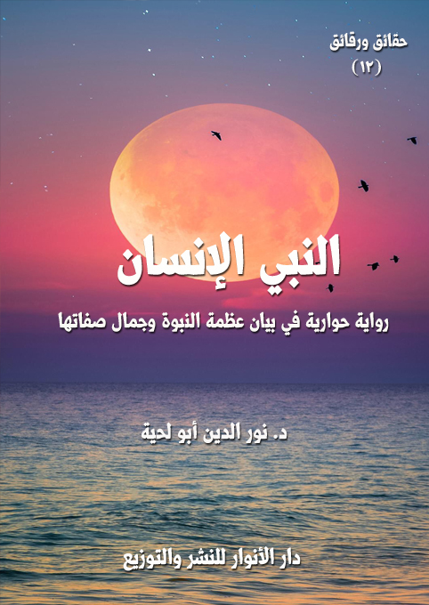

الكتاب: النبي الإنسان
المؤلف: أ.د. نور الدين أبو لحية
الناشر: دار الأنوار للنشر والتوزيع
الطبعة: الثانية، 1437 هـ
عدد الصفحات: 645
ISBN: 978-620-2-34479-1
لمطالعة الكتاب من تطبيق مؤلفاتي المجاني وهو أحسن وأيسر: هنا

التعريف بالكتاب
تحاول هذه الرواية ـ بقدر الطاقة ـ أن تصور بعض نواحي الكمال التي أودعها الله في النموذج الأكمل للإنسان الذي أراده الله ورضيه، وجعله عينا من عيون رحمته، ومنبعا من منابع لطفه بعباده وعنايته بهم.. وجعله بعد ذلك مرآة لتجلي حقائق الوجود وكمالاته.. وجعله فوق ذلك كله صراطا مستقيما، من سار على هديه وصل، ومن سلك غير سبيله ضل.
هذا الكامل الذي شهد له كل شيء بالكمال، هو محمد رسول الله صلى الله عليه وآله وسلم..
وبما أنه لا يمكن لبشر مهما كان أن يحيط بكمالاته صلى الله عليه وآله وسلم أو يصورها، فقد استعرنا في هذه الرواية بدله مجموعة من الورثة.. كل واحد منهم يحكي ناحية من النواحي.. فمن لا طاقة له بالنظر إلى الشمس يمكنه أن ينظر إليها من خلال صفحات الماء الصافية.
النبي الإنسان (9)
تحاول هذه الرواية ـ بقدر الطاقة ـ أن تصور بعض نواحي الكمال التي أودعها الله في النموذج الأكمل للإنسان الذي أراده الله ورضيه، وجعله عينا من عيون رحمته، ومنبعا من منابع لطفه بعباده وعنايته بهم.. وجعله بعد ذلك مرآة لتجلي حقائق الوجود وكمالاته.. وجعله فوق ذلك كله صراطا مستقيما، من سار على هديه وصل، ومن سلك غير سبيله ضل.
هذا الكامل الذي شهد له كل شيء بالكمال، هو محمد رسول الله صلى الله عليه وآله وسلم..
وبما أنه لا يمكن لبشر مهما كان أن يحيط بكمالاته صلى الله عليه وآله وسلم أو يصورها، فقد استعرنا في هذه الرواية بدله مجموعة من الورثة.. كل واحد منهم يحكي ناحية من النواحي.. فمن لا طاقة له بالنظر إلى الشمس يمكنه أن ينظر إليها من خلال صفحات الماء الصافية.
وجعلنا بطل الرواية الأساسي الذي يحكي قصة رحلته إلى [النبي الإنسان] رجلا اهتم بالبحث عن الكمال الإنساني.. وقد جعله ذلك يرحل إلى مناطق كثيرة من العالم إلى أن ظفر ببغيته في عشرة من الناس، كل واحد منهم يحدثه عن ناحية من نواحي الكمال في رسول الله صلى الله عليه وآله وسلم..
وهذه النواحي العشرة هي:
العارف: الذي اجتمعت في عقله وقلبه حقائق الوجود الكبرى، من مصادرها المعصومة المقدسة بعيدا عن الجدل والخرافة والأسطورة وغيرها.
العابد: الذي توجه إلى الله بكل لطائفه، وبكل ألوان العبودية، ولم يخل وقت من أوقاته من وظيفة من وظائف التوجه الصادق إلى الله.
الورع: الذي لم يقرب حراما ولا شبهة من أول حياته إلى آخرها.. بل نال فوق ذلك
النبي الإنسان (10)
أكمل مراتب الورع، حيث حصر همته في الله، فما زاغ بصره، وما طغى.
الزاهد: الذي تبرجت له الدنيا بكل محاسنها، فلم يلتفت لها، بل خير بين أن يكون نبيا ملكا، أو نبيا عبدا، فاختار العبودية على الملك.
العالم: الذي اجتمع له من العلوم والمعارف في جميع ميادين الحياة وتخصصاتها ما لم يجتمع لأحد قبله ولا بعده، ولا زالت آثار علومه منبعا عذبا للحقيقة تستقي منه كل الأزمنة.
الإمام: الذي استطاع إخراج البشر من الجهالة إلى العلم، ومن الجور إلى العدل، ومن البهيمية إلى الإنسانية، ولا يزال المنهج الذي جاء به سليما غضا طريا يمكنه أن يؤدي هذه الوظيفة في أي وقت، ولمن شاء.
القائد: الذي وضع منظومة سياسية وإدارية وقضائية وأمنية شاملة لكل الحالات، ممتلئة بالعدالة والقيم الصالحة لكل زمان ومكان.
الطبيب: الذي علمنا كيف نحفظ صحتنا في جميع مناحيها.. وعلمنا كيف نعالج أنفسنا بعيدا عن الدجل والخرافة التي كانت منتشرة، ووصف لنا فوق ذلك وصفات صحية غاية في النفع.
البشر: الذي اكتملت فيه نواحي البشرية جمالا وكمالا.. وأعطى في سلوكاته البشرية أحسن الأمثلة عن الإنسان في قمة كماله وجماله وأدبه.
الرسول: الذي اختاره الله من بين خلقه جميعا، ليؤدي تلك الوظيفة العظيمة، وظيفة الوساطة بين الله وخلقه.. ولذلك هيأ له من الأجواء، ووفر له من البراهين ما لا يمكن لأحد أن يقف في وجهه.
هذه هي الفصول العشرة التي تحتوي عليها هذه الرواية.. والتي أدى دور البطولة فيها ورثة صادقون مخلصون لربهم ولنبيهم.. وممتلئون فوق ذلك عشقا ومحبة أورثتهم تلك الوراثة العظيمة.
النبي الإنسان (11)
وهدفنا من هذه الرواية ليس فقط الاستدلال على نبوة محمد صلى الله عليه وآله وسلم.. وإن كان ذلك هدف لهذه السلسلة جميعا.. ولكن هدفنا الأكبر هو تبيان الوراثة الحقيقية لرسول الله صلى الله عليه وآله وسلم.. والاستنان الحقيقي بسنته.. والذي ينطلق من الحب والمعرفة.. قبل أن ينطلق من الجفاء والأهواء.
ولهذا تحاول هذه الرواية أن توضح المفهوم الحقيقي للاستنان بسنة رسول الله صلى الله عليه وآله وسلم والتي تشمل جميع نواحيه.. لا مجرد النواحي البشرية فيه.
وهي – كسائر السلسلة – تنتقد التشويه الخطير للرسول صلى الله عليه وآله وسلم.. والذي يقوم به الدجالون الذين ادعوا وراثة رسول الله صلى الله عليه وآله وسلم واحتكاره واحتكار سنته.
النبي الإنسان (12)
في ذلك الصباح المبارك الذي سمعت فيه الحكاية التي سأقصها عليكم، خطر لي خاطر ملأني نشوة وسعادة وسرورا..
لقد تذكرت أن هذه الأرض التي أسير عليها هي نفس الأرض التي سار عليها رسول الله صلى الله عليه وآله وسلم.. وأن هذه السماء التي أستظل بظلها، وألتحف غطاءها هي نفس السماء التي كانت تظلل رسول الله صلى الله عليه وآله وسلم، وكانت تغطيه بلحافها.. وأن هذه الشمس التي تغمرني أشعتها هي نفس الشمس التي غمرت بأشعتها رسول الله صلى الله عليه وآله وسلم.
وقلت لنفسي: أبشري يا نفس، فلربما تنعمت رئتاك بنفس الهواء الذي استنشقه رسول الله.. وربما تنعم جوفك بنفس الماء الذي شربه.. ولربما ذقت نفس الطعام الذي ذاقه، أو وطئت قدماك نفس المواطئ التي وطئتها قدماه الشريفتان.
لكن نفسي عادت لتتألم من جديد، وتقول لي، وهي تعتتصر ألما: كف عن هذه الهمة الدنية.. فالمحب لا يرضيه من الحبيب إلا كل الحبيب.. والحبيب الذي رضي من الحبيب بما ترضى لا يستحق أن يكون حبيه رسول الله.. فرسول الله صلى الله عليه وآله وسلم لا يحبه إلا أصحاب الهمم العالية.
قلت لها: ومن أصحاب الهمم العالية؟
قالت: أولئك الذي لم يرتضوا لننفوسهم وأرواحهم وأسرارهم اسما إلا اسم محمد.
قلت لها: فالأمر هين إذن.. سأغير اسمي ليصير كاسم الحبيب.
قالت: ليس الشأن أن تغير اسمك، ولكن الشأن أن تغير مسماك.
قلت لها: مسماي يستحيل أن يصير محمدا.. فمحمد ليس إلا واحد في هذا الوجود.
قالت: ما دمت كذلك.. فهمتك الدنية أبعد من أن تجعلك أهلا لحب الحبيب..
تألمت لهذا الجواب القاسي الذي أجابتني به نفسي.. وأيقنت مدى الانحطاط الذي كنت
النبي الإنسان (13)
أعيشه حين كنت أرضى ما يرضى به كل أهل الأرض.. فكل أهل الأرض ضمتهم الأرض، وغطتهم السماء، ولفحتهم بأشعتها الشمس.
لكني رددت على نفسي.. وبقوة..: ومن له القدرة على أن يزاحم تلك الأنوار التي اجتمعت في رسول الله صلى الله عليه وآله وسلم حتى صار شمسا لا تدانيها أي شمس.. إن من يفعل ذلك يوشك أن يحترق.
قالت لي نفسي، وبنفس القوة التي صرخت بها فيها: عالم الأنوار لا مزاحمة فيه.. ولا احتراق.. ومن ظن أن هناك مزاحمة أو أن هناك احتراقا، فهو لم يخرج من نفسه الأمارة بالسوء.
قلت: فكيف أخرج من نفسي الأمارة بالسوء لأصير محمدا؟
قالت: ذلك هو لباب العلوم وأصلها وسر أسرارها، ومن ظفر به ظفر بالإكسير الأحمر الذي ينفخ في طين الإنسان روح الإنسان.
قلت: في أي جامعة أتعلم هذه العلوم؟
قالت: هذه العلوم لا تعلم في الجامعات.. ولا في أي محل من محال الدنيا.
قلت: فكيف أصل إليها؟
قالت: بالبحث عن أهلها.
قلت: ومن أهلها؟
قالت: الورثة..
قلت: ومن الورثة؟
قالت: هم الذين لم يستظلوا في الدنيا بغير أشعة محمد صلى الله عليه وآله وسلم.. أولئك هم الذين نفخ فيهم روح الإنسان.. خليفة الله في أرضه.
قلت: وكيف أصل إليهم؟
قالت: عندما تمتلئ شوقا إليهم ستصل إليهم.. وربما تجدهم أقرب إليك من نفسك.
النبي الإنسان (14)
-\--\-
ما استتم هذا الخاطر على خاطري حتى سمعت صوت الغريب يناديني، فأسرعت أحث خطاي إليه، فقال: لقد كنت أحسبك مشتاقا للحديث عن (النبي الإنسان)، فكيف تأخرت علي؟
قلت: لقد حبستني نفسي.. وكدرت علي صفوا كنت أجده، ونغصت نعيما كنت أتنعم به.
قال: كل صفو حبسك، فالكدورة خير منه.. وكل نعيم قيدك، فالآلام خير منه.
قلت: لم أفهم ما الذي ترمز إليه..
قال: لقد قال تعالى: {فَفِرُّوا إِلَى اللَّهِ} (الذريات: 50)، والفرار يمتنع معه القرار.
قلت: إن نفسي تطالبني أن أصير محمدا.. لكأني بها لا تعلم من هو محمد.
قال: لا يمكن للمحب أن يكتمل حبه حتى يتحول إلى حبيبه الذي أحبه.
قلت: لكأني بك تردد قولها.
قال: لقد صدقتك نفسك.. وهي لم تقل إلا الحقيقة.
قلت: أهذا خاص بمحمد، أم عام لكل محبوب؟
قال: بل هو عام لكل محبوب.. فلا يمكن أن تبقى في المحب بقية لغير محبوبه (1).
قلت: فإن بقيت؟
قال: كان ذلك علامة عدم اكتمال الإخلاص في المحبة.. المحبة تقتضي الذوبان في المحبوب، والفناء عن الذات استغراقا في ذات المحبوب.. ألم تسمع حديث الذي قال لرسول الله صلى الله عليه وآله وسلم: يارسول الله، لأنت أحب إلي من كل شيء، إلا من نفسي، فقال له النبي صلى الله عليه وآله وسلم: (لا، والذي
__________
(1) تحدث علماء المسلمين على ما يسمى بتوحيد الحب، والمحبوب.. فذكروا أن من شروط صدق الحب أن يتوحد الحب والمحبوب، فتوحيد المحبوب أن لا يتعدد محبوبه، وتوحيد الحب أن لا يبقى في قلبه بقية حب حتى يبذلها لمحبوبه.
وقد استوحينا هذا المعنى في هذا الحوار الذي أردنا من خلاله تبيان الأصول التي يقوم عليها الاستنان بسنة رسول الله (.. فالسنة ليست مجرد حركات مقلدين، وإنما هي حركات محبين فانين في حبهم عن أنفسهم.
النبي الإنسان (15)
نفسي بيده، حتى أكون أحب إليك من نفسك) (1)
قلت: بلى.. ولكن لم كان الأمر كذلك؟
قال: لاشك أنك تعلم أن الإنسان عبارة عن مجموعة أركان.. هو مثل أي بنيان.. فهو مكون من جسد ونفس وعقل وروح وسر.. ولطائف كثيرة يكتشفها كلما ترقى في سلوكه وترفعه وسموه.. وقد لا يفطن لها، ولكنها مع ذلك موجودة فيه.
قلت: أعلم هذا.. وقد تحدث علماء النفس المسلمين عن البراهين الدالة على وجود هذه اللطائف والقوى واللبنات التي يتكون منها الإنسان.
قال: لقد جعل الله لهذه اللطائف مراتب مختلفة في التحقق والتخلق..
قلت: أعلم هذا.. وقد ذكر القرآن للنفس مراتب.. فمنها النفس الأمارة التي ذكرها الله في قوله: {وَمَا أُبَرِّئُ نَفْسِي إِنَّ النَّفْسَ لَأَمَّارَةٌ بِالسُّوءِ إِلَّا مَا رَحِمَ رَبِّي إِنَّ رَبِّي غَفُورٌ رَحِيمٌ} (يوسف:53).. ومنها النفس اللوامة التي ذكرها الله في قوله: {وَلا أُقْسِمُ بِالنَّفْسِ اللَّوَّامَةِ} (القيامة:2).. ومنها النفس المطمئنة التي ذكرها الله في قوله: {يَا أَيَّتُهَا النَّفْسُ الْمُطْمَئِنَّةُ} (الفجر:27)
قال: وكذلك هناك العقل الأمار المخادع.. وهناك العقل اللوام المجادل.. وهناك العقل المطمئن الموقن..
وهكذا الجسد.. وهكذا الروح.. وهكذا كل لطائف الإنسان.
قلت: وعيت هذا.. فما علاقته بما نحن فيه؟
قال: اصبر علي.. فليس من السهولة أن تفهم هذه الحقائق العالية.
سكت قليلا، ثم قال: ألا تعرف معنى قوله تعالى: {وَإِذَا النُّفُوسُ زُوِّجَتْ} (التكوير:7)؟
__________
(1) رواه أحمد والبخاري.
النبي الإنسان (16)
قلت: هذه الآية مثل قوله تعالى: {وَيَوْمَ تَقُومُ السَّاعَةُ يَوْمَئِذٍ يَتَفَرَّقُونَ} (الروم:14)، وقوله تعالى: {فَأَقِمْ وَجْهَكَ لِلدِّينِ الْقَيِّمِ مِنْ قَبْلِ أَنْ يَأْتِيَ يَوْمٌ لا مَرَدَّ لَهُ مِنَ اللَّهِ يَوْمَئِذٍ يَصَّدَّعُونَ} (الروم:43)
فهذه الآيات جميعا تشير إلى أنه في القيامة يحصل تصدع عظيم بحيث يتميز كل صنف في محال خاصة به لا ينازعه فيها سائر الأصناف.
ولهذا يقال في ذلك اليوم للمجرمين الذين يطمعون أن يجالسوا المؤمنين: {وَامْتَازُوا الْيَوْمَ أَيُّهَا الْمُجْرِمُونَ} (يّس:59)، ويقال لهم: {مَكَانَكُمْ أَنْتُمْ وَشُرَكَاؤُكُمْ} (يونس: 28)
وعندما يطمع المنافقون أن يقتبسوا من أنوار المؤمنين يقال لهم: {ارْجِعُوا وَرَاءَكُمْ فَالْتَمِسُوا نُوراً فَضُرِبَ بَيْنَهُمْ بِسُورٍ لَهُ بَابٌ بَاطِنُهُ فِيهِ الرَّحْمَةُ وَظَاهِرُهُ مِنْ قِبَلِهِ الْعَذَابُ} (الحديد:13)
وإلى هذا التميز الإشارة بقوله تعالى: {احْشُرُوا الَّذِينَ ظَلَمُوا وَأَزْوَاجَهُمْ} (الصافات: 22)، وبقوله تعالى: {وَإِذَا أُلْقُوا مِنْهَا مَكَاناً ضَيِّقاً مُقَرَّنِينَ دَعَوْا هُنَالِكَ ثُبُوراً} (الفرقان:13)
فقد ورد في تفسير هذه الآيات أن المراد منه الجمع بين النظراء أو الأشكال منهم كل صنف إلى صنف، وقد ورد في الحديث قوله صلى الله عليه وآله وسلم: (يقرن كل رجل مع كل قوم كانوا يعملون كعمله) (1)
قال: بورك فيك.. فقد فهمت المراد من الآية إذن.
قلت: أجل.. ولكني أريد أن أطبقه على ما نحن فيه.
قال: أرأيت لو أن مادة من المواد تتركب من معادن مختلفة.. ففيها الذهب.. وفيها الفضة.. وفيها الحديد.. وفيها أنواع الشوائب المختلفة.. ثم قمنا بتحليل هذه المادة إلى عناصرها المختلفة.. وعرضناها على مغناطيس يجذب الحديد فقط.. فهل ستنجذب سائر العناصر؟
قلت: لا.. ستبقى في محالها.. فيستحيل أن ينجذب النظير لغير نظيره.
__________
(1) انظر هذه النصوص في: الدر المنثور:8/ 429.
النبي الإنسان (17)
قال: فهكذا عالم اللطائف التي يتكون منها الإنسان..
قلت: فهمت كل ما ذكرت.. ولكني لم أفهم سر علاقة ذلك بالحب.. ثم علاقة ذلك بحب رسول الله صلى الله عليه وآله وسلم.
قال: الحب قد يكون من النفس.. وقد يكون من العقل.. وقد يكون من الروح.. وقد يكون حبا لا يتجاوز الجسد.. وقد يكون حبا طاغيا بحيث يشمل هذه اللطائف جميعا.
قلت: فالحب الحقيقي هو الحب الذي يشمل اللطائف جميعا!؟
قال: أجل.. وهو لا يمكن أن يكون إلا بعد حصول المزاوجة التامة التي ذكرها القرآن.
قلت: ولكن القرآن ذكر ذلك في الآخرة!؟
قال: عالم الآخرة هو باطن عالم الدنيا.. وعالم الآخرة هو نتيجة حتمية لعالم الدنيا.. فلا يحصل في الآخرة إلا ما حصل نظيره في الدنيا.. أليست الآخرة حصاد ما زرع في الدنيا!؟
قلت: تقصد أن الزوجية التي ذكر القرآن حصولها في الآخرة كانت قد حصلت قبل ذلك في الدنيا.
قال: أجل.. فمن اقترنت نفسه بأي نفس حشرت معها.. ومن اقترن عقله بأي عقل حشر معه.. ومن اقترنت روحه بأي روح حشرت معها.. وهكذا.
قلت: فالإنسان يتشتت بذلك إذن؟
قال: أجل.. ألم تسمع قوله تعالى: {لَهَا سَبْعَةُ أَبْوَابٍ لِكُلِّ بَابٍ مِنْهُمْ جُزْءٌ مَقْسُومٌ} (الحجر:44)؟
قلت: بلى..
قال: فلذلك من أحب رسول الله صلى الله عليه وآله وسلم.. أو تأسى به في جانب من الجوانب.. اقترن برسول الله صلى الله عليه وآله وسلم في ذلك الجانب.. وابتعد عنه في سائر الجوانب.. بل حجب عنه في سائر الجوانب..
بل قد يجتمع في الشخص الواحد عدوان لدودان.. فتكون بعض لطائفه لرسول الله،
النبي الإنسان (18)
وبعضها لأبي جهل.
صحت فرحا: وجدتها.. وجدتها..
قال: ما وجدت؟
قلت: أرى كثيرا من الناس يقتنعون ببعض مظاهر السنة.. ويزعمون أن ذلك هو السنة.. فيختلف الناس بسبب ذلك في شأنهم.. أما الورعون، فيتوقفون في أمرهم خشية أن يلوموهم في بعض ما ثبتت سنيته عن رسو الله صلى الله عليه وآله وسلم..
قال: ما قلته صحيح.. ولا ينبغي للورع البارد أن يدخل هذا الباب.. فسنة رسول الله أعظم من أن يمثلها أحد من الناس..
لقد ذكر رسول الله صلى الله عليه وآله وسلم ذلك ونبه عليه، بل حذر منه، فقال: (يأتي في آخر الزمان حدثاء الاسنان سفهاء الاحلام يقرأون القرآن لا يتجاوز تراقيهم، يقولون: من قول خير البرية لا يتجاوز حناجرهم يمرقون من الدين كما يمرق السهم من الرمية، فإذا رأيتموهم، فاقتلوهم فان قتلهم أجر لمن قتلهم يوم القيامة) (1)
التفت إلي، وقال: انظر.. لقد ذكر رسول الله صلى الله عليه وآله وسلم أن هؤلاء يقولون من قول خير البرية.. وذكر أنهم يقرأون القرآن لا يتجاوز تراقيهم.. ثم أمر بعد ذلك بما أمر به.
قلت: فسبب ذلك أنهم لم يتوحدوا في رسول الله صلى الله عليه وآله وسلم إذن؟
قال: أجل.. لقد اكتفوا من رسول الله صلى الله عليه وآله وسلم بظاهره.. بلباسه، ولحيته، وقراءته.. فراحوا يعمرون بها أجسادهم.. أما قلوبهم وعقولهم وأرواحهم وأسرارهم، فقد أسلموها الأبي جهل وإخوان أبي جهل.
قلت: فرسول الله صلى الله عليه وآله وسلم أمر الأمة إذن بأن تفنى في شخص رسولها، فلا يبقى في شخصها حظ من نفسها؟
__________
(1) واه البخاري ومسلم.
النبي الإنسان (19)
قال: أجل.. لأن رسول الله صلى الله عليه وآله وسلم هو النموذج الأعلى للإنسان.. ولا يمكن لشخص أن يصل إلى الكمال في أي لطيفة من لطائفه إلا بعد أن يتحول قالبه إلى القالب الذي كان عليه رسول الله صلى الله عليه وآله وسلم.
قلت: ألا ترى أن ما تقوله خطير أو مناف لعقيدتنا في رسول الله صلى الله عليه وآله وسلم؟
قال: لا.. هذا هو لب العقيدة في رسول الله صلى الله عليه وآله وسلم.. فالله تعالى جعل رسوله أسوة، قال تعالى: {لَقَدْ كَانَ لَكُمْ فِي رَسُولِ اللَّهِ أُسْوَةٌ حَسَنَةٌ لِمَنْ كَانَ يَرْجُو اللَّهَ وَالْيَوْمَ الْآخِرَ وَذَكَرَ اللَّهَ كَثِيراً} (الأحزاب:21).. ألا ترى أن الآية جاءت مطلقة.. فلم تحدد موضع الأسوة؟
قلت: أجل..
قال: ولذلك كان من حصر التأسي في حال من الأحوال أو عمل من الأعمال بعيدا عن رسول الله صلى الله عليه وآله وسلم بقدر حصره وبقدر بعده.. ألم تسمع الأصوليون، وهم يرددون كل حين (لا تخصيص بدون مخصص.. ولا تقييد بدون مقيد)
قلت: بلى..
قال: فمن حصر سنة رسول الله التي تمثل شخص رسول الله في بعض الظواهر المبتورة عن الحقائق التي تنطلق منها يكون قد شوه رسول الله صلى الله عليه وآله وسلم أعظم تشويه.. بل هو كمن صبغ سما بصورة دواء.. فلا يزيد الناس إلا مرضا.
قلت: ولكن كيف يضع الإنسان نفسه في القالب الذي كان عليه رسول الله صلى الله عليه وآله وسلم؟
قال: أنت تعلم أنه ليس هناك إنسان في الدنيا حفظت كل تفاصيل حياته.. بل حفظت حياة كل تفاصيل لطائفه جميعا مثل رسول الله صلى الله عليه وآله وسلم.. فقد حفظ الله في القرآن والسنة والسيرة كل ما يرتبط برسول الله صلى الله عليه وآله وسلم.
قلت: أجل.. أعلم ذلك.
قال: فقد أقام الله الحجة على عباده ووضع لهم الصورة المثالية للإنسان ليعيشوها ويتقولبوا
النبي الإنسان (20)
في قالبها.. ليتحقق فيهم مراد الله من خلق الإنسان.
شعرت بقناعة تغمرني لما قاله، لكني وجدتني أسأله من غير أن أشعر: لقد ذكرت لي نفسي الورثة.. فمن الورثة؟
قال: الوارث هو الذي اصطبغ بصبغة رسول الله صلى الله عليه وآله وسلم حتى صار دليلا عليه..
قلت: هل يمكن أن يصل الشخص إلى هذه المرتبة؟
قال: أجل.. بل إن مثل هؤلاء لا يمكن أن تخلو منهم الأرض.. فالله تعالى قد جعل بحكمته ورحمته ولطفه بعباده من يمثل في كل زمن من الأزمان رسول الله صلى الله عليه وآله وسلم ليتحقق بذلك قوله تعالى: {وَمَا كَانَ اللَّهُ لِيُعَذِّبَهُمْ وَأَنْتَ فِيهِمْ وَمَا كَانَ اللَّهُ مُعَذِّبَهُمْ وَهُمْ يَسْتَغْفِرُونَ} (لأنفال:33)
فقد جعل الله وجود رسول الله صلى الله عليه وآله وسلم أمانا للأرض.. وهكذا وجود ورثته.. ولهذا لا تقوم الساعة حتى لا يقال في الأرض (الله الله) (1)
قلت: أراك تتحدث عن حقائق عالية.. فمن علمك علومها؟
قال: الوارث.
قلت: الوارث!؟.. هل ظفرت به؟
قال: لقد أظفرني الله به.. وهداني إليه.
قلت: فحدثني حديث ذلك..
ثم استدركت أقول: نسيت.. إن حديثنا اليوم عن (النبي الإنسان).. فلذلك دعنا نؤجل الحديث عن الوارث إلى ما بعد الانتهاء من رحلتك إلى شمس محمد صلى الله عليه وآله وسلم.
قال: لقد كان الوارث هو دليلي إلى النبي الإنسان.. كما كان الحكيم دليلي إلى النبي المعصوم.. ولذلك فإن حديثي عن الوارث لا يخرج عن الحديث عن رسول الله صلى الله عليه وآله وسلم.. بل إن الوارث هو أعرف الناس بكمالات رسول الله.. ولذلك لا يصح أن ننال معارفنا عن رسول الله
__________
(1) نص الحديث: (لا تقوم الساعة حتى لا يقال في الأرض: الله الله) رواه مسلم والترمذي وغيرهما.
النبي الإنسان (21)
من غيره.
قلت: فحدثني حديث ذلك..
-\--\-
اعتدل الغريب في جلسته، وحمد الله، وصلى وسلم على نبيه صلى الله عليه وآله وسلم مستغرقا في كل ذلك، ثم قال: بعد أن امتلأت قناعة بأن محمدا صلى الله عليه وآله وسلم يستحيل أن يكون كاذبا أو مدعيا أو خادعا أو مستغلا أو ظالما أو مستكبرا.. أو كل تلك الشبهات التي كانت تملأ أرجاء عقلي وقلبي (1)..
وبعد أن أيقنت أن محمدا صلى الله عليه وآله وسلم هو الطهر والصفاء والسمو والرفعة رحت أبحث عنه، وقلت لنفسي: من الخطأ العظيم أن تنشغلي بكل شيء، ولا تنشغلي بالبحث عن الذي لم يتدنس بأي دنس، ولم يكدر بأي كدورة.
ولكني ـ بعد هذا اليقين ـ لم أجد السبيل التي أبحث فيها عن رسول الله صلى الله عليه وآله وسلم..
وزادني ألما ما عليه المسلمون من تشويه لشخص نبيهم..
وفي ظل تلك الآلام ذهبت إلى الغابة التي كنت أذهب إليها لأمسح من آلامي ما عساه يمكن أن يمسح.. وكنت أرجو أن أجد فيها ذلك الذي لا ينطق لسانه إلا بالحكمة..
على عشب مروجها استلقيت أنظر إلى الشمس.. وأقول لنفسي: لقد كانت كل رحلتي السابقة تطوف بحثا عن الشمس.. وها أنا قد وجدت من برد اليقين ما يدل عليها.. فأنى لي أن أصل إليها لأعرف حقيقتها ودونها كل هول..
بقيت كذلك مستغرقا، إلى أن شعرت بحركة قريبة مني، فوقفت لأنظر من هو، فوجدت صاحبك معلم السلام يقف أمام بركة ماء صافية كصفاء اللآلئ، وهو يتأمل فيها مستغرقا في تأملاته.
اقتربت منه لأنظر ما الذي شغله كل ذلك الشغل، فإذا بي أراه ينظر إلى الشمس على
__________
(1) انظر رسالة (النبي المعصوم)
النبي الإنسان (22)
صفحة الماء الصافية..
لم يرفع رأسه إلي، بل بقي مستغرقا في نظراته، وقال: ألا ترى كيف تحكي هذه المياه الصافية جمال الشمس؟
قلت: بلى.. بل هي تصورها تصويرا بديعا يعجز أي فنان في الدنيا على محاكاتها فيه.
أخذ حصاة صغيرة ورماها في البركة.. فأخذت الشمس التي كانت تزينها تتراقص مع الأمواج المتراقصة.
رفع رأسه إلي، وقال: ألا ترى أن الشمس التي في البركة الآن تختلف عن الشمس التي في السماء؟
قلت: بلى.. وأنت سبب ذلك.. فلو تركت للبركة صفاءها لحكت الشمس، وصح لها أن تعبر عنها، وتقرب حقيقتها.
قال: فإن أردت أن تعرف الشمس.. فابحث عن بركة صافية لم تتدنس.. فلا يمكن للمستنقعات أن ترتسم على صفحاتها الآسنة أشعة الشمس الجميلة.
قلت: أراك تنتقل من شمس السماء إلى شمس أخرى.. ما الذي تقصد؟
قال: لكل سماء شمسها.. ولكل حقيقة أشعتها.. ومن عبر الحس وصل إلى المعنى.
قلت: أنا كثيف.. ليس لي لطافة المعنى.. فحدثني بما أفهمه.
قال: كل شمس لا تطيق الوصول إليها يمكنك أن تعبر إليها من خلال من يدل عليها.
قلت: ولكني قد أقع على مستنقعات أسنة، أو بركة متراقصة، فأنى لي أن أصل إلى الشمس التي لا يمكنني الوصول إليها.
قال: إن ربك الذي خلق هذه البركة في عالم الحس لا يعجز أن يخلق مثلها في عالم المعنى.
قلت: أتقصد أن هناك من يمكن أن يمثل بصفائه وبهائه ونوره أشعة الشمس التي لا تغرب؟
النبي الإنسان (23)
قال: أجل.. فرحمة الرحيم لا تنطق إلا بذلك..
قلت: فكيف أصل إلى ذلك؟
قال: اصدق في بحثك.. فلم يصل إلا الصادقون.. ولن يصل إلا الصادقون.
قال ذلك، ثم راح يسير، كعهدي به.. ولكنه جعلني أفكر تفكيرا واقعيا في البحث عن ورثة رسول الله.. فلا يمثل رسول الله صلى الله عليه وآله وسلم إلا ورثته.
قلت: لقد دعاك ذلك إذن إلى البحث عن ورثة رسول الله صلى الله عليه وآله وسلم؟
قال: أجل.. لقد كنت أبحث عن الوارث الكامل الذي تجلت على مرآته شمس رسول الله صلى الله عليه وآله وسلم كاملة لم يؤثر فيها كسوف، ولم يحجبها غمام.
قلت: فهل ظفرت بذلك الوارث؟
قال: قبل أن أظفر به سقطت على ورثة كثيرين.. ولكن شموس أكثرهم كانت محجوبة بغمام كثير جعل شمس محمد صلى الله عليه وآله وسلم تبدو في مرائيهم باهتة تكاد تحتضر.
قلت: فهل تحدثني عنهم؟
قال: هم كثيرون.. ولن تفيدك معرفتهم شيئا.. بل إنهم كانوا حجابا كثيفا وقف بيني وبين محمد صلى الله عليه وآله وسلم دهرا من الزمان..
قلت: فحدثني عنهم لأتقيهم، ولئلا يقفوا حجابا بيني وبين شمس محمد صلى الله عليه وآله وسلم، أو حتى لا تتشوه شمس محمد صلى الله عليه وآله وسلم عندما أنظر إليها من خلال مرائيهم.
ابتسم، وقال: لقد كان أولهم رجلا كان مشغوفا بمظهره.. آتاه الله بسطة في الجسم، ولكن المسكين لم يؤت مثلها في العقل.. لقد رأيته فهبته، وقلت لنفسي: لا شك أن هذا وارث لمحمد.. وسأعرف محمدا من خلاله.. وقد نشطني لصحبته أني سمعت أصحابه يذكرون أنه (السنة تمشي)..
قلت: فماذا وجدت؟
النبي الإنسان (24)
قال: وجدته لا يعرف رسول الله إلا لحية وقميصا وكحلا وخاتما.. وكأن رسول الله صلى الله عليه وآله وسلم جاء ليعلمنا كيف نلتحي، وماذا نلبس، وأين نضع الخواتم في أصابعنا.
قلت: وحقيقته التي تمثل سره.. كيف وجدتها؟
قال: لقد وجدتها مزبلة للأحقاد.. فهو حقود غليظ القلب، لا تكاد الابتسامة تخرج من فمه لأحد من الناس.
قلت: فما الذي حال بينه وبين الابتسامة، وقد كانت الابتسامة سنة رسول الله صلى الله عليه وآله وسلم؟
قال: لقد كانت الابتسامة عنده محصورة فيمن كان له لحية كلحيته، وقميص كقميصه، وخاتم كخاتمه.. وقد رأيته مرة يهجر صاحبا له هجرا شديدا، بل يذمه ذما قبيحا، بل يحذر منه القاصي والداني، لأن صاحبه المسكين تجرأ، فقصر لحيته، وأطال قميصه.
قلت: هذا أولهم.. وأعرف أمثال هذا.. فهل هناك غيره؟
قال: كثيرون هم.. منهم رجل اتخذ سيفا.. وكان لا يحفظ من سيرة رسول الله صلى الله عليه وآله وسلم إلا غزواته.. ولا يحفظ من حديثه إلا أحاديث الجهاد.. ولا يتصور شيئا في الدنيا يمكن أن يتحقق من غير قعقعة السيوف..
قلت: فهو يحمل أحقادا مثل الذي سبقه.
قال: هو لا يسميها أحقادا.. هو يسميها (ولاء لله)، و(براءة من أعداء الله)
قلت: فكيف تعرفت على هذا؟
قال: كان لي صديق رسام من الدانمارك.. كان يعرفه.. وكان يتصور أنه النموذج الأكمل لمحمد صلى الله عليه وآله وسلم.. وقد ذهبت معه إلى هذا الرجل لنبحث جميعا عن حقيقة محمد..
أما أنا، فقد كان لي من العقل ما جعلني أنفر منه، وأعلم أن محمدا صلى الله عليه وآله وسلم أعظم من أن يختصر في جلبابه وسيفه.
وأما صاحبي الرسام الدانماركي، فلم يكن له من القدرة العقلية، ولا من طاقة البحث ما
النبي الإنسان (25)
يجعله يتأني، فراح يستوحي من أحاديثه ومن مغازيه ما يشوه به جمال شمس محمد.
صحت: عرفت القصة إذن.. فالرسام الدانمركي المسكين لم يكن منبع رسوماته حقدا يكنه لرسول الله صلى الله عليه وآله وسلم.. وإنما منبعه تشويه بلغه عن رسول الله صلى الله عليه وآله وسلم.
قال: نعم.. هو كذلك.. ولكني مع ذلك لمته كثيرا.. فالحقيقة لا يمكن أن نعرفها من خلال كوة واحدة.
قلت: فبم أجابك؟
قال: لم يكن للمسكين قدرة كبيرة على البحث في مثل هذا.. وقد زاد في حجابه سلوك المسلمين تجاهه وهدرهم لدمه.. فصار حقده مضاعفا.. بل صارت الهستريا تصيبه كلما سمع اسم محمد، أو سمع اسم الدين الذي جاء به محمد.
قلت: فهل رأيت غير هذا الوارث؟
قال: أجل.. رأيت رجلا هو نقيض الرجل الأول.. لم يكن ملتحيا، وكان يرتدي فوق ذلك بذلة عصرية.. ويمتطي سيارة فارهة.. وله مكتب مكيف.
قلت: فكيف عرفت أنه وارث.. وليس فيه من المظاهر ما يربطه بمحمد صلى الله عليه وآله وسلم؟
قال: لقد كان زعيما سياسيا، وكان يدعو إلى تأسيس الحكومة التي يقودها محمد صلى الله عليه وآله وسلم.. فقلت لنفسي: لن يدعو أحد إلى حكومة محمد إلا إذا كان محمديا.
قلت: فكيف وجدته؟
قال: لقد كان ركون المسكين للدنيا، واستغراقه فيها حجابا عظيما حال بينه وبين محمد صلى الله عليه وآله وسلم.. فراح يعمل عقله، وأهواءه، ويصور بها محمدا صلى الله عليه وآله وسلم، ودين محمد صلى الله عليه وآله وسلم.
قلت: فكيف انصرفت عنه؟
قال: لقد قدر له أن يفوز في بعض الانتخابات، ولم يكن للمسكين من الترفع ما يجعله يزهد في تلك المكاسب المغرية التي كانت تلوح له.. ولم يكن له من المعرفة بمحمد صلى الله عليه وآله وسلم ما يجعله
النبي الإنسان (26)
يحتذي حذوه.. فلذلك راح بكل ما أوتي من نهم وجشع وحرص يملأ نفسه وأهواءه بجميع أنواع الملذات..
وقد نسي المسكين في غمرة تلك اللذات التي فتحت عليه القرآن الذي كان يحفظه، فلم يبق له منه غير قوله تعالى: {وَلا تَنْسَ نَصِيبَكَ مِنَ الدُّنْيَا} (القصص: 77)، وقوله تعالى: {قُلْ مَنْ حَرَّمَ زِينَةَ اللَّهِ الَّتِي أَخْرَجَ لِعِبَادِهِ وَالطَّيِّبَاتِ مِنَ الرِّزْقِ} (لأعراف: 32)
ولم يبق له من السنة التي كان يحفظ أحاديثها عن ظهر قلب إلا حديث واحد كان يردده في كل المجالس: (إن الله تعالى يحب أن يرى أثر نعمته على عبده) (1)
قلت: فقد زهدت فيه إذن لأجل ذلك؟
قال: لم أزهد فيه أنا وحدي.. بل زهد فيه الكل.. وأول من زهد فيه المستضعفون الذين كانوا ينظرون إليه كما كان المستضعفون ينظرون إلى محمد صلى الله عليه وآله وسلم.. لكن المسكين خيب آمالهم، فشغلته نفسه عن الكل.
قلت: فهل بحثت عن وارث آخر لرسول الله صلى الله عليه وآله وسلم؟
قال: أجل.. لقد رأيت رجلا سمعت أنه قطب الأقطاب، وغوث الأغواث، ووتد الأوتاد، فهرعت إليه، وقلت: لن يفهم محمدا صلى الله عليه وآله وسلم، ولن يمثله إلا رجل كهذا.. فهو يتحدث في الأعماق، ولا يكتفي بالظواهر.
قلت: فكيف وجدته؟
قال: لقد كان حجابا عظيما حال بيني وبين شمس محمد صلى الله عليه وآله وسلم.
قلت: كيف ذلك.. وقد زعمت أنه قطب الأقطاب، ولن يصير المرء قطبا حتى يكون وارثا؟
قال: لقد ورث المسكين القطبية عن أبيه، وأبوه ورثها عن جده، وقد تركته يعلم ولده
__________
(1) رواه الترمذي والحاكم.
النبي الإنسان (27)
أسرار القطبية.
قلت: وما أسرارها؟
قال: جاه عريض، وأموال يكسبها من حلها وحرامها.. وناس يتمسحون بقدمه وحذائه وفتات خبزه.
قلت: ذلك ما ناله، فما الذي أعطاه حتى يظفر بكل هذا؟
قال: لقد صحبته مدة أبحث عن صورة محمد صلى الله عليه وآله وسلم في ذهنه، فوجدتها صورة مشوهة قد خنقتها الأساطير والخرافات.. بل الكون كله مشوه في ذهنه.. ولا يمكن لمن تشوشت بركته هذا التشويش أن يمثل حقيقة شمس محمد صلى الله عليه وآله وسلم.
قلت: لقد مررت بكل هؤلاء في طريقك للبحث عن الوارث؟
قال: أجل.. ومررت بكثير غيرهم.. وقد رأيت نفرا كثيرا من المسلمين ومن قومي توقفوا عند آحادهم، ولولا أن من الله علي لكنت الآن محجوبا بالحجب التي عرضت لهم.
قلت: فهل ظفرت بالوارث الكامل؟
قال: لقد من الله علي بذلك.. وقد صحبته دهرا من الزمن.. ولا أزال إلى الآن أتزود من ثمار صحبتي له.
قلت: فهل ستحكي لي قصتك معه؟
قال: من قصتي معه ما يمكن أن يحكى، وما يمكن للسان أن يعبر عنه.. ومنها ما لا تستطيع جميع وديان البلاغة أن تعبر عنه.
قلت: فحدثني بما أطقت أن تحدثني عنه، وقرب لي ما لم تستطع التعبير عنه.
قال: بعد أن امتلأت يأسا من أن أجد الوارث الذي تتجلى في مرآته شمس محمد صلى الله عليه وآله وسلم كاملة غير محجوبة بشيء.. جاءني خطاب من أخي ـ الذي لا زال تترقى به الدرجات في سلم الكنيسة ـ يأمرني فيه بأن أسير إلى أرض من بلاد الله هي أشبه بلاد الله بالبلاد التي ولد فيها محمد صلى الله عليه وآله وسلم..
النبي الإنسان (28)
اختلطت فيها الأديان والمذاهب والفلسفات حتى صارت، وكأنها متحف لها.
قلت: فما الوظيفة التي ندبك إليها في هذه البلاد؟
قال: لقد ذكر لي في رسالته أن بتلك البلاد رجل من المسلمين هو أشبه الناس بالمغناطيس الذي تنجذب له القلوب والعقول والأرواح.. مع أنه لم يكن يتكلم كثيرا.
قلت: هل أرسلك إليه لتبشره بالمسيح؟
قال: كم ود أخي أن يحصل ذلك.. ولكنه كان يعلم استحالة ذلك.
قلت: فلماذا أرسلك إذن؟
قال: أرسلني إليه لأدرسه..
قلت: لتدرسه!؟
قال: أجل.. ليعرف مواطن الجذب والتأثير التي كان يملكها.
قلت: وما الذي يفيده معرفتها؟
قال: لقد نسيت أن أذكر لك بأن وظيفة أخي في الكنيسة تشبه وظيفة المستشارين الاستراتيجيين.. وقد كان يحمل مشروعا ضخما لنشر المسيحية في جميع أقطار العالم بأساليب تختلف عن أساليبها التقليدية.. ولذلك كان يرسل من يثق فيه ليدرسوا أسباب التأثير وأساليبه ووسائله ليستفيد من كل ذلك في المشروع الذي هو بصدده.
قلت: فهل أرسلك وحدك في هذا السبيل؟
قال: لا.. أخي لا يثق في الواحد.. ولا في الاثنين..
قلت: فقد أرسل عشرة إذن؟
قال: أجل.. لقد أرسل معي عشرة من رجال العلم والدين.. كل له تخصصه الذي يتقنه غاية الإتقان، ويفنى فيه غاية الفناء.
قلت: وذهبتم إلى هذه البلاد التي هي أشبه بلاد الله ببلاد محمد صلى الله عليه وآله وسلم؟
النبي الإنسان (29)
قال: أجل.. وقد ذهبنا متنكرين في زي المسلمين.. وقد حفظنا من أساليب حياتهم ما جعلنا لا نتميز عنهم بشيء.
قلت: فحدثني كيف التقيتم به.
سكت الغريب بعد أن طلبت منه هذا.. وقد غمره نور عظيم حتى صار وكأنه قطعة من الشمس، ثم قال، وكأنه يشاهد ما يقول: في الطريق إليه كنت أتصوره رجلا مثل من ذكرت لك.. ولكني عندما رأيته لم يخطر على بالي أحد في الدنيا غير محمد صلى الله عليه وآله وسلم.. وقد كان أشبه الناس بالحكيم الذي عرفت قصته في [النبي المعصوم]، ولذلك قلت له: ألست الحكيم الذي قامت الدنيا كلها تبحث عنه؟
قال: أنا محمد.. ولست أرى أحدا يبحث عني.
قلت: بل كلهم يبحث عن محمد.. ليصحب محمدا.. أو ليشوه محمدا؟
قال: ذاك محمد الذي يلقب برسول الله.. أما أنا، فمحمد الذي يلقب بالوارث.
قلت: الوارث!؟.. لقد ظللت زمنا طويلا أبحث عن الوارث.. لكني كنت كمن يبحث في محيط عن إبرة.
قال: ما أصعب أن يرث المرء إنسانا كاملا.. ولذلك لا تلمهم.. بل لا تلم أحدا من الناس.. فربك قسم بين خلقه مواريث أخلاقهم.. كما قسم بينهم مواريث أموالهم (1).
قلت: فأنت تقول بالجبر إذن؟
قال: الرحيم لا يجبر أحدا على أن يعصيه.. والحكيم لا يجبر أحدا، ثم يؤاخذه.
__________
(1) أشير بذلك إلى قوله (: (إن الله تعالى عزوجل قسم بينكم أخلاقكم كما قسم ينكم أرزاقكم، وإن الله تعالى يعطي الدنيا من يحب ومن لا يحب، ولا يعطي الدين، إلا من أحب، ومن أعطاه الدين فقد أحبه، والذي نفسي بيده! لا يسلم عبد حتى يسلم قلبه ولسانه، ولا يؤمن حتى يأمن جاره بوائقه غشمه وظلمه، ولا يكسب عبد مالا من حرام فينفق منه فيبارك له فيه، ولا يتصدق به فيقبل منه، ولا يتركه خلف ظهره إلا كان زاده إلى النار، إن الله لا يمحو السيئ بالسيئ ولكن يمحو السيئ بالحسن، إن الخبيث لا يمحو الخبيث) رواه أحمد والحاكم والبيهقي عن ابن مسعود.
النبي الإنسان (30)
قلت: فكيف اعتبرت الإرث قسمة كقسمة المال؟
قال: المال يقسم بأسبابه، والأخلاق تقسم بأسبابها.. وربك بكل شيء محيط، ولكل شيء مدبر..
قلت: أراك تتحدث بالحكمة.. فمن أين تراك اكتسبتها؟
قال: من لم يتعلم الحكمة من رسول الله لم تزده الأيام إلا جهلا..
قلت: فمعلمك هو محمد.
قال: محمد صلى الله عليه وآله وسلم هو معلم الكل.. هو كالشمس التي تطل على الكل.. ولكن من الناس من يتعرض لها.. ومنهم من ينحجب عنها.. ومنهم من يتعرض لها، ولكنه يضع الحجب الكثيرة بينه وبينها، فلا تصله أشعتها إلا باهتة فانية ميتة.
قلت: فأنت تعرضت لها تعرضا كليا.. ولم تنحجب عنها بأي حجاب؟
قال: لا يزال الرجل عالماً ما تعلم فإذا ترك التعلم، وظن أنه قد استغنى واكتفى بما عنده فهو أجهل ما يكون (1).. فمن زعم أنه كما وصفت، فهو محجوب بقدر زعمه.. ألا تعلم أنه لا مستقر إلا عند ربك؟
قلت: بلى.. ولكن كيف كان هناك ورثة إذن؟
قال: الوارث لا يعني المورث.. الوارث سائر خلف المورث.. ومن سار خلف المورث، فلن يتخلف عن المورث.
قلت: أيمكن للشخص أن يتخلف عن مورثه؟
قال: أجل.. إن اختار أن يسير خلف غيره.. لقد أمر رسول الله صلى الله عليه وآله وسلم بعض أصحابه عندما رآه يحمل الصحيفة أن يوحد وجهته.. وقد أخبر الذين تربوا على يد رسول الله صلى الله عليه وآله وسلم أن رسول الله صلى الله عليه وآله وسلم كان يفرغهم، ثم يملؤهم.
__________
(1) روي هذا عن سعيد بن جبير وغيره.
النبي الإنسان (31)
قلت: لم؟
قال: لتصح نسبتهم إلى رسول الله.. فلا يمكن للوارث أن يرث من لم تصح نسبته إليه.
قلت: طوبى لك.. لقد ورثت الإسلام كابرا عن كابر، فلذلك أتيح لك ما لم يتح لغيرك.
قال: الإسلام لا يورث.. وإن شئت أن أحدثك عن نفسي.. فإني لم أسمع بأن أحد آبائي كان مسلما.
تعجبت كثيرا لما قال، وقلت: على أي دين كانوا؟
قال: لقد تقلبت بهم الأديان كما تقلبت بهم البلدان..
قلت: وأنت؟
قال: منذ ريعان شباني كنت أبحث عن الإنسان.. كان مطلبي الأعلى أن أتحقق بالإنسانية التي هي غاية وجودي..
قلت: على أي دين كنت؟
قال: في البدء لم أكن على أي دين من الأديان.. وقد بدأت بأقدم الأديان أبحث فيها عن الإنسان.. فمررت بها جميعا إلى أن ضمني دين الإسلام..
قلت: ألم يستطع بوذا أن يجعلك إنسانا؟
قال: لقد كان بوذا عظيما.. ولكن ما وصلنا عن بوذا لم يكف ليجعلني إنسانا.
قلت: وزرداشت؟
قال: مثله.. لقد كان عظيما.. ولكن ما وصلنا عنه لم يكف ليجعلني إنسانا.
قلت: وكونفوشيوس؟
قال: مثلهما.. لقد كان عظيما.. ولكن ما وصلنا عنه لم يكف ليجعلني إنسانا.
قلت: والمسيح.. ذلك الذي امتلأ بالطهر والكمال؟
قال: لقد كان عظيما.. ولكني لم أجد في الأناجيل ما أتمسك به لأصير إنسانا.
النبي الإنسان (32)
قلت: فلم تجد غايتك إلا عند محمد؟
قال: أجل.. لقد وجدت كل شيء عنده.. كل لطائفي غذيت بلطائفه.. وكل أسراري غذيت بأسراره..
لقد وجدت فيه العارف الذي انفتحت له مفاتيح أسرار الوجود، فهو ينهل منها، ويرتوي من عيونها.
ووجدت فيه العابد الذي ملأ كل أركانه عبادة وتسبيحا وذكرا..
ووجدت فيه الزاهد الذي راوده كل شيء عن نفسه، فلم تزع عينه ولم تطغ.
ووجدت فيه الورع الذي لم تنحرف به أهواؤه ليزاحم بها أوامر الله.
ووجدت فيه العالم الذي فقه أسرار الحياة.. كما فقه قبلها أسرار الوجود.
ووجدت فيه الإمام الذي استطاع أن يؤسس دولة الروح..
ووجدت فيه القائد الذي استطاع أن يؤسس دولة الأجساد..
ووجدت فيه الطبيب الذي يمسح عن نفوسنا آلام الكآبة، وكدورات الاضطراب.
ووجدته مع ذلك كله بشرا كالبشر يأكل ويشرب ويسير في الأسواق..
ووجدته فوق ذلك كله رسولا له من العلاقات مع السماء ما يفوق علاقاته مع الأرض.
قلت: لقد صحبت رجالا من ورثة محمد.. ولكني لم أسمعهم يذكرون ما ذكرت.
قال: الناس مختلفون في ميراثهم بقدر اختلافهم في أنسابهم.
قلت: رأيت بعضهم يركز على العرفان؟
قال: لأنهم لم يروا في رسول الله إلا العارف.. فحجبوا بالعارف عن العابد والزاهد والعالم.. والإمام والقائد.
قلت: ورأيت بعضهم يركزون على السياسة؟
قال: لقد حجب هؤلاء بالرسول القائد عن الرسول الإمام والرسول العارف.
النبي الإنسان (33)
قلت: ورأيت بعضهم يركز على مظاهر معينة يختصر فيها السنة؟
قال: فهؤلاء حجبوا بالرسول البشر عن الرسول الذي اجتمعت فيه كل خصائص الكمال الإنساني.
قلت: فهل تأذن لي في صحبتك لأتعلم منك كيف كان رسول الله صلى الله عليه وآله وسلم؟
قال: أنا أحقر من أن أمثل رسول الله صلى الله عليه وآله وسلم.. ما أنا إلا بركة صغيرة تريد أن تضم الشمس على صفحتها.
قلت: فأذن لي أن أتفرج من خلال صفحتك على شمس رسول الله.
قال: سر معي كما تشاء.. فلن أمنع شخصا من السير معي.. ولكني لن أرضى منك أن تقلدني في شيء.. فلذلك سلني عن كل ما أفعله، فإن كان من شمس رسول الله فعليك به، وإن كان مني فلا أنصحك به.
لقد ذكر كل ورثة رسول الله صلى الله عليه وآله وسلم هذا..
فالعارفون رددوا جميعا ما قاله أبو سليمان الداراني، حين قال: ربما تقع في نفسي النكتة من نكت القوم أياما فلا أقبل منه إلا بشاهدين عدلين الكتاب والسنة.
ورددوا ما قاله أبو يزيد البسطامي حين قال: (لو نظرتم إلى رجل أعطي من الكرامات حتى يرتفع في الهواء فلا تغتروا به حتى تنظروا كيف تجدونه عند الأمر والنهي وحفظ الحدود)، وحين قال: (من ادعى باطن علم ينقض ظاهر حكم فهو غالط)
ورددوا ما ذكره الجنيد حين قال: (مذهبنا هذا مقيد بالأصول الكتاب والسنة)، وحين قال: (علمنا منوط بالكتاب والسنة من لم يحفظ الكتاب ويكتب الحديث ولم يتفقه لا يقتدى به)
وورثة رسول الله صلى الله عليه وآله وسلم من الفقهاء والعلماء والحكماء رددوا هذا.. فابن عباسٍ كان يقول: (ليس منا إلا ويؤخذ من قوله ويدع غير النبي صلى الله عليه وآله وسلم) وقال يعاتب أصحابه: (يوشك أن تنزل عليكم حجارة من السماء أقول قال رسول الله صلى الله عليه وآله وسلم وتقولون قال أبو بكر وعمر)
النبي الإنسان (34)
وأبو حنيفة كان يقول: (إذا قلت قولاً كتاب الله يخالفه فاتركوا قولي لكتاب الله)، فقيل له: (إذا كان قول رسول الله صلى الله عليه وآله وسلم يخالفه)، قال: (اتركوا قولي لخبر رسول الله صلى الله عليه وآله وسلم)
وقال مالك: (إنما أنا بشر أخطئ وأصيب، فانظروا في رأيي فكل ما وافق الكتاب والسنة فخذوا به، وكل ما لم يوافق الكتاب والسنة فاتركوه)، وقال: (ما منا إلا رادٌ ومردود عليه إلا صاحب هذا القبر صلى الله عليه وآله وسلم)
وقال الشافعي: (أجمع العلماء على أن من استبانت له سنة رسول الله صلى الله عليه وآله وسلم لم يكن له أن يدعها لقول أحد)، وقال: (إذا صح الحديث بما يخالف قولي فاضربوا بقولي عرض الحائط)
وقال أحمد: (من قلة فقه الرجل أن يقلد دينه الرجال)، وقال: (لا تقلدني ولا تقلد مالكاً ولا الثوري ولا الأوزاعي وخذ من حيث أخذوا)
وغيرهم كثير.. كلهم ردد هذا وحث عليه (1).
-\--\-
قلت: فقد صحبت هذا الرجل الفاضل إذن مدة من الزمن.
قال: أجل.. لقد كان من أعظم منن الله علي أن أنالني صحبة هذا الوارث.. لقد رأيت فيه من سمات ورثة النبوة ما جعلني كلما أذكره أذكر رسول الله صلى الله عليه وآله وسلم.. ولو لم تقف جميع الشياطين لتحول بين هذا الرجل وأمثاله والوصول إلى الناس لما احتاج الناس من يعرفهم برسول الله.. فيكفيهم ما يرونه منهم ليستدلوا على عظمة النبوة.
قلت: فحدثني عن صحبتك له.
قال: لن أقص عليك من صحبتي له إلا اليوم الأخير الذي أردت أن أودعه فيه..
قلت: فقصه علي.
قال: في ذلك اليوم اجتمعت به ـ مع أصحابي العشرة، ونحن في زي المسلمين ـ وفي بيته،
__________
(1) انظر (جامع بيان العلم وفضله) 2/ 132، و(إعلام الموقعين) 2/ 171.
النبي الإنسان (35)
أقبل إلينا بوجه بشوش، وقال: لعلكم لم تنزعجوا من صحبتكم لي هذه المدة.
قال أحدنا: لا.. بل لم نر منك إلا الإحسان..
قال آخر: لم نكن نتصور أن هناك بشرا يحمل من الإنسانية ما تحمل.
كان أصحابي صادقين في هذه الكلمات، فلم يكن منبعها مجاملة كاذبة، بل كان منبعها حقائق عاشوها بكل كيانهم..
لكن أحد أصحابنا.. وكان مشهورا بالفضول قال: ألا تذكر لنا سرك؟.. نحن صحبناك طول هذه المدة.. ولكنا لم نعرف عنك قليلا ولا كثيرا.. أتخشى من بث سرك لنا؟
قال الوارث: وأي سر ترون أني أكتمه؟
قال الرجل: نراك كالمغناطيس الذي تنجذب له القلوب مع أنه لا مال لك.. ولا جاه.. ولا شهرة.. ولا شيء مما يطلبه الناس من دنياهم..
ولم يتوقف الأمر عند ذلك، بل إنا نرى المسيحي الممعن في مسيحيته يترك كنيسته ليصحبك.. ونرى اليهودي يترك بيعته.. ونرى أهل الدنيا يتركون جاههم..
وأنت تستقبل الكل.. وتحمل الكل.. ولا يضيق قلبك بأحد من الناس..
فمن أنت.. وما سرك؟
قاطعت صاحبي، وقلت: أصدقك القول، نحن لسنا من المسلمين.. بل نحن من رجال الدين المسيحيين.. وقد قدمنا إلى هنا لما سمعنا عنك.. وتنكرنا في زي المسلمين لنبصر بأعيننا سر جاذبيتك (1).
__________
(1) استوحينا هذا المعنى من الحديث الذي رواه أحمد والنسائي عن أنس قال: كنا يوماً جلوساً عند رسول الله (فقال: (يطلع عليكم الآن من هذا الفج رجل من أهل الجنة)، قال: فطلع رجل من الأنصار ينفض لحيته من وضوئه قد علق نعليه في يده الشمال فسلم، فلما كان الغد قال (مثل ذلك فطلع ذلك الرجل، وقاله في اليوم الثالث فطلع ذلك الرجل، فلما قام النبي (تبعه عبد الله بن عمرو بن العاص فقال له: إني لاحيت أبي فأقسمت أن لا أدخل عليه ثلاثاً، فإن رأيت أن تؤويني إليك حتى تمضي الثلاث فعلت، فقال: (نعم)، فبات عنده ثلاث ليال، فلم يره يقوم من الليل شيئاً غير أنه إذا انقلب على فراشه ذكر الله تعالى، ولم يقم إلا لصلاة الفجر، قال: غير أني ما سمعته يقول إلا خيراً فلما مضت الثلاث وكدت أن أحتقر عمله قلت: يا عبد الله لم يكن بيني وبين والدي غضب ولا هجرة، ولكني سمعت رسول الله (يقول كذا وكذا، فأردت أن أعرف عملك، فلم أرك تعمل عملاً كثيراً، فما الذي بلغ بك ذلك؟ فقال: ما هو إلا ما رأيت، فلما وليت دعاني فقال: ما هو إلا ما رأيت غير أني لا أجد على أحد من المسلمين في نفسي غشاً ولا حسداً على خير أعطاه الله إياه، قال عبد الله: فقلت له هي التي بلغت بك وهي التي لا نطيق.
النبي الإنسان (36)
دهش أصحابي لما قلت، لكن الوارث لم يندهش، بل نظر إلينا والابتسامة لا تزال تغمر وجهه، وقال: لقد كنت أعلم ذلك.. ولكني لم أشأ أن أحرجكم..
قال بعض أصحابي: ولكنك كنت تعاملنا بخلق رفيع وأدب جم لم نجده بين إخواننا.
قال الوارث: الخلق لا ينقسم.. وصاحب الخلق لا يكيل إلا بمكيال واحد لجميع الخلق..
سكت قليلا، ثم قال: أتدرون؟.. لقد مارست دهرا من عمري ما تمارسونه أنتم اليوم.
اندهشت الجماعة من قوله، فقال: أجل.. لقد كان آخر دين استقررت فيه المسيحية.. لكني لم أجد فيها الإنسان الكامل الذي أبحث عنه.. ولذلك سرت إلى بلاد المسلمين أبحث عن الإنسان..
وفي ذلك البحث التقيت عشرة من المسلمين من ورثة محمد صلى الله عليه وآله وسلم.. كل واحد منهم أمكث في صحبته زمنا إلى أن يقضي الله في أمري وأمره ما يشاء (1).. إلى أن اكتمل لي صحبة عشرة من المسلمين من ورثة رسول الله صلى الله عليه وآله وسلم..
وإن شئتم قصصت عليكم حديثي معهم.. ولعل في ثناياه السر الذي جئتم تطلبونه.
سررنا كثيرا لقوله هذا..
حمد الوارث الله، وصلى وسلم على نبيه صلى الله عليه وآله وسلم مستغرقا في كل ذلك، ثم قال: بعد أن تاهت بي الملل والنحل بحثا عن الإنسان، سرت إلى بلاد المسلمين..
__________
(1) استوحينا هذا المعنى من قصة سلمان الفارسي وتردده بين جماعة من أحبار المسيحية.
النبي الإنسان (37)
كانت أول بلدة حدثتني نفسي بالنزول فيها هي (القدس).. وذلك قبل أن تتدنس بالصراع وبالمصارعين الذين قدموا لها من جميع أطراف العالم، ليقتلوا السلام الذي فاح عطره في جنباتها منذ امتلأت بأهل الله من ورثة الأنبياء.
في تلك البلدة الطيبة، وبجوار المسجد الأقصى، التقيت بأول الورثة.. وهو الوارث الذي تعلمت منه.. بل أيقنت أن محمدا صلى الله عليه وآله وسلم هو أعظم العارفين (1)، وأكملهم.. وأنه اكتمل له من المعرفة ما لا يكتمل إلا للإنسان الكامل الذي أنيطت به أعظم وظيفة في الأرض..
كان اسمه جعفر، ولكن الناس لم يكونوا ينادونه إلا الصادق (2).. وقد كان له من السمت والوقار والهيبة ما امتلأت به جوانح نفسي وعقلي وقلبي.. فلذلك ما إن رأيته حتى قلت: إن لهذا الرجل لشأنا.. ولعل حاجتي عنده.
فاقتربت منه، وأصغيت إليه، وهو يحدث رجلا، يخاطبه كما يخاطب الشيخ مريده، أو كما يخاطب الأستاذ تلميذه، سمعته يقول له (3): (يا مريد.. إذا أنعم الله عليك بنعمة، فأحببت بقاءها ودوامها، فأكثر من الحمد والشكر عليها، فإن الله عز وجل قال في كتابه: {لَئِنْ شَكَرْتُمْ لَأَزِيدَنَّكُمْ} (ابراهيم: 7)
وإذا استبطأت الرزق فأكثر من الاستغفار فإن الله تعالى قال في كتابه: {اسْتَغْفِرُوا رَبَّكُمْ
__________
(1) أشار رسول الله - صلى الله عليه وسلم - إلى هذه الناحية في شخصه الكريم، فقال: (ما بال أقوام يتنزهون عن الشيء أصنعه فو الله إني لأعلمهم بالله، وأشدهم له خشية) رواه البخاري ومسلم.
(2) أشير به إلى الإمام العارف المحقق حفيد رسول الله ((جعفر الصادق)، وقد اخترناه في هذا المحل باعتباره مرجعا كبيرا من مراجع العرفان، وقد روي عنه قوله عن القرآن: (والله لقد تجلى الله عز وجل لخلقه في كلامه، ولكنهم لا يبصرون)، وقال ـ وقد سألوه عن حالة لحقته في الصلاة حتى خر مغشياً عليه ـ فلما سري عنه قيل له في ذلك فقال: (مازلت أردد الآية على قلبي حتى سمعتها من المتكلم بها، فلم يثبت جسمي لمعاينة قدرته).. ومروياته في هذا الباب كثيرة.
(3) الخطاب في الرواية الأصلية من جعفر الصادق لسفيان الثوري.
النبي الإنسان (38)
إِنَّهُ كَانَ غَفَّارًا (10) يُرْسِلِ السَّمَاءَ عَلَيْكُمْ مِدْرَارًا (11) وَيُمْدِدْكُمْ بِأَمْوَالٍ وَبَنِينَ وَيَجْعَلْ لَكُمْ جَنَّاتٍ وَيَجْعَلْ لَكُمْ أَنْهَارًا (12)} (نوح)
وإذا حزبك أمر من سلطان أو غيره، فأكثر من قول (لا حول ولا قوة إلا بالله) فإنها مفتاح الفرج وكنز من كنوز الجنة)
انصرف الرجل الذي كان يقف بجانبه كالمريد شاكرا..
فتبعته، فإذا برجل آخر يقدم عليه، ويقف بين يديه.. ومما حفظت من حديثهما أن صاحبي جعفرا سأل هذا الرجل (1) قائلا له: يا حاتم.. منذ كم صحبتني؟
قال حاتم: منذ ثلاث وثلاثين سنة.
قال جعفر: فما تعلمت مني في هذه المدة؟
قال حاتم: ثمان مسائل.
تعجبت كثيرا من قوله هذا، وقلت في نفسي: ما أعظم بلادة هذا الرجل.. يمكث متعلما طول هذه المدة، ثم لا يتعلم إلا ثماني مسائل..
كدت أنصرف عنه زهدا فيه.. لكن فضولي دفعني لأن أسمع هذه المسائل الثمانية التي استغرق تعلمها طول هذه المدة (2).
قال جعفر: فما المسألة الأولى؟
قال حاتم: نظرت إلى هذا الخلق، فرأيت كل واحد يحب محبوباً فهو مع محبوبه إلى القبر، فإذا وصل إلى القبر فارقه، فجعلت الحسنات محبوبي، فإذا دخلت القبر دخل محبوبي معي.
قال جعفر: أحسنت يا حاتم، فما الثانية؟
__________
(1) الحديث في الأصل مروي عن شقيق البلخي وتلميذه حاتم الأصم وقد اخترنا هذا الحوار هنا لدلالته على المعنى المراد من (العارف)
(2) في الرواية الأصلية: قال شقيق: إنا لله وإنا إليه راجعون ذهب عمري معك ولم تتعلم إلا ثماني مسائل؟ فقال حاتم: يا أستاذ لم أتعلم غيرها وإني لا أحب أن أكذب، فقال: هات هذه الثماني مسائل حتى أسمعها.
النبي الإنسان (39)
قال حاتم: نظرت في قول الله عز وجل: {وَأَمَّا مَنْ خَافَ مَقَامَ رَبِّهِ وَنَهَى النَّفْسَ عَنِ الْهَوَى (40) فَإِنَّ الْجَنَّةَ هِيَ الْمَأْوَى (41)} (النازعات)، فعلمت أن قوله سبحانه وتعالى هو الحق، فأجهدت نفسي في دفع الهوى حتى استقرت على طاعة الله تعالى.
قال جعفر: أحسنت يا حاتم، فما الثالثة؟
قال حاتم: نظرت إلى هذا الخلق فرأيت كل من معه شيء له قيمة ومقدار رفعه وحفظه ثم نظرت إلى قول الله عز وجل: {مَا عِنْدَكُمْ يَنْفَدُ وَمَا عِنْدَ اللَّهِ بَاقٍ} (النحل: 96)، فكلما وقع معي شيء له قيمة ومقدار وجهته إلى الله ليبقى عنده محفوظاً.
قال جعفر: أحسنت يا حاتم، فما الرابعة؟
قال حاتم: نظرت إلى هذا الخلق، فرأيت كل واحد منهم يرجع إلى المال وإلى الحسب والشرف والنسب، فنظرت فيها فإذا هي لا شيء ثم نظرت إلى قول الله تعالى: {إِنَّ أَكْرَمَكُمْ عِنْدَ اللَّهِ أَتْقَاكُمْ} (الحجرات: 13)، فعملت في التقوى حتى أكون عند الله كريماً.
قال جعفر: أحسنت يا حاتم، فما الخامسة؟
قال حاتم: نظرت إلى هذا الخلق وهم يطعن بعضهم في بعض، ويلعن بعضهم بعضاً، وأصل هذا كله الحسد، ثم نظرت إلى قول الله عز وجل: {نَحْنُ قَسَمْنَا بَيْنَهُمْ مَعِيشَتَهُمْ فِي الْحَيَاةِ الدُّنْيَا} (الزخرف: 32)، فتركت الحسد، وعلمت أن القسمة من عند الله سبحانه وتعالى فتركت عداوة الخلق عني.
قال جعفر: أحسنت يا حاتم، فما السادسة؟
قال حاتم: نظرت إلى هذا الخلق يبغي بعضهم على بعض، ويقاتل بعضهم بعضاً فرجعت إلى قول الله عز وجل: {إِنَّ الشَّيْطَانَ لَكُمْ عَدُوٌّ فَاتَّخِذُوهُ عَدُوّاً} (فاطر: 6)، فعاديته وحده، واجتهدت في أخذ حذري منه لأن الله تعالى شهد عليه أنه عدو لي، فتركت عداوة الخلق غيره.
قال جعفر: أحسنت يا حاتم، فما السابعة؟
النبي الإنسان (40)
قال حاتم: نظرت إلى هذا الخلق، فرأيت كل واحد منهم يطلب هذه الكسرة، فيذل فيها نفسه، ويدخل فيما لا يحل له، ثم نظرت إلى قوله تعالى: {وَمَا مِنْ دَابَّةٍ فِي الْأَرْضِ إِلَّا عَلَى اللَّهِ رِزْقُهَا} (هود: 6)، فعلمت أني واحد من هذه الدواب التي على الله رزقها، فاشتغلت بما لله تعالى علي وتركت ما لي عنده.
قال جعفر: أحسنت يا حاتم، فما الثامنة؟
قال حاتم: نظرت إلى هذا الخلق فرأيتهم كلهم متوكلين على مخلوق.. هذا على ضيعته.. وهذا على صحة بدنه.. وكل مخلوق متوكل على مخلوق مثله، فرجعت إلى قوله تعالى: {وَمَنْ يَتَوَكَّلْ عَلَى اللَّهِ فَهُوَ حَسْبُهُ} (الطلاق: 3)، فتوكلت على الله عز وجل فهو حسبي.
قال جعفر: وفقك الله يا حاتم.. لقد عرفت فالزم..
أعجبتني أحاديث هذا الرجل.. فسرت خلفه، فرأيت رجلا شابا يقطع طريقه، كان يشبهني تماما.. وكأنه كان نسخة مني.. ومن العجب أنه كان يستعمل نفس أسلوب جدالي وحديثي.. بل كان فوق ذلك يورد ما في نفسي من الشبهات والجدل.. وكأنه أنا قد خرج من جلبابي ليمتطي جلبابه.
قال الشاب: أراك تفرق بين المعرفة والعلم.. وتفرق بين العارف والعالم.. ولكني لا أرى الناس إلا يخلطون بين العارف والعالم، فلا يرون العالم إلا عارفا، ولا العارف إلا عالما.
فأجابه: العلم ما استعمل عقلك، والمعرفة ما استعمل كيانك.
قال الشاب: لم أفهم.
قال جعفر: لاشك أنك تعلم أن النار تحرق..
قال الشاب: لا أشك في ذلك.. ولا أظن أن أحدا من الناس يشك فيه.
قال جعفر: فذلك علم.. وهو مجموعة حقائق تستوطن عقلك بما فيه من أجهزة التذكر والتحليل والتركيب والعبور.
النبي الإنسان (41)
قال الشاب: والمعرفة؟
قال جعفر: عندما تضع يدك على النار، ويصيبك من لهيبها ما يصيبك.. حينها تصير عارفا بأن النار تحرق.
قال الشاب: تقصد أن المعرفة معايشة للمعلوم؟
قال جعفر: هي معايشة تنطلق من يقين..
قال الشاب: فلم كانت المعرفة أكمل من العلم؟
قال جعفر: لأن العلم قد لا يترك أي أثر فيك إلا الأثر الذي يتركه في ذلك الحيز الضيق من عقلك، بينما المعرفة تستعمرك استعمارا، وتحتل كل لطائفك، فلا تتصرف أي تصرف إلا تحت إشارتها.
ألا ترى أن السكير المدمن على سكره قد يكون في عقله من العلوم المرتبطة بمضار الخمر ما ليس عند من عوفي من السكر؟
قال الشاب: ذلك صحيح.. ولكن المسكين حبيس شهوته ونفسه الأمارة بالسوء، فلذلك لم تستطع معارفه المرتبطة بمضار السكر أن تحدث أثرها فيه.
قال جعفر: لأن معلوماته لم تصر معارف.. ولو صارت معارف لتحكمت في كل كيانه.
قال الشاب: فكيف تصير علومه معارف؟
قال جعفر: إذا اندمجت مع كيانه، أو صارت لها السلطة على كيانه.. فحينذاك تتوحد نفسه وعقله وقلبه وروحه وكل لطائفه على مقتضيات معرفته.
قال الشاب: لقد أشار القرآن إلى هذا، فذكر أن الكفار لم يقف بينهم وبين الإيمان برسول الله صلى الله عليه وآله وسلمحجب من الشبهات، بل وقف بينهم وبينها حجب من الشهوات، فقال تعالى: {قَدْ نَعْلَمُ إِنَّهُ لَيَحْزُنُكَ الَّذِي يَقُولُونَ فَإِنَّهُمْ لا يُكَذِّبُونَكَ وَلَكِنَّ الظَّالِمِينَ بِآيَاتِ اللَّهِ يَجْحَدُونَ} (الأنعام:33)
قال جعفر: وهكذا الكثير ممن تراهم يشنون الغارات على النبوة وما جاءت به النبوة.. إن
النبي الإنسان (42)
أكثرهم لا يصدر في ذلك عن شبهة محترمة قد تناقش.. وإنما يصدرون عن شهوات جامحة لا يمكن السيطرة عليها.. لقد أتيح لي أن ألتقي الكثير من هؤلاء.. ورأيت منهم ما رأيت..
قال ذلك بألم يكاد يعتصره اعتصارا، فأرادت الشاب أن يغير مجرى الحديث، فقال: فالمعرفة إذن يقين، تنطلق منه معايشة!؟
قال جعفر: أجل.. فلا يمكن لليقين الذي ملأ كيانك إلا أن يملأ جوارحك، فلا تتحرك إلا بصحبته، ولا تسير إلا على هديه.
قال الشاب: فحدثني عن الركن الأول من أركان المعرفة.
قال جعفر: لقد قال الشاعر الصالح معبرا عنه:
قلوب العارفين لها عيون... ترى ما لا يرى للناظرين
قال الشاب: لا أرى الناس إلا يشتركون في أبصارهم، ولا أرى الأبصار إلا تشترك فيما تراه، بل إن من الجاحدين من اخترع من الأجهزة ما استطاع به أن يبصر ما لا يراه الموقنون.
قال جعفر: ليس الشأن في أن ترى ببصرك.. ولكن الشأن في أن ترى ببصيرتك {فَإِنَّهَا لا تَعْمَى الْأَبْصَارُ وَلَكِنْ تَعْمَى الْقُلُوبُ الَّتِي فِي الصُّدُورِ} (الحج: 46)
قال الشاب: أيمكن أن تعمى البصيرة؟
قال جعفر: أجل.. حين تضع الحجب بينها وبين الحقائق الجلية، أو حين تصرف وجهها عنها.
قال الشاب: العامة من الناس يدركون ذلك.. ويوقنون به.
قال جعفر: عين البصيرة لها درجات ومراتب كدرجات البصر ومراتبه (1).. وليس
__________
(1) ذكر العلماء لليقين أربع مقامات:
الأول: الشك، وهو أن يعتدل التصديق والتكذيب، كما إذا سئلت عن شخص معين، أن الله تعالى يعاقبه أم لا؟ وهو مجهول الحال عندك، فإن نفسك لا تميل إلى الحكم فيه بإثبات ولا نفى، بل يستوي عندك إمكان الأمرين.
الثاني: الظن، وهو أن تميل نفسك إلى أحد الأمرين مع الشعور بإمكان نقيضه، ولكنه إمكان لا يمنع ترجيح الأول، كما إذا سئلت عن رجل تعرفه بالصلاح والتقوى أنه بعينه لو مات على هذه الحالة هل يعاقب؟ فإن نفسك تميل إلى أنه لا يعاقب أكثر من ميلها إلى العقاب وذلك لظهور علامات الصلاح. ومع هذا فأنت تجوز اختفاء أمر موجب للعقاب في باطنه وسريرته فهذا التجويز مساو لذلك الميل ولكنه غير دافع رجحانه.
الثالث: أن تميل النفس إلى التصديق بشيء بحيث يغلب عليها ولا يخطر بالبال غيره ولو خطر بالبال تأبى النفس عن قبوله، ولكن ليس ذلك من معرفة محققة، إذ لو أحس صاحب هذا المقام التأمل والإصغاء إلى التشكيك والتجويز اتسعت نفسه للتجويز، وهذا يسمى اعتقاداً مقارباً لليقين.
الرابع. المعرفة الحقيقية الحاصلة بطريق البرهان الذي لا يشك فيه ولا يتصور الشك فيه.
ويشير إلى هذه المراتب قوله تعالى: {كَلَّا لَوْ تَعْلَمُونَ عِلْمَ الْيَقِينِ (5) لَتَرَوُنَّ الْجَحِيمَ (6) ثُمَّ لَتَرَوُنَّهَا عَيْنَ الْيَقِينِ (7) ثُمَّ لَتُسْأَلُنَّ يَوْمَئِذٍ عَنِ النَّعِيمِ (8)} (التكاثر)، وقوله تعالى: {إِنَّمَا الْمُؤْمِنُونَ الَّذِينَ آمَنُوا بِاللَّهِ وَرَسُولِهِ ثُمَّ لَمْ يَرْتَابُوا} (الحجرات 15)
النبي الإنسان (43)
للعارف منها إلا أكملها.
قال الشاب: فما أكملها؟
قال جعفر: أن ترى ما تعرفه..
قال الشاب: كيف ذلك.. وأكمل المعارف وغايتها معرفة الله.. وقد حيل بينها وبين تحولها إلى رؤية، كما قال تعالى: {لا تُدْرِكُهُ الْأَبْصَارُ وَهُوَ يُدْرِكُ الْأَبْصَارَ وَهُوَ اللَّطِيفُ الْخَبِيرُ} (الأنعام:103)
قال جعفر: وقد قال النبي صلى الله عليه وآله وسلم عندما سئل عن الإحسان: (أن تعبد الله كأنك تراه؛ فإن لم تكن تراه فإنه يراك) (1)، وقال: (اعبد الله كأنك تراه، واعدد نفسك في الموتى، واذكر الله عند كل حجر وكل شجر، وإذا عملت سيئة فاعمل بجنبها حسنة، السر بالسر، والعلانية بالعلانية) (2)
قال الشاب: ألا ترى أن هناك تناقضا بين الآية، وهذين الحديثين؟
__________
(1) رواه مسلم.
(2) رواه الطبراني بإسناد جيد.
النبي الإنسان (44)
قال جعفر: يستحيل أن يحصل التناقض بين الوحيين.. فمحمد صلى الله عليه وآله وسلم {مَا يَنْطِقُ عَنِ الْهَوَى (3) إِنْ هُوَ إِلَّا وَحْيٌ يُوحَى} (النجم)
قال الشاب: فكيف تفسر إمكانية الرؤية التي نص عليها الحديث مع عدم إمكانيتها التي نصت عليها الآية؟
قال جعفر: الرؤية رؤيتان: رؤية مقيدة، تضع المرئي في حيز محدود تضيق عليه بها الخناق، وهي الرؤية التي طلبها بنو إسرائيل حين قالوا لموسى - عليه السلام -: {أَرِنَا اللَّهَ جَهْرَةً} (النساء: 153) (1).. وطالب هذه الرؤية لا يعرف الله.. لأن الله لا يعرفه إلا من ينزهه.. ولا ينزهه من يطلب مثل هذه الرؤية.. وإلى هذه الرؤية الإشارة بقوله تعالى: {لا تُدْرِكُهُ الْأَبْصَارُ وَهُوَ يُدْرِكُ الْأَبْصَارَ وَهُوَ اللَّطِيفُ الْخَبِيرُ} (الأنعام:103)
ورؤية مطلقة.. لا محدودة.. وهي رؤية يصاحبها التنزيه والتعظيم.. ولكن الحقائق ـ مع ذلك ـ تنكشف عندها انكشافا أعظم من انكشاف البصر، وإلى هذه الرؤية الإشارة بالأحاديث التي نصت على ذلك.
قال الشاب: أهناك انكشاف أعظم من انكشاف البصر؟
قال جعفر: البصر قد يخطئ.. وقد يشوه المرئي.. وقد يتوهم الخيال حقيقة.. ولكن البصيرة لا يصيبها كل ذلك.. فأنوار الحقائق تحول بينها وبين ذلك.
قال الشاب: فالموقن لا يرى إلا الأنوار إذن؟
قال جعفر: أنوار الحقائق.. لا أنوار الخيال، فالخيال قد يصور لك من الأنوار ما يكون
__________
(1) نص الآية: {يَسْأَلُكَ أَهْلُ الْكِتَابِ أَنْ تُنَزِّلَ عَلَيْهِمْ كِتَاباً مِنَ السَّمَاءِ فَقَدْ سَأَلُوا مُوسَى أَكْبَرَ مِنْ ذَلِكَ فَقَالُوا أَرِنَا اللَّهَ جَهْرَةً فَأَخَذَتْهُمُ الصَّاعِقَةُ بِظُلْمِهِمْ ثُمَّ اتَّخَذُوا الْعِجْلَ مِنْ بَعْدِ مَا جَاءَتْهُمُ الْبَيِّنَاتُ فَعَفَوْنَا عَنْ ذَلِكَ وَآتَيْنَا مُوسَى سُلْطَاناً مُبِيناً} (النساء:153)
النبي الإنسان (45)
حجابا بينك وبين الحقائق.. فتنشغل بالحس عن المعنى (1).
قال الشاب: أهكذا كان يقين رسول الله صلى الله عليه وآله وسلم؟
قال جعفر: لا يمكن أن يعبر عن أحوال رسول الله إلا رسول الله.. فلا يعرف النبي إلا نبي (2).. وما نحن إلا ظلال باهتة تحاول أن تقتفي آثار رسول الله.
قال الشاب: فكيف عرفت أن لرسول الله من اليقين ما ذكرت؟
قال جعفر: لكل حقيقة أثرها.. والآثار كلها تدل على أن اليقين الذي كان عليه رسول الله صلى الله عليه وآله وسلم لم يجتمع لأحد كاجتماعه له.
قال الشاب: فحدثني عن الآثار لأعرف من خلالها الحقائق.
قال جعفر: سأذكر لك موطنين تتزلزل فيهما أقدام الرجال، لا يمكن أن يثبت فيهما إلا من أوتي من اليقين ما تندك له الجبال.
قال الشاب: فما أولهما؟
قال جعفر: الخوف.. فأول امتحان لليقين هو الخوف.. فالخائف الذي زلزل الخوف قلبه ينسى الحقائق التي لا تعمر إلا عقله.
__________
(1) ولذلك، فإن العارفين ينبهون المريدين إلى أن ما يلوح لهم من أنوار الحس لا عبرة به، قال السراج الطوسى (ت:387 هـ): (بلغنى عن جماعة من أهل الشام، أنهم يدعون الرؤية بالقلوب فى دار الدنيا، كالرؤية بالعيان فى دار الآخرة، ولم أر أحدا منهم، ولا بلغنى عن إنسان، أنه رأى منهم رجلا له محصول)، ثم يبين أن العارفين أشاروا برؤية القلوب، إلى التصديق والمشاهدة بالإيمان وحقيقة اليقين، وأنه ينبغى أن يعلم العبد أن كل شئ رأته العيون فى الدنيا من الأنوار، أن ذلك مخلوق، ليس بينه وبين الله تعالى شبه، وليس ذلك صفة من صفات الله، بل جميع ذلك مخلوق (اللمع 545)
(2) قال الغزالي: (يستحيل أن يعرف النبي غير النبي، وأما من لا نبوة له فلا يعرف من النبوة إلا اسمها، وأنها خاصية موجودة لإنسان بها يفارق من ليس نبيا، ولكن لا يعرف ماهية تلك الخاصية إلا بالتشبيه بصفات نفسه} (انظر: المقصد الأسنى في شرح معاني أسماء الله الحسنى، للغزالي، ص 53)
النبي الإنسان (46)
قال الشاب: فاضرب لي مثالا على ذلك من حياة رسول الله صلى الله عليه وآله وسلم.
قال جعفر: لاشك أنك تعلم أن من أخطر المواقف التي مر بها رسول الله صلى الله عليه وآله وسلم موقف هجرته من مكة إلى المدينة.. حيث تعقبه المشركون يريدون قتله، وأرصدوا لذلك الجوائز الجزيلة.. لكن رسول الله صلى الله عليه وآله وسلم في ذلك الموقف الشديد لم يهتز له عرق، ولم تصبه أي مخافة.. لقد ذكر الله تعالى حال رسول الله صلى الله عليه وآله وسلم عند ذلك، فقال: {إِلاّ تَنْصُرُوهُ فَقَدْ نَصَرَهُ اللَّهُ إِذْ أَخْرَجَهُ الَّذِينَ كَفَرُوا ثَانِيَ اثْنَيْنِ إِذْ هُمَا فِي الْغَارِ إِذْ يَقُولُ لِصَاحِبِهِ لا تَحْزَنْ إِنَّ اللَّهَ مَعَنَا فَأَنْزَلَ اللَّهُ سَكِينَتَهُ عَلَيْهِ وَأَيَّدَهُ بِجُنُودٍ لَمْ تَرَوْهَا وَجَعَلَ كَلِمَةَ الَّذِينَ كَفَرُوا السُّفْلَى وَكَلِمَةُ اللَّهِ هِيَ الْعُلْيَا وَاللَّهُ عَزِيزٌ حَكِيمٌ} (التوبة:40)
إن هذا الموقف الشديد لا يمكن أن يقفه إلا إنسان عمر الشعور بحضور الله كيانه كله، فلذلك لم يعد في صدره أي خوف من أي شيء.
قال الشاب: صحيح هذا.. ففي المخاوف قد ينسى أحدنا ما تعلمه من علوم، وما عرفه من معارف.
قال جعفر: وهكذا كان رسول الله صلى الله عليه وآله وسلم في كل حياته.. ففي الطائف التي ذهب إليها رسول الله غريبا بين قوم قساة لا يعملون عقلا، ولا يعرفون رحمة.. ومكث معهم عشرة أيام، لا يدع أحدًا من أشرافهم إلا جاءه وكلمه، حتى قالوا: اخرج من بلادنا، وأغروا به سفهاءهم، فلما أراد الخروج تبعه سفهاؤهم وعبيدهم يسبونه ويصيحون به، حتى اجتمع عليه الناس، فوقفوا له صفين، وجعلوا يرمونه بالحجارة، وبكلمات من السفه، ورجموا عراقيبه، حتى اختضب نعلاه بالدماء.
في ذلك الموقف الشديد لم يلتجئ محمد صلى الله عليه وآله وسلم إلا إلى الله.. وعند لجوئه إلى الله لم يتعوذ إلا من غضب الله عليه.. لقد راح يقول بخشوع لا يمكن تصوره: (اللهم إليك أشكو ضَعْف قُوَّتِى، وقلة حيلتى، وهوإني على الناس، يا أرحم الراحمين، أنت رب المستضعفين، وأنت ربي، إلى من
النبي الإنسان (47)
تَكِلُنى؟ إلى بعيد يَتَجَهَّمُنِى؟ أم إلى عدو ملكته أمري؟ إن لم يكن بك عليّ غضب فلا أبالي، ولكن عافيتك هي أوسع لي، أعوذ بنور وجهك الذي أشرقت له الظلمات، وصلح عليه أمر الدنيا والآخرة من أن تنزل بي غضبك، أو يحل علي سَخَطُك، لك العُتْبَى حتى ترضى، ولا حول ولا قوة إلا بك)
وهكذا حينما أراد بعضهم أن يغتال رسول الله صلى الله عليه وآله وسلم.. في ذلك الموقف الشديد لم تصب رسول الله صلى الله عليه وآله وسلم أي رعدة خوف.. بل أيقن بأن الله الذي وعده أن يعصمه سيعصمه لا محالة.
عن جابر أنه غزا مع النبي صلى الله عليه وآله وسلم قبل نجد، فلما قفل رسول الله صلى الله عليه وآله وسلم قفل معهم فأدركتهم القائلة في واد كثير العضاه، فنزل رسول الله صلى الله عليه وآله وسلم وتفرق الناس يستظلون بالشجر، ونزل رسول الله صلى الله عليه وآله وسلم تحت سمرة، فعلق بها سيفه، ونمنا نومة فإذا رسول الله صلى الله عليه وآله وسلم يدعونا، وإذا عنده أعرابي، قال: إن هذا اخترط علي سيفي، وأنا نائم، فاستيقظت وهو في يده صلتا قال: من يمنعك مني؟ قلت: الله الله الله.. ولم يعاقبه وجلس (1).
وهكذا في غزوة الأحزاب.. تلك الغزوة التي أخبر الله تعالى عن شدتها على المؤمنين، فقال: {يَا أَيُّهَا الَّذِينَ آَمَنُوا اذْكُرُوا نِعْمَةَ اللَّهِ عَلَيْكُمْ إِذْ جَاءَتْكُمْ جُنُودٌ فَأَرْسَلْنَا عَلَيْهِمْ رِيحًا وَجُنُودًا لَمْ تَرَوْهَا وَكَانَ اللَّهُ بِمَا تَعْمَلُونَ بَصِيرًا (9) إِذْ جَاءُوكُمْ مِنْ فَوْقِكُمْ وَمِنْ أَسْفَلَ مِنْكُمْ وَإِذْ زَاغَتِ الْأَبْصَارُ وَبَلَغَتِ الْقُلُوبُ الْحَنَاجِرَ وَتَظُنُّونَ بِاللَّهِ الظُّنُونَا (10) هُنَالِكَ ابْتُلِيَ الْمُؤْمِنُونَ وَزُلْزِلُوا زِلْزَالًا شَدِيدًا (11)} (الأحزاب)
في ذلك الحين لم يزلزل رسول الله صلى الله عليه وآله وسلم.. بل بقي في ثباته كالطود الأشم، بل في ذلك الموقف الشديد كان يبشر أمته بما يفتح الله عليها من فتوح..
__________
(1) رواه البخاري ومسلم، وفي رواية أبي بكر الإسماعيلي في صحيحه فقال: من يمنعك مني؟ قال: الله، فسقط السيف من يده، فأخذ رسول الله (السيف فقال: من يمنعك مني؟ فقال: كن خير آخذ. فقال: (تشهد أن لا إله إلا الله وأني رسول الله؟)، قال: لا ولكني أعاهدك أن لا أقاتلك، ولا أكون مع قوم يقاتلونك.. فخلى سبيله فأتى أصحابه فقال: (جئتكم من عند خير الناس)
النبي الإنسان (48)
وهذا موقفه صلى الله عليه وآله وسلم حين شكا إليه الصحابة ما أصابهم من اضطهاد في مكة المكرمة.. فعن خباب بن الأرت قال: شكونا إلى رسول الله صلى الله عليه وآله وسلم وهو متوسد بردة له في ظل الكعبة، وقد لقينا من المشركين شدة، فقلنا: ألا تستنصر لنا ألا تدعو لنا؟ فقال: (قد كان من قبلكم يؤخذ الرجل، فيحفر له في الأرض فيجعل فيها، ثم يؤتى بالمنشار فيوضع على رأسه فيجعل نصفين، ويمشط بأمشاط الحديد ما دون لحمه وعظمه، ما يصده ذلك عن دينه)
ثم قال بعدها مطمئنا له: (والله ليتمن الله هذا الأمر حتى يسير الراكب من صنعاء إلى حضرموت لا يخاف إلا الله والذئب على غنمه، ولكنكم تستعجلون) (1)
وهكذا في غزوة حنين حينما انهزم الناس.. في ذلك الحين ثبت رسول الله صلى الله عليه وآله وسلم، وأخذ يصيح في الناس:
أنا النبي لا كذب... أنا ابن عبدالمطلب
ثم أخذ يقول: (اللهم نزل نصرك)، قال البراء: ولقد كنا إذا حمى البأس نتقى برسول الله صلى الله عليه وآله وسلم، وإن الشجاع الذى يحاذي به (2).
قال الشاب: فما الموطن الثاني الذي يتجلى فيه اليقين؟
قال جعفر: الفاقة والحاجة.. ألا ترى الذي أصابته الفاقة والحاجة كيف يحرص على أي شيء لديه ليدخره وقت حاجته؟
قال الشاب: ذلك صحيح..
قال جعفر: ولكن النبي صلى الله عليه وآله وسلم الذي أصابته جميع أنواع الحاجات.. بل كانت تمر الأهلة
__________
(1) رواه البخاري.
(2) رواه مسلم.
النبي الإنسان (49)
متواترة، ولا يوقد في بيته نار (1).. ومع ذلك كان كالريح المرسلة لا يمسك دينارا ولا درهما، ولا طعاما ولا ثوبا.. وكل ذلك يقينا منه بما عند الله.
وقد ورد في الحديث أن رجلا جاء إلى النبي صلى الله عليه وآله وسلم فقال: ما عندي شئ أعطيك، ولكن استقرض، حتى يأتينا شئ فنعطيك، فقال له رجل: ما كلفك الله هذا، أعطيت ما عندك، فإذا لم يكن عندك فلا تكلف، قال: فكره رسول الله صلى الله عليه وآله وسلم قول الرجل، حتى عرف في وجهه، فقال المستقرض: يا رسول الله، بأبي وأمي أنت، فأعط، ولا تخش من ذي العرش إقلالا، فتبسم وجه رسول الله صلى الله عليه وآله وسلم وقال: (بهذا أمرت) (2)
وفي حديث آخر: دخل رسول الله صلى الله عليه وآله وسلم على بلال، فوجد عنده صبرة من تمر، فقال: (ما هذا يا بلال؟) فقال: تمر أدخره، فقال: (ويحك يا بلال، أو ما تخاف أن يكون له بخار في النار؟ انفق يا بلال، ولا تخش من ذي العرش إقلالا) (3)
فهذه النصوص تبين أن الرسول صلى الله عليه وآله وسلم لم يكن يلاحظ قلة الرزق التي في يده، أو في يد المؤمنين، ولكنه كان ينظر إلى أن صاحب العرش العظيم الذي لا تساوي كل أموال الدنيا أمامه شيئا لا يعجز أن يسد فاقته إن هو احتاج.
وهو في ذلك يشبه صاحب بنك ضخم ممتلئ بجميع أصناف الأموال، فهو لا يخشى على جيبه إن فرغ ما فيه من مال، لأنه يعلم أن لديه من العوض ما يملأ جيبه وجيوب غيره جميعا.
قال الشاب: وعيت هذا، ولا أحسبني أحتاج إلى أدلة عليه، فكل حياة رسول الله صلى الله عليه وآله وسلم تشير إليه.
قال جعفر: فاعبر من ظاهر الأدلة إلى بواطنها، ومن صورها إلى خبرها.. فلا ينتفع بمعرفة
__________
(1) انظر: فصل (الزاهد) من هذه الرسالة.
(2) رواه الترمذي والخرائطي.
(3) رواه البيهقي، والبزار، والطبراني، وأبو يعلى.
النبي الإنسان (50)
الحقائق إلا من عبر منها ولها، كما لا يدخل الجنة إلا من جاوز السراط.
سكت الشاب قليلا، ثم قال: أرى من الناس من لا يعتبرون العارف إلا من تحدث عن الفناء في الذات.. ويعتبرون كل ما ذكرته فناء في الأفعال أو فناء في الصفات.. وكل ذلك حظ السالكين، لا حظ العارفين.
ظهر الغضب على وجه جعفر، وقال بقوة: كذب من حدثك عن الذات.. كذب من حدثك عن الذات.. لا يعرف الله إلا الله.. لا يعرف الله إلا الله.. {وَمَا قَدَرُوا اللَّهَ حَقَّ قَدْرِهِ} (الزمر: 67)
ليس حظنا من معرفة الله إلا معرفة الأسماء.. ألم يسمعوا الله وهو يقول: {سَبِّحِ اسْمَ رَبِّكَ الْأَعْلَى} (الأعلى:1)، ألم يسمعوه، وهو يقول: {وَذَكَرَ اسْمَ رَبِّهِ فَصَلَّى} (الأعلى:15)، ألم يسمعوه، وهو يقول: {وَلِلَّهِ الْأَسْمَاءُ الْحُسْنَى فَادْعُوهُ بِهَا وَذَرُوا الَّذِينَ يُلْحِدُونَ فِي أَسْمَائِهِ سَيُجْزَوْنَ مَا كَانُوا يَعْمَلُونَ} (لأعراف:180)، ألم يسمعوه، وهو يقول: {اللَّهُ لا إِلَهَ إِلَّا هُوَ لَهُ الْأَسْمَاءُ الْحُسْنَى} (طه:8)
قال الشاب: ولكنهم تحدثوا في ذلك.. وأشبعوا كتب المعارف حديثا.
قال جعفر: تلك شطحات الأحوال.. لا حقائق المعارف.. وأولئك سالكون وقف بهم سلوكهم في تلك الأحوال، فانحجبوا بها عن حقيقة الحال.
قال الشاب: إن القائلين بها عارفون لهم حظهم في المعرفة.
قال جعفر: لقد مررت بتلك الأحوال.. وعرفت مصادر ما قالوا.. إنهم خلطوا أحوالهم بمعارف اكتسبوها من أهواء الفلسفات، فلذلك حجبوا بها عن الحقائق الجليات.
قال الشاب: عرفت الركن الأول من أركان العرفان.. وهو تجلي الحقائق في البصائر،
النبي الإنسان (51)
كتجلي المبصرات للأبصار.. فما الصحبة؟
قال جعفر: لا يمكنك أن تصاحب من لا ترى.. ولا يمكنك أن تصاحب من لا تسمعه ولا يسمعك..
قال الشاب: تقصد أن ثمرة اليقين الصحبة؟
قال جعفر: أجل.. فمن عرف الله لم يحد إلا أن يصحبه ويلجأ إليه ويستعيذ به ويدعوه ويناجيه.. ويشعر أنه أقرب إليه من كل شيء.
لقد رأى النبي صلى الله عليه وآله وسلم بعض أصحابه يرفعون أصواتهم بالتكبير، فقال: (أيها الناس أربعوا على أنفسكم، فإنكم لا تدعون أصم ولا غائبا، إنما تدعون سميعا قريبا.. إن الذى تدعونه أقرب الى أحدكم من عنق راحلته) (1)
قال الشاب: لقد رأيت بعض من هجم بهم اليقين على حقيقة العلم يصيحون ويزعقون.. بل إن بعضهم قد يتفوه بكلام يستعيذ منه إن هو عاد إلى حاله.. وبعضهم يزعم أن هذا من مظاهر العرفان.. ومن لم يحصل له هذا لا حظ له من اسم العارف.
قال جعفر: ذلك الشطح، وتلك الطامات.. وأحسن ما يقال فيها إن كان أصحابها من الصادقين أنها دليل على نقص حالهم، فهم كبدوي لم ير في حياته إلا الخيام دخل مدينة صغيرة.. فهاله ما فيها.. وصاح معبرا عن ذلك..
أما الكمل.. فهم أرفع من أن يصيحوا بمثل ذلك، وقد روي أن الجنيد قال لمن سأله عن سر سكونه وقلة اضطراب جوارحه عند السماع: {وَتَرَى الْجِبَالَ تَحْسَبُهَا جَامِدَةً وَهِيَ تَمُرُّ مَرَّ السَّحَابِ} (النمل:88)
وأما الكامل الأعظم رسول الله صلى الله عليه وآله وسلم.. فقد ذكر الله حاله بعد أن عاين ما عاين في رحلة المعراج، فقال: {مَا زَاغَ الْبَصَرُ وَمَا طَغَى} (لنجم:17)
__________
(1) رواه البخاري ومسلم.
النبي الإنسان (52)
قال الشاب: إن من ذاق شيئا لابد أن يعبر عن تأثيره فيه.. ومن صاحب أحدا لابد أن يحفظ حديثه معه.. فحدثني عن صحبة رسول الله لله.
قال جعفر: لقد عبر رسول الله صلى الله عليه وآله وسلم عن ذلك، فقال: (اللهم أنت الصاحب في السفر والخليفة في الأهل) (1)
قال الشاب: لقد خص رسول الله صلى الله عليه وآله وسلم بالصحبة السفر؟
قال جعفر: والدنيا كلها سفر.. ألم تسمع قوله صلى الله عليه وآله وسلم: (ما لي وللدنيا؟ ما أنا في الدنيا إلا كراكب استظل تحت شجرة ثم راح وتركها) (2)
قال الشاب: فحدثني عن صحبة رسول الله صلى الله عليه وآله وسلم لله.
قال جعفر: إنك لن تطيق ذلك.. ولن يطيق أحد في الدنيا ذلك..
قال الشاب: فاختصر لي ما ييسر علي فهم ذلك.
قال جعفر: سأحدثك من ذلك ما يمكن أن ترثه، وينفعك الله به.. ولكنك لن ترثه حتى تندمج فيه بكل كيانك.. فقد ذم رسول الله صلى الله عليه وآله وسلم قوما بأنهم يقرؤون القرآن لا يجاوز حناجرهم.. فإياك أن يكون حظك من سنة نبيك لسانك.
قال الشاب: فستحدثني عن ذلك الآن؟
قال جعفر: إن مثل هذه الأحاديث لا يمكن أن تلقى في الأسواق.. ولذلك تعال معي إلى الزاوية.. وهناك سأعلمك علوم ما سألته.
خشيت أن يفلت مني، فأسرعت إليه، وقلت: أنا غريب بهذه الديار.. ولدي من الحرص على المعرفة ما لدى هذا الشاب.. ولدي من الأسئلة ما لديه.. لكأنه كان ينطق بلساني عما يكن ضميري.. فهل تأذن لي في صحبتك وصحبته إلى الزاوية؟
__________
(1) رواه الحاكم وابن جرير وغيرهما.
(2) رواه أحمد والترمذي والحاكم وابن ماجة.
النبي الإنسان (53)
قال جعفر: أجل.. يسرني ذلك.. أنت وصاحبك تذكراني بشبابي حين كان البحث عن الإنسان الكامل هو غاية غاياتي، ومقصد مقاصدي.
قلت: عجبا ما تقول.. أأنت أيضا قد لاح لك ما لاح لي البحث عنه؟
قال جعفر: إن كل من عرف حقيقة هذا الوجود.. لابد أن يخطر على باله ما خطر على بالك.. إن الأرواح تتآلف على مثل هذا.. لأن الذي يهديها ليس إلا واحد.
قلت: فهل وجدته؟
قال جعفر: أجل.. إنه محمد.. الإنسان الذي اجتمعت فيه حقائق الإنسان التي أردها الله من الإنسان.
قلت: فستعرفني بمحمد إذن؟
قال: لا يعرف محمدا إلا محمد.. ولكني سأعلمك ـ مع صاحبك ـ بعض ما وصلت إليه عن محمد.. وهو صحبة محمد لله، تلك الصحبة المنطلقة من معرفة محمد بالله.
سرت مع جعفر والشاب إلى الزاوية.. لم أكن أتصور أنها بتلك البساطة.. لقد كانت بناء بسيطا، ليس فيه أي تكلف ولا زخرفة، ولا تطاول.. ولكن روائح الإيمان كانت ـ مع ذلك ـ تفوح من جنباتها، لتملأ ما حولها بأنوار دونها كل الأنوار.
دخلنا الزاوية، فرأينا قوما مجتمعين يرددون بصوت واحد.. وبقلب واحد.. وبهمة واحدة ما ورد عن نبيهم صلى الله عليه وآله وسلم من أذكار.
سألت جعفرا، فقلت: من هؤلاء؟
قال: هؤلاء ورثة من ورثة رسول الله.. انشغلوا بالله عما سواه، فملأ قلوبهم بالأنس الذي لا يمكن أن تجده في أي سوق من أسواق الدنيا، ولا ناد من نواديها.
النبي الإنسان (54)
قلت: فمن الذي بعث فيهم هذه الهمة؟
قال: لقد قرأوا قوله تعالى: {فَاذْكُرُونِي أَذْكُرْكُمْ وَاشْكُرُوا لِي وَلا تَكْفُرُونِ} (البقرة:152)، فعلموا أن ذكر الله لهم معلق على ذكرهم له، فلا ينال ما عند الله إلا من وفر في نفسه الاستعداد لتنزله.. فراحوا يوفرون هذا الاستعداد.
وقرأوا قوله تعالى: {وَلَذِكْرُ اللَّهِ أَكْبَرُ} (العنكبوت: 45)، فعلموا أن الله لا يريد من العبادات صورها ولا طقوسها وجسومها، وإنما يريد منها ما تحمله من نفحات ذكره، كما قال تعالى: {لَنْ يَنَالَ اللَّهَ لُحُومُهَا وَلا دِمَاؤُهَا وَلَكِنْ يَنَالُهُ التَّقْوَى مِنْكُمْ} (الحج: 37)
وقرأوا قوله تعالى: {يَا أَيُّهَا الَّذِينَ آمَنُوا اذْكُرُوا اللَّهَ ذِكْراً كَثِيراً} (الأحزاب:41)، ً وقوله تعالى: {وَاذْكُرْ رَبَّكَ كَثِيراً وَسَبِّحْ بِالْعَشِيِّ وَالْإِبْكَارِ} (آل عمران: 41)، وقوله تعالى: {فَإِذَا قَضَيْتُمْ مَنَاسِكَكُمْ فَاذْكُرُوا اللَّهَ كَذِكْرِكُمْ آبَاءَكُمْ أَوْ أَشَدَّ ذِكْراً} (البقرة: 200) فعلموا أن التنزلات المعلقة على ذكر الله لن تنال إلا من أدمن على الذكر وأكثر منه.
وقرأوا قوله تعالى: {إِنَّ الْمُسْلِمِينَ وَالْمُسْلِمَاتِ وَالْمُؤْمِنِينَ وَالْمُؤْمِنَاتِ وَالْقَانِتِينَ وَالْقَانِتَاتِ وَالصَّادِقِينَ وَالصَّادِقَاتِ وَالصَّابِرِينَ وَالصَّابِرَاتِ وَالْخَاشِعِينَ وَالْخَاشِعَاتِ وَالْمُتَصَدِّقِينَ وَالْمُتَصَدِّقَاتِ وَالصَّائِمِينَ وَالصَّائِمَاتِ وَالْحَافِظِينَ فُرُوجَهُمْ وَالْحَافِظَاتِ وَالذَّاكِرِينَ اللَّهَ كَثِيراً وَالذَّاكِرَاتِ أَعَدَّ اللَّهُ لَهُمْ مَغْفِرَةً وَأَجْراً عَظِيماً} (الأحزاب:35)، فعلموا أن ذكر الله وامتلاء القلب به هو غاية غايات السالكين، فلهذا انتهت به الآية التي تصف مراتب المؤمنين.
وقرأوا قوله تعالى: {وَاذْكُرْ رَبَّكَ فِي نَفْسِكَ تَضَرُّعاً وَخِيفَةً وَدُونَ الْجَهْرِ مِنَ الْقَوْلِ بِالْغُدُوِّ وَالْآصَالِ وَلا تَكُنْ مِنَ الْغَافِلِينَ} (لأعراف:205)، فعلموا أن الذكر لن يؤتي ثماره حتى يصاحبه التضرع.. ولن يصاحبه التضرع حتى يمتلئ به القلب والكيان، فلذلك طولب المؤمنون برفع أصوات قلوبهم وخفض أصوات ألسنتهم، فليس الشأن فيما ينطق به لسان الجوارح، وإنما الشأن فيما ينطق به لسان القلب.
النبي الإنسان (55)
وقرأوا قوله تعالى: {الَّذِينَ يَذْكُرُونَ اللَّهَ قِيَاماً وَقُعُوداً وَعَلَى جُنُوبِهِمْ وَيَتَفَكَّرُونَ فِي خَلْقِ السَّمَاوَاتِ وَالْأَرْضِ رَبَّنَا مَا خَلَقْتَ هَذَا بَاطِلاً سُبْحَانَكَ فَقِنَا عَذَابَ النَّارِ} (آل عمران:191)، فعلموا أن أكمل الذكر ما صاحبه الفكر، وأن الذاكر الكامل من لا يحجبه حال من الأحوال عن ذكر الله.. فهو يذكر الله على كل حالاته.
وقرأوا قوله تعالى: {يَا أَيُّهَا الَّذِينَ آمَنُوا لا تُلْهِكُمْ أَمْوَالُكُمْ وَلا أَوْلادُكُمْ عَنْ ذِكْرِ اللَّهِ وَمَنْ يَفْعَلْ ذَلِكَ فَأُولَئِكَ هُمُ الْخَاسِرُونَ} (المنافقون:9)، فعلموا أن أعظم الغبن، وأفدح الخسارة أن ينشغل الإنسان عن ذكر الله بأي شاغل حتى لو كان ماله وولده.
قال ذلك، ثم اقترب بنا من حلقة من الحلقات، أشار إلينا أن نجلس فيها، وجلس معنا، وقد كان المجتمعون في غاية الخشوع والرقة، وكانت الأنوار تحيط بهم من كل جانب، وكانت روائح غريبة تملأ المكان، وكأنها روائح من السماء لا من الأرض.
قال رجل من الحلقة: لقد نصحنا رسول الله صلى الله عليه وآله وسلم غاية النصح حين اعتبر حياتنا متوقفة على ذكر الله.. لا على ما نتنفسه من هواء، أو نشربه من ماء.. فالماء والهواء يغذيان الطين، ويمدانها بالحياة، أما ذكر الله، فهو غذاء الروح ومددها، ولا حياة لمن لم تحيا روحه.. لقد قال صلى الله عليه وآله وسلم يذكر ذلك: (مثل الذي يذكر ربه والذي لا يذكر ربه مثل الحي والميت) (1)
قال آخر: لقد أخبر رسول الله صلى الله عليه وآله وسلم الراغبين في جوائز الله عن جوائز الذاكرين، فقال: (لا يقعد قوم يذكرون الله إلا حفتهم الملائكة، وغشيتهم الرحمة، ونزلت عليهم السكينة، وذكرهم الله فيمن عنده) (2)
قال آخر: وأخبر المتنافسين على السبق أنه لا يسبق إلا الذاكرون.. كان رسول الله صلى الله عليه وآله وسلم يسير
__________
(1) رواه البخاري ومسلم، ولفظ مسلم: (مثل البيت الذي يذكر الله فيه والبيت الذي لا يذكر الله فيه مثل الحي والميت)
(2) رواه مسلم.
النبي الإنسان (56)
في طريق مكة، فمر على جبل يقال له جمدان فقال: (سيروا هذا جمدان، سبق المفردون)، قالوا: وما المفردون يا رسول الله؟ قال: (الذاكرون الله كثيرا والذاكرات) (1)
قال آخر: وأخبر الفقراء إلى الله من أصحاب الحوائج أنه لا تقضى حاجاتهم بشيء كما تقضى بذكر الله، فقال: (إن لله ملائكة، يطوفون في الطرق يلتمسون أهل الذكر، فإذا وجدوا قوما يذكرون الله تنادوا: هلموا إلى حاجتكم، قال: فيحفونهم بأجنحتهم إلى السماء الدنيا، قال: فيسألهم ربهم عز وجل وهو أعلم منهم: ما يقول عبادي؟ قال: يقولون: يسبحونك ويكبرونك ويحمدونك ويمجدونك، قال: فيقول عز وجل: هل رأوني؟ قال: فيقولون: لا والله ما رأوك، قال: فيقول: كيف لو رأوني؟ قال: يقولون: لو رأوك كانوا أشد لك عبادة، وأشد لك تمجيدا، وأكثر لك تسبيحا، قال: فيقول: فما يسألوني؟ قال: يسألونك الجنة، قال: يقول: وهل رأوها؟ قال: فيقولون: لا والله يا رب ما رأوها، قال: يقول: فكيف لو رأوها؟ قال: يقولون: كانوا أشد عليها حرصا، وأشد لها طلبا، وأعظم فيها رغبة، قال: فمم يتعوذون؟ قال: يقولون: من النار، قال: يقول: وهل رأوها؟ قال: فيقولون: لا والله يا رب ما رأوها، قال: يقول: فكيف لو رأوها؟ قال: يقولون: كانوا أشد منها فرارا، وأشد لها مخافة، قال: فيقول: فأشهدكم أني قد غفرت لهم. قال: يقول ملك من الملائكة: فيهم فلان ليس منهم، إنما جاء لحاجة، قال: فيقول الله تعالى: هم الجلساء لا يشقى بهم جليسهم) (2)
قال آخر: وأخبر الفقراء إلى الله الذين لا يريدون من الله إلا الله أن الله يذكرهم حالما يذكرونه، وكيفما يذكرونه، فقال: (قال الله عز وجل: أنا عند ظن عبدي بي، وأنا معه إذا ذكرني، فإن ذكرني في نفسه ذكرته في نفسي، وإن ذكرني في ملأ ذكرته في ملأ خير منهم) (3)
__________
(1) رواه مسلم.
(2) رواه البخاري ومسلم.
(3) رواه البخاري ومسلم.
النبي الإنسان (57)
قال آخر: وأرشد من يريد من الأشياء عصارتها، ومن الطرق أخصرها إلى ذكر الله.. لقد جاءه رجل، فقال: يا رسول الله! إن شرائع الإسلام قد كثرت علي، فأخبرني بشيء أتشبث به، قال: (لا يزال لسانك رطبا من ذكر الله) (1)
قال آخر: وأرشد من يريد أن يظفر بالخير بجميع أصنافه، وبالصلاح بجميع أنواعه، وبالحسنات بجميع أشكالها إلى ذكر الله، فقال: (ألا أنبئكم بخير أعمالكم، وأزكاها عند مليككم، وأرفعها في درجاتكم، وخير لكم من إنفاق الذهب والورق، وخير لكم من أن تلقوا عدوكم فتضربوا أعناقهم ويضربوا أعناقكم؟ قالوا: بلى، قال: ذكر الله تعالى) (2)
قال آخر: وأرشد..
أشار إلينا جعفر أن نقوم، فقمنا، فسألته: من هؤلاء؟.. وما بالهم يجلسون هذه الجلسة، ويتحدثون هذه الأحاديث؟
قال: هؤلاء أحد اثنين: مريد سالك يخاطب نفسه ويرغبها في ذكر الله، ويعدها بما تطلبه النفوس من أغراض.. وواصل يردد كلام حبيبه صلى الله عليه وآله وسلم ليشرب منه بحسب طاقته، ثم يروي المريدين.
قلت: لو أن هؤلاء انضم إليهم ثالث لحسن الحال؟
قال: ومن الثالث؟
قلت: العامة البسطاء الذين قست قلوبهم.. فلو أنهم سمعوا مثل هذه الأحاديث للان منهم ما كان قاسيا.
قال: كل من يجلس هذه الحلقة يسمى عندنا مريدا.. فلولا أن الله أراده ما جلس هذا المجلس، واختاره على ما سواه من المجالس.
__________
(1) رواه الترمذي وابن ماجه..
(2) رواه الترمذي وابن ماجه.
النبي الإنسان (58)
سرنا في الزاوية إلى ركن من أركانها قد جلس فيه قوم كالأولين.. ولكنهم كانوا يقرأون أحاديث.. ثم يرددون بعدها أذكارا يستغرقون فيها.
أشار إلينا جعفر أن نجلس إليهم، فجلسنا، من غير أن يشعروا بنا.. كانوا يرددون بصوت روحاني عذب هذه العبارة (سبحان الله وبحمده)، ويمتزجون فيها ويطربون، ثم فجأة يتوقفون، ويتحدث أحدهم، ويقول: لقد قال رسول الله صلى الله عليه وآله وسلم لصاحبه أبي ذر: (ألا أخبرك بأحب الكلام إلى الله؟)، ثم يقول له: (إن أحب الكلام إلى الله: سبحان الله وبحمده) (1)
قال آخر: إن سبحان الله والحمد لله جمعتا كل ما يحتاجه العارف من معرفة الله.. وجمعتا كل ما يحتاجه السالك للتحقق بمعرفة الله..
فـ (سبحان الله) تنزيه لله عن كل ما لا يليق به.. والمريد السالك هو الذي يبدأ فينزه الله عن كل ما لا يليق به، فلا يمكن أن يتحقق بمعرفة الله من يحمل في وعيه بذور التشبيه والشرك التي تدنس محل الإيمان من قلبه.
و (الحمد لله) إثبات الكمالات لله بشمولها وتمامها.. فلا يمكن أن يعرف الله من لا يعرف كمال الله.
قال آخر: فيا نفوسنا المملوءة بالدنس تطهري بهذه الوصفة التي وصفها أعرف العارفين بالله لتقطعي من جذورك كل ما يحجبك عن الله من سوء المعرفة بالله.
ما إن قال ذلك حتى راحت الجماعة تعاود الكرة.. وتلهج بـ (سبحان الله وبحمده)، وتستغرق فيها.
تركناهم، وانتقلنا إلى جماعة أخرى كانت تردد بصوت روحاني عذب (سبحان الله، والحمد لله، ولا إله إلا الله، والله أكبر)، ثم تتوقف هي الأخرى، ويتحدث أحد أفرادها، ويقول:
__________
(1) رواه مسلم.
النبي الإنسان (59)
لقد كان أعرف العارفين بالله يقول عن هذا الذكر: (لأن أقول سبحان الله، والحمد لله، ولا إله إلا الله، والله أكبر أحب إلي مما طلعت عليه الشمس) (1)
وكان يقول: (يصبح على كل سلامى (2) من أحدكم صدقة، فكل تسبيحة صدقة، وكل تحميدة صدقة، وكل تهليلة صدقة، وكل تكبيرة صدقة، وأمر بالمعروف صدقة، ونهي عن المنكر صدقة) (3)
وروي أن ناسا من أصحاب رسول الله صلى الله عليه وآله وسلم قالوا للنبي صلى الله عليه وآله وسلم: يا رسول الله ذهب أهل الدثور (4) بالأجور، يصلون كما نصلي، ويصومون كما نصوم، ويتصدقون بفضول أموالهم، قال: أوليس قد جعل الله لكم ما تصدقون؟ إن بكل تسبيحة صدقة، وكل تكبيرة صدقة، وكل تحميدة صدقة، وكل تهليلة صدقة، وأمر بالمعروف صدقة، ونهي عن منكر صدقة) (5)
قال آخر: سبحان الله تنزيه لله.. ولا يعرف الله من لم ينزهه.
قال آخر: والحمد لله ثناء على الله.. ولا يعرف الله من لم يدرك أنه لا يستحق أحد ثناء إلا الله.. فكل خير من الله وبالله.
قال آخر: ولا إله إلا الله توحيد الله.. ولا يعرف الله من لا يعلم أنه لا خالق ولا رازق ولا مدبر ولا حاكم ولا معبود ولا من اكتمل له الوجود إلا الله.
قال آخر: والله أكبر.. ولا يعرف الله من لم يعتقد أن الله أكبر من أن يدرك، وأكبر من أن يعرف، وأكبر من أن يحاط به.. ولذلك لا تطلب همة العارف العالية إلا الله.. ومن ترك الأكبر ونزل إلى الأصغر انحدر إلى أسفل سافلين.
__________
(1) رواه مسلم.
(2) السلامى، أي: المفاصل التي تكون بين العظام.
(3) رواه مسلم.
(4) الدثور: جمع دثر، وهو المال الكثير.
(5) رواه مسلم.
النبي الإنسان (60)
قالوا ذلك، ثم انصرفوا إلى ذكرهم يرددونه بروحانية وسمو دونها كل روحانية ودونها كل سمو.
تركناهم، وانصرفنا إلى حلقة أخرى سمعناهم يلهجون بهذا الذكر (لا إله إلا الله وحده لا شريك له، الله أكبر كبيرا، والحمد لله كثيرا، سبحان الله رب العالمين، لا حول ولا قوة إلا بالله العزيز الحكيم)، ثم يتوقفون، ويقول أحدهم: لقد جاء أعرابي إلى رسول الله صلى الله عليه وآله وسلم فقال: علمني كلاما أقوله؟ قال: قل: (لا إله إلا الله وحده لا شريك له، الله أكبر كبيرا، والحمد لله كثيرا، سبحان الله رب العالمين، لا حول ولا قوة إلا بالله العزيز الحكيم)، قال: فهؤلاء لربي، فما لي؟ قال: قل: (اللهم اغفر لي وارحمني واهدني وارزقني) (1)
قال آخر: لقد جمعت هذه الكلمات الطيبات كل المعارف.. فمن عرف وحدانية الله وعظمة الله.. فأثنى على الله ونزهه واستعاذ من حول نفسه وقوته ليعتمد على حول الله وقوته، فقد اكتملت معرفته.
قالوا ذلك، ثم انصرفوا إلى ذكرهم يغيبون فيه..
تركناهم، وانصرفنا إلى جمع آخر كان يردد بألحان عذبة: (سبحان الله، والحمد لله، ولا إله إلا الله، والله أكبر).. انتظرنا حتى توقفوا ليذكر أحدهم قول رسول الله صلى الله عليه وآله وسلم: (لقيت إبراهيم ليلة أسري بي، فقال: يا محمد أقرئ أمتك مني السلام، وأخبرهم أن الجنة طيبة التربة، عذبة الماء، وأنها قيعان (2)، وأن غراسها: سبحان الله، والحمد لله، ولا إله إلا الله، والله أكبر) (3)
__________
(1) رواه مسلم، وفي حديث آخر قريب منه عن عبد الله بن أبي أوفى قال: جاء رجل إلى النبي - صلى الله عليه وسلم - فقال: إني لا أستطيع أن آخذ من القرآن شيئا، فعلمني ما يجزئني منه، قال: (قل: سبحان الله، والحمد لله، ولا إله إلا الله، والله أكبر، ولا حول ولا قوة إلا بالله)، قال: يا رسول الله، هذا لله عز وجل، فما لي؟ قال: (قل: اللهم ارحمني وارزقني وعافني واهدني)، فلما قام قال هكذا بيده، فقال رسول الله - صلى الله عليه وسلم -: (أما هذا فقد ملأ يده من الخير) رواه أبو داود.
(2) قيعان: جمع قاع، وهو المكان الواسع.
(3) رواه الترمذي.
النبي الإنسان (61)
قال آخر: انظروا قيمة هذه الكلمات الطيبات اللاتي جمعن المعرفة الكاملة بالله.. إنها وصية أبينا إبراهيم، فاحرصوا عليها، فلم نر إبراهيم إلا ناصحا.
تركناهم وانصرفنا إلى حلقة أخرى كانوا يرددون (لا إله إلا الله، والله أكبر، ولا حول ولا قوة إلا بالله)، ثم قال أحدهم: قال رسول الله صلى الله عليه وآله وسلم: (ما على الأرض أحد يقول: لا إله إلا الله، والله أكبر، ولا حول ولا قوة إلا بالله، إلا كفرت عنه خطاياه، ولو كانت مثل زبد البحر) (1)
قال آخر: إن هذه الوصفة المعرفية من رسول الله صلى الله عليه وآله وسلم تصل بين التنزيه والتعظيم والتوكل.. فلا يتوكل على الله إلا من وثق في الله.. ولا يثق في الله إلا من عرف عظمة الله.. ولا يعرف عظمة الله إلا من جمع في معرفته بين التنزيه والتعظيم، ولم ينحجب بإحداهما عن الأخرى.
تركناهم، وانصرفنا إلى جمع آخر كان يردد (لا إله إلا الله وحده لا شريك له، له الملك وله الحمد، وهو على كل شيء قدير)، ثم توقفوا ليقول أحدهم: قال رسول الله صلى الله عليه وآله وسلم: (من قال لا إله إلا الله وحده لا شريك له، له الملك وله الحمد، وهو على كل شيء قدير في يوم مائة مرة كانت له عدل عشر رقاب، وكتبت له مائة حسنة، ومحيت عنه مائة سيئة، وكانت له حرزا من الشيطان يومه ذلك حتى يمسي، ولم يأت أحد بأفضل مما جاء به إلا أحد عمل أكثر من ذلك) (2)
قال آخر، وقد فتح كتابا ينظر إليه: لقد اعتبر العارفون هذا الذكر مفتاح التوكل على الله.. وقد عبر أبو حامد الغزالي عن سر ذلك، فقال: (اعلم أن التوكل من باب الإيمان، وجميع أبواب الإيمان لا تنتظم إلا بعلم وحال وعمل، والتوكل كذلك ينتظم من علم هو الأصل، وعمل هو الثمرة، وحال هو المراد باسم التوكل، فلنبدأ ببيان العلم الذي هو الأصل وهو المسمى إيمانا في أصل اللسان، إذ الإيمان هو التصديق، وكل تصديق بالقلب فهو علم، وإذا قوى سمى يقينا، ولكن أبواب اليقين كثيرة، ونحن إنما نحتاج منها إلى ما نبنى عليه التوكل، وهو التوحيد الذى
__________
(1) رواه أحمد والترمذي.
(2) رواه البخاري ومسلم.
النبي الإنسان (62)
يترجمه قولك (لا إله إلا الله وحده لا شريك له)، والإيمان بالقدرة التي يترجم عنها قولك (له الملك)، والإيمان بالجود والحكمة الذي يدل عليه قولك (وله الحمد)، فمن قال (لا إله إلا الله وحده لا شريك له له الملك وله الحمد وهو على كل شئ قدير) تم له الإيمان الذي هو أصل التوكل، أعنى أن يصير معنى هذا القول وصفا لازما لقلبه، غالبا عليه) (1)
تركناهم، وانصرفنا إلى فئة أخرى كانت تردد بصوت جميل عذب (سبحان الله وبحمده، سبحان الله العظيم)، ثم يحدثهم أحدهم بقول رسول الله صلى الله عليه وآله وسلم: (كلمتان خفيفتان على اللسان، ثقيلتان في الميزان، حبيبتان إلى الرحمن: سبحان الله وبحمده، سبحان الله العظيم) (2)
ثم يحدثهم آخر عما فتح عليه من فهمها..
تركناهم، وانصرفنا إلى فئة أخرى كانت تردد (لا حول ولا قوة إلا بالله)، ثم يحدثهم أحدهم عن قوله صلى الله عليه وآله وسلم: (قل: لا حول ولا قوة إلا بالله فإنها كنز من كنوز الجنة) (3)، وبقوله صلى الله عليه وآله وسلم: (أكثروا من قول لا حول ولا قوة إلا بالله، فإنها كنز من كنوز الجنة) (4)
وهكذا مررنا على الحلقات جميعا نسمع منها الذكر بألوانه وأصنافه.. ونسمع من الفهوم المستوحاة من الذكر ما يمتلئ به القلب والعقل وجميع الوجدان مما لم ألحظ مثله في أوراد أي دين من الأديان، ولا ملة من الملل.
لقد شعرت أن محمدا صلى الله عليه وآله وسلم استطاع أن يعبر عن المعارف العظيمة التي تنقطع للوصول إليها أعناق الرجال، وتشح دون التعبير عنها أودية البلاغة في جمل قصيرة يسيرة لذيذة، تحمل من روعة البيان والموسيقى ما ينسجم مع معانيها الرفيعة.
وشعرت في نفس الوقت بالفرق العظيم بين تلك الألغاز والشطحات التي قد يتفوه بها
__________
(1) الإحياء.
(2) رواه البخاري ومسلم.
(3) رواه البخاري ومسلم.
(4) رواه أحمد.
النبي الإنسان (63)
من يدرك معانيها ومن لا يدرك وبين التعابير النبوية الواضحة التي ينهل منها الخواص والعوام كل بحسب طاقته، وبحسب همته.. فالماء واحد.. والشارب متعدد.
ما انتهينا من الطواف على تلك المجالس حتى أذن المؤذن لصلاة العصر.. فلم أجد نفسي إلا واقفا مثل المسلمين أصلي كما يصلون، وأقرأ كما يقرأون.. ولم أدر حينها هل كنت مسلما كالمسلمين.. أم كنت مجرد ممثل يحاول أن يمارس كل طرق الاحتيال للوصول إلى غايته.. ولكن الذي أدريه أني بعد استماعي لكل تلك الأذكار صار لي من الشفافية الروحية ما أدرك به قيمة الصلاة.. وكأن تلك الأذكار الراقية ممهدات تعلمنا كيف نتصل بالله، وكيف نتأدب بين يديه.
بعد صلاة العصر.. رأيت القوم يجبتمعون في حلقة واحدة.. فسألت جعفرا: ما هذا.. كيف تجمعوا، وقد كانوا مفترقين؟
قال: لقد كانوا مفترقين بحسب الذكر العام.. فالذكر العام لا وقت محدد له، ولا صيغة تحكمه، فهو نوع من الدواء يتناسب مع حاجات القلوب المختلفة.. فمن غلب عليه التشبيه أكثر من التسبيح.. ومن غلب عليه الشرك أكثر من التهليل.. ومن أراد أن يملأ قلبه بعظمة الله أكثر من التكبير.. ومن أراد أن يملأه بفضل الله عليه وعلى كل شيء أكثر من الحمد.. ومن أراد أن يحصل كل ذلك جمع كل ذلك.. ومن أراد غير ذلك وجد في الأذكار النبوية ما يشفي غليله، ويسد حاجته.
قلت: لقد رأيت ذلك في تلك التعابير الجميلة التي كانوا ينطقونها..
قال: ويداوون قلوبهم بها.. فلا تداوى القلوب إلا بذكر الله.
قلت: حدثتني عن سر افتراقهم.. فما سر اجتماعهم؟
قال: هم إخوان في الله.. يجتمعون على ذكر الله.. ويفترقون على ذكر الله.. وهم الآن يجتمعون ليؤدوا ذكرا من الأذكار الخاصة التي سن لها النبي صلى الله عليه وآله وسلم أوقاتا معينة، أو أحوالا معينة، لا
النبي الإنسان (64)
تتحقق السنة إلا بأدائها فيها.
قلت: فما الوقت والحال الذي اجتمعوا عليه؟
قال: هو أحد الوقتين اللذين أمر الله بمراعاتهما، فقال: {وَسَبِّحُوهُ بُكْرَةً وَأَصِيلاً} (الأحزاب:42)، وقال: {وَاذْكُرِ اسْمَ رَبِّكَ بُكْرَةً وَأَصِيلاً} (الانسان:25)، وقال: {فَاصْبِرْ عَلَى مَا يَقُولُونَ وَسَبِّحْ بِحَمْدِ رَبِّكَ قَبْلَ طُلُوعِ الشَّمْسِ وَقَبْلَ الْغُرُوبِ} (قّ:39)، وقال: {فَسُبْحَانَ اللَّهِ حِينَ تُمْسُونَ وَحِينَ تُصْبِحُونَ} (الروم:17)
وهو أحد الوقتين اللذين أخبر الله عن مراعاة الصالحين لهما، فقال: {وَلا تَطْرُدِ الَّذِينَ يَدْعُونَ رَبَّهُمْ بِالْغَدَاةِ وَالْعَشِيِّ يُرِيدُونَ وَجْهَهُ} (الأنعام: 52)، وقال: {إِنَّا سَخَّرْنَا الْجِبَالَ مَعَهُ يُسَبِّحْنَ بِالْعَشِيِّ وَالْأِشْرَاقِ} (صّ:18)
قلت: أكل هذه النصوص تتحدث عن هذا الذكر الخاص.. لقد كنت أحسبه مجرد نافلة لم ترق لأن يذكرها القرآن، ويرفع شأنها؟
قال: الغفلة هي التي تفرق بين النوافل والفرائض.. أما العارفون فالفرائض والنوافل عندهم سواء.. فكل محبوب لله عندهم فرض لازم.
قلت: والمكروه والحرام؟
قال: من أحب لله أبغض لله.. ومن فعل لله ترك لله.. ولذلك فالمكروه والحرام عند أهل الله سواء ما دام كلاهما لا يرضيان الله.
بعد أن التف الجمع، واكتملت الحلقة، أخذ الجمع بصوت واحد يردد (بسم الله الذي لا يضر مع اسمه شيء في الأرض ولا في السماء وهو السميع العليم)
قال لي جعفر: إن هؤلاء يستنون في هذا بما ورد في الحديث من قوله صلى الله عليه وآله وسلم: (ما من عبد يقول في صباح كل يوم ومساء كل ليلة: بسم الله الذي لا يضر مع اسمه شيء في الأرض ولا في السماء
النبي الإنسان (65)
وهو السميع العليم، ثلاث مرات، لم يضره شيء) (1)
قلت: ولكن المرء قد يقولها، ومع ذلك يصيبه الضرر؟
قال: من قالها بيقين كما أخبر رسول الله صلى الله عليه وآله وسلم، فلن يصيبه أي ضرر.
قلت: فلنفرض أن إنسانا عجوزا يحتضر ظل يقولها بيقين أتراه يعمر عمر نوح؟
قال: ولم يعمر عمر نوح؟
قلت: ألم تذكر أنه لا يصيبه ضرر؟
قال: بلى.. لقد قلت ذلك..
قلت: وهل ينسجم الموت مع الضرر؟
قال: قد يكون الموت هو دواء الضرر.. ألم تسمع قوله صلى الله عليه وآله وسلم: (لا تدعوا بالموت ولا تتمنوه، فمن كان داعيا لابد فليقل: اللهم أحيني ما كانت الحياة خيرا لي، وتوفنى إذا كانت الوفاة خيرا لي) (2)
لقد اعتبر رسول الله صلى الله عليه وآله وسلم في هذا الحديث الموت خيرا.. كما اعتبر الحياة خيرا.. وطلب أن ندعو الله بأن يحيينا في أحد الخيرين: خير الحياة، أو خير الموت.
قلت: سلمت لك بأن الموت قد يكون خيرا.. والدليل على ذلك أن من البشر من يلجأ إلى الانتحار ليهرب من آلام الحياة.. ولكن هناك أضرار أخرى غير هذا.. هناك المرض والفقر.. وأشياء كثيرة.. فهل ترى أن في ذلك الذكر ما يكفي لصد هذه الأضرار جميعا؟
قال: أجل.. وصدق رسول الله صلى الله عليه وآله وسلم..
قلت: أنا أسألك عن سر ذلك.
قال: الضرر درجات.. والنفع درجات.. فقد يضرك ما تظن أنه ينفعك، وقد ينفعك ما
__________
(1) رواه الترمذي.
(2) رواه النسائي.
النبي الإنسان (66)
تظن أنه يضرك.. ألا ترى أنه لا نفع لمريض استبد به الداء مثل جراحة يقوم بها جراح ماهر من أجل استئصال جميع آثار الداء؟
قلت: بلى..
قال: فالله تعالى بحكمته ورحمته قد يجري على حياتنا بعض هذه العمليات البسيطة التي تترفع بها أرواحنا، وتتطهر بها قلوبنا، وتصفو بها نفوسنا.. ولا يمكن أن نعتبر هذه العمليات ضررا.. بل هي نفع محض.
بعد أن انتهى الجمع من ترديد تلك العبارة انتقلوا إلى عبارة أخرى يرددونها بصوت عذب جميل (أعوذ بكلمات الله التامات من شر ما خلق)
قال لي جعفر: إن هؤلاء يستنون في هذا بما ورد في الحديث من أن رجلا جاء إلى النبي صلى الله عليه وآله وسلم، فقال: يا رسول الله! ما لقيت من عقرب لدغتني البارحة، قال: (أما لو قلت حين أمسيت (أعوذ بكلمات الله التامات من شر ما خلق) لم تضرك) (1)
قلت: أهذا كذاك؟
قال: هو مثله.. وهو لا يعني ـ عند السالكين ـ الذين لا يطلبون من الله إلا الله إلا تربية قلوبهم على اللجوء إلى الله، فالله الذي خلق الخلق هو الحصن الحصين الذي لا يجد المتحصنون حصنا أوثق منه.
قلت: ومعناه الآخر (2)؟
قال: هم يحترزون بما أمروا أن يحترزوا به.. وهم واثقون من أن أوثق حرز هو ما علمهم إياه أعرف العارفين بالله.
__________
(1) رواه مسلم، وفي رواية للترمذي: (من قال حين يمسي ثلاث مرات: أعود بكلمات الله التامات من شر ما خلق، لم يضره حمة تلك الليلة)، والحمة: لدغة كل ذي سم كالعقرب ونحوها.
(2) وهو عدم حصول الضرر لمن قالها.
النبي الإنسان (67)
قلت: ألا يمكن أن يؤدي هذا إلى التساهل في التحصن؟
قال: لا.. بل إن العارفين يفهمون من هذا إرشادا إلى التحصن.
قلت: كيف فهموا ذلك؟
قال: إن النبي صلى الله عليه وآله وسلم في الحديث يخبرنا أن من خلق الله من يريد الشر بخلق الله.. وفي ذلك تمام التحذير.. لأن من يردد هذه الصيغة صباح مساء سيمتلئ بمعناها، وسيعيش به..
بعدها انتقل الجمع يقرأ يصوت عذب حنون سور الإخلاص والفلق والناس، فسألت جعفرا عن ذلك، فقال: إن هؤلاء يطبقون سنة من سنن رسول الله صلى الله عليه وآله وسلم.. فعن عبد الله بن خبيب قال: خرجنا في ليلة مطر وظلمة شديدة، نطلب رسول الله صلى الله عليه وآله وسلم ليصلي لنا، فأدركته، فقال: قل.. فلم أقل شيئا، ثم قال: قل.. فلم أقل شيئا، ثم قال: قل.. قلت: يا رسول الله! ما أقول؟ قال: قل: {قُلْ هُوَ اللَّهُ أَحَدٌ)، والمعوذتين حين تمسي وحين تصبح ثلاث مرات، تكفيك من كل شيء) (1)
قلت: فما سر ذلك؟
قال: إن هذه السور الكريمة تحمل الحقائق العالية التي تربط المؤمن بالله، وتملؤه ثقة في حفظ الله.. ولذلك ناسب أن تذكر في المحال المختلفة ليتزود منها المسلم ما يصله بربه، ويتزود منها كذلك ما يقطعه عن كل ثغرة قد يتسرب الشيطان ومن معه من المشعوذين إليه من خلالها.
قلت: أرى أن كل هذه الأذكار تتفق حول درء المخاوف وأسبابها.
قال: أجل.. فلا يمكن للحياة أن تستقر لخائف.. ولا يمكن لخائف أن يستقر في نفسه معرفة.
بعدها انتقل الجمع يردد يصوت عذب حنون (سبحان الله وبحمده) وفي يد قائدهم سبحة من ذوات المائة يعد بها الذكر، فسألت جعفرا عن ذلك، فقال: إن هؤلاء يطبقون ما ورد الأمر به في قوله صلى الله عليه وآله وسلم: (من قال حين يصبح وحين يمسي (سبحان الله وبحمده) مائة مرة لم يأت
__________
(1) رواه أبو داود والترمذي.
النبي الإنسان (68)
أحد يوم القيامة بأفضل مما جاء به، إلا أحد قال مثل ما قال أو زاد عليه) (1)
قلت: لقد سمعت هذا الذكر في الأذكار العامة.
قال: لأن هذا الذكر جمع جميع المعارف الإلهية.. فلذلك تراه في كل محل، بل إن الله تعالى أخبرنا أن كل شيء في الكون يلهج به، قال تعالى: {تُسَبِّحُ لَهُ السَّمَاوَاتُ السَّبْعُ وَالْأَرْضُ وَمَنْ فِيهِنَّ وَإِنْ مِنْ شَيْءٍ إِلَّا يُسَبِّحُ بِحَمْدِهِ وَلَكِنْ لا تَفْقَهُونَ تَسْبِيحَهُمْ إِنَّهُ كَانَ حَلِيماً غَفُوراً} (الاسراء:44)، وأخبر عن لهج الملائكة ـ عليهم السلام ـ بهذا النوع من الذكر، فقال: {وَإِذْ قَالَ رَبُّكَ لِلْمَلائِكَةِ إِنِّي جَاعِلٌ فِي الْأَرْضِ خَلِيفَةً قَالُوا أَتَجْعَلُ فِيهَا مَنْ يُفْسِدُ فِيهَا وَيَسْفِكُ الدِّمَاءَ وَنَحْنُ نُسَبِّحُ بِحَمْدِكَ وَنُقَدِّسُ لَكَ قَالَ إِنِّي أَعْلَمُ مَا لا تَعْلَمُونَ} (البقرة:30)
بل إن القرآن يأمر بمراعاة هذا الذكر في كل المحال، وخاصة في الصباح والمساء، قال تعالى: {فَاصْبِرْ عَلَى مَا يَقُولُونَ وَسَبِّحْ بِحَمْدِ رَبِّكَ قَبْلَ طُلُوعِ الشَّمْسِ وَقَبْلَ غُرُوبِهَا وَمِنْ آنَاءِ اللَّيْلِ فَسَبِّحْ وَأَطْرَافَ النَّهَارِ لَعَلَّكَ تَرْضَى} (طه:130)، وقال تعالى: {فَاصْبِرْ إِنَّ وَعْدَ اللَّهِ حَقٌّ وَاسْتَغْفِرْ لِذَنْبِكَ وَسَبِّحْ بِحَمْدِ رَبِّكَ بِالْعَشِيِّ وَالْأِبْكَارِ} (غافر:55)، وقال تعالى: {فَاصْبِرْ عَلَى مَا يَقُولُونَ وَسَبِّحْ بِحَمْدِ رَبِّكَ قَبْلَ طُلُوعِ الشَّمْسِ وَقَبْلَ الْغُرُوبِ} (قّ:39)، وقال تعالى: {وَاصْبِرْ لِحُكْمِ رَبِّكَ فَإِنَّكَ بِأَعْيُنِنَا وَسَبِّحْ بِحَمْدِ رَبِّكَ حِينَ تَقُومُ} (الطور:48)، وقال تعالى: {فَسَبِّحْ بِحَمْدِ رَبِّكَ وَاسْتَغْفِرْهُ إِنَّهُ كَانَ تَوَّاباً} (النصر:3)
قلت: وعيت هذا، فما سر المائة؟
قال: ألا ترى الطبيب يصف للدواء مواقيت ومقادير؟
قلت: بلى.. فما علاقته بهذا؟
قال: إن هذه الأذكار وصفات ربانية من أعرف العارفين بالله تعالج القلوب لتجعل محال صالحة لمحبة الله والأنس به والثقة فيه والتوكل عليه.. وهي لن تتحق بكل ذلك إلا إذا أدمنت
__________
(1) رواه مسلم.
النبي الإنسان (69)
على ذكر الله.. ألا ترى أن الله لم يأمر بالإكثار من شيء كما أمر بالإكثار من ذكر الله؟
قلت: ولماذا المائة بالضبط؟
قال: لقد اعتبر النبي صلى الله عليه وآله وسلم المائة حدا أدنى.. فلذلك ذكر أنه (لم يأت أحد يوم القيامة بأفضل مما جاء به، إلا أحد قال مثل ما قال أو زاد عليه)
قلت: فلم المائة؟
قال: العشرة تدل على الكمال، وعشر العشرة يدل على كمال الكمال.. وللأعداد عند ربك أسرار لا نطيق فهمها.. فلذلك نسلم لله.. ونسلم لأعرف العارفين بالله.
قلت: لقد كان محمد يعقد بأصابعه، وأرى هؤلاء يستعملون مسبحة.. أهم يخالفون سنة رسول الله؟
قال: سنة رسول الله هي ذكر الله.. والصلاة لله.. أما المسبحة فهي وسيلة تعين على ذكر الله.. وشريعة أعرف العارفين بالله أوسع من أن تضيق بمثل هذه الوسائل.
قلت: ولكن هناك..
قاطعني، وقال: دعنا من الجدل، ومن المجادلين.. فذكر الله أوسع من أن يضيقه أحد من الناس.. لقد قال الله تعالى في صفة الذاكرين: {الَّذِينَ يَذْكُرُونَ اللَّهَ قِيَاماً وَقُعُوداً وَعَلَى جُنُوبِهِمْ} (آل عمران: 191).. وقد فهم العارفون من هذا أن ذكر الله مطلوب في كل الأوقات، وفي كل الحالات، وبكل الوسائل، وبجميع الصيغ.
انتقل الجمع يقول بصوت واحد ممتلئ بالرحمانية (اللهم أنت ربي لا إله إلا أنت، خلقتني وأنا عبدك، وأنا على عهدك ووعدك ما استطعت، أعوذ بك من شر ما صنعت، أبوء (1) لك بنعمتك علي، وأبوء لك بذنبي فاغفر لي، فإنه لا يغفر الذنوب إلا أنت)، فسألت جعفرا عنه، فقال: لقد أخبر صلى الله عليه وآله وسلم أن هذا الذكر هو سيد الاستغفار، وقال في الجزاء الذي أناطه الله به: (من قالها
__________
(1) أبوء، أي: أقر وأعترف.
النبي الإنسان (70)
من النهار موقنا بها فمات من يومه قبل أن يمسي فهو من أهل الجنة، ومن قالها من الليل وهو موقن بها فمات قبل أن يصبح فهو من أهل الجنة) (1)
قلت: لم كان هذا سيد الاستغفار، ولم خص بهذه الأوقات؟
قال: العارف يسير إلى الله بجناحين: مشاهدة المنة، ومطالعة عيب النفس، وقد جمع هذا الذكر والدعاء بينهما جميعا (2).. ففي قوله صلى الله عليه وآله وسلم: (أبوء لك بنعمتك علي وأبوء بذنبي) مشاهدة المنة ومطالعة عيب النفس والعمل.
قلت: كيف كان هذان جناحان.. ومقامات السلوك كثيرة؟
قال: لأن مشاهدة المنة توجب له المحبة والحمد والشكر لولي النعم والإحسان، ومطالعة عيب النفس والعمل توجب له الذل والانكسار والافتقار والتوبة في كل وقت، وأن لا يرى نفسه إلا مفلسا.. وأقرب باب دخل منه العبد على الله تعالى هو الإفلاس، فلا يرى لنفسه حالا ولا مقاما، ولا سببا يتعلق به، ولا وسيلة منه يمن بها.. بل يدخل على الله تعالى من باب الافتقار الصرف، والافلاس المحض دخول من كسر الفقر والمسكنة قلبه حتى وصلت تلك الكسرة إلى سويدائه، فانصدع، وشملته الكسرة من كل جهاته، وشهد ضرورته إلى ربه عز وجل وكمال فاقته وفقره إليه، وأن في كل ذرة من ذراته الظاهرة والباطنة فاقة تامة وضرورة كاملة إلى ربه تبارك وتعالى، وأنه إن تخلى عنه طرفة عين هلك وخسر خسارة لا تجبر إلا أن يعود الله تعالى عليه ويتداركه برحمته.
أخذ الجمع يردد بصوت واحد ممتلئ خشوعا: (أمسينا وأمسى الملك لله، والحمد لله، لا إله إلا الله وحده لا شريك له، له الملك وله الحمد وهو على كل شيء قدير، رب أسألك خير ما في هذه الليلة وخير ما بعدها، وأعوذ بك من شر ما في هذه الليلة وشر ما بعدها، رب أعوذ بك
__________
(1) رواه البخاري.
(2) انظر: الوابل الصيب:15.
النبي الإنسان (71)
من الكسل وسوء الكبر، رب أعوذ بك من عذاب في النار، وعذاب في القبر)
سألت جعفرا عن هذا، فقال: إن هؤلاء يطبقون سنة من سنن رسول الله صلى الله عليه وآله وسلم.. فقد كان رسول الله صلى الله عليه وآله وسلم يقول إذا أمسى هذا الدعاء، ويقوله كذلك إذا أصبح (1).
قلت: فما سره؟
قال: إن أعظم ما يملأ الإنسان طغيانا شعوره بأنه يملك ويحكم ويتصرف في ملك الله كما تملي عليه نفسه وأهواؤه.. وأعظم ما يملأ الإنسان عبودية لله وتواضعا بين يديه شعوره بأن الله هو الملك وهو المالك وهو الحاكم وهو المدبر لكل شيء..
إن هذه المشاعر الرقيقة هي التي تجعله مطمئنا متواضعا ممتلئا أدبا.. وهذا الذكر يذكر المؤمن صباح مساء بهذه المعارف الجليلة.. ليبني منها سلوكا صالحا، ويبني منها بعد ذلك اتصالا بالله مالك كل شيء والمتصرف في كل شيء، ليأخذ منه ما يريد من غير أن يتذلل لغيره، أو يسكن لغيره.
قلت: إن محمدا في هذا الذكر يستعيذ من الكسل.
قال: لأن الإرادة هي مفتاح السلوك إلى الله.. والإرادة مفتاحها المجاهدة.. وليس هناك شيء يقف بين العبد والسلوك إلى ربه كالكسل.. كما أنه ليس هناك من يقف بين الإنسان وجميع مصالحه مثل الكسل.
ولهذا وصف الله المنافقين به، فقال: {إِنَّ الْمُنَافِقِينَ يُخَادِعُونَ اللَّهَ وَهُوَ خَادِعُهُمْ وَإِذَا قَامُوا إِلَى الصَّلاةِ قَامُوا كُسَالَى يُرَاؤُونَ النَّاسَ وَلا يَذْكُرُونَ اللَّهَ إِلَّا قَلِيلاً} (النساء:142)
أخذ الجمع يردد بصوت واحد (اللهم بك أمسينا، وبك أصبحنا، وبك نحيا، وبك نموت، وإليك المصير)، فسألت جعفر عنه، فقال: هذا الذكر وما تضمنه من دعاء سنة من سنن
__________
(1) مع تبديل الصيغة بقوله: (: أصبحنا وأصبح الملك لله) رواه مسلم.
النبي الإنسان (72)
رسول الله صلى الله عليه وآله وسلم.. فقد كان رسول الله صلى الله عليه وآله وسلم يقوله إذا أصبح، وإذا أمسى، ويعلمه لأصحابه (1).
قلت: فما سر هذا الذكر؟
قال: ألا ترى المعاني الجليلة التي يتضمنها هذا الذكر.. إنه يقول لذاكره: أنت لست أنت الذي يقوم وحده.. بل أنت عبد القيوم الذي قام كل شيء بقيوميته..
وهو بذلك يمللؤه سعادة وأمنا.. كما يملؤه تواضعا وأدبا.. بل إن كل خلال الخير تتضمنها هذه المشاعر الراقية..
ولو أردت تشبيها يقرب لك صورة هذا.. ولله المثل الأعلى.. فإن مثاله مثال ابن له أب غني قوي ملك، وهو مع ذلك في منتهى الحزم بحيث لا يسمح حتى لولده أن يتجاوز حدوده، فإن هذا الولد بتذكره والده وما عنده من القوة يمتلئ أمنا.. وبتذكره غناه يمتلئ غنى، ويمتلئ بعدها كرما.. وبتذكره حزمه يمتلئ أدبا.. وهكذا تتنزل عليه مواهب الصفات بقدر ما اكتسب من المعارف.
أخذ الجمع يردد بصوت واحد (اللهم فاطر السماوات والأرض، عالم الغيب والشهادة، رب كل شيء ومليكه، أشهد أن لا إله إلا أنت، أعوذ بك من شر نفسي وشر الشيطان وشركه، وأن أقترف على نفسي سوءا، أو أجره إلى مسلم) (2)
فسألت جعفر عنه، فقال: إن هذا الذكر يرجع بالأمر إلى أصله.. فالكون ليس قائما بذاته.. ولم يولد من فراغ.. بل هو من إبداع خلق مبدع..
قلت: إن هذه حقيقة لا شك فيها.. فما الحاجة إلى ترديدها كل حين؟
قال: لأن الغفلة تحمل بسيفها على الحقائق فتذبحها أو تجعلها مشلولة لا حراك لها..
__________
(1) فعن أبي هريرة: أن النبي - صلى الله عليه وسلم - كان يعلم أصحابه يقول: إذا أصبح أحدكم فليقل: اللهم بك أصبحنا، وبك أمسينا، وبك نحيا، وبك نموت، وإليك النشور، وإذا أمسى فليقل: اللهم بك أمسينا، وبك أصبحنا، وبك نحيا، وبك نموت، وإليك المصير) رواه أبو داود وابن ماجه.
(2) رواه الترمذي وأبو داود.
النبي الإنسان (73)
وبذلك تأتي هذه الأذكار لتعيد لها الحياة.. وتعيد للكون صورته الجميلة التي ولد بها وعاش بها.
قلت: إن هذا الذكر ضم إلى الاستعاذة من الشيطان الاستعاذة من شر النفس.
قال: لأنه لولا مراعي النفوس ما استطاع الشيطان أن يوسوس.. إن الشيطان لا يمكن أن يؤدي وظيفته إلا أذا وجد نفسا راغبة أو راهبة، ووجد معها شجرة كالشجرة التي نهي عنها آدم.
قلت: هل يمكن للنفس أن تجر السوء إلى نفسها؟
قال: لا يمكن لأحد أن يجر سوءا لأحد أعظم من السوء الذي تجره النفس على صاحبها.. لقد قال الله تعالى يذكر هذا: {يُخَادِعُونَ اللَّهَ وَالَّذِينَ آمَنُوا وَمَا يَخْدَعُونَ إِلَّا أَنْفُسَهُمْ وَمَا يَشْعُرُونَ} (البقرة:9)، وقال: {وَظَلَّلْنَا عَلَيْكُمُ الْغَمَامَ وَأَنْزَلْنَا عَلَيْكُمُ الْمَنَّ وَالسَّلْوَى كُلُوا مِنْ طَيِّبَاتِ مَا رَزَقْنَاكُمْ وَمَا ظَلَمُونَا وَلَكِنْ كَانُوا أَنْفُسَهُمْ يَظْلِمُونَ} (البقرة:57)، وقال: {بِئْسَمَا اشْتَرَوْا بِهِ أَنْفُسَهُمْ أَنْ يَكْفُرُوا بِمَا أَنْزَلَ اللَّهُ بَغْياً أَنْ يُنَزِّلَ اللَّهُ مِنْ فَضْلِهِ عَلَى مَنْ يَشَاءُ مِنْ عِبَادِهِ فَبَاءُوا بِغَضَبٍ عَلَى غَضَبٍ وَلِلْكَافِرِينَ عَذَابٌ مُهِينٌ} (البقرة:90)، وقال: {وَدَّتْ طَائِفَةٌ مِنْ أَهْلِ الْكِتَابِ لَوْ يُضِلُّونَكُمْ وَمَا يُضِلُّونَ إِلَّا أَنْفُسَهُمْ وَمَا يَشْعُرُونَ} (آل عمران:69)، وقال: {وَلا تُجَادِلْ عَنِ الَّذِينَ يَخْتَانُونَ أَنْفُسَهُمْ إِنَّ اللَّهَ لا يُحِبُّ مَنْ كَانَ خَوَّاناً أَثِيماً} (النساء:107)، وقال: {انْظُرْ كَيْفَ كَذَبُوا عَلَى أَنْفُسِهِمْ وَضَلَّ عَنْهُمْ مَا كَانُوا يَفْتَرُونَ} (الأنعام:24)
أخذ الجمع يردد (اللهم إني أسألك العافية في الدنيا والآخرة، اللهم إني أسألك العفو والعافية في ديني ودنياي وأهلي ومالي، اللهم استر عوراتي، وآمن روعاتي، اللهم احفظني من بين يدي، ومن خلفي، وعن يميني، وعن شمالي، ومن فوقي، وأعوذ بعظمتك أن أغتال من تحتي)
سألت جعفر عنه، فقال: هذا الدعاء سنة من سنن رسول الله صلى الله عليه وآله وسلم.. فقد كان رسول الله صلى الله عليه وآله وسلم يحرص على قوله صباح مساء (1).
__________
(1) رواه أبو داود وابن ماجه.
النبي الإنسان (74)
قلت: فما سره؟
قال: من عرف أن بيد الله كل مقاليد الأشياء لجأ إليه، وطلب منه، ولم يفتقر لغيره.
قلت: أرى العفو والعافية يرددان في هذا الدعاء.
قال: لأنه لا حياة بلا عفو ولا عافية.. إن العفو يضمن لك الأمن من عذاب الله، والعافية تجعلك محفوظا في حفظ الله.
قلت: فهذا دعاء الحفظ إذن؟
قال: من لم يحفظه الحفيظ تربص به كل شيء، وقضى عليه.
أخذ الجمع يردد (لا إله إلا الله وحده لا شريك له، له الملك، وله الحمد، وهو على كل شيء قدير)
قلت: لقد سمعت مثل هذا في الأذكار العامة.
قال: لأن هذا الذكر أصل أصول المعرفة.. فلذلك يحتاج المؤمن إلى ترديده كل حين ليقهر به جنود الغفلة.. ولذلك كان صلى الله عليه وآله وسلم يوصي به، فعنه قال: (من قال إذا أصبح: لا إله إلا الله وحده لا شريك له، له الملك، وله الحمد، وهو على كل شيء قدير كان له عدل رقبة من ولد إسماعيل، وكتب له عشر حسنات، وحط عنه عشر سيئات، ورفع له عشر درجات، وكان في حرز من الشيطان حتى يمسي، وإن قالها إذا أمسى كان له مثل ذلك حتى يصبح) (1)
قلت: أكل هذه الأجور معدة لذاكر هذا؟
قال: ألا تعلم أن الله شكور حليم يجازي بالحسنة الواحدة الحسنات الكثيرة.. لقد قال تعالى يذكر ذلك: {مَثَلُ الَّذِينَ يُنْفِقُونَ أَمْوَالَهُمْ فِي سَبِيلِ اللَّهِ كَمَثَلِ حَبَّةٍ أَنْبَتَتْ سَبْعَ سَنَابِلَ فِي كُلِّ سُنْبُلَةٍ مِائَةُ حَبَّةٍ وَاللَّهُ يُضَاعِفُ لِمَنْ يَشَاءُ وَاللَّهُ وَاسِعٌ عَلِيمٌ} (البقرة:261)، وقال: {إِنْ تُقْرِضُوا اللَّهَ قَرْضاً حَسَناً يُضَاعِفْهُ لَكُمْ وَيَغْفِرْ لَكُمْ وَاللَّهُ شَكُورٌ حَلِيمٌ} (التغابن:17)، وقال: {إِلَّا مَنْ
__________
(1) رواه أبو داود وابن ماجه.
النبي الإنسان (75)
تَابَ وَآمَنَ وَعَمِلَ عَمَلاً صَالِحاً فَأُولَئِكَ يُبَدِّلُ اللَّهُ سَيِّئَاتِهِمْ حَسَنَاتٍ وَكَانَ اللَّهُ غَفُوراً رَحِيماً} (الفرقان:70)، وقال: {وَالَّذِينَ آمَنُوا وَعَمِلُوا الصَّالِحَاتِ لَنُكَفِّرَنَّ عَنْهُمْ سَيِّئَاتِهِمْ وَلَنَجْزِيَنَّهُمْ أَحْسَنَ الَّذِي كَانُوا يَعْمَلُونَ} (العنكبوت:7)، وقال: {أُولَئِكَ الَّذِينَ نَتَقَبَّلُ عَنْهُمْ أَحْسَنَ مَا عَمِلُوا وَنَتَجَاوَزُ عَنْ سَيِّئَاتِهِمْ فِي أَصْحَابِ الْجَنَّةِ وَعْدَ الصِّدْقِ الَّذِي كَانُوا يُوعَدُونَ} (الاحقاف:16)
أخذ الجمع يردد: (اللهم إني أعوذ بك من فجاءة الخير، وأعوذ بك من فجاءة الشر)، فسألت جعفر عنه، فقال: لقد حدث أبو هريرة أن رسول الله صلى الله عليه وآله وسلم كان يدعو بهذه الدعوات إذا أصبح، وإذا أمسى: (اللهم إني أعوذ بك من فجاءة الخير، وأعوذ بك من فجاءة الشر) (1)
قلت: فما سره؟.. وكيف يستعاذ من الخير؟
قال: من رحمة الله تعالى بنا أنه بنى الكون على مقادير متدرجة مترتبة في مراتب متناسقة يؤدي بعضها إلى بعض.. فالله مع قدرته العظيمة خلق السموات والأرض في ستة أيام، قال تعالى: {إِنَّ رَبَّكُمُ اللَّهُ الَّذِي خَلَقَ السَّمَاوَاتِ وَالْأَرْضَ فِي سِتَّةِ أَيَّامٍ} (لأعراف: 54).. ولهذا فإن الكون بهذه المراحل الست حتى وصل إلى ما وصل إليه.. وهكذا في كل الأمور.
قلت: ولكن ما خطر المفاجأة؟
قال: الاندحار أو الانبهار..
قلت: لم أفهم.
قال: إذا ألمت بك المصائب دفعة واحدة من غير مقدمات اندحرت أمامها.. وقد لا تصبر عليها.. وإذا نزلت بك النعم دفعة واحدة انبهرت.. وقد يؤدي بك الانبهار إلى الطغيان.. ألا ترى كيف انبهرت حضارتهم في بدايتها بما فتح عليها من خزائن العلم.. فراحت تؤرخ العلم بدل الله؟
قلت: ذلك صحيح.. ولكنهم سرعان ما اكتشفوا مبلغ الخطأ الذي وقعوا فيه.
قال: فما سره؟
__________
(1) رواه أبو يعلي.
النبي الإنسان (76)
قلت: تسارع الفتوح.
قال: وذلك عينه ما عبر عنه رسول الله صلى الله عليه وآله وسلم بالفجاءة.. فالخير الذي يأتيك فجأة قد يطغيك، كما أن الشر الذي يأتيك فجأة قد يدحرك، ويملأ قلبك بالوساوس.
أخذ الجمع يردد (اللهم إنك أحق من ذكر، وأحق من عبد، وأنصر من ابتغى، وأرأف من ملك، وأجود من سئل، وأوسع من أعطى، أنت الملك لا شريك لك، والفرد لا يهلك، كل شئ هالك إلا وجهك، لن تطاع إلا بإذنك، ولن تعصى إلا بعلمك، تطاع فتشكر، وتعصى فتغفر، أقرب شهيد، وأدنى حفيظ، حلت دون التصور، وأخذت بالنواصي، وكتبت الآثار ونسخت الآجال، القلوب لك مفضية، والسر عندك علانية، الحلال ما أحللت، والحرام ما أحرمت، والدين ما أشرعت، والأمر ما قضيت، والخلق خلقك، والعبد عبدك، وأنت الله رؤوف رحيم، أسألك بنور وجهك الذي أشرقت به السموات والأرض، بكل حق هو لك، وبحق السائلين عليك، أن تقبلني بهذه القراءة، أو في هذه العيشة، وأن تجيرني من النار بقدرتك)
سألت جعفر عنه، فقال: لقد كان رسول الله صلى الله عليه وآله وسلم يردد هذا الدعاء إذا أصبح وإذا أمسى (1).
قلت: أراه دعاء رقيقا يحوي معارف جليلة.
قال: أجل.. إن العارف يحلق عند ترديده لهذا الدعاء في سموات من المعرفة والمحبة لا يمكن التعبير عنها.. وإن المريد بترديده لهذا الدعاء يقطع كل العلائق والعوائق التي تريد أن تحول بينه وبين الاتصال بمولاه.
أخذ الجمع يردد (أمسينا وأمسى الملك لله الواحد القهار، الحمد لله الذي ذهب بالنهار، وجاء بالليل ونحن في عافية، اللهم هذا خلقك قد جاء، فما عملت فيه من سيئة فتجاوز عنها، وما عملت فيه من حسنة فتقبلها، وضعفها أضعافا مضاعفة، اللهم إنك بجميع حاجتي عالم، وإنك على نجحها قادر، اللهم أنجح الليلة كل حاجة لي، ولا تزدني في دنياي، ولا تنقصني في آخرتي)
__________
(1) رواه الطبراني.
النبي الإنسان (77)
سألت جعفر عنه، فقال: لقد كان رسول الله صلى الله عليه وآله وسلم يقول هذا الدعاء إذا أمسى، وإذا أصبح (1).
قلت: فما سره؟
قال: هو الرجوع إلى الله واللجوء إلى الله.. حتى لا ينحجب المؤمن بصباحه أو مسائه عن ربه.. وهو بذللك الدعاء الذي يستغرق الحاجات يملأ المؤمن بالطمأنينة والسكينة والأمل.. فيقبل على الحياة، وهو يعلم أنه في حمى إله رحيم يتكفل بحاجاته ومطالبه، فيحققها له أوفى ما يكون التحقيق.
بعد أن ردد ذلك الجمع الطيب تلك الأذكار الخاشعة، انصرف كل إلى سبيل من السبل.. وكان من بينهم جمع انصرفوا إلى شيخ جلس في ركن من أركان الزاوية، وقد كان ذلك الجمع يحمل حقائب تدل على كونهم على أهبة سفر.
سرت مع جعفر حيث ساروا، فرأيناهم يجتمعون إلى شيخ يعلمهم كيف كان رسول الله صلى الله عليه وآله وسلم يذكر الله في سفره..
قال الشيخ: لقد كان رسول الله صلى الله عليه وآله وسلم يذكر الله في كل أحواله.. وفي السفر الذي تتشعب فيه أودية الإنسان ولطائفه كان رسول الله صلى الله عليه وآله وسلم يجتمع على ذكر الله ودعائه ومناجاته..
ومما حفظت لنا السنة في هذا المجال ما حدث به أمير المؤمنين وباب مدينة العلم علي عندما قال: كان رسول الله صلى الله عليه وآله وسلم إذا أراد سفرا قال: (اللهم بك أصول، وبك أجول، وبك أسير) (2)
وحدث ابن عباس عن سنته صلى الله عليه وآله وسلم في ذلك، فقال: كان إذا أراد رسول الله صلى الله عليه وآله وسلم أن يخرج في السفر قال: (اللهم أنت الصاحب في السفر، والخليفة في الأهل، اللهم إني أعوذ بك الضبنة في
__________
(1) رواه الطبراني.
(2) رواه البزار، وأحمد - برجال ثقات.
النبي الإنسان (78)
السفر، اللهم إني أعوذ بك من وعث السفر، كآبة المنقلب، اللهم اقبض لنا الأرض، وهون علينا السفر) (1)
وحدث آخر قال: كان رسول الله صلى الله عليه وآله وسلم إذا خرج إلى سفر قال: (اللهم بلغ بلاغا يبلغ خيرا، ومغفرة منك ورضوانا، بيدك الخير، إنك على كل شئ قدير، اللهم أنت الصاحب في السفر، والخليفة في الأهل، اللهم هون علينا السفر، واطو لنا الأرض، اللهم إني أعوذ بك من وعثاء السفر، وكآبة المنقلب) (2)
وحدث آخر قال: لم يرد رسول الله صلى الله عليه وآله وسلم سفرا قط إلا قال حين ينهض من جلوسه: (اللهم بك انتشرت، وإليك توجهت، وبك اعتصمت، اللهم أنت رجائي، اللهم اكفني ما أهمني، وما لا أهتم له، وما أنت أعلم به مني، وزودني التقوى، واغفر لي ذنبي، ووجهني للخير حيث ما توجهت) (3)
قال رجل من الجمع: فما سر هذه الأذكار؟
قال الشيخ: في هذه الأذكار لباب المعارف وثمراتها.. ولن أستطيع.. ولن يستطيع أحد من الناس أن يحصي ما في كلام رسول الله صلى الله عليه وآله وسلم من الحقائق والمعاني الجليلة.. ولذلك يشرب منها كل واحد ما أطاق، أو ما هو بحاجة إليه.
قال آخر: إني أشعر أن في قوله صلى الله عليه وآله وسلم: (اللهم أنت الصاحب في السفر) لذة عظيمة.. فما أجمل أن يصاحب المسافر ربه.
قال الشيخ: أجل.. ونعم ما قلت.. فإن أكثر ما يؤلم المسافر تغيبه عمن تعود صحبتهم.. فلذلك نصحنا صلى الله عليه وآله وسلم أن نقول هذا لنذهب بكل ألم.. فمن اكتفى بصحبة الله لم يحتج إلى غيره.
__________
(1) رواه مسدد وابن أبي شيبة وأحمد، والطبراني، والبزار.
(2) رواه أبو يعلى برجال ثقات.
(3) رواه أبو يعلى.
النبي الإنسان (79)
قال آخر: وأنا أشعر بالطمأنية التي يحملها قوله صلى الله عليه وآله وسلم في هذه الأدعية (والخليفة في الأهل)، فإن المسافر لا يؤلمه شيء كما يؤلمه خوفه على أهله من أن يصيبهم مكروه بعده.
قال آخر: وأنا أشعر بالقيمة التي يحملها قوله صلى الله عليه وآله وسلم: (اللهم هون علينا السفر، واطو لنا الأرض، اللهم إني أعوذ بك من وعثاء السفر)، فإن المسافر لا يؤلمه شيء كما تؤلمه مشقة السفر.. فلذلك لجأ رسول الله صلى الله عليه وآله وسلم إلى الله في تهوينها عليه.
قال آخر: وأنا أشعر أن في ذلك التوجه الرقيق من الرسول صلى الله عليه وآله وسلم إلى ربه ما يملأ النفس طمأنينة وثقة، فتقدم على ما تقدم عليه في عزيمة كاملة وتوكل تام.
قال الشيخ: وقد حدث الرواة عن الصفة التي كان يركب بها رسول الله صلى الله عليه وآله وسلم المراكب التي كتب له أن يركبها، والأذكار التي كان يقولها حينها.. ففي الحديث أن رسول الله صلى الله عليه وآله وسلم كان إذا استوى على بعيره خارجا إلى سفر حمد الله عز وجل، وسبح، وكبر ثلاثا، ثم قال: (سبحان الذي سخر لنا هذا وما كنا له مقرنين وإنا إلى ربنا لمنقلبون، اللهم إنا نسألك في سفرنا هذا البر والتقوى، ومن العمل ما ترضى اللهم هون علينا سفرنا هذا، واطو عنا بعد الأرض، اللهم أنت الصاحب في السفر، والخليفة في الأهل والمال)، وإذا رجع قالهن، وزاد فيهن: (آيبون عابدون، لربنا ساجدون) (1)
قال رجل من الجمع: فما سر ذلك؟
قال الشيخ: إن رسول الله صلى الله عليه وآله وسلم يدعونا إلى التأدب مع الله، ومع خلق الله.. فالمؤمن عندما يركب الدابة لا يركبها، وهو يتصور أن ركوبها وإذلالها بذلك حق له، وإنما يركبها باسم الله، وبتسخير الله.. وكأنه يقول لها بأدب وتواضع: اعذريني أيتها الدابة فأنا لا أركبك بنفسي.. ولكني أركبك لأن الله أذن لي أن أفعل ذلك.. والله شكور حليم، وسيجزيك عن توطئة ظهرك لي خير الجزاء.
__________
(1) رواه أحمد، والبخاري ومسلم.
النبي الإنسان (80)
قال رجل من الجمع: لقد ذكرت أن أول ما يفعله صلى الله عليه وآله وسلم عند ركوبه هو التسبيح والتكبير..
قال الشيخ: نعم.. فلا خير في عمل لا يصحبه التسبيح والتكبير.. ولم يكن صلى الله عليه وآله وسلم يكتفي بتلك التسبيحات والتكبيرات، بل كان يشغل لسانه في كل سفره بذلك.. وقد روي في الحديث أن النبي صلى الله عليه وآله وسلم وجيوشه كانوا (إذا علوا الثنايا كبروا، وإذا هبطوا سجدوا فوضعت الصلاة على هذا) (1)
وحدث أنس قال: كان رسول الله صلى الله عليه وآله وسلم إذا علا نشزا من الأرض يقول: (اللهم لك الشرف على كل شرف، ولك الحمد على كل حال) (2)
قال رجل من الجمع: إن المسافر قد يتعرض للمخاوف في سفره.. فهل أثر عن النبي صلى الله عليه وآله وسلم شيء في درء تلك المخاوف، وملأ القلب بالأمن والطمأنينة؟
قال الشيخ: أجل.. وما كان لرسول الله صلى الله عليه وآله وسلم أن يدع حاجة من الحاجات إلا وبلغها.. ألم تسمع الله، وهو يذكر حرصه على تعليم أمته كل ما ينفعها، لقد قال الله تعالى يذكر ذلك: {لَقَدْ جَاءَكُمْ رَسُولٌ مِنْ أَنْفُسِكُمْ عَزِيزٌ عَلَيْهِ مَا عَنِتُّمْ حَرِيصٌ عَلَيْكُمْ بِالْمُؤْمِنِينَ رَؤُوفٌ رَحِيمٌ} (التوبة:128)
وفي هذا كان رسول الله صلى الله عليه وآله وسلم يقول مخاطبا الأرض، وما قد تحمله من المخاوف: (يا أرض: ربي وربك الله، أعوذ بالله من شرك، وشر ما فيك، وشر ما خلق فيك، وشر ما دب عليك، أعوذ بالله من شر كل أسد، وأسود، وحيه، وعقرب، ومن شر ساكن البلد، ومن والد وما ولد) (3)
قال رجل من الجمع: إن النبي صلى الله عليه وآله وسلم يقضي بهذا على خرافات كثيرة كانت تنتشر، ولا زالت.. وقد أشار إليها القرآن الكريم في قوله تعالى: {وَأَنَّهُ كَانَ رِجَالٌ مِنَ الْأِنْسِ يَعُوذُونَ بِرِجَالٍ
__________
(1) رواه الترمذي.
(2) رواه أبو يعلى برجال ثقات.
(3) رواه الخرائطي، ونص الحديث عن ابن عمر قال: كان رسول الله (إذا سافر، فأدركه الليل قال.. وذكره.
النبي الإنسان (81)
مِنَ الْجِنِّ فَزَادُوهُمْ رَهَقاً} (الجن:6) (1)
قال آخر: إن المسافر لا بد أن يحط عصا الترحال.. فهل أثر عن رسول الله صلى الله عليه وآله وسلم شيء في ذلك؟
قال: أجل.. لقد كان رسول الله صلى الله عليه وآله وسلم سيد الذاكرين.. وكما كان يبدأ سفره بذكر الله كان ينهيه بذكره..
ومما روي في ذلك ما ورد في الحديث: أن رسول الله صلى الله عليه وآله وسلم كان إذا رأى قرية يريد دخولها قال: (اللهم بارك لنا فيها ثلاث مرات، اللهم ارزقنا جناها، وحببنا إلى أهلها، وحبب صالح أهلها إلينا) (2)
ومنها: أن رسول الله صلى الله عليه وآله وسلم كان إذا أراد أن يدخل قرية لم يدخلها حتى يقول: (اللهم رب السموات السبع وما أظللت، ورب الأرضين السبع وما أقلت ورب الشياطين وما أضلت ورب الرياح وما ذرت إني أسألك خير هذه القرية، وخير أهلها وأعوذ بك من شرها، وشر ما فيها)، ثم يقول لأصحابه: (اقدموا باسم الله) (3)
ومنها: كان رسول الله صلى الله عليه وآله وسلم إذا تزل منزلا في سفر أو دخل بيته لم يجلس حتى يركع ركعتين (4).
ومنها: كان رسول الله صلى الله عليه وآله وسلم إذا أنزل منزلا لم يرتحل منه حتى يودعه بركعتين (5).
قال رجل من الجمع: يا شيخنا.. نحن الآن نزمع على سفر.. فعلمنا ما يقوله صلى الله عليه وآله وسلم في وداع
__________
(1) وقد روي في تفسيرها عن السدي قوله: كان الرجل يخرج بأهله فيأتي الأرض فينزلها فيقول: أعوذ بسيد هذا الوادي من الجن أن أضَرّ أنا فيه أو مالي أو ولدي أو ماشيتي، قال: فإذا عاذ بهم من دون الله، رَهقَتهم الجن الأذى عند ذلك.
(2) رواه أحمد، وأبو داود، والطبراني بسند جيد.
(3) رواه الطبراني بسند جيد وأبو يعلى والنسائي في الكبرى.
(4) رواه الطبراني.
(5) رواه ابن أبي شيبة، وأبو يعلى، والبيهقي في الكبرى، والحاكم من طريقين، والخرائطي.
النبي الإنسان (82)
المسافر.
قال الشيخ: لقد وردت أحاديث جليلة في ذلك.. وهي تبين تلك الروحانية العميقة التي كانت تحكم مجتمع رسول الله صلى الله عليه وآله وسلم.. فهو مجتمع يجتمع لله، ويفترق لله.. ولذلك لا يعرف من كلمات الوداع إلا الكلمات التي تصله بالله.
قال الرجل: فحدثنا عن بعض ما ورد من ذلك؟
قال الشيخ: لقد حدث رجل من الأنصار أن رسول الله صلى الله عليه وآله وسلم ودع رجلا، فقال: (زودك الله التقوى، وغفر لك، ويسر لك الخير حيث ما كنت) (1)
وحدث آخر قال: كان النبي صلى الله عليه وآله وسلم يودعنا ـ وفي رواية عنه ـ أرسلني رسول الله صلى الله عليه وآله وسلم في حاجة لي فأخذ بيدي، وقال: (أستودع الله دينك، وأمانتك، وخواتيم عملك) (2)
وحدث آخر قال: لما عقد لي رسول الله صلى الله عليه وآله وسلم على قومي أخذت بيده فودعته، فقال رسول الله صلى الله عليه وآله وسلم: (جعل الله التقوى رداءك، وغفر ذنبك، ووجهك للخير حيث ما توجهت) (3)
وروي أن غلاما جاء إلى رسول الله صلى الله عليه وآله وسلم فقال: إني أريد هذه الناحية للحج، قال: فمشى معه رسول الله صلى الله عليه وآله وسلم، فرفع رأسه إليه، فقال: (يا غلام زودك الله التقوى، ووجهك في الخير، وكفاك الهم) (4)
وروي أن رجلا قال لرسول الله صلى الله عليه وآله وسلم: إني أريد أن أسافر فأوصني، قال: (عليك بتقوى الله، والتكبير على كل شرف)، فما ولى الرجل قال: (اللهم اطوله البعيد، وهون عليه السفر) (5)
وجاء آخر إلى رسول الله صلى الله عليه وآله وسلم فقال: يا رسول الله صلى الله عليه وآله وسلم أريد سفرا فزودني قال: (زودك الله
__________
(1) رواه مسدد.
(2) رواه أحمد، وأبو داود، والترمذي وقال حسن صحيح والنسائي، والحاكم، والبيهقي.
(3) رواه الطبراني برجال ثقات.
(4) رواه الطبراني.
(5) رواه أحمد، والترمذي وحسنه والنسائي.
النبي الإنسان (83)
التقوى)، قال: زودني قال: (وغفر ذنبك)، قال: زودني، بأبي أنت وأمي، قال: (ويسر لك الخير حيث ما كنت) (1)
وكان من سنة رسول الله صلى الله عليه وآله وسلم أن يسلم على من عاد من سفر.. ومما روي في ذلك ما ورد في الحديث أن غلاما حج، فلما قدم سلم على رسول الله صلى الله عليه وآله وسلم، فرفع رأسه إليه، وقال: (يا غلام قبل الله حجك، وغفر ذنبك، وأخلف نفقتك) (2)
قال رجل من الجمع: فحدثنا عن أسرار ما ذكرته من سننه صلى الله عليه وآله وسلم في هذا الباب.
قال: إن هذه الآداب تبين بعض تطبيقات الروحانية الاجتماعية (3) التي جاء الإسلام لترسيخها.. فالعلاقات بين المسلمين علاقات في الله.. وقد ورد في الحديث عن أبى الدرداء قال: كان عبد الله بن رواحة إذا لقيني قال لى يا عويمر اجلس نتذاكر ساعة، فنجلس فنتذاكر، ثم يقول: (هذا مجلس الايمان.. مثل الإيمان مثل قميصك بينا إنك قد نزعته إذ لبسته وبينا إنك قد لبسته إذ نزعته والقلب أسرع تقلبا من القدر إذا استجمعت غليانها) (4)
ولهذا، فإن كل هذه الآثار تدور بين ثلاثة أمور: نصائح يزود بها المسافر، وهي نصائح تربطه بالله، وتدعوه إلى التمسك بحبله.. أو أدعية توجه إلى الله ليحقق لهذا المسافر حاجاته.. أو هي طلبات من المسافر أن يدعو الله للمقيم..
قال آخر: لقد ذكر رسول الله صلى الله عليه وآله وسلم في هذه الأدعية..
أشار إلي جعفر أن نسير خارج الزاوية لحاجة له.. فسرت معه.. وتركنا الجمع مع الشيخ يسألونه ويجيبهم.
سألت جعفر عن هؤلاء.. وعن أهل هذه الزاوية، فقال: إن هذه الزاوية بيت من بيوت
__________
(1) رواه الترمذي وحسنه.
(2) رواه الطبراني.
(3) تحدثنا عن هذا النوع من الروحانية في رسالة (الكلمات المقدسة) من هذه السلسلة.
(4) رواه ابن عساكر.
النبي الإنسان (84)
الله، ليس لها من دور إلا تعليم الإيمان.. وتربية القلوب عليه.
قلت: لا أرى في هذه الزاوية محال لتعليم الفقه أو العقيدة أو غيرها من العلوم الإسلامية..
قال: لذلك محاله من المدارس والمعاهد والجامعات.. وهي محال قد يختلف الناس فيها.. ولكن هذا المحل خصوصا لا يختلف أي مؤمن فيه.. فهو محل لربط القلوب وجمعها على الله.. ولا أحد يخالف في ذلك.
إن هذه الزاوية تضم طوائف مختلفة وفرقا متباينة يغذي بعض المغرضين الصراع بينها، ولا محل يصلح لاجتماع قلوبها مثل هذه الزاوية..
إن هذه الزاوية تضم الجعفري والزيدي والإباضي والظاهري والمالكي والشافعي والحنفي والحنبلى والمعتزلي والأشعري والماتريدي.. وتضم إلى جنبهم الطرق الصوفية المختلفة.. والحركات بمختلف توجهاتها.. فالكل لا يجتمع في محل كما يجتمع في هذا المحل..
قلت: فكيف ظهر لكم أن تؤسسوها؟
قال: نحن لم نؤسسها.. نحن جددناها فقط.. أما مؤسسها، فهو محمد رسول الله صلى الله عليه وآله وسلم.. فهو الرسول الذي دعانا إلى التآخي في الله.. وكلمة التآخي في الله لا تتحقق إلا في ظلال ذكر الله.
أشار إلى ناحية في الزاوية كان يجتمع فيها قوم من الذاكرين غابوا في ذكرهم عن جميع ما حولهم، وقال: أتبصر هؤلاء؟
قلت: أجل.. أراهم قد غابوا في ذكرهم عن كل ما حولهم.
قال: إن هؤلاء الذي تراهم جمعوا جميع فرق الأمة وطوائفها، ومع ذلك لا ينكر بعضهم على بعض، ولا يؤذي بعضهم بعضا..
قلت: فما سر ذلك؟
قال: من عرف مولاه، فشغل لسانه بذكره، وقلبه بحبه، وعقله بالتعرف عليه، ونفسه بالتأدب بين يديه، لن يفكر فيما يفكر فيه البلهاء الغافلون..
النبي الإنسان (85)
قلت: فهل ابتدع هؤلاء هذه الجلسة، أم هم مقتدون فيها بسنة من سنن محمد؟
قال: ما كان لمثلهم أن يبتدع شيئا.. كل ما يفعله أهل هذه الزاوية وراثة ورثوها عن النبي صلى الله عليه وآله وسلم..؟
قلت: فما سندهم في هذا؟
قال: لقد ورد في الحديث قوله صلى الله عليه وآله وسلم: (لأن أجلس مع قوم يذكرون الله عز وجل من صلاة العصر إلى أن تغرب الشمس أحب إلي من أن أعتق ثمانية من ولد إسماعيل) (1)
خرجت مع جعفر من الزاوية.. ولم أشأ أن أسأله عن وجهتنا.. فسار بي حتى وصلنا إلى السوق.. فقال في مدخلها بروحانية عميقة: (باسم الله اللهم إني أسألك خير هذه السوق وخير ما فيها وأعوذ بك من شرها وشر ما فيها، اللهم إني أعوذ بك أن أصيب فيها يمينا فاجرة أو صفقة خاسرة)، فسألته عن هذا الدعاء، فقال: لقد كان كان رسول الله صلى الله عليه وآله وسلم يقول هذا إذا دخل السوق (2).
قلت: فما سره؟
قال: العارف بالله هو الذي يرى أن الفاعل الوحيد في الكون هو الله (3).. فلذلك يسأله أن يفيض عليه من كل خير يحتاجه، ويقيه من كل شر يتربص به.
سرنا داخل السوق، فرأيته يسلم على كل من لقيه.. فسألته عن ذلك، فقال: السلام من أسماء الله.. والعارفون بالله ينشرون هذا الاسم في كل المحال، ويفشونه بين كل الناس، اقتداء بسنة رسول الله صلى الله عليه وآله وسلم وائتمارا بأمره.. ففي الحديث: (أمرنا رسول الله صلى الله عليه وآله وسلم بسبع: بعيادة المريض
__________
(1) رواه أحمد وأبو داود وابن السني.
(2) رواه الترمذي وابن ماجة والحاكم.
(3) انظر أدلة هذا وأسراره، ومدى اتفاقه مع العدل والرحمة في رسالة (أسرار الأقدار)
النبي الإنسان (86)
واتباع الجنائز وتشميت العاطس ونصر الضعيف وعون المظلوم وإفشاء السلام وإبرار القسم)
وفي حديث آخر قال صلى الله عليه وآله وسلم: (لا تدخلوا الجنة حتى تؤمنوا ولا تؤمنوا حتى تحابوا أولا أدلكم على شيء إذا فعلتموه تحاببتم؟ أفشوا السلام بينكم) (1)
وفي حديث آخر قال صلى الله عليه وآله وسلم: (يا أيها الناس أفشوا السلام وأطعموا الطعام وصلوا الأرحام وصلوا والناس نيام تدخلوا الجنة بسلام) (2)
وفي حديث آخر قال صلى الله عليه وآله وسلم: (ثلاث من جمعهن فقد جمع الإيمان: الإنصاف من نفسك، وبذل السلام للعالم، والإنفاق من الإقتار) (3)
سكت قليلا، ثم قال: لقد جمع صلى الله عليه وآله وسلم في هذه الكلمات جميع خيرات الآخرة والدنيا، فإن الإنصاف يقتضي أن يؤدي إلى الله تعالى جميع حقوقه وما أمره به، ويجتنب جميع ما نهاه عنه، وأن يؤدي إلى الناس حقوقهم، ولا يطلب ما ليس له، وأن ينصف أيضا نفسه، فلا يوقعها في قبيح أصلا.
وأما بذل السلام للعالم، فمعناه لجميع الناس فيتضمن أن لا يتكبر على أحد، وأن لا يكون بينه وبين أحد جفاء يمتنع من السلام عليه بسببه.
وأما الإنفاق من الإقتار فيقتضي كمال الوثوق بالله تعالى والتوكل عليه والشفقة على المسلمين (4).
سرنا في السوق، فكان يكثر من قول (لا إله إلا الله وحده لا شريك له له الملك وله الحمد يحيي ويميت وهو حي لا يموت بيده الخير وهو على كل شيء قدير)، فقلت: أراك تردد هذا الذكر.. أباعتباره من الأذكار العامة التي تقرأ في كل المحال، أم باعتباره من الأذكار الخاصة التي
__________
(1) رواه مسلم....
(2) رواه الترمذي وابن ماجه وغيرهما بأسانيد جيدة، وقال الترمذي: حديث صحيح.
(3) رواه البخاري، وروي مرفوعا في غير البخاري.
(4) انظر: الأذكار للنووي.
النبي الإنسان (87)
تقال في هذا المحل خصوصا؟
قال: أقوله للاعتبارين.. أما الاعتبار الأول فقد علمته.. وأما الاعتبار الثاني، فقد ورد في الحديث قوله صلى الله عليه وآله وسلم: (من دخل السوق فقال: لا إله إلا الله وحده لا شريك له له الملك وله الحمد يحيي ويميت وهو حي لا يموت بيده الخير وهو على كل شيء قدير: كتب الله له ألف ألف حسنة ومحا عنه ألف ألف سيئة ورفع له ألف ألف درجة) (1)
قلت: لم اختلف أجرها العام عن أجرها الخاص؟
قال: إن السوق محل غفلة عن الله.. وقد يكون محلا لمعاصي كثيرة.. ولذلك كان ذكر الله فيه مذكرا بالله.. وفي التذكير بالله ما يرفع الغفلة، ويملأ النفس بالورع عن المعصية.
سار بي جعفر إلى بيته المتواضع الذي كان في ضاحية من ضواحي القدس، وقد كان بيتا متواضعا بسيطا، ولكن روائح الإيمان كانت تفوح من جنباته كما يفوح العطر من الحقول المزهرة.
فاستأذن على أهل بيته، فأذنوا له، فدخل برجله اليمنى، وقال: (اللهم إني أسألك خير المولج وخير المخرج باسم الله ولجنا وباسم الله خرجنا وعلى الله ربنا توكلنا)، ثم قال: (الحمد لله الذي كفاني وآواني والحمد لله الذي أطعمني وسقاني والحمد لله الذي من علي أسألك أن تجيرني من النار) (2)، ثم سلم على من استقبلنا من أولاده.
ثم التفت إلي، وقال: لقد كان رسول الله صلى الله عليه وآله وسلم يفعل ما رأيته مني.. فقد كان يبدأ بالاستئذان، ثم يدخل برجله اليمنى، ويقول ما سمعت من الدعاء، ثم يسلم على أهله (3)..
__________
(1) رواه الحاكم.
(2) ففي الحديث: كان رسول الله - صلى الله عليه وسلم - إذا رجع من النهار إلى بيته يقول: (الحمد لله الذي كفاني وآواني والحمد لله الذي أطعمني وسقاني والحمد لله الذي من علي أسألك أن تجيرني من النار) ذكره النووي في الأذكار، وقال: إسناده ضعيف.
(3) ففي الحديث: (إذا ولج الرجل بيته فليقل: اللهم إني أسألك خير المولج وخير المخرج باسم الله ولجنا وباسم الله خرجنا وعلى الله ربنا توكلنا ثم ليسلم على أهله) رواه أبو داود.
النبي الإنسان (88)
وقد ورد في القرآن الكريم الأمر بالسلام على الأهل حال الدخول، قال تعالى: {فَإِذَا دَخَلْتُمْ بُيُوتاً فَسَلِّمُوا عَلَى أَنْفُسِكُمْ تَحِيَّةً مِنْ عِنْدِ اللَّهِ مُبَارَكَةً طَيِّبَةً} (النور: 61)، وقد رود في الحديث في فضل السلام على الأهل قوله صلى الله عليه وآله وسلم: (ثلاثة كلهم ضامن (1) على الله عز وجل: رجل خرج غازيا في سبيل الله عز وجل فهو ضامن على الله عز وجل حتى يتوفاه فيدخله الجنة أو يرده بما نال من أجر وغنيمة، ورجل راح إلى المسجد فهو ضامن على الله تعالى حتى يتوفاه فيدخله الجنة أو يرده بما نال من أجر وغنيمة، ورجل دخل بيته بسلام فهو ضامن على الله سبحانه وتعالى) (2)
وورد في فضل ذكر الله عند دخول البيت قوله صلى الله عليه وآله وسلم: (إذا دخل الرجل بيته، فذكر الله تعالى عند دخوله وعند طعامه قال الشيطان: لا مبيت لكم ولا عشاء، وإذا دخل فلم يذكر الله تعالى عند دخوله قال الشيطان: أدركتم المبيت وإذا لم يذكر الله تعالى عند طعامه قال: أدركتم المبيت والعشاء) (3)
قلت: عرفت هذا.. فما سره؟
قال: إن الذي يصحب الله، ويصحب ذكر الله في كل المحال لا ينبغي أن يحرم بيته من بركات ذكر الله.. فالبيت هو مستقر الإنسان ومحل راحته وسكينته.. ولا سكينة في غير ذكر الله.. ولا راحة في غير مناجاة الله.
عند دخولنا البيت استقبلنا ابن صغير (4) بأدب، ثم قال لجعفر: لقد أكملت اليوم ـ يا جدي
__________
(1) ضامن على الله تعالى: أي صاحب ضمان والضمان: الرعاية للشيء كما يقال: تامر ولابن: أي صاحب تمر ولبن، فمعناه أنه في رعاية الله تعالى.
(2) رواه أبو داود بإسناد حسن.
(3) رواه مسلم.
(4) يرى القارئ لهذه الرسالة أن من أبطال بعض فصول هذه الرحلة صبية صغارا ملمين بكثير من الحقائق.. ونحن نشير بهذا إلى أن هذا الدين دين الفطرة.. وأن الحقائق التي يتحدث عنها هؤلاء الصبية هي حقائق الفطرة.. فخير من مثل الفطرة براءة الطفولة، كما قال رسول الله (: (ما من مولود إلا ولد على الفطرة فأبواه يهودانه وينصرانه ويمجسانه كما تنتج البهيمة بهيمة جمعاء هل تحسون فيها من جدعاء) رواه البخاري ومسلم.
النبي الإنسان (89)
ـ حفظ كل ما طلبته مني من أذكار الصلاة، فإن شئت أن تمتحنني فيها كما امتحنتني في غيرها فعلت.
نظر إلي جعفر، وقال: إن أذن ضيفنا فعلت.. فلا ينبغي للمضيف أن يتفرغ لنفسه ولأهله، ويترك ضيفه.
قلت: بل يسرني ذلك.. فأنا ما صحبتك إلا لذلك.
قال جعفر: فقد أذن لنا ضيفنا، فهلم حدثنا عن أنواع أذكار الصلاة.
قال الصبي: للصلاة ثلاثة أنواع من الأذكار لا تكمل إلا بها.. منها ما نص العلماء على فرضيته، ومنها ما اكتفوا بالقول بسنيته.. لكن العارفين لا يفرقون بين الأمرين، فكل ما وصلهم عن نبيهم يعتقدونه فرضا لازما.
قال جعفر: فما هي؟
قال الصبي: أذكار تقال قبل الصلاة تمهد لها، وأذكار تقال أثناءها تتم بها، وأذكار تقال بعدها تكملها.
قال جعفر: فحدثنا عن التي تقال قبلها.
قال الصبي: لقد شرع الله لذلك ما يسمى بالإقامة..
قال جعفر: فما سرها؟
قال الصبي: ألا ترى الداخلين على الملوك كيف ينبهون إلى مراعاة الأدب قبل دخولهم.
قال جعفر: بلى..
قال الصبي: فهكذا الصلاة.. إن الإقامة، وقبلها الأذان تقول للمصلي: إياك أن تعتقد أن هناك من هو أكبر من مولاك الذي تناجيه.. ثم تقول له: إنه إله واحد.. وإن الذي علمك هذه
النبي الإنسان (90)
الصلاة هو نبيك ورسول ربك.. ثم تذكره بالإقبال على الصلاة بهمة وعزيمة وصدق.. باعتبارها مفتاح الفلاح.. ثم تعود لتذكره بعظمة الله ووحدانيته ليدخل الصلاة خالي البال من غير مولاه.
قال جعفر: فبم يدخل الصلاة؟
قال الصبي: لا يحل أن يدخلها بغير تكبير.. لقد قال رسول الله صلى الله عليه وآله وسلم: (مفتاح الصلاة الطُّهور، وتحريمها التكبير، وتحليلها التسليم) (1)
قال جعفر: فما سر ذلك؟
قال الصبي: لا يحل لقلب يجلس بين يدي الله.. ولسان يناجي الله.. أن يكون في ذهنه غير الله.. فالله أكبر من أن يشرك معه غيره.
قال جعفر: فماذا يقول بعدها؟
قال الصبي: المستعجل أم غير المستعجل؟
قال جعفر: كلاهما..
قال الصبي: أما المستعجل.. فيبدأ مباشرة بكلام ربه.. فأعظم ما يناجى به الله كلامه.
وأما غير المستعجل.. فقد سن له النبي صلى الله عليه وآله وسلم كلمات تملأ قلبه بمعاني التعظيم التي تهيئه للصلاة..
قال جعفر: تقصد ما يسمى بدعاء الاستفتاح؟
قال الصبي: أجل.. فقد ورد في النصوص الكثيرة ما يدل عليه.
قال: جعفر: فما صيغته؟
قال الصبي: للمستعجل أم لغير المستعجل؟
قال جعفر: لكليهما.
قال الصبي: من صيغه ما حدث به علي بن أبي طالب عن رسول الله صلى الله عليه وآله وسلم أنه كان إذا قام
__________
(1) رواه أحمد.
النبي الإنسان (91)
إلى الصلاة قال: (وجَّهتُ وجهيَ للذي فطر السموات والأرض حنيفاً وما أنا من المشركين، إن صلاتي ونُسُكي ومحياي ومماتي لله رب العالمين، لا شريك له وبذلك أُمِرتُ وأنا من المسلمين، اللهم أنت الملك لا إله إلا أنت، أنت ربي وأنا عبدُك، ظلمتُ نفسي واعترفت بذنبي، فاغفر لي ذنوبي جميعاً إنه لا يغفر الذنوب إلا أنت، واهدني لأحسن الأخلاق لا يهدي لأحسنها إلا أنت، واصرف عني سيئَها لا يصرف عني سيئَها إلا أنت، لبيك وسعديك والخير كله في يديك، والشَّرُّ ليس إليك، أنا بك وإليك، تباركتَ وتعاليتَ، أستغفرك وأتوبُ إليك) (1)
قال جعفر: فما سرها؟
قال الصبي: هذا دعاء التسليم المطلق لله.. ولن يكون المسلم مسلما حتى يوجه وجهه وصلاته ونسكه ومحياه ومماته لله.. فإن فعل ذلك وأدني من مولاه كان أول ما يخطر على باله ذنوبه.. فيسارع للاستغفار منها.. ثم يخطر على باله العصمة منها، فيسأل الله من الخلق ما يقيه سيئها، ويحققه بحسنها.
قال جعفر: أحسنت في هذا.. وأنا لا أرى إلا ما رأيت.. فحدثني عن الركوع.
قال الصبي: من امتلأ بمعاني القرآن التي قرأ في قيامه سينحني لا محالة تواضعا لربه.
قال جعفر: لقد ورد في الحديث عن النبي صلى الله عليه وآله وسلم قال: (ألا وإني نُهيت أن أقرأ القرآن راكعاً أو ساجداً، فأما الركوع فعظِّموا فيه الرَّبَّ، وأما السجود فاجتهدوا في الدعاء، فَقَمِنٌ أن يُستجاب لكم) (2).. فما سر النهي عن القراءة في الركوع والسجود؟
قال الصبي: كلام الله يعلو ولا يعلى عليه.. وكلام الله لا يقرأ إلا في أرفع الأماكن وأشرفها..
__________
(1) رواه مسلم.
(2) رواه مسلم، ورواه ابن خُزَيمة وأبو داود وأحمد وابن حِبَّان قريباً منه، ومن النصوص الواردة في هذا المعنى أيضا ما روي عن علي أن رسول الله - صلى الله عليه وسلم - نهى عن لبس القَسِّيِّ، وعن تختُّمِ الذهب، وعن قراءة القرآن في الركوع (رواه مالك)، وعنه قال: نهاني رسول الله - صلى الله عليه وسلم - عن قراءة القرآن وأنا راكع أو ساجد (رواه مسلم)
النبي الإنسان (92)
قال جعفر: فما الأذكار التي سنها لنا أعرف الخلق بالله لنقولها في الركوع؟
قال الصبي: أشهرها (سبحان ربي العظيم)، وهي مقتبسة من القرآن الكريم، ففي الحديث: لما نزلت: {فَسَبِّحْ بِاسْمِ رَبِّكَ الْعَظِيمِ} (الواقعة:74)، قال لنا رسول الله صلى الله عليه وآله وسلم: (اجعلوها في ركوعكم)، فلما نزلت: {سَبِّحِ اسْمَ رَبِّكَ الْأَعْلَى} (الأعلى:1)، قال: (اجعلوها في سجودكم) (1)
وعن حُذيفة بن اليمان أنه سمع رسول الله صلى الله عليه وآله وسلم يقول إذا ركع: (سبحان ربي العظيم)، ثلاث مرات، وإذا سجد قال: (سبحان ربي الأعلى)، ثلاث مرات (2).
ومن الصيغ غير هذه الصيغة ما حدث به علي أن النبي صلى الله عليه وآله وسلم كان إذا ركع قال: (اللهم لك ركعتُ وبك آمنتُ ولك أسلمتُ، أنت ربي، خشع سمعي وبصري ومخي وعظمي وعصبي وما استقَلَّتْ به قدمي لله رب العالمين) (3)
قال جعفر: فما سرها؟.. ولم تنوعت؟
قال الصبي: الركوع محل تسليم وتعظيم لله.. فناسب أن يذكر في الركوع ما يتناسب مع ذلك.
قال جعفر: فما عدد التسبيحات؟
قال الصبي: للمستعجل أم لغير المستعجل؟
قال جعفر: لكليهما.
قال الصبي: أما المستعجل فيكفيه ما ورد في النصوص من الأعداد المختلفة التي تتفاوت حسب حاجته.. وأما غير المستعجل، فله أن يسبح الله ما لان له لسانه.
__________
(1) رواه أحمد وابن ماجة وابن حِبَّان.
(2) رواه ابن ماجة وابن حِبَّان وأحمد والنَّسائي والطيالسي.
(3) رواه أحمد وابن حِبَّان وابن خُزَيمة.
النبي الإنسان (93)
قال جعفر: فما عدد التسبيحات الواردة في النصوص؟
قال الصبي: عدد التسبيحات في الركوع الواحد لا ينبغي أن تقل عن ثلاث، فهذا هو أدنى التَّمام، إذ لم يُعرف أن الرسول صلى الله عليه وآله وسلم قالها مرة أو مرتين (1).
قال جعفر: أحسنت في هذا.. فحدثني عن الرفع من الركوع (2).
قال الصبي: من تواضع لله رفعه.. ومن تذلل لله أعزه.. ومن أحنى رأسه لله أمره الله برفعه.. ومن حمد الله سمع الله حمده.
قال جعفر: فما الأذكار التي تقال في هذه الحال؟
قال الصبي: للمستعجل أم لغير المستعجل؟
قال جعفر: لكليهما.
قال الصبي: أما المستعجل.. فقد سنّ النبي صلى الله عليه وآله وسلم للإمام وللمنفرد أن يقولا عند الرفع من الركوع (سمع الله لمن حمده)
وأما غير المستعجل، فيمكنه أن يضيف ما ورد في السنة إضافته، ومن ذلك ما روي عن علي بن أبي طالب عن رسول الله صلى الله عليه وآله وسلم أنه كان إذا قام إلى الصلاة قال:.. وإذا رفع قال: اللهم ربنا لك الحمد، ملءَ السموات وملءَ الأرض وملءَ ما بينهما، وملءَ ما شئتَ من شئ بعدُ..) (3)
ومنها ما روي عن أبي سعيد قال: كان رسول الله صلى الله عليه وآله وسلم إذا رفع رأسه من الركوع قال: ربنا لك الحمدُ ملءَ السموات وملءَ الأرض وملءَ ما شئتَ مِن شئ بعدُ، أهلَ الثَّناءِ والمجدِ، أحقُّ ما قال العبد وكلُّنا لك عبد، اللهم لا مانع لما أعطيتَ ولا معطي لما منعتَ، ولا ينفع ذا الجَدِّ منك
__________
(1) رواه أحمد. ورواه أبو داود قريباً منه.
(2) الرفع من الركوع هو إقامة الظهر من الركوع، وهي تعني تمام انتصاب الظهر بعد الركوع، وهو ركن من أركان الصلاة، فعن أبي مسعود قال: قال رسول الله - صلى الله عليه وسلم -: (لا تُجزئ صلاةٌ لا يقيم الرجل فيها صُلْبَه في الركوع والسجود) رواه ابن ماجة وأبو داود والترمذي وابن حِبَّان وابن خُزيمة.
(3) رواه مسلم.
النبي الإنسان (94)
الجَدُّ (1) (2)
قال جعفر: فما سر ذلك؟
قال الصبي: من شرفه الله بالوقوف بين يديه امتلأ بفضل الله، فراح يحمد الله على فضله، وهو يعلم أن الله يسمع لمن حمده، ويرضى عمن حمده.
قال جعفر: أحسنت في هذا.. وأصبت.. فحدثني عن السجود.
قال الصبي: في السجود يلتحم المؤمن مع الكون الساجد لله.. وتتحقق عبودية الله في أرفع درجاتها.
قال جعفر: لم؟
قال الصبي: أبى الله إلا أن يقرب من تواضع له.. لقد قال رسول الله صلى الله عليه وآله وسلم: (أقرب ما يكون العبد من ربه وهو ساجد، فأكثروا الدعاء) (3)، وقال: (.. ألا وإني نُهيتُ أن أقرأ القرآن راكعاً أو ساجداً، فأما الركوع فعظِّموا فيه الرب، وأما السجود فاجتهدوا في الدعاء فقَمنٌ أن يُستجاب لكم) (4)
قال جعفر: فما سر قرب الساجد من الله؟
قال الصبي: لأن من راغم الشيطان، وراغم نفسه الأمارة بالسوء، ورفع كل الحجب التي تحول بينه وبين مولاه استحق أن يقربه الله.
قال جعفر: فلم سن فيه الدعاء؟
قال الصبي: الدعاء طلب.. والطلب لا يكون إلا من الفقراء والمساكين.. ولا يتحقق العبد بالمسكنة في موضع كما يتحقق به حال سجوده.
__________
(1) ولا ينفع ذا الجَدِّ منك الجَدُّ: صاحب الحظ والغنى لا ينفعه حظه وغناه من أمرك وقضائك فيه.
(2) رواه الدارمي ومسلم وأحمد وابن حِبَّان وابن خُزَيمة، باختلافات يسيرة في الألفاظ.
(3) رواه مسلم والنَّسائي وأبو داود وابن حِبَّان.
(4) رواه مسلم، ورواه أحمد وابن خُزيمة وأبو داود وابن حِبَّان باختلاف في الألفاظ.
النبي الإنسان (95)
قال جعفر: فما تحفظ من سنة رسول الله صلى الله عليه وآله وسلم في سجوده؟
قال الصبي: لقد أمرنا أعرف العارفين بالله أن نقول حال سجودنا (سبحان ربي الأعلى)
قال جعفر: فما سر ذلك؟
قال الصبي: لا يعرف العبد كمال علو مولاه إلا عندما يكون في أوضع أحوال عبوديته.. وذلك لا يتحقق في محل كما يتحقق في السجود.
قال جعفر: فهل ورد في سنة رسول الله صلى الله عليه وآله وسلم غير هذه الصيغة؟
قال الصبي: أجل.. منها (سبُّوحٌ قُدُّوسٌ ربُّ الملائكة والروح)، ومنها (سبحان ذي الجَبَروتِ والمَلَكُوتِ والكِبرياءِ والعَظَمة)
ومنها (اللهم إني أعوذ برضاك من سَخَطك، وأعوذ بمعافاتك من عقوبتك، وأعوذ بك منك، لا أُحصى ثناءً عليك، أنت كما أثنيت على نفسك) (1)
ومنها (اللهم اغفر لي ذنبي كلَّه دِقَّه وجِلَّه وأولَه وآخِرَه وعلانيته وسِرَّه) (2)
ومنها (اللهم اجعل في قلبي نوراً، وفي سمعي نوراً، وفي بصري نوراً، وعن يميني نوراً، وعن شِمالي نوراً، وأمامي نوراً، وخلفي نوراً، وفوقي نوراً، وتحتي نوراً، واجعل لي نوراً، أو قال: واجعلني نوراً) (3)
ومنها (اللهم لك سجدت وبك آمنت، ولك أسلمت، سجد وجهي للذي خلقه فصوَّره فأحسن صُوَره، فشق سمعَه وبصرَه، فتبارك الله أحسنُ الخالقين) (4)
قال جعفر: فهل يراد من هذه الصيغ الحصر؟
قال الصبي: من الغبن أن ترغب عما ناجى به أعرف العارفين ربه..
__________
(1) رواه ابن خُزَيمة وابن حِبَّان والنَّسائي.
(2) رواه أبو داود وابن حِبَّان وابن خُزَيمة.
(3) رواه مسلم.
(4) رواه أحمد.
النبي الإنسان (96)
قال جعفر: فأنت تنكر على من يترك هذه الصيغ لغيرها؟
قال الصبي: كما أنكر على أصدقائي من التلاميذ الذين يرغبون عن مراجعة دروسهم من كتب أساتذتهم، ويكتفون بكراريس زملائهم.
قال جعفر: لم؟
قال الصبي: التلميذ مهما نجب، فلن يكون كأستاذه.. فكيف إذا ما كان أستاذه نبي الأنبياء، وسيد الأولياء، وأعرف العارفين!؟
قال جعفر: أحسنت في هذا، فأخبرني عن سنته صلى الله عليه وآله وسلم في الجلسة بين السجدتين.
قال الصبي: من تواضع لله رفعه.. ومن عبد الله بالسجود أكرمه الله بالجلوس.
قال جعفر: فما يقول في الجلوس؟
قال الصبي: ما كان يقوله أعرف العارفين بالله.. فقد كان يقول: (رب اغفر لي وارحمني واجْبُرني وارزقني وارفعني) (1)، وكان يقول: (رب اغفر لي، رب اغفر لي) (2)
قال جعفر: فما سره؟
قال الصبي: من أكرمه الله بالجلوس بين يديه أباح له أن يسأله.. وليس من أدب العبد أن يسأل مولاه غير رفع ما يحجبه عنه.. وليس يحجبه عن مولاه غير ذنوبه.
قال جعفر: وحاجاته؟
قال الصبي: من تاب لله بصدق أعطاه الله كل ما يتمنى، فما نزل بلاء إلا بذنب، ولا رفع إلا بتوبة..
قال جعفر: فحدثني عن التشهُّد.
__________
(1) رواه ابن ماجة، ونص الحديث عن ابن عباس قال: كان رسول الله - صلى الله عليه وسلم - يقول بين السجدتين في صلاة الليل.. وذكره، ورواه أحمد بلفظ (إن رسول الله - صلى الله عليه وسلم - قال بين السجدتين في صلاة الليل: رب اغفر لي وارحمني وارفعني وارزقني واهدني)، ورواه أبو داود بلفظ (إن النبي - صلى الله عليه وسلم - كان يقول بين السجدتين: اللهم اغفر لي وارحمني وعافني واهدني وارزقني)
(2) رواه ابن ماجة والنَّسائي والحاكم وصححه.
النبي الإنسان (97)
قال الصبي: تلك جلسة الملوك التي تتاح للعبد بعد ما يتحقق بعبوديته.. فلذلك تختم بها عبوديته.. عن عبد الله قال: (كان النبي صلى الله عليه وآله وسلم يُعلِّمُنا التشهد كما يعلمنا السورة من القرآن، يقول: تعلَّموها، فإنه لا صلاة إلا بتشهد) (1)
قال جعفر: فما كان يقول فيها أعرف العارفين بالله؟
قال الصبي: أقل ما يجزي في التشهد الشهادتان والصلاة على النبي محمد وآله الطيبين.. فإن زاد على ذلك، كان أفضل.
قال جعفر: وما ذاك؟
قال الصبي: منها أن يقول: (بسم الله والاسماء الحسنى كلها لله.. أشهد أن لا إلله إلا الله وحده لا شريك له، وأشهد أن محمدا عبده ورسوله، أرسله بالحق بشيرا ونذيرا بين يدي الساعة. اللهم صل على محمد وآل محمد. وتقبل شفاعته في أمته وارفع درجته..
وإن قال هذا في التشهد الثاني وجميع الصلوات، لم يكن به بأس، غير أنه يستحب أن يقول في التشهد الأخير: (بسم الله وبالله والاسماء الحسنى كلها لله. أشهد أن لا إله إلا الله وحده لا شريك له. وأشهد أن محمدا عبده ورسوله، أرسله بالهدى ودين الحق ليظهره على الدين كله، ولو كره المشركون. التحيات لله والصلوات الطيبات الطاهرات الزاكيات الرائحات الناعمات الغاديات المباركات لله ما طاب وطهر وزكا وخلص ونما. وما خبث فلغير الله. أشهد أن لا إله إلا الله وحده لا شريك له. وأشهد أن محمدا عبده ورسوله، أرسله بالحق بشيرا ونذيرا بين يدي الساعة. أشهد أن الجنة حق، وأن النار حق. وأن الساعة آتية لا ريب فيها، وأن الله يبعث من في القبور، اللهم صل على محمد وآل محمد، وبارك على محمد وآل محمد، وارحم محمدا وآل محمد، كأفضل ما صليت وباركت ورحمت وترحمت وتحننت على إبراهيم وآل إبراهيم في العالمين، إنك حميد مجيد. السلام عليك أيها النبي ورحمة الله وبركاته. السلام على جميع أنبياء الله وملائكته ورسله. السلام
__________
(1) رواه البزَّار. ووثَّق الهيثمي رجال سنده.
النبي الإنسان (98)
على الائمة الهادين المهديين. السلام علينا وعلى عباد الله الصالحين)
ومن النصوص الواردة في ذلك ما حدث به عبد الله بن مسعود قال: كنا إذا صلينا مع النبي صلى الله عليه وآله وسلم قلنا: السلام على الله قبل عباده، السلام على جبريل، السلام على ميكائيل، السلام على فلان، فلما انصرف النبي صلى الله عليه وآله وسلم أقبل علينا بوجهه فقال: إن الله هو السلام، فإذا جلس أحدكم في الصلاة فلْيقل: (التحياتُ لله والصلواتُ والطيباتُ، السلام عليك أيها النبي ورحمة الله وبركاته، السلام علينا وعلى عباد الله الصالحين، فإنه إذا قال ذلك أصاب كلَّ عبدٍ صالح في السماء والأرض، أشهد أن لا إله إلا الله، وأشهد أن محمداً عبده ورسوله، ثم ليتخير بعدُ من الكلام ما شاء) (1)
ومنها ما حدث به ابن عباس قال: كان رسول الله صلى الله عليه وآله وسلم يعلمنا التَّشهُّد كما يعلمنا السورة من القرآن، فكان يقول: (التحياتُ المباركاتُ الصلواتُ الطيباتُ لله، السلام عليك أيها النبي ورحمة الله وبركاته، السلام علينا وعلى عباد الله الصالحين، أشهد أن لا إله إلا الله، وأشهد أن محمداً رسول الله) (2)
وقد وردت صيغ أخرى للتَّشهُّد غير هذه الصيغ جميعا..
قال جعفر: فما سرها؟
قال الصبي: من أدمن طرق الباب فتح له.. ومن أدب من فتحت له الأبواب أن يحيي من يراه.. ومن فتحت له أبواب الله لم ير إلا أولياء الله.. فلذلك كان من الأدب السلام عليهم، وإرسال التحية الصادقة لهم.. وليس من الأدب أن يبدأ بهم قبل ربه.. فلذلك قدم أعرف العارفين ربه.
قال جعفر: لقد ذكرت في جميع الصيغ التي قرأتها السلام على النبي صلى الله عليه وآله وسلم بصيغة الخطاب..
__________
(1) رواه البخاري ومسلم. ورواه أحمد والنَّسائي وأبو داود.
(2) رواه مسلم وأبو داود.
النبي الإنسان (99)
ألا يمكن أن يكون ذلك خاصا بحياته؟
قال الصبي: نعم.. الخطاب لا يكون إلا لحي حاضر.
قال جعفر: فهل ترى تبديلها الآن يصيغة الغياب بدل الخطاب؟
قال الصبي: من كان بعيدا عن محمد صلى الله عليه وآله وسلم غائبا عنه معتقدا وفاته، فلا حرج عليه أن يخاطبه بصيغة الغياب.. أما من كان محمد صلى الله عليه وآله وسلم حيا قريبا حاضرا في قلبه.. فإنه لا يملك إلا أن يخاطبه بما يخاطب به الحي الحاضر القريب (1).
قال جعفر: هذه التحية.. فهل هناك غيرها؟
قال الصبي: من أدب المؤمن، ومن شكر الله أن يصلي على رسول الله.. فهو واسطة الهداية، وسراج الدلالة..
قال جعفر: فما يقول؟
قال الصبي: لقد علمنا رسول الله صلى الله عليه وآله وسلم ما نقول.. فعن أبي مسعود عقبة بن عامر قال: أقبل رجل حتى جلس بين يدي رسول الله صلى الله عليه وآله وسلم ونحن عنده فقال: يا رسول الله، أمَّا السلام فقد عرفناه، فكيف نصلي عليك إذا نحن صلينا في صلاتنا صلَّى الله عليك؟ قال: فصَمَتَ حتى أحببنا أن الرجل لم يسأله، ثم قال: إذا أنتم صليتم عليَّ فقولوا: (اللهم صلِّ على محمد النبي الأُمي وعلى آل محمد كما صليت على إبراهيم وعلى آل إبراهيم، وبارك على محمد النبي الأُمي وعلى آل محمد كما باركت على إبراهيم وعلى آل إبراهيم، إنك حميد مجيد) (2)
__________
(1) من الأدلة التي استدل بها العلماء على ترجيح رواية الخطاب:
1 - أن جميع رواة الأحاديث عبر العصور قد استمروا في رواية صيغة الخطاب دون أن يقيدوها بحياة النبي - صلى الله عليه وسلم -، ولو كانت حياته عليه الصلاة والسلام قيداًً لها لذكروه.
2 - لم يُرو أن الرسول - صلى الله عليه وسلم - قد علَّم المسلمين صيغتين: صيغةً يقولونها وهو حيٌّ، وصيغةً يقولونها بعد موته، وإنما علمهم صيغة واحدة هي صيغة الخطاب، ولم يأمرهم بتركها والأخذ بصيغة الغيبة إذا مات.
(2) رواه ابن خُزَيمة. ورواه أحمد والحاكم قريباً منه.
النبي الإنسان (100)
قال جعفر: فما ترى من سر الصلاة على رسول الله صلى الله عليه وآله وسلم وآله؟
قال الصبي: الصلاة الكاملة هي التي تربطك بالله، وبأهل الله.. وأعظم أهل الله وأقربهم إلى الله هو رسول الله صلى الله عليه وآله وسلم وآله الطاهرون.. فلذلك ينضم المؤمن عند صلاته عليهم بالرفيق الأعلى.. فلا سعادة، ولا كمال إلا بالانضمام إليهم.
قال جعفر: فبم يختم التشهد؟
قال الصبي: من أتيح له مثل ذلك المجلس، فلا ينبغي أن يغفل عن الالتجاء إلى الله والتحصن بالله.
قال جعفر: ممن؟
قال الصبي: من كل من يقف بينه وبين الله، أو بينه وبين السلام الذي ملأ الله به وجوده.
قال جعفر: فما يقول؟
قال الصبي: لقد علمنا رسول الله صلى الله عليه وآله وسلم ما نقول:
ومن ذلك قوله: (إذا فرغ أحدكم من التشهد الآخِر فليتعوَّذ بالله من أربع: من عذاب جهنم، ومن عذاب القبر، ومن فتنة المحيا والممات، ومن شرِّ المسيح الدجال) (1)
ومنها (اللهم إني أعوذ بك من عذاب القبر، ومن عذاب النار، ومن فتنة المحيا والممات، ومن فتنة المسيح الدجال) (2)
ومنها (اللهم إني أعوذ بك من عذاب القبر، وأعوذ بك من فتنة المسيح الدجال، وأعوذ بك من فتنة المحيا والممات، اللهم إني أعوذ بك من المأثم والمَغْرم) (3)
قال جعفر: فهل يكتفي بهذا؟
__________
(1) رواه أبو داود.
(2) رواه البخاري ومسلم وأحمد وأبو داود.
(3) رواه البخاري ومسلم وأحمد والنَّسائي بزيادة التعوذ من المأثم والمغرم، إلا أنه سقط التعوُّذ من عذاب النار.
النبي الإنسان (101)
قال الصبي: من كان له حاجة إلى الله دعا بها.. وخير ما دعا العبد ربه به ما علمه إياه أعرف العارفين بالله.. ففي كلماته الدنيا والآخرة.
قال جعفر: فاذكر لي بعض ما ورد في ذلك.
قال الصبي: منها (اللهم إني ظلمتُ نفسي ظلماً كثيراً ولا يغفر الذنوب إلا أنت، فاغفر لي مغفرة من عندك وارحمني، إنك أنت الغفور الرحيم) (1)
ومنها (اللهم بعلمك الغيب وقدرتِك على الخَلْق أَحيني ما علمتَ الحياة خيراً لي، وتوفَّني إذا علمت الوفاة خيراً لي، اللهم وأسألك خشيتَك في الغيب والشهادة، وأسألك كلمةَ الحق في الرضا والغضب، وأسألك القصد في الفقر والغنى، وأسألك نعيماً لا ينفد، وأسألك قُرَّةَ عينٍ لا تنقطع، وأسألك الرضاء بعد القضاء، وأسألك برد العيش بعد الموت، وأسألك لذة النظر إلى وجهك والشوقَ إلى لقائك، في غير ضرَّاءَ مُضِرَّةٍ ولا فتنةٍ مُضِلَّة، اللهم زيِّنَّا بزينة الإيمان واجعلنا هُداةً مهديين) (2)
قال جعفر: فبم يختم المؤمن صلاته؟
قال الصبي: بالسلام.. فلا يمكن للعبد أن يقترب من الله شبرا، ونفسه مملوءة بالصراع..
قال جعفر: لم خص السلام بذلك الوقت؟
قال الصبي: لقد كان العبد عند صلاته في حضرة ربه.. فإذا ما خرج منها استقبله الخلق.. ومن الأدب أن يلقي عليهم التحية.. ولا تحية في الإسلام إلا السلام.
أو أن العبد في صلاته تطهر من الصراع الذي كان يضع الحجب بينه وبين خلق الله،
__________
(1) رواه البخاري والنَّسائي وأحمد والترمذي.
(2) عن السائب قال: صلى بنا عمار بن ياسر صلاةً فأوجز فيها، فقال له بعض القوم: لقد خفَّفتَ أو أوجزتَ الصلاة، فقال: أمَّا على ذلك فقد دعوتُ فيها بدعوات سمعتهنَّ من رسول الله - صلى الله عليه وسلم -، فلما قام تبعه رجل من القوم هو أُبيٌّ غير أنه كنى عن نفسه، فسأله عن الدعاء، ثم جاء فأخبر به القوم: اللهم بعلمك الغيب وقدرتك على الخلق أَحْيِني.. واجعلنا هُداةً مهديين) رواه النَّسائي، ورواه أحمد ولكن سقطت منه عدة ألفاظ.
النبي الإنسان (102)
فلذلك يبادر فيلقي عليهم السلام مؤذنا بنهاية الصراع.
لقد قال رسول الله صلى الله عليه وآله وسلم يشير إلى ذلك: (مفتاحُ الصلاة الطُّهور، وتحريمُها التكبير، وتحليلُها التسليم) (1)
قال جعفر: عرفنا ما يقال أثناء الصلاة.. فما يقال بعدها؟
قال الصبي: من امتلأ بمعاني العبودية في الصلاة ظهر أثرها عليه بعدها.. ألا ترى المسافر الذي أقام مدة في بلدة كيف تؤثر عليه طباع أهلها ولهجتهم؟
قال جعفر: بلى.. فما الأثر الذي تتركه الصلاة بعدها.
قال الصبي: كل ما قيل في الصلاة من قراءة وذكر ودعاء والتجاء يكمل بعدها.. ليكمل من الصلاة ما كان ناقصا، ويطهر من القلب ما بقي مدنسا.
قال جعفر: فبم ترى يبدأ المصلي أذكار ما بعد صلاته؟
قال الصبي: بالاستغفار.. فحق الله أعظم من أن يؤدى.. فلذلك يبادر المصلي يستغفر ربه من تقصيره وتفريطه.. عن ثَوْبان قال: كان رسول الله صلى الله عليه وآله وسلم إذا انصرف من صلاته استغفر ثلاثاً، وقال: (اللهم أنت السلام ومنك السلام تباركت ذا الجلال والإكرام..) (2)
قال جعفر: فكيف يستغفر؟
قال الصبي: يصح الاستغفار بأية صيغة من الصِّيغ، كأن يقول (أستغفرُ الله) يكررها ثلاثاً، ففي الحديث عن ابن مسعود قال: (كان النبي صلى الله عليه وآله وسلم يعجبه أن يدعو ثلاثاً، ويستغفر ثلاثاً) (3)
أو يقول: (أستغفرُ الله الذي لا إله إلا هو الحيَّ القيُّومَ وأتوبُ إليه) يكررها ثلاثاً.
أو يقول: (اللهم أنت ربي لا إله إلا أنت خلقتَني وأنا عبدُك وأنا على عهدك ووعدك ما
__________
(1) رواه أحمد والترمذي وأبو داود.
(2) رواه مسلم. ورواه أحمد وابن خُزَيمة والنَّسائي بلفظ (يا ذا الجلال والإكرام)
(3) رواه أحمد وأبو داود.
النبي الإنسان (103)
استطعتُ، أعوذُ بك من شرِّ ما صنعتُ، أبوءُ لك بنعمتك عليَّ وأبوءُ بذنبي، فاغفرْ لي، فإنه لا يغفر الذنوب إلا أنت) يكررها ثلاثاً.
قال جعفر: فما يقول بعد الاستغفار؟
قال الصبي: لقد ورد في الحديث قوله صلى الله عليه وآله وسلم: (استكثروا من الباقيات الصالحات، قيل: وما هي يا رسول الله؟ قال: التكبير والتحميد والتسبيح ولا حول ولا قوة إلا بالله) (1)
فقد علمنا رسول الله أن نقول هذه الكلمات عقب الصلوات.. لنمتلئ بمعرفة الله.
قال جعفر: فما عددها؟
قال الصبي: للمستعجل أم لغير المستعجل؟
قال جعفر: لكليهما.
قال الصبي: أما غير المستعجل.. فلا عليه أن يذكر الله ما لان به لسانه.. أما المستعجل.. فقد ورد في النصوص أعداد مختلفة يمكن أن يختار منها ما يتناسب مع حاله:
منها قوله صلى الله عليه وآله وسلم: (من سبَّح الله في دُبُر كل صلاة ثلاثاً وثلاثين، وحمد الله ثلاثاً وثلاثين، وكبَّر الله ثلاثاً وثلاثين، فتلك تسعة وتسعون، وقال تمام المائة: لا إله إلا الله وحده لا شريك له له الملك وله الحمد وهو على كل شئ قدير، غُفرت خطاياه وإن كانت مثل زبد البحر) (2)
ومنها قوله صلى الله عليه وآله وسلم: (مُعَقِّبات لا يخيب قائلُهن أو فاعلُهن دُبُر كل صلاة مكتوبة: ثلاث وثلاثون تسبيحة، وثلاث وثلاثون تحميدة، وأربع وثلاثون تكبيرة) (3)
قال جعفر: فهل هناك غير هذا؟
قال الصبي: أجل.. أليس في الصلاة قراءة القرآن؟
__________
(1) رواه أحمد وأبو يعلى.
(2) رواه مسلم وأحمد وابن خُزَيمة وابن حِبَّان ومالك.
(3) رواه مسلم وابن حِبَّان والنَّسائي.
النبي الإنسان (104)
قال جعفر: بلى..
قال الصبي: فلذلك من الآثار التي تتركها الصلاة في المصلي أن يقرأ بعض القرآن بعدها.
قال جعفر: فما يقرأ؟
قال الصبي: لقد سن لنا النبي صلى الله عليه وآله وسلم في ذلك سننا:
فمن ذلك ما حدث به أبو أُمامة: قال رسول الله صلى الله عليه وآله وسلم (من قرأ آية الكرسي دُبُر كل صلاة مكتوبة لم يمنعه من دخول الجنة إلا أن يموت) (1)
وعن الحسن بن علي قال: قال رسول الله صلى الله عليه وآله وسلم: (من قرأ آية الكرسي في دُبُر الصلاة المكتوبة كان في ذمة الله إلى الصلاة الأخرى) (2)
وعن عُقبة بن عامر قال: (أمرني رسول الله صلى الله عليه وآله وسلم أن أقرأ المعوِّذات دُبُر كل صلاة) (3)
قال جعفر: فهل هناك غير ما ذكرت؟
قال الصبي: أليس في الصلاة دعاء؟
قال جعفر: بلى.. ودعوات كثيرة.
قال الصبي: فلذلك للمصلي بعد أن ينتهي من صلاته وأذكاره أن يدعو بما شاء.
قال جعفر: فهل سن لنا النبي صلى الله عليه وآله وسلم في ذلك شيئا؟
قال الصبي: أجل.. وهي كثيرة:
منها ما حدث به معاذ بن جبل من أن النبي صلى الله عليه وآله وسلم أخذ بيده يوماً ثم قال: يا معاذ إني لأُحِبُّك، فقال له معاذ: بأبي أنت وأُمي يا رسول الله وأنا أُحبك، قال: أُوصيك يا معاذ لا تدعَنَّ في دُبُر كل صلاة أن تقول: (اللهم أعنِّي على ذكرِك وشُكرِك وحُسْنِ عبادتِك) (4)
__________
(1) رواه الطبراني والنَّسائي وابن حِبَّان.
(2) رواه الطبراني.
(3) رواه النَّسائي وأحمد وأبو داود والطبراني وابن خُزَيمة.
(4) رواه أحمد وأبو داود والنَّسائي وابن خُزَيمة وابن حِبَّان.
النبي الإنسان (105)
ومنها ما حدث به علي في صفة صلاة رسول الله صلى الله عليه وآله وسلم قال: (فإذا سلَّم من الصلاة قال: اللهم اغفر لي ما قدَّمتُ وما أخَّرتُ وما أسررتُ وما أعلنتُ، وما أسرفتُ وما أنت أعلمُ به مني، أنت المقدِّم وأنت المؤخِّر لا إله إلا أنت) (1)
ومما يقال عقب صلاتي الصبح والمغرب خاصة ما ورد في الحديث من قوله صلى الله عليه وآله وسلم: (إذا صليت الصبح فقل قبل أن تُكلِّمَ أحداً: اللهم أجِرْني من النار، سبع مرات، فإنك إن مت من يومك ذلك كتب الله عزَّ وجلَّ لك جِواراً من النار، وإذا صليت المغرب فقل مثل ذلك، فإنك إن مت من ليلتك كتب الله عزَّ وجلَّ لك جِواراً من النار) (2)
ما استتم الصبي حديثه هذا حتى سمعنا صوتا لامرأة من داخل الدار تصيح: يا علي، تعال لتقدم الطعام لجدك ولضيفه، فقد أطلنا عليهم.
قال جعفر: انتظر يا علي.. دعنا نصلي المغرب أولا.. فقد آن أوانه.
صلينا المغرب في مسجد قريب، وصلى معنا الصبي، وكنت أرمقه بطرف بصري، وهو يصلي، فرأيت من الخشوع في صلاته ما لا يضاهيه فيه إلا جده.
اقتربت منه، وقلت: لقد من الله عليك بذاكرة.. فلو سخرتها في العلم.
قال: لا خير في عالم لا يبدأ بالتعرف على مولاه.
قلت: فأنت تريد أن تبدأ بالتعرف على مولاك؟
قال: من لم يتعرف على مولاه عاش في جهل، ولو حفظ جميع دواوين الدنيا.. ومن تعرف على مولاه علمه من العلوم ما لا تستطيع جميع دواوين الدنيا أن تستوعبه، أو تحيط به.
__________
(1) رواه أحمد وابن خُزَيمة وابن حِبَّان والترمذي، ورواه مسلم إلا أنه ذكر هذا الدعاء بين التَّشهُّد والتسليم وليس بعده.
(2) رواه الطبراني وأحمد وأبو داود والنَّسائي وابن حِبَّان.
النبي الإنسان (106)
قلت: العلوم كثيرة.. ونحن في عصر كثرت فيه العلوم وتفرعت.
قال: وأنا أتعلمها من مولاي، فأزداد معرفة به، وشوقا له.. فصنعة مولاي تدل عليه.
قلت: وهل هناك من يتعلمها من غيره؟.. الله هو معلم الكل.
قال: هناك الجاحدون الذين يتعلمون الصنعة، وينكرون الصانع، ويبصرون الجمال، وينكرون الجميل، ويتنعمون بالإبداع، ويسبون المبدع.
قال ذلك، ثم انصرف إلى تسبيحاته يقولها بخشوع وفناء.. بعدها رفع يديه إلى السماء يدعو الله.. ثم خرجنا جميعا إلى البيت، حيث نشرت السفرة، وقدم الطعام.
قال جعفر مخاطبا حفيده: حدثنا يا علي عن أذكار رسول الله صلى الله عليه وآله وسلم التي كان يقولها عند الطعام.
قال الصبي: أذكار الطعام كلها نبع من فيض قوله تعالى: {يَا أَيُّهَا الَّذِينَ آمَنُوا كُلُوا مِنْ طَيِّبَاتِ مَا رَزَقْنَاكُمْ وَاشْكُرُوا لِلَّهِ إِنْ كُنْتُمْ إِيَّاهُ تَعْبُدُونَ} (البقرة:172)
قال جعفر: أذكار الطعام كثيرة.. وهي لا تقتصر على الحمد.. فكيف اجتمعت في هذه الآية؟
قال الصبي: كلها تؤول إلى الحمد.. فالحمد مبتدأها، والحمد منتهاها، وقد قال صلى الله عليه وآله وسلم: (إن الله ليرضى عن العبد أن يأكل الأكلة فيحمده عليها ويشرب الشربة فيحمده عليها) (1)
قال جعفر: فما أولها؟
قال الصبي: ذكر القلب.. فالقلب الذي يرى النعمة، ويمتلئ بفضل الله عند نظره إليها، لابد أن ينطق لسانه بالشهادة لها بأنها من الله وبالله، وأنه لولا الله ما كانت، ولولا الله ما امتدت اليد إليها.
قال جعفر: تقصد التسمية؟
__________
(1) رواه مسلم.
النبي الإنسان (107)
قال الصبي: إذا امتلأ القلب بمعنى التسمية فاض اللسان بها.. فإذا فاض بها كان منفذا لقوله تعالى: {فَكُلُوا مِمَّا أَمْسَكْنَ عَلَيْكُمْ وَاذْكُرُوا اسْمَ اللَّهِ عَلَيْهِ وَاتَّقُوا اللَّهَ إِنَّ اللَّهَ سَرِيعُ الْحِسَابِ} (المائدة: 4)، وقوله تعالى: {فَكُلُوا مِمَّا ذُكِرَ اسْمُ اللَّهِ عَلَيْهِ إِنْ كُنْتُمْ بِآياتِهِ مُؤْمِنِينَ} (الأنعام:118)
وكان منفذا بعد ذلك لقوله صلى الله عليه وآله وسلم: (إذا أكل أحدكم فليذكر اسم الله تعالى في أوله فإن نسي أن يذكر اسم الله تعالى في أوله فليقل: بسم الله أوله وآخره) (1)، قال عمر بن أبي سلمة: قال لي رسول الله صلى الله عليه وآله وسلم: (يا بني سم الله تعالى وكل بيمينك وكل مما يليك) (2)
قال جعفر: فما سر التسمية، وما سر بركاتها؟
قال الصبي: المسمي يأكل من فضل الله، وبإذن الله.. فلذلك يعطى من بركات الله، ومن خزائن الغيب ما لا تراه الأبصار.
قال جعفر: وغيره؟
قال الصبي: يغير على فضل الله كما يغير اللصوص من غير استئذان، فلذلك، يأكل ولا يشبع، ويدخل في جوفه الطعام، ولا يدخل في جوفه بركته.
قال جعفر: ألك شاهد على ذلك؟
قال الصبي: لقد ورد في الحديث أن رسول الله صلى الله عليه وآله وسلم كان يأكل الطعام في نفر من أصحابه فجاء أعرابي فأكله بلقمتين، فقال رسول الله صلى الله عليه وآله وسلم: (أما إنه لو سمى لكفاكم، فإذا أكل أحدكم فليذكر اسم الله، فإن نسي أن يذكر اسم الله فليقل: باسم الله أوله وآخره) (3)
وفي حديث آخر: أن أصحاب رسول الله صلى الله عليه وآله وسلم قالوا: يا رسول الله إنا نأكل ولا نشبع، قال: (لعلكم تتفرقون)، قالوا: نعم، قال: (اجتمعوا على طعامكم، واذكروا اسم الله تبارك وتعالى يبارك
__________
(1) رواه الترمذي وقال: حديث حسن صحيح.
(2) رواه البخاري ومسلم.
(3) رواه أحمد وابن ماجه.
النبي الإنسان (108)
لكم فيه) (1)
وحدث بعض الصحابة قال: كنا إذا حضرنا مع رسول الله صلى الله عليه وآله وسلم طعاما لم يضع أحد منا يده حتى يبدأ رسول الله صلى الله عليه وآله وسلم فيضع يده، ولقد حضرنا معه مرة طعاما فجاءت جارية كأنها تدفع، فذهبت لتضع يدها في الطعام، فأخد رسول الله صلى الله عليه وآله وسلم يدها ثم جاء أعرابي كأنما يدفع فذهب ليضع يده في الطعام فأخذ بيده، فقال رسول الله صلى الله عليه وسلم: (إن الشيطان يستحل الطعام الذي لا يذكر اسم الله عليه، وإنه جاء بهذه يستحل بها، فأخذت بيدها، فجاء هذا الأعرابي يستحل بفأخذت بيده، والذي نفسي بيده إن يده في يدي مع أيديهما) (2)
وقال آخر: كان رسول الله صلى الله عليه وآله وسلم جالسا ورجل يأكل فلم يسم حتى لم يبق من طعامه إلا لقيمة، فلما رفعها إلى فيه قال: (بسم الله أوله وآخره)، فضحك النبي صلى الله عليه وآله وسلم ثم قال: (ما زال الشيطان يأكل معه فلما ذكر اسم الله تعالى استقاء ما في بطنه) (3)
قال جعفر: فإذا ما انتهى من الطعام ماذا يقول؟
قال الصبي: ما يقوله من اكتملت له النعمة.
قال جعفر: من اكتملت له النعمة شكر صاحبها.
قال الصبي: ومن ارتوى من فضل الله حمد الله.. ومن حمد الله رضي عنه.. قال تعالى: {اعْمَلُوا آلَ دَاوُدَ شُكْراً وَقَلِيلٌ مِنْ عِبَادِيَ الشَّكُورُ} (سبأ: 13)
قال جعفر: فما يقول؟
قال الصبي: لقد علمنا رسول الله صلى الله عليه وآله وسلم في ذلك سننا من سنن الهدى.. منها قوله صلى الله عليه وآله وسلم: (من أكل أو شرب فقال: الحمد لله الذي أطعمني هذا الطعام ورزقنيه من غير حول مني ولا قوة غفر
__________
(1) رواه أحمد وأبو داود وابن ماجه.
(2) رواه أحمد ومسلم وأبو داود.
(3) رواه أبو داود.
النبي الإنسان (109)
له ما تقدم من ذنبه) (1)
ومنها ما ورد في الحديث أن النبي صلى الله عليه وآله وسلم كان إذا فرغ من طعامه قال: (الحمد لله الذي أطعمنا وسقانا وجعلنا مسلمين) (2)
ومنها ما روي أن النبي صلى الله عليه وآله وسلم كان إذا قرب إليه طعامه يقول (بسم الله)، وإذا فرغ من طعامه قال (اللهم أطعمت وسقيت وأغنيت وأقنيت وهديت واجتبيت فلك الحمد على ما أعطيت) (3)
ومنها ما روي أنه صلى الله عليه وآله وسلم كان إذا رفع مائدته قال: (الحمد لله كثيرا طيبا مباركا فيه غير مكفي ولا مودع ولا مستغني عنه ربنا) (4)
قال جعفر: فما سر هذه الأذكار؟
قال الصبي: من حجبه عن الله طعامه لم يزده أكله إلا بعدا.. ومن لم ينس الله وهو يمارس ما تتطلبه حياته الطينية من مطالب لم يزدد من الله إلا قربا.
قال جعفر: ما سر قوله صلى الله عليه وآله وسلم في الحديث الذي ذكرته: (الحمد لله كثيرا طيبا مباركا فيه غير مكفي ولا مودع ولا مستغني عنه ربنا؟
قال الصبي: إن نبينا صلى الله عليه وآله وسلم يقول لربه ـ بعد أن أنهى أكله ـ: (يا رب.. أما الطعام، فقد انتهيت منه، واكتفيت، ولم أعد بحاجة إليه.. أما أنت يارب.. فإن حاجاتي إليك لا تنتهي)
قال جعفر: فما هي هذه الحاجات؟
قال الصبي: أهل الله لا يطلبون من الله إلا الله.. فالله هو غاية مطالبهم.. ومن كان الله غاية مطالبه أناله الله من الحظوظ ما لا يمكن لأحد أن يحلم به.
بعد أن انتهينا من الأكل، قال جعفر للصبي: إن هذا ضيف حل بنا.. وهو يريد منك أن
__________
(1) رواه الترمذي، وقال: حديث حسن.
(2) رواه أبو داود والترمذي.
(3) رواه النسائي.
(4) رواه البخاري.
النبي الإنسان (110)
تعلمه ما يقوله الضيف لمضيفه بعد أكله..
التفت الصبي إلي، وقال: لقد قال رسول الله صلى الله عليه وآله وسلم لبعض من استضافه: (اللهم بارك لهم فيما رزقتهم واغفر لهم وارحمهم) (1)
قلت ما ذكره.. فقال: وورد في حديث آخر أن النبي صلى الله عليه وآله وسلم قال: (أفطر عندكم الصائمون وأكل طعامكم الأبرار وصلت عليكم الملائكة) (2)
قلت ما ذكره.. فقال: وورد في حديث آخر أن بعض الناس دعا النبي صلى الله عليه وآله وسلم إلى طعام، هو وبعض أصحابه، فلما فرغوا، قال: أثيبوا أخاكم قالوا: يا رسول الله، وما إثابته؟ قال: (إن الرجل إذا دخل بيته فأكل طعامه وشرابه، فادعوا له فذلك إثابته) (3)
قلت: علمت ما أقول في الأوليين.. فما أقول في هذه؟
قال الصبي: قل ما تحب أن يقال لك، وادع لغيرك بما تحب أن يدعى لك.
بعد أن انتهينا من أكلنا ذهبنا إلى المسجد حيث صلينا العشاء.. ثم عدنا إلى البيت، فوجدنا الفراش قد هيئ لنا.. فأسرعت إلي فراشي ورميت نفسي بعد أن أخذ مني التعب كل مأخذ، فقال جعفر: رويدك.. فليس من سنة النبي صلى الله عليه وآله وسلم أن ننام على غفلة.
قلت: فما نقول؟
نادى جعفر على على، وقال: يا علي، أخبر عمك ما يقول إذا أوى إلى فراشه.
قال الصبي: إذا أوى إلى فراشه، فلير نعمة الله عليه به، وليذكر أن للنوم أخا لابد أن يأتي في يوم من الأيام.
__________
(1) رواه مسلم.
(2) رواه أبو داود.
(3) رواه أبو داود.
النبي الإنسان (111)
قلت: أللنوم أخ!؟.. ما اسمه؟
قال: الموت.. الموت أخو النوم.. لقد قال الله تعالى يجمع بينهما: {اللَّهُ يَتَوَفَّى الْأَنْفُسَ حِينَ مَوْتِهَا وَالَّتِي لَمْ تَمُتْ فِي مَنَامِهَا فَيُمْسِكُ الَّتِي قَضَى عَلَيْهَا الْمَوْتَ وَيُرْسِلُ الْأُخْرَى إِلَى أَجَلٍ مُسَمّىً إِنَّ فِي ذَلِكَ لَآياتٍ لِقَوْمٍ يَتَفَكَّرُونَ} (الزمر:42)
قلت: أتريد مني أن أنغص نومي بذكر الموت؟
قال: إنما ينغض نومه من كان موته قنطرة إلى جهنم، أما من كان موته قنطرة إلى الجنة، فإنه يتلذذ بذكره، ويتنعم به.
قلت: وما أدراني أين محلي.. ذلك غيب لا يمكن أن ندركه ما دمنا في هذه الدار؟
قال: ولكنا يمكن أن نمارس من الأسباب ما ندرك به مصيرنا..
قلت: لم أفهم.
قال: إن رب هذه الدار هو رب تلك الدار.. وقوانين هذه الدار هي قوانين تلك الدار.
قلت: وما في هذا؟
قال: أرأيت رجلا ليس له مأوى.. وكان له من الأسباب ما يبني به أحسن مأوى، ولكنه كان يرفض أن يفكر في ذلك.. أترى مصيره بيده، أم بيد غيره؟
قلت: بل هو بيده.. ولو كنت بدله لفكرت ليل نهار، واستعملت كل الأسباب للظفر بالمأوى الذي يأويني.
قال: فما عملته في هذا البيت الذي مصيره إلى الخراب اعمله للبيت الذي لا يصيبه الخراب.
قلت: وما علاقة ذلك بالنوم؟
قال: النائم إذا ذكر الموت.. وأنه قد لا يستيقط من نومه يحاسب نفسه، فيبذل الحقوق لأصحابها، فينام مرتاحا مطمئنا، ليس لغيره عليه خصومة قد يحتج بها عليه عند الله.
النبي الإنسان (112)
قلت: ألما ذكرته علاقة بالأذكار التي كان يقولها محمد عند نومه؟
قال: أجل.. فذكر الله بمثابة البذور.. والبذور لابد لها من تربة صالحة تستنبت فيها..
قلت: أهذه هي تربتها؟
قال: أجل.. ولهذا كان رسول الله صلى الله عليه وآله وسلم لا ينام حتى يقرأ: {الم تَنْزِيلُ} (السجدة)، {تَبَارَكَ الَّذِي بِيَدِهِ الْمُلْكُ} (الملك: 1) (1).. وهي سور تتحدث عن يوم القيامة وما ينتظر العباد فيها.
قلت: أهذا كل ما كان يقرؤه؟
قال: لقد روي أن رسول الله صلى الله عليه وآله وسلم كان يقرأ المسبحات (2) قبل أن يرقد، وقال: (إن فيهن آية أفضل من ألف آية) (3)
وروي أن رسول الله صلى الله عليه وآله وسلم كان لا ينام حتى يقرأ الزمر، وبني إسرائيل (4).
وروي أن رسول الله صلى الله عليه وآله وسلم كان إذا أوى إلى فراشه كل ليلة جمع كفيه، ثم نفث فيهما، فقرأ: (قل هو الله أحد) و(قل أعوذ برب الفلق) و(قل أعوذ برب الناس) ثم مسح بهما ما استطاع من جسده، يبدأ بهما على رأسه ووجهه، وما أقبل من جسده، يفعل ذلك ثلاث مرات (5).
وروي أن رسول الله صلى الله عليه وآله وسلم لم يأت فراشه قط إلا قرأ: (قل يا أيها الكافرون) حتى يختمها (6).
قلت: أكان يكتفي بقراءة القرآن؟
قال: قراءة القرآن أعظم الأذكار.. فأعظم ما ناجى به العبد ربه كلامه.. إن جدي الذي
__________
(1) رواه أحمد والترمذي.
(2) روى النسائي.
(3) رواه أحمد وأبو داود والترمذي وحسنه والنسائي.
(4) رواه الترمذي وحسنه.
(5) رواه مالك، وأحمد، والبخاري ومسلم، وأبو داود والترمذي.
(6) رواه الطبراني، ورواه أيضا عن عباد بن أخضر أو أحمر.
النبي الإنسان (113)
أمامك طالما كان يقول لي: (والله لقد تجلى الله عز وجل لخلقه في كلامه، ولكنهم لا يبصرون) (1)
قلت: فهل هناك غير هذا من كلام محمد؟
قال: كلمات كثيرة.. أما المستعجل، فيقول أخصرها، وأما غيره، فيقول ما استطاع أن يحفظ منها.
قلت: فاذكر لي ما روي عنه من ذلك.
قال: من ذلك ما روي أن رسول الله صلى الله عليه وآله وسلم كان إذا اضطجع للنوم يقول: (باسمك ربي وضعت جنبي، فاغفر لي ذنبي) (2)
قلت: فما سره؟
قال: من ذكر ربه استغفر ذنبه.. فحق الله أعظم من أن يؤدى.
قلت: فما كان يقول غير هذا؟
قال: لقد روي أن رسول الله صلى الله عليه وآله وسلم كان إذا أخذ مضطجعه يقول: (الحمد لله الذي كفاني وآواني، وأطعمني وسقاني، والحمد لله) (3)
وروي أن رسول الله صلى الله عليه وآله وسلم كان يقول حين يريد أن ينام: (اللهم، فاطر السموات والأرض، عالم الغيب والشهادة، رب كل شئ، وإله كل شئ، أشهد أن لا إله إلا أنت، وحدك لا شريك لك، وأن محمدا صلى الله عليه وآله وسلم عبدك ورسولك، والملائكة يشهدون، اللهم أعوذ بك من الشيطان وشركه، وأن أقترف على نفسي إثما أو أجره على مسلم) (4)
وروي أن رسول الله صلى الله عليه وآله وسلم كان إذا اضطجع للنوم يقول: (باسمك ربي فاغفر لي ذنبي) (5)
__________
(1) هذا الكلام مروي عن جعفر الصادق
(2) رواه أحمد.
(3) رواه أحمد.
(4) رواه الطبراني.
(5) رواه أحمد بإسناد حسن.
النبي الإنسان (114)
وروي أن رسول الله صلى الله عليه وآله وسلم كان يقول إذا أوى إلى فراشه: (الحمد لله الذي أطعمنا، وسقانا، وآوانا وكم ممن لا مكافئ له ولا مؤوي) (1)
وروي أن رسول الله صلى الله عليه وآله وسلم كان إذا أراد أن ينام قال: ((اللهم قني عذابك يوم تبعث عبادك) (2)
وروي أن رسول الله صلى الله عليه وآله وسلم كان إذا أوى إلى فراشه وضع يده اليمنى تحت خده الأيمن، وقال: (باسمك اللهم أحيا وأموات) (3)
وروي أن رسول الله صلى الله عليه وآله وسلم كان إذا أوى إلى فراشه وضع يده اليمنى تحت خده الأيمن، وقال: (رب قني عذابك يوم تبعث)، أو قال: ((تجمع عبادك) (4)
وروي أن رسول الله صلى الله عليه وآله وسلم كان يقول إذا أخذ مضطجعه من الليل: (باسم الله وضعت جنبي، اللهم اغفر لي ذنبي وأخسئ شيطاني، وفك رهاني واجعلني في الندى الأعلى (5) (6)
وروي أن رسول الله صلى الله عليه وآله وسلم كان إذا أوى إلى فراشه وضع يده اليمنى تحت خده، ثم قال: (رب قني عذابك يوم تبعث عبادك ثلاث مرات) (7)
وروي أن رسول الله صلى الله عليه وآله وسلم كان يقول عند مضطجعه: (اللهم إني أعوذ بوجهك الكريم، وبكلماتك التامات، من كل دابة أنت آخذ بناصيتها، اللهم أنت تكشف المغرم والمأثم، اللهم لا ينهزم جندك، ولا يخلف وعدك، ولا ينفع ذا الجد منك الجد، سبحانك اللهم وبحمدك) (8)
__________
(1) رواه مسلم وأبو داود والترمذي.
(2) رواه البزار بسند حسن.
(3) رواه أحمد والبخاري وأبو داود والترمذي.
(4) رواه أحمد والترمذي عن البراء بن عازب، وأحمد وابن ماجة عن ابن مسعود.
(5) الندي الأعلى: القوم المجتمعون في مجلس، فإن تفرقوا فليس بندي، والمراد به الملأ الأعلى كما في الروايات الأخرى.
(6) رواه أبو داود.
(7) رواه أحمد وأبو داود.
(8) رواه أبو داود.
النبي الإنسان (115)
وروي أنه صلى الله عليه وآله وسلم كان يقول: (اللهم أعوذ بمعافاتك من عقوبتك، وأعوذ برضاك من سخطك، وأعوذ بك منك، اللهم لا أستطيع ثناء عليك ولو حرصت، لكن أنت كما أثنيت على نفسك) (1)
وروي أنه صلى الله عليه وآله وسلم كان يقول: (اللهم رب السموات السبع، ورب العرش العظيم، إله أو رب كل شئ، منزل التوراة والإنجيل والفرقان، فالق الحب والنوى، أعوذ بك من شر كل شئ أنت آخذ بناصيته، اللهم أنت الأول، فليس قبلك شئ، وأنت الآخر، فليس بعدك شئ، وأنت الظاهر فليس فوقك شئ وأنت الباطن فليس دونك شئ، اقض عنا الدين واغننا من الفقر) (2)
وروي أنه صلى الله عليه وآله وسلم كان يقول: (اللهم إني أعوذ بك من الشر وأعوذ بك من الجوع ضجيعا) (3)
وروي أنه صلى الله عليه وآله وسلم كان يدعو عند النوم: (اللهم رب السموات السبع، ورب العرش العظيم، ربنا ورب كل شئ، منزل التوراة والإنجيل والفرقان، فالق الحب والنوى، لا إله إلا أنت، أعوذ بك من شر كل شئ، أنت آخذ بناصيته، أنت الأول فليس قبلك شئ، وأنت الآخر فليس بعدك شئ، وأنت الظاهر ليس فوقك شئ، اقض عنا الدين، واغننا من الفقر) (4)
قلت: أكل هذا كان محمد يقوله إن أراد أن ينام؟
قال: لقد كان رسول الله صلى الله عليه وآله وسلم يقول هذا وغيره.. وللمؤمن الذي يريد أن يتعرف على ربه، ويتصل به أن يقول كل ذلك أو بعض ذلك.. أو يأخذ منها ما يراه مناسبا لحاله.
وقد ورد في الحديث قوله صلى الله عليه وآله وسلم: (من أوى إلى فراشه طاهرا، وذكر الله تعالى حتى يدركه النعاس لم ينقلب ساعة من الليل يسأل الله تعالى فيها خيرا إلا أعطاه إياه) (5)
__________
(1) رواه الطبراني برجال ثقات.
(2) رواه ابن أبي شيبة وأحمد ومسلم وابن مردويه، والبيهقي.
(3) رواه البزار.
(4) رواه ابن أبي شيبة وأحمد ومسلم وابن مردويه، والبيهقي.
(5) رواه الترمذي.
النبي الإنسان (116)
قلت: ولكن النوم محل راحة.. فكيف تكون فيه كل هذه الوظائف؟
قال: هذه وظائف الراحة.. فلا راحة إلا عند ربك.. ولا سكينة إلا عنده.
قلت: أنا أحيانا أنتبه من النوم.. ثم أعود.. فهل أثر عن محمد في ذلك شيء؟
قال: أجل.. لقد روي أن النبي صلى الله عليه وآله وسلم قال: (من تعار من الليل، فقال: لا إله إلا الله وحده لا شريك له له الملك، وله الحمد، وهو على كل شيء قدير، الحمد لله وسبحان الله ولا إله إلا الله، والله أكبر، ولا حول ولا قوة إلا بالله العلي العظيم، ثم قال: اللهم اغفر لي، أو دعا استجيب له، فإن توضأ وصلى قبلت صلاته) (1)
وفي حديث آخر أن الرسول صلى الله عليه وآله وسلم كان إذا استيقظ من الليل قال: (لا إله إلا أنت سبحانك اللهم أستغفرك لذنبي وأسألك رحمتك اللهم زدني علما ولا تزغ قلبي بعد إذ هديتني وهب لي من لدنك رحمة إنك أنت الوهاب) (2)
قلت: فإني ـ أحيانا ـ يعتريني الأرق، ويحول بيني وبين النوم، فهل ورد في هذا شيء؟
قال الصبي: أجل.. لقد شكا بعض الصحابة إلى النبي صلى الله عليه وآله وسلم ما شكوت، فقال له النبي صلى الله عليه وآله وسلم: (إذا أويت إلى فراشك فقل: اللهم رب السموات السبع وما أظلت ورب الأرضين وما أقلت ورب الشياطين وما أضلت كن لي جارا من شر خلقك كلهم جميعا أن يفرط علي أحد منهم أو أن يطغي علي عز وجل ثناؤك ولا إله غيرك ولا إله إلا أنت) (3)
قلت: فإني ـ أحيانا ـ بعد أن أنام يصيبني من الفزع ما ينغص علي نومي، فهل ورد في علاج هذا شيء؟
قال: أجل.. لقد علمنا رسول الله صلى الله عليه وآله وسلم أن نعالج ذلك بهذه الكلمات: (أعوذ بكلمات الله
__________
(1) رواه البخاري وغيره.
(2) رواه أبو داود.
(3) رواه الترمذي، وقال: هذا حديث ليس إسناده بالقوي، والحكم بن ظهير قد ترك حديثه بعض أهل الحديث، ويروى هذا الحديث، عن النبي - صلى الله عليه وسلم - مرسلا، من غير هذا الوجه.
النبي الإنسان (117)
التامة من غضبه وشر عباده ومن همزات الشياطين أن يحضرون) (1)
قلت: فإني ـ أحيانا ـ أرى رؤى ممتلئة شؤما تملأ نفسي من شؤمها، فهل ورد في هذا شيء؟
قال: أجل.. لقد أخبر رسول الله صلى الله عليه وآله وسلم عن سر ذلك، فقال: (الرؤيا من الله والحلم من الشيطان، فإذا رأى أحدكم الشيء يكرهه فلينفث عن يساره ثلاث مرات إذا استيقظ، وليتعوذ بالله من شرها فإنها لن تضره إن شاء الله).. وفي حديث آخر: (الرؤيا الصالحة من الله، فإذا رأى أحدكم ما يحب فلا يحدث به إلا من يحب وإذا رأى ما يكرهه، فلا يحدث به، وليتفل عن يساره وليتعوذ بالله من الشيطان الرجيم ومن شر ما رأى فإنها لا تضره) (2)
وفي حديث آخر قال رسول الله صلى الله عليه وآله وسلم: (إذا رأى أحدكم الرؤيا يكرهها، فليبصق عن يساره ثلاث مرات، وليستعذ بالله من الشيطان ثلاثا، وليتحول عن جنبه الذي كان عليه) (3)
قال جعفر: أخبرنا يا علي عن سر ما ورد من أوراد النبي صلى الله عليه وآله وسلم التي كان يقولها في هذه الأحوال.
قال الصبي: كل الأوراد التي أثرت عن النبي صلى الله عليه وآله وسلم لها وجهة واحدة، وهدف واحد.. إنها مدرسة متكاملة في العرفان، وفي التربية عليه.. والنوم محل صالح من تلك المحال، ولهذا كانت جميع أوراده تعبر عن لجوء المؤمن لربه وخضوعه المطلق له..
لقد كان رسول الله صلى الله عليه وآله وسلم يعلم أمته هذا، ففي الحديث: قال النبي صلى الله عليه وآله وسلم يخاطب بعض أصحابه: (إذا أتيت مضجعك فتوضأ وضوءك للصلاة، ثم اضطجع على شقك الأيمن ثم قل: اللهم إني أسلمت نفسي إليك ووجهت وجهي إليك، وفوضت أمري إليك، وألجأت ظهري إليك، رغبة ورهبة إليك، لا ملجأ ولا منجا منك إلا إليك، آمنت بكتابك الذي أنزلت، ونبيك
__________
(1) رواه الترمذي.
(2) رواه البخاري ومسلم.
(3) رواه مسلم.
النبي الإنسان (118)
الذي أرسلت، فإن مت من ليلتك مت وأنت على الفطرة، واجعلهن من آخر كلامك، قال: فرددتهن لأستذكرهن فقلت: آمنت برسولك الذي أرسلت. قال: لا، وبنبيك الذي أرسلت) (1)
قلت: فقد علم محمد أصحابه ما يقولون أثناء النوم إذن؟
قال: أجل.. كان النبي صلى الله عليه وآله وسلم يعلمهم كل شيء.. وكانت حياته أمامهم نموذجا معبرا عن كل خير.. فلذلك كانوا يقتدون به في كل أفعاله إلا إذا نهاهم عن ذلك.
ومما ورد في ذلك ما حدث به علي: أن فاطمة أتت النبي صلى الله عليه وآله وسلم تسأله خادما، فقال: ألا أخبرك ما هو خير لك منه، تسبحين الله عند منامك ثلاثا وثلاثين، وتحمدين الله ثلاثا وثلاثين، وتكبرين الله أربعا وثلاثين، فما تركتها بعد، قيل: ولا ليلة صفين؟ قال: ولا ليلة صفين (2).
نمت تلك الليلة كما لم أنم في حياتي.. لقد شعرت بروحانية عميقة تمتد إلى نومي، فتحوله من ممارسة عادية لا تختلف عن أي ممارسة بهيمية له إلى نوم روحاني، تحولت كل رؤاي فيه إلى تلك العوالم الجميلة التي كنت أحلم بها ولا أجدها.
في جوف الليل.. أيقظتني حركات خفيفة.. انتبهت فرأيت جعفر يقوم، ثم يتوضأ، ثم يقف على سجادته، ويكبر، ثم يردد في خشوع: (اللهم رب جبرائيل وميكائيل وإسرافيل، فاطر السماوات والأرض، عالم الغيب والشهادة، أنت تحكم بين عبادك فيما كانوا فيه يختلفون، اهدني لما اختلف فيه من الحق بإذنك، إنك تهدي من تشاء إلى صراط مستقيم) (3)
ثم يقول بعدها: (اللهم لك الحمد، أنت قيم السماوات والأرض ومن فيهن، ولك الحمد، لك ملك السماوات والأرض ومن فيهن، ولك الحمد، أنت نور السماوات والأرض، ولك
__________
(1) رواه البخاري ومسلم.
(2) رواه البخاري ومسلم.
(3) ففي الحديث: (كان رسول الله - صلى الله عليه وسلم - إذا قام من الليل افتتح الصلاة:..) (رواه مسلم)
النبي الإنسان (119)
الحمد، أنت ملك السماوات والأرض، ولك الحمد أنت الحق، ووعدك الحق، ولقاؤك حق، وقولك حق، والجنة حق، والنار حق، والنبيون حق، ومحمد حق، والساعة حق، اللهم لك أسلمت، وبك آمنت، وعليك توكلت، وإليك أنبت، وبك خاصمت، وإليك حاكمت، فاغفر لي ما قدمت وما أخرت، وما أسررت وما أعلنت، أنت المقدم وأنت المؤخر، لا إله إلا أنت) (1)
ثم يقول بعدها: (لا إله إلا أنت سبحانك، اللهم أستغفرك لذنوبي، وأسألك رحمتك، اللهم زدني علما ولا تزع قلبي بعد إذ هديتني، وهب لي من لدنك رحمة إنك أنت الوهاب) (2)
ثم يقول: (الحمد لله رب العالمين، القوي)، ثم يقول: (سبحانك الله وبحمده القوي) (3)
وبعدها يستغرق في صلاة طويلة ممتلئة بالروحانية العميقة.. لست أدري كيف نمت بعدها، ولم أستيقظ إلا على أذان الفجر.. وعلى صوت على الصغير، وهو يقول لي: قم يا عم للصلاة.. فقد أذن المؤذن لصلاة الفجر.
مسحت النوم عن عيني، فرأيته بابتسامته البريئة يقول لي: لا تنس ـ يا عم ـ أن تردد ما كان يردده أعرف العارفين بالله إذا استيقظ.
قلت: وما كان يردد؟
قال: لقد كان صلى الله عليه وآله وسلم يقول: (الحمد لله الذي أحيانا بعد ما أماتنا، وإليه النشور) (4)
ويقول: (الحمد لله الذي عافاني في جسدي ورد علي روحي، وأذن لي بذكره) (5)
قلت: فما سره؟
__________
(1) ففي الحديث:: كان النبي - صلى الله عليه وسلم - إذا قام من الليل يتهجد قال:.. رواه البخاري.
(2) ففي الحديث: إن رسول الله (إذا استيقظ من الليل قال: (..) وذكرته، رواه أبو داود.
(3) ففي الحديث: أن رسول الله (إذا قام من الليل يصلي يقول.. وذكره، رواه أحمد وابن ماجة.
(4) رواه أحمد والبخاري وأبو داود والترمذي ومسلم.
(5) رواه الترمذي.
النبي الإنسان (120)
قال: النائم المشتاق لا يخطر على باله إن هو استيقظ إلا حبيبه الذي اشتاق إليه.. والنائم الكسلان لا ينهضه من كسله إلا تذكره لحبيبه الذي أذن له بالاتصال به.
لقد أشار رسول الله صلى الله عليه وآله وسلم إلى هذا المعنى، فقال: (يعقد الشيطان على قافية رأس أحدكم إذا هو نام ثلاث عقد، يضرب على كل عقدة مكانها: عليك ليل طويل فارقد، فإن استيقظ فذكر الله انحلت عقدة، فإن توضأ انحلت عقدة، فإن صلى انحلت عقده كلها، فأصبح نشيطا طيب النفس، وإلا أصبح خبيث النفس كسلان) (1)
قمت، وتوضأت ثم سرنا جميعا إلى المسجد الذي لم يكن يبعد عن البيت إلا قليلا، بعد أن انتهينا من الصلاة ومن المعقبات التي تلت الصلاة أخذ أهل المسجد جميعا يرددون بصوت واحد أوراد الصباح.. وكان أكثرها مما ذكرته لكم من أوراد المساء..
ومن الأوراد الخاصة التي سمعتها في الصباح (اللهم إني أعوذ بك من عذاب القبر، ومن فتنة القبر) (2)
وقد سألت جعفر عنه، فقال: إن هذا النوع من الاستعاذات يجعل المؤمن دائم التذكر للقبر، وللفتن التي تنتظره في قبره.
قلت: إن هذا سيملأ حياة المؤمن بالتشاؤم والكآبة والإحباط.
نظر إلي بابتسامة، وقال: القبر عندنا ليس كالقبر عندكم..
قلت: فما الفائدة من ترديد ذكره كل حين؟
قال: ليرتدع المتجبر عن تجبره، والمتكبر عن تكبره.. ويقبل الكل على تحويل قبورهم إلى روضة من رياض الجنة، وتجنيبها من أن تكون حفرا من حفر النار.
__________
(1) رواه البخاري ومسلم.
(2) رواه أحمد.
النبي الإنسان (121)
ومن الأوراد التي سمعتها في ذلك الصباح: (أصبحنا وأصبح الملك لله، الكبرياء والعظمة والخلق والليل والنهار، وما سكن فيها لله تعالى، وحده لا شريك له، اللهم اجعل هذا النهار أوله فلاحا، وأوسطه صلاحا، وآخره نجاحا، وأسألك خير الدنيا وخير الآخرة) (1)
ومنها (اللهم بك أصبحنا، وبك أمسينا، وبك نحيا، وبك نموت، وإليك المصير) (2)
ومنها (أصبحنا والملك والحمد لله، لا شريك له، لا إله إلا هو، وإليه المصير) (3)
ومنها (سبحان الله وبحمده عدد خلقه، ورضا نفسه، وزنة عرشه، ومداد كلماته) (4)، وقد سمعتهم يرددونها ثلاث مرات.
ومنها (اللهم إني أسألك علما نافعا، ورزقا طيبا، وعملا متقبلا) (5)
ومنها (اللهم أصبحت وشهدت بما شهدت به على نفسك وأشهدت ملائكتك وأولي العلم، ومن لم يشهد بما شهدت فاكتب شهادتي مكان شهادته: اللهم أنت السلام، ومنك السلام، وإليك يعود السلام، يا ذا الجلال والإكرام نسألك أن تستجيب لنا دعوتنا، وأن تعطينا رغبتنا، وأن تغنينا عمن أغنيته عنا من خلقك، اللهم أصلح لي ديني الذي هو عصمة أمري، وأصلح لي دنياي التي فيها معيشتي، وأصلح لي آخرتي التي إليها منقلبي) (6)
وبعد أن انتهوا من هذه الأذكار التي كانوا يرددونها بخشوع وروحانية عظيمة، جلس كل منهم في ناحية من نواحي المسجد.. وراحوا يستغرقون في وظائف مختلفة بعضهم يقرأ القرآن.. وآخرون يرفعون أيديهم إلى الله يلهجون بالدعاء.. وبعضهم اختار ذكرا من الأذكار تهليلا، أو
__________
(1) رواه عبد بن حميد.
(2) رواه أحمد.
(3) رواه البزار.
(4) رواه مسلم.
(5) رواه أحمد وابن ماجه.
(6) رواه البزار.
النبي الإنسان (122)
حمدا، أو تكبيرا، فهو يردده ويستغرق في ترديده..
وهكذا إلى أن طلعت الشمس.. حيث قام كل منهم يصلي ركعتين.. ثم انصرفنا من المسجد، فسألت جعفر عن هذا، فقال: إن هؤلاء يطبقون سنة من سنن النبي صلى الله عليه وآله وسلم.. وهي ذكر الله من صلاة الصبح إلى طلوع الشمس.. وقد وردت أحاديث في فضل الذكر في هذا الوقت، ففي الحديث قال صلى الله عليه وآله وسلم: (ما من عبد صلى صلاة الصبح ثم جلس يذكر الله عز وجل حتى تطلع الشمس الا كان له حجابا من النار وسترا) (1)
وفي حديث آخر، قال صلى الله عليه وآله وسلم: (لأن أقعد أذكر الله من طلوع الفجر إلى طلوع الشمس أكبره وأحمده وأهلله وأسبحه، أحب لى من أن أعتق رقبة من ولد إسماعيل، ولأن أذكر الله من بعد صلاة العصر إلى أن تغيب الشمس أحب الي من أن أعتق أربع رقاب من ولد إسماعيل) (2)
وفي حديث آخر، قال صلى الله عليه وآله وسلم: (من صلى الصبح في مسجد جماعة، ثم مكث حتى يسبح سبحة الضحى، كان له كأجر حاج، ومعتمر تام له حجته وعمرته) (3)
وفي حديث آخر، قال صلى الله عليه وآله وسلم: (من صلى صلاة الغداة في جماعة، ثم جلس يذكر الله حتى تطلع الشمس ثم قام يركع ركعتين، انقلب بأجر حجة وعمرة) (4)
قلت: فما سر كل هذا الفضل؟
قال: إن الذي يبدأ يومه بذكر الله سيمتلئ عليه يومه بالبركات..
قلت: ولكن ألا ترى أن وقتا كثيرا يهدر بسبب هذا كان يمكن أن يستفيد الناس منه في زيادة الإنتاج؟
قال: لقد انشغل الغافلون بزيادة الإنتاج عن زيادة الإيمان.. فلم يزدهم إنتاجهم إلا تخمة،
__________
(1) رواه ابن السنى.
(2) رواه أحمد والطبراني في الكبير.
(3) رواه الطبراني في الكبير.
(4) رواه الطبراني في الكبير.
النبي الإنسان (123)
ولم تؤد بهم التخمة إلا إلى ضنك العيش وضيقه.
قلت: ولكن إشباع الجسد ضرورة؟
قال: لا ينبغي للعاقل أن يهتم بإطعام الفرس، وينسى الفارس.. للدابة طعامها، وللإنسان طعامه.
قلت: فما طعام الإنسان؟
قال: ذكر الله وعبادته والتعرف عليه.. لهذا خلق الإنسان.. أما الأكل والشرب، فليست إلا وظائف محدودة.. لكن الغافلين اعتبروها مقصودة لذاتها.. فراحوا يشبعون أجسادهم، ويجيعون أرواحهم.
-\--\-
ظللت أياما في صحبة جعفر.. كنت أردد خلالها ما يردده من أذكار.. وكنت كل حين أسأله عن أسرارها، وعن المعارف المرتبطة بها، وكان كل مرة يفيدني من معانيها ما لم أكن أنتبه إليه، أو أستطيع بمداركي المحدودة أن أدركه.
وقد عرفت خلالها الأعماق التي تحملها تلك الأذكار.. ومدى التأثير الذي تحدثه في كيان من أدمن عليها، وأداها بالصفة التي كان يؤديها رسول الله صلى الله عليه وآله وسلم.
لقد قارنت تلك الأذكار المملوءة بالمعاني العميقة بما كنت تعلمته من سائر الملل والنحل، فوجدت البون بينها شاسعا.. فأذكار محمد صلى الله عليه وآله وسلم أذكار تعرف بالله، وبكمال الله، وتتعامل مع الله بأدب رفيع، وشفافية عالية..
في يوم من الأيام رأيت جعفر يعد زاده، ويضعه في مزود، ثم يهم بحمله، وكأنه على أهبة سفر، فسألته عن مسيره، فقال: لقد تعودت في مثل هذه الأيام من كل سنة أن أختلي في خلوة
النبي الإنسان (124)
يجتمع فيها بعض أهل الله لنتفرغ فيها لذكر الله.
قلت: خلوة!؟
قال: أجل.. ذلك المحل الذي تطهر فيه النفوس، وتعالج القلوب، وتترفع الأرواح.. ذلك المحل الذي لا يذكر فيه إلا الله.
قلت: ولكنك وارث.. والوارث لا يفعل إلا ما فعله مورثه.
قال: والخلوة مما فعلها مورثي.. فهي أحد الوجوه التي ينفذ بها قوله تعالى: {وَاذْكُرِ اسْمَ رَبِّكَ وَتَبَتَّلْ إِلَيْهِ تَبْتِيلاً} (المزمل:8)، ففي الخلوة تنقطع القلوب إلى الله انقطاعا تاما بصحبة ذكر الله.
قلت: فكيف لم يفعلها محمد إذن؟
قال: ومن ذكر لك أنه لم يفعلها.. لقد كان صلى الله عليه وآله وسلم يخلو بغار حراء يتعبد الليالي ذوات العدد قبل أن ينزع إلى أهله، حتى جاءه الحق، وهو في غار حراء، ففي الحديث: (أولُ ما بُدِئَ به رسول الله صلى الله عليه وآله وسلم من الوحي الرؤيا الصالحة في النوم، فكان لا يرى رؤيا إلا جاءت مثل فلق الصبح، ثم حُبِّبَ إليه الخلاءُ، وكان يخلو بغار حِراءَ؛ فيتَحَنَّثُ فيه ـ وهو التعبد ـ الليالي ذوات العدد، قبل أن ينزع إلى أهله، ويتزود لذلك، ثم يرجع إلى خديجة، ويتزود لمثلها، حتى جاءه الحق، وهو في غار حراء) (1)
دخل علي علينا يحمل كتابا، وهو يقول ـ وكأنه كان يتنصت علينا ـ: لقد قال ابن أبي جمرة في شرحه لهذا الحديث: (في الحديث دليل على أن الخلوة عون للإنسان على تعبده وصلاح دينه، لأن النبي صلى الله عليه وآله وسلم لما اعتزل عن الناس وخلا بنفسه، أتاه هذا الخير العظيم، وكل أحد امتثل ذلك أتاه الخير بحسب ما قسم له من مقامات الولاية.
وفيه دليل على أن الأوْلى بأهل البداية الخلوة والاعتزال، لأن النبي صلى الله عليه وآله وسلم كان في أول أمره
__________
(1) رواه البخاري.
النبي الإنسان (125)
يخلو بنفسه.
وفيه دليل على أن البداية ليست كالنهاية، لأن النبي صلى الله عليه وآله وسلم أول ما بُدِئَ في نبوته بالمرائي، فما زال صلى الله عليه وآله وسلم يرتقي في الدرجات والفضل، حتى جاءه المَلكُ في اليقظة بالوحي، ثم ما زال يرتقي، حتى كان كقاب قوسين أو أدنى، وهي النهاية. فإذا كان هذا في الرسل فكيف به في الأتباع؟! لكن بين الرسل والأتباع فرق، وهو أن الأتباع يترقون في مقامات الولاية ـ ما عدا مقام النبوة، فإنه لا سبيل لهم إليها، لأن ذلك قد طُويَ بساطه ـ حتى ينتهوا إلى مقام المعرفة والرضا، وهو أعلى مقامات الولاية.
ولأجل هذا تقول الصوفية: من نال مقاماً فدام عليه بأدبه ترقى إلى ما هو أعلى منه، لأن النبي صلى الله عليه وآله وسلم أخذ أولاً في التحنث ودام عليه بأدبه، إلى أن ترقى من مقام إلى مقام، حتى وصل إلى مقام النبوة، ثم أخذ في الترقي في مقامات النبوة حتى وصل به المقام إلى قاب قوسين أو أدنى كما تقدم، فالوارثون له بتلك النسبة؛ من دام منهم على التأدب في المقام الذي أُقيم فيه ترقى في المقامات حيث شاء الله، عدا مقام النبوة التي لا مشاركة للغير فيها بعد النبي صلى الله عليه وآله وسلم) (1)
التفت إلى جعفر، وقلت: إن ما ذكرته قد يعارض بأن ما فعله محمد كان قبل البعثة.. والتكاليف لم تكن إلا بعد النبوة.. فلا يصح الاستدلال بما قبل النبوة من تصرفات.
قال جعفر: أهل الله ينظرون إلى المسألة من زاوية أعمق من الزاوية التي أشرت إليها.. وهم لذلك يعتبرون رسول الله صلى الله عليه وآله وسلم أسوة في كل حياته.
قلت: وما الزاوية التي ينظر من خلالها أهل الله إلى محمد؟
قال: إن رسول الله هو الإنسان الكامل الذي اختاره الله لأعظم وظيفة، و{اللَّهُ أَعْلَمُ حَيْثُ يَجْعَلُ رِسَالَتَهُ} (الأنعام: 124).. ولو لم يكن لمحمد صلى الله عليه وآله وسلم من الكمال الإنساني قبل البعثة ما كان أهلا لهذه الوظيفة العالية.. وبما أن أهل الله هم طلاب الكمال والقرب، فلذلك أخذوا من
__________
(1) شرح مختصر البخاري للإمام الحافظ أبي محمد عبد الله بن أبي جمرة الأزدي الأندلسي ج 1/ص 10 - 11.
النبي الإنسان (126)
رسول الله كل شيء.. لا يسألون في ذلك هل كان قبل البعثة أو بعدها.
قلت: وعيت هذا.. ولكن ألا ترى في الاختلاء انقطاعا عن الحياة.. ومحمد لم يأت إلا ليعمر الحياة؟
قال: ما تقول في خلوة الطالب مع دروسه.. قصده من ذلك أن يصير طبيبا يداوي علل الناس.. ودروسه تقتضي ذلك التفرغ التام.. أهذا خير أم طالب لا يجالس دروسه إلا قليلا، وهو يتصور أن الحياة تحتاج إلى خروجه إلى الناس ومخالطته لهم؟
قلت: لاشك أن الأول أقوم رأيا.. فلا يمكن لطالب علم أن يحصل علومه، وهو منشغل عنها بأي شاغل.
قال: وهكذا السلوك إلى الله وقطع مفاوز النفوس.. إنه يحتاج في أحيان كثيرة إلى خلوة يراجع فيها الإنسان سلوكه، ويداوي قلبه، ويصلح ما بينه وبين ربه.. ولذلك..
قاطع جعفر ابنه، وقال: إن الوقت قد حان للرحيل.. فإن شئت أن تسير معي، فهيا.. فلا يمكن أن تعرف شيئا ما لم تجربه.
قلت: ولا يمكن أن أجرب شيئا دون أن أعلم فائدته، وماذا أعمل فيه.
قال جعفر: أما فائدته فقد علمتها نظريا.. ويمكنك أن تتعلمها عمليا.. وأما الكيفية..
قاطع علي أباه، وقال: فقد ذكرها رسول الله صلى الله عليه وآله وسلم في قوله: (سبعة يظلهم الله في ظله يوم لا ظل إلا ظله)، وذكر منهم (ورجل ذكر الله خالياً ففاضت عيناه) (1).. فليس لمن دخل في الخلوة شغل غير ذكر الله..
سرت مع جعفر إلى ضاحية من ضواحي القدس.. وهناك دخلنا بيتا هو أشبه بالزاوية قد فرشت فيه بعض الفرش التي جلس عليها قوم من الناس كانوا مستغرقين تماما في ذكر الله..
جلسنا معهم نردد ما يرددون..
__________
(1) رواه البخاري.
النبي الإنسان (127)
وقد بقينا كذلك أسبوعا كاملا.. لم يكن لنا من شغل إلا ذكر الله.. ولم نكن في ذلك المحل نمارس من أسباب الحياة إلا ما نضطر إليه.. فلم نكن ننام أو نأكل إلا قليلا..
وقد ذقت في ذلك المحل ـ مع كوني لم أسلم بعد ـ من الأذواق ما لا يستطيع أحد في الدنيا التعبير عنه.
ذات يوم.. وبعد أن امتلأت بمعاني الأذكار، وأدركت سر كمالها وجمالها، سألته أن يعلمني كيف أتصل بالله لأعرض عليه من الحاجات ما لا يمكن أن يعرض على غيره، فقال: لقد ترك لنا محمد صلى الله عليه وآله وسلم من ذلك ثروة عظيمة تغطي كل الحاجات، ما دق منها وما جل، وما لا يمكن أن يعرض إلا على الله، وما يمكن أن يعرض على غيره.
قلت: فحدثني عنها.
قال: يمكنك أن تصنفها إلى ثلاثة أصناف.
قلت: فما أولها؟
قال: الاستعاذة.. فبالاستعاذة تلتجئ إلى الله فارا من كل ما تخاف على نفسك منه.
قلت: فما أثر عن محمد في هذا الجانب؟
قال: لقد أثر عنه الكثير.. منه العام المطلق الذي يستغرق الحاجات الكثيرة.. ومنه الخاص المقيد بالحاجات المحدودة.
قلت: فعلمني من علوم ذلك ما أدرك به ما ذكرت.
قال: لقد استعاذ محمد صلى الله عليه وآله وسلم من أشياء كثيرة، فقد استعاذ من الكسل، وسوء القضاء ودَرْك الشقاء، وشماتة الأعداء، وجَهْد البلاء، والعجز والهرم والمأثم والمغرم، وشر ما خلق الله، وضَلْع
النبي الإنسان (128)
الدَّين وغَلَبة الرجال، وشر الغنى والفقر والقلة والذِّلَّة، وزوال النعمة وتحويل العافية، وفُجاءة النِّقمة وجميع سخط الله، والشِّقاق والنفاق وسوء الأخلاق، والجوع والخيانة، وعلماً لا ينفع وقلباً لا يخشع ونفساً لا تشبع ودعاءً لا يُسمع، وشر السمع وشر البصر وشر اللسان وشر القلب وشر المنيِّ، والهدم والتردِّي والغرق والحرق، وتخبُّطَ الشيطان والموت في سبيل الله مدبراً، والموت لديغاً، والبرص والجنون والجُذام وسئ الأسقام، ومنكراتِ الأخلاق والأهواء والأعمال.
قلت: فاذكر لي من الألفاظ التي نطق بها محمد، فإني ـ كما عرفتها ـ ألفاظ جامعة مانعة.. فقد أوتي من القدرة التعبيرية ما لا يضاهيه فيه أحد.
قال: سأدعو لك عليا ليحدثك بنصوصها.. فقد أوتي ذاكرة مكنته من حفظ الكثير من الأحاديث في هذا وغيره.
نادى جعفر عليا، فجاء، وقال ـ وكأنه كان يتنصت لما نقول ـ: تريدون أحاديث أعرف العارفين بالله في الاستعاذة بالله.
قلت: أجل.. فتعبير محمد صلى الله عليه وآله وسلم تعبير جامع مانع.. ولا أرى أن هناك من يستطيع التعبير عن الحقائق بمثل أسلوبه.
قال: لقد ذكر رسول الله صلى الله عليه وآله وسلم ما آتاه الله من هذا، فقال: (إنما بعثت فاتحا وخاتما، وأعطيت جوامع الكلم وفواتحه، واختصر لي الحديث اختصارا فلا يهلكنكم المتهوكون (1) (2)
قلت: فحدثني بما ورد في هذا.
قال: من الاستعاذات التي وردت بها الأحاديث: (اللهم إني أعوذ بك من علم لا ينفع، وعمل لا يرفع، وقلب لا يخشع، ودعاء لا يسمع) (3)، وفي رواية: (اللهم إني أعوذ بك من نفس
__________
(1) المتهوكون: التهوك كالتهور، وهو الوقوع في الامر بغير روية.
(2) رواه البيهقي.
(3) رواه الطبراني، وابن أبي شيبة بسند صحيح.
النبي الإنسان (129)
لا تشبع، وأعوذ بك من صلاة لا تنفع، وأعوذ بك من دعاء لا يسمع، وأعوذ بك من قلب لا يخشع) (1)، وفي رواية: (اللهم إني أعوذ بك من دعاء لا يسمع، ومن قلب لا يخشع، ونفس لا تشبع) (2)
وكان رسول الله صلى الله عليه وآله وسلم يدعو يقول: (اللهم إني أعوذ بك من الصمم والبكم، وأعوذ بك من المأثم والمغرم وأعوذ بك من الغم وأعوذ بك من الهم وأعوذ بك من الهدم، وأعوذ بك من موت الجوع، وأعوذ بك من الخيانة فإنها بئست البطانة) (3)
وكان صلى الله عليه وآله وسلم يقول: (اللهم إني أعوذ بك من الهم والحزن، وأعوذ بك من العجز والكسل، وأعوذ بك من الجبن والبخل، وأعوذ بك من ضلع الدين، وغلبة الرجال) (4)
وكان يقول: (اللهم إني أعوذ بك من الهم والحزن، وأعوذ بك من العجز والكسل، وأعوذ بك من القسوة والغفلة والعيلة والذلة والمسكنة، وأعوذ بك من الفسوق والشقاق والنفاق والسمعة والرياء، وأعوذ بك من الصمم والبكم، والجنون والجذام وسيئ الأسقام) (5)
وكان يقول: (أعوذ بكلمات الله التامة من غضبه، وعقابه، وشر عباده، وهمزات الشياطين، وأن يحضرون) (6)
وكان يقول: (اللهم إني أعوذ بك من الشقاق والنفاق وسوء الأخلاق وكل أمر لا يطاق) (7)
__________
(1) رواه ابن حبان.
(2) رواه مسدد، وأبو يعلى، والنسائي، عن ابن عمرو، وابن أبي شيبة عن ابن مسعود والطبراني عن ابن عباس، ورواه الطبراني.
(3) رواه الحارث، والبزار بسند حسن.
(4) رواه الطبراني، وأبو يعلى، وابن حبان.
(5) رواه الطبراني برجال الصحيح.
(6) رواه أبو الحسن بن الضحاك.
(7) رواه أبو داود، وأبو الحسن بن الضحاك.
النبي الإنسان (130)
وكان يقول: (اللهم أعوذ بك من الصم والبكم والمغارم والمآثم، وأعوذ بك من موت المعرة، ومن موت الهدمة، ومن موت الهدم، ومن شتات الأمر، اللهم لا تجعل الخيانة لي بطانة، ولا تجعل الجوع لي ضجيعا فبئس الضجيع) (1)
وكان يقول: (اللهم إني أعوذ بك من الكسل والهرم، والمأثم والمغرم، ومن فتنة القبر، وعذاب القبر ومن فتنة النار وعذاب النار، ومن شر فتنة الغنى، وأعوذ بك من فتنة الفقر، وأعوذ بك من فتنة المسيح الدجال، اللهم اغسل خطاياي بماء الثلج والبرد، ونق قلبي من الخطايا كما نقيت الثوب الأبيض من الدنس، وباعد بيني وبين خطاياي كما باعدت بين المشرق والمغرب) (2)
وكان يقول: (اللهم إني أعوذ بك أن أموت هما أو غما أو أموت غرقا وأن يتخبطني الشيطان) (3)
وكان يقول: (اللهم إني أعوذ بك من موت الغم، ومن موت الهدم، ومن سوء الأمر، اللهم إني أعوذ بك من الخيانة، فبئست البطانة، وأعوذ بك من الجوع فبئس الضجيع) (4)
وكان يقول دبر الصلاة: (اللهم إني أعوذ بك من عذاب القبر، وأعوذ بك من عذاب النار، وأعوذ بك من الفتنة ظاهرا وباطنا، اللهم إني أعوذ بك من مال يطغيني وفقر ينسيني، وهوى يرديني، وبوار الأيم، وأعوذ بك من الرياء والشكوك والسمعة) (5)
وكان يقول: (اللهم إني أعوذ بك من الكسل والهرم، وفتنة الصدر وعذاب القبر) (6)
__________
(1) رواه أبو الحسن بن الضحاك.
(2) رواه البخاري.
(3) رواه أبو الحسن بن الضحاك.
(4) رواه أبو الحسن بن الضحاك.
(5) رواه أبو الحسن بن الضحاك.
(6) رواه الطبراني برجال الصحيح.
النبي الإنسان (131)
وكان يقول: (اللهم إني أعوذ بك من الشيطان من همزه ونفخه ونفثه ومن عذاب القبر) (1)
وكان يقول: (أعوذ بوجهك الكريم، وباسمك الكريم من الكفر والفقر) (2)
وكان يقول: (اللهم إني أعوذ بك من يوم السوء، ومن ليلة السوء، ومن ساعة السوء ومن صاحب السوء، ومن جار السوء في دار المقامة) (3)
وكان يقول: (اللهم إني أعوذ بك من شر الأعميين)، قيل يا رسول الله، وما الأعميان؟ قال (السيل والبعير الصؤول) (4)
وكان يقول: (اللهم إني أعوذ بك من الصمم والبكم، وأعوذ بك من المأثم والمغرم، وأعوذ بك من الغم يعني الغرق وأعوذ بك من الهم) (5)
وكان يقول: (اللهم إني أعوذ بك أن أموت هما أو غما، وأن أموت غرقا، وأن يتخبطني الشيطان عند الموت، أو أموت لديغا) (6)
قلت: عرفت هذا، وأدركت أهميته، فالإنسان في هذه الدنيا يحتاج إلى ملاجئ يلجأ إليها.. وليس هناك ما هو أحصن من ملاجئ الله.. فحدثني عن الثاني.
قال: دعوات عامة كان رسول الله صلى الله عليه وآله وسلم يدعو بها كل حين، ويعلمها لأصحابه، وهي ليست مرتبطة بوقت دون وقت، ولا حالة دون حالة.
قلت: فحدثني عنها.
__________
(1) رواه البزار.
(2) رواه الطبراني.
(3) رواه الطبراني برجال ثقات.
(4) رواه الطبراني.
(5) رواه البزار بسند حسن.
(6) رواه أحمد.
النبي الإنسان (132)
قال: سيحدثك علي، فذاكرته أقوى من ذاكرتي..
قال علي: من ذلك ما ورد في الحديث أن أكثر دعائه صلى الله عليه وآله وسلم كان: (يا مقلب القلوب ثبت قلبي على دينك) (1)
ومنها أنه صلى الله عليه وآله وسلم كان يدعو بهؤلاء الكلمات: (اللهم أنت الأول فلا شئ قبلك، وأنت الآخر فلا شئ بعدك، اللهم إني أعوذ بك من كل دابة ناصيتها بيدك، وأعوذ بك من الإثم والكسل، ومن عذاب النار، ومن عذاب القبر، ومن فتنة الغنى ومن فتنة الفقر، وأعوذ بك من المأثم والمغرم اللهم نق قلبي من الخطايا كما نقيت الثوب الأبيض من الدنس اللهم باعد بيني وبين خطيئتي كما باعدت بين المشرق والمغرب)
ومنها: (اللهم إني أسألك خير المسألة وخير الدعاء، وخير النجاح، وخير العمل، وخير الثواب، وخير الحياة، وخير الممات، وثبتني وثقل موازيني وأحق إيماني، وارفع درجتي، وتقبل صلاتي، واغفر خطيئتي، وأسألك الدرجات العلا من الجن.. اللهم إني أسألك فواتح الخير، وخواتمه، وجوامعه، وأوله، وآخره، وظاهره، وباطنه والدرجات العلا من الجنة.. اللهم إني أسألك خلاصا من النار سالما، وأدخلني الجنة آمنا، اللهم إني أسألك أن تبارك لي في نفسي، وفي سمعي، وفي بصري، وفي روحي، وفي خلقي، وفي خليقتي، وأهلي، ومحياي، وفي مماتي.. اللهم تقبل حسناتي، وأسألك الدرجات العلا من الجنة آمين) (2)
ومنها: (اللهم اغفر وارحم، واهدني السبيل الأقوم) (3)
ومنها: (اللهم سلمني وسلم مني) (4)
ومنها: (اللهم متعني بسمعي، وبصري، واجعلهما الوارث مني، وعافني في ديني،
__________
(1) رواه ابن أبي شيبة، ورواه عبد بن حميد بسند جيد.
(2) رواه الطبراني برجال ثقات.
(3) رواه أحمد، وأبو يعلى بسند حسن.
(4) رواه أبو الحسن بن الضحاك.
النبي الإنسان (133)
واحشرني على ما أحييتني وانصرني على من ظلمني، حتى تريني منه ثأري، اللهم إني أسلمت ديني إليك، وخليت وجهي إليك، وفوضت أمري إليك، وألجأت ظهري إليك، لا ملجأ ولا منجى منك إلا إليك، آمنت برسولك الذي أرسلت، وكتابك الذي أنزلت) (1)
ومنها: (اللهم اجعلني أخشاك حتى كأني أراك أبدا حتى ألقاك، وأسعدني بتقواك، ولا تشقني بمعصيتك، وخر لي في قضائك، وبارك لي في قدرك حتى لا أحب تعجيل ما أخرت، ولا تأخير ما عجلت، واجعل غنائي في نفسي، وامتعني بسمعي وبصري، واجعلهما الوارث مني، وانصرني على من ظلمني، وأرني فيه ثأري، وأقر بذلك عيني) (2)
ومنها: (اللهم اغفر لي ما أخطأت وما تعمدت، وما أسررت، وما أعلنت، وما جهلت وما تعمدت) (3)
ومنها: (اللهم اغفر لنا ذنوبنا وظلمنا وهزلنا وجدنا وعمدنا، وكل ذلك عندنا) (4) (اللهم إني أعوذ بك من غلبة الدين، وغلبة العيال، وشماتة الأعداء) (5)
ومنها: (اللهم إني أسألك عيشة تقية، وميتة سوية، ومردا غير مخزي ولا فاضح) (6)
ومنها: (اللهم اجعلنا من عبادك المخبتين الغر المحجلين الوفد المتقبلين)، فقالوا: يا رسول الله، ما عباده المخبتون؟ قال: (عباد الله الصالحون) قالوا: فما الغر المحجلون؟ قال: (الذين تبيض منهم مواضع الطهور)، قالوا: فما الوفد المتقبلون؟ قال: (وفد يفدون مع نبيهم إلى ربهم تبارك
__________
(1) رواه الطبراني.
(2) رواه الطبراني والبزار بعض آخره من قوله: (أمتعني بسمعي) بنحوه وسنده جيد.
(3) رواه أحمد، والبزار، والطبراني، برجال ثقات.
(4) رواه أحمد، والطبراني، وأبو يعلى بسند حسن.
(5) هذه الزيادة لابن حبان.
(6) رواه البزار، والطبراني، وسنده جيد وأبو الحسن بن الضحاك.
النبي الإنسان (134)
وتعالى يوم القيامة) (1)
ومنها: (اللهم اغفر لي ذنبي، خطئي وجهلي) (2)
ومنها: (اللهم اغفر لي ذنبي خطئي وعمدي.. إني أستهديك لأرشد أمري، وأعوذ بك من شر نفسي) (3)
ومنها: (يا ولي الإسلام وأهله ثبتني به حتى ألقاك به) (4)
ومنها: (اللهم أقبل بقلبي إلى دينك، واحفظ من وراءنا برحمتك) (5)
ومنها ت: (اللهم إني أسألك إيمانا يباشر قلبي، حتى أعلم أنه لا يصيبني إلا ما كتب لي، ورضا من المعيشة بما قسمت لي) (6)
ومنها: (اللهم بارك لي في ديني الذي هو عصمة أمري، وفي آخرتي التي إليها مصيري وفي دنياي التي فيها بلاغي، واجعل حياتي زيادة في كل خير، واجعل الموت راحة لي من كل شر) (7)
ومنها: (اللهم اجعلني شكورا، واجعلني صبورا واجعلني في عيني صغيرا، وفي عين الناس كبيرا) (8)
ومنها: (اللهم أحيني مسكينا، واحشرني في زمرة المساكين) (9)
ومنها: (اللهم اغفر لي، وارحمني، واهدني، وارزقني) ثم يقول: (هؤلاء جمعن خير الدنيا
__________
(1) رواه أحمد.
(2) رواه أحمد برجال الصحيح.
(3) رواه ابن أبي شيبة وأحمد، والطبراني برجال الصحيح.
(4) رواه أبو يعلى.
(5) رواه أبو يعلى بسند حسن.
(6) رواه الطبراني.
(7) رواه البزار برجال ثقات.
(8) رواه البزار برجال ثقات.
(9) رواه الطبراني.
النبي الإنسان (135)
والآخرة) (1)
ومنها: (اللهم اغفر لي خطيئتي وجهلي وإسرافي في أمري، وما أنت أعلم به مني، اللهم اغفر لي جدي وهزلي، وخطئي وعمدي وكل ذلك عندي، اللهم اغفر لي ما قدمت، وما أخرت، وما أسررت وما أعلنت، وما أنت أعلم به مني، أنت المقدم، وأنت المؤخر، وأنت على كل شئ قدير) (2)
ومنها: (اللهم اغسل خطاياي بماء الثلج والبرد ونق قلبي من الخطايا كما نقيت الثوب الأبيض من الدنس، وباعد بيني وبين خطاياي كما باعدت بين المشرق والمغرب) (3)
ومنها: (اللهم طهرني بالثلج والبرد والماء البارد، اللهم طهر قلبي من الخطايا كما طهرت الثوب الأبيض من الدنس، وباعد بيني وبين ذنوبي كما باعدت بين المشرق والمغرب اللهم إني أعوذ بك من قلب لا يخشع، ونفس لا تشبع ودعاء لا يسمع، وعلم لا ينفع، اللهم إني أعوذ بك من هؤلاء الأربع اللهم إني أسألك عيشة نقية، وميتة سوية، ومردا غير مخز ولا فاضح) (4)
ومنها: (اللهم إني ضعيف فقو في رضاك ضعفي، وخذ إلى الخير بناصيتي، واجعل الإسلام منتهى رضائي، اللهم إني ضعيف فقوني، وإني ذليل فأعزني، وإني فأغنني، اللهم بلغني من رحمتك ما أرجو من رحمتك، واجعل لي ودا عند الذين آمنوا وعهدا عندك) (5)
ومنها: (اللهم إني أسألك الطيبات، وترك المنكرات، وحب المساكين، وأن تتوب علي، وإن أردت بعبادك فتنة أن تقبضني إليك غير مفتون) (6)
__________
(1) رواه أبو بكر بن خيثمة.
(2) رواه البخاري ومسلم.
(3) رواه البخاري ومسلم.
(4) رواه أبو يعلى، ورواه مسلم والترمذي والنسائي مختصرا.
(5) رواه ابن الضحاك.
(6) رواه البزار بسند حسن.
النبي الإنسان (136)
ومنها: ((اللهم بعلمك الغيب، وقدرتك على الخلق أحيني ما علمت الحياة خيرا لي، وتوفني إذا علمت الوفاة خيرا لي، اللهم أسألك خشيتك في الغيب والشهادة وكلمة الإخلاص في الرضا والغضب وأسألك القصد في الفقر والغنى، وأسألك نعيما لا ينفذ، وقرة عين لا تنقطع وأسألك الرضى بالقضاء، وبرد العيش بعد الموت، ولذة النظر إلى وجهك والشوق إلى لقائك، وأعوذ بك من ضراء مضرة، وفتنة مضلة، اللهم زينا بزينة الإيمان واجعلنا هداة مهديين) (1)
ومنها: (اللهم اغفر لنا وارحمنا، وارض عنا، وتقبل منا، وأدخلنا الجنة، ونجنا من النار، وأصلح لنا شأننا كله) (2)
ومنها: (اللهم زدنا ولا تنقصنا، وأكرمنا ولا تهنا، وأعطنا ولا تحرمنا وآثرنا ولا تؤثر علينا، وأرضنا وارض عنا) (3)
ومنها: (يا مقلب القلوب ثبت قلبي على دينك) (4)
ومنها: (اللهم متعني بسمعي وبصري، واجعلهما الوارث مني وانصرني على من ظلمني، وخذ منه ثأري) (5)
ومنها: (اللهم أصلح لي في ديني الذي هو عصمة أمري، وأصلح لي دنياي التي فيها معاشي، وأصلح لي آخرتي التي فيها معادي، واجعل الحياة لي زيادة في كل خير، واجعل الموت راحة لي من كل شر) (6)
ومنها: (اللهم ارزقني حبك، وحب من يحبك، وحب من ينفعني حبه عندك، اللهم ما
__________
(1) رواه النسائي وابن ماجه، والحاكم.
(2) رواه ابن ماجه وأبو داود.
(3) رواه الترمذي، والنسائي، والحاكم.
(4) رواه الترمذي وقال: حسن عن أم سلمة وابن ماجه، عن أنس والحاكم عن جابر.
(5) رواه الترمذي وقال حسن غريب والحاكم.
(6) رواه مسلم.
النبي الإنسان (137)
رزقتني مما أحب فاجعله قوة لي فيما تحب، اللهم وما زويت عني مما أحب فاجعله قوة لي فيما تحب) (1)
ومنها: (اللهم انفعني بما علمتني، وعلمني ما ينفعني، وارزقني علما تنفعني به) (2)
ومنها: (اللهم أحسن عاقبتنا في الأمور كلها، وأجرنا من خزي الدنيا وعذاب الآخرة) (3)، (ومن كان ذلك دعاءه مات قبل أن يصيبه البلاء) (4)
ومنها: (اللهم احفظني بالإسلام قائما، واحفظني بالإسلام قاعدا، واحفظني بالإسلام راقدا، لا تشمت بي عدوا ولا حاسدا، اللهم إني أسألك من كل خير خزائنه بيدك وأعوذ بك من كل شر خزائنه بيدك أنت آخذ بناصيته) (5)
ومنها: (اللهم إنا نسألك موجبات رحمتك، وعزائم مغفرتك، والسلامة من كل إثم، والغنيمة من كل بر، والفوز بالجنة، والنجاة من النار) (6)
ومنها: (اللهم لا تدع لنا ذنبا إلا غفرته، ولا هما إلا فرجته، ولا دينا إلا قضيته، ولا حاجة من حوائج الدنيا والآخرة إلا قضيتها برحمتك، وأنت أرحم الراحمين) (7)
ومنها: (اللهم قنعني بما رزقتني، وبارك لي فيه، واخلف على كل غائب لي بخير) (8)
ومنها: (اللهم لا تكلني إلى نفسي طرفة عين، ولا تنزع مني صالح ما أعطيتني) (9)
__________
(1) رواه الترمذي وقال: حسن غريب.
(2) رواه الحاكم، والنسائي.
(3) رواه ابن حبان، والحاكم.
(4) زيادة للطبراني.
(5) رواه الحاكم، عن ابن مسعود وابن حبان.
(6) رواه الحاكم.
(7) رواه الطبراني في (الدعاء) عن أنس.
(8) رواه الحاكم.
(9) رواه البزار وابن الضحاك.
النبي الإنسان (138)
ومنها: (اللهم اجعلني أعظم شكرك، وأكثر ذكرك، وأتبع نصيحتك، وأحفظ وصيتك.. اللهم أقلني عثرتي، واستر عورتي، واكفني، وأعني على من ظلمني، وأرني ثأري.. للهم إنك لست بإله استحدثناه، ولا برب ابتدعناه ولا كان لنا قبلك إله نلجأ إليه ونذرك، ولا أعانك على خلقنا أحد، فنشك فيك ـ أو نشركه فيك ـ تباركت وتعاليت إنك أنت التواب الرحيم) (1)
ومنها: (اللهم أنت فالق الإصباح، وجاعل الليل سكنا، والشمس والقمر حسبانا، اقض عنا الدين، وأغنني من الفقر، ومتعني بسمعي وبصري، وقوتي في سبيلك) (2)
ومنها: (اللهم طهر قلبي من النفاق وعملي من الرياء، اللهم إني أسألك فعل الخيرات، وترك المنكرات، وحب المساكين، وإذا أردت في الناس فتنة فاقبضني إليك غير مفتون) (3)
ومنها: (اللهم إني أدعوك دعاء من تقطعت دنياه وأردفته آخرته) (4)
ومنها: (اللهم واقية كواقية الوليد) (5)
ومنها: (اللهم إني أدفع بك منا لا أطيق، وبك استعين على ما أريد، يا ذا الجلال والإكرام) (6)
ومنها: (اللهم حبب إلي لقاءك، كما حببت إلي عطاءك، وأعوذ بك من حب الرجعة إلي عند حضور الوفاة) (7)
ومنها: (اللهم إني أسألك العصمة والعفة والأمانة، وحسن الخلق والرضا بالقدر) (8)
__________
(1) رواه ابن الضحاك، وأحمد.
(2) رواه ابن الضحاك، وأحمد.
(3) رواه ابن الضحاك، وأحمد.
(4) رواه ابن عدي، وابن الضحاك.
(5) رواه ابن عدي، وابن الضحاك.
(6) رواه الخطيب.
(7) رواه ابن الضحاك.
(8) رواه البزار، والطبراني.
النبي الإنسان (139)
ومنها: (اللهم إني أسألك العافية لي، ولأهل بيتي) (1)
ومنها: (اللهم لا تخزني يوم القيامة، ولا تخزني يوم البأس) (2)
ومنها: (اللهم لا تسلط علي عدوا أبدا، ولا تشمت بي عدوا أبدا، ولا تنزع مني صالحا اكتسبته أبدا، وإذا أردت فتنة قوم، فتوفني إليك غير مفتون، وأرني الحق حقا أتبعه، وأرني المنكر منكرا أجتنبه، ولا تجعل شيئا من ذلك علي اشتباها فأتبع هواي بغير هدى منك، وأتبع هواي محبتك ورضا نفسك، واهدني لما اختلف فيه من الحب بإذنك) (3)
ومنها: (اللهم حسنت خلقي فحسن خلقي) (4)
ومنها: (اللهم أعني على ذكرك وشكرك وحسن عبادتك) (5)
ومنها: (اللهم لا تمتني غما، ولا غرقا، ولا هدما، ولا حرقا، ولا يسقط علي شئ، ولا أسقط على شئ ولا موليا ولا يتخبطني الشيطان) (6)
ومنها: (لا إله إلا الله وحده، أنجز وعده، ونصر عبده، وغلب الأحزاب وحده، ولا شئ بعده) (7)
بعد أن أنهى علي تلاوة ما ذكرته لكم من أدعية سألته عن الثالث، فقال: أدعية خاصة وردت بها النصوص.. ولها حكم الأذكار الخاصة.. فهي مرتبطة بأوقات أو أحوال معينة.
__________
(1) رواه ابن الضحاك، عن أبي الحسن الشيباني منقطعا.
(2) رواه ابن الضحاك.
(3) رواه ابن الضحاك.
(4) رواه أحمد، وأبو يعلى، ورجالهما ثقات.
(5) رواه أبو الحسن بن الضحاك، والبزار.
(6) رواه أبو الحسن بن الضحاك.
(7) رواه ابن أبي شيبة.
النبي الإنسان (140)
قلت: فشنف آذاني بسماعها، وأطرب روحي بذكرها.
قال: سلني ما بدا لك.. فلم يترك رسول الله صلى الله عليه وآله وسلم لنا حاجة إلا علمنا كيف ندعو الله عندها.
فكرت قليلا، ثم قلت: ما أكثر ما تعتري الإنسان الهموم والكروب والأحزان، فلا يجد ما يخففها عنه غير مناجاته لربه.. فهل أثر عن محمد في ذلك شيء؟
قال: أجل.. وقد ورد من ذلك الكثير (1).. ومن ذلك ما ورد في الحديث أن رسول الله صلى الله عليه وآله وسلم كان يقول عند الكرب: (لا إله إلا الله العظيم الحليم، لا إله إلا الله رب العرش العظيم، لا إله إلا الله رب السماوات ورب الأرض ورب العرش الكريم) (2)
ومنها قوله صلى الله عليه وآله وسلم: (حسبنا الله ونعم الوكيل، قالها إبراهيم عليه السلام حين ألقي في النار، وقالها محمد صلى الله عليه وآله وسلم حين قالوا: {إِنَّ النَّاسَ قَدْ جَمَعُوا لَكُمْ فَاخْشَوْهُمْ فَزَادَهُمْ إِيمَانًا وَقَالُوا حَسْبُنَا اللَّهُ وَنِعْمَ الْوَكِيلُ} (آل عمران: 173) (3)
ومنها قوله صلى الله عليه وآله وسلم: (يا حي، يا قيوم، برحمتك أستغيث الله، الله، الله، لا شريك لك شيئا يا صريخ المكروبين، ويا مجيب المضطرين، ويا كاشف كرب المؤمنين، ويا أرحم الراحمين، اكشف كربي وغمي فإنه لا يكشفه إلا أنت تعلم حالي وحاجتي) (4)
ومنها قوله صلى الله عليه وآله وسلم: (الله الله ربي، لا أشرك به شيئا) (5)
ومنها قوله صلى الله عليه وآله وسلم: (اللهم رحمتك أرجو، فلا تكلني إلى نفسي طرفة عين وأصلح لي شأني كله، لا إله إلا أنت) (6)
__________
(1) جمعنا الكثير المرتبط بهذا مع حكمه في رسالة (ابتسامة الأنين)
(2) رواه البخاري ومسلم.
(3) رواه البخاري.
(4) رواه أبو الحسن بن الضحاك.
(5) رواه أبو داود وابن ماجه.
(6) رواه أبو داود.
النبي الإنسان (141)
ومنها قوله صلى الله عليه وآله وسلم: (دعوة ذي النون إذ دعا وهو في بطن الحوت: لا إله إلا أنت سبحانك إني كنت من الظالمين، فإنه لم يدع بها رجل مسلم في شيء قط إلا استجاب الله له) (1)
ومنها قوله صلى الله عليه وآله وسلم: (ما قال عبد قط إذا أصابه هم أو حزن: اللهم إني عبدك وابن عبدك وابن أمتك، ناصيتي بيدك، ماض في حكمك، عدل في قضاؤك، أسألك بكل اسم هو لك، سميت به نفسك، أو أنزلته في كتابك، أو علمته أحدا من خلقك، أو استأثرت به في علم الغيب عندك، أن تجعل القرآن ربيع قلبي، ونور صدري، وجلاء حزني، وذهاب همي، إلا أذهب الله عز وجل همه، وأبدله مكان حزنه فرحا. قالوا: يا رسول الله، ينبغي لنا أن نتعلم هؤلاء الكلمات. قال: أجل، ينبغي لمن سمعهن أن يتعلمهن) (2)
قلت: هذا ما يقوله عند الكرب.. فما يقوله عند الفرح.. بل عند العيد.. ذلك اليوم الذي يجمع فيه الكل على الفرح والسرور؟
قال: من ذلك ما روي أن رسول الله صلى الله عليه وآله وسلم كان يقول يوم الخروج إلى العيد: (اللهم بحق السائلين عليك، وبحق مخرجي هذا لم أخرج أشرا ولا بطرا، ولا رياء، خرجت اتقاء سخطك، وابتغاء مرضاتك، فعافني اللهم بعافيتك من النار) (3)
ومنها ما رواه بعض الصحابة، قال: لقينا رسول الله صلى الله عليه وآله وسلم يوم عيد فقلنا: (تقبل الله منا ومنك، قال: (نعم تقبل الله منا ومنك) (4)
قلت: فما يقول عندما يثقله الدين؟
قال: من ذلك ما حدث به علي: أن مكاتبا جاءه فقال: إني قد عجزت عن كتابتي، فأعني؟ قال: ألا أعلمك كلمات علمنيهن رسول الله صلى الله عليه وآله وسلم لو كان عليك مثل جبل ثبير دينا أداه الله عنك؟
__________
(1) رواه الترمذي.
(2) رواه أحمد.
(3) رواه أبو الحسن بن الضحاك.
(4) رواه ابن عدي.
النبي الإنسان (142)
قال: قل (اللهم اكفني بحلالك عن حرامك، وأغنني بفضلك عمن سواك) (1)
قلت: فما يقول عند المرض؟
قال: من ذلك ما روي أن رسول الله صلى الله عليه وآله وسلم كان إذا اشتكى يقرأ على نفسه بالمعوذات وينفث، فلما اشتد وجعه كنت أقرأ عليه وأمسح بيده رجاء بركتها) (2)
ومنها ما روي أن بعض الناس شكا إلى رسول الله صلى الله عليه وآله وسلم وجعا يجده في جسده منذ أسلم، فقال له رسول الله صلى الله عليه وآله وسلم: ضع يدك على الذي تألم من جسدك، وقل باسم الله ثلاثا، وقل سبع مرات: (أعوذ بالله وقدرته من شر ما أجد وأحاذر) (3)
ومنها ما روي أن جبريل أتى النبي صلى الله عليه وآله وسلم فقال: يا محمد، اشتكيت؟ فقال: نعم. قال: (باسم الله أرقيك من كل شيء يؤذيك، من شر كل نفس أو عين حاسد. الله يشفيك، باسم الله أرقيك) (4)
ومنها ما روي أن النبي صلى الله عليه وآله وسلم دخل على أعرابي يعوده، قال: وكان النبي صلى الله عليه وآله وسلم إذا دخل على مريض يعوده قال: لا بأس طهور إن شاء الله، قال: قلت: طهور! كلا، بل هي حمى تفور ـ أو تثور ـ على شيخ كبير تزيره القبور. فقال النبي صلى الله عليه وآله وسلم: (فنعم إذا) (5)
ومنها ما روي أن النبي صلى الله عليه وآله وسلم كان يعوذ بعض أهله، يمسح بيده اليمنى ويقول: (اللهم رب الناس أذهب الباس، واشفه وأنت الشافي، لا شفاء إلا شفاؤك، شفاء لا يغادر سقما) (6)
ومنها ما روي عن النبي صلى الله عليه وآله وسلم أنه قال: (من عاد مريضا لم يحضر أجله، فقال عنده سبع مرار:
__________
(1) رواه الترمذي.
(2) رواه البخاري ومسلم.
(3) رواه مسلم.
(4) رواه مسلم.
(5) رواه البخاري.
(6) رواه البخاري ومسلم.
النبي الإنسان (143)
(أسأل الله العظيم، رب العرش العظيم أن يشفيك إلا عافاه الله من ذلك المرض) (1)
ومنها ما روي أن النبي صلى الله عليه وآله وسلم كان يقول للمريض: (بسم الله تربة أرضنا، بريقة بعضنا، يشفى سقيمنا، بإذن ربنا) (2)
قلت: فما يقول من احتار في أمره، فأراد أن يطلب الخيرة من ربه؟
قال: ذلك يسمى دعاء الاستخارة، وله صلاة خاصة به تسمى (صلاة الاستخارة) (3)، وقد كان رسول الله صلى الله عليه وآله وسلم حريصا على توريثه لورثته، فعن جابر بن عبد الله قال: كان رسول الله صلى الله عليه وآله وسلم يعلمنا الاستخارة في الأمور كما يعلمنا السورة من القرآن، يقول: إذا هم أحدكم بالأمر فليركع ركعتين من غير الفريضة، ثم ليقل: (اللهم إني أستخيرك بعلمك، وأستقدرك بقدرتك، وأسألك من فضلك العظيم، فإنك تقدر ولا أقدر، وتعلم ولا أعلم، وأنت علام الغيوب، اللهم إن كنت تعلم أن هذا الأمر خير لي في ديني ومعاشي وعاقبة أمري - أو قال: عاجل أمري وآجله - فاقدره لي، ويسره لي ثم بارك لي فيه، وإن كنت تعلم أن هذا الأمر شر لي في ديني ومعاشي وعاقبة أمري ـ أو قال: عاجل أمري وآجله ـ فاصرفه عني واصرفني عنه، واقدر لي الخير حيث كان، ثم أرضني به. قال: ويسمي حاجته) (4)
قلت: فما يقول من ارتفع الخيرة عنه، وأراد من الله أن ييسر له مقصوده؟
قال: ذلك يسمى دعاء الحاجة، وله صلاة خاصة به تسمى (صلاة الحاجة)، وقد وردت صيغتها في قوله صلى الله عليه وآله وسلم: (من كانت له حاجة إلى الله تعالى أو إلى أحد من بني آدم فليتوضا وليحسن الوضوء، ثم ليصل ركعتين، ثم ليثن على الله عز وجل، وليصل على النبي صلى الله عليه وآله وسلم ثم ليقل: (لا إله إلا
__________
(1) رواه أبو داود والترمذي.
(2) رواه البخاري ومسلم.
(3) وقد وردت بصيغ مختلفة منها هذه الصيغة، وهي محل اتفاق بين السنة والشيعة، وإن كان للشيعة صيغ أخرى كثيرة، وكلها صحيحة ومباركة، لكنا هنا نكتفي بالمتفق عليه.
(4) رواه البخاري.
النبي الإنسان (144)
الله الحليم الكريم، سبحان الله رب العرش العظيم، الحمد لله رب العالمين، أسألك موجبات رحمتك، وعزائم مغفرتك، والغنيمة من كل بر، والسلامة من كل إثم، لا تدع لي ذنبا إلا غفرته، ولا هما إلا فرجته، ولا حاجة هي لك رضا إلا قضيتها يا أرحم الراحمين) (1)
ولها صيغة أخرى حدث بها عثمان بن حنيف فذكر أن رجلا ضرير البصر أتى النبي صلى الله عليه وآله وسلم فقال: ادع الله تعالى أن يعافيني، قال: إن شئت دعوت، وإن شئت صبرت فهو خير لك، قال فادعه، فأمره أن يتوضأ فيحسن وضوءه ويدعو بهذا الدعاء: (اللهم إني أسألك وأتوجه إليك بنبيك محمد صلى الله عليه وآله وسلم نبي الرحمة، يا محمد إني توجهت بك إلى ربي في حاجتي هذه لتقضى لي، اللهم فشفعه في) (2)
قلت: فما يقول من افتقر إلى فضل الله بنزول المطر الذي به حياة الأرض؟
قال: لقد سن رسول الله صلى الله عليه وآله وسلم في ذلك صلاة هي صلاة الاستسقاء، ومما ورد في صفتها، وما يقال فيها ما روي: أن رجلا دخل يوم الجمعة من باب كان وجاه المنبر ورسول الله صلى الله عليه وآله وسلم قائم يخطب، فاستقبل رسول الله صلى الله عليه وآله وسلم قائما فقال: يا رسول الله هلكت المواشي، وانقطعت السبل، فادع الله يغيثنا. قال: فرفع رسول الله صلى الله عليه وآله وسلم يديه فقال: اللهم اسقنا، اللهم اسقنا، اللهم اسقنا، قال أنس: ولا والله ما نرى في السماء من سحاب ولا قزعة ولا شيئا، وما بيننا وبين سلع من بيت ولا دار، قال: فطلعت من ورائه سحابة مثل الترس، فلما توسطت السماء انتشرت، ثم أمطرت. قال: والله ما رأينا الشمس سبتا، ثم دخل رجل من ذلك الباب في الجمعة المقبلة ورسول الله صلى الله عليه وآله وسلم قائم يخطب، فاستقبله قائما فقال: يا رسول الله هلكت الأموال، وانقطعت السبل، فادع الله يمسكها، قال: فرفع رسول الله صلى الله عليه وآله وسلم يديه ثم قال: اللهم حوالينا ولا علينا، اللهم على الآكام والظراب (3)
__________
(1) رواه الترمذي وابن ماجه، وقال الترمذي: في إسناده مقال.
(2) رواه الترمذي، وابن ماجه، وقال الترمذي: حديث حسن صحيح.
(3) الظراب: الجبال الصغار.
النبي الإنسان (145)
والأودية ومنابت الشجر، قال: فانقطعت وخرجنا نمشي في الشمس (1).
وفي حديث آخر: شكا الناس إلى رسول الله صلى الله عليه وآله وسلم المطر، فأمر بمنبر فوضع له في المصلى، ووعد الناس يوما يخرجون فيه، قالت عائشة: فخرج رسول الله صلى الله عليه وآله وسلم حين بدا حاجب الشمس، فقعد على المنبر فكبر، وحمد الله عز وجل، ثم قال: إنكم شكوتم جدب دياركم، واستئخار المطر عن إبان زمانه عنكم، وقد أمركم الله عز وجل أن تدعوه، ووعدكم أن يستجيب لكم، ثم قال: {الْحَمْدُ لِلَّهِ رَبِّ الْعَالَمِينَ الرَّحْمَنِ الرَّحِيمِ مَالِكِ يَوْمِ الدِّينِ} (الفاتحة)، لا إله إلا الله يفعل ما يريد، اللهم أنت الله لا إله إلا أنت الغني، ونحن الفقراء، أنزل علينا الغيث واجعل ما أنزلت لنا قوة وبلاغا إلى حين)، ثم رفع يديه، فلم يزل في الرفع حتى بدا بياض إبطيه، ثم حول إلى الناس ظهره وقلب أو حول رداءه وهو رافع يديه، ثم أقبل على الناس ونزل فصلى ركعتين، فأنشأ الله سحابة فرعدت وبرقت، ثم أمطرت بإذن الله، فلم يأت مسجده حتى سالت السيول، فلما رأى سرعتهم إلى الكن (2) ضحك صلى الله عليه وآله وسلم حتى بدت نواجذه فقال: (أشهد أن الله على كل شيء قدير، وأني عبد الله ورسوله) (3)
وفي حديث آخر: أتت النبي صلى الله عليه وآله وسلم بواكي، فقال: (اللهم اسقنا غيثا مغيثا مريئا مريعا نافعا، غير ضار، عاجلا غير آجل)، قال: فأطبقت عليهم السماء (4).
قلت: إن بعض ما يحصل في الطبيعة من أحداث قد يملأ القلب مخافة، أو قد يملأها هيبة.. فهل أثر عن محمد في ذلك شيء؟
قال: أجل.. ومن ذلك ما كان يقوله صلى الله عليه وآله وسلم إذا إذا هاجت الريح.. ففي الحديث: كان النبي صلى الله عليه وآله وسلم إذا عصفت الريح قال: (اللهم إني أسألك خيرها وخير ما فيها وخير ما أرسلت به، وأعوذ
__________
(1) رواه البخاري ومسلم.
(2) الكن: ما يرد الحر والبرد من الأبنية والمساكن.
(3) رواه أبو داود.
(4) رواه أبو داود.
النبي الإنسان (146)
بك من شرها وشر ما فيها وشر ما أرسلت به) (1)
وقال صلى الله عليه وآله وسلم: (الريح من روح الله، تأتي بالرحمة وتأتي بالعذاب، فإذا رأيتموها فلا تسبوها، وسلوا الله خيرها، واستعيذوا بالله من شرها) (2)
ومن ذلك ما كان يقوله صلى الله عليه وآله وسلم عند سماع الرعد.. فقد روي أنه صلى الله عليه وآله وسلم كان إذا سمع الرعد ترك الحديث، وقال: (سبحان الذي يسبح الرعد بحمده والملائكة من خيفته) (3)
ومن ذلك ما كان يقوله صلى الله عليه وآله وسلم عند نزول الغيث.. وقد روي أنه صلى الله عليه وآله وسلم كان إذا رأى المطر قال: (اللهم صيبا نافعا) (4)
ومن ذلك ما كان يقوله صلى الله عليه وآله وسلم عند كسوف الشمس أو خسوف القمر.. واللذين قال فيهما رسول الله صلى الله عليه وآله وسلم: (إن الشمس والقمر آيتان من آيات الله، لا ينخسفان لموت أحد ولا لحياته، فإذا رأيتم ذلك فادعوا الله، وكبروا، وصلوا، وتصدقوا) (5)
ومن ذلك ما كان يقوله صلى الله عليه وآله وسلم عند رؤية الهلال.. فقد روي أن النبي صلى الله عليه وآله وسلم كان إذا رأى الهلال قال: (اللهم أهله علينا باليمن والإيمان، والسلامة والإسلام، ربي وربك الله) (6)
قلت: إن الميت يحتاج إلى دعاء الحي.. فهل أثر عن محمد في ذلك شيء؟
قال: أجل.. لقد شرع لذلك صلاة الجنازة.. وسن لنا النبي صلى الله عليه وآله وسلم فيها سننا من الدعاء.. ومن ذلك قوله صلى الله عليه وآله وسلم: (اللهم اغفر له وارحمه، وعافه، واعف عنه، وأكرم نزله، ووسع مدخله، واغسله بالماء والثلج والبرد، ونقه من الخطايا كما نقيت الثوب الأبيض من الدنس، وأبدله دارا
__________
(1) رواه مسلم.
(2) رواه أبو داود.
(3) رواه مالك والبخاري في الأدب المفرد.
(4) رواه البخاري.
(5) رواه البخاري ومسلم.
(6) رواه الترمذي.
النبي الإنسان (147)
خيرا من داره، وأهلا خيرا من أهله، وزوجا خيرا من زوجه، وأدخله الجنة، وأعذه من عذاب القبر، ومن عذاب النار) (1)
وكان يقول: (اللهم اغفر لحينا وميتنا، وصغيرنا وكبيرنا، وذكرنا وأنثانا، وشاهدنا وغائبنا، اللهم من أحييته منا فأحيه على الإسلام، ومن توفيته منا فتوفه على الإيمان، اللهم لا تحرمنا أجره ولا تضلنا بعده) (2)
ومما سنه النبي صلى الله عليه وآله وسلم مما يقال بعد الدفن ما روي أن النبي صلى الله عليه وآله وسلم كان إذا فرغ من دفن الميت وقف عليه فقال: (استغفروا لأخيكم وسلوا له التثبيت، فإنه الآن يسأل) (3)
ومما سنه النبي صلى الله عليه وآله وسلم مما يقال عند دخول المقابر ما ورد في قوله صلى الله عليه وآله وسلم: إن جبريل أتاني فقال: إن ربك يأمرك أن تأتي أهل البقيع فتستغفر لهم. قالت: قلت: كيف أقول لهم يا رسول الله؟ قال: قولي: (السلام على أهل الديار من المؤمنين والمسلمين، ويرحم الله المستقدمين منا والمستأخرين، وإنا إن شاء الله بكم للاحقون) (4)
وفي حديث آخر: كان رسول الله صلى الله عليه وآله وسلم يعلمهم إذا خرجوا إلى المقابر، فكان قائلهم يقول: (السلام عليكم أهل الديار من المؤمنين والمسلمين، وإنا إن شاء الله للاحقون، أسأل الله لنا ولكم العافية) (5)
-\--\-
ظللت مع جعفر وعلي طيلة ذلك اليوم لا أسأله عن مسألة إلا أجابني عنها بما أثر عن رسول الله صلى الله عليه وآله وسلم.. وقد تعجبت كثيرا عندما رأيت ذلك الغنى الذي تحمله سنة رسول الله صلى الله عليه وآله وسلم، فما
__________
(1) رواه مسلم.
(2) رواه أحمد والترمذي.
(3) رواه أبو داود.
(4) رواه مسلم.
(5) رواه مسلم.
النبي الإنسان (148)
ورد فيها من دعوات يلبي كل حاجة.. يلبيها في منتهى كمالها، وبمنتهى الأدب والرقة والذوق الرفيع مما لم أجد له نظيرا في جميع ما أثر عن أنبياء أو قديسين.
بعد أن لم أجد ما أسأله من مسائل قلت: أسلم لك بأن ما تركه محمد من ثروة في هذا المجال لا يعدله شيء.. ولكن ألا ترى في نفس التوجه بالدعاء قصورا؟
قال: وما القصور الذي فيه؟
قلت: أليس العبد هو الذي صار بين يدي مولاه كالميت بين يدي الغسال، فصار لا يطلب من مولاه إلا مولاه؟
قال: ما قتله صحيح.. وفي ذلك يقول رسول الله صلى الله عليه وآله وسلم في الحديث القدسي: (من شغله ذكري عن مسألتي أعطيته أفضل ما أعطي السائلين) (1).. ولهذا، فقد مر رسول الله صلى الله عليه وآله وسلم بمواقف كثيرة كان يكتفي فيها بتصاريف الأقدار عن الإلحاح في الدعاء.
قلت: لقد سمعت أنه كان يعصب الحجر على بطنه من الجوع.. ومع ذلك لم يسأل الله رغيفا واحدا.
قال: بل إن في القرآن الكريم ما قد يستدل به على هذا.. لقد ذكر الله تأخر طلب أيوب عليه السلام وصبره تلك الفترة الطويلة، كما قال تعالى: {وَأَيُّوبَ إِذْ نَادَى رَبَّهُ أَنِّي مَسَّنِيَ الضُّرُّ وَأَنْتَ أَرْحَمُ الرَّاحِمِينَ} (الانبياء:83).. لقد روي أنه مكث في البلاء مدة طويلة ثماني عشرة سنة، فرفضه القريب والبعيد، إلا رجلين من إخوانه كانا من أخص إخوانه له، كان يغدوان إليه ويروحان، فقال أحدهما لصاحبه: تعلم واللّه لقد أذنب أيوب ذنباً ما أذنبه أحد من العالمين، فقال له صاحبه: وما ذاك؟ قال: منذ ثماني عشرة سنة لم يرحمه اللّه فيكشف ما به، فلما راحا إليه لم يصبر الرجل، حتى ذكر ذلك له، فقال أيوب عليه السلام: ما أدري ما تقول غير أن اللّه عزَّ وجلَّ يعلم أني كنت أمر على الرجلين يتنازعان فيذكران اللّه، فارجع إلى بيتي فأكفّر عنهما كراهية أن يذكرا اللّه إلا في
__________
(1) البخاري في خلق أفعال العباد، وابن شالهين في الترغيب في الذكر، وأبو نعيم في المعرفة، والبيهقي.
النبي الإنسان (149)
حق) (1)
وذكر تأخر دعاء نوح عليه السلام على قومه كل تلك السنين الطويلة، فقال تعالى: {فَلَبِثَ فِيهِمْ أَلْفَ سَنَةٍ إِلَّا خَمْسِينَ عَاماً} (العنكبوت: 14)
وذكر تأخر دعاء إبراهيم وزكريا ـ عليهما السلام ـ في طلب الولد إلى أن بلغا من العمر عتيا، فقال تعالى عن زكريا عليه السلام: {رَبِّ إِنِّي وَهَنَ الْعَظْمُ مِنِّي وَاشْتَعَلَ الرَّأْسُ شَيْباً وَلَمْ أَكُنْ بِدُعَائِكَ رَبِّ شَقِيّاً وَإِنِّي خِفْتُ الْمَوَالِيَ مِنْ وَرَائي وَكَانَتِ امْرَأَتِي عَاقِراً فَهَبْ لِي مِنْ لَدُنْكَ وَلِيّاً} (مريم:4 ـ 5)، فزكريا عليه السلام مع علمه بأنه لم يكن بدعاء ربه شقيا، أي ولم يعهد من الله إلا الإجابة في الدعاء، إلا أنه لم يستعمل هذا السلاح إلا بعد أن اضطر إليه اضطرار.
قلت: فكيف نوفق بين هذا وذاك؟
قال: بأن يوضع كل شيء في محله.
قلت: كيف ذلك؟
قال: الأنبياء ـ عليهم الصلاة والسلام ـ دعوا الله في مواقف كثيرة، وتركوا الدعاء في مواضع أخرى اكتفاء بالله.. فالكمال في الجمع بين الأمرين.
قلت: ما ضوابط ذلك؟
قال: ليس لذلك ضوابط محددة، ولو كانت هناك ضوابط لما اختلف الناس في هذا الباب.
قلت: فالأمر يرجع إلام؟
قال: يرجع إلى الحالة الوجدانية.. أليس الدعاء علاقة وجدانية بين الله وعبده، فقد يدفع العبد أحيانا، وبدون شعور إلى أن يسأل الله أمرا معينا، فيسأل الله، وقد لا يشعر بذلك الدافع، فيكتفي بنظر الله..
قلت: فقد اختلف الناس كذلك.. فمنهم من اعتبر الدعاء سببا، ومنهم من اعتبره أمارة؟
__________
(1) ابن أبي حاتم.
النبي الإنسان (150)
قال: لكل حظه من ذلك.. أما العارفون المحققون، فلم يروا في الدعاء إلا أمارة على اقتراب فضل الله عليهم.. لأنه لولا ذلك ما وفقهم للدعاء.. وهم في ذلك كالتربة لا تفهم من نزول المطر إلا ما يريده الله لها من حياة..
-\--\-
بقيت مع جعفر سنة كاملة لم أعش في حياتي مثلها.. لقد شعرت بروحي تحلق في الملأ الأعلى.. وشعرت بالكون يرتدي حلة جميلة غير الحلة التي كنت أراه بها.. وشعرت فوق ذلك بأن الله أقرب إلي من حبل الوريد..
قلت: فلماذا فارقته إذن؟
اغرورقت عيناه بدموع حاول إمساكها بشدة، ثم قال: لقد فارقني قبل أن أفارقه.
قلت: هل مات؟
قال: بل قتل..
انتفضت الجماعة قائلة: قتل..!؟.. ما ذنب المسكين!؟
قال: لقد نصب بعض الحمقى له كمينا، فقتلوه مع ابنه علي..
قلت: حتى علي.. ما ذنب الصبي؟
قال: لقد كان أولئك الحمقى يحملون عقولا مشوشة، ونفوسا مملوءة بالأحقاد، وأرواحا مدنسة بالخطايا، فلذلك تصوروه مهرطقا أو مبتدعا، فراحوا يذبون عن سنة نبيهم بقلته.
قلت: فهم يتصورون أنفسهم مجاهدين إذن؟
قال: أجل.. لقد تصوروا أنهم تقربوا إلى الله بسفك دمه.
قلت: أهم مسلمون؟
قال: هم مسلمون.. ولكنهم تربوا في غير مدرسة الإسلام.. لقد حملوا أحقاد الشيوعيين والصليبيين والنازيين والفاشيين وكل العصابات الإجرامية ليصبوها على إخوانهم من المسلمين.
النبي الإنسان (151)
قلت: فكيف نجوت أنت.. وقد كنت صاحبه؟
قال: لقد أنجاني من سيوفهم كوني لم أسلم بعد.. بعد أن قبضوا علي ليطعنوني بسيوفهم صحت فيهم: أنا كافر ولست مسلما.
قلت: فكيف نجوت منهم، وقد قلت هذا؟
قال: عمدا فعلت..
قلت: فماذا فعلوا؟
قال: لقد قرأ لهم بعضهم قوله تعالى: {وَإِنْ أَحَدٌ مِنَ الْمُشْرِكِينَ اسْتَجَارَكَ فَأَجِرْهُ حَتَّى يَسْمَعَ كَلامَ اللَّهِ ثُمَّ أَبْلِغْهُ مَأْمَنَهُ ذَلِكَ بِأَنَّهُمْ قَوْمٌ لا يَعْلَمُونَ} (التوبة:6)
فلما قرأها سقط السيف من يد الذي أراد أن يقتلني.. ثم أسمعوني بعض القرآن.. ثم أبلغوني مأمني.
قلت: لقد أشفقوا عليك، فكيف لم يشفقوا على جعفر؟
قال: لقد ذكرت لك أن لهم عقولا مشوشة.. ولا يمكن للعقول المشوشة أن يصدر منها إلا التشويش.
النبي الإنسان (152)
بعد أن خرجت من القدس قصدت بلدة بالعراق يقال لها (كربلاء).. وفيها التقيت الوارث الثاني الذي تعلمت منه حقيقة العبودية لله.. بل رأيتها تمشي أمامي وبين يدي.
ومعها علمت علما يقينيا لا يزاحمه الشك بأن محمدا صلى الله عليه وآله وسلم هو أكمل خلق الله عبودية لله، وأنه لو اجتمعت جميع عبودية العابدين، ووزنت بعبودية محمد صلى الله عليه وآله وسلم لله لوزنتها عبودية محمد صلى الله عليه وآله وسلم.. ولذلك استحق أن ينادى في أشرف المواطن (عبد الله)
كان اسم الوارث الذي تشرفت بلقائه، والتعلم على يديه هذه العلوم الشريفة (زين العابدين) (1)
وكان أول موقف دلني عليه، وهداني إليه.. أني دخلت ميضأة في بعض المساجد للوضوء، فرأيت النور يشع منه كما يشع من الشمس ليس دونها حجاب.. وفجأة رأيت رعدة أصابته، فاقتربت منه، وقلت له: ما بالك.. يا أخي.. هل أنت مريض؟
نظر إلي، والرعدة لا تزال تملك جسده، وقال: لا.. ولكن أتدري بين يدي من أريد أن أقوم (2)؟
لقد كانت كلماته تبرز من بحر عميق حشي بأعظم لآلئ الإيمان..
حدثني نفسي أن أتبع هذا الرجل.. فلعله من الورثة الذين يمكنني أن أعرف من خلال مرائيهم محمدا..
__________
(1) أشير به إلى علي بن الحسين فقد كان كلقبه (زين العابدين)
(2) الحادثة كما رواها عبد الرحمن بن حفص القرشي قال: كان علي بن الحسين إذا توضأ يصفرّ فيقول له أهله: ما هذا الذي يعتادك عند الوضوء؟ فيقول: تدرون بين يدي من أريد أن أقوم؟
وعن عبد الله بن أبي سليم قال: كان علي بن الحسين إذا مشى لا تجاوز يده فخذه، ولا يخطر بيده، وكان إذا قام إلى الصلاة أخذته رعدة، فقيل له: مالك؟ فقال: ما تدرون بين يدي مَن أقوم ومن أناجي؟
النبي الإنسان (153)
وقفت خلفه في الصلاة.. فلم أر صلاة كصلاته.. ولا خشوعا كخشوعه.. ولا سمتا كسمته (1)..
كان يبدو بمجرد تكبيره تكبيرة الإحرام، وكأنه قد انتقل إلى عالم آخر لا علاقة له بهذا العالم..
خرج من المسجد بعد أن صلى وأطال في صلاته حتى لم يبق في المسجد غيره..
في الطريق لقيه بعض الناس، وقال: يا زين العابدين.. إن فلاناً قد آذاكَ ووقع فيك.
نظر إليه، والابتسامة تملأ وجهه، وقال: انطلق بنا إليه..
سرت خلفهما، لأنظر المعركة التي يريد أن يقيمها هذا الرجل مع عدوه..
ما إن وصل حتى أسرع إليه يصافحه، ويسلم عليه، فتعجبت عجبا عظيما من هذا الموقف، واقتربت لأسمع ما يقال، فسمعته يقول له: يا أخي، إن كان ما قلتَ في حقاً فغفر الله لي، وإن كان ما قلت في باطلاً، فغفر الله لك.
قال ذلك، ثم انصرف.. وكأنه يعد الكلام عدا..
لم يملك الرجل إلا أن يسرع إليه، ويلتزمه، وهو يبكي، ويقول: لا جرم، لا عدت في أمر تكرهه.
نظر إليه زين العابدين نظرة مملوءة بالرحمة، وقال: وأنت في حلٍ مما قلت لي (2).
بعد أن امتلأت من حب هذا الرجل.. سألت بعض المارة عنه، فأجابني، وعيناه تغرورقان
__________
(1) روي أنه وقع حريق في بيت فيه علي بن الحسين، وهو ساجد، فجعلوا يقولون له: يابن رسول الله النار، يا ابن رسول الله النار. فما رفع رأسه حتى أُطفئت. فقيل له: ما الذي ألهاك عنها؟ قال: ألهتني عنها النار الأخرى.
(2) وقد روي مثل هذا أحاديث كثيرة عن زين العابدين منها أن رجلا كلّمه افترى عليه، فقال: إن كنّا كما قلت فنستغفر الله، وإن لم نكن كما قلت فغفر الله لك. فقام إليه الرجل فقبل رأسه وقال: جعلت فداك، ليس كما قلت أنا فاغفر لي، قال: غفر الله لك. فقال الرجل: الله أعلم حيث يجعل رسالته.
النبي الإنسان (154)
بالدموع (1):
هذا الذي تعرف البطحاء وطأته... والبيت يعرفه والحل والحرم... وطأته،
هذا ابن خير عباد الله كلهم،... هذا التقي النقي الطاهر العلم
هذا ابن فاطمة، إن كنت جاهله،... بجده أنبياء الله قد ختموا
كلتا يديه غياث عم نفعهما،... يستوكفان، ولا يعروهما عدم
سهل الخليقة، لا تخشى بوادره،... يزينه اثنان: حسن الخلق والشيم
حمال أثقال أقوام، إذا افتدحوا،... حلو الشمائل، تحلو عنده نعم
ما قال: لا قط، إلا في تشهده،... لولا التشهد كانت لاءه نعم
عم البرية بالإحسان، فانقشعت... عنها الغياهب والإملاق والعدم
يغضي حياء، ويغضى من مهابته،... فما يكلم إلا حين يبتسم
بكفه خيزران ريحه عبق،... من كف أروع، في عرنينه شمم
يكاد يمسكه عرفان راحته،... ركن الحطيم إذا ما جاء يستلم
الله شرفه قدما، وعظمه،... جرى بذاك له في لوحه القلم
أي الخلائق ليست في رقابهم،... لأولية هذا، أو له نعم
من يشكر الله يشكر أولية ذا؛... فالدين من بيت هذا ناله الأمم
ينمى إلى ذروة الدين التي قصرت... عنها الأكف، وعن إدراكها القدم
من جده دان فضل الأنبياء له؛... وفضل أمته دانت له الأمم
مشتقة من رسول الله نبعته،... طابت مغارسه والخيم والشيم
ينشق ثوب الدجى عن نور غرته... كالشمس تنجاب عن إشراقها الظلم
من معشر حبهم دين، وبغضهم... كفر، وقربهم منجى ومعتصم
مقدم بعد ذكر الله ذكرهم،... في كل بدء، ومختوم به الكلم
إن عد أهل التقى كانوا أئمتهم،... أو قيل: من خير أهل الأرض؟ قيل: هم
لا يستطيع جواد بعد جودهم،... ولا يدانيهم قوم، وإن كرموا
هم الغيوث، إذا ما أزمة أزمت،... والأسد أسد الشرى، والبأس محتدم
لا ينقص العسر بسطا من أكفهم؛... سيان ذلك: إن أثروا وإن عدموا
يستدفع الشر والبلوى بحبهم،... ويسترب به الإحسان والنعم
حركتني هذه الأبيات لطلب صحبته.. فقصدته، فوجدته يتحدث مع بعض القوم عن العبودية لله ومظاهرها.. فانتظرت حتى انتهى، وقلت: عهدي بالروحانيين من المسلمين وغيرهم يصنفون السالكين إلى الله أو الواصلين إلى الله أصنافا عديدة، فمنهم العارفون، ومنهم العباد، ومنهم الزهاد، ومنهم أهل الفتوة والمروءة..
وعهدي ـ كذلك ـ بهؤلاء يختلفون فيما بينهم اختلافا شديدا.. فللعارف حظه من عبودية السير الباطني، وللعابد حظه من عبودية السير الظاهري.. فمن أي هؤلاء أنت؟
قال: أنا أسعى لأن أكون من أهل قوله تعالى: {يَا أَيُّهَا الَّذِينَ آمَنُوا ادْخُلُوا فِي السِّلْمِ كَافَّةً} (البقرة: 208)
قلت: ما علاقة الآية بهذا؟
قال: عندما سقط ورثة الأنبياء في هاوية الجزئية انفصلوا عن أنبيائهم.. لقد ذكر الله تعالى ذلك، فقال: {فَخَلَفَ مِنْ بَعْدِهِمْ خَلْفٌ وَرِثُوا الْكِتَابَ يَأْخُذُونَ عَرَضَ هَذَا الْأَدْنَى وَيَقُولُونَ سَيُغْفَرُ لَنَا وَإِنْ يَأْتِهِمْ عَرَضٌ مِثْلُهُ يَأْخُذُوهُ أَلَمْ يُؤْخَذْ عَلَيْهِمْ مِيثَاقُ الْكِتَابِ أَنْ لا يَقُولُوا عَلَى اللَّهِ إِلَّا
__________
(1) هذه القصيدة في الأصل للفرزدق، وقد قالها في مدح زين العابدين وقصتها هي ما روي أن هشام بن عبد الملك حج قبل أن يلي الخلافة، فاجتهد أن يستلم الحجر فلم يمكنه، فجاء علي بن الحسين فوقف له الناس وتنحوا حتى استلم، فقال الناس لهشام: من هذا؟ قال: لا أعرفه.
فقال الفرزدق: لكني أعرفه، هذا علي بن الحسين.. ثم قال القصيدة.. وننبه إلى أنا نقلناها هنا مع بعض التصرف.
والغرض من ذكرها هنا هو تبيان صفات العابد الوارث للنبي (.. وقد أحسن الفرزدق في جمعها أيما إحسان.
النبي الإنسان (155)
الْحَقَّ وَدَرَسُوا مَا فِيهِ وَالدَّارُ الْآخِرَةُ خَيْرٌ لِلَّذِينَ يَتَّقُونَ أَفَلا تَعْقِلُونَ} (لأعراف:169)
فهؤلاء الذين ورثوا الكتاب ـ ولكنهم لم يرثوه حقائق تنبني عليها حياتهم، وإنما ورثوه رسوما وطقوسا ـ صاروا يختارون من دينهم ما يتناسب مع أهوائهم، فيقبلون ما تشاء أهواؤهم، ويرفضون ما ترفضه.
ولذلك، فإن الوارث الحقيقي هو الذي يقف كالميت بين يدي الغسال في كل ما يأتيه عن نبيه، لا يجادل، ولا يقدم رأيه على رأيه، ولا سلوكه على سلوكه، ولا فهمه على فهمه.
قلت: فهل هذا هو معنى العبودية؟
قال: أجل.. العبودية هي الخضوع التام لله.. والخضوع التام لله لا يكون إلا عن معرفة بالله.. ومن عرف الله زهد في غيره.. ومن عرف الله كان له من المروءة ما ينتشر به خيره على غيره.
قلت: فالعابد إذن تجتمع له جميع خصال الروحانيين؟
قال: لن تكتمل عبوديته إلا بذلك.. كما لا يكتمل عرفان العارفين، ولا زهد الزاهدين، ولا ورع الورعين، ولا مروءة الفتيان إلا باجتماع كل ذلك.
قلت: لقد شرفني الله بصحبه رجل من أهل الله عرفت من خلاله من معرفة محمد بالله ما لا يمكن أن يحصيه الحاصي.
قال: ذلك شيخي وأستاذي وقدوتي.
قلت: من تقصد؟
قال: ألست تقصد جعفرا الذي يلقب بالصادق؟
قلت: أجل.. فكيف عرفت؟
قال: لقد صحبته زمنا.. وكل ما تعلمته وورثته نور من أنواره.. وقبسات من هديه.. وقد صار لي فراسة أعرف بها كل من صحبه أو لقيه.
قلت: فلن أستفيد ـ إذن ـ منك شيئا جديدا.
النبي الإنسان (156)
قال: لا.. ستستفيد أشياء جديدة تعرفك بالإنسان الكامل الذي تبحث عنه.
قلت: أرى لك فراسة عجيبة.
قال: دعنا منها.. وأجبني: هل يمكن لمن عرف الله، وتلذذ بمعرفته أن يرغب عنه؟
قلت: وكيف يرغب عنه؟
قال: بالالتفات إلى غيره، والخضوع لغيره، والتسليم لغيره.
قلت: من عرف الله كما عرفه الصادق، فلن يقع في مثل هذا.
قال: فالعبودية ثمرة المعرفة.. ومن عرف الله أقبل إليه بكل كيانه، وذلك الإقبال هو العبودية.. فالعبودية خضوع تام لله.. خضوع راغب مقبل محب متذلل.. لا خضوع كاره مبغض مكره.
قلت: فكيف تكون هذه العبودية؟
قال: لقد بحثت في دفاتر الوراقين عن رجل اكتملت له العبودية لله لأجعل منه النموذج الأكمل الذي أهتدي بهديه وأستنير بنوره.. فلم أجد فيها إلا محمدا صلى الله عليه وآله وسلم.. فهو الإنسان الوحيد الذي اكتملت له العبودية لله بكل تجليات جمالها.
قلت: فحدثني عن عبودية محمد لربه؟
قال: لقد اتصفت عبادة رسول الله صلى الله عليه وآله وسلم لربه بصفتين.. من اجتمعت فيه اكتملت له وراثة رسول الله صلى الله عليه وآله وسلم في هذا الجانب، ومن كان له بعضها كان له من القصور بحسب تفريطه في سائر الجوانب.
قلت: فما هي؟
قال: ما كنت قرأته عليك.
قلت: تقصد: {يَا أَيُّهَا الَّذِينَ آمَنُوا ادْخُلُوا فِي السِّلْمِ كَافَّةً وَلا تَتَّبِعُوا خُطُوَاتِ الشَّيْطَانِ إِنَّهُ لَكُمْ عَدُوٌّ مُبِينٌ} (البقرة:208)
النبي الإنسان (157)
قال: أجل.. فقد جمعت هذه الآية الكريمة أركان العبودية لله، من الخضوع التام لله، والذي يجعل العبد خاليا من أي شائبة من شوائب الشرك، ومن شمول ذلك الخضوع، فلا يترك العابد طريقا من الطرق إلا سلكه.. ليس له قصد من سلوكه غير مرضاة الله.
قلت: فهل تحدثني عن تحقق محمد بهذين الجانبين.
قال: إن شئت ذلك.
قلت: وكيف لا أشاء.. وأنا ليس لي من هدف في الحياة إلا البحث عن الإنسان الكامل.
قال: فهلم معي إلى البيت، فإن لي شؤونا فيه مما تقتضيه العبودية، وسنتحدث في الطريق وفي البيت عما تشاء الحديث عنه.
سرت مع زين العابدين إلى بيته، وقد تعجبت عندما لاحظت بعده عن مركز المدينة.. لقد كان في ضاحية من ضواحي كربلاء، بل يكاد يكون في ريف من أريافها.
قلت له: إنك تبذل جهدا كبيرا للوصول إلى المدينة..
قال: أنا لي أسوة برجلين ذكرهما الله تعالى ليكونا عبرة لنا في الخضوع التام لله في جميع الظروف.
قلت: من هما؟
قال: أما أولهما، فهو الرجل الذي جاء يحذر موسى من الملأ الذين يأتمرون لقتله، قال تعالى: {وَجَاءَ رَجُلٌ مِنْ أَقْصَى الْمَدِينَةِ يَسْعَى قَالَ يَا مُوسَى إِنَّ الْمَلَأَ يَأْتَمِرُونَ بِكَ لِيَقْتُلُوكَ فَاخْرُجْ إِنِّي لَكَ مِنَ النَّاصِحِينَ} (القصص:20)
وأما الثاني، فهو الرجل الذي جاء ينتصر لرسل الله، ويحث قومه على اتباعهم، قال تعالى: {وَجَاءَ مِنْ أَقْصَى الْمَدِينَةِ رَجُلٌ يَسْعَى قَالَ يَا قَوْمِ اتَّبِعُوا الْمُرْسَلِينَ} (يّس:20)
النبي الإنسان (158)
قلت: لقد ظللت متعجبا من ذكر القرآن لجملة: {مِنْ أَقْصَى الْمَدِينَةِ}، فقد كنت أرى أنها نوع من الحشو مع أن القرآن ـ حسب معرفتي به ـ لا يميل إلى الحشو ولا الإطناب، بل هو يختصر الكلام اختصارا.
قال: إن القرآن الكريم بذكره لهذا يدلنا على شرط من شروط العبادة، فالعابد رجل (1) اكتملت فيه الرجولة، فراح لا يبالي بشيء من أجل أن يمارس ما تتطلبه العبودية من حقوق.
قارن هذين الرجلين اللذين لم يقف في وجه ما أحسوا أنهم مطالبون به من عبودية لله بأولئك الذين راحوا يبحثون عن المبررات التي تقف بينهم وبين عبودية لله..
لقد ذكر الله تعالى في القرآن الكريم نماذج من هؤلاء، فقال ـ عند ذكره لمواقف الناس في غزوة الأحزاب ـ: {وَإِذْ يَقُولُ الْمُنَافِقُونَ وَالَّذِينَ فِي قُلُوبِهِمْ مَرَضٌ مَا وَعَدَنَا اللَّهُ وَرَسُولُهُ إِلَّا غُرُورًا (12) وَإِذْ قَالَتْ طَائِفَةٌ مِنْهُمْ يَا أَهْلَ يَثْرِبَ لَا مُقَامَ لَكُمْ فَارْجِعُوا وَيَسْتَأْذِنُ فَرِيقٌ مِنْهُمُ النَّبِيَّ يَقُولُونَ إِنَّ بُيُوتَنَا عَوْرَةٌ وَمَا هِيَ بِعَوْرَةٍ إِنْ يُرِيدُونَ إِلَّا فِرَارًا (13) وَلَوْ دُخِلَتْ عَلَيْهِمْ مِنْ أَقْطَارِهَا ثُمَّ سُئِلُوا الْفِتْنَةَ لَآَتَوْهَا وَمَا تَلَبَّثُوا بِهَا إِلَّا يَسِيرًا (14)} (الأحزاب)
وذكر إخوانا لهم قعد بهم الكسل وما أوحت إليهم نفوسهم به من التهاون في طاعة الله والكسل عنها، فقال: {قَدْ يَعْلَمُ اللَّهُ الْمُعَوِّقِينَ مِنْكُمْ وَالْقَائِلِينَ لإخْوَانِهِمْ هَلُمَّ إِلَيْنَا وَلا يَأْتُونَ الْبَأْسَ إِلا قَلِيلا (18) أَشِحَّةً عَلَيْكُمْ فَإِذَا جَاءَ الْخَوْفُ رَأَيْتَهُمْ يَنْظُرُونَ إِلَيْكَ تَدُورُ أَعْيُنُهُمْ كَالَّذِي يُغْشَى
__________
(1) نريد بالرجولة هنا معناها الشرعي، والذي لا يختص بالذكور، فهي تدل على جملة من الخصال الكريمة كنا قد أشرنا إليها في كتاب (العشرة الزوجية) من سلسلة (فقه الأسرة برؤية مقاصدية) عند حديثنا عن معنى القوامة وشروطها، وفي اللغة ما يساعد على تعميمها على الرجال والنساء، كما قال الشاعر:
كلُّ جار ظَلَّ مُغْتَبِطاً غيرَ جيران بني جَبَله
خَرَقُوا جَيْبَ فَتاتِهم لم يُبالوا حُرْمَة الرَّجُله
وحكى ابن الأَعرابي أَن أَبا زياد الكلابي قال في حديث له مع امرأَته: (فَتَهايَجَ الرَّجُلانِ)، يعني نفسه وامرأَته كأَنه أَراد: (فَتَهايَجَ الرَّجُلُ والرَّجُلة)، فغَلَّب المذكر، وتَرَجَّلَتِ المرأَةُ صارت كالرَّجُل. انظر: (لسان العرب، مادة: رجل)
النبي الإنسان (159)
عَلَيْهِ مِنَ الْمَوْتِ فَإِذَا ذَهَبَ الْخَوْفُ سَلَقُوكُمْ بِأَلْسِنَةٍ حِدَادٍ أَشِحَّةً عَلَى الْخَيْرِ أُولَئِكَ لَمْ يُؤْمِنُوا فَأَحْبَطَ اللَّهُ أَعْمَالَهُمْ وَكَانَ ذَلِكَ عَلَى اللَّهِ يَسِيرًا (19)} (الأحزاب)
وفي مقابل هؤلاء ذكر أصحاب الخضوع المطلق لله.. أولئك {الَّذِينَ قَالَ لَهُمُ النَّاسُ إِنَّ النَّاسَ قَدْ جَمَعُوا لَكُمْ فَاخْشَوْهُمْ فَزَادَهُمْ إِيمَاناً وَقَالُوا حَسْبُنَا اللَّهُ وَنِعْمَ الْوَكِيلُ} (آل عمران:173)
قلت: أليس هذا هو الركن الأول من أركان العبودية اللذين ذكرتهما لي؟
قال: أجل.. فلا يمكن للعبودية أن تتحقق لمن لم يستسلم استسلاما مطلقا لله، فراح لا يختار في عبودية ربه إلا ما اختار الله له.. لقد أمر الله تعالى نبيه صلى الله عليه وآله وسلم أن يعزم على هذا، ويمارسه في حياته جميعا، فقال: {قُلْ إِنَّ صَلاتِي وَنُسُكِي وَمَحْيَايَ وَمَمَاتِي لِلَّهِ رَبِّ الْعَالَمِينَ} (الأنعام:162)
وقد ضرب له المثل بإبراهيم عليه السلام الذي جعله خضوعه المطلق لله يقدم ولده قربانا لله لما تطلبت منه عبودية الله أن يفعل ذلك، لقد ذكر الله تعالى ذلك، وصوره في أحسن تعبير، فقال: {وَقَالَ إِنِّي ذَاهِبٌ إِلَى رَبِّي سَيَهْدِينِ (99) رَبِّ هَبْ لِي مِنَ الصَّالِحِينَ (100) فَبَشَّرْنَاهُ بِغُلَامٍ حَلِيمٍ (101) فَلَمَّا بَلَغَ مَعَهُ السَّعْيَ قَالَ يَا بُنَيَّ إِنِّي أَرَى فِي الْمَنَامِ أَنِّي أَذْبَحُكَ فَانْظُرْ مَاذَا تَرَى قَالَ يَا أَبَتِ افْعَلْ مَا تُؤْمَرُ سَتَجِدُنِي إِنْ شَاءَ اللَّهُ مِنَ الصَّابِرِينَ (102) فَلَمَّا أَسْلَمَا وَتَلَّهُ لِلْجَبِينِ (103) وَنَادَيْنَاهُ أَنْ يَا إِبْرَاهِيمُ (104) قَدْ صَدَّقْتَ الرُّؤْيَا إِنَّا كَذَلِكَ نَجْزِي الْمُحْسِنِينَ (105) إِنَّ هَذَا لَهُوَ الْبَلَاءُ الْمُبِينُ (106) وَفَدَيْنَاهُ بِذِبْحٍ عَظِيمٍ (107)} (الصافات)
وهكذا جميع أهل الله من الملائكة والأنبياء والمقربين ـ عليهم الصلاة والسلام ـ فإنهم لم يمارسوا في حياتهم جميعا إلا ما يقتضيه الخضوع المطلق لله:
لقد قال الله تعلى يصفهم، ويصف خضوعهم المطلق لله: {لَنْ يَسْتَنْكِفَ الْمَسِيحُ أَنْ يَكُونَ عَبْداً لِلَّهِ وَلا الْمَلائِكَةُ الْمُقَرَّبُونَ وَمَنْ يَسْتَنْكِفْ عَنْ عِبَادَتِهِ وَيَسْتَكْبِرْ فَسَيَحْشُرُهُمْ إِلَيْهِ جَمِيعاً} (النساء:172)، وقال: {إِنَّ الَّذِينَ عِنْدَ رَبِّكَ لا يَسْتَكْبِرُونَ عَنْ عِبَادَتِهِ وَيُسَبِّحُونَهُ وَلَهُ يَسْجُدُونَ} (لأعراف:206)، وقال: {وَلَهُ مَنْ فِي السَّمَاوَاتِ وَالْأَرْضِ وَمَنْ عِنْدَهُ لا يَسْتَكْبِرُونَ عَنْ عِبَادَتِهِ
النبي الإنسان (160)
وَلا يَسْتَحْسِرُونَ} (الانبياء:19)
انظر.. هؤلاء المقربون الموصوفون في هذه الآيات كلهم وصفوا بالعبودية المطلقة لله، فهم لا يستكبرون عنها ولا يأنفون ولا يتعاظمون ولا يستحسرون (1) فيعيون وينقطعون.
ولهذا، فإن أعظم شرف يناله المؤمن ويستحق به تقريب الله هو أن تصح نسبته إلى العبودية لله..
فالله تعالى يشرف عباده المقربين بنسبته إليه، فيقول: {وَعِبَادُ الرَّحْمَنِ الَّذِينَ يَمْشُونَ عَلَى الْأَرْضِ هَوْناً وَإِذَا خَاطَبَهُمُ الْجَاهِلُونَ قَالُوا سَلاماً} (الفرقان:63)، ويقول: {عَيْناً يَشْرَبُ بِهَا عِبَادُ اللَّهِ يُفَجِّرُونَهَا تَفْجِيراً} (الانسان:6)
وهو يجعل البشارة المطلقة لعباده، فيقول: {وَالَّذِينَ اجْتَنَبُوا الطَّاغُوتَ أَنْ يَعْبُدُوهَا وَأَنَابُوا إِلَى اللَّهِ لَهُمُ الْبُشْرَى فَبَشِّرْ عِبَادِ} (الزمر:17)
وهو يجعل الأمن المطلق لهم فقال: {يَا عِبَادِ لا خَوْفٌ عَلَيْكُمُ الْيَوْمَ وَلا أَنْتُمْ تَحْزَنُونَ} (الزخرف:68)
وهو يعزل الشيطان عن سلطانه عليهم خاصة وجعل سلطانه على من تولاه وأشرك به فقال: {إِنَّ عِبَادِي لَيْسَ لَكَ عَلَيْهِمْ سُلْطَانٌ إِلَّا مَنِ اتَّبَعَكَ مِنَ الْغَاوِينَ} (الحجر:42)، وقال: {إِنَّ عِبَادِي لَيْسَ لَكَ عَلَيْهِمْ سُلْطَانٌ وَكَفَى بِرَبِّكَ وَكِيلاً} (الاسراء:65)
وهو يثني على أشرف خلقه وأكرمهم بهذا الوصف، فيقول عن إبراهيم وإسحق ويعقوب: {وَاذْكُرْ عِبَادَنَا إِبْرَاهِيمَ وَإِسْحَاقَ وَيَعْقُوبَ أُولِي الْأَيْدِي وَالْأَبْصَارِ} (صّ:45)
ويقول عن داود: {اصْبِرْ عَلَى مَا يَقُولُونَ وَاذْكُرْ عَبْدَنَا دَاوُدَ ذَا الْأَيْدِ إِنَّهُ أَوَّابٌ} (صّ:17)
ويقول عن سليمان: {وَوَهَبْنَا لِدَاوُدَ سُلَيْمَانَ نِعْمَ الْعَبْدُ إِنَّهُ أَوَّابٌ} (صّ:30)
ويقول عن أيوب: {وَخُذْ بِيَدِكَ ضِغْثاً فَاضْرِبْ بِهِ وَلا تَحْنَثْ إِنَّا وَجَدْنَاهُ صَابِراً نِعْمَ الْعَبْدُ
__________
(1) يقال حسر واستحسر: إذا تعب وأعيا.
النبي الإنسان (161)
إِنَّهُ أَوَّابٌ} (صّ:44)
ويقول عن المسيح: {إِنْ هُوَ إِلَّا عَبْدٌ أَنْعَمْنَا عَلَيْهِ وَجَعَلْنَاهُ مَثَلاً لِبَنِي إِسْرائيلَ} (الزخرف:59)
ويقول عن أكرم خلقه وأعلاهم منزلة، فيقول ذاكرا أشرف مقاماته مقام تنزل القرآن: {وَإِنْ كُنْتُمْ فِي رَيْبٍ مِمَّا نَزَّلْنَا عَلَى عَبْدِنَا فَأْتُوا بِسُورَةٍ مِّنْ مِثْلِهِ وَادْعُوا شُهَدَاءَكُمْ مِنْ دُونِ اللَّهِ إِنْ كُنْتُمْ صَادِقِينَ} (البقرة:23)، ويقول: {تَبَارَكَ الَّذِي نَزَّلَ الْفُرْقَانَ عَلَى عَبْدِهِ لِيَكُونَ لِلْعَالَمِينَ نَذِيراً} (الفرقان:1)، ويقول: {الْحَمْدُ لِلَّهِ الَّذِي أَنْزَلَ عَلَى عَبْدِهِ الْكِتَابَ وَلَمْ يَجْعَلْ لَهُ عِوَجَا} (الكهف:1)، ويقول: {هُوَ الَّذِي يُنَزِّلُ عَلَى عَبْدِهِ آيَاتٍ بَيِّنَاتٍ لِيُخْرِجَكُمْ مِنَ الظُّلُمَاتِ إِلَى النُّورِ وَإِنَّ اللَّهَ بِكُمْ لَرَؤُوفٌ رَحِيمٌ} (الحديد:9)
وفي مقام دعوته إلى الله، وخضوعه المطلق لله فيها يقول: {وَأَنَّهُ لَمَّا قَامَ عَبْدُ اللَّهِ يَدْعُوهُ كَادُوا يَكُونُونَ عَلَيْهِ لِبَداً} (الجن:19)
ويذكر تكريمه له برحلة الإسراء، فيقول: {سُبْحَانَ الَّذِي أَسْرَى بِعَبْدِهِ لَيْلاً مِنَ الْمَسْجِدِ الْحَرَامِ إِلَى الْمَسْجِدِ الْأَقْصَى الَّذِي بَارَكْنَا حَوْلَهُ لِنُرِيَهُ مِنْ آيَاتِنَا إِنَّهُ هُوَ السَّمِيعُ الْبَصِيرُ} (الاسراء:1)
ولهذا، فإن رسول الله صلى الله عليه وآله وسلم كان يعتقد أن أعظم مدح وإطراء يطرى به هو أن تذكر عبوديته لله.. فالعبودية أشرف وصف يناله العابد لله.
لقد ورد في الحديث قوله صلى الله عليه وآله وسلم: (لا تطروني كما أطرت النصارى المسيح ابن مريم فإنما أنا عبد، فقولوا عبد الله ورسوله) (1)،
وفي حديث آخر: (لو شئت لسارت معي جبال الذهب، أتاني ملك إلى حجرة الكعبة، فقال: إن ربك يقرئك السلام، ويقول لك: إن شئت كنت نبيا، ملكا وإن شئت نبيا عبدا، فأشار
__________
(1) رواه البخاري.
النبي الإنسان (162)
إلى جبريل: أن ضع نفسك، فقلت: نبيا عبدا) (1)
قلت: ألا ترى أن ما ذكرته من وصف محمد بالعبودية وما تقتضيه من تكاليف يتنافى مع ما يذكره العارفون من أن العبد يصل في رحلته إلى الله إلى مقام تسقط عنه فيه التكاليف، وترتفع عنه بالتالي العبودية؟
احمر وجهه، وبدا عليه غضب، وقال: من قال من العارفين ذلك؟.. إن العارفين أعظم من أن يقعوا في مثل هذه الترهات.. لقد صحبت الكثير منهم، وعرفت في التاريخ سير أكثرهم، ولم أرهم يرددون إلا ما قاله أبو الحسين النوري عندما قال: (من رأيته يدعي مع الله عز وجل حالة تخرجه عن حد علم شرعي، فلا تقربنه، ومن رأيته يدعي حالة باطنة لا يدل عليها ويشهد لها حفظ ظاهر فاتهمه على دينه).. وهكذا كل العارفين والمقربين من أهل الله أهل الوارثة الكاملة.
قلت: ولكن ألا ترى في خضوع الرسوم والطقوس ما يشغل صاحبه عن خضوع القلب.. أليس المطلوب في العبادة قلب الإنسان؟
قال: المطلوب في العبادة الإنسان بكل لطائفه.. لا قلب الإنسان وحده.. فالخاضع هو الذي خضع كل كيانه لله، فصار يردد ما كان يقوله رسول الله صلى الله عليه وآله وسلم حين كان يقول وهو ساجد: (اللهم لك ركعتُ وبك آمنتُ ولك أسلمتُ، أنت ربي، خشع سمعي وبصري ومخي وعظمي وعصبي وما استقَلَّتْ به قدمي لله رب العالمين) (2)
وحين كان يقول وهو مستلق على فراشه ليؤدي ما أمر به من النوم حفاظا على طاقات جسده: (اللهم إني أسلمت نفسي إليك ووجهت وجهي إليك، وفوضت أمري إليك، وألجأت ظهري إليك، رغبة ورهبة إليك، لا ملجأ ولا منجا منك إلا إليك، آمنت بكتابك الذي أنزلت، ونبيك الذي أرسلت، فإن مت من ليلتك مت وأنت على الفطرة، واجعلهن من آخر كلامك،
__________
(1) رواه البيهقي.
(2) رواه أحمد وابن حِبَّان وابن خُزَيمة.
النبي الإنسان (163)
قال: فرددتهن لأستذكرهن فقلت: آمنت برسولك الذي أرسلت. قال: لا، وبنبيك الذي أرسلت) (1)
قلت: إن ما ذكرته من ارتباط الكمال الإنساني بالخضوع المطلق قد لا يسلم لك، فالكامل ـ في منطق البشر ـ هو من تحرر لا من خضع.
نظر إلى السماء بعين ممتلئة دموعا كان يحاول دفعها بكل جهده، ثم أنشد بلحن عذب:
شرف النفوس دخولها في رقهم.. والعبد يحوي الفخر بالتمليك
قلت: ما تقصد؟
قال: أرأيت لو أوقفك ملك الملوك ببابه، وأذن لك كل حين بزيارته، والحديث معه، وأنت مع كل ذلك تتمتع بفضله وبره وإحسانه ولطفه لا ينقصك شيء من كل ذلك.. ثم قال لك محذرا: إياك أن ترغب عني إلى غيري ممن لا يزيدك إلا ألما وشقاء وعناء.. أكان في قوله هذا ما يضر بحقيقتك وحريتك؟
قلت: ما دمت أجد كل حاجاتي عنده، وما دامت كل لطائفي تغذى ببره، فمن الغبن أن أنصرف عنه إلى سواه.
قال: فهذه هي العبودية، وهذا هو سر الخضوع.. فالخضوع لله تحرر ممن سواه من الشهوات والأهواء والشياطين التي تقيد الإنسان بأبشع أنواع القيود.
بينما نحن كذلك إذ قدم ابن له يحمل كتابا، وأخذ يقول، وكأنه يخاطبني: اسمع ما ورد في هذا الكتاب.
قال ذلك، ثم أخذ يقرأ بخشوع لا يقل عن خشوع أبيه: ولقد صدق بعض العارفين لما قال له بعض الأمراء: سلني حاجتك، فقال له العارف: كيف تقول لي هذا، ولي عبدان هما سيداك، فقال: ومن هما؟ قال: الحرص والهوى، فقد غلبتهما وغلباك، وملكتهما وملكاك.. وقال بعضهم
__________
(1) رواه البخاري ومسلم.
النبي الإنسان (164)
لبعض الشيوخ: أوصني، فقال له: كن ملكا في الدنيا تكن ملكا في الآخرة، قال: وكيف أفعل ذلك؟ فقال: ازهد في الدنيا تكن ملكا في الآخرة.. معناه اقطع حاجتك وشهوتك عن الدنيا، فإن الملك في الحرية والاستغناء) (1)
أغلق الكتاب، وراح إلى سبيله، سألت زين العابدين عن ابنه هذا، فقال: هذا ابني الأصغر، وقد سميته على جد من أجدادي كان اسمه الباقر (2)، وهو رجل جمع الله له بين العلم والعبادة، وقد سألت الله أن يكون كجده عالما عابدا.. فلا خير في علم لا يصحبه عبادة، ولا في عبادة لا يصحبها علم.
قلت: لكنه لم يحينا.. أم أنك أهملت تأديبه في هذا؟
قال: لا.. أنا لم أهمل تأديبه.. ولا هو قصر في الأدب.. ولكنه ـ كما تراه ـ مشغول بالعوالم التي توحي له بها الكلمات.. فلذلك انشغل بها عن غيرها، أو غاب بها عن غيرها.. ولو رآك في غير هذه الحال لحياك وتعامل معك بما يقتضيه الأدب من المعاملات.
قلت: لا بأس.. فلنرجع إلى موضوعنا.. لقد عرفت أن الخضوع لا يعني إلا اكتمال الحرية.. وعرفت ـ بناء على ذلك ـ أن الإنسان الكامل هو الذي اكتملت له العبودية، لأنه لا تكتمل حريته إلا بذلك.. ولكني أرى القرآن يصف كل شيء بالعبودية لله.. ففي القرآن: {إِنْ كُلُّ مَنْ فِي السَّمَاوَاتِ وَالْأَرْضِ إِلَّا آَتِي الرَّحْمَنِ عَبْدًا (93)} (مريم)، وبذلك يدخل المؤمن والكافر في هذا الشرف..
ومثل ذلك: {وَيَوْمَ يَحْشُرُهُمْ وَمَا يَعْبُدُونَ مِنْ دُونِ اللَّهِ فَيَقُولُ أَأَنْتُمْ أَضْلَلْتُمْ عِبَادِي هَؤُلاءِ أَمْ هُمْ ضَلُّوا السَّبِيلَ} (الفرقان:17)، فقد اعتبرهم عبيدا له مع كونهم من أهل الضلال.
ومثل ذلك: {قُلِ اللَّهُمَّ فَاطِرَ السَّمَاوَاتِ وَالْأَرْضِ عَالِمَ الْغَيْبِ وَالشَّهَادَةِ أَنْتَ تَحْكُمُ بَيْنَ
__________
(1) المقصد الأسنى:67.
(2) أشير به إلى الإمام الباقر أحد أئمة أهل البيت الكبار.
النبي الإنسان (165)
عِبَادِكَ فِي مَا كَانُوا فِيهِ يَخْتَلِفُونَ} (الزمر:46)
ومثلها جميعا: {تِلْكَ آيَاتُ اللَّهِ نَتْلُوهَا عَلَيْكَ بِالْحَقِّ وَمَا اللَّهُ يُرِيدُ ظُلْماً لِلْعَالَمِينَ} (آل عمران:108).. وغيرها من الآيات التي تنسب هذا الشرف لكل الكائنات.. والتي يدخل فيها صالحها ومنحرفها، وطيبها وخبيثها.. فأي امتياز بعد هذا لمحمد، ولمن ذكرت من الأنبياء والصالحين من وصف القرآن لهم بالعبودية؟
قال: العبودية ـ كما عرفت ـ تعني الخضوع المطلق.. فالطريق المعبد لا يكون معبدا إلا إذا كان مذللا بوطء الأقدام.. والعبودية بهذا تشمل كل شيء.. فكل ما خلق الله خاضع لله ابتداء وانتهاء.. وجودا واستمرار وجود.. فالله هو القيوم القائم بنفسه المقيم لغيره.. ومن كان بهذه الصفة كان عبدا لا محالة رضي أم لم يرض.
قلت: فما الشرف الذي ناله من ذكرت من العباد؟
قال: شرف الرضى بالعبودية.. وشرف السير الاختياري حسب مقتضياتها.. ففرق بين عبد لا هم له إلا التفكير في الإباق من رق سيده، بل لا حلم له في حياته إلا هذا الإباق.. وبين عبد استسلم استسلاما كليا لمولاه، بل هو يعتبر وقوعه في عبودية مولاه هي الشرف الذي لا شرف فوقه، والعزة التي لا عزة فوقها.
قدم ابنه، وهو يحمل كتابا.. وراح يقرأ من غير أن يلتفت إلينا: (قال بعض العارفين: من ادعى العبودية، وله مراد باق فهو كاذب في دعواه، إنما تصح العبودية لمن أفنى مراداته وقام بمراد سيده، يكون اسمه ما يسمى به، ونعته ما حلي به، إذا دعي باسمه أجاب عن العبودية، فلا اسم له ولا رسم ولا يجيب إلا لمن يدعوه بعبودية سيده) (1)
قال ذلك، ثم انصرف كما فعل في المرة الأولى، قلت: ما شأن الباقر.. ما باله يأتي، ثم سرعان ما يذهب..
__________
(1) غذاء الألباب في شرح منظومة الآداب.
النبي الإنسان (166)
ابتسم زين العابدين، وقال: لقد ذكرت لك أنه مشغول بعوالم الكلمات التي يسمعها أو يقرؤها.. إنه ـ أحيانا ـ يوقظني ليلا ليسمعني لطيفة من لطائف العلم، أو حقيقة من حقائق المعرفة.
قلت: بورك لك فيه.. ولا أرى إلا أن له شأنا..
لم يلتفت زين العابدين لما ذكرت.. بل راح يكمل حديثه، وكأنه لم يقاطع بشيء، قال: لقد فرق القرآن في أسلوبه بين العبودية المطلقة عن شرط الرضا، وبين العبودية المقيدة به.. ولذلك لن يصعب عليك أن تدرك الفرق بين العبوديتين.
قلت: فهل تحقق محمد بهذا الخضوع المطلق لله؟
قال: ليس هناك في الدنيا من تحقق به مثل محمد صلى الله عليه وآله وسلم.. لقد كان يمثل الخضوع المطلق لله في أجلى تصوراته.. إنه لم يختر إلا ما اختار الله له، ولم يسلك في حياته إلا السبل التي أمره الله بسلوكها..
لقد قضى محمد صلى الله عليه وآله وسلم حياته جنديا لله.. لا ينفذ إلا ما يأمره الله به.. وهو في كل ذلك ممتلئ شوقا وفرحا وسرورا.. لا يصيبه ما يصيب الناس من الكلل والملل، ولا يصيبه ما يصيبهم من الألفة والضجر.
قلت: عرفت الركن الأول من أركان العبادة.. فما الركن الثاني؟
قال: القنوت..
قلت: ما القنوت؟.. أتراه ذلك الذي يقال في الصلاة.
قال: القنوت هو أن تعطي لكل لطيفة من لطائفك حقها من العبودية، وأن تعمر كل وقت من أوقاتك بالعبودية المرتبطة به.
النبي الإنسان (167)
قلت: فما عبودية اللطائف؟
قال: لقد خلق الله الإنسان مركبا من لبنات كثيرة.. ولكل لبنة قبلتها الخاصة التي تتوجه من خلالها بالعبودية إلى الله.. فمن وجه لطائفه إلى القبلة التي أمره الله بالتوجه بها إليها، فقد حقق لها حقها من العبودية.
لقد ذكر رسول الله صلى الله عليه وآله وسلم ذلك، وحث عليه، ومارسه، ودعا الناس إلى ممارسته، لقد جاء في الحديث أن رسول الله صلى الله عليه وآله وسلم قال: (إنه خلق كل إنسان من بني آدم على ستين وثلاثمائة مفصل، فمن كبر الله، وحمد الله، وهلل الله، وسبح الله، واستغفر الله، وعزل حجرا عن طريق الناس، أو شوكة، أو عظما عن طريق الناس، وأمر بالمعروف، أو نهى عن منكر عدد تلك الستين وثلاثمائة السلامى، فإنه يمشي يومئذ وقد زحزح نفسه عن النار) (1)
وفي حديث آخر، قال صلى الله عليه وآله وسلم: (كل سلامى من الناس عليه صدقة كل يوم تطلع فيه الشمس: يعدل بين الاثنين صدقة ويعين الرجل في دابته فتحمله عليها أو يرفع له عليها متاعه صدقة والكلمة الطيبة صدقة وبكل خطوة تمشيها إلى الصلاة صدقة وتميط الأذى عن الطريق صدقة) (2)
وذكر صلى الله عليه وآله وسلم أن (الإيمان بضع وسبعون أو بضع وستون شعبة: فأفضلها قول لا إله إلا الله وأدناها إماطة الأذى الطريق. والحياء شعبة من الإيمان)
ولذلك نرى في النصوص الدلالة على أفعال الخير الكثيرة، واعتبارها من الأعمال الصالحة المقربة إلى الله، كما قال صلى الله عليه وآله وسلم في الحديث الجامع الدال على ذلك: (كل معروف صدقة) (3):
ومن ذلك ما أخبر به من قصة الرجل الذي سقى كلبا، فغفر له بسبب ذلك، قال صلى الله عليه وآله وسلم: (بينما رجل يمشي بطريق اشتد عليه العطش فوجد بئرا فنزل فيها فشرب ثم خرج فإذا كلب يلهث
__________
(1) رواه مسلم.
(2) رواه البخاري ومسلم.
(3) رواه البخاري.
النبي الإنسان (168)
يأكل الثرى من العطش. فقال الرجل: لقد بلغ هذا الكلب من العطش مثل الذي كان قد بلغ مني فنزل البئر فملأ خفه ماء ثم أمسكه بفيه حتى رقي فسقى الكلب فشكر الله له فغفر له) قالوا: يا رسول الله إن لنا في البهائم أجرا؟ فقال: (في كل كبد رطبة أجر) (1)
ومنه ما أخبر به في قوله صلى الله عليه وآله وسلم: (لقد رأيت رجلا يتقلب في الجنة في شجرة قطعها من ظهر الطريق كانت تؤذي المسلمين) (2)
ومنه قوله صلى الله عليه وآله وسلم: (ما من مسلم يغرس غرسا إلا كان ما أكل منه له صدقة وما سرق منه له صدقة ولا يرزؤه أحد إلا كان له صدقة) (3)
ومنه قوله صلى الله عليه وآله وسلم: (ما منكم من أحد إلا سيكلمه ربه ليس بينه وبينه ترجمان فينظر أيمن منه فلا يرى إلا ما قدم وينظر أشأم منه فلا يرى إلا ما قدم وينظر بين يديه فلا يرى إلا النار تلقاء وجهه فاتقوا النار ولو بشق تمرة فمن لم يجد فبكلمة طيبة) (4)
ومنه قوله صلى الله عليه وآله وسلم: (إن الله ليرضى عن العبد أن يأكل الأكلة فيحمده عليها أو يشرب الشربة فيحمده عليها) (5)
ومنه قوله صلى الله عليه وآله وسلم: (عرضت علي أعمال أمتي حسنها وسيئها فوجدت في محاسن أعمالها الأذى يماط عن الطريق ووجدت في مساوئ أعمالها النخاعة تكون في المسجد لا تدفن) (6)
ومنه قوله صلى الله عليه وآله وسلم: (أربعون خصلة أعلاها منيحة العنز (7) ما من عامل يعمل بخصلة منها
__________
(1) رواه البخاري ومسلم.
(2) رواه مسلم.
(3) رواه مسلم.
(4) رواه البخاري ومسلم.
(5) رواه مسلم.
(6) رواه مسلم.
(7) المنيحة: أن يعطيه إياها ليأكل لبنها ثم يردها إليه.
النبي الإنسان (169)
رجاء ثوابها وتصديق موعودها إلا أدخله الله بها الجنة) (1)
وكان صلى الله عليه وآله وسلم يوجه كل واحد من أصحابه إلى العبادة المتناسبة معه:
ومن ذلك ما روي عن أبي ذر قال: قلت: يا رسول الله أي الأعمال أفضل؟ قال: (الإيمان بالله والجهاد في سبيله) قلت: أي الرقاب أفضل؟ قال: (أنفسها عند أهلها وأكثرها ثمنا) قلت: فإن لم أفعل؟ قال: (تعين صانعا أو تصنع لأخرق) قلت: يا رسول الله أرأيت إن ضعفت عن بعض العمل؟ قال: (تكف شرك عن الناس فإنها صدقة منك على نفسك) (2)
وعنه أن ناسا قالوا: يا رسول الله ذهب أهل الدثور بالأجور: يصلون كما نصلي ويصومون كما نصوم ويتصدقون بفضول أموالهم، قال: (أوليس قد جعل الله لكم ما تصدقون به: إن بكل تسبيحة صدقة وكل تكبيرة صدقة وكل تحميدة صدقة وكل تهليلة صدقة وأمر بالمعروف صدقة ونهي عن المنكر صدقة وفي بضع أحدكم صدقة) قالوا: يا رسول الله أيأتي أحدنا شهوته ويكون له فيها أجر؟ قال: (أرأيتم لو وضعها في حرام أكان عليه وزر؟ فكذلك إذا وضعها في الحلال كان له أجر) (3)
وعنه قال قال لي النبي صلى الله عليه وآله وسلم: (لا تحقرن من المعروف شيئا ولو أن تلقى أخاك بوجه طليق) (4)
وروي أن بني سلمة أرادوا أن ينتقلوا قرب المسجد فبلغ ذلك رسول الله صلى الله عليه وآله وسلم فقال لهم: (إنه بلغني أنكم تريدون أن تنتقلوا قرب المسجد؟) فقالوا: نعم يا رسول الله قد أردنا ذلك، فقال: (بني سلمة: دياركم تكتب آثاركم دياركم تكتب آثاركم) (5)
__________
(1) رواه البخاري.
(2) رواه البخاري ومسلم.
(3) رواه مسلم.
(4) رواه مسلم.
(5) رواه مسلم.
النبي الإنسان (170)
وكان رسول الله صلى الله عليه وآله وسلم يوجه نساء المسلمات بأن يتصدقن بما أطقن، ويقول: (يا نساء المسلمات لا تحقرن جارة لجارتها ولو فرسن (1) شاة) (2)
ما استتم زين العابدين حديثه هذا حتى جاء (الباقر)، وفي يده كتبه، وراح يسأل أباه قائلا: لقد رأيت اختلاف العلماء في تفاضل بعض العبادات.. وقد توقفت في بعضها، فلم أدرك فضل بعضها على بعض.
قال زين العابدين: وما هي هذه العبادات التي توقف الباقر فيها؟
قال الباقر: الزراعة والصناعة والتجارة.. فإني بعد البحث المضني لم أعرف أي عبادة من هذه العبادات أفضل من غيرها.
ذلك أني وجدت رسول الله صلى الله عليه وآله وسلم يقول في الزراعة: (ما من مسلم يغرس غرسا أو يزرع زرعا فيأكل منه طير أو إنسان أو بهيمة إلا كان له به صدقة)
ووجدته يقول في الصناعة: (ما أكل أحد طعاما قط خيرا من أن يأكل من عمل يده، وإن نبي الله داود عليه السلام كان يأكل من عمل يده)
ووجدته يقول في التجارة: (التاجر الصدوق يحشر مع النبيين والصديقين والشهداء)
قال زين العابدين: أراك نسيت حديث النيات.. ألم تكن تحفظه وتبحث عن معانيه؟
قال الباقر: بلى.. وهل يدخل في هذا الباب؟
قال زين العابدين: أجل.. ألم يقل صلى الله عليه وآله وسلم: (إنما الأعمال بالنيات، وإنما لكل امريءٍ ما نوى فمن كانت هجرته إلى الله ورسوله فهجرته إلى الله ورسوله، ومن كانت هجرته لدنيا يصيبها، أو
__________
(1) الفرسن من البعير كالحافر من الدابة، وربما استعير في الشاة.
(2) رواه البخاري ومسلم.
النبي الإنسان (171)
امرأةٍ ينكحها فهجرته إلى ما هاجر إليه) (1)
قال الباقر: بلى.. والحديث متفق على تصحيحه.
قال زين العابدين: فالأعمال مطلقة.. يدخل فيها كل ما يمارسه الإنسان من تصرفات.
قال الباقر: أعرف ذلك.. ولكني أسأل عن أفضل الأعمال، لا عن النيات.
قال زين العابدين: الأعمال الفاضلة تحدد بشيئين: النيات، والأوقات.. فالأعمال الصالحة تربو درجاتها بالنيات الصالحة، وعندما تعمل في أوقاتها المحددة.
قال الباقر: أتدري يا أبت.. إن ما ذكرته من الأوقات ذكرني بنص كتبه بعض العلماء.. إن أذنت لي، وأذن لي ضيفك الكريم قرأته لكما.
قال زين العابدين: اقرأ يا ولدي.. فنحن لم نكن نتكلم إلا في هذا الباب.
فتح الباقر الكتاب، وراح يقرأ (2): (أفضل العبادة العمل على مرضاة الرب في كل وقت بما هو مقتضى ذلك الوقت ووظيفته، فأفضل العبادات في وقت الجهاد: الجهاد، وإن آل إلى ترك الأوراد، من صلاة الليل وصيام النهار، بل ومن ترك إتمام صلاة الفرض، كما في حالة الأمن.
والأفضل في وقت حضور الضيف القيام بحقه، والاشتغال به عن الورد المستحب.
والأفضل في أوقات السحر: الاشتغال بالصلاة والقرآن، والدعاء والذكر والاستغفار.
والأفضل في وقت استرشاد الطالب، وتعليم الجاهل: الإقبال على تعليمه والاشتغال به.
والأفضل في أوقات الأذان: ترك ما هو فيه من ورده، والاشتغال بإجابة المؤذن.
والأفضل في أوقات الصلوات الخمس: الجد والنصح في إيقاعها على أكمل الوجوه، والمبادرة إليها في أول الوقت، والخروج إلى الجامع. وإن بعد كان أفضل.
والأفضل في أوقات ضرورة المحتاج إلى المساعدة بالجاه، أو البدن، أو المال: الاشتغال
__________
(1) رواه البخاري ومسلم.
(2) ما نذكره هنا من كلام ابن القيم منقول بتصرف من (مدارج السالكين: 1/ 91 وما بعدها)
النبي الإنسان (172)
بمساعدته، وإغاثة لهفته، وإيثار ذلك على أورادك وخلوتك.
والأفضل في وقت قراءة القرآن: جمعية القلب والهمة على تدبره وتفهمه، حتى كأن الله تعالى يخاطبك به، فتجمع قلبك على فهمه وتدبره، والعزم على تنفيذ أوامره أعظم من جمعية قلب من جاءه كتاب من السلطان على ذلك.
والأفضل في وقت الوقوف بعرفة: الاجتهاد في التضرع والدعاء والذكر دون الصوم المضعف عن ذلك.
والأفضل في أيام عشر ذي الحجة: الإكثار من التعبد، لا سيما التكبير والتهليل والتحميد. فهو أفضل من الجهاد غير المتعين.
والأفضل في العشر الأخير من رمضان: لزوم المسجد فيه والخلوة والاعتكاف دون التصدي لمخالطة الناس والاشتغال بهم، حتى إنه أفضل من الإقبال على تعليمهم العلم، وإقرائهم القرآن، عند كثير من العلماء.
والأفضل في وقت مرض أخيك المسلم أو موته: عيادته، وحضور جنازته وتشييعه، وتقديم ذلك على خلوتك وجمعيتك.
والأفضل في وقت نزول النوازل وأذاة الناس لك: أداء واجب الصبر مع خلطتك بهم، دون الهرب منهم، فإن المؤمن الذي يخالط الناس ليصبر على أذاهم أفضل من الذي لا يخالطهم ولا يؤذونه.
والأفضل خلطتهم في الخير، فهي خير من اعتزالهم فيه، واعتزالهم في الشر، فهو أفضل من خلطتهم فيه. فإن علم أنه إذا خالطهم أزاله أو قلله فخلطتهم حينئذ أفضل من اعتزالهم.
فالأفضل في كل وقت وحال: إيثار مرضاة الله في ذلك الوقت والحال. والاشتغال بواجب ذلك الوقت ووظيفته ومقتضاه)
بعد أن قرأ الباقر النص سألته: فهل تحقق محمد بكل هذا؟
النبي الإنسان (173)
رأيت وجهه قد تغير تغيرا شديدا، وقال: كيف تقول هذا.. إن محمدا صلى الله عليه وآله وسلم هو المعلم الأكبر لعبادة الله.. وهو أعرف العارفين بالله.. وهو أعبد العابدين لله.
قلت: إن العبادة كما اصطلحت عليه الأعراف هي الصلاة والذكر وقراءة القرآن والصيام.. فكيف تعمم العبادة بهذا الشكل؟
قال: أنا لم أعمم، بل القرآن الكريم مؤدب رسول الله صلى الله عليه وآله وسلم ومعلمه، ومؤدب الأمة ومعلمها، هو الذي علمنا علم ذلك.. فالله تعالى يقول في القرآن: {لَيْسَ الْبِرَّ أَنْ تُوَلُّوا وُجُوهَكُمْ قِبَلَ الْمَشْرِقِ وَالْمَغْرِبِ وَلَكِنَّ الْبِرَّ مَنْ آمَنَ بِاللَّهِ وَالْيَوْمِ الْآخِرِ وَالْمَلائِكَةِ وَالْكِتَابِ وَالنَّبِيِّينَ وَآتَى الْمَالَ عَلَى حُبِّهِ ذَوِي الْقُرْبَى وَالْيَتَامَى وَالْمَسَاكِينَ وَابْنَ السَّبِيلِ وَالسَّائِلِينَ وَفِي الرِّقَابِ وَأَقَامَ الصَّلاةَ وَآتَى الزَّكَاةَ وَالْمُوفُونَ بِعَهْدِهِمْ إِذَا عَاهَدُوا وَالصَّابِرِينَ فِي الْبَأْسَاءِ وَالضَّرَّاءِ وَحِينَ الْبَأْسِ أُولَئِكَ الَّذِينَ صَدَقُوا وَأُولَئِكَ هُمُ الْمُتَّقُونَ} (البقرة:177)
وهو يرد على الذين يغالون في الطقوس، وينسون الحقائق قائلا: {وَلَيْسَ الْبِرُّ بِأَنْ تَأْتُوا الْبُيُوتَ مِنْ ظُهُورِهَا وَلَكِنَّ الْبِرَّ مَنِ اتَّقَى وَأْتُوا الْبُيُوتَ مِنْ أَبْوَابِهَا وَاتَّقُوا اللَّهَ لَعَلَّكُمْ تُفْلِحُونَ} (البقرة: 189)
وهو يرد على الذين يهتمون بالقرابين، ويغفلون عن التقوى التي هي الأصل في التقربات، فيقول: {لَنْ يَنَالَ اللَّهَ لُحُومُهَا وَلا دِمَاؤُهَا وَلَكِنْ يَنَالُهُ التَّقْوَى مِنْكُمْ كَذَلِكَ سَخَّرَهَا لَكُمْ لِتُكَبِّرُوا اللَّهَ عَلَى مَا هَدَاكُمْ وَبَشِّرِ الْمُحْسِنِينَ} (الحج:37)
قلت: وعيت هذا.. ولكني أرى قوما من الناس يرددون ما تردد أنت وأبوك.. وهم لا يقصدون من ذلك إلا ما يقصده الكسالى من تهربهم من مشاق التكاليف، خاصة ما كان منها من قبيل النوافل، فهم لا يقومون ليلا، ولا يصومون نهارا، ولا يذكرون الله إلا قليلا.. فإذا ما عوتبوا في ذلك ذكروا عن العبادة ما ذكرت.
قال: كيف تقول هذا فيمن نزل عليه قوله تعالى: {وَمِنَ اللَّيْلِ فَتَهَجَّدْ بِهِ نَافِلَةً لَكَ عَسَى
النبي الإنسان (174)
أَنْ يَبْعَثَكَ رَبُّكَ مَقَاماً مَحْمُوداً} (الاسراء:79)، ونزل عليه قبلها قوله تعالى: {يَا أَيُّهَا الْمُزَّمِّلُ (1) قُمِ اللَّيْلَ إِلَّا قَلِيلًا (2) نِصْفَهُ أَوِ انْقُصْ مِنْهُ قَلِيلًا (3) أَوْ زِدْ عَلَيْهِ وَرَتِّلِ الْقُرْآَنَ تَرْتِيلًا (4)} (المزمل)؟
قلت: هذه أوامر.. والأوامر قد تنفذ، وقد يفرط فيها.. ولم نر أحدا من الناس يستدل على فعل فعله بأنه أمر به.
قال: كلهم يصدق عليه ما ذكرت إلا محمد صلى الله عليه وآله وسلم.. فقد تمثلت فيه جميع حروف القرآن ومعانيه حتى صار قرآنا يمشي على الأرض.
وإن شئت أن أدلك على شهادة شافية كافية، فاكتف بقوله تعالى: {إِنَّ رَبَّكَ يَعْلَمُ أَنَّكَ تَقُومُ أَدْنَى مِنْ ثُلُثَيِ اللَّيْلِ وَنِصْفَهُ وَثُلُثَهُ وَطَائِفَةٌ مِنَ الَّذِينَ مَعَكَ وَاللَّهُ يُقَدِّرُ اللَّيْلَ وَالنَّهَارَ} (المزمل: 20)
وقد تظافرت الشهادات الدالة على ما دلت عليه هذه الآية الكريمة:
فعن حذيفة قال: قام النبي صلى الله عليه وآله وسلم ليلة وهو يصلي في المسجد، فقمت أصلي وراءه يخيل إلي أنه لا يعلم، فاستفتح بسورة البقرة، فقلت: إذا جاء مائة آية ركع، فجاءها فلم يركع، فقلت: إذا جاء مائتي آية ركع فجاءها فلم يركع، فقلت: إذا ختمها ركع فختمها فلم يركع فلما ختم، قال: (اللهم لك الحمد)، ثم استفتح آل عمران فقلت: إذا ختمها ركع فختمها ولم يركع وقال: (اللهم لك الحمد)، ثم استفتح النساء، فقلت: إذا ختمها ركع، فختمها فلم يركع وقال: (اللهم لك الحمد) ثلاثا ثم استفتح بسورة المائدة، فقلت: إذا ختمها ركع، فختمها فركع فسمعته يقول: (سبحان ربي العظيم)، ويرجع شفتيه فأعلم أنه يقول غير ذلك، فلا أفهم غيره، ثم استفتح بسورة الأنعام، فتركته وذهبت (1).
وعنه قال: أتيت رسول الله صلى الله عليه وآله وسلم ذات ليلة لأصلي بصلاته، فاستفتح الصلاة فقرأ قراءة
__________
(1) رواه عبد الرزاق.
النبي الإنسان (175)
ليست بالرفيعة ولا الخفيفة، قراءة حسنة يرتل فيها يسمعنا، قال: ثم ركع نحوا من سورة قال ثم رفع رأسه فقال: (سمع الله لمن حمده ذو الجبروت والملكوت والكبرياء والعظمة)، ثم قام نحوا من سورة، وسجد نحوا من ذلك حتى فرغ من الطول وعليه سواد من الليل (1).
وعنه قال: لقد لقيت رسول الله صلى الله عليه وآله وسلم بعد العتمة، فقلت: يا رسول الله ائذن لي أن أتعبد بعبادتك فذهب وذهبت معه إلى البئر، فأخذت ثوبه فسترت عليه، ووليته ظهري، ثم أخذ ثوبي فستر علي حتى اغتسلت، ثم أتى المسجد فاستقبل القبلة، وأقامني عن يمينه، ثم قرأ الفاتحة، ثم استفتح سورة البقرة، ولا يمر بآية رحمة إلا سأل الله، ولا آية تخويف إلا استعاذ، ولا مثل إلا فكر حتى ختمها ثم كبر، فرفع، فسمعته يقول في ركوعه: (سبحان ربي العظيم) ويرد فيه شفتيه حتى أظن أنه يقول: (وبحمده)، فمكث في ركوعه قريبا من قيامه، ثم رفع رأسه ثم كبر فسجد فسمعته يقول في سجوده: (سبحان ربي الأعلى) ويرد شفتيه، فأظن أنه يقول: (وبحمده)، فمكث في سجوده قريبا من قيامه، ثم نهض حين فرغ من سجدته فقرأ فاتحة الكتاب، ثم استفتح (آل عمران) لا يمر بآية رحمة إلا سأل ولا مثل إلا فكر، حتى ختمها، ثم فعل في الركوع والسجود كفعل الأول، ثم سمعت النداء بالفجر، قال حذيفة فما تعبدت عبادة كانت علي أشد منها (2).
وعنه، أنه صلى مع رسول الله صلى الله عليه وآله وسلم من الليل فلما دخل في الصلاة قال: (الله أكبر، سبحان ذي الملك والجبروت والكبرياء والعظمة)، ثم قرأ (البقرة) قراءة ليست بالخفيضة ولا بالرفيعة، حسنة يرتل فيها ليسمعنا، ثم يركع، فكان ركوعه نحوا من قيامه، وكان يقول: (سبحان ربي العظيم) ثم يرفع رأسه فكان قيامه نحوا من ركوعه وهو يقول: (سمع الله لمن حمده)، ثم قال: (الحمد لله ذي الملكوت والجبروت والكبرياء والعظمة)، فكان سجوده نحوا من قيامه، وكان يقول (سبحان ربي الأعلى) ثم رفع رأسه، وكان بين السجدتين نحوا من السجود وكان يقول:
__________
(1) رواه ابن أبي شيبة.
(2) رواه الحارث بن أسامة.
النبي الإنسان (176)
(رب اغفر لي، رب اغفر لي) حتى قرأ (البقرة) و(آل عمران) و(الأنعام)، و(النساء) و(المائدة) و(الأنعام) قال شعبة: لا أدري المائدة ذكر أو الأنعام (1).
وعن ابن مسعود قال: صليت مع رسول الله صلى الله عليه وآله وسلم ليلة، فلم يزل قائما، وفي لفظ (فأطال حتى هممت بأمر سوء قلنا ما هممت؟ قال: هممت أن أقعد وأذر النبي صلى الله عليه وآله وسلم) (2)
وعنه، أنه صلى مع رسول الله صلى الله عليه وآله وسلم في رمضان، فركع فقال في ركوعه: (سبحان ربي العظيم) مثل ما كان قائما، ثم جلس يقول: (رب اغفر لي رب اغفر لي) مثل ما كان قائما ثم سجد فقال: (سبحان ربي الأعلي) مثل ما كان قائما، فما صلى إلا أربع ركعات حتى جاء بلال إلى الغداة) (3)
وعن أم سلمة أنها قالت لمن سألها عن قراءة رسول الله صلى الله عليه وآله وسلم وصلاته: (ما لكم ولصلاته وقراءته، كان يصلي العتمة ثم يسبح، ثم يصلي بعدها ما شاء الله من الليل ثم يرقد) وفي لفظ (كان يصلي ثم ينام قدر ما صلى ثم يصبح ثم نعتت قراءته، فإذا هي تنعت قراءة مفسرة حرفا حرفا) (4)
وعنها قالت: (كان رسول الله صلى الله عليه وآله وسلم يصلي ثم ينام قد ما صلى، ثم يصلي قدر ما نام، ثم ينام قدر ما صلى حتى يصبح) (5)
وعنها قالت: كنت أقوم مع رسول الله صلى الله عليه وآله وسلم ليلة التمام وكان يقرأ (بالبقرة) و(آل عمران) و(النساء) فلا يمر بآية فيها تخويف إلا دعا واستعاذ، ولا يمر بآية فيها استبشار إلا دعا الله تعالى ورغب إليه (6).
وعن ابن عباس أن رسول الله صلى الله عليه وآله وسلم قال: (قال لي جبريل: قد حبب إليك الصلاة فخذ منها
__________
(1) رواه ابن مالك، وأبو الحسن بن الضحاك، وأبو نعيم.
(2) رواه البخاري ومسلم.
(3) رواه النسائي.
(4) رواه أحمد، والثلاثة، وأبو الحسن الضحاك.
(5) رواه أبو داود، والترمذي، والنسائي.
(6) رواه أحمد.
النبي الإنسان (177)
ما شئت) (1)
وعنه قال: بت عند خالتي ميمونة، فصلى رسول الله صلى الله عليه وآله وسلم العشاء، ثم جاء فصلى أربع ركعات، ثم نام ثم قام فقمت عن يساره فجعلني عن يمينه فصلى خمس ركعات ثم صلى ركعتين ثم نام حتى سمعت غطيطه، ثم خرج إلى الصلاة (2).
وعن جابر قال: كان رسول الله صلى الله عليه وآله وسلم يتسوك من الليل مرتين، أو ثلاثا، كلما رقد فاستيقظ استاك وتوضأ، وصلى ركعتين أو ركعة (3).
-\--\-
بقيت في صحبة زين العابدين ثلاث سنوات.. وقد عرفت خلالها أن ألوان العبادة التي جاء بها محمد صلى الله عليه وآله وسلم لم يأت بمثلها دين من الأديان، ولا فكر من الأفكار.
وعلمت ـ من خلال صحبته ـ علم اليقين أن محمدا صلى الله عليه وآله وسلم هو سيد العباد.. وأنه لو جمعت عبودية جميع العابدين ووزنت بعبودية محمد صلى الله عليه وآله وسلم لرجحت عبوديته.
قلت: فكيف ظهر لك أن تفارقه؟
قال: بل هو الذي ظهر له أن يفارقني؟
تعجبنا قائلين: كيف.. هل هجرك بعد إدناء.. وقلاك بعد محبة؟
قال: مثله لا يعرف الهجر.. ولا العداوة.. ولا البغضاء.
قلت: فكيف فارقك إذن؟
قال: لقد كان رجلا لا يتحرك حركة إلا بميزان دقيق.. إن قوله تعالى: {إِنَّ الصَّلاةَ كَانَتْ عَلَى الْمُؤْمِنِينَ كِتَاباً مَوْقُوتاً} (النساء: 103) لم تكن عنده محصورة في الصلاة التي يعرفها الناس..
__________
(1) رواه أحمد، والطبراني، برجال الصحيح.
(2) رواه البخاري.
(3) رواه الطبراني.
النبي الإنسان (178)
بل كانت الصلاة عنده كل حياته.. فلذلك كانت حياته كلها موقوتة بمواقيتها المضبوطة.
قلت: فهل دق جرس فراقه لك، ففارقك؟
قال: بل جاءته رسالة من بعض البلاد النائية تطلب منه أن يأتي ليبلغ رسالة الله، فراح يسعى كما سعى ذلك الرجل من أقصى المدينة لينصر رسل الله.
النبي الإنسان (179)
خرجت من كربلاء، قاصدا عاصمة العراق (بغداد) قبل أن يزورها أولئك الظلمة الذين خربوا بنيانها، وقتلوا إنسانها، وأتوا بكل معاولهم ليحطموا حضارتها، غير مراعين في ذلك حرمة، ولا مستجيبين لنداء ضمير.
وفي حي من أحيائها العتيقة قصدت سوقا.. لعله أقدم الأسواق على الأرض، وأكثرها عراقة.. كان السلام يطل بأجنحته عليه كما لا يطل على أي سوق آخر، فلم يكن أهله يخشون متفجرات، ولا قنابل، ولا شرطة، ولا عسكرا.. بل ربما لم يكونوا يسمعون بكل ذلك.
شعرت براحة عظيمة لم أدر لها سببا، وأنا أسير في جنباته أتأمل دكاكينه، وما يعرض فيها من مختلف أنواع السلع قديمها وحديثها.
وقد شد انتباهي عدم ارتفاع الأصوات.. فقد كان الباعة كالمشترين سواء بسواء لا يعرفون صخبا ولا صياحا ولا شيئا مما عهدته الأسواق، فصار سنة لازمة فيها.
دخلت أحد الدكاكين، فرأيت البائع يعرض سلعة من السلع على زبون من زبائنه، وقد شد انتباهي أن البائع يبالغ في وصف عيوب السلعة التي يريد أن يبيعها أكثر من مبالغته في وصف محاسنها، وكأنه لا يهم ببيعها، أو كأنه لا يريد أن تخرج من دكانه.
لكن المشتري مع ذلك أصر على شرائها، فاشتراها، وخرج ليترك لي فرصة سؤال البائع عن سر إلحاحه في ذكر عيوب سلعته، فنظر إلي مبتسما، وقال: يظهر أنك غريب عن هذه البلدة، أو عن هذا الحي خصوصا.
قلت: أجل.. هذه أول مرة أدخل هذا الحي، وهذا السوق.
قال: لقد تعاهد أهل هذا السوق على ألا يقع في أسواقهم إلا ما أمر به رسول الله صلى الله عليه وآله وسلم.. وألا ينتهوا إلا عما نهى عنه..
النبي الإنسان (180)
قلت: فما الذي دفعهم إلى ذلك؟
قال: لقد نزل ببلادنا رجل من ورثة رسول الله صلى الله عليه وآله وسلم يقال له (بشر) (1).. وقد ملأ قلوبنا ـ بكلامه وسلوكه ـ مهابة من الوقوع في الحرام والشبهات..
لقد دخل علي مرة هذا الدكان، فرآني أعرض السلع الحسنة، وأخفي القبيحة، فذكرني بحديث لرسول الله صلى الله عليه وآله وسلم.. جعلته شعاري وديدني في تجارتي.
لقد ذكر لي أن رسول الله صلى الله عليه وآله وسلم مر برجل يبيع طعاماً فأعجبه، فأدخل يده فيه، فرأى بللاً، فقال: ما هذا؟ قال: أصابته السماء، فقال صلى الله عليه وآله وسلم: (فهلا جعلته فوق الطعام حتى يراه الناس).. ثم قال له هذه الكلمة التي هي شعاري، وشعار أهل هذا السوق جميعا: (من غشنا فليس منا) (2)
لقد كان قوله (ليس منا) بديلا عن كل رادع.. فكل مسلم يخاف أن يقول له رسول الله صلى الله عليه وآله وسلم يوم القيامة إذا تعلق به: (لست مني)
وقد حدثني بشر ـ ذلك الوارث الورع الفاضل ـ أن النبي صلى الله عليه وآله وسلم لما بايع بعض الصحابة على الإسلام ذهب لينصرف، فجذب ثوبه، واشترط عليه النصح لكل مسلم.
وأخبرني عن تأثير هذه الوصية في ذلك الصحابي، فذكر أنه كان إذا قام إلى السلعة يبيعها بصر عيوبها للمشتتري، ثم خيره وقال: إن شئت فخذ، وإن شئت فاترك، فقيل له: إنك إذا فعلت مثل هذا لم ينفذ لك بيع، فقال: (إنا بايعنا رسول الله صلى الله عليه وآله وسلم على النصح لكل مسلم) (3)
__________
(1) أشير به إلى بشر بن الحارث الحافي، وهو من أشهر أئمة الورع، ذكر صاحب المجالس أنه تاب على يد الإمام موسى الكاظم، ثم نقل قصة توبته من منهاج الكرامة، وهي أن الإمام الكاظم اجتاز على داره ببغداد، فسمع الملاهي وأصوات الغناء والقصب تخرج من تلك الدار، فخرجت جارية وبيدها قمامة البقل، فرمت بها في الدرب: فقال لها: يا جارية! صاحب هذه الدار حر أم عبد؟ فقالت: بل حر فقال: صدقت، لو كان عبدا خاف من مولاه!. فلما دخلت قال مولاها وهو على مائدة السكر: ما أبطأك علينا؟ فقالت: حدثني رجل بكذا وكذا، فخرج حافيا حتى لقي مولانا الكاظم عليه السلام فتاب على يده.
(2) رواه مسلم.
(3) رواه البخاري ومسلم.
النبي الإنسان (181)
وأخبرني أن واثلة بن الأسقع كان واقفاً فباع رجل ناقةً له بثلثمائة درهم، فغفل واثلة وقد ذهب الرجل بالناقة، فسعى وراءه وجعل يصيح به: يا هذا، اشتريتها للحم أو للظهر؟ فقال: بل للظهر، فقال: إن بخفها نقباً قد رأيته، وإنها لا تتابع السير، فعاد فردها فنقضها البائع مائة درهم، وقال لواثلة: رحمك الله أفسدت علي بيعي، فقال: إنا بايعنا رسول الله صلى الله عليه وآله وسلم على النصح لكل مسلم، وقال: سمعت رسول الله صلى الله عليه وآله وسلم يقول: (لا يحل لأحد يبيع بيعاً إلا أن يبين آفته، ولا يحل لمن يعلم ذلك إلا تبيينه) (1)
وأخبرني عن بعض التابعين أنه قال: لو دخلت الجامع وهو غاص بأهله وقيل لي: من خير هؤلاء؟ لقلت: من أنصحهم لهم؟ فإذا قيل: هذا، قلت: هو خيرهم. ولو قيل لي: من شرهم؟ قلت: من أغشهم لهم؟ فإذا قيل: هذا، قلت: هو شرهم.
بينما نحن كذلك إذ سمعنا جلبة في السوق.. فسألت التاجر عنها، فقال: هذا موعد اللقاء الأسبوعي الذي تعود بشر أن يقيمه لأهل السوق ليعرضوا فيه مسائلهم عليه، وليملأ قلوبهم من المواعظ التي تجدد نشاطهم لعبودية أهل الأسواق.
ترك الرجل دكانه مفتوحا، وسار يحث خطاه إلى حيث تجمع الناس.. سرت خلفه.. وقد دهشت لترك أهل السوق محالهم وتجارتهم وزبائنهم وإسراعهم إلى هذا الرجل الذي يدعونه بشرا.. ويلقبونه بالوارث.
كانت سمات الصلاح والورع والوقار تظهر جلية على بشر.. وكأنه بشر الحافي قد عاد إلى الدنيا من جديد ليكون واعظ هذا السوق من أسواق بغداد.
كانت أول كلمة سمعتها منه هو ترديده لقوله صلى الله عليه وآله وسلم: (كن ورعاً تكن أعبدَ الناس) (2)
__________
(1) رواه الحاكم والبيهقي وقال الحاكم صحيح الإسناد.
(2) رواه ابن ماجة بإسناد حسن.
النبي الإنسان (182)
وقوله صلى الله عليه وآله وسلم: (لا يبلغ العبد أن يكون من المتقين، حتى يدع ما لا بأس به حذراً مما به بأس) (1)
وقوله صلى الله عليه وآله وسلم: (فضل العلم خير من فضل العبادة، وخير دينكم الورع) (2)
وقوله صلى الله عليه وآله وسلم: (ثلاث مَنْ كنَّ فيه استوجب الثواب واستكمل الإيمان: خُلُقٌ يعيش به في الناس، وورع يحجزه عن محارم الله، وحِلم يردُّ به جهل الجاهل) (3)
ثم راح يذكر النماذج من سلوك رسول الله صلى الله عليه وآله وسلم الدال على ورعه الشديد الذي لا يضاهيه فيه أحد من الورعين، ومن ذلك ما روي أن النبي صلى الله عليه وآله وسلم وجد تمرة في الطريق فقال: (لولا أني أخاف أن تكون من الصدقة لأكلتها) (4)
ومنها ما روي أن الحسن بن علي أخذ تمرة من تمر الصدقة، فجعلها في فيه، فقال النبي صلى الله عليه وآله وسلم: (كخْ كخْ، ارمِ بها، أما علمت أنَّا لا نأكل الصدقة، أو أنَّا لا تحل لنا الصدقة) (5)
ومنها ما ما روي أن امرأة بعثت إلى النبي صلى الله عليه وآله وسلم بقدح لبن عند فطره وهو صائم، وذلك في طول النهار وشدة الحر، فرد إليها الرسول: (أنى لك هذا اللبن؟) قالت: من شاة لي؛ فرد إليها رسولها: (أنى لك هذا الشاة؟) قالت: أشتريتها من مالي؛ فشرب، فلما كان من غد، أتت النبي صلى الله عليه وآله وسلم، فقالت: يا رسول الله: بعثت إليك بذلك اللبن مرثية لك من طول النهار وشدة الحر، فرددت فيه إلي الرسول! فقال النبي صلى الله عليه وآله وسلم: (بذلك أمرت الرسل قبلي، أن لا تأكل إلا طيبا، ولا تعمل إلا صالحا) (6)
ومنها ما ورد في الحديث من قوله صلى الله عليه وآله وسلم: (إني لأنقلب إلى أهلي، فأجد التمرة ساقطة على
__________
(1) رواه الترمذي وقال: حديث حسن غريب.
(2) رواه الطبراني في الأوسط، والبزار بإسناد حسن.
(3) رواه البزار.
(4) رواه البخاري ومسلم.
(5) رواه البخاري ومسلم.
(6) رواه ابن أبي الدنيا في (الورع) والطبراني في الكبير والحاكم وأبو نعيم في الحلية.
النبي الإنسان (183)
فراشي فأرفعها لآكلها، ثم أخشى أن تكون صدقة فألقيها) (1)
ومنها ما ورد في الحديث أن النبي صلى الله عليه وآله وسلم أصابه أرق من الليل، فقال له بعض نسائه: يا رسول الله أرقت الليلة، فقال: (إني كنت أصبت تمرة تحت جنبي، فأكلتها وكان عندنا تمر من تمر الصدقة، فخشيت أن تكون منه) (2)
بعد أن قال هذا وغيره، نظر إلى المستمعين، وقال: إن أذن المستمعون أن نخص مجلسنا بالحديث عن هذا فعلنا..
قال رجل من الجمع: أجل، على أن تأذن لنا أن نسألك بعدها عن بعض المسائل الخاصة التي عرضت لنا في هذا الأسبوع.
قال بشر: لكم ذلك.. لقد ذكر العلماء أن للورع عن الحرام أربع درجات: درجة العوام، ودرجة الصالحين، ودرجة المتقين، ودرجة الصديقين (3).. ولن يكتمل للوارث التحقق بسنة الورع إلا باكتمال هذه المراتب جميعا.
قال رجل من الجمع: لقد حدثتنا في مجالس سابقة عن درجة العوام.. وذكرت أنها الدرجة التي توجب الفسق لمن اقتحمها، وأن النبي صلى الله عليه وآله وسلم أشار إليها بقوله: (إن الحلال بين وإن الحرام بين، وبينهما أمور مشتبهات، لا يعلمهن كثير من الناس، فمن اتقى الشبهات استبرأ لدينه وعرضه، ومن وقع في الشبهات وقع في الحرام، كالراعي يرعى حول الحمى يوشك أن يرتع فيه، ألا وإن لكل ملك حمى، ألا وإن حمى الله محارمه، ألا وإن في الجسد مضغة إذا صلحت صلح الجسد كله، وإذا فسدت فسد الجسد كله، ألا وهي القلب) (4)
__________
(1) رواه البخاري ومسلم.
(2) رواه أحمد وابن سعد.
(3) انظر: إحياء علوم الدين، والمحجة البيضاء للفيض الكاشاني.
(4) رواه البخاري ومسلم.
النبي الإنسان (184)
ونحن نريد منك في هذا المجلس أن تبين لنا المقاصد الجليلة التي يحويها هذا الحديث (1)،
قال بشر: إن النبي صلى الله عليه وآله وسلم يذكر في هذا الحديث قاعدة من أهم قواعد الورع، بل هو يذكر الأصل الجامع له.. فهو يذكر أن الحلال المحض بين لا اشتباه فيه، ومثله الحرام المحض، ولكن بين الأمرين أمور تشتبه على كثير من الناس، هل هي من الحلال أم من الحرام؟.. ومثل هذا النوع لا يعلمه إلا الراسخون في العلم.
قال الرجل: فاذكر لنا أمثلة عن هذه الأنواع الثلاثة.
قال: أما الحلال المحض: فمثل أكل الطيبات من الزروع، والثمار، وبهيمة الأنعام، وشرب الأشربة الطيبة، ولباس ما يحتاج إليه من القطن والكتان، أو الصوف أو الشعر، وغير ذلك إذا كان اكتسابه بعقد صحيح كالبيع، أو بميراث، أو هبة.
والحرام المحض: مثل أكل الميتة، والدم، ولحم الخنزير، وشرب الخمر، ولباس الحرير للرجال، ومثل الأكساب المحرمة كالربا، والميسر، وثمن مالا يحل بيعه، وأخذ الأموال المغصوبة بسرقة أو غصب أو تدليس أو نحو ذلك.
أما المشتبه: فمثل أكل بعض ما اختلف في حله أو تحريمه..
قال آخر: لقد ذكر رسول الله صلى الله عليه وآله وسلم أن كلا من الحلال والحرام بين لا شك فيه..
قال بشر: أجل.. فقد أنزل الله على نبيه صلى الله عليه وآله وسلم الكتاب، وبين فيه كل ما تحتاجه الأمة من المعارف المرتبطة بأحكام الحلال والحرام، قال تعالى: {وَيَوْمَ نَبْعَثُ فِي كُلِّ أُمَّةٍ شَهِيداً عَلَيْهِمْ مِنْ أَنْفُسِهِمْ وَجِئْنَا بِكَ شَهِيداً عَلَى هَؤُلاءِ وَنَزَّلْنَا عَلَيْكَ الْكِتَابَ تِبْيَاناً لِكُلِّ شَيْءٍ وَهُدىً وَرَحْمَةً وَبُشْرَى لِلْمُسْلِمِينَ} (النحل:89)
قال آخر: ولكنا لا نجد في القرآن الكريم الكثير من الفروع المرتبطة بالحلال والحرام..
قال بشر: لقد حوى القرآن الكريم مجامع الحقائق والتشريعات.. أما التفاصيل فقد وكلت
__________
(1) استفدنا المادة العلمية المرتبطة بشرح الحديث من (جامع العلوم والحكم) لابن رجب بتصرف.
النبي الإنسان (185)
لرسول الله صلى الله عليه وآله وسلم.. لقد قال الله يبين هذه الوظيفة الخطيرة التي وكلت لرسول الله صلى الله عليه وآله وسلم: {وَأَنْزَلْنَا إِلَيْكَ الذِّكْرَ لِتُبَيِّنَ لِلنَّاسِ مَا نُزِّلَ إِلَيْهِمْ وَلَعَلَّهُمْ يَتَفَكَّرُونَ} (النحل: 44)
وقد قال صلى الله عليه وآله وسلم يبين أداءه الكامل لكل ما أنيط به من التكاليف: (تركتكم على بيضاء نقية ليلها كنهارها لا يزيغ عنها إلا هالك) (1)
وقد شهد له أصحابه بهذا.. فعن أبي ذر قال: توفي رسول الله صلى الله عليه وآله وسلم وما طائر يحرك جناحيه في السماء إلا وقد ذكر لنا منه علما.
ولما شك الناس في موته صلى الله عليه وآله وسلم، قال عمه العباس: (والله ما مات رسول الله صلى الله عليه وآله وسلم حتى ترك السبيل نهجا واضحا، وأحل الحلال وحرم الحرام، ونكح وطلق، وحارب وسالم، وما كان راعي غنم يتبع بها رؤوس الجبال يخبط عليها العضاة بمخبطه، ويمدر حوضها بيده بأنصب ولا أدأب من رسول الله صلى الله عليه وآله وسلم كان فيكم) (2)
قال رجل من الجمع: عرفنا الدرجة الأولى.. وقد سبق لك أن أجبت لنا عن الكثير من الأسئلة المرتبطة بها، فحدثنا عن الدرجة الثانية.
قال بشر: لقد عبر العلماء عن الدرجة الثانية بأنها ورع الصالحين، فهم يمتنعون عما يتطرق إليه احتمال التحريم، ولو رخص المفتي في التناول بناء على الظاهر..
وإلى هذه الدرجة الإشارة بقوله صلى الله عليه وآله وسلم: (دع ما يريبك إلى ما لا يريبك) (3)
وفي رواية للحديث أن النبي صلى الله عليه وآله وسلم قال لرجل: (دع ما يريبك إلى ما لا يريبك)، فقال الرجل: وكيف لي بالعلم بذلك؟ قال: (إذا أردت أمرا، فضع يدك على صدرك، فإن القلب يضطرب
__________
(1) رواه أحمد وابن ماجة.
(2) رواه ابن سعد والدارمي.
(3) رواه أ حمد، والترمذي، والنسائي، وابنُ حبان والحاكم.
النبي الإنسان (186)
للحرام، ويسكن للحلال، وإن المسلم الورع يدع الصغيرة مخافة الكبيرة) (1)
وفي رواية للحديث عن النبي صلى الله عليه وآله وسلم قيل له: فمن الورع؟ قال: (الذي يقف عند الشبهة) (2)
قال رجل من الجمع: فما ضابط هذه الدرجة؟
قال بشر: ضابط هذه الدرجة هي أن تغلب الاحتياط، وأن تبتعد عن حمى الحرام قدر ما أطقت.. فقد قال صلى الله عليه وآله وسلم لعدي بن حاتم في الكلب المعلم: (وإن أكل فلا تأكل فإني أخاف أن يكون إنما أمسك على نفسه) (3)
فقد قال صلى الله عليه وآله وسلم هذا لعدي بن حاتم على سبيل التنزيه لا على سبيل الإلزام، بدليل أنه قال لأبي ثعلبة الخشني: (كل منه)، فقال: وإن أكل منه؟ فقال: (وإن أكل)، وذلك لأن حالة أبي ثعلبة، وهو فقير مكتسب لا تحتمل هذا الورع، وحال عدي كان يحتمله.
قال رجل من الجمع: لقد ذكرت أن هذا هو ورع الصالحين.. فكيف نرى بعضهم، وقد سئل عن دم البعوض، فيقول: يسألونني عن دم البعوض وقد قتلوا الحسين، وسمعت النبي صلى الله عليه وآله وسلم يقول: (هما ريحانتاي من الدنيا) (4)؟
قال بشر: صدق.. فإن التدقيق في التوقف عن الشبهات إنما يصلح لمن استقامت أحواله كلها، وتشابهت أعماله في التقوى والورع، فأما من يقع في انتهاك المحرمات الظاهرة، ثم يريد أن يتورع عن شيء من دقائق الشبه، فإنه لا يحتمل له ذلك، بل ينكر عليه.
__________
(1) هذا الحديث ذكره ابن رجب في (جامع العلوم والحكم)
(2) رواه الطبراني بإسناد ضعيف.
(3) رواه البخاري ومسلم.
(4) رواه البخاري.
النبي الإنسان (187)
وقد سأل رجل بشر بن الحارث عن رجل له زوجة وأمه تأمره بطلاقها (1)، فقال: إن كان بر أمه في كل شيء، ولم يبق من برها إلا طلاق زوجته فليفعل، وإن كان يبرها بطلاق زوجته، ثم يقوم بعد ذلك إلى أمه، فيضربها، فلا يفعل.
قال رجل من الجمع: عرفنا الدرجة الثانية.. فحدثنا عن الدرجة الثالثة.
قال بشر: لقد عبر العلماء عن الدرجة الثالثة بأنها ورع المتقين، وهي الامتناع عما لا تحرمه الفتوى ولا شبهة في حله، ولكن يخاف منه أداؤه إلى محرم، وهو ترك ما لا بأس به مخافة مما به بأس.
وإليه الإشارة بقوله صلى الله عليه وآله وسلم: (لا يبلغ العبد درجة المتقين حتى ما لا بأس به مخافة ما به بأس) (2)
ومما يروى في هذا عن بعضهم أنه قال: كنت ساكناً في بيت بكراء، فكتبت كتاباً وأردت أن آخذ من تراب الحائط لأتربه وأجففه، ثم قلت: الحائط ليس لي، فقالت لي نفسي: وما قدر تراب من الحائط؛ فأخذت من التراب حاجتي، فلما نمت فإذا أنا بشخص واقف يقول: يا فلان، سيعلم غداً الذي يقول: وما قدر تراب من حائط.
ومن ذلك ما روي عن آخر أنه كان عند محتضر، فمات ليلاً فقال: أطفئوا السراج فقد حدث للورثة حق في الدهن.
قال رجل من الجمع: عرفنا الدرجة الثالثة.. فحدثنا عن الدرجة الرابعة.
قال بشر: لقد عبر العلماء عن الدرجة الرابعة بأنها ورع الصديقين، فالحلال عندهم كل ما لا تتقدم في أسبابه معصية، ولا يستعان به على معصية، ولا يقصد منه في الحال والمآل قضاء وطر،
__________
(1) لا نرى أن البر بالوالدين يدخل هذا الباب، لأن البر مصلحة والطلاق مفسدة، ولا يمكن تقديم جلب المصلحة على درء المفسدة إلا إذا كان في طلاقها مصلحة، فيطلقها لأجل ذلك، ومثله ما كان من إبراهيم - عليه السلام - من أمره ابنه إسماعيل - عليه السلام - بتطليق زوجته.. وقد ذكرنا المسألة بتفصيل في سلسلة (فقه الأسرة برؤية مقاصدية)
(2) رواه الترمذي، وقال: هذا حديث حسن غريب، ورواه ابن ماجه والحاكم.
النبي الإنسان (188)
بل يتناول لله تعالى فقط وللتقوي على عبادته واستبقاء الحياة لأجله، وهؤلاء هم الذين يرون كل ما ليس لله حراماً، امتثالاً لقوله تعالى: {قُلِ اللَّهُ ثُمَّ ذَرْهُمْ فِي خَوْضِهِمْ يَلْعَبُونَ} (الأنعام: 91)
وأهل الله من المقربين يقصدون بالورع شيئا آخر أعمق وأجل، وهو تورعهم من أن تمتلئ خواطرهم بغير ذكر الله.. أو تتوجه هممهم لغير قبلة الله..
وفي هذا قال بعضهم: (الورع أن تتورع عن كل ما سوى الله)، وقال آخر: (ليس يدل على فهم العبد كثرةُ علمه، ولا مداومتُه على ورده، وإنما يدل على نوره وفهمه غناه بربه وانحياشه إليه بقلبه، والتحرر من رق الطمع، والتحلي بحلية الورع)
-\--\-
بعد أن أنهى بشره حديثه مع أهل السوق، اقتربت منه، وعرفته بنفسي، وبمطلبي، فاستقبلني، وسر بي، بل طلب مني أن أصحبه لأتعلم منه علوم الورع التي جاء بها محمد صلى الله عليه وآله وسلم.
وفي خلال صحبتي له علمت علم اليقين أن محمدا صلى الله عليه وآله وسلم هو سيد الورعين.. وأن ما جاء به في هذا الباب لا يلحقه فيه أحد من الناس.
وعلمت ـ من خلال صحبته ـ علم اليقين أن هذه البشرية التائهة لو تخلت عن كبريائها، وجلست بين يدي رسول الله صلى الله عليه وآله وسلم ليلقنها أصول الورع وفروعه لاستغنت بها عن كل القوانين التي تفرضها، وعن كل تلك الجيوش التي تقوم بحمايتها.
قلت: فكيف ظهر لك أن تفارقه؟
قال: قومنا هم السبب.
قلت: كيف ذلك.. وما علاقة قومنا بهذا؟
قال: لقد أرسلوا بطائرتهم وقنابلهم، فأمطروا تلك المدينة الطاهرة، وأمطروا معها ذلك السوق.. وكان من ضحايا تلك الأمطار المجرمة وارث الورع النبوي (بشر الحافي)
النبي الإنسان (189)
خرجت من العراق قاصدا اليمن.. وبمدينة من مدنها تسمى (قرن) (1) نزلت.. لعلكم تعرفونها.. لقد كانت في ذلك الحين مضمخة بعطر الزهد والإيمان، وكأنها تصيح بملء فيها مصدقة بما أخبر عنه رسول الله صلى الله عليه وآله وسلم حين قال: (أتاكم أهل اليمن هم أرق أفئدة، وألين قلوبا، الايمان يمان، والحكمة يمانية) (2)
رأيتها، وهي تبادل رسول الله صلى الله عليه وآله وسلم الأشواق حين قال: (أين أصحاب اليمن؟ هم مني وأنا منهم، وأدخل الجنة فيدخلونها معي، أهل اليمن المطروحون في أطراف الأرض، المدفوعون عن أبواب السلطان، يموت أحدهم وحاجته في صدره لم يقضها) (3)
لست أدري كيف انتابني ذلك الشعور في مدخل تلك المدينة العريقة..
لقد استوى عندي التبر بالتراب.. والأكواخ بالقصور.. والمراكب الفخمة التي أتقن صنعها أهل عصرنا بتلك المراكب البسيطة التي كانت تزدان بها طرقات قرن.
لقد قلت لنفسي: ما فائدة اللهث وراء دنيا تختم بالموت.. وما جدوى الاحتراق بوهج الحرص، وما في القناعة يكفي لحياة مليئة بالسعادة غير مكدرة بأي منغص.
لقد كنت ألاحظ في شوارع تلك المدينة البسيطة المارة وهم ممتلئون بسعادة لم أر لها نظيرا في المدن العالمية الكبرى التي زرتها مع أن أولئك القرنيين لم يكونوا يملكون من الدنيا قليلا، ولا كثيرا.
اقترب مني بعض المارة حين رآني غريبا، وقال: أراك تبحث عن شيء.. فهلا ذكرته لي
__________
(1) (قَرْن) إحدى مدن اليمن، وإليها ينسب أويس القرنيّ..
(2) رواه البخاري ومسلم، وفي رواية أخرى: (أتاكم أهل اليمن هم أضعف قلوبا وأرق أفئدة، والفقه يمان والحكمة يمانية)
(3) رواه الطبراني في الكبير.
النبي الإنسان (190)
حتى أساعدك في البحث عنه؟
قلت: أنا أبحث عن الإنسان.
قال: كلهم يبحثون عن الإنسان.. وكلهم يتيه في بحثه.
قلت: لم أفهم قصدك.
قال: هم يتعلقون بطين الإنسان، لا بروح الإنسان.. وهم لذلك ينشغلون بما تطلبه طين الإنسان من كلأ وماء.. ويغفلون عما تطلبه روحه من علم وإيمان.. وهم يزنون الناس بما يملكون من أطنان التراب والماء، ولا يزنونهم بما يملكون من حقائق العلم والإيمان.
قلت: لم تزدني إلا يأسا.
قال: اليأس ينبت الشوق، والشوق ينبت الحرص.. ومن حرص على شيء وصل إليه.
قلت: أنا لست حريصا على أي طين ولا علي أي ماء.. أنا أبحث فقط عن الإنسان الذي نفخ فيه روح الإنسان.
قال: ما دمت قد ذكرت ذلك.. فسأدلك على رجل من أهل الله، ومن ورثة رسول الله.. هو بهذه البلاد.. وهو سر بركتها، وسر ما تراه فيها من أمن وسعادة.
قلت: من هو؟.. لم أسمع برجل له مثل هذه البركات.
قال: ولكن هذه البلدة سمعت به.. إنه (أويس القرني) (1).. هو رجل ملأ قلوب الناس قناعة ورضا.. فلم يحسد فقيرهم غنيهم، ولم يشح غنيهم على فقيرهم.. فلذلك لا ترى بينهم لصا ولا غاشا ولا مختلسا ولا محتكرا ولا قاتلا.. ولا شيئا مما تمتلئ به سجون العالم.
قلت: أسرع بي إليه.. فذلك الذي أبحث عنه.
-\--\-
__________
(1) أشير به إلى أويس القرني.. وهو أحد أئمة الزهد الكبار، وقد بشر به رسول الله (في قوله: إن خير التابعين رجل يقال له أويس، وله والدة هو بها بر، لو أقسم على الله لابره، وكان به بياض فبرئ.. رواه مسلم وغيره.
النبي الإنسان (191)
لقد كان أويس القرني هو الوارث الرابع الذي عرفت منه، بل علمت علما لا يزاحمه الشك بأن محمدا صلى الله عليه وآله وسلم هو سيد الزهاد وأكملهم.. وأنه لو اجتمع زهد جميع الزهاد ووزن بزهد رسول الله صلى الله عليه وآله وسلم لوزنه زهد رسول الله صلى الله عليه وآله وسلم.
سار بي الرجل في شوارع كثيرة قبل أن أصل إلى بيت أويس.. كانت شوارع بسيطة، تخلو من كل مظاهر الترف.. ولكنها مع ذلك نظيفة تفوح من جنباتها الصحة والعافية والسلام.
عندما وصلنا إلى بيت أويس رأينا رجلا يخرج منه، فالتفت إلي صاحبي، وقال: أتعرف هذا؟
قلت: لا.. لقد ذكرت لك أني غريب بهذه الديار.
قال: هذا والي قرن.
قلت: والي المدينة نفسه يزور هذا الرجل!
قال: ويزوره الوزراء والأمراء والملوك.
قلت: لقد ذكرت لي أنه زاهد.. فكيف يزوره كل هؤلاء؟.. وهل ينسجم الزهد مع هذا؟
قال: ألا ترى بيته البسيط؟
قلت: أجل.. وهذا ما زادني عجبا.. فكيف يزور أحد في الدنيا من هذا بيته؟
قال: لا يزورونه إلا لأن هذا بيته..
قلت: فكيف لا يرحمونه بقصر من قصورهم؟
قال: لو طمع في قصورهم ما طمع في قبول زيارته لهم.. ولكنه لما زهد فيهم حرصوا عليه..
لقد عرضوا له من الدنيا ما شاءت لهم نفوسهم أن تعرض.. ولكنه أبى.
قلت: فلم يزورونه؟
قال: لأن كلام الزهاد ينطلق من الروح.. وفي كل إنسان شوق عظيم لأن يسمع كلام
النبي الإنسان (192)
الروح.
قلت: حتى المحاصرون في سجن الجسد؟
قال: أجل.. ألا ترى السجين كيف يشتاق إلى الحرية؟
قلت: بلى..
قال: فكذلك أرواح أولئك المكبلين في قضبان أجسادهم تشتاق لسماع نغمات الأرواح الطيبة التي تنطلق من أفواه الزهاد.
قلت: فهل ينتفعون بزيارته؟
قال: كما لا ينتفعون بزيارة بعضهم لبعض.. إن ما تراه من رشحات الرحمة والعدل التي يبدونها في بعض الأحيان لا تنطلق إلا من هذا البيت وأمثال هذا البيت.
قلت: فلم تتعب المعارضة نفسها في تحقيق مطالبها.. فلو أنها اتخذت بيتا مثل هذا البيت لنالت مطالبها من غير عناء؟
قال: وأين الحرص والطمع؟.. فهما الذئبان العاويان اللذان لا هم لهما إلا القضاء على حقيقة الإنسان.. لقد ذكر رسول الله صلى الله عليه وآله وسلم ذلك، فقال: (ما ذئبان جائعان أرسلا في غنمٍ بأفسد لها من حرص المرء على المال والشرف لدينه) (1)
بينما نحن كذلك إذ خرج صبي صغير من البيت، ونادى فينا: من يريد السيد فليدخل.. فإن السيد في انتظاره.
قلت لصاحبي: أترى الصبي يقصدنا؟
قال: أجل.. ألا تراه يلتفت إلينا؟
قلت: فهل تدخل معي.. أم سأدخل وحدي؟
قال: بل ستدخل وحدك.. أما أنا فلن يشق علي أن أزوره في أي حين أردت.
__________
(1) رواه الترمذي وقال: حديث حسن صحيح.
النبي الإنسان (193)
دخلت بيتا بسيطا متواضعا، جلس على كرسي من كراسيه شيخ كبير قد عضته السنون بنابها، لكن ملامح الشباب والقوة لا تزال تعمر جوارحه، وكأنه شاب لبس لباس شيخ، أو كأنه شيخ احتفظ بإكسير الشباب ليضمخ به شيخوخته.
ووجدت بجانبه رجلا كهلا قد مد يده يصافحه، وكأنه يهم بالمغادرة، وهو يقول له: سيدي.. يا طبيب القلوب.. قد عرفت الرحم التي بيننا، فأوصني.
فدمعت عينا أويس، ثم قال: (يا أخي، إنما الليل والنهار مراحل ينزلها الناس مرحلة مرحلة حتى ينتهي بهم ذلك إلى آخر سفرهم، فإن استطعت أن تقدم في كل مرحلة زادا لما بين يديها فافعل، فإن انقطاع السفر عن قريب، والأمر أعجل من ذلك، فتزود لسفرك واقض ما أنت قاض من أمرك، فكأنك بالأمر قد بغتك، إني لأقول لك هذا وما أعلم أحدا أشد تضييعا مني لذلك) (1)
انصرف الرجل، وبقيت وحدي، فالتفت إلي، وقال، والابتسامة تشع من محياه: يزعم الناس أني زاهد، فلا تقل قولهم.. فإن الزاهد من زهد في الحقير، لا من زهد في العظيم.. الزاهد من باع سعادة الأبد بسعادة وهمية سرعان ما ينكشف له عوارها (2).
قلت: من تقصد؟
__________
(1) هذه الوصية مروية عن داود الطائي رواها محمد بن أشكاب قال: حدثني رجل من أهل داود الطائي قال: قلت له يوما: ما أبا سليمان قد عرفت الرحم التي بيننا فأوصني، قال:.. ثم ذكر الوصية. (صفة الصفوة)
(2) حدث أبو محمد العابد قال: دخل أبو يوسف على داود الطائي فقال له: ما رأيت أحدا رضي من الدنيا بمثل ما رضيت به فقال: يا يعقوب من رضي الدنيا كلها عوضا عن الآخرة فذاك الذي رضي بأقل مما رضيت.
وقال حماد لداود الطائي: يا أبا سليمان لقد رضيت من الدنيا باليسير. قال: أفلا أدلك على من رضي بأقل من ذلك؟ من رضي بالدنيا كلها عوضا عن الآخرة.
النبي الإنسان (194)
قال: أقصد هؤلاء الخلق الذين انشغلوا بالأدنى عن الأعلى.. ورضوا بالقليل، وتركوا الكثير.. وباعوا الله وفضل الله ورضوان الله ليشتروا بدله السراب الذي لا يغنيهم من جوع، ولا يرويهم من ظمأ؟
قلت: ولكن الخلق تواطأوا على أن يسموا أولئك (حريصين)، وأن يسموك أنت ومن معك زهادا.
قال: ما أكثر ما يخطئ الخلق في تعابيرهم.. إنهم يسمون الأشياء بغير مسمياتها.
قلت: فممن نتعلم تسمية الأشياء بأسمائها؟
قال: من الله.. لقد علم الله {آدَمَ الْأَسْمَاءَ كُلَّهَا} (البقرة: 31).. ولكن بني آدم سرعان ما نسوا ما علمهم الله من أسماء، وراحوا يبتدعون ما شاءت لهم أهواؤهم منها.
قلت: فهل ذكر الله في كلماته المقدسة الحرص والزهد؟
قال: لا يمكن للكلمات أن تكون مقدسة ما لم تعلمك حقائق الوجود، وما تقتضيه حقائق الوجود.
قلت: فما قالت كلمات الله المقدسة في هذا؟
قال: لقد امتلأ القرآن الكريم بذكر الذين زهدوا في الآخرة، وباعوها بالدنيا، وامتلأ بذكر ما وقعوا فيه من غبن وخسارة:
فذكر أنهم بتصوراتهم المشوهة عن الدنيا والآخرة واقعون في ضلال بعيد، قال تعالى: {الَّذِينَ يَسْتَحِبُّونَ الْحَيَاةَ الدُّنْيَا عَلَى الْآخِرَةِ وَيَصُدُّونَ عَنْ سَبِيلِ اللَّهِ وَيَبْغُونَهَا عِوَجاً أُولَئِكَ فِي ضَلالٍ بَعِيدٍ} (ابراهيم:3)
وذكر أنهم هم الخاسرون، فقال: {وَمِنَ النَّاسِ مَنْ يَعْبُدُ اللَّهَ عَلَى حَرْفٍ فَإِنْ أَصَابَهُ خَيْرٌ اطْمَأَنَّ بِهِ وَإِنْ أَصَابَتْهُ فِتْنَةٌ انْقَلَبَ عَلَى وَجْهِهِ خَسِرَ الدُّنْيَا وَالْآخِرَةَ ذَلِكَ هُوَ الْخُسْرَانُ الْمُبِينُ} (الحج:11)
النبي الإنسان (195)
وقارن بين ما كسبوه في الدنيا من متاع قليل، وما ضاع منهم مقابل ذلك من متاع لا يمكن تصور حدوده، فقال: {وَمَا أُوتِيتُمْ مِنْ شَيْءٍ فَمَتَاعُ الْحَيَاةِ الدُّنْيَا وَزِينَتُهَا وَمَا عِنْدَ اللَّهِ خَيْرٌ وَأَبْقَى أَفَلا تَعْقِلُونَ} (القصص:60)، وقال: {الْمَالُ وَالْبَنُونَ زِينَةُ الْحَيَاةِ الدُّنْيَا وَالْبَاقِيَاتُ الصَّالِحَاتُ خَيْرٌ عِنْدَ رَبِّكَ ثَوَاباً وَخَيْرٌ أَمَلاً} (الكهف:46)
سكت قليلا، ثم قال: لقد ضرب القرآن الكريم للدنيا التي انشغل بها هؤلاء عن الله أمثلة، فإن شئت ذكرت لك منها ما يجلي لك حقيقتها، ويمسح عن عينيك الغشاوة التي تحجبك عن رؤيتها بصورة الحقيقية التي يحاول الدجالون بأنواع الطلاء سترها.
قلت: يسرني ذلك.. فأنت تعلم أني من قوم قد ملأ حب الدنيا قلوبهم، فصاروا يرمون بالجنون والدجل كل من يراها بغير الصورة التي يرونها بها.
قال: ليس عصرك وحيدا في ذلك.. إن إله (حب الدنيا) والشغف بها هو الحجاب الأكبر الذي حال بين الخلق واتباع الحقائق.. لقد قال الله تعالى يذكر ذلك: {مَنْ كَفَرَ بِاللَّهِ مِنْ بَعْدِ إِيمَانِهِ إِلَّا مَنْ أُكْرِهَ وَقَلْبُهُ مُطْمَئِنٌّ بِالْإِيمَانِ وَلَكِنْ مَنْ شَرَحَ بِالْكُفْرِ صَدْرًا فَعَلَيْهِمْ غَضَبٌ مِنَ اللَّهِ وَلَهُمْ عَذَابٌ عَظِيمٌ (106) ذَلِكَ بِأَنَّهُمُ اسْتَحَبُّوا الْحَيَاةَ الدُّنْيَا عَلَى الْآَخِرَةِ وَأَنَّ اللَّهَ لَا يَهْدِي الْقَوْمَ الْكَافِرِينَ (107)} (النحل)، وقال: {فَلْيُقَاتِلْ فِي سَبِيلِ اللَّهِ الَّذِينَ يَشْرُونَ الْحَيَاةَ الدُّنْيَا بِالْآخِرَةِ وَمَنْ يُقَاتِلْ فِي سَبِيلِ اللَّهِ فَيُقْتَلْ أَوْ يَغْلِبْ فَسَوْفَ نُؤْتِيهِ أَجْراً عَظِيماً} (النساء:74)، وقال: {وَذَرِ الَّذِينَ اتَّخَذُوا دِينَهُمْ لَعِباً وَلَهْواً وَغَرَّتْهُمُ الْحَيَاةُ الدُّنْيَا} (الأنعام: 70)، وقال: {الَّذِينَ اتَّخَذُوا دِينَهُمْ لَهْواً وَلَعِباً وَغَرَّتْهُمُ الْحَيَاةُ الدُّنْيَا فَالْيَوْمَ نَنْسَاهُمْ كَمَا نَسُوا لِقَاءَ يَوْمِهِمْ هَذَا وَمَا كَانُوا بِآياتِنَا يَجْحَدُونَ} (لأعراف:51)
وذكر سخرية هؤلاء الذين استحبوا الحياة الدنيا بالمؤمنين، فقال: {زُيِّنَ لِلَّذِينَ كَفَرُوا الْحَيَاةُ الدُّنْيَا وَيَسْخَرُونَ مِنَ الَّذِينَ آمَنُوا وَالَّذِينَ اتَّقَوْا فَوْقَهُمْ يَوْمَ الْقِيَامَةِ وَاللَّهُ يَرْزُقُ مَنْ يَشَاءُ بِغَيْرِ حِسَابٍ} (البقرة:212)
النبي الإنسان (196)
قلت: إن القرآن يتحدث عن الواقع بشفافية تامة.
قال: وهو يصف الحقائق، ويضرب لها الأمثال بنفس الشفافية..
لقد قَالَ تعالى يصف الحياة الدنيا، ويضرب لها الأمثال: {إِنَّمَا مَثَلُ الحَيَاةِ الدُّنْيَا كَمَاءٍ أَنْزَلْنَاهُ مِنَ السَّمَاءِ فَاخْتَلَطَ بِهِ نَبَاتُ الأَرْضِ مِمَّا يَأْكُلُ النَّاسُ والأَنْعَامُ حَتَّى إِذَا أَخَذَتِ الأَرْضُ زُخْرُفَهَا وَازَّيَّنَتْ وَظَنَّ أَهْلُهَا أَنَّهُمْ قَادِرُونَ عَلَيهَا أتَاهَا أمْرُنَا لَيْلاً أَوْ نَهَاراً فَجَعَلْنَاهَا حَصِيداً كَأنْ لَمْ تَغْنَ بِالأَمْسِ كَذلِكَ نُفَصِّلُ الآياتِ لِقَوْمٍ يَتَفَكَّرُونَ} (يونس: 24)، وقال: {وَاضْرِبْ لَهُمْ مَثَلَ الْحَيَاةِ الدُّنْيَا كَمَاءٍ أَنْزَلْنَاهُ مِنَ السَّمَاءِ فَاخْتَلَطَ بهِ نَبَاتُ الأَرْضِ فَأصْبَحَ هَشِيماً تَذْرُوهُ الرِّيَاحُ وَكَانَ اللهُ عَلَى كُلِّ شَيْءٍ مُقْتَدِراً المَالُ وَالْبَنُونَ زِينَةُ الحَياةِ الْدُّنْيَا وَالبَاقِيَاتُ الصَّالِحَاتُ خَيْرٌ عِنْدَ رَبِّكَ ثَوَاباً وَخَيْرٌ أَمَلاً} (الكهف: 45 - 46)، وقال: {اعْلَمُوا أَنَّمَا الحَياةُ الدُّنْيَا لَعِبٌ وَلَهوٌ وَزِينَةٌ وَتَفَاخُرٌ بَيْنَكُمْ وَتَكَاثُرٌ في الأَمْوَالِ وَالأَوْلاَدِ كَمَثَلِ غَيْثٍ أعْجَبَ الْكُفّارَ نَبَاتُهُ ثُمَّ يَهِيجُ فَتَرَاهُ مُصْفَرّاً ثُمَّ يَكُونُ حُطَاماً وَفِي الآخِرَةِ عَذابٌ شَديدٌ وَمَغْفِرَةٌ مِنَ الله ورِضْوَانٌ وَمَا الحَيَاةُ الدُّنْيَا إِلاَّ مَتَاعُ الغُرُورِ} (الحديد: 20)
قلت: أنا لم أجئ إليك لتعرفني بالدنيا وزهادتها، فقد كانت لدي ومعي، وقد رأيت منها ما ملأني زهدا فيها.. ولكني جئتك لأتعرف على الإنسان الكامل.. ذلك الذي نصبه الله علما لعباده يهتدون بهديه، ويسيرون سيرته.
قال: لن يكون الإنسان كاملا حتى يرى الوجود بصورته الحقيقية، فيسير فيه وفق ما تقتضيه الحقائق، لا وفق ما تقتضيه الأهواء.
قلت: فمن هو ذلك الذي لم ينحجب بالأهواء عن الحقائق؟
قال بسرعة، وبصوت عال: ذلك هو الكامل الأكبر.. ذلك هو محمد رسول الله.. هو الإنسان الوحيد الذي اكتملت له معرفة الحقائق، فصار مرآة لتجلياتها، وفهرسا لمفرداتها.. فإن شئت أن تبصر حقائق الأشياء، فأبصرها من خلال مرآته.
النبي الإنسان (197)
قلت: فما قال في الدنيا؟
قال: لقد استن محمد صلى الله عليه وآله وسلم بسنة القرآن في ضرب الأمثال، فراح يعلم كل من يتعلم على يديه حقيقة الدنيا، وحقيقة المواقف حولها، ليسير تلاميذه فيها وفق ما تقتضيه الحقائق، لا وفق ما تقتضيه الأهواء.
لقد روي أن رسول الله صلى الله عليه وآله وسلم جلس على المنبر، فقال: (إن مما أخاف عليكم بعدي: ما يفتح عليكم من زهرة الدنيا وزينتها)، فقال رجل: أوَيأتي الخير بالشر يا رسول الله؟ قال: فسكت رسول الله صلى الله عليه وآله وسلم، فقيل له: ما شأنك تكلم رسول الله ولا يكلمك؟ قال: ورأينا أنه ينزل عليه، فأفاق يمسح عنه الرُّحَضاءَ، وقال: أين هذا السائل؟ ـ وكأنه حمده ـ فقال: إنه لا يأتي الخير بالشر، وإن مما ينبت الربيع يقتل حَبَطًا (1) أو يُلم (2)، إلا آكلة الخْضِر (3)، فإنها أكلت، حتى إذا امتدت خاصِرتاها استقبلت عين الشمس، فثلَطَت (4) وبالت، ثم رتعت، وإن هذا المال خَضِرٌ حلو، ونعم صاحب المسلم هو لمن أعطى منه المسكين واليتيم وابن السبيل ـ أو كما قال رسول الله صلى الله عليه وآله وسلم ـ وإن من يأخذه بغير حقه كالذي يأكل ولا يشبع، ويكون عليه شهيدًا يوم القيامة) (5)
التفت إلي، فرأى وكأني لم أفهم المراد من المثل بدقة، فقال: في هذا الحديث مثلان:
أحدهما: للِمُفْرطِ في جمع الدنيا، والآخر: لِلْمُقْتَصد في أخذها والانتفاع بها.
فأمَّا قوله: (وإن مما يُنبت الربيع ما يقتل حَبَطًا أو يُلِمَّ) فإنه مثل للمفرط الذي يأخذ الدنيا بغير حقها؛ وذلك أن الربيع ينبت أحرار البقول، فتستكثر الماشية منه لاستطابتها إياه، حتى تنتفخ
__________
(1) الحبط: انتفاخ بطن الدابة من الامتلاء أو من المرض؛ يقال: حبط الرجل والدابة تحبطًا وحبطًا إذا أصابه ذلك.
(2) أو يلم: ألمَّ به يلمُّ: إذا قاربه ودنا منه. يعني: أو يقرب من الهلاك.
(3) الخضِر: ضروب من النبات مما له أصل غامض في الأرض كالنصيِّ. وليس من أحرار البقول وإنما هو من كلأ الصيف. والنَّعمُ لا تستكثر منه وإنما ترعاه لعدم غيره.
(4) فثلطت: ثلط البعير يثلط: إذا ألقى رجيعه سهلاً رقيقًا.
(5) رواه البخاري ومسلم.
النبي الإنسان (198)
بطونها عند مجاوزتها حدَّ الاحتمال، فتنشقُّ أمعاؤها من ذلك فتهلك، أو تُقارب الهلاك؛ وكذلك الذي يجمعُ الدنيا من غير حقها ويمنعها من حقها: قد تعرض للهلاك في الآخرة، لا بل في الدنيا.
وأما مثل المقتصد، فقد أشار إليه رسول الله صلى الله عليه وآله وسلم بقوله: (إلا آكلة الخضر)؛ وذلك أن الخضر ليس من أحرار البقول وجيِّدها التي ينبتها الربيع بتوالي أمطاره فتحسن وتنعم، ولكنه من التي ترعاها المواشي بعد هيج البقول ويبْسِها، حيث لا تجد سواها، فلا ترى الماشية تكثر من أكلها ولا تَستَمْرِئُهَا، فضرب آكلة الخضر من المواشي مثلاً لمن يقتصر في أخذ الدنيا وجمعها، ولا يحمله الحرصُ على أخذها بغير حقها، فهو ينجو من وبالها، كما نجت آكلة الخضِر (1).
ولهذا قال صلى الله عليه وآله وسلم: (أكلت، حتى إذا امتدت خاصرتاها استقبلت عين الشمس، فثلطت وبالت).. إن في هذه الكلمات ثلاث فوائد:
أولها: أنها لمَّا أخذت حاجتها من المرعى، تركته وبركت مستقبلة الشمس لتستمرئ بذلك ما أكلته.
والثانية: أنها أعرضت عما يضرها من الشره في المرعى، وأقبلت على ما ينفعها من استقبال الشمس التي يحصل لها بحرارتها إنضاج ما أكلته وإخراجه.
والثالثة: أنها استفرغت ما جمعته من المرعى في بطنها، فاستراحت بإخراجه، ولو بقي فيها لقتلها.
وهكذا جامع المال.. فإن مصلحته أن يفعل به كما فعلت هذه الشاة.
سكت قليلا، ثم قال: لقد ضرب رسول الله صلى الله عليه وآله وسلم مثالا آخر للدنيا، ومقارنتها بالآخرة، فقال: (ما الدنيا في الآخرة إلا مثل ما يجعل أحدكم إصبعه هذه ـ وأشار بالسبابة ـ في اليم، فلينظر بم ترجع؟) (2)
__________
(1) جامع الأصول: 4/ 502.
(2) رواه مسلم.
النبي الإنسان (199)
التفت إلي، وقال: إن هذا المثل من أحسن الأمثال؛ فإن الدنيا منقطعة فانية، ولو كانت مدتها أكثر مما هي، والآخرة أبدية لا انقطاع لها، ولا نسبة للمحصور إلى غير المحصور.. بل لو فرضنا أن السموات والأرض مملوءتان خردلاً، وبعد كل ألف سنة طائر ينقل خردلة لفني الخردل، والآخرة لا تفنى؛ فنسبة الدنيا إلى الآخرة في التمثيل كنسبة خردلة واحدة إلى ذلك الخردل (1).
لقد ذكر القرآن هذا المعنى وكرره.. فالله تعالى يقول داعيا نبيه صلى الله عليه وآله وسلم إلى الرغبة في الله وفيما عند الله مقارنا لذات الدنيا بلذات الآخرة: {وَلا تَمُدَّنَ عَيْنَيْكَ إِلَى مَا مَتَّعْنَا بِهِ أَزْوَاجاً مِنْهُمْ زَهْرَةَ الْحَيَاةِ الدُّنْيَا لِنَفْتِنَهُمْ فِيهِ وَرِزْقُ رَبِّكَ خَيْرٌ وَأَبْقَى} (طه:131)، ويقول مخاطبا من حجبوا بمتاع الحياة الدنيا وزينتها: {وَمَا أُوتِيتُمْ مِنْ شَيْءٍ فَمَتَاعُ الْحَيَاةِ الدُّنْيَا وَزِينَتُهَا وَمَا عِنْدَ اللَّهِ خَيْرٌ وَأَبْقَى أَفَلا تَعْقِلُونَ} (القصص:60)، ويقول: {فَمَا أُوتِيتُمْ مِنْ شَيْءٍ فَمَتَاعُ الْحَيَاةِ الدُّنْيَا وَمَا عِنْدَ اللَّهِ خَيْرٌ وَأَبْقَى لِلَّذِينَ آمَنُوا وَعَلَى رَبِّهِمْ يَتَوَكَّلُونَ} (الشورى:36)
سكت قليلا، ثم قال: لقد ضرب رسول الله صلى الله عليه وآله وسلم للدنيا مثالا بالمسافر، ففي الحديث عن عبد الله بن مسعود قال: دخلت على رسول الله صلى الله عليه وآله وسلم وقد نام على حَصِير، وقد أثَّرَ في جنبه، فقلنا: يا رسول الله، لو اتَّخَذنا لك وطاءً تجعلُهُ بينك وبين الحصير، يقيك منه؟ فقال: (ما لي وللدنيا؛ ما أَنا والدنيا إلا كَرَاكبٍ استَظَلّ تحت شجرة ثم راح وتركها) (2)
نظر إلي، وقال: تأمل حسن هذا المثال، ومطابقته للواقع؛ فإن الدنيا في خضرتها كشجرة، وفي سرعة انقضائها وقبضها شيئًا فشيئًا كالظل، والعبد مسافر إلى ربه، والمسافر إذا رأى شجرة في يوم صائف لا يحسن به أن يبني تحتها دارًا، ولا يتخذها قرارًا، بل يستظل بها بقدر الحاجة، ومتى
__________
(1) عدة الصابرين: 279، 280.
(2) رواه الترمذي.
النبي الإنسان (200)
زاد على ذلك انقطع عن الرفاق (1).
لقد أشار رسول الله صلى الله عليه وآله وسلم إلى هذا في حديث آخر، فقد روي أنه صلى الله عليه وآله وسلم كان واقفًا بعرفات، فنظر إلى الشمس حين تدلت مثل الترس للغروب، ثم قال: (أيها الناس إنه لم يبق من دنياكم فيما مضى منها إلا كما بقي من يومكم هذا فيما مضى منه) (2)
إن هذا الحديث يشير إلى أن الدنيا كلها ليست سوى يوم واحد بعث رسول الله صلى الله عليه وآله وسلم في آخره قبل غروب الشمس بيسير.
سكت قليلا، ثم قال: لقد ضرب رسول الله صلى الله عليه وآله وسلم لقيمة الدنيا مثالا آخر ينطبق عليها تماما، ففي الحديث أن رسول الله صلى الله عليه وآله وسلم مر بالسوق، داخلاً من بعض العَوَالي، والناس كنفتيه، فمر بجدي ميت أسك (3)، فتناوله وأخذ بأُذنه، ثم قال: أيُّكم يحب أن هذا له بدرهم؟ قالوا: ما نحب أنَّه لنا بشي، ما نصنع به؟ إنه لو كان حيًا كان عيبًا فيه أنَّهُ أسكُّ. قال: (فوالله للدُّنيا أَهون على الله من هذا عليكم) (4)
قلت: وعيت هذه الأمثلة.. وهي تنطبق على الدنيا كما ذكرت.. ولكني أتساءل، ولست أدري هل يحق لي أن أتساءل أم لا..؟
قاطعني، وقال: لقد تساءلت مثلك كثيرا إلى أن وقعت في بحار التسليم التام.. فسل ما بدا لك.
قلت: أليس الإسلام دين حياة.. ودين جاء لإصلاح الدنيا.. ولا يمكن تطبيق تعاليمه إلا في الدنيا؟
قال: بلى.. ذلك صحيح.
__________
(1) عدة الصابرين:279.
(2) رواه أحمد.
(3) الأسك: مقطوع الأذن أو صغيرها.
(4) رواه مسلم.
النبي الإنسان (201)
قلت: فلماذا زهد محمد في الدنيا كل هذا التزهيد؟.. ولماذا احتقرها كل هذا الاحتقار؟
قال: أرأيت الصبي الذي تشغله لعبه عن دروسه.. فيظل متعلقا بها لا يريد أن ينشغل عنها بأي شاغل؟
قلت: ما به؟
قال: ما رأيك لو ترك لهذا الصبي الحرية المطلقة في التعلق بلعبه على حساب دراسته، فلم يؤدب، ولم يؤنب، ولم ينهر؟
قلت: لو ترك كذلك، فإن مصيره أن يعيش جاهلا، ويموت جاهلا.
قال: فهذا ما أرادت النصوص المقدسة أن تقرره.. فنبينا صلى الله عليه وآله وسلم حين ينهانا عن التعلق بالدنيا، والانشغال بها يتعامل معنا كما يتعامل ذلك المؤدب مع الصبي الذي انشغل بلعبه عن حياته وما تقتضيه حياته من معارف.
لقد ضرب القرآن مثلا يكاد يشبه هذا الصبي المنشغل بلعبه.. لعلك تعرفه.. إنه قارون.. فقد كان حاله في انشغاله بكنوزه وزينته لا يختلف كثيرا عن ذلك الصبي الذي حدثتك عنه..
لقد قال الله تعالى يذكر خبره: {إِنَّ قَارُونَ كَانَ مِنْ قَوْمِ مُوسَى فَبَغَى عَلَيْهِمْ وَآَتَيْنَاهُ مِنَ الْكُنُوزِ مَا إِنَّ مَفَاتِحَهُ لَتَنُوءُ بِالْعُصْبَةِ أُولِي الْقُوَّةِ إِذْ قَالَ لَهُ قَوْمُهُ لَا تَفْرَحْ إِنَّ اللَّهَ لَا يُحِبُّ الْفَرِحِينَ (76) وَابْتَغِ فِيمَا آَتَاكَ اللَّهُ الدَّارَ الْآَخِرَةَ وَلَا تَنْسَ نَصِيبَكَ مِنَ الدُّنْيَا وَأَحْسِنْ كَمَا أَحْسَنَ اللَّهُ إِلَيْكَ وَلَا تَبْغِ الْفَسَادَ فِي الْأَرْضِ إِنَّ اللَّهَ لَا يُحِبُّ الْمُفْسِدِينَ (77) قَالَ إِنَّمَا أُوتِيتُهُ عَلَى عِلْمٍ عِنْدِي أَوَلَمْ يَعْلَمْ أَنَّ اللَّهَ قَدْ أَهْلَكَ مِنْ قَبْلِهِ مِنَ الْقُرُونِ مَنْ هُوَ أَشَدُّ مِنْهُ قُوَّةً وَأَكْثَرُ جَمْعًا وَلَا يُسْأَلُ عَنْ ذُنُوبِهِمُ الْمُجْرِمُونَ (78) فَخَرَجَ عَلَى قَوْمِهِ فِي زِينَتِهِ قَالَ الَّذِينَ يُرِيدُونَ الْحَيَاةَ الدُّنْيَا يَا لَيْتَ لَنَا مِثْلَ مَا أُوتِيَ قَارُونُ إِنَّهُ لَذُو حَظٍّ عَظِيمٍ (79) وَقَالَ الَّذِينَ أُوتُوا الْعِلْمَ وَيْلَكُمْ ثَوَابُ اللَّهِ خَيْرٌ لِمَنْ آَمَنَ وَعَمِلَ صَالِحًا وَلَا يُلَقَّاهَا إِلَّا الصَّابِرُونَ (80) فَخَسَفْنَا بِهِ وَبِدَارِهِ الْأَرْضَ فَمَا كَانَ لَهُ مِنْ فِئَةٍ يَنْصُرُونَهُ مِنْ دُونِ اللَّهِ وَمَا كَانَ مِنَ الْمُنْتَصِرِينَ (81) وَأَصْبَحَ الَّذِينَ تَمَنَّوْا مَكَانَهُ بِالْأَمْسِ يَقُولُونَ وَيْكَأَنَّ اللَّهَ يَبْسُطُ الرِّزْقَ لِمَنْ
النبي الإنسان (202)
يَشَاءُ مِنْ عِبَادِهِ وَيَقْدِرُ لَوْلَا أَنْ مَنَّ اللَّهُ عَلَيْنَا لَخَسَفَ بِنَا وَيْكَأَنَّهُ لَا يُفْلِحُ الْكَافِرُونَ (82)} (القصص)
التفت إلي، وقال: هذا هو مشهد رجل من أهل الدنيا.. ربما يمثل ملايين البشر الذين مروا على هذه الأرض.. أو يمثل ملايين من الذين لا يزالون يعمرون هذه الأرض، ويملأونها بالخراب..
إن هذا الرجل لم يكن ينظر إلا إلى نفسه، وإلى تلك الحياة الدنيا التي يعيشها، فيتصور أن الوجود يتوقف عندها.
وقد كان هذا الرجل يتصور أن قيمته بقيمة تلك اللعب التي كان يملكها، فلذلك كان يمشي بين الخلق مزهوا مختالا لأن له من اللعب ما لم يكن لغيره.
قلت: كيف تسمي الكنوز لعبا؟
قال: لأنها مجرد ملهاة لا تختلف كثيرا عن أي لعبة من لعب الأطفال..
قلت: ولكن بتلك الكنوز نستطيع أن نعمر الدنيا التي أمرنا بعمارتها؟
قال: يستحيل أن نعمرها إذا كان في عقولنا التفكير القاروني.. فالتفكير القاروني المتعلق بالدنيا يحب الكنوز.. والكنوز تتنافى مع العمارة.. لأن الكنوز تهتم بالبنيان أكثر من اهتمامها بالإنسان.. ولا يمكن للحضارة أن تقوم على البنيان وحده.
قلت: فكيف نمحو التفكير القاروني من عقولنا؟
قال: عندما نعلم أن هذه الحياة التي نعيشها ونتفانى من أجلها حياة دنيا.. وأن هناك حياة أرفع منها.. وأنه لا يمكن أن نظفر بتلك الحياة إلا بعد أن نترفع على هذه الحياة.
هذا ما كان يعلمه رسول الله صلى الله عليه وآله وسلم أصحابه.. وهذا ما كان يربيهم عليه.. فلذلك استطاعوا أن ينشئوا أعظم حضارة عرفتها البشرية في تاريخها الطويل.
سكت قليلا، ثم قال: سأذكر لك بعض النصوص التي تبين لك هذا.. لتكتشف من
النبي الإنسان (203)
خلالها مدى النصح العظيم الذي نصح به محمد صلى الله عليه وآله وسلم أمته حتى لا تغرها الحياة الدنيا عن الحياة الحقيقية:
لقد روي أن رسول الله صلى الله عليه وآله وسلم قال لأصحابه حين رأى فرحهم بمال قدم عليهم: (أبشروا وأملوا ما يسركم، فوالله ما الفقر أخشى عليكم، ولكني أخشى أن تبسط الدنيا عليكم كما بسطت على من كان قبلكم، فتنافسوها كما تنافسوها، فتهلككم كما أهلكتهم) (1)
وروي أنه صلى الله عليه وآله وسلم قال: (إن مما أخاف عليكم من بعدي ما يفتح عليكم من زهرة الدنيا وزينتها) (2)
وقال صلى الله عليه وآله وسلم: (إن الدنيا حلوة خضرة وإن الله تعالى مستخلفكم فيها، فينظر كيف تعملون، فاتقوا الدنيا واتقوا النساء) (3)
التفت إلي، وقال: إن محمدا صلى الله عليه وآله وسلم في هذه الوصايا يحذر من الاستغراق في الدنيا والانشغال بها.. وهو ما يؤدي إلى التنافس فيها.. وهو ما يؤدي إلى الصراع.. ولا يمكن للصراع أن يولد إلا الهلاك.
ولهذا كان رسول الله صلى الله عليه وآله وسلم يضع البدائل عن الاستغراق في جمع كنوز الدنيا وملذاتها بالاستغراق في جمع الأعمال الصالحة.. فالأعمال الصالحة هي الباقية، أما ما عداها فـ {كَسَرَابٍ بِقِيعَةٍ يَحْسَبُهُ الظَّمْآنُ مَاءً حَتَّى إِذَا جَاءَهُ لَمْ يَجِدْهُ شَيْئًا وَوَجَدَ اللَّهَ عِنْدَهُ فَوَفَّاهُ حِسَابَهُ وَاللَّهُ سَرِيعُ الْحِسَابِ} (النور: 39)
لقد قال صلى الله عليه وآله وسلم يذكر ذلك: (يتبع الميت ثلاثة: أهله وماله وعمله: فيرجع اثنان، ويبقى واحد: يرجع أهله وماله ويبقى عمله) (4)
__________
(1) رواه البخاري ومسلم.
(2) رواه البخاري ومسلم.
(3) رواه مسلم.
(4) رواه البخاري ومسلم.
النبي الإنسان (204)
وأخبر صلى الله عليه وآله وسلم أن جميع نعيم الدنيا لا يعدل لحظة عذاب يعذب فيها المتنعم بسبب ذنوبه، فقال: (يؤتى بأنعم أهل الدنيا من أهل النار يوم القيامة، فيصبغ في النار صبغة، ثم يقال: يا ابن آدم، هل رأيت خيرا قط؟ هل مر بك نعيم قط؟ فيقول: لا والله يا رب، ويؤتى بأشد الناس بؤسا في الدنيا من أهل الجنة، فيصبغ صبغة في الجنة، فيقال له: يا ابن آدم، هل رأيت بؤسا قط؟ هل مر بك شدة قط؟ فيقول: لا والله، ما مر بي بؤس قط، ولا رأيت شدة قط) (1)
وأخبر صلى الله عليه وآله وسلم أن أكثر ما يملأ الدنيا مجرد لهو فارغ لا قيمة له في ميزان الحقيقة، قال صلى الله عليه وآله وسلم: (ألا إن الدنيا ملعونة، ملعون ما فيها، إلا ذكر الله تعالى، وما والاه، وعالما ومتعلما) (2)
وقد أخبر بعضهم أنه أتى النبي صلى الله عليه وآله وسلم، فسمعه يقرأ: {أَلْهَاكُمُ التَّكَاثُرُ} (التكاثر:1)، ثم قال: (يقول ابن آدم: مالي، مالي، وهل لك يا ابن آدم من مالك إلا ما أكلت فأفنيت، أو لبست فأبليت، أو تصدقت فأمضيت؟!) (3)
بل إن النبي صلى الله عليه وآله وسلم كان يعتبر المنشغل بأمثال تلك اللعب عبدا رقيقا لها، فقال: (تعس عبد الدينار، والدرهم، والقطيفة، والخميصة، إن أعطي رضي، وإن لم يعط لم يرض) (4)
قلت: فهل أثرت هذه الوصايا في أمته؟
قال: أجل.. ولولاها ما ظهرت في المسلمين تلك القيم التي لم يظهر لها أي نظير في العالم.
قلت: مثل ماذا؟
قال: كل القيم النبيلة من التضحية والكرم والإيثار وعلو الهمة وغيرها.. كلها ثمار من نبات الزهد.. لقد أشار رسول الله صلى الله عليه وآله وسلم إلى هذا في حديثين أساء البعض فهمهما:
أما الأول فهو ما روي أن رجلا جاء للنبي صلى الله عليه وآله وسلم، فقال: يا رسول الله، والله إني لأحبك،
__________
(1) رواه مسلم.
(2) رواه الترمذي، وقال: حديث حسنٌ.
(3) رواه مسلم.
(4) رواه البخاري.
النبي الإنسان (205)
فقال: (انظر ماذا تقول؟) قال: والله إني لأحبك، ثلاث مرات، فقال: (إن كنت تحبني فأعد للفقر تجفافا (1)، فإن الفقر أسرع إلى من يحبني من السيل إلى منتهاه) (2)
وأما الثاني، فهو ما روي أن رجلا جاء إلى النبي صلى الله عليه وآله وسلم، فقال: يا رسول الله، دلني على عمل إذا عملته أحبني الله وأحبني الناس، فقال: (ازهد في الدنيا يحبك الله، وازهد فيما عند الناس يحبك الناس) (3)
قلت: فما الخطأ الذي وقع في فهم الحديث الأول؟
قال: لقد تصور البعض أن النبي صلى الله عليه وآله وسلم في هذا الحديث يفضل الفقر على الغنى.. فأخطأوا، فما كان النبي صلى الله عليه وآله وسلم ـ وهو العارف بربه ـ أن يفضل بلاء على بلاء، أو نعمة على نعمة.
قلت: فما الصواب الذي تفهمه أنت؟
قال: إن النبي صلى الله عليه وآله وسلم في ذلك الحديث يبين أن من آثار محبة رسول الله صلى الله عليه وآله وسلم التي تملأ قلب المحب رفع قيود العبودية للدرهم والدينا.. وهو بذلك يصبح فقيرا لا يملك شيئا، لأنه يعتقد أن كل ما يملكه ملك لله، فهو يرسله ذات اليمين وذات الشمال كما كان يفعل محبوبه.
قلت: والثاني؟
قال: لقد تصور البعض أن الزهد يجلب محبة الناس، لأن الزاهد قد كف شره عن الناس، فهو لا ينافسهم فيما يتنافسون فيه.
قلت: وما تفهم أنت من الحديث؟
قال: الزاهد الكامل هو الذي لا يكف شره عن الناس فقط.. وإنما من ينالهم من خيره ما يملأ قلوبهم محبة له.
__________
(1) التجفافُ: َهُوَ شَيْءٌ يُلْبَسُهُ الفَرَسُ، لِيُتَّقَى بِهِ الأَذَى، وَقَدْ يَلْبَسُهُ الإنْسَانُ.
(2) رواه الترمذي، وقال: حديث حسن.
(3) رواه ابن ماجه وغيره.
النبي الإنسان (206)
قلت: إن ذلك يستدعي أن يكون الزاهد مالكا، والزهد يتنافى مع الملك.
قال: بل الزهد لا يكمل إلا بالملك، فمن السهل أن يدعي المعدم الزهد، وما أصعب أن يدعيه المالك (1).. لقد قال رسول الله صلى الله عليه وآله وسلم يبين هذا: (الزهادة في الدنيا ليست بتحريم الحلال ولا إضاعة المال، ولكن الزهادة أن تكون بما في يد الله تعالى أوثق منك بما في يدك، وأن تكون في ثواب المصيبة إذا أصبت بها أرغب منك فيها لو أنها أبقيت لك) (2)
قلت: أنت تكر على كل المعارف التي أقنعتني بها لتمحوها.. ألست ترى نفسك متناقضا؟
قال: لا.. يستحيل على من تعلم من محمد صلى الله عليه وآله وسلم أن يقع في التناقض..
قلت: فقد كنت أسمعك تقرأ من كتابك، وتحدث عن نبيك أروع النصوص في ذم الدنيا..
قال: الدنيا المرادة من تلك النصوص ليست هذا الزمان الذي نعيشه.. ولا هذه الأرض التي نعيش فوقها.. والتي يمكن أن نجعل منها مسجدا كبيرا لطاعة الله وعبوديته.. ولكنها الدنيا التي ترتبط بالهمم.. الهمم التي تقصر نظرها على نصيبها المحدود غافلة عن نصيبها غير المحدود.
إنها دنيا الغافلين الذين اشتغلوا بما رأو من عاجل النعيم عن آجله، فانهمكوا ينتهزون فرصة العمر في استيعاب ما استطاعت لهم قواهم من أصناف اللذات.
ومع ذلك فإن النصوص المقدسة لا تعيب على هؤلاء ما انهمكوا فيه من أصناف النعيم، بل تعيب عليهم اشتغال أنفسهم وهممهم به عن التدبر فيما بعده:
لقد قال الله تعالى يذكر ذلك: {وَقَالُوا إِنْ هِيَ إِلَّا حَيَاتُنَا الدُّنْيَا وَمَا نَحْنُ بِمَبْعُوثِينَ} (الأنعام:29)، وقال: {أُولَئِكَ الَّذِينَ اشْتَرَوُا الْحَيَاةَ الدُّنْيَا بِالْآخِرَةِ فَلا يُخَفَّفُ عَنْهُمُ الْعَذَابُ وَلا هُمْ يُنْصَرُونَ} (البقرة:86)، وقال: {فَإِذَا قَضَيْتُمْ مَنَاسِكَكُمْ فَاذْكُرُوا اللَّهَ كَذِكْرِكُمْ آبَاءَكُمْ أَوْ أَشَدَّ ذِكْراً فَمِنَ النَّاسِ مَنْ يَقُولُ رَبَّنَا آتِنَا فِي الدُّنْيَا وَمَا لَهُ فِي الْآخِرَةِ مِنْ خَلاقٍ} (البقرة:200)، وقال: {
__________
(1) والزهد يشملهما جميعا خلافا لمن زعم غير ذلك، انظر رسالة (كنوز الفقراء)
(2) رواه الترمذي، وقال: حديث غريب، وراه ابن ماجة والطبراني.. وغيرهم.
النبي الإنسان (207)
الَّذِينَ اتَّخَذُوا دِينَهُمْ لَهْواً وَلَعِباً وَغَرَّتْهُمُ الْحَيَاةُ الدُّنْيَا فَالْيَوْمَ نَنْسَاهُمْ كَمَا نَسُوا لِقَاءَ يَوْمِهِمْ هَذَا وَمَا كَانُوا بِآياتِنَا يَجْحَدُونَ} (لأعراف:51)، وقال حاكيا قولهم: {إِنْ هِيَ إِلَّا حَيَاتُنَا الدُّنْيَا نَمُوتُ وَنَحْيَا وَمَا نَحْنُ بِمَبْعُوثِينَ} (المؤمنون:37)
ولهذا يجمع الله تعالى بين همتي المؤمنين الذين ترقت هممهم فلم تقف مع زينة الحياة الدنيا، ولم تحبس نفسها في قيودها مع همة الكافرين التي باعت نفسها لأول ما لاح لها من مظاهر الزينة، قال تعالى: {زُيِّنَ لِلَّذِينَ كَفَرُوا الْحَيَاةُ الدُّنْيَا وَيَسْخَرُونَ مِنَ الَّذِينَ آمَنُوا وَالَّذِينَ اتَّقَوْا فَوْقَهُمْ يَوْمَ الْقِيَامَةِ وَاللَّهُ يَرْزُقُ مَنْ يَشَاءُ بِغَيْرِ حِسَابٍ} (البقرة:212)
وفي هذه الآية تصوير بديع لسخرية الكافرين الذين استغرقوا في حب الدنيا، وعبادتها، بل فنوا فيها عما سواها من المؤمنين الذين تعاملوا مع الدنيا بعقولهم لا بشهواتهم، وبربهم لا بأنفسهم، وبدينهم لا بأهوائهم.
جاء ذلك الصبي الصغير الذي أدخلني إلى بيت أويس، وقال ـ وقد كان يتابع حديثنا على كثب باهتمام شديد ـ: لقد صنف أهل الله فرق هؤلاء وطوائفهم كما يصنف قومنا الأحزاب والمذاهب والأجناس.. ولكن الفرق بينها هو أن هذه الطوائف تنتشر في كل مكان، كانتشار النار في الهشيم.
ومن الطوائف ـ التي ذكرها العلماء (1) ـ طائفة غلبهم الجهل والغفلة فلم تنفتح أعينهم للنظر إلى عاقبة أمورهم، فتصوروا أن المقصود من الدنيا أن نعيش أياماً نجتهد نجتهد فيها على كسب القوت ثم (نأكل حتى نقوى على الكسب، ثم نكسب حتى نأكل، فيأكلون ليكسبوا ثم يكسبون ليأكلوا)
وهذا دين أكثر الخلق ممن ابتلاهم الله بالحاجة للعمل، بل حتى ممن لم يبتلوا من الذي صار العمل عندهم هواية وشغلا للقلب والقالب.
__________
(1) إحياء علوم الدين: 3/ 228، فما بعدها.
النبي الإنسان (208)
وليس العمل هو المعيب في سلوك هؤلاء، وإنما المعيب هو انشغالهم بالعمل عن الغاية التي وجدوا من أجلها، قال الغزالي: (وهذا مذهب الفلاحين والمحترفين ومن ليس له تنعم في الدنيا ولا قدم في الدين؛ فإنه يتعب نهاراً ليأكل ليلاً ويأكل ليلاً ليتعب نهاراً، وذلك كسير السواني فهو سفر لا ينقطع إلا بالموت)
ومن الطوائف طائفة ترقت عن هؤلاء، فزعمت أنها تفطنت لما لم يتفطن له من قبلها، فقالت: (ليس المقصود أن يشقى الإنسان بالعمل ولا يتنعم في الدنيا؛ بل السعادة في أن يقضي وطره من شهوة الدنيا).. وهؤلاء هم الذين انصرفوا إلى الشهوات، فما جمعوه في النهار بالعناء والجهد يقضون عليه في الليل بالشهوات والملذات.
وهذا الفكر الدنيوي الذي تتبناه هذه الطائفة هو الفكر الذي تغرسه المدنية الغربية باعتباره بديهية البديهيات، فلذلك تستنكر من يذم الدنيا، وكأنها تعتبر نفسها المقصودة بكل ذلك الذم.
ومن الطوائف من (ظنوا أنّ السعادة في كثرة المال والاستغناء بكثرة الكنوز، فأسهروا ليلهم وأتعبوا نهارهم في الجمع، فهم يتعبون في الأسفار طول الليل والنهار ويترددون في الأعمال الشاقة ويكتسبون، ويجمعون ولا يأكلون إلا قدر الضرورة شحاً وبخلاً عليها أن تنقص، وهذه لذتهم، وفي ذلك دأبهم وحركتهم إلى أن يدركهم الموت؛ فيبقى تحت الأرض أو يظفر به من يأكله في الشهوات واللذات، فيكون للجامع تعبه ووباله وللآكل لذته)
وهؤلاء الذين ورد ذمهم في القرآن الكريم باعتبارهم عبيدا للمال، كما قال تعالى: {وَيْلٌ لِكُلِّ هُمَزَةٍ لُمَزَةٍ (1) الَّذِي جَمَعَ مَالًا وَعَدَّدَهُ (2) يَحْسَبُ أَنَّ مَالَهُ أَخْلَدَهُ (3)} (الهمزة)
ومن هذه الطوائف طائفة استعبدهم الجاه، وانشغلوا بالشهرة، فـ (ظنوا أن السعادة في حسن الاسم وانطلاق الألسنة بالثناء والمدح بالتجمل والمروءة؛ فهؤلاء يتعبون في كسب المعاش ويضيقون على أنفسهم في المطعم والمشرب ويصرفون جميع مالهم إلى الملابس الحسنة والدواب النفيسة، ويزخرفون أبواب الدور وما يقع عليها أبصار الناس حتى يقال إنه غني وإنه ذو ثروة
النبي الإنسان (209)
ويظنون أن ذلك هو السعادة، فهمتهم في نهارهم وليلهم في تعهد موقع نظر الناس)
ومن هذه الطوائف طائفة (ظنوا أن السعادة في الجاه والكرامة بين الناس وانقياد الخلق بالتواضع والتوقير، فصرفوا هممهم إلى استجرار الناس إلى الطاعة بطلب الولايات وتقلد الأعمال السلطانية لينفذ أمرهم بها على طائفة من الناس، ويرون أنهم إذا اتسعت ولايتهم وانقادت لهم رعاياهم فقد سعدوا سعادة عظيمة، وأن ذلك غاية المطلب. وهذا أغلب الشهوات على قلوب الغافلين من الناس، فهؤلاء شغلهم حب تواضع الناس لهم عن التواضع لله وعن عبادته وعن التفكر في آخرتهم ومعادهم)
ومن هذه الطوائف طائفة ظنوا أن إكسير الحياة منفوخ ضمن الهواء الذي يسكن جلد كرة القدم.. ومنهم من رآه في الموجات الصادرة من حنجرة أي ناعق أو مغن.. ومنهم من رآه في حركات ممثل.. ومنهم من رآه في تغنج غانية..
قاطع أويس الصبي، وقال: أما دنيا المؤمنين العارفين بربهم، والذين ترقت هممهم على أن يستعبدها غير مولاهم، فإنها كآخرتهم، لا فرق بينهما، بل إن العارفين بالله الذين رفعوا حجب الكثافة التي تحول بينهم وبين حقائق الأزل، وتخلصوا من كل همة دنية يعيشون الآخرة في الدنيا، وما الموت عندهم إلا مفارقة لتلك العلاقات البسيطة التي ارتبطوا بها كما يرتبط المسافر مع رفقة سفره.
ولهذا يمن الله على هؤلاء العارفين بأنه جمع لهم بين ثواب الدنيا وثواب الآخرة، قال تعالى: {فَآتَاهُمُ اللَّهُ ثَوَابَ الدُّنْيَا وَحُسْنَ ثَوَابِ الْآخِرَةِ وَاللَّهُ يُحِبُّ الْمُحْسِنِينَ} (آل عمران:148)، وقال تعالى: {وَقِيلَ لِلَّذِينَ اتَّقَوْا مَاذَا أَنْزَلَ رَبُّكُمْ قَالُوا خَيْراً لِلَّذِينَ أَحْسَنُوا فِي هَذِهِ الدُّنْيَا حَسَنَةٌ وَلَدَارُ الْآخِرَةِ خَيْرٌ وَلَنِعْمَ دَارُ الْمُتَّقِينَ} (النحل:30)، وقال تعالى: {وَالَّذِينَ هَاجَرُوا فِي اللَّهِ مِنْ بَعْدِ مَا ظُلِمُوا لَنُبَوِّئَنَّهُمْ فِي الدُّنْيَا حَسَنَةً وَلَأَجْرُ الْآخِرَةِ أَكْبَرُ لَوْ كَانُوا يَعْلَمُونَ} (النحل:41)
ويذكر النماذج الرفيعة من أوليائه وأصفيائه الذين رزقوا من الحظوظ مالم يرزقه أهل الدنيا
النبي الإنسان (210)
أنفسهم، ومنها حظ الجاه الذي وهب للمسيح عليه السلام، قال تعالى: {إِذْ قَالَتِ الْمَلائِكَةُ يَا مَرْيَمُ إِنَّ اللَّهَ يُبَشِّرُكِ بِكَلِمَةٍ مِنْهُ اسْمُهُ الْمَسِيحُ عِيسَى ابْنُ مَرْيَمَ وَجِيهاً فِي الدُّنْيَا وَالْآخِرَةِ وَمِنَ الْمُقَرَّبِينَ} (آل عمران:45)
ومنها نموذج إبراهيم عليه السلام الذي جمع له بين الحسنتين حسنة الدنيا والآخرة، قال تعالى: {وَآتَيْنَاهُ فِي الدُّنْيَا حَسَنَةً وَإِنَّهُ فِي الْآخِرَةِ لَمِنَ الصَّالِحِينَ} (النحل:122)
وهذه النعم والحظوظ التي من الله بها على اصفيائه ليت خاصة بهم، بل هي قانون من قوانين الله وسنة من سننه، قال تعالى: {مَنْ كَانَ يُرِيدُ ثَوَابَ الدُّنْيَا فَعِنْدَ اللَّهِ ثَوَابُ الدُّنْيَا وَالْآخِرَةِ وَكَانَ اللَّهُ سَمِيعاً بَصِيراً} (النساء:134)
وكأن هذه الآية تخاطب القاصرين الذين ينظرون بعين واحدة إلى الأشياء، فيتصورون أن إقبالهم على الدين يحول بينهم وبين الإقبال على الدنيا، أو أن رغبتهم في الآخرة تحول بينهم، وبين زينة الدنيا، ولهذا يستنكر الله تعالى أن تحرم الطيبات، ويعتبر أنها من منن الله على جميع البشر، وأنها خاصة بالمؤمنين خالصة لهم في الآخرة، قال تعالى: {قُلْ مَنْ حَرَّمَ زِينَةَ اللَّهِ الَّتِي أَخْرَجَ لِعِبَادِهِ وَالطَّيِّبَاتِ مِنَ الرِّزْقِ قُلْ هِيَ لِلَّذِينَ آمَنُوا فِي الْحَيَاةِ الدُّنْيَا خَالِصَةً يَوْمَ الْقِيَامَةِ كَذَلِكَ نُفَصِّلُ الْآياتِ لِقَوْمٍ يَعْلَمُونَ} (لأعراف:32)
قال الصبي: بل إن الله تعالى ذكر أن هؤلاء العارفين يدعون الله لدنياهم كما يدعونه لأخراهم.. قال تعالى: {وَمِنْهُمْ مَنْ يَقُولُ رَبَّنَا آتِنَا فِي الدُّنْيَا حَسَنَةً وَفِي الْآخِرَةِ حَسَنَةً وَقِنَا عَذَابَ النَّارِ} (البقرة:201)، وقال ذاكرا دعاء من أدعيتهم: {وَاكْتُبْ لَنَا فِي هَذِهِ الدُّنْيَا حَسَنَةً وَفِي الْآخِرَةِ إِنَّا هُدْنَا إِلَيْكَ قَالَ عَذَابِي أُصِيبُ بِهِ مَنْ أَشَاءُ وَرَحْمَتِي وَسِعَتْ كُلَّ شَيْءٍ فَسَأَكْتُبُهَا لِلَّذِينَ يَتَّقُونَ وَيُؤْتُونَ الزَّكَاةَ وَالَّذِينَ هُمْ بِآياتِنَا يُؤْمِنُونَ} (لأعراف:156)، وقال ذاكرا دعاء نبيه يوسف عليه السلام: {رَبِّ قَدْ آتَيْتَنِي مِنَ الْمُلْكِ وَعَلَّمْتَنِي مِنْ تَأْوِيلِ الْأَحَادِيثِ فَاطِرَ السَّمَاوَاتِ وَالْأَرْضِ أَنْتَ وَلِيِّي فِي الدُّنْيَا وَالْآخِرَةِ تَوَفَّنِي مُسْلِماً وَأَلْحِقْنِي بِالصَّالِحِينَ} (يوسف:101)
النبي الإنسان (211)
لست أدري كيف قلت من غير أن أشعر: أرانا انشغلنا عن زهد محمد.
قال أويس: في بداية إرادتي.. عندما توجهت همتي للبحث عن الإنسان الكامل.. لقيت رجلا حكيما ممتلئا بالأنوار.. قال لي كلمة لا أزال أذكرها.. لعلها خير جواب عما ذكرت.
قلت: ما قال؟
قال أويس: لقد قال لي: (كل شمس لا تطيق الوصول إليها يمكنك أن تعبر إليها من خلال من يدل عليها) (1)
قلت: لقد سمعت مثل هذا كثيرا.. بل إنهم كلهم يقول هذا.
قال: من ذلك الوقت علمت أن حياة محمد صلى الله عليه وآله وسلم القصيرة لا تستطيع أن تعبر عنه كل التعبير.. لذلك، فإن كل الورثة هم في الحقيقة امتداد لحياة محمد صلى الله عليه وآله وسلم.. لأنهم لا يستلهمون سلوكهم إلا منه (2).
قلت: فهل كان في سلوك محمد صلى الله عليه وآله وسلم ما كان مدرسة تعلم منها الورثة ذلك الزهد؟
قال: لقد كان سلوك رسول الله صلى الله عليه وآله وسلم مدرسة تعلمت منها كل الأجيال.. وتلاميذ رسول الله صلى الله عليه وآله وسلم لا يخلو منهم زمان من الأزمان.
سأضرب لك مثالا على ذلك بتلميذ رسول الله صلى الله عليه وآله وسلم الأكبر علي بن أبي طالب الذي كان رمزا للعدالة والأمانة وكل القيم الإنسانية الرفيعة..
لقد روي أن معاوية سأل ضرار ضمرة: صف لي عليّاً. فقال: أو تعفني؟ قال: بل تصفه
__________
(1) ذكرنا هذه العبارة في مقدمة هذه الرسالة على لسان (معلم السلام)
(2) وفي هذا المعنى ما يذكره العلماء من أن كل كرامة لولي هي في الحقيقة امتداد لمعجزات الرسول (لأنه لولا المتابعة الصادقة لرسول الله (ما حصلت له تلك الكرامة، فلذلك نقول هنا: (لولا المتابعة التامة لرسول الله (ما حصل للورثة ذلك السلوك الرفيع الذي تميزوا به)
النبي الإنسان (212)
لي قال: أو تعفني؟ قال: لا أعفيك، قال: أما إذ لا بد، فإنه والله كان بعيد المدى شديد القوى، يقول فصلاً، ويحكم عدلاً، يتفجر العلم من جوانبه، وتنطق الحكمة من نواحيه، يستوحش من الدنيا وزهرتها، ويستأنس بالليل وظلمته، كان والله غزير الدمعة، طويل الفكرة، يقلب كفه، ويخاطب نفسه، يعجبه من اللباس ما خشن، ومن الطعام ما جشب (1).. كان والله كأحدنا؛ يجيبنا إذا سألناه، ويبتدينا إذا أتيناه، ويأتينا إذا دعوناه، ونحن والله مع تقريبه لنا وقربه منا لا نكلمه هيبة، ولا نبتديه لعظمته، فإن تبسم فعن مثل اللؤلؤ المنظوم، يعظم أهل الدين، ويحب المساكين، لا يطمع القوي في باطله، ولا ييأس الضعيف من عدله، فأشهد بالله لرأيته في بعض مواقفه، وقد أرخى الليل سدوله، وغارت نجومه، وقد مَثُل في محرابه قابضًا على لحيته، يتململ تململ السليم ويبكي بكاء الحزين، فكأني أسمعه وهو يقول: يا دنيا يا دنيا أبي تعرَّضْتِ، أم لي تشوَّقْتِ، هيهات هيات، غُرِّي غيري؛ قد بتتك ثلاثًا، لا رجعة لي فيك، فعمرك قصير، وعيشك حقير، وخطرك كبير، آه من قلة الزاد، وبعد السفر، ووحشة الطريق.
قال أويس ذلك بتأثر شديد، أجهش بعده بالبكاء..
بعد فترة من الصمت، قال الصبي: إن شئت حدثتك بما ذكر الرواة من زهد رسول الله صلى الله عليه وآله وسلم ما يبين لك أن عليا وغير علي لم يسلكوا ذلك السلوك الرفيع لمجرد تعاليم تعلموها، أو دروس حضروها، وإنما لأنهم رأوا بعيونهم أنوار القيم تتجلى أمامهم في أرفع صورها.
قلت: يسرني ذلك.. فيعلم الله أنه لا هدف لي في الحياة إلا البحث عن الإنسان الكامل.
لقد حدث بعض الصحابة.. والذي صار بعد ذلك أميرا.. عن تلك التوجيهات العملية التي كانوا يتلقونها على يدي رسول الله صلى الله عليه وآله وسلم، فقال يخاطب رعيته بعد أن حمد الله وأثنى عليه: (أما
__________
(1) أي ما غلظ أو ما كان بلا أدم.
النبي الإنسان (213)
بعد، فإن الدنيا قد آذنت بصرم (1)، وولت حذاء (2)، ولم يبق منها إلا صبابة كصبابة الإناء يتصابها (3) صاحبها، وإنكم منتقلون منها إلى دار لا زوال لها، فانتقلوا بخير ما بحضرتكم، فإنه قد ذكر لنا أن الحجر يلقى من شفير جهنم فيهوي فيها سبعين عاما، لا يدرك لها قعرا، والله لتملأن أفعجبتم؟! ولقد ذكر لنا أن ما بين مصراعين من مصاريع الجنة مسيرة أربعين عاما، وليأتين عليها يوم وهو كظيظ من الزحام، ولقد رأيتني سابع سبعة مع رسول الله صلى الله عليه وآله وسلم، ما لنا طعام إلا ورق الشجر، حتى قرحت (4) أشداقنا، فالتقطت بردة فشققتها بيني وبين سعد بن مالك، فاتزرت بنصفها، واتزر سعد بنصفها، فما أصبح اليوم منا أحد إلا أصبح أميرا على مصر من الأمصار، وإني أعوذ بالله أن أكون في نفسي عظيما، وعند الله صغيرا) (5)
قلت: سمعت بعضهم يتحدث عن الزهد الاضطراري.. أليس زهد محمد من هذا النوع؟
انتفض الصبي، وقال: كيف يقال هذا في رسول الله.. لقد كان لرسول الله صلى الله عليه وآله وسلم من المكانة عند الله والمنزلة ما لا يدعه في ضرورة أبدا..
لقد حدث أبو ذر قال: كنت أمشي مع النبي صلى الله عليه وآله وسلم في حرة بالمدينة، فاستقبلنا أحد، فقال: (يا أبا ذر) قلت: لبيك يا رسول الله، فقال: (ما يسرني أن عندي مثل أحد هذا ذهبا تمضي علي ثلاثة أيام وعندي منه دينار، إلا شيء أرصده لدين، إلا أن أقول به في عباد الله هكذا وهكذا وهكذا) عن يمينه وعن شماله ومن خلفه، ثم سار، فقال: (إن الأكثرين هم الأقلون يوم القيامة إلا من قال
__________
(1) بصرم: بانقطاعها وفنائها.
(2) وولت حذاء: سريعة.
(3) يتصابها: يجمعها.
(4) قرحت: أي صارت فيها قروح.
(5) رواه مسلم.
النبي الإنسان (214)
بالمال هكذا وهكذا وهكذا) عن يمينه وعن شماله ومن خلفه (وقليل ماهم) (1)
وفي حديث آخر قال رسول الله صلى الله عليه وآله وسلم، قال: (لو كان لي مثل أحد ذهبا، لسرني أن لا تمر علي ثلاث ليال وعندي منه شيء إلا شيء أرصده لدين) (2)
وفي حديث آخر قال رسول الله صلى الله عليه وآله وسلم: (عرض علي ربي بطحاء مكة ذهبا، فقلت: لا يا رب، ولكني أجوع يوما، وأشبع يوما، فإذا شبعت حمدتك، وشكرتك، وإذا جعت تضرعت إليك، ودعوتك) (3)
وفي حديث آخر: قيل يا رسول الله صلى الله عليه وآله وسلم إن شئت أعطيناك خزائن الدنيا، ومفاتيحها لم نعطها أحدا قبلك، ولا نعطيها أحدا بعدك، لا ينقصك ذلك عند الله شيئا، فقال: (اجمعوها لي في الآخرة)، فأنزل الله: {تَبَارَكَ الَّذِي إِنْ شَاءَ جَعَلَ لَكَ خَيْراً مِنْ ذَلِكَ جَنَّاتٍ تَجْرِي مِنْ تَحْتِهَا الْأَنْهَارُ وَيَجْعَلْ لَكَ قُصُوراً} (الفرقان:10)
وعن أم سلمة قالت: نام رسول الله صلى الله عليه وآله وسلم على وسادة حشوها ليف، فقام وقد أثر بجلده، فبكيت فقال: (يا أم سلمة ما يبكيك؟) قلت: ما أرى من أثر هذه، فقال: (لا تبكي، لو أردت أن تسير معي هذه الجبال لسارت) (4)
وروي أن جبريل - عليه السلام - جلس إلى رسول الله صلى الله عليه وآله وسلم، فنظر إلى السماء، فإذا ملك ينزل، فقال جبريل: إن هذا ملك ما نزل منذ خلق قبل الساعة، فلما نزل قال: يا محمد إن الله تعالى يخيرك بين أن تكون نبيا عبدا أو تكون نبيا ملكا، فالتفت رسول الله صلى الله عليه وآله وسلم إلى جبريل كالمستشير له، فأشار جبريل إلى رسول الله صلى الله عليه وآله وسلم أن تواضع لربك، فقال رسول الله صلى الله عليه وآله وسلم: (بل أكون نبيا عبدا)، قال ابن
__________
(1) رواه البخاري ومسلم.
(2) رواه البخاري ومسلم.
(3) رواه ابن سعد، والترمذي.
(4) رواه أبو ذر الهروي.
النبي الإنسان (215)
عباس: فما أكل بعد تلك طعاما متكئا حتى لقي ربه) (1)
وفي حديث آخر قال صلى الله عليه وآله وسلم: (عرض علي ربي ليجعل لي بطحاء مكة ذهبا، فقلت: يا رب، ولكن أشبع يوما، وأجوع يوما ـ أو قال: ثلاثة، أو نحو هذا ـ فإذا جعت تضرعت إليك، وإذا شبعت حمدتك، وشكرتك) (2)
بل إن النبي صلى الله عليه وآله وسلم كان يسأل الله أن يختار له هذا النوع من الحياة البسيطة التي تجعله أقرب الناس إلى الناس، فقد كان يدعو، ويقول: (اللهم اجعل رزق آل محمد قوتا) (3)
قلت: لقد سمعت بعض الخطباء يذكر أن محمدا كان يحب أصنافا من الطعام، وأصنافا من اللباس، وأنه لو كان في وقتنا لاتخذ سيارة فارهة، وسكن قصرا شامخا.
قال الصبي: دعهم يملوا على نبيهم ما شاءت لهم أهواؤهم أن تملي.. ولنذهب إلى الأسانيد الصحيحة التي أخبرت عن الحال التي كان يعيشها رسول الله صلى الله عليه وآله وسلم، فخير من حكم على حياة الإنسان الأخبار التي تروى عنه.
قلت: فحدثنا عما ذكرته الأخبار من هذا.
قال: عن أي شيء تريد أن أخبرك؟
قلت: أخبرني عن فراشه، فعهدي بالمترفين يجلسون على الفرش الوثيرة.
قال: لقد حدثت عائشة قالت: دخلت علي امرأة من الأنصار فرأت على فراش رسول الله صلى الله عليه وآله وسلم عباءة خشنة، فانطلقت، فبعثت إلي بفراش حشوه الصوف، فدخل رسول الله صلى الله عليه وآله وسلم فقال: (ما هذا يا عائشة؟) فقلت: يا رسول الله فلانة الأنصارية دخلت، فرأت فراشك، فذهبت، فبعثت إلي بهذا الفراش، فقال: (رديه)، قالت: فلم أرده، وقد أعجبني أن يكون في بيتي، حتى قال ذلك
__________
(1) رواه أحمد، وابن حبان.
(2) رواه ابن المبارك.
(3) رواه البخاري ومسلم.
النبي الإنسان (216)
مرات، فقال: (رديه يا عائشة، فوالله لو شئت لأجرى الله معي الجبال ذهبا وفضة) (1)
وعنها قالت: اتخذت لرسول الله صلى الله عليه وآله وسلم فراشين حشوهما ليف وإذخر، فقال: (يا عائشة ما لي وللدنيا، إنما أنا والدنيا بمنزلة رجل نزل تحت شجرة في ظلها، حتى إذا فاء الفئ ارتحل، فلم يرجع إليها أبدا) (2)
قلت: فحدثني عن طعامه، فعهدي بالمترفين يتفنون في أصناف المطاعم والمشارب.
قال: لقد ذكرت عائشة حياتها مع النبي صلى الله عليه وآله وسلم، فقالت: (كان يأتي علينا الشهر، وما نوقد فيه نارا، إنما هوالتمر والماء، إلا أن نؤتى باللحم) (3)
وقالت: (ما شبع آل محمد من خبز بر ثلاثة أيام متتابعات، حتى قبض صلى الله عليه وآله وسلم)
وقالت: (ما أكل آل محمد أكلتين في يوم واحد إلا إحداهما تمر)
وقالت: توفي رسول الله صلى الله عليه وآله وسلم حين شبع الناس من الأسودين، التمر والماء.
وقالت: ما شبعنا من الأسودين التمر والماء.
وقالت: والله لقد مات رسول الله صلى الله عليه وآله وسلم وما شبع من خبز، وزيت في يوم واحد مرتين.
وقالت: ما رفع رسول الله صلى الله عليه وآله وسلم غداء لعشاء، ولا عشاء لغداء قط، ولا اتخذ من شئ زوجين لا قميصين، ولا رداءين، ولا إزارين، ولا من النعال ولا رئي فارغا قط في بيته، إما يخصف نعلا لرجل مسكين أو يخيط ثوبا لأرمة (4).
وقالت: (والذي بعث محمدا بالحق نبيا ما رأى منخلا، ولا أكل خبزا منخولا، منذ بعثه الله إلى أن قبض، قيل، كيف كنتم تصنعون؟ قالت: كنا نقول أف أف) (5)
__________
(1) رواه الحسن بن عرفة في جزئه المشهور، وابن عساكر.
(2) رواه ابن حبان.
(3) رواه البخاري ومسلم.
(4) رواه ابن عساكر.
(5) رواه أحمد برجال ثقات غير سليمان بن رومان.
النبي الإنسان (217)
وقالت: ما كان بيقى على مائدة رسول الله صلى الله عليه وآله وسلم من خبز الشعير قليل ولا كثير (1).
وقالت: ما رفعت مائدة رسول الله صلى الله عليه وآله وسلم من بين يديه، وعليها فضلة من طعام قط (2).
وقالت: ما شبع رسول الله صلى الله عليه وآله وسلم ثلاثة أيام تباعا حتى مضى لسبيله (3).
وكانت تقول لعروة: يا ابن أختي، إنا لننظر إلى الهلال، ثم الهلال، ثم الهلال ثلاثة أهلة في شهرين، وما أوقد في أبيات رسول الله صلى الله عليه وآله وسلم نار، قلت: يا خالة فما كان يعيشكم؟ قالت: الأسودان: التمر والماء، إلا أنه قد كان لرسول الله صلى الله عليه وآله وسلم جيران من الأنصار، وكانت لهم منائح، وكانوا يرسلون إلى رسول الله صلى الله عليه وآله وسلم من ألبانها، فيسقيناه.
وكانت تقول له: (وايم الله، يا ابن أختي إن كان يمر على آل محمد الشهر لم يوقد في بيت رسول الله صلى الله عليه وآله وسلم نار، لا يكون إلا أن حوالينا أهل دور من الأنصار - جزاهم الله خيرا في الحديث والقديم - فكل يوم يبعثون إلى رسول الله صلى الله عليه وآله وسلم بغزيرة شياههم، فينال رسول الله صلى الله عليه وآله وسلم من ذلك، ولقد توفي رسول الله صلى الله عليه وآله وسلم وما في رفى من طعام يأكله ذو كبد إلا قريبا من شطر شعير، فأكلت منه حتى طال علي، لا تغني وكلته عني، فيا ليتني لم آكله، وأيم الله، وكان ضجاعه من أدم حشوه ليف)
وقالت: لو أردت أن أخبركم بكل شبعة شبعها رسول الله صلى الله عليه وآله وسلم حتى مات، لفعلت (4).
وقالت: ما شبع آل محمد ثلاثة أيام من خبز البر حتى ذاق رسول الله صلى الله عليه وآله وسلم الموت، وما زالت الدنيا علينا عسرة كدرة حتى مات رسول الله صلى الله عليه وآله وسلم، فلما مات أنصبت علينا صبا (5).
وقالت: ربما قال النبي صلى الله عليه وآله وسلم: (يا عائشة هلمي إلى غذاءك المبارك، وربما لم يكن إلا
__________
(1) رواه الطبراني في الأوسط بسند حسن.
(2) رواه الطبراني في الأوسط بسند حسن.
(3) رواه البخاري ومسلم والبيهقي.
(4) رواه ابن عساكر.
(5) رواه ابن عساكر.
النبي الإنسان (218)
التمرتين) (1)
وقالت: ما اجتمع في بطن رسول الله صلى الله عليه وآله وسلم طعامان قط، إن أكل لحما لم يزد عليه، وإن أكل تمرا لم يزد عليه، وإن أكل خبزا لم يزد عليه (2).
وعلى ما شهدت به عائشة تواترت الشهادات الكثيرة من المقربين لرسول الله صلى الله عليه وآله وسلم.. ذكر أنس بن مالك أن فاطمة جاءت بكسرة خبز إلى رسول الله صلى الله عليه وآله وسلم فقال: (ما هذه الكسرة؟) قالت: قرصة خبزتها، فلم تطب نفسي إلا أن آتيك بهذه الكسرة، فقال: (أما إنه أول طعام دخل فم أبيك منذ ثلاثة أيام) (3)
وقال: مشيت إلى رسول الله صلى الله عليه وآله وسلم بخبز شعير وله هالة ولقد سمعته يقول: (ما أصبح لآل محمد، ولا أمسى في آل محمد إلا صاع، وإنهن يومئذ لتسعة أبيات) (4)
وقال: إن النبي صلى الله عليه وآله وسلم لم يجتمع له غداء ولا عشاء من خبز ولحم إلا على ضفف (5).
وقال: شهدت وليمة للنبي صلى الله عليه وآله وسلم ما فيها خبز ولا لحم (6).
وقال: أكل رسول الله صلى الله عليه وآله وسلم بشعا ولبس خشنا، فسئل أبو الحسن ما البشع؟ قال: غليظ الشعير، وما كان يسفه إلا بجرعة من ماء (7).
وقال: ما أعلم أن رسول الله صلى الله عليه وآله وسلم رأى رغيفا مرققا بعينه، حتى لحق بربه، ولا شاة سميطا قط (8).
__________
(1) رواه ابن عدي.
(2) رواه ابن سعد.
(3) رواه أحمد، وابن سعد وأبو داود.
(4) رواه البخاري ومسلم.
(5) رواه ابن أبي شيبة، أحمد، وأبو يعلى، والترمذي في الشمائل.
(6) رواه ابن سعد.
(7) رواه أبو الحسن بن الضحاك.
(8) رواه ابن سعد.
النبي الإنسان (219)
وعن ابن عباس أن رسول الله صلى الله عليه وآله وسلم كان يبيت الليالي المتتابعة طاويا، وأهله لا يجدون عشاء، وكان عامة خبزهم خبز الشعير (1).
وعن سهل بن سعد قال: ما شبع رسول الله صلى الله عليه وآله وسلم في يوم شبعتين حتى فارق الدنيا (2).
وعن أبي حازم قال: قلت لسهل بن سعد: أكانت المناخل على عهد رسول الله صلى الله عليه وآله وسلم؟ فقال: ما رأيت منخلا في ذلك الزمان، وما أكل النبي صلى الله عليه وآله وسلم الشعير منخولا حتى فارق الدنيا، قلت: كيف تصنعون؟ قال: (كنا نطحنها، ثم ننفخ قشرها، فيطير ما طار، ويتمسك ما استمسك) (3)
قلت: فحدثني لباسه.
قال: لقد حدث ابن عمر قال: كنا جلوسا مع رسول الله صلى الله عليه وآله وسلم، إذ جاء رجل من الأنصار، فسلم عليه، ثم أدبر الأنصاري، فقال رسول الله صلى الله عليه وآله وسلم: (يا أخا الأنصار، كيف أخي سعد بن عبادة؟) فقال: صالح، فقال رسول الله صلى الله عليه وآله وسلم: (من يعوده منكم؟) فقام وقمنا معه، ونحن بضعة عشر، ما علينا نعال، ولا خفاف، ولا قلانس، ولا قمص، نمشي في تلك السباخ، حتى جئناه، فاستأخر قومه من حوله حتى دنا رسول الله صلى الله عليه وآله وسلم وأصحابه الذين معه (4).
-\--\-
بقيت مع أويس مدة أنهل من علمه وزهده.. وقد كان يأتيه الكبار والصغار والعامة والوجهاء.. فلا يختلف سلوكهم معهم جميعا.. وكأنهم بالنسبة إليه شخص واحد يتعامل معه باعتبار إنسانيته لا باعتبار رتبته وطبقته.
وكان الجميع ـ على حسب ما رأيت ـ لا يخرج من عنده إلا بعزيمة صادقة، وهمة عالية، وكأنه سقاهم الترياق الذي يسيرون به في حياتهم وفق ما تقتضيه الهمم العالية، لا وفق ما تتطلبه
__________
(1) رواه أحمد، وابن سعد والترمذي وصححه.
(2) رواه الطبراني.
(3) رواه ابن سعد والدارقطني في الافراد، وصححه.
(4) رواه مسلم.
النبي الإنسان (220)
الحظوظ الدنية.
لقد تعلمت من صحبته قيمة الزهد وأثره العظيم في الإصلاح بكل جوانبه.. الإصلاح النفسي.. والإصلاح الاجتماعي.. بل والإصلاح السياسي..
وعنده تعلمت أن الزهد ـ الذي كنت أحتقره ـ قيمة من القيم الرفيعة، وخلق من الأخلاق العالية.. وأن معانيه لو انتشرت بين العامة والخاصة لجردت الحياة من أشواك الصراع التي ينبتها الحرص والرغبة والطمع والتثاقل إلى الأرض.
بقيت مع أويس إلى أن جاء ذلك اليوم الذي لقي فيه ربه.. وقد بكيت فيه كما لم أبك على أقرب أقاربي..
التفت الوارث إلينا، وقال: إن شئتم حدثتكم عن حفل التأبين الذي أقيم له.. والذي حضره كل من تتلمذوا على يديه من الكبار والصغار.. بل إني لم أر في حياتي ازدحاما على جنازة أحد كما رأيت الازدحام على جنازته.
أشرنا إليه بالإيجاب، فقال: في ذلك اليوم قام خطيب من الخطباء تخنقه دموعه، عرفت بعد ذلك أن اسمه (ابن السماك) (1)، وقال: يا أيها الناس إن أهل الدنيا تعجلوا غموم القلب وهموم النفس وتعب الأبدان مع شدة الحساب، فالرغبة متعبة لأهلها في الدنيا والآخرة، والزهادة راحة لأهلها في الدنيا والآخرة، وإن أويسا نظر بقلبه إلى ما بين يديه فأغشى بصر قلبه بصر العيون، فكأنه لم يبصر ما إليه تنظرون، وكأنكم لا تبصرون ما إليه ينظر، فإنكم منه تعجبون وهو منكم يتعجب، فلما نظر إليكم راغبين مغرورين قد ذهبت على الدنيا عقولكم وماتت من حبها قلوبكم وعشقتها أنفسكم وامتدت إليها أبصاركم استوحش الزاهد منكم لأنه كان حيا وسط موتى)
قال ذلك، ثم توجه إلى نعش أويس مخاطبا له، وكأنه حي أمامه: يا أويس.. ما أعجب شأنك.. ألزمت نفسك الصمت حتى قومتها على العدل، أهنتها وإنما تريد كرامتها، وأذللتها وإنما
__________
(1) نص هذه الخطبة (لابن السماك) قالها عند موت داود الطائي.
النبي الإنسان (221)
تريد إعزازها، ووضعتها وإنما تريد تشريفها، وأتعبتها وإنما تريد راحتها، وأجعتها وإنما تريد شبعها، وأظمأتها وإنما تريد ريها، وخشنت الملبس وإنما تريد لينه، وجشبت المطعم وإنما تريد طيبه، وأمت نفسك قبل أن تموت، وقبرتها قبل أن تقبر، وعذبتها قبل أن تعذب، وغيبتها عن الناس كي لا تذكر، وغبت بنفسك عن الدنيا إلى الآخرة، فما أظنك إلا قد ظفرت بما طلبت.. كأن سيماك في عملك وسرك، ولم يكن سيماك في وجهك، فقهت في دينك ثم الناس يفتون، وسمعت الأحاديث ثم تركت الناس يحدثون ويروون، وخرست عن القول وتركت الناس ينطقون، لا تحسد الأخيار ولا تعيب الأشرار، ولا تقبل من السلطان عطية، ولا من الأخوان هدية، آنس ما تكون آنس ما تكون إذا كنت بالله خاليا، وأوحش ما تكون إذا كنت مع الناس جالسا، فأوحش ما تكون آنس ما يكون الناس، وآنس ما تكون أوحش ما يكون الناس جاوزت حد المسافرين في أسفارهم، وجاوزت حد المسجونين في سجونهم، فأما المسافرون فيحملون من الطعام والحلاوة ما يأكلون، فأما أنت فإنما هي خبزتك أو خبزتان في شهرك، ترمي بها في دن عندك فإذا أفطرت أخذت منه حاجتك فجعلته في مطهرتك ثم صببت عليه من الماء ما يكفيك، ثم اصطنعت به ملحا فهذا إدامك وحلواك، فمن سمع بمثلك صبر صبرك أو عزم عزمك، وما أظنك إلا قد لحقت بالماضين، وما أظنك إلا قد فضلت الآخرين ولا أحسبك إلا قد أتعبت العابدين، وأما المسجون فيكون مع الناس محبوسا فيأنس بهم وأما أنت فسجنت نفسك في بيتك وحدك فلا محدث وجليس معك، ولا أدري أي الأمور أشد عليك، الخلوة في بيتك تمر بك الشهور والسنون أم تركك المطاعم والمشارب، لا ستر على بابك، ولا فراش تحتك، ولا قلة يبرد فيها ماؤك، ولا قصعة يكون فيها غداؤك وعشاؤك? مطهرتك قلتك وقصعتك تورك وكل أمرك يا أويس عجب، أما كنت تشتهي من الماء بارده ولا من الطعام طيبه ولا من اللباس لينه? بلى، ولكنك زهدت فيه لما بين يديك فما أصغر ما بذلت، وما أحقر ما تركت، وما أيسر ما فعلت في جنب ما أملت، أما أنت فقد ظفرت بروح العاجل وسعدت إن شاء الله في الآجل، عزلت الشهرة عنك في حياتك لكي
النبي الإنسان (222)
لا يدخلك عجبها ولا يلحقك فتنتها فلما مت شهرك ربك بموتك وألبسك رداء عملك، فلو رأيت اليوم كثرة تعبك عرفت أن ربك قد أكرمك)
فلما فرغ من خطبته قام آخر، عرفت فيما بعد أن اسمه (محمد بن الحسين) (1) فقال: لما علم أهل الفضل والعلم والمعرفة والأدب أن الله عز وجل قد أهان الدنيا، وأنه لم يرضها لأوليائه، وأنها عنده حقيرة قليلة، وأن رسول الله صلى الله عليه وآله وسلم زهد فيها وحذر أصحابه من فتنتها، أكلوا منها قصداً وقدموا فضلاً، وأخذوا منها ما يكفي وتركوا ما يلهي، لبسوا من الثياب ما ستر العورة، وأكلوا من الطعام أدناه مما سد الجوعة، ونظروا إلى الدنيا بعين أنها فانية؛ وإلى الآخرة أنها باقية، فتزودوا من الدنيا كزاد الراكب فخربوا الدنيا وعمروا بها الآخرة، ونظروا إلى الآخرة بقلوبهم فعلموا أنهم سينظرون إليها بأعينهم فارتحلوا إليها بقلوبهم لما علموا أنهم سيرتحلون إليها بأبدانهم، تعبوا قليلاً وتنعموا طويلاً، كل ذلك بتوفيق مولاهم الكريم، أحب ما أحب لهم وكرهوا ما كره لهم)
ثم قام خطباء آخرون رددوا فضائل أويس.. ورددوا معها فضائل القيم التي كان يحملها ويدعو إليها.. وقد كان لتلك الخطب تأثير كبير في المستمعين..
لقد أحسست حينها أن موت أويس كحياته.. كلاهما كان بركة على من لقيه وتتلمذ على يديه أو على أخباره.
في ذلك اليوم.. وبعد انصراف الناس، رأيت قرن، وكأنها قد أظلمت علي، فلم أملك إلا أن أخرج منها، وقد تركت فيها قطعة من قلبي لا تزال عالقة في ثراها.
__________
(1) هذه الخطبة لم تقل في هذا الموضع، ولكني ذكرتها هنا لمناسبتها له.
النبي الإنسان (223)
النبي الإنسان (224)
سرت إلى القاهرة.. وبجوار الجامع الأزهر.. تلك القلعة التي لم تستطع السنون مع طولها أن تنال من شموخها.. رأيت الوارث الخامس الذي تعلمت على يده من علوم النبي صلى الله عليه وآله وسلم ما جعلني أوقن يقينا تاما لا يزاحمه الشك بأن محمدا صلى الله عليه وآله وسلم قد اكتمل له من العلوم ما لا يكتمل إلا للإنسان الكامل الذي أسندت له أخطر وظيفة في الأرض.
لقد كان اسمه (محمد).. وكانت الجماعة التي تحيط به، وتنهل من علمه تطلق عليه (الباقر) (1).. وكان أشبه الناس في غزارة علمه بالباقر.. حتى كأنه الباقر نفسه عاد للحياة من جديد ليقف في ذلك الموقف من شوارع القاهرة.
عندما رأيته كان واقفا، وأمامه جمع من الناس يسألونه:
قال أحدهم: يا محمد.. يا من هو من نسل محمد.. أخبرنا عن أفضل الصدقة.
قال: لقد سئل رسول الله صلى الله عليه وآله وسلم عن ذلك، فأجاب: (أن تصدق وأنت صحيح شحيح، تخشى الفقر، وتأمل الغنى) (2)
قال آخر: إنا نرى القرآن يذكر المهاجرين بخير.. فهل انقطعت الهجرة؟
قال: لقد أجاب رسول الله صلى الله عليه وآله وسلم عن هذا حين سأله أعرابي، فقال: يا رسول الله، أخبرني عن الهجرة إليك، أينما كنت أم لقوم خاصة أم إلى أرض معلومة أم إذا مت انقطعت؟
وقد أجابه رسول الله صلى الله عليه وآله وسلم بقوله: (الهجرة أن تهجر الفواحش ما ظهر منها وما بطن، وتقيم الصلاة، وتؤتي الزكاة، ثم أنت مهاجر، وإن مت في الحضر) (3)
قال آخر: أخبرنا عن ثياب أهل الجنة، أتخلق خلقاً، أم تنسج نسجاً؟
__________
(1) أشير به إلى الإمام محمد الباقر، ولا يخفى سر اختيارنا له في هذا المقام.
(2) رواه البخاري ومسلم.
(3) رواه أحمد.
النبي الإنسان (225)
ضحكت الجماعة، فالتفت إليهم، وقال: أتضحكون من جاهل يسأل عالماً؟
ثم سكت قليلا، وقال: لقد سئل رسول الله صلى الله عليه وآله وسلم عن مثل هذا، فاستلبث ساعة، ثم قال: أين السائل عن ثياب أهل الجنة؟ فقال: ها هو ذا يا رسول الله، قال: (لا، بل تنشق عنها ثمار الجنة) ثلاث مرات (1).
قال آخر: هل في الجنة خيل؟
قال: لقد سئل رسول الله صلى الله عليه وآله وسلم عن مثل هذا، فقال: (إن دخلت الجنة أتيت بفرس من ياقوتة له جناحان، فحملت عليه فطار بك في الجنة حيث شئت)، ثم سئل صلى الله عليه وآله وسلم هل في الجنة إبل؟ فلم يقل للسائل مثل ما قال للأول، بل قال: إن يدخلك الله الجنة يكن لك فيها ما اشتهت نفسك وقرت عينك (2).
قامت امرأة، فقالت: إنا نسمع القرآن يثني ثناء حسنا على جمال الحور العين، فهل هن في الجنة أفضل منا ونحن فيها؟
ابتسم الباقر، وقال: لقد سئل رسول الله صلى الله عليه وآله وسلم عن مثل هذا، فقال ـ لمن سأله: أنساء الدنيا أفضل أم الحور العين؟ ـ: (بل نساء الدنيا أفضل من الحور العين، كفضل الظهارة على البطانة) (3)
قالت المرأة: لم؟
قال: لقد أجاب رسول الله صلى الله عليه وآله وسلم عن ذلك، فقال: (بصلاتهن وصيامهن وعبادتهن الله تعالى، ألبس الله وجوههن النور، وأجسادهن الحرير، بيض الألوان، خضر الثياب، صفر الحلي، مجامرهن الدر، وأمشاطهن الذهب، يقلن: نحن الخالدات فلا نموت، ونحن الناعمات فلا نبأس أبداً، ونحن المقيمات فلا نظعن أبداً، ونحن الراضيات فلا نسخط أبداً، طوبى لمن كنا له وكان
__________
(1) رواه أحمد.
(2) رواه أحمد.
(3) رواه الطبراني.
النبي الإنسان (226)
لنا) (1)
قالت المرأة: والمرأة التي تتزوج الرجلين والثلاثة والأربعة، ثم تموت فتدخل الجنة، ويدخلون معها، من يكون زوجها؟
قال: لقد أجاب رسول الله صلى الله عليه وآله وسلم عن ذلك، فقال لأم سلمة لما سألته عن هذا: (يا أم سلمة، إنها تخير فتختار أحسنهم خلقاً، فتقول: (يا رب إن هذا كان أحسنهم معي خلقاً في دار الدنيا فزوجنيه، يا أم سلمه ذهب حسن الخلق بخير الدنيا والآخرة) (2)
قام رجل مغضبا، وقال: دعونا من مثل هذا.. دعوا لنا الفرصة لنتحدث عن الكسب الذي يدخلنا الجنة.. أما ما في الجنة.. فإن من دخلها سيعاين ما فيها.
ابتسم الباقر، وقال: سل ما بدا لك.
قال الرجل: حدثنا عما يقربنا إلى الله.. هل من ساعة أقرب إلى الله من الأخرى؟
قال: لقد سئل رسول الله صلى الله عليه وآله وسلم عن مثل هذا، فقال: (نعم، أقرب ما يكون الرب عز وجل من العبد جوف الليل الآخر، فإن استطعت أن تكون ممن يذكر الله في تلك الساعة فكن)
قام آخر، وقال: أنا مؤرخ.. فحدثني عن أول عن أول مسجد وضع في الأرض؟
قال: لقد سأل أبو ذر رسول الله صلى الله عليه وآله وسلم عن هذا، فقال: المسجد الحرام، فقال: ثم أي؟ قال: المسجد الأقصى، فقال: كم بينهما؟ قال: أربعون عاماً، ثم الأرض لك مسجد، حيث أدركتك الصلاة فصل (3).
-\--\-
ظللنا هكذا من أول النهار إلى آخره، والباقر لا يسأل سؤالا إلا أجاب عنه بما أجاب النبي
__________
(1) رواه الطبراني، وهو جزء من الحديث السابق.
(2) رواه الطبراني، وهو جزء من الحديث السابق.
(3) رواه البخاري ومسلم.
النبي الإنسان (227)
صلى الله عليه وآله وسلم، وكأن النبي صلى الله عليه وآله وسلم كان هو المفتي في ذلك المجلس، وكأن الباقر لم يكن سوى وسيط يبلغ الناس ما يفتيهم به نبيهم صلى الله عليه وآله وسلم.
في آخر النهار، وبعد أن انفض الجمع، انتهزت الفرصة، واقتربت منه، وكان أكبر أمل لي أن يجيبني عن سؤال أو سؤالين.. ما كنت أطمع منه بأكثر من ذلك، فقد رأيت حرص الناس على التلقي عنه.. ولا يمكنني أن أطمع فوق ما يطمع فيه غيري.
لكني فوجئت عندما رأيته يحدق في وكأنه يعرفني، ثم يسرع إلي، ويضمني، ويقول: مرحبا بك في القاهرة.. لقد شاء الله أخيرا أن نلتقي.
تعجبت من موقفه هذا، وتصورت أنه توهمني بعض معارفه لشبه بيننا.. فأسرعت أصحح له، وأقول: لي شرف عظيم أن أكون من ذكرت.. ولكني لست من ذكرت.
قال: بل أنت من ذكرت.
قلت: ولكني لم أتشرف بمعرفتك من قبل.
قال: لقد أخبر رسول الله صلى الله عليه وآله وسلم بأن (الأرواح جنود مجندة، فما تعارف منها ائتلف، وما تناكر منها اختلف) (1)
قلت: لقد امتلأت بالغفلة.. فنسيت تلك العوالم.. فهلا ذكرتني بها؟
قال: ألست من يبحث عن الإنسان الكامل؟
قلت: بلى.. أنا ليس لي هم في الحياة إلا البحث عن هذا الإنسان.
قال: لقد كنت مثلك أبحث عنه.. وهذه نقطة التقاء كبيرة بيننا.
قلت: فهل ظفرت به؟
قال: أجل.. ما كان الله ليضيع جهد مجتهد، ولا همة عازم، ولا صدق صادق.
قلت: فدلني عليه.
__________
(1) رواه البخاري ومسلم.
النبي الإنسان (228)
قال: هو أبعد من أن أدلك عليه.. ولكني أدلك على شعاع من أشعته.. لا يمكن للإنسان أن يكمل من دونه.
قلت: وما هذا الشعاع؟
قال: العلم.. لا يمكن للكامل أن يكمل وهو جاهل.. ألم يبدأ الله بتعليم آدم؟
قلت: بلى.. ولم تعلم الملائكة شرفه إلا بذلك.
قال: فكذلك شرف الإنسان الكامل لا يكتمل إلا بعلمه.
قلت: عرفت الشعاع.. فما الشمس التي وصلت إليها.. وتريد أن تدلني على هذا الشعاع من أشعتها؟
قال: شمس محمد صلى الله عليه وآله وسلم.. إنه الإنسان الكامل الذي اكتمل له من العلوم ما لم يكتمل لغيره.
قلت: ولكنه أمي.. لقد نطق القرآن بذلك.. ففيه: {الَّذِينَ يَتَّبِعُونَ الرَّسُولَ النَّبِيَّ الْأُمِّيَّ الَّذِي يَجِدُونَهُ مَكْتُوباً عِنْدَهُمْ فِي التَّوْرَاةِ وَالْأِنْجِيلِ يَأْمُرُهُمْ بِالْمَعْرُوفِ وَيَنْهَاهُمْ عَنِ الْمُنْكَرِ وَيُحِلُّ لَهُمُ الطَّيِّبَاتِ وَيُحَرِّمُ عَلَيْهِمُ الْخَبَائِثَ وَيَضَعُ عَنْهُمْ إِصْرَهُمْ وَالْأَغْلالَ الَّتِي كَانَتْ عَلَيْهِمْ فَالَّذِينَ آمَنُوا بِهِ وَعَزَّرُوهُ وَنَصَرُوهُ وَاتَّبَعُوا النُّورَ الَّذِي أُنْزِلَ مَعَهُ أُولَئِكَ هُمُ الْمُفْلِحُونَ} (لأعراف:157)، وفيه: {قُلْ يَا أَيُّهَا النَّاسُ إِنِّي رَسُولُ اللَّهِ إِلَيْكُمْ جَمِيعاً الَّذِي لَهُ مُلْكُ السَّمَاوَاتِ وَالْأَرْضِ لا إِلَهَ إِلَّا هُوَ يُحْيِي وَيُمِيتُ فَآمِنُوا بِاللَّهِ وَرَسُولِهِ النَّبِيِّ الْأُمِّيِّ الَّذِي يُؤْمِنُ بِاللَّهِ وَكَلِمَاتِهِ وَاتَّبِعُوهُ لَعَلَّكُمْ تَهْتَدُونَ} (لأعراف:158)
قال: وهذا أعظم في كمال علمه..
قلت: لم أفهم.
قال: لأن من تعلم من الأوراق كان تبعا لمن كتب الأوراق.. ولو تعلم محمد صلى الله عليه وآله وسلم من الأوراق لكان أحسن أحواله أن يحمل ثقافة الهند أو ثقافة الفرس أو ثقافة الإغريق.. ولوجد بعد ذلك من يقول بأن محمدا صلى الله عليه وآله وسلم تلقى علومه عن هؤلاء.
النبي الإنسان (229)
قلت: فأي ثقافة حمل محمد ما دام لم يحمل ثقافة هؤلاء؟
قال: لقد حمل ثقافة أرقى وأعظم تطورا..
قلت: لم أعرف التطور في ذلك الحين إلا في تلك الشعوب..
قال: إن ثقافة تلك الشعوب ثقافة بدائية بالنسبة لعصرنا.. والمتمسك بها في عرفنا رجعي.. وما كان للإنسان الكامل أن تكون له ثقافة تمحوها الليالي، وتكر عليها الأيام.
قلت: فأي مصدر تعلم منه محمد إذن؟
قال: لقد تعلم من الله.. فالله هو مصدر المعرفة الأول.. ولذلك فإن علومه لا يمكن مقارنتها بأي علوم أخرى.
لقد كانت أول بشارة تلقاها النبي صلى الله عليه وآله وسلم هي إخبار الله له بأنه سيتعلم من الله.. لعلك تعرف الحادثة.. هي أول حادثة عرف فيها محمد صلى الله عليه وآله وسلم وحي ربه.
كان في الغار.. وجاءه الملاك.. وقال له: اقرأ.. ولم يكن محمد صلى الله عليه وآله وسلم يعرف القراءة، فأجاب الملك: ما أنا بقارئ، فغطه (1) الملك حتى بلغ منه الجهد، ثم أرسله فقال: اقرأ، فقال صلى الله عليه وآله وسلم: ما أنا بقارئ.. وهكذا حتى غطه الثالثة، ثم أرسله، فقال: {اقْرَأْ بِاسْمِ رَبِّكَ الَّذِي خَلَقَ (1) خَلَقَ الْإِنْسَانَ مِنْ عَلَقٍ (2) اقْرَأْ وَرَبُّكَ الْأَكْرَمُ (3) الَّذِي عَلَّمَ بِالْقَلَمِ (4) عَلَّمَ الْإِنْسَانَ مَا لَمْ يَعْلَمْ (5)} (العلق) (2)
ثم ظل الوحي يتتابع..
في البداية خشي محمد صلى الله عليه وآله وسلم أن ينسى ما يعلمه ربه، فكان يتعامل مع الوحي معاملة الطالب النجيب الذي يردد ما يتعلمه خشية أن ينساه، لكن الله طمأنه بأن الذي علمه وهو أمي لم يقرأ ولم يكتب لن يعجزه أن يحفظ له ما تعلمه..
__________
(1) الغط: العصر الشديد، والكبس، ومنه الغط فى الماء، الغوص. النهاية: 3/ 335.
(2) الحديث.. رواه البخارى ومسلم.
النبي الإنسان (230)
لقد قال الله تعالى يذكر ذلك: {وَلا تَعْجَلْ بِالْقُرْآنِ مِنْ قَبْلِ أَنْ يُقْضَى إِلَيْكَ وَحْيُهُ وَقُلْ رَبِّ زِدْنِي عِلْمًا} (طه: 114)، وقال: {لَا تُحَرِّكْ بِهِ لِسَانَكَ لِتَعْجَلَ بِهِ (16) إِنَّ عَلَيْنَا جَمْعَهُ وَقُرْآَنَهُ (17) فَإِذَا قَرَأْنَاهُ فَاتَّبِعْ قُرْآَنَهُ (18) ثُمَّ إِنَّ عَلَيْنَا بَيَانَهُ (19)} (القيامة)
وبمثل هذا وردت الأسانيد، فعن ابن عباس قال: كان رسول الله صلى الله عليه وآله وسلم يعالج من التنزيل شدة، فكان يحرك شفتيه، فأنزل الله عز وجل: {لا تُحَرِّكْ بِهِ لِسَانَكَ لِتَعْجَلَ بِهِ إِنَّ عَلَيْنَا جَمْعَهُ وَقُرْآنَهُ} أي جمعه في صدرك، ثم تقرأه، {فَإِذَا قَرَأْنَاهُ فَاتَّبِعْ قُرْآنَهُ} فاستمع له وأنصت، {ثُمَّ إِنَّ عَلَيْنَا بَيَانَهُ} فكان بعد ذلك إذا انطلق جبريل قرأه كما أقرأه (1).
وفي رواية أخرى عن ابن عباس قال: كان رسول الله صلى الله عليه وآله وسلم إذا أنزل عليه الوحي يلقى منه شدة، وكان إذا نزل عليه عرف في تحريكه شفتيه، يتلقى أوله ويحرك به شفتيه خشية أن ينسى أوله قبل أن يفرغ من آخره، فأنزل الله: {لا تُحَرِّكْ بِهِ لِسَانَكَ لِتَعْجَلَ بِهِ}
وقال في الآية واصفا رسول الله صلى الله عليه وآله وسلم: (كان لا يفتر من القراءة مخافة أن ينساه، فقال الله له: {لا تُحَرِّكْ بِهِ لِسَانَكَ لِتَعْجَلَ بِهِ إِنَّ عَلَيْنَا} أن نجمعه لك {وَقُرْآنَهُ} أن نقرئك فلا تنسى) (2)
لقد نص على هذا الوعد الجليل في آية أخرى.. فالله تعالى يقول مبشرا نبيه صلى الله عليه وآله وسلم: {سَنُقْرِئُكَ فَلا تَنْسَى} (الأعلى:6)
قلت: أقر لك بكل ذلك.. ولكن العلوم التي تلقاها محمد هي علوم الدين.. وهي علوم اختص بها رجال الدين.. ولا يمكن الحكم على مصداقيتها ما دمنا في هذا العالم.
قال: لا.. لقد تلقى محمد صلى الله عليه وآله وسلم كل ما يحتاج إليه الإنسان من علوم.. فلذلك يمكن أن تحكم على علومه ومدى صدقها من خلال هذا العالم.. بل يمكنك أن تقارن ما جاء به من علوم بمن شئت من العلماء.. ليتبين لك أن محمدا صلى الله عليه وآله وسلم قد كشف له الحجاب ليرى الأمور على ما هي عليه في
__________
(1) رواه البخاري ومسلم.
(2) رواه ابن جرير.
النبي الإنسان (231)
الوقت الذي يتيه فيه العلماء ويحتارون، وقد يصلون إلى بصيص من النور.. وقد يظلون في غياهب الجهل وظلماته.
قلت: إن ما تقوله عظيم.. ومن الصعب إثباته.
قال: لقد ذكرت لك بأني ظللت دهرا من عمري أبحث عن الإنسان الكامل.. وقد كان أول مقياس وضعته لهذا البحث هو حقائق العلوم.. وقد وضعت أربعة ضوابط لمن اكتملت له العلوم.. وقد وجدت أن هذه الضوابط الأربعة لم تكتمل لأحد كما اكتملت لنبينا صلى الله عليه وآله وسلم.
قلت: فما هي؟
قال: الصدق، والثبات، والشمول، والنفع.
قلت: فهل ستختصر لي الطريق لتعلمني ما وصلت إليه في أبحاثك؟
قال: يشرفني ذلك.. لقد دلني الله في أثناء رحلتي على كثير من الربانيين اختصروا لي من الطرق ما لو ظللت طول عمري أسير ما قطعته.. ويشرفني أن أفعل معك ما فعلوا معي.
قلت: فهلم نبدأ بالضابط الأول.
قال: ليس هنا.. هلم بنا إلى البيت.. ومن الغد ـ إن شاء الله ـ نبدأ البحث عن تحقق هذه الضوابط في علوم محمد صلى الله عليه وآله وسلم.. ولن نتلقى العلوم إلا من أهلها وفي محالها.
في اليوم الأول.. سرت مع الباقر إلى مكتبة عامرة بالمخطوطات القديمة.. وقد كانت مكتبة مختصة بما كتب من معارف بشرية قديمة ترتبط بعلم الفلك.
وقد شد انتباهي كثرة ما فيها من مؤلفات إلى درجة أن الانبهار أصابني، فصحت من غير أن أشعر: عالم هو من قرأ كل هذه الكتب..
التفت الباقر إلي، وقال: ماذا تقصد؟
النبي الإنسان (232)
قلت: من رزق أن يسجن في هذه المكتبة عشرة أعوام، فإنه لن يخرج منها إلا عالما جليلا، ينكب الناس على يديه بالتقبيل، وعلى كلماته بالتسجيل.
قال: بل قل: إن من تعلم من هذه الكتب لن يخرج إلا جاهلا.. وما أسهل على صبي في الابتدائية أن يصحح له ما يقع فيه من أخطاء.. بل ما أسهل على عامي بسيط شاهد شريطا من أشرطة علم الفلك على التلفاز أن يصحح له كل ما تعلمه من علوم.
قلت: كيف تقول هذا؟.. أليست هذه المخطوطات في علم الفلك.. وقد كتبها علماء كبار في علم الفلك؟
قال: ما تقوله صحيح.
قلت: فما الذي جعل من علمهم جهلا.. وما الذي حول كل هذه الخزائن مجرد لغو لا يسمن ولا يغني من جوع؟
قال: حولها إلى ذلك افتقارها إلى الشرط الأول من شروط العلوم، وهو الصدق.. ألم أذكر لك أنه أول ضابط تتحقق به من صدق المعارف، وصدق مصدرها؟
قلت: بلى.. لقد ذكرت لي هذا.
أشار إلى ركن من المكتبة، وقال: في هذا الركن ما كتبه الصينيون في علم الفلك..
أتدري.. لقد كان الصينيون يعتبرون الأرض عربة ضخمة في أركانها أعمدة ترفع مظلة (السماء)، ويعتقدون أن بلاد الصين تقع في وسط هذه العربة، ويجري النهر السماوي (النهر الأصفر) من خلال عجلات العربة، ويقوم السيد الأعلي المهيمن علي أقدار السماء والأرض بملازمة النجم القطبي بالشمال بينما التنينات تفترس الشمس والقمر.
وفي القرن الثاني ق. م. وضع الفلكي الصيني (هياهونج) نظرية السماء الكروية حيث قال أن الكون بيضة والأرض صفارها وقبة السماء الزرقاء بياضها.
أشار إلى ركن آخر، وقال: في هذا الركن ما كتبه الروس في علم الفلك..
النبي الإنسان (233)
لقد كان الروس يعتقدون أن الأرض عبارة عن قرص يطفو على الماء تحمله ثلالث حيتان عظيمة.
أشار إلى ركن آخر، وقال: في هذا الركن ما نقل عن زنوج إفريقيا في علم الفلك.. لقد اعتقدت بعض المجتمعات في افريقيا أن الشمس تسقط كل ليلة عند الأفق الغربي إلى العالم الاسفل، فتدفعها الفيلة للأعلى ثانية لتضيء الارض من جديد، وتتابع هذه الحركة يوميا.
أشار إلى ركن آخر، وقال: في هذا الركن ما نقل عن الهنود الحمر في علم الفلك..
لقد كان الهنود الحمر يعتقدون أن أميراتهم الصغيرات يجب أن يسهرن على ضوء المشاعل، ليأتي طائر الكونكورد (رسول السماء) ليأخذ المشاعل ويضيء الشمس من جديد وهكذا..
أشار إلى ركن آخر، وقال: في هذا الركن ما نقل عن السومريين في علم الفلك..
لقد اعتقد السومريون أن الأرض هضبة تعلوها القبة السماوية، وتقوم فوق جدار مرتفع على أطرافها البعيدة، واعتبروا الأرض بانثيون هائل تسكن فوق جبل شاهق.
أشار إلى ركن آخر، وقال: في هذا الركن ما نقل عن البابليبن في علم الفلك..
لقد رأى البابليون أن المحيطات تسند الأرض والسماء، وأن الأرض كتلة جوفاء تطفو فوق تلك المحيطات وفي مركزها تقع مملكة الأموات. لهذا أله البابليون الشمس والقمر. فغالبا ما تصورت الحضارات القديمة أنهما يعبران قبة السماء فوق عربات تدخل من بوابة مشرق الشمس وتخرج من بوابة مغرب الشمس. وهذه مفاهيم بنيت علي أساسها اتجهات المعابد الجنائزية.
أشار إلى ركن آخر، وقال: في هذا الركن ما نقل عن الكلدانيين في علم الفلك..
لقد استطاع الكلدانيون من خلال مراقبتهم لحركة الشمس ومواقع النجوم بالسماء وضع تقويمهم. واستطاعوا التنبؤ من خلال دورتي الشمس والقمر بحركتيهما ما مكنهم من وضع تقويم البروج، فربطوا من خلالها بين الإنسان وأقداره، واعتبروا أن حركات النجوم إنما هي خاضعة لمشيئة الآلهة، لهذا توأموا بين التنجيم والفلك، ومن خلال تقويم البروج تمكنوا من التنبؤ
النبي الإنسان (234)
بكسوف الشمس وخسوف القمر، لكنهم لم يجدوا لها تفسيرا.
أشار إلى ركن آخر، وقال: في هذا الركن ما نقل عن قدماء المصريين في علم الفلك..
لقد كان قدماء المصريين يعتقدون أن الأرض مستطيلة طويلة يتوسطها نهر النيل الذي ينبع من نهر أعظم يجري حولها تسبح فوقه النجوم الآلهة، والسماء ترتكز علي جبال بأركان الكون الأربعة وتتدلى منها هذه النجوم..
أشار الباقر إلى أركان أخرى، لا أذكرها الآن بالضبط، فيها من المعارف مثل الذي سبقها، مما جعلني أقتنع في الأخير بما ذكر لي من أن العلوم التي سجلت في تلك المخطوطات ممتلئة بدجل كبير، وأن الذي يقرؤها ويضيع وقته بقراءتها، ويضيع جهد عقله بفهمها لن يظفر في الأخير إلا بالسراب.. وسيضحك عليه أبسط الناس إن هو راح ينشر علومه بين الناس.
-\--\-
انتقلنا إلى مكتبة أخرى وضع فيها ما نقله التاريخ من معارف بشرية ترتبط بعلم الأجنة.. وقد رأيت فيها من أوهام البشرية المرتبطة بهذا العلم ما رأيت في سابقتها (1).
وقد ظللنا طيلة ذلك اليوم ـ أنا والباقر ـ نتجول على المكتبات القديمة لنرى ما سطر فيها من أنواع المعارف والعلوم.. وقد أذهلني ما رأيت فيها من أخطاء كثيرة، بل دجل كثير لا يصعب على تلاميذ المدارس الابتدائية أن يكتشفوه.
في ذلك المساء، وبعد أن عدنا إلى البيت قلت له: لقد كانت البشرية ترزح تحت أثقال ضخمة من الجهل.
قال: وأخطر ما فيه أنه جهل مركب.. لقد تبنت الكنيسة بعض تلك المعارف، وراحت تنسبها للدين، وتشنق وتحرق من يخالفها..
قلت: ألا ترى عذرا لمن نطق بتلك المعارف؟
__________
(1) أشرنا إلى هذه المسألة بتفصيل في رسالة (معجزات علمية) من هذه السلسلة.
النبي الإنسان (235)
قال: وما العذر الذي تراه أنت؟
قلت: العذر الذي أراه.. والذي قد يوافقني عليه الجميع.. هو أن تلك المعارف كانت تفتقر إلى الوسائل.. فلم يكن من السهولة التعرف على حقائق الفلك من دون التلسكوبات الضخمة.. ولم يكن من السهولة التعرف على الجنين من دون التطور في معرفة المجاهر وأجهزة التصوير المختلفة.. وهكذا..
قال: قد أعذرهم كما تعذرهم.. ولكن ألا ترى أن وقوعهم في الكذب يرفع الثقة في كثير من علومهم؟
قلت: بلى.. بل هو يرفع الثقة في كل علومهم.
قال: ولهذا كان الشرط الأول الذي وضعته لعلوم الإنسان الكامل أن تتحقق بالصدق المطلق الذي لا يخالطه شك ولا وهم ولا شبهة.
قلت: إن وجود مثل هذا مستحيل.
قال: لقد وجدته بحمد الله..
قلت: أين.. وعند من؟
قال: عند محمد صلى الله عليه وآله وسلم.. إن كل ما نطق به من علم في أي موضوع من الموضوعات، وفي أي مجال من المجالات كان حديث صدق لا يزاحمه شك، ولا تقاربه شبهة.
قلت: كيف تقول هذا.. وما محمد إلا بشر ولد في بيئة لها علومها التي لا تزيد على ما رأيناه من علوم الشعوب المختلفة إن لم تكن تنقص عليها.
قال: أنسيت من علم محمد؟.. إن محمدا صلى الله عليه وآله وسلم تلقى علومه من الله.. وعند الله الحقيقة المطلقة التي لا تزاحمها الشبهات.
قلت: ولكنه كان يفتقر للوسائل.. فلم تكن له المجاهر، ولا المراقب، ولا المصورات، ولا الكواشف..
النبي الإنسان (236)
قال: وهل ترى من يسير في ضوء النهار محتاجا إلى سرج يستضيء بها؟
قلت: لا..
قال: فمحمد صلى الله عليه وآله وسلم لم يكن محتاجا لأي واسطة في علومه ما دام يتلقاها من المصدر..
قلت: إن ما تذكره يصعب إثباته.
قال: بل ما أسهل إثباته.
قلت: كيف أستطيع التثبت منه؟
قال: دونك مصادر الإسلام المقدسة.. دونك القرآن الكريم.. ودونك دواوين السنة.. فهي دواوين تمتلئ بها رفوف المكتبات، وخزائنها بمخطوطاتها القديمة وبمطبوعاتها الحديثة.
قلت: ولكن السنة دخلها التحريف.
قال: ما أسهل تمييز الصحيح من المحرف.. إن معك القرآن.. وهو ما يساعدك على تمييز صحيح من السنة من ضعيفها.
قلت: فهلا ضربت لي مثالا يقرب لي تحقق علوم محمد بالصدق المطلق؟
قال: لقد عرفت الأخطاء الكبيرة التي وقعت فيها البشرية، ولفترة طويلة من تاريخها حول حقيقة الجنين، والمراحل التي يمر بها..
قلت: أجل.. ولولا أن من الله على البشرية بما اخترعت من وسائل لظلت في غياهب الجهل، أو لظلت متعلقة بما تكهن به الكهنة، وحدس به الحدسة.
قال: ولكن محمدا صلى الله عليه وآله وسلم نطق بالحقيقة المطلقة من غير أي وسيلة (1)..
لقد ورد في الحديث تحديد للمواعيد التي تمر بها كل مرحلة من مراحل الجنين، فقال صلى الله عليه وآله وسلم: (إذا مر بالنطفة ثنتان وأربعون ليلة بعث الله إليها ملكاً، فصورها، وخلق سمعها، وبصرها،
__________
(1) انظر التفاصيل المرتبطة بهذا في رسالة (معجزات علمية) من هذه السلسلة.
النبي الإنسان (237)
وجلدها، ولحمها، وعظامها، ثم قال: يارب أذكر أم أنثى؟ فيفضي ربك ما شاء ويكتب الملك) (1)
إن هذا الحديث العجيب فيه حقائق كثيرة من حقائق علم الأجنة لم تصل إليها البشرية إلا بشدة، وبعد مرور زمن طويل.
أما الحقيقة الأولى، فهي تخلق الإنسان من النطفة المنوية المتكونة من ماء الرجل وبييضة المرأة، وقد أشار إلى ذلك النبي صلى الله عليه وآله وسلم في قوله: (إذا مر بالنطفة) أي أن الإنسان يخلق من النطفة لا من دم الحيض، كما كان شائعاً بين الأطباء إلى القرن السابع عشر.
أما الحقيقة الثانية، فهي أن الحديث حدد ليلة معينة من عمر الجنين يدخل بعدها الملك: (إذا مر بالنطفة ثنتان وأربعون ليلة بعث الله إليها ملكاً)
أما الحقيقة الثالثة، فيشير إليها قول النبي صلى الله عليه وآله وسلم: (فصورها) أي أن الصورة الآدمية للجنين تبدأ بالظهور بعد الليلة الثانية والأربعين.
أما الحقيقة الرابعة، فيشير إليها قول النبي صلى الله عليه وآله وسلم: (وخلق سمعها)، وكذلك يبدأ ظهور الأذن وجهاز السمع.
أما الحقيقة الخامسة، فيشير إليها قول النبي صلى الله عليه وآله وسلم: (وبصرها) أي وخلق بصرها؛ فيبدأ ظهور العين وجهاز البصر.
أما الحقيقة السادسة، فيشير إليها قول النبي صلى الله عليه وآله وسلم: (وجلدها) أي أن الجلد يخلق بعد الليلة الثانية والأربعين.
أما الحقيقة السابعة، فيشير إليها قول النبي صلى الله عليه وآله وسلم: (ولحمها) أي أن اللحم (العضلات) يخلق بعد نفس الليلة.
أما الحقيقة الثامنة، فيشير إليها قول النبي صلى الله عليه وآله وسلم: (وعظامها) حيث يخلق الملك العظام (الهيكل العظمي) بعد نفس الليلة.
__________
(1) رواه مسلم.
النبي الإنسان (238)
أما الحقيقة التاسعة، فيشير إليها قول النبي صلى الله عليه وآله وسلم: (ثم قال: يا رب أذكر أم أنثى)، أي أن الملك يبدأ بتشكيل الأعضاء التناسلية الخارجية (الفرج) في الذكر والأنثى، والتي بها يتم التمييز بين الذكر والأنثى وذلك بعد الليلة الثانية والأربعين أيضاً.
أما الحقيقة العاشرة، فهي أن الجنين يمر بأطوار قبل الليلة الثانية والأربعين؛ وهو ليس في صورة آدمية، ولا توجد فيه الأعضاء والأجهزة التي ذكر الحديث أنها لا تخلق إلا بعد الليلة الثانية والأربعين.
إن ما ذكره النبي صلى الله عليه وآله وسلم يصدقه كل علماء الأجنة..
قلت: وعلم الفلك.. ذلك العلم الذي تاهت فيه شعوب الأرض؟
قال: في كل ذلك التيه الذي رأيته كان هناك إنسان واحد عرف من حقائق الكون ما لا يزال قومك يجهلونه، أو يكدون في البحث عنه.
قلت: هل استطاع محمد أن ينجو من كل ذلك التيه؟
قال: أجل (1).. في ذلك الوقت الذي كان الناس فيه يتعاملون مع الكون بحشد من المخاوف والأساطير، وكانوا يخشون أنهم لو فشلوا في ممارسة السحر والطقوس والترانيم الوثنية في اتصالهم بالكون سيباغتون بانقلاب في نظام الطبيعة كله.
وفي ذلك الوقت الذي كانوا يفسرون فيه الكون تفسيرًا خرافيًّا عجيبًا: فمنهم من يفسر حركة الكسوف والخسوف بأن وحشًا ضخمًا قد قضم الشمس أو القمر.. ومنهم من يقول بأن الأرض محمولة على قرن ثور، وأن حركة المد والجزر ليست سوى أثر من آثار شهيق الثور وزفيره.. ومنهم من جزم بأن السماء (قبة) من نحاس، وأن من يزعم غير ذلك فهو ملحد مهرطق يجب قتله، ولم يكن العرب استثناء من هذه الأساطير والأوهام فيما يتعلق بالكون. فقد كانوا
__________
(1) الكلام التالي مقتبس بتصرف من مقال بعنوان (التنوير بالكونيات وأثره في الحضارتين الإسلامية والأوروبية)، لزين العابدين الركابي.
النبي الإنسان (239)
ملفوفين في ظلمة التنجيم والتكهن والتطير، وخرافات الهامة، وصفر، والغراب الأسود، كما قال شاعرهم:
يا عبل كم يشجى فؤاد بالنوى ويروعني صوت الغراب الأسود
في ذلك الوقت كان محمد صلى الله عليه وآله وسلم يقرأ من آيات القرآن ما يوضح به الحقائق التي لم تصل إليها البشرية إلا بعد أن اخترعت من الأجهزة ما ظلت تلهث طوال عمرها في البحث عنه (1).
اسمع مثلا هذه الآية: {أَوَلَمْ يَرَ الَّذِينَ كَفَرُوا أَنَّ السَّمَاوَاتِ وَالْأَرْضَ كَانَتَا رَتْقاً فَفَتَقْنَاهُمَا وَجَعَلْنَا مِنَ الْمَاءِ كُلَّ شَيْءٍ حَيٍّ أَفَلا يُؤْمِنُونَ} (الانبياء:30)
إن كل كلمة في هذه الآية تحمل من الحقائق ما بذلت البشرية من أجله سنون طوالا وأسفارا ضخمة لأجل الوصول إلى بعض الحقائق التي تنص عليها هذه الآية الكريمة.
من الحقائق التي تشير إليها هذه الآية مثلا حقيقة البداية الأولى للكون.. فقد كانت البشرية منذ أطوارها الأولى تتساءل عن بداية الكون، وعن كيفية حصول ذلك.. وكيف كان شكله حين بدأ؟ ومتى بدأ؟ وإلى أين يسير؟
هذه الأسئلة وغيرها طرحها الإنسان منذ القديم، ولكنه أجاب عنها إجابات خاطئة كثيرة.. بل لم تكن هناك إجابة واحدة صحيحة، ما عدا الإجابة التي جاء بها محمد صلى الله عليه وآله وسلم والتي أيدها بعد ذلك العلم الحديث بأجهزته المتطورة.. وذلك منذ بداية القرن العشرين.
فمنذ نصف قرن تقريباً بدأ العلماء يرصدون الأمواج الكهرطيسية القادمة إلى الأرض، وقاموا بتحليل هذه الأمواج، وتبين أنها تعود لآلاف الملايين من السنين.
ومعظم العلماء الذين درسوا هذه الظاهرة أجمعوا على أن هذا النوع من الأشعة ناتج عن بقايا انفجار عظيم.. كان ذلك الانفجار هو بداية نشوء الكون وتوسُّعه.. لقد اكتشفوا أن الكون
__________
(1) انظر التفاصيل المثبتة لهذا في رسالة (معجزات علمية) من هذه السلسلة.
النبي الإنسان (240)
كله قد بدأ من نقطة واحدة (1).
-\--\-
بقيت مع الباقر طيلة ذلك المساء أسأله عن تصحيح القرآن ومحمد صلى الله عليه وآله وسلم لتلك الأخطاء الكثيرة التي وجدناها في المكتبات المختلفة.. وبعد أن نفذ ما عندي من أسئلة، قال لي: ألا أدلك على أعظم ما جاء به محمد صلى الله عليه وآله وسلم في هذا المجال؟
قلت: إن كل ما ذكرته عظيم.. فهل هناك ما هو أعظم منه؟
قال: أجل.. لقد علمنا محمد صلى الله عليه وآله وسلم ما هو أعظم من تلك المعارف جميعا.
قلت: ما هو؟.. شوقتني إليه.
قال: لقد علمنا محمد صلى الله عليه وآله وسلم المنهج الصحيح الذي نبحث بواسطته عن المعارف، وأزاح عن عيوننا تلك الخرافات والأساطير التي تحجبنا عن الرؤية الصحيحة للحقائق.
قلت: فاشرح لي ذلك.
قال: إن شرح ذلك يطول.. ولكني سأحدثك عن أمرين كانا من أخطر العقبات في تاريخ العلوم.
قلت: ما هما؟
قال: أما أولهما: فالأسطورة.. وأما الثانية:.. فالدجل.. ولكليهما علاقة كبرى ببعضهما، فالدجل يولد الأسطورة، والأسطورة تولد الدجل.
قلت: كيف ذلك؟
قال: الدجال المحتال قد ينشر أسطورة ترتبط بظاهرة من الظواهر الكونية، ليجني من خلال الأسطورة ما شاء له هواه أن يجني.. والأساطير تنتج الدجالين الذين يرمون بالغيب من غير تحقيق.
__________
(1) انظر التفاصيل المرتبطة بهذه النظرية في رسالة (معجزات علمية) من هذه السلسلة..
النبي الإنسان (241)
قلت: فكيف تخلص محمد صلى الله عليه وآله وسلم من هذين النيرين؟
قال: لقد خلصه ربه.. أنسيت أن محمدا كان تلميذا في حضرة الله يتعلم من الله مباشرة من غير وسائل؟
قلت: فكيف خلصه ربه؟
قال: إن الوحدانية التي جاء بها محمد صلى الله عليه وآله وسلم.. والتي تعني أن رب الكون واحد، وأنه الوحيد المتصرف في الكون قضت على كل الأساطير التي أثقلت كاهل البشرية.
لقد ذكر الله تعالى كيف كان المشركون يتخوفون من عوالم الجن، فقال: {وَأَنَّهُ كَانَ رِجَالٌ مِنَ الْأِنْسِ يَعُوذُونَ بِرِجَالٍ مِنَ الْجِنِّ فَزَادُوهُمْ رَهَقاً} (الجن:6).. لقد كانت الأسطورة هي التي تملأ القلوب بالمخاوف.. فلما جاءت حقائق التوحيد رفعت كل تلك المخاوف.. وعاد الشيطان.. ذلك الغول الذي استغله الدجالون صغيرا حقيرا لا يستحق كل تلك الهالات من الأساطير التي حامت حوله.
لقد قال الله تعالى يطمئن عباده المؤمنين: {إِنَّمَا ذَلِكُمُ الشَّيْطَانُ يُخَوِّفُ أَوْلِيَاءَهُ فَلا تَخَافُوهُمْ وَخَافُونِ إِنْ كُنْتُمْ مُؤْمِنِينَ} (آل عمران:175)، وقال: {إِنَّ الَّذِينَ اتَّقَوْا إِذَا مَسَّهُمْ طَائِفٌ مِنَ الشَّيْطَانِ تَذَكَّرُوا فَإِذَا هُمْ مُبْصِرُونَ} (لأعراف:201)، وقال: {إِنَّمَا النَّجْوَى مِنَ الشَّيْطَانِ لِيَحْزُنَ الَّذِينَ آمَنُوا وَلَيْسَ بِضَارِّهِمْ شَيْئاً إِلَّا بِإِذْنِ اللَّهِ وَعَلَى اللَّهِ فَلْيَتَوَكَّلِ الْمُؤْمِنُونَ} (المجادلة:10)، وقال: {إِنَّ كَيْدَ الشَّيْطَانِ كَانَ ضَعِيفاً} (النساء: 76)، وقال: {وَإِذْ زَيَّنَ لَهُمُ الشَّيْطَانُ أَعْمَالَهُمْ وَقَالَ لا غَالِبَ لَكُمُ الْيَوْمَ مِنَ النَّاسِ وَإِنِّي جَارٌ لَكُمْ فَلَمَّا تَرَاءَتِ الْفِئَتَانِ نَكَصَ عَلَى عَقِبَيْهِ وَقَالَ إِنِّي بَرِيءٌ مِنْكُمْ إِنِّي أَرَى مَا لا تَرَوْنَ إِنِّي أَخَافُ اللَّهَ وَاللَّهُ شَدِيدُ الْعِقَابِ} (لأنفال:48)
ولهذا، فإن النبي صلى الله عليه وآله وسلم نهى أن ينسب ما يحصل من حوادث للشياطين، قال بعض الصحابة: (كنت رديف النبي صلى الله عليه وآله وسلم فعثرت دابة فقلت: تعس الشيطان، فقال: لا تقل تعس الشيطان، فإنك إذا قلت ذلك تعاظم حتى يكون مثل البيت ويقول: بقوتي ولكن، قل: بسم الله، فإنك إذا قلت
النبي الإنسان (242)
ذلك تصاغر حتى يكون مثل الذباب) (1)
ونهى النبي صلى الله عليه وآله وسلم أن يفسر ما يحصل في الكون تفسيرا أسطوريا.. ففي الحديث أن الشمس انكسفت يوم مات إبراهيم، فقال الناس: انكسفت لموت إبراهيم، فقال رسول الله صلى الله عليه وآله وسلم: (إن الشمس والقمر آيتان من آيات الله، لا ينكسفان لموت أحد ولا لحياته، فإذا رأيتموها، فادعوا الله وصلوا حتى ينجلي)
إن هذا الحديث العظيم يرسم المنهج الصحيح للتعامل العلمي مع الكون، فكل ما في الكون آيات لله.. لا يؤثر فيها من الأسباب إلا ما أراد الله أن يؤثر..
إن هذا الحديث قاله رسول الله صلى الله عليه وآله وسلم في واقع كان يموج بالأسطورة.. وفي واقع كان على أتم الاستعداد لتقبل أي تفسير أسطوري يستغله أي دجال أو خرافي..
لقد كان الكثير من الناس في ذلك الحين، وقبله يعتقدون أن الكسوف هو نتيجة لتصارع الآلهة، وكانت بعض الشعوب في الصين يرمزون للشمس بأنها طائر ذهبي، ويرمزون للقمر بضفدع وعند حدوث الكسوف فإن معركة ما تدور بين هذين الرمزين.
أما قبائل الأمازون فكانوا يعتقدون أن القمر أثناء الخسوف قد رماه أحد الأطفال بسهم في عينه مما أدى إلى نزيف في هذا القمر، ثم يُشفى القمر بعد ذلك ويعود لوضعه الطبيعي.
وكان الصينيون يفسرون ظاهرة كسوف الشمس على أن تنّيناً يحاول أن يبتلع قرص الشمس، لذلك كانوا يضربون بالطبول، ويقذفون بالسهام لأعلى محاولة منهم إخافة التنين وإعادة الشمس لهم من فمه.
وفي الهند كان الناس يغمرون أنفسهم بالماء عند رؤيتهم هذه الظاهرة لكي لا يسقط عليهم شيء منه..
وحتى يومنا هذا يعتقد الإسكيمو أن الشمس تختفي وتذهب بعيداً أثناء ظاهرة كسوف
__________
(1) رواه أبو داود وغيره.
النبي الإنسان (243)
الشمس ثم تعود من جديد.
وفي ظل هذه الأساطير كان العرب ينظرون إلى كسوف الشمس على أنه يمثل موت إنسان عظيم، أو خسارة معركة عظيمة.
ولكن محمدا صلى الله عليه وآله وسلم نظر إلى هذه الظاهرة نظرة علمية محضة، لقد أخبرهم أن الشمس والقمر مخلوقات وآيات مسخرة لله، ولا علاقة لهما بما يحدث على الأرض من ولادة أو موت أو غير ذلك.
وفي هذه العبارة وضع محمد صلى الله عليه وآله وسلم أساساً للبحث العلمي في الظواهر الكونية على اعتبار أنها آيات من عند الله ومخلوقات تخضع لإرادة خالقها.
زيادة على ذلك، فإن هنالك شيئا مهما يثبت أن محمداً صلى الله عليه وآله وسلم لم يكن من الصنف الذي يريد الشهرة أو المال.. فقد جاءه من يمدحه ويجعل من كسوف الشمس مناسبة لموت ابنه، وكان في إمكانه أن يسكت عن هذا الأمر، وأن يترك الناس يقدسونه ويرفعون من شأنه لكنه لم يفعل.
قلت: عرفت العقبة الأولى.. وعلمت أنه لا يوجد دين من الأديان قضى على الأسطورة كما قضى عليها الإسلام.. فكيف واجه محمد العقبة الثانية؟.. وهي عقبة لا تقل عن العقبة الأولى إن لم تكن تفوقها.
قال: إن محمدا صلى الله عليه وآله وسلم واجه العقبة الثانية بالتحذير من الدجل والكذب بكل أصنافه.. فالله تعالى يقول ـ راسما المنهج العلمي الصحيح ـ: {وَلا تَقْفُ مَا لَيْسَ لَكَ بِهِ عِلْمٌ إِنَّ السَّمْعَ وَالْبَصَرَ وَالْفُؤَادَ كُلُّ أُولَئِكَ كَانَ عَنْهُ مَسْؤُولاً} (الاسراء:36)، ويقول مطالبا بالبراهين في مواجهة الدجل: {وَقَالُوا لَنْ يَدْخُلَ الْجَنَّةَ إِلَّا مَنْ كَانَ هُوداً أَوْ نَصَارَى تِلْكَ أَمَانِيُّهُمْ قُلْ هَاتُوا بُرْهَانَكُمْ إِنْ كُنْتُمْ صَادِقِينَ} (البقرة:111)
فلذلك لم يعذر الإسلام من عذرتهم من الشعوب فيما وقعوا فيه من أخطاء.. ذلك لأن افتقارهم للوسائل لا يبيح لهم أن يتحدثوا فيما لا علم لهم به، قال تعالى: {وَقَدْ كَفَرُوا بِهِ مِنْ قَبْلُ
النبي الإنسان (244)
وَيَقْذِفُونَ بِالْغَيْبِ مِنْ مَكَانٍ بَعِيدٍ} (سبأ:53)
وفوق ذلك، فإن محمدا صلى الله عليه وآله وسلم جاء بالتعاليم التي توفر الاستعداد النفسي للتعامل العلمي مع حقائق الكون.. ولهذا، فإن عصر التنوير يبدأ في الحقيقة من الأيام التي تشرف فيها محمد صلى الله عليه وآله وسلم بالجلوس بين يدي ربه للتعلم منه، ثم نشر ما تعلمه منه بين يدي عباده..
من ذلك الوقت بدأ التنوير..
لقد جاء محمد صلى الله عليه وآله وسلم بالتعاليم التي جددت الإحساس بالكون وإزالة الغفلة المعطّلة لرؤية الأشياء بسبب الإلف الطويل.. فالله تعالى يقول: {أَلَمْ تَرَ أَنَّ اللَّهَ خَلَقَ السَّمَاوَاتِ وَالْأَرْضَ بِالْحَقِّ إِنْ يَشَأْ يُذْهِبْكُمْ وَيَأْتِ بِخَلْقٍ جَدِيدٍ} (ابراهيم:19)، ويقول: {أَلَمْ تَرَ أَنَّ اللَّهَ أَنْزَلَ مِنَ السَّمَاءِ مَاءً فَتُصْبِحُ الْأَرْضُ مُخْضَرَّةً إِنَّ اللَّهَ لَطِيفٌ خَبِيرٌ} (الحج:63)
بل إنه يحرض على النظر العلمي إلى الكون، ومكوناته.. والنظر، واستعمال كل وسائل الإدراك هو الأساس الذي ينبع منه المنهج العلمي الصحيح، قال تعالى: {قُلْ سِيرُوا فِي الْأَرْضِ ثُمَّ انْظُرُوا كَيْفَ كَانَ عَاقِبَةُ الْمُكَذِّبِينَ} (الأنعام:11)
وبعد ذلك يحث القرآن على استعمال الفكر وتوظيفه التوظيف الصحيح للتعرف على الكون وحقائق الكون بعيدا عن كل المؤثرات، قال تعالى: {وَهُوَ الَّذِي مَدَّ الْأَرْضَ وَجَعَلَ فِيهَا رَوَاسِيَ وَأَنْهَاراً وَمِنْ كُلِّ الثَّمَرَاتِ جَعَلَ فِيهَا زَوْجَيْنِ اثْنَيْنِ يُغْشِي اللَّيْلَ النَّهَارَ إِنَّ فِي ذَلِكَ لَآياتٍ لِقَوْمٍ يَتَفَكَّرُونَ} (الرعد:3)
إن محمدا صلى الله عليه وآله وسلم بهذه التعاليم التي جاء بها.. والتي توجهت حياته كلها لتنفيذها.. كان المقدمة الصحيحة لعصر التنوير..
ولذلك، فإن الورثة الذين تعلموا هذه المبادئ من نبيهم صلى الله عليه وآله وسلم قاموا بتشييد بنيان صحيح للعلم يعتمد الصدق والتحقيق العلمي، ويبعد كل أسطورة وخرافة ودجل..
النبي الإنسان (245)
في اليوم الثاني.. سرت مع الباقر إلى متحف مختص بتراجم العلماء والعباقرة على مدار التاريخ..
لقد كان هذا المتحف تحفة من تحف الفن.. والسائر فيه كالراكب في عربة الزمن، فهو يدخل ـ بدخوله أول باب ـ التاريخ.. وينتهي بانتهائه ما وصلنا إليه منه..
كانت كل مسافة من ذلك المتحف تشكل مرحلة زمنية.. وفي كل مرحلة كنا نسيرها نرى المعلقات، وبجانبها المجسمات الملخصة لحياة ذلك العالم أو العبقري الذي نال شرف الدخول إلى ذلك المتحف.. وبجانبها الدراسات الملخصة لفكره، وما أنتجه في حقول المعرفة.
بعد أن سرنا مسافة طويلة في ذلك المتحف.. وبعد أن اطلعنا على ما كتب في كثير من تلك المعلقات، سألني الباقر: ألا تلاحظ شيئا مشتركا بين هؤلاء الذين مررت عليهم جميعا؟
قلت: هناك أشياء كثيرة مشتركة.. فأيها تقصد؟
قال: التطور.. ألا ترى أن كل عبقري أو عالم يمر بمراحل في حياته.. فهو في البدء يكون مبتدئا، وتكون له حينها أفكار وعلوم قد تختلف اختلافا جذريا عن مراحل أخرى متقدمة في حياته..
وليس ذلك خاصا بأفراد العلماء فقط.. بل هو يشمل الجماعات الكثيرة منهم.. فكل جماعة منهم تنتمي إلى مرحلة من المراحل.. وتلك المرحل تعبر عن توجه معين، يعقبه توجه أكثر منه تطورا..
قلت: ذلك صحيح.. فالإنسان كالنبات يبدأ براعم صغيرة، فإذا ما تعهدها بالسقي نمت ونضجت..
قال: إلا من تعلم من الله.. فإنه لن يحتاج إلى الزمن حتى ينضج.
قلت: كيف ذلك؟
قال: لأن السبب الذي جعل العالم لا يثبت على آرائه التي كان قد رآها هو ما فتح له من
النبي الإنسان (246)
العلوم التي كانت منغلقة عليه.. لكن العلوم إن انفتحت له انفتاحا نهائيا، فإنه لن يحتاج إلى مراجعة ما رآه من آراء.
قلت: ولكن المسلمين يخبرون بأن في النصوص ما نسخ.
قال: إن صح ما ذكروا.. فإن ذلك لا يتعلق بالأخبار.. وإنما يتعلق بالتشريعات، والتشريعات قد تختلف البيئات فيها، فيختلف الحكم بسبب ذلك.. ثم إن ما ذكر من التشريعات المخصوصة لا يعدو قضايا بسيطة هي في نفسها محل خلاف..
أما أنا.. فقد بحثت فيما ذكروا، فلم أجد أي شيء مما يذكرونه من النسخ.. فكل النصوص التي قالها محمد صلى الله عليه وآله وسلم، أو التي نقلها عن ربه.. كلها محكمة ثابتة لا تزيدها الأيام إلا رسوخا.
قلت: ولكني أرى البعض يتحدث في بعض القضايا التي عرضها محمد، ويذكر أنها وليدة البيئة، وهي بالتالي لا تستحق أن تكون من العلوم الثابتة التي يمكن أن يستفاد منها في كل ظرف، وفي كل حال.
قال: مثل ماذا؟
قلت: لقد ورد في بعض الأحاديث ما قد يتوجه له أهل العلم بالنقد.. ففي الحديث أن بعضهم سأل محمدا عن الخمر، فنهاه عنها، فقال: إنما أصنعها للدواء فقال: (إنه ليس بدواء ولكنه داء) (1)
فإن هذا الحديث قد انتقد من طرف المختصين الذين يعتبرون الخمر علاجا لبعض الحالات المرضية.. وذلك مشتهر بين العامة.
قال: لقد ورد الحديث جازما بأن الخمر داء وليست دواءا.. ومحمد صلى الله عليه وآله وسلم لا ينطق من عنده، فكل ما ينطق به تعليم إلهي، لقد قال الله تعالى: {وَمَا يَنْطِقُ عَنِ الْهَوَى (3) إِنْ هُوَ إِلَّا وَحْيٌ يُوحَى (4)} (النجم).. فلذلك أنا أومن بما جاء في هذا الحديث، وأتيقن تماما أن حقيقته إن لم تدل عليها
__________
(1) رواه مسلم.
النبي الإنسان (247)
الأدلة اليوم، فستدل عليها الأدلة غدا.
قلت: أما إن قلت هذا.. فإني سأذكر لك علم كنت قد علمته يتعلق بهذا.. لقد سمعت مرة محاضرة لطبيب مشهور هو الدكتور (أوبري لويس) وهو رئيس قسم الأمراض النفسية في جامعة لندن قال فيها (1): (إن الكحول هو السم الوحيد المرخص بتداوله على نطاق واسع في العالم كله، ويجده تحت يده كل من يريد أن يهرب من مشاكله.. ولهذا يتناوله بكثرة كل مضطربي الشخصية، ويؤدي هو إلى اضطراب الشخصية ومرضها)
ثم يقول: (إن جرعة واحدة من الكحول قد تسبب التسمم وتؤدي إما إلى الهيجان أو الخمود، وقد تؤدي إلى الغيبوبة.. أما شاربو الخمر المزمنون فيتعرضون للتحلل الأخلاقي الكامل مع الجنون)
قال: بورك فيك.. وأنا متيقن أن الأيام ستكتشف الكثير مما يقرر صدق ما قاله محمد صلى الله عليه وآله وسلم.. لقد قال الله تعالى يشير إلى ذلك: {سَنُرِيهِمْ آيَاتِنَا فِي الْآفَاقِ وَفِي أَنْفُسِهِمْ حَتَّى يَتَبَيَّنَ لَهُمْ أَنَّهُ الْحَقُّ أَوَلَمْ يَكْفِ بِرَبِّكَ أَنَّهُ عَلَى كُلِّ شَيْءٍ شَهِيدٌ} (فصلت:53)
قلت: لقد توجة البعض ناقدا لما ذكر محمد في شأن الكلاب، وتربية الكلاب.. فالرقي الحضاري لأهل عصرنا جعلهم يجعلون من هذه الأحاديث تحذيرات لا مبرر لها..
قال: لقد نشر الدكتور (جراد فنتسر) في مجلة كوسموس الألمانية مقالاً تحت عنوان (الأخطار التي تنشأ عن اقتناء الكلاب والاقتراب منها) جاء فيه: (إن ازدياد شغف الناس بالكلاب في هذا العهد الأخير، يضطرنا إلى لفت الأنظار للأخطار التي تنجم عن ذلك، وخاصة إذا دفع اقتناؤها إلى مداعبتها وتقبيلها، والسماح لها بلحس الأيدي وتركها تلعق فضلات الطعام من أوانيها، فكل ما ذكره مع نبوّه عن الذوق السليم، ومنافاته للآداب، لا يتفق وقوانين الصحة فإن الأخطار التي تهدد صحة الإنسان وحياته بسبب هذا التسامح لا يستهان بها، فإن الكلاب
__________
(1) مرجع برايس الطبي- الطبعة العاشرة.
النبي الإنسان (248)
تصاب بدودة شريطية تتعداها إلى الإنسان وتصيبه بأمراض عضالة قد تصل إلى حد العدوان على حياته.
وقد ثبت أن جميع أجناس الكلاب حتى أصغرها حجماً لا تسلم من الإصابة بهذه الديدان الشريطية.
وقد رؤي في إقليم فريزلند بهولندة حيث تستخدم الكلاب في الجر أن في كل مائة منها 12 إصابة، ووجد في إيسلاندا شخص مصاب بهذه الآفة في كل 43 شخصاً من أهاليها، وشوهد أن هذه النسبة تزيد في استراليا إذ ثبت وجود شخص في كل 39 شخصاً من سكانها مصاباً بها، وثبت كذلك أنها كانت سبباً مباشر للكثير من الأمراض في الأقطار الأخرى.
ومما تجب على الناس مراعاته عدم مداعبة الكلاب، وتعويد الأطفال التوقّي منها، فلا تترك تلعق أيديهم ولا يجوز إبقاء الكلاب بمحال نزهة الأطفال، وميادين رياضتهم، ويجب أن لا تطعم الكلاب في الأواني المعدّة لأكل الناس، وأن لا يسمح لها بدخول متاجر المأكولات والأسواق العامة أو المطاعم على وجه عام يجب إبعادها عن كل ما له صلة بمأكل الإنسان ومشربه.
قلت: لقد اخترع أهل عصرنا الكثير من مواد التنظيف.. وهذا قد يغني عما ورد في الحديث: (طهور إناء أحدكم إذا ولغ فيه كلب أن يغسله سبع مرات أولاهن بالتراب) (1)
قال: ومع ذلك، فقد أشار صلى الله عليه وآله وسلم في هذا الحديث إلى مطهر بسيط واقتصادي وموجود في كل مكان.. وهو التراب.. فقد اكتشف أهل عصرنا الكثير من مبيدات الجراثيم في التراب.. فالستربتومايسين والتتراسكلين والنيوماسين، كلها من مبيدات الجراثيم، استفيد من التراب في استخراجها لوجود ذيفان في جراثيمه يقضي على أنواع من الجراثيم الأخرى.
قلت: صحيح ما ذكرت.. ولا ينبغي لي أن أجادلك فيه.. ولكن هناك أمرا مثيرا يعتبره
__________
(1) رواه مسلم.
النبي الإنسان (249)
بعض أهل عصرنا نوعا من الدجل، وبعضهم يعتبره نوعا من الحيل.
قال: تقصد ما ورد في النصوص الكثيرة من كون البلاء والعقوبات مرتبطة بالذنوب..
قلت: أجل.. فقد اعتبره بعضهم دجلا متنافيا مع ما تنص عليه العلوم من اعتبار الذنوب لا علاقة لها بما يحصل في الكون من حوادث..
وبعضهم اعتبرها نوعا من الحيل التي قصد منها جر الناس إلى العمل الصالح، ولو بالكذب.
قال: كلهم قد يكذب، ويحتال ليكذب إلا محمدا صلى الله عليه وآله وسلم.. فقد تعلم من ربه.. ومن تعلم من ربه لن يحتاج إلى الكذب.
قلت: فكيف ترد على هذا الإشكال؟
قال: ألا يعرف هؤلاء الناقدون أن أكثر الأمور تكون نتيجة لعوامل كثيرة، كل عامل منها يكون سبباً من عدة أسباب مؤثرة فيه، وفي هذه الحال لو ذكر إنسان سبباً فقط، ولم يذكر الآخر لا يعني هذا أنه ينفي البقية؟
فقد يكون الكسل ـ مثلا ـ نتيجة لاجتماع الحر والتعب والضجر والعادة والملل، وقد تجتمع هذه الأسباب كلها عند إنسان، فلو قلت لهذا الإنسان: الحر جعلك تتكاسل لا يعني هذا أنك تنفي سائر الأسباب.
ولهذا، فإن هناك كثيرا من القضايا ربطها الله تعالى بأسباب حسية وأسباب غيبية، كالموت مثلاً، فإن له سبباً حسياً هو المرض، وآخر غيبياً هو قبض الروح من قِبَلَ الملك الموكل بذلك..
ولهذا فإن القرآن والحديث قد يتحدثان في موقف عن السبب الحسي لقضية، وقد يتحدثان في موقف آخر عن السبب الغيبي لها، ولا يعني أن ذكر أحدهما في موطن نفي للثاني (1).
قلت: هناك شيء آخر أعظم خطرا.. لقد ورد في الحديث أن الرعد هو في الحقيقة (ملك
__________
(1) انظر: الرسول، لسعيد حوى.
النبي الإنسان (250)
من ملائكة الله موكل بالسحاب، معه مخاريق من نار يسوق بها السحاب حيث شاء الله)، وعندما سألت اليهود محمدا عن الرعد ما هو؟ قال: (ملك من الملائكة موكل بالسحاب معه مخاريق من نار يسوق بها السحاب حيث شاء الله)، فقالوا: (فما هذا الصوت الذي نسمع؟)، قال: (زجره بالسحاب إذا زجره حتى ينتهي إلى حيث أمر الله)، قالوا: (صدقت)
ألا ترى أن هذا يناقض التفسير العلمي للرعد (1)، والذي يختصره في كونه الصوت الناتج عن تصادم الكهربائية بين السحاب وبين بعضه، أو بين السحاب والأرض (2)؟
قال: إن هذا يصدق عليه ما ذكرته لك من قبل.. فالتفسير المادي الذي ذكرته لا ينافي التفسير الغيبي الذي ذكره رسول الله صلى الله عليه وآله وسلم بل هو يكمله، بل يعطيه بعدا آخر أكثر جمالا.. فالتفسير المادي الهزيل غير النهائي ـ والذي نوافقهم فيه ـ يجعل من الرعد مجرد صوت جامد لا جمال فيه ولا حقائق يحملها، بينما التفسير الكامل هو ذلك التفسير الذي لا يتناقض أولا مع التفسير العملي، فينفيه، وفي نفس الوقت يضيف تفسيرا آخر يبين حقيقة الحال.
وبذلك تنتفي الخرافية من التفسير الغيبي، بل تجعل من ذلك التفسير تفسيرا علميا، يقصر العقل عن إدراكه لما غاب عنه من وسائل ذلك الإدراك.
فالرعد في المفهوم المادي صوت حتمي ناتج عن حالة فيزيائية معينة، فلا يحمل أي رسالة، ولا يفهم منه إلا ما يفهم من سائر أصوات الأشياء في ارتطاماتها.
__________
(1) للأسف نرى هذا القول تمتلئ به كتب المبشرين، وفي موقع الكلمة وحده عشرات المواضع التي ليس من همها غير التشنيع باعتبار الرعد ملكا.
(2) والتفسير العلمي لذلك أن في السحب كهربائية موجبة وفي الأرض كهربائية سالبة، وقد تكتسب السحب المنخفضة من كهربائية الأرض فتصير كهربائيتها سالبة مثلها، فإن اتفق مرور سحابة من السحب العلوية الجوية فوق سحابة من هذا النوع حصل بينهما تجاذب لأن الجسمين المتكهربين بكهربائيتين مختلفتين يتجاذبان وتتحد بينهما الكهربائيتان.
فتتجاذب تانك السحابتان حتى تتحد كهربائيتاهما وعادة يحصل من هذا الاتحاد حرارة شديدة وتتولد بنيهما شرارة مناسبة لحجم السحابتين فتلك الشرارة هي الصاعقة وما يرى من نورها هو البرق وما يسمع من الرعد هو صوت سريانها في الهواء فيكون الرعد هو صوت الشرارة الكهربائية تخترق طبقات الهواء..
النبي الإنسان (251)
بينما هو في المفهوم الشرعي صوت له معناه وله دلالاته العظيمة، والتي يفقهها أهل الله وأولياؤه، ولذلك قال تعالى: {وَيُسَبِّحُ الرَّعْدُ بِحَمْدِهِ وَالْمَلائِكَةُ مِنْ خِيفَتِهِ وَيُرْسِلُ الصَّوَاعِقَ فَيُصِيبُ بِهَا مَنْ يَشَاءُ وَهُمْ يُجَادِلُونَ فِي اللَّهِ وَهُوَ شَدِيدُ الْمِحَالِ} (الرعد:13)
وأنا أعجب من العقل المادي في استنكاره للمعاني التي يحملها صوت الرعد، وهو لا يستنكر المعاني التي تحملها أصواته، وهي في حقيقتها المادية كذلك لا تعدوا أن تكون مجرد ارتطامات للهواء الخارج من الرئتين بالحبال الصوتية وبمخارج الصوت.
فكلا الأمرين له تفسيره المادي، والذي لا ينافي في الذهن العلمي تفسيره الغيبي، وإلا صرنا بلها لا نعتقد في الوجود إلا ما تمتد إليه حواسنا القاصرة.
ثم ما الغرابة في اعتبار الكهربائية التي أنتجت الرعد خلقا من خلق الله له روحه وإدراكه ووعيه؟.. فلا غرابة في ازدحام هذا الفضاء الواسع والسموات ذات البروج والأنجم والكواكب كلها بالأحياء وبذوي الادراك والشعور، ولا مانع بناء على هذا أن يخلق الله ذوي مشاعر من النور والنار ومن الضوء والظلام والهواء ومن الصوت والرائحة ومن الكلمات والأثير وحتى من الكهرباء وسائر السيالات اللطيفة الاخرى (1).
في اليوم الثالث طلب مني الباقر أن نسير إلى بعض الكليات الجامعية التي تمتلئ بها القاهرة.. فسرت معه.. وكانت أول كلية زرناها كلية طبية مختصة في أمراض العيون.. فطلب مني أن أسأل بعض أساتذتها عن مسألة هندسية، فقلت له: أتريد أن يسخر مني.. إن هذه كلية طب.. وليست كلية هندسة.. إن شئت الهندسة، فهلم نذهب إلى كليات الهندسة.
قال: ما دامت كلية طب.. فاسأله عن أمراض المعدة.
__________
(1) ذكرنا المسألة بتفصيل في رسالة (أهل الله) عند الحديث عن الملائكة ـ عليهم السلام ـ
النبي الإنسان (252)
قلت: أراك لا تزال تسخر مني.. هذه كلية مختصة بأمراض العيون، ولا علاقة لها بما تسأل عنه.. إن شئت أن تبحث عن هذا، فهلم بنا إلى الكلية المختصة بأمراض الجهاز الهضمي.
سرنا إلى كلية من كليات الحقوق، وطلب مني أن أسأل بعض أساتذتها عن أسئلة مرتبطة بعلم الفلك.. فلم أجبه بما أجبته به.. بل أردت أن أبين له خطأ الأسلوب الذي يتعامل به مع المختصين، فاقتربت من بعض الأساتذة، ورحت أسأله، فتجهم الأستاذ في وجهي، وقال: أراك أخطأت.. فأنت في كلية حقوق، لا في مرصد فلك.. حاول مرة أخرى أن تقرأ واجهة الباب قبل أن تدخل.
بعد أن عدنا أدراجنا إلى البيت في المساء، من غير أن نستفيد أي فائدة سوى ما عرفنا من الجهل المطبق لعلماء أعلام بكل ما هو بعيد عن اختصاصهم، قلت للباقر: أراك ترمي إلى شيء.. فما هو؟
قال: لقد ذكرت لك أن من الضوابط المهمة التي وضعتها لعلوم الإنسان الكامل الشمول.
قلت: أجل.. فما تقصد به؟
قال: إن الذي يتعلم من الله يستحيل أن يحبس في سجن التخصصات.. فالله هو الواسع الذي لا يحده شيء، ولا يضيق دونه شيء.
لذلك قلت لنفسي: إن علوم الإنسان الكامل علوم لا تحدها التخصصات، ولا تقيدها.. لأنها إن كانت كذلك كانت علامة جهل كبير..
قلت: ما الذي تقوله؟
قال: ألا ترى أن المتخصص مقيد في سجن اختصاصه، فهو لا يفسر الأشياء إلا على ضوئها؟
قلت: أجل.. فالمسجون في سجن علم الاجتماع أو في سجن مدرسة من مدارسها لا أراه
النبي الإنسان (253)
في مواقفه يتحدث إلا انطلاقا منها.. وهكذا المسجون في سجون علم النفس.. وهكذا المسجون في سجون التخصصات المختلفة.. حتى التخصصات الدقيقة منها.. ولكن ذلك ضروري، أو كالضروري، فلا يمكن لأحد أن يتقن فنا دون أن يتخصص فيه.. وأو يهب عمره جميعا له.
قال: لكني اكتشفت أن في علوم محمد صلى الله عليه وآله وسلم ما يختلف عن ذلك تماما.. فعلومه تستقي من محيط صبت فيه جميع بحار العلوم والمعارف، أو كانت هي مصدر جميع العلوم والمعارف.
لقد قال الله تعالى يذكر سعة علمه ـ على لسان إبراهيم عليه السلام ـ: {أَتُحَاجُّونِّي فِي اللَّهِ وَقَدْ هَدَانِ وَلا أَخَافُ مَا تُشْرِكُونَ بِهِ إِلَّا أَنْ يَشَاءَ رَبِّي شَيْئاً وَسِعَ رَبِّي كُلَّ شَيْءٍ عِلْماً أَفَلا تَتَذَكَّرُونَ} (الأنعام: 80)
وقد أخبر تعالى أن القرآن الكريم نزل من مشكاة علم الله، قال الله تعالى: {لَكِنِ اللَّهُ يَشْهَدُ بِمَا أَنْزَلَ إِلَيْكَ أَنْزَلَهُ بِعِلْمِهِ وَالْمَلائِكَةُ يَشْهَدُونَ وَكَفَى بِاللَّهِ شَهِيداً} (النساء:166)
لهذا، فإنك تجد في القرآن الكريم، وفي تفسير النبي صلى الله عليه وآله وسلم له كل حقائق العلوم ما تعلق منها بالوجود، أو بالحياة، أو بتنظيم الحياة.. كل ذلك تجده واضحا جليا في القرآن الكريم وفي السنة المطهرة.
لقد أشار القرآن إلى هذا في قوله تعالى: {وَنَزَّلْنَا عَلَيْكَ الْكِتَابَ تِبْيَاناً لِكُلِّ شَيْءٍ وَهُدىً وَرَحْمَةً وَبُشْرَى لِلْمُسْلِمِينَ} (النحل: 89)
فكل الحاجات التي ترتبط بالإنسان توجد خلاصتها في هذا الكتاب الذي نزل على محمد صلى الله عليه وآله وسلم.. والذي قام محمد صلى الله عليه وآله وسلم في حياته جميعا بتفسيره..
قلت: ولكن العلوم كثيرة.. وقد وضعت في آلاف.. بل عشرات الآلاف من المراجع الضخمة..
قال: إن عشرات الآلاف من الكتب قد يمكن تلخيص ما يفيد منها في كلمات معدودات.. بل قد يمكن تلخيص جهود بشرية طويلة في معادلة واحدة..
النبي الإنسان (254)
قلت: ألا يمكن أن توضح لي هذه النقطة بمثال تضربه؟
قال: سأذكر لك مثالا يرتبط بعلم من العلوم.. هو علم الوراثة..
لقد حظي هذا العلم باهتمام البشرية منذ القديم (1)..
في البدء اقترح الفيلسوف الإغريقي أرسطو، الذي عاش في القرن الثالث قبل الميلاد، إحدى أقدم النظريات المعروفة في مجال الوراثة، حيث أشار إلى أن السمات تورث عبر الدم.. وقد كانت هذه النظرية خاطئة، ولكنها ظلت مقبولة لأكثر من ألف عام.
ولم يتمكن العلماء من التوصل إلى نظرية صحيحة عن الوراثة إلا بعد اكتشاف الخلايا الجنسية وتحديد وظائفها.
وخلال أوائل القرن التاسع عشر، اقترح عالم الأحياء الفرنسي شيفالييه دو لامارك أن السمات التي تكتسب أثناء حياة الكائن الحي يمكن أن تمرر إلى النسل، وأوضحت الاكتشافات الوراثية المتأخرة أن السمات المكتسبة لا تنتقل من جيل لآخر.
وكانت هذه النظرية، بالرغم من عدم صحتها، مقبولة لدى عالم الأحياء البريطاني تشارلز داروين، الذي اقترح نظرية الانتخاب الطبيعي في كتابه أصل الأنواع (1859 م)، فقد اعتقد داروين، أن كل جزء من أجزاء الجسم ينتج جسيمات دقيقة تتحرك عبر مجرى الدم إلى البيوض أو النطاف، وأن هذه الجسيمات هي التي تسيطر على السمات الوراثية.
ولم يقبل العالم البريطاني فرانسيس جالتون، وهو ابن أخ داروين، هذه الفكرة، حيث أجرى عملية نقل دم من أرانب سوداء إلى أرانب بيضاء، ليرى ما إذا كانت الأرانب البيضاء ستنجب أرانب سوداء، ولكن الأرانب البيضاء أنجبت صغارًا بيضاء أيضًا.
خلال أواسط القرن التاسع عشر أجرى الراهب النمساوي وعالم الأحياء جريجور مندل سلسلة من التجارب على الوراثة، حيث درس في حديقة ديره السمات الوراثية في نبات
__________
(1) انظر المادة العلمية المرتبطة بهذا في (الموسوعة العربية العالمية) مادة (الوراثة)
النبي الإنسان (255)
البطاطس. وقادت نتائج هذه التجارب مندل إلى صياغة أول نظرية صحيحة عن الوراثة.
بعدها نشر مندل تقريرًا عن عمله في عام 1866 م، وظل هذا التقرير مجهولاً حتى عام 1900 م عندما أعاد ثلاثة علماء نبات أوروبيين، كل على حدة، اكتشافه أثناء تجاربهم حول الوراثة، فقد أجرى هؤلاء العلماء ـ وهم الهولندي هوجو دو فريس، والألماني كارل كونز، والنمساوي إيريخ فون تشيرماك ـ تجارب على استيلاد النباتات، وتوصلوا، كل على حدة، إلى نفس ما توصل إليه مندل من نتائج.
وتلا ذلك عدد من الاكتشافات الوراثية الهامة: فخلال أوائل القرن العشرين، اكتشفت مجموعة من العلماء بجامعة كولومبيا في نيويورك سيتي، بقيادة توماس هنت مورجان، عددًا من المبادئ الوراثية المهمة.
وقد درس مورجان ومجموعته، التي تألفت من كالفن بريدجز وهيرمان مولر وألفرد ستيرتفانت، توارث سمات مثل لون العيون وشكل الأجنحة في ذبابة الفاكهة، وبينوا أن المورثات توجد في الصبغيات، وصمموا أول خريطة وراثية، وأوضحوا انتقال المورثات عبر الصبغيات الجنسية، واكتشفوا التعابر.
وفي عام 1931 م، أوضحت عالمة الأحياء الأمريكية باربارا ماكلنتوك أن التعابر ينطوي على تبادل عضوي لمادة الصبغيات.
بعدها أصبحت كيمياء المورثات محط اهتمام أبحاث كثيرة منذ عام 1940 م. وبحلول أوائل خمسينيات القرن العشرين كان العلماء قد أثبتوا أن المورثات تتحكم في التفاعلات الكيميائية في الخلية بتوجيه إنتاج الإنزيمات وغيرها من البروتينات، وحددوا أن د ن أ هو المادة الوراثية.
وفي عام 1953 م، اقترح عالمان، هما الأمريكي جيمس واطسون والبريطاني فرانسيس كريك، نموذجًا للتركيب الكيميائي السلّمي لـ د ن أ ـ أي الحلزون المزدوج، وكان نموذجهم نقطة تحول في مجال الوراثة، حيث أوضحوا لأول مرة كيفية تناسخ د ن أ. فقد بيّن العالمان أن د ن أ
النبي الإنسان (256)
يتناسخ بالانشطار طوليًا عند منتصفه، وبناء سلمين باستكمال بناء نصفي السلم المنشطر. واقترح العالمان أيضًا أن الطفرة تنتج عن تغيير في تسلسل القواعد على امتداد السلم.
وفي عام 1958 م، أوضح عالما الوراثة الأمريكيان ماثيو ميسلسون وفرانكلين ستال تجريبيًا أن د ن أ يتناسخ بنفس الطريقة التي أوضحها كل من واطسون وكريك.
وفي عام 1961 م، سجل علماء في معهد كاليفورنيا للتقنية اكتشافهم لـ ر ن أ الرسول. وفي نفس العام، تعرَّف عالم الكيمياء الحيوية الأمريكي مارشال نيرنبرج وزملاؤه في المعهد الوطني للصحة على الكلمة الأولى للشفرة الوراثية ـ أي ي ي ي. وبحلول عام 1967 م كانت الشفرة بأكملها قد حلت.
بعدها بدأ عصر الهندسة الوراثية.. حيث استخدمت العديد من الدراسات التي أجريت في مجال الوراثة منذ سبعينيات القرن العشرين تقنية تسمى الهندسة الوراثية أو تقنية د ن أ المولف، وهي تقنية تغير مورثات الكائن الحي لإنتاج جزيئات تسمى د ن أ المولف..
قلت: أعرف ما حصل بعد ذلك.. وآخر ما توصلنا إليه هو ما حصل في مطلع عام 2000 م، حيث أعلن عن فك شفرة الخارطة الجينية، وهو إنجاز علمي جعله كثير من العلماء بنفس أهمية الإنجاز العلمي الذي حققه الإنسان عندما حط بقدمه على سطح القمر عام 1969 م.
قال: ألا ترى أن كل الجهود السابقة تلخصت في هذه الخارطة التي تتحدث عنها؟
قلت: بلى.. ذلك صحيح.. ولو أن هذه الخارطة نفسها مجرد مفردات، أو مجرد حروف، وهي تحتاج بعد ذلك لأن تقرأ.. ولسنا ندري ما هي الجمل التي ستقرؤها البشرية من خلالها.
قال: فقد أجبت نفسك إذن.. فالعبرة ليس بما كتب، ولا بكثرة ما كتب، وإنما بالنتيجة الأخيرة التي توصل الباحثون على امتداد التاريخ إليها.
إن المعادلة التي تنص على العلاقة بين كتلة جسيم وطاقته، والتي تقول (ط = ك ث²)..
النبي الإنسان (257)
أي: الطاقة = الكتلة مضروبة في مربع سرعة الضوء.. قد كتب من أجل الوصول إليها آلاف الأوراق، وبذل من الجهود ـ طيلة تاريخ البشرية ـ ما بذل من أجل التحقق منها.. ولم يكن ذلك في علم واحد.. بل في علوم كثيرة.
قلت: ولكني لا أرى مثل هذه المعادلة في العلوم التي جاء بها محمد.
قال: لقد جاء محمد صلى الله عليه وآله وسلم بآلاف المعادلات التي لا تقل عن هذه المعادلة..
إن اعتبار الصلوات خمسا، وفي أوقات محددة معادلة تحتاج البشرية إلى آلاف السنين للتحقق من صدقها..
وهكذا اعتباره البنت ترث عند انفرادها النصف، وعند التعدد الثلثين.. والأم السدس عند تعدد الفرع الوارث أو تعدد الإخوة، والثلث عدا ذلك.. وهكذا في كل المسائل التي وردت في علوم الفرائض.. بل هكذا في كل العلوم التي جاء بها محمد صلى الله عليه وآله وسلم..
فالتناسق بينها جميعا في منتهى كماله.. مع أنه لتشريع قانون بسيط نحتاج إلى تخصصات كثيرة مختلفة.
فالتشريعات التي جاء بها محمد صلى الله عليه وآله وسلم تخدم الفرد والمجتمع.. وتخدم الجسد والنفس والعقل والقلب.. وتخدم الدنيا والآخرة.. ولا تضر فوق ذلك بشيء من الأشياء دق أو جل.
سكت قليلا، ثم قال: وفوق ذلك كان النبي صلى الله عليه وآله وسلم يخبر أصحابه بكل شيء من التاريخ السابق أو اللاحق.. وكأنه يطلع عن كثب على كل ما حدث أو سيحدث (1).
قال أبو ذر: ولقد تَرَكَنا رسول الله صلى الله عليه وآله وسلم وما يُقَلِّب طائر بجناحيه في السماء إلا ذكرنا منه عِلمًا (2).
وعن أبي زيد الأنصاري قال: صلى بنا رسول الله صلى الله عليه وآله وسلم صلاة الصبح، ثم صعد المنبر،
__________
(1) انظر تفاصيل نبوءاته (المستقبلية في رسالة (معجزات حسية) من هذه السلسة.
(2) تفسير عبد الرزاق (1/ 200) وتفسير الطبري (11/ 348)
النبي الإنسان (258)
فخطبنا حتى حضرت الظهر، ثم نزل فصلى العصر، ثم صعد المنبر، فخطبنا حتى غابت الشمس، فحدثنا بما كان وما هو كائن، فأعلمنا أحفظنا (1).
وعن حذيفة: قام فينا رسول الله صلى الله عليه وآله وسلم قائما، فما ترك شيئا يكون في مقامه ذلك إلى قيام الساعة إلا حدثه حفظه من حفظه ونسيه من نسيه، قد علمه أصحابي هؤلاء وإنه ليكون الشيء فأذكره كما يذكر الرجل وجه الرجل إذا غاب عنه ثم إذا رآه عرفه (2).
وافق اليوم الرابع من الأيام الأربعة التي تشرفت فيها بصحبة الباقر يوم توزيع جائزة نوبل العالمية، وقد طلب مني الباقر أن نحضر يوما دراسيا أقيم بالمناسبة في بعض المراكز الثقافية بالقاهرة، وكان يبحث في سيرة نوبل (3)، وحول سبب وضعه لهذه الجائزة العالمية، وحول مسائل أخرى ترتبط بهذه المواضيع.
كانت أول محاضرة أقيمت في ذلك اليوم حول سيرة نوبل.. وقد كنت أعرف الكثير مما ورد فيها.. فسيرة نوبل ـ بتفاصيل أحداثها ـ يكاد يعرفها العام والخاص..
لكن محاضرة تلت تلك المحاضرة شدت انتباهي كما شدت انتباه المستمعين، كان عنوانها
__________
(1) رواه ابن سعد.
(2) رواه أبو داود.
(3) هو أَلفْرِد بيرنارْد نوبل (1833 م - 1896 م)، كيميائي سويدي اخترع الديناميت وأنشأ جوائز نوبل.. أجرى في شبابه تجارب على النتروجلسرين في مصنع والده. وكان يأمل في جعل هذه المادة الخطرة متفجرا آمنا وصالحًا للاستعمال، وأعد متفجرًا من النتروجلسرين، لكن وقعت العديد من الحوادث حينما عُرض للبيع، إلى درجة أن كثيرًا من الناس عدوه عدوا للشعب تقريبًا لبعض الوقت.
كان نوبل يعاني الإحساس بالذنب لصنعه مادة سببت الكثير من الموت والدمار، وكره فكرة إمكانية استخدام الديناميت في الحرب، بينما كان يعتقد أن اختراعه من أجل السلم، وأنشأ نوبل صندوقًا بمبلغ 9 ملايين دولار، يستخدم العائد منه لمنح جوائز سنوية، إحداها لأكثر الأعمال المؤثرة لتشجيع السلام العالمي (انظر: الموسوعة العربية العالمية)
النبي الإنسان (259)
(سلطة العلم والسياسة والأخلاق) (1).. وقد بدأ المحاضر محاضرته بأن صاح في الحضور قائلا:
هل على العالم إذا خشي أن تفضي أبحاثه إلى اكتشافات قد يستغلها الإنسان لغاية غير أخلاقية أن يمسك عن مواصلة بحثه العلمي، فيكون بذلك ممتثلا لقاعدة اتقاء المحاذير، ومبدإ درء الشبهات، ولكنه ينخرط كليّا في مرجعية التعطيل؟
أم هل عليه ـ إذا تم له الاكتشاف ـ أن يتكتم عليه خانقا أنفاسه وهو في المهد؟
وما عسى أن يكون الأمر لو أن الاكتشاف كان قابلا لتقديم أعظم الخدمات للإنسانية إذا تم توجيهه وجهة الخير والمنافع، وكف الإنسان عن استغلاله تحت إغراء نوازع الشر؟
ثم أخذ يتحدث عن العباقرة الذين استغلت علومهم في تغذية قوى الشر، واقتصر منهم على شخصيتين كبيرتين:
أما أولهما، فهو ألفريد نوبل، ذاك الذي اخترع مادة النيتروغليسيرين، وهي الصيغة الأولى لكل التركيبات المتفرقعة، وهي كذلك نقطة الانطلاق لصناعة المتفجرات بأكملها.
لقد استفادت البشرية من هذا الاختراع خيرا كثيرا.. فلولاه ما حفرت قناة باناما، ولا نسفت صخور الهلغات في ممر نيويورك، ولا تمت السيطرة على نهر الدانوب عندما يسمى بأبواب الحديد.
لكن الأخلاق المنهارة سرعان ما راحت تستغله لتغذية الشر.. لقد أدخلت السياسة العفنة هذه المادة الجديدة إلى مصانع الأسلحة، فأصبحت آلة من آلات إنتاج الدمار، فقفزت أدوات الحرب من شكلها اليدوي البدائي إلى أشكال ميكانيكية رهيبة.
نتيجة لذلك أوصى نوبل بقسط وفير من ثروته الضخمة لإحداث جائزة تتوزع على مجالات الفيزياء والكيمياء والطب والآداب، وجائزة ترصد لقضية السلام في العالم.. لقد عرف
__________
(1) أشير بهذا إلى مقال بعنوان (سلطة العلم والسياسة والأخلاق)، د. عبد السلام المسدي، أستاذ اللسانيات بالجامعة التونسية.. والذي ذكرت ملخصه هنا ببعض التصرف.
النبي الإنسان (260)
أن السياسة بدون أخلاق تفسد العلم، وتسخّر المال، فتنتج الحرب وتصنع الدمار، وبناء على ذلك نصت وصيته على أن جوائز البحث العلمي في الفيزياء والطب والكيمياء تمنح لمن يقدم (أفضل الحسنات للإنسانية)، وعلى أن جائزة الآداب تعطى لمن (أشاد بالمثل)، وتعطى جائزة مخصوصة لمن ساهم في (إخاء الشعوب وتقليص الجيوش وتنظيم مؤتمرات السلام)
أما الشخصية الثانية التي تحدث عنها المحاضر، والتي استغلت اكتشافاتها العلمية أبشع استغلال، فهو ألبيرت أنشتاين..
فنظرية أنشتاين ـ فيما يعرف علميّا بالنسبية ـ هي التي قادت الباحثين إلى التسليم بمبدإ تكسير الذرة، ومن أجل نظريته أحرز سنة 1921 على جائزة نوبل.
لقد كانت الأجواء حينها تنذر باندلاع الحرب الكونية، والعدد الهائل من علماء أوروبا ولا سيما الألمان كانوا يتدافعون نحو الولايات المتحدة هاربين بعلمهم أكثر مما كانوا هاربين بأجسادهم، فتلقفتهم الجامعات هناك، فنقلوا إليها الخبر المخيف بأن بعض العلماء في ألمانيا توصلوا الى تكسير ذرة اليورانيوم، وأن ألمانيا قد وضعت يدها على كل ما تنتجه تشيكوسلوفاكيا من تلك المادة.
وهنا بادر أنشتاين بالكتابة إلى الرئيس الأمريكي روزفلت يستحثه أن يهتم بمشروع تفجير الذرة في إطار صنع القنبلة النووية قبل أن تمتلكها ألمانيا النازية تحت إمرة هتلر، وكان مسوّغه في ذلك هو اعتقاده أن سبق هتلر إلى القنبلة سيؤدي إلى كارثة إنسانية كبرى سواء أفجّرها أم اتخذها سيفا مسلولا على أعناق البشرية.
وهكذا دخل العلم في أحرج موقع عرفه في التاريخ، وهكذا انحشرت المعرفة في المضيق الخانق بين السياسة والأخلاق، فما فعله أنشتاين قد كان باسم فلسفة الردع، وكان ضربا من البحث عن التوازن الاستراتيجي، بل كان تشريعا لمبدإ التسلح الوقائي تماما كما سبق لنوبل أن أسّس وشرّع.
النبي الإنسان (261)
لقد هزم الحلفاء ألمانيا النازية، وخيل لأنشتاين أن زوال العلة يوجب زوال النتيجة طبقا لقوانين العقل الخالص، ولكن للسياسة منطقها الآخر، فاليابان كانت جاهزة للاستسلام، والاتحاد السوفياتي ـ حليف الولايات المتحدة ـ كان يتولى مفاوضة اليابانيين على حيثيات الاستسلام، ولكن ترومان أمر بإلقاء القنبلة، وإذا بالعلم يجد نفسه في قفص الاتهام الأخلاقي، وتحل بأنشتاين أزمة نفسية حادة من هول ما رأى ومن هول ما يستشرف به المآل.
وهذا صديقه (روبرت أوبنهيمر) الذي يتولى إدارة مشروع تفجير الذرة يصاب بالهلع، لأن السياسة قد قررت إخراج مجمع الأبحاث من يد السلطة الأكاديمية لجعله تحت إشراف المؤسسة العسكرية.
بعد هذا جرى بعض العلماء يَشون بأسرار القنبلة إلى الروس، لأن كواليس السياسة قد همست بأن قنبلة هيروشيما وناجازاكي قد كانتا لإرهاب الحليف السوفياتي وردعه أكثر مما كانتا لهزم اليابان.. وخاف هؤلاء أن يفقد الكون توازنه، وأن يختل قانون التعادل الاستراتيجي فسرّبوا الأسرار، وانتصبت محاكم التفتيش هنا وهناك، وكان من أشهر الذين حوكموا بتهمة التسريب وأقروا بها في شموخ فلسفي رهيب العالم (جوليوس روزنبرج) في أمريكا و(كلاوس فوخس) في بريطانيا.
لقد أدان أنشتاين نقل الأسرار إلى الروس، والحال أن الذين قدموها كانوا قد دافعوا عن أنفسهم بأنهم قدموها بدون مقايضة، وإنما كانوا في ذلك مستجيبين لنداء الضمير الإنساني النقي، وهم لم يفعلوا إلا ما سبق لأنشتاين أن فعله، فأما الرأي العام فقد انتفض بحملة شعواء على أنشتاين نفسه وعلى زميله أوبنهيمر، وأما الإدارة الأمريكية فقد حملت على أنشتاين لأنه لم ينخرط بحماس في هستيريا التمجيد للقوة الأمريكية، وطلبت منه الكف عن إثارة الشغب بين صفوف الرأي العام.
ندم أنشتاين على فتح طريق التصنيع النووي أمام الأمريكان، ولكنه لم يندم على اكتشافاته
النبي الإنسان (262)
البحثيّة، تماما كما أن نوبل ما كان بإمكانه أن يندم على اكتشاف النيتروغليسيرين وعلى اختراع الديناميت وإنما كان أسفه على أن غريزة التسلط تدفع بأصحاب القرار إلى تحويل وجهة العلم من فضيلة إسعاد الإنسان إلى آلة جهنمية تصنع بؤسه وشقاءه.
بعد أن انتهى المحاضر من محاضرته التفت الباقر إلي، وقال: لكأن هذا المحاضر يتحدث من مشكاة قوله تعالى: {وَاتَّبَعُوا مَا تَتْلُوا الشَّيَاطِينُ عَلَى مُلْكِ سُلَيْمَانَ وَمَا كَفَرَ سُلَيْمَانُ وَلَكِنَّ الشَّيَاطِينَ كَفَرُوا يُعَلِّمُونَ النَّاسَ السِّحْرَ وَمَا أُنْزِلَ عَلَى الْمَلَكَيْنِ بِبَابِلَ هَارُوتَ وَمَارُوتَ وَمَا يُعَلِّمَانِ مِنْ أَحَدٍ حَتَّى يَقُولا إِنَّمَا نَحْنُ فِتْنَةٌ فَلا تَكْفُرْ فَيَتَعَلَّمُونَ مِنْهُمَا مَا يُفَرِّقُونَ بِهِ بَيْنَ الْمَرْءِ وَزَوْجِهِ وَمَا هُمْ بِضَارِّينَ بِهِ مِنْ أَحَدٍ إِلَّا بِإِذْنِ اللَّهِ وَيَتَعَلَّمُونَ مَا يَضُرُّهُمْ وَلا يَنْفَعُهُمْ وَلَقَدْ عَلِمُوا لَمَنِ اشْتَرَاهُ مَا لَهُ فِي الْآخِرَةِ مِنْ خَلاقٍ وَلَبِئْسَ مَا شَرَوْا بِهِ أَنْفُسَهُمْ لَوْ كَانُوا يَعْلَمُونَ} (البقرة:102)
قلت: لم أفهم ما الذي تشير إليه هذه الآية حتى أرى وجه التطابق بينهما.
قال: إن هذه الآية تشير إلى أن العلوم التي كان يبثها ذانك الملكان (هاروت وماروت) من العلوم التي تصف حقائق كونية.. كتلك الحقائق التي توصل إليها نوبل وأينشتين.. وقد كانت تلك العلوم تحمل ثمارا طيبة خيرة يمكن أن تستفيد منها البشرية، وتحمل في نفس الوقت ثمارا خبيثة يمكن أن تتحول إلى شر محض.. ولهذا، فإن هذين الملكين كانا ينبهان كل من يدرس على يديهما تلك العلوم إلى المحاذير التي تنطوي عليها المعارف التي يدرسونها.
قلت: فالبشرية تحتاج إذن إلى هذا النوع من التوجيهات؟
قال: أجل.. فالعلم وحده إن لم يصحبه التوجيه الأخلاقي سيكون وبالا على أصحابه.. بل يصير الأمر كما قالت العرب: (يبحث عن حتفه بظلفه)..
-\--\-
في ذلك المساء.. وفي طريقنا إلى بيت الباقر شاهدنا مظاهرة من جماعة قليلة من الناس، يظهر عليهم من الوقار ما يدل على مكانتهم الاجتماعية الراقية.. وقد كان كل واحد منهم يحمل
النبي الإنسان (263)
لافتة تدعو إلى الحفاظ على الإنسان والحيوان والكون..
تعجبت من تلك اللافتات، فسألت الباقر عنها وعنهم، فقال: هؤلاء الذين تراهم خبراء علماء لا يقلون عمن كنت تسمع أحاديثهم في تلك المحاضرات.
قلت: فما بالهم؟
قال: سلهم.. فخير من عبر عن المرء لسانه.
اقتربت من أحدهم لأسأله.. فإذا به يبادر، فيسألني قبل أن أسأله، ويقول لي: أتعرف الهندسة الوراثية.
قلت: أجل.. فهل أنتم معارضون لها؟
قال: لا.. نحن لا نعارض الحقائق العلمية التي بنيت عليها الهندسة الوراثية.. ولكنا نعارض الاستغلال غير الأخلاقي لها..
إن العلماء الذين شرفهم الله بتلك المنزلة الرفيعة صاروا سدنة لهياكل الإجرام، وصارت أبحاثهم بيد إرهابيين ولصوص لا هم لهم إلا استغلالها في تحطيم الكون والحياة والإنسان.
قلت: ما علاقة هذا بالهندسة الوراثية؟
قال: لقد بدأ استخدام الهندسة الوراثية في الحقل الزراعي قبل استخدامها مع الحيوان (النعجة دولي) بسنوات عديدة، ولم يكن أحد يعارضها ما دامت في المختبرات.. ولكنها لم تبق في المختبرات.. ولا في يد من يريد الخير بالبشرية.
قلت: فهل سرقها بعض اللصوص؟
قال: بل سرقها الكثير منهم.
قلت: فماذا فعلوا فيها، وبها؟
قال: لقد نشروا بها أمراضا لم تكن في الحسبان.. وأصبح خطر الاحتكار وتحكم الشركات العملاقة ومعامل التجارب الجينية في غذاء الناس ماثلاً للعيان.. وصار كثير منا وهو يشتري
النبي الإنسان (264)
متطلباته من مراكز التسويق أو أسواق الخضار والحبوب يحس بشيء من الخوف، ويشعر بهاجس يلازمه من أن يكون مشترياً حتفه بنفسه، فهو لا يدري المعالجات الجينية التي أُخضع لها ذلك الطعام، ولا كمية المخصبات والمبيدات الحشرية التي استخدمت في إنتاجه.
قلت: ولكن ألا يمكن أن يكون هذا مجرد هاجس لا مبرر له.. فهذه الأساليب الحديثة ربما تنقذ البشرية من خطر نقص الغذاء؟
قال: عن أي غذاء تتحدث.. إن الذي خلق البشرية خلق لها من الرزق ما يكفيها.. ألم تقرأ قوله تعالى: {وَظَلَّلْنَا عَلَيْكُمُ الْغَمَامَ وَأَنْزَلْنَا عَلَيْكُمُ الْمَنَّ وَالسَّلْوَى كُلُوا مِنْ طَيِّبَاتِ مَا رَزَقْنَاكُمْ وَمَا ظَلَمُونَا وَلَكِنْ كَانُوا أَنْفُسَهُمْ يَظْلِمُونَ} (البقرة:57)؟
قلت: بلى قرأتها.. ولكن ما علاقتها بما نحن فيه.
قال: إن بني إسرائيل كانوا في ذلك الحين معاقبون من الله بسبب جرائمهم.. ولكن ذلك لم يحل بينهم وبين أن يتنزل عليهم رزق الله.. فالله أنزل عليهم من الرزق ما يتناسب مع حاجاتهم.
قلت: فهل تنتظر البشرية حال المجاعة المن والسلوى كما انتظر بنو إسرائيل.
قال: يحق لمن شاء أن لا يؤمن بتنزل المن والسلوى، ولكن لا يحق لمن شاء أن يضع للبشرية السموم ليطعمها بها بديلا عن المن والسلوى.
قلت: وهل هناك من فعل ذلك؟
قال: أجل.. أولئك الذين لم يرزقهم الله العلم النافع.. أو أولئك الذين لم يستنوا بسنة النبي صلى الله عليه وآله وسلم في علومه.. أو أولئك الذين ورثوا العلوم، ولم يرثوا معها الأخلاق.
قلت: فماذا فعل هؤلاء؟
بادر عالم كان قريبا منا، وقال: إن العلماء لا يمكنهم التنبؤ بالمخاطر الكامنة في الهندسة الجينية.. لقد ظهرت أنواع من الحساسية وحالات التسمم لم تكن معروفة من قبل، كما أن التحكم في الغذاء وإنتاجه سيصبح في أيدي شركات الزراعة الكيميائية، وسيؤدي ذلك إلى انقراض ـ إن
النبي الإنسان (265)
لم يكن إهمال ـ التنوع النباتي، وسيصبح المستهلك مسيراً ليس أمامه أي خيار آخر غير الذي تحدده تلك الشركات، وهم لا يعرفون ما تسوقهم إليه..
قال آخر: إضافة إلى أن هذه التقنية تطرح أسئلة أخلاقية كبيرة عن حق التدخل في تغيير تركيب وتكوين النباتات والمحاصيل بصفة خاصة والمخلوقات بصفة عامة.
قال آخر: إن المعارضين لتقنية الهندسة الجينية في حقل الغذاء يعلنون أنهم على استعداد للوقوف أمام المحاكم للدفاع عن مواقفهم.. في بريطانيا حالياً أكثر من 325 حقل تجارب للمحاصيل المنتجة جينياً تمتلك معظمها شركة مونسانتو الأمريكية الرائدة في هذا المجال، إلى جانب شركات ومختبرات بريطانية، وقد قامت مجموعات مناهضة تقنية الجينات في الحقول الزراعية بتدمير 25 منها، وبعض الشركات لا تكشف عن مهاجمة حقولها خوفاً من الكشف عن مواقعها أمام مزيد من المهاجمين.
ويقول المراقبون: إن التحالف الحالي بين منظمات حماية البيئة وحركات السلام والتنظيمات الناشئة للدفاع عن الغذاء ليس سوى قمة رأس جبل الجليد ضد الشركات التي تروج لتقنية أغذية الهندسة الوراثية.. فهناك أعداد متزايدة في بريطانيا تعبّر عن رفضها أو خوفها من المستقبل الغذائي ولم تقتنع بحجج الشركات القائلة: إن الأغذية المستولدة جينياً سليمة وصحية وستفيد الدول النامية.
قال آخر: إن منظمة السلام الأخضر وأصدقاء الأرض والحزب الأخضر واتحاد الأرض جميعها تريد حظر إدخال بذور المحاصيل المعالجة وراثياً إلى بريطانيا، بل إن المنظمات العاملة في المجالات الإنسانية مثل أوكسفام وكريستيان ايد تعبر عن تحفظات عميقة تجاه الادعاء القائل بأن التقنية الجديدة ستعالج مشكلة الجوع.
قال آخر: الحكومة البريطانية كوّنت لجنة من أربع وزارات لاستباق ما يمكن أن يتحول إلى أزمة داخلية بعد أن احتج البريطانيون بأن الرأي العام ومؤسساته لم يُستشر في إدخال هذه
النبي الإنسان (266)
التقنية إلى بريطانيا التي فرضتها اتفاقيات دولية وقوانين الاتحاد الأوروبي، وقد سببت عمليات الهجوم المنظمة على تلك الحقول خسائر للشركات المعنية بلغت ملايين الجنيهات ونجحت في تأجيل برنامج إنتاج تلك المحاصيل على مستوى تجاري.
قال آخر: دعونا.. نحن لا تهمنا المسائل الاقتصادية.. بل الذي يهمنا هو الإنسان..
قال آخر: كيف تقول هذا.. فلولا المصالح الاقتصادية للشركات الكبرى ما ارتكبت هذه الجرائم الكبرى في حق الإنسان.. في العام الماضي، وفي أربع عشرة ولاية امريكية صدرت قوانين تمنع المواطنين من الاعتراض على تغذية الحيوانات بأحشاء وبقايا الأبقار.. ألا ترى أن هذا يدل على المدى الذي يمكن أن يصل إليه المشرع الأمريكي لحماية مصالح الشركات في مواجهة مصالح المواطن العادي.
قال آخر: ليس ذلك فقط.. بل إن استغلال التقنية التطور العلمي في مجال هندسة الجينات النباتية (الثورة البايوتكنولوجية) يمكن أن يستخدم في إنتاج أسلحة بيوكيميائية، وبمثل ما فعلت الصناعات النووية من قبلها، فإن حمقى التقنيات البيولوجية يمكن أن يتجاهلوا خطورة ما يفعلونه فيرتكبون حماقة جديدة أسوأ من الحماقات النووية.
قال آخر: مثلما فعل مهندسو الطاقة النووية من قبل فإن علماء التكنولوجيا البايولوجية يقومون اليوم باللعبة نفسها، فيقللون من المخاطر التي يمكن أن يقود إليها عملهم.
-\--\-
بينما كان الجمع يتحدث بتلك الأحاديث إذا بأحدهم ينهار، ويسقط بجانبي، وإذا بالباقر يسرع إليه، ويحمله، ثم يسرع به إلى سيارة قريبة، فيمتطيها، وأمتطيها معه إلى مستشفى قريب..
في ذلك المستشفى وجدنا الرعاية التامة، ووجدنا الاحترام الكامل للمرضى..
لكني سمعت صوتا مرتفعا في قاعة من القاعات، فرحت أتصنت عليها.. لقد كانت القاعة مخبرا تجرى فيه التحاليل المختلفة للمرضى.. سأحكي لكم بعض ما وصل أذني من
النبي الإنسان (267)
أحاديثهم، فكلها كانت تصب فيما كنا فيه.
قال الأول: إن ما تقوله خطير.. إننا نتلاعب بذلك بهذه الأمانات التي بين أيدينا.. ألا ترى إلى المرضى الذين ينظرون إلينا، وكأننا المنقذ الذي أرسله الله ليخلصهم من العلل التي تنهشهم.
قال الثاني: ولكنهم صائرون إلى الموت لا محالة.. ثم مصيرهم بعد ذلك إلى الدود الذي يلتهم تلك الأعضاء الثمينة التي يملكونها.
قال الأول: فهل تريد أن تتغذى بهم قبل أن يتعشى بهم الدود.
قال الثاني: سيجد الدود أكله لا محالة.. وتلك الأعضاء لن يضر الدود فقدها.
قال الأول: إننا أمة تسعى إلى الحضارة.. والحضارة تستدعي احترام الإنسان.. فهل تريد بنا أن نتحول إلى بدائيين من أكلة لحوم البشر.
أرسل الثاني ضحكة عالية، وقال: أتدري من طلب هذه الأعضاء، ومن يبذل فيها الأموال الضخمة.. إنهم أرباب الحضارة أنفسهم.. إنهم سدنة هذه الحضارة العظيمة التي نعيش في ظلها.
أتدري كيف وصلنا إلى هذه التطورات الطبيقة العريقة؟
قال الأول: بالعلم، وباحترام الإنسان، والبحث عما يوفر له الراحة والسعادة.
قال الثاني: ليس ذلك فقط.. هناك شيء آخر اسمه التضحية.
قال الأول: التضحية بالجهد والوقت..
قال الثاني: بل بالإنسان..
قال الأول: أعلم ذلك.. الأطباء قد يضطرون أحيانا إلى ذلك.. لقد اضطر ادوارد جينر إلى إجراء تجاربه حول لقاحات الجدري على ابنه وأبناء منطقته.. واضطر يوهان يورج إلى تناول سبعة عشرة دواء بجرعات مختلفة، وذلك لاختبار مميزات كل دواء على المرضى.. لقد كان لويس
النبي الإنسان (268)
باستور يعارض إجراء التجارب على البشر، ولكنه في النهاية أذعن عندما أدرك أن موت أحد الأطفال الذين كان يعالجهم أصبح أمرا واقعا لا محالة.
قال الثاني: التضحية الاختيارية وحدها لا تكفي.. هناك تضحية أخرى قد تبرر ما نريد فعله.
قال الأول: التضحية الجبرية؟
قال الثاني: لقد لعب النازيون دورا بارزا في التجارب البشرية، وأسهبوا في استخدام أسرى الحرب، خلال الحرب العالمية الثانية، لإجراء تجارب علمية أو تجارب تعذيب بحق السجناء.
ويعتبر الطبيب الألماني النازي جوزف مينجيلي أشهرهم إذ أجرى العديد من العمليات والتجارب على الأحياء من السجناء في معسكرات الاعتقال والأسر، واشتملت التجارب على وضع الأشخاص في غرف لقياس الضغط وتجربة بعض الأدوية عليهم وتجميدهم في غرف مثلجة حتى الموت ووصل الأمر إلى تقطيع أجسادهم..
قاطعه الأول قائلا: لا تحدثني عن أولئك النازيين المتعطشين للدماء، فلا ينبغي أن نعتبرهم مقياسا للحضارة..
قاطعه الثاني، وقال: تريد أن أحدثك عن أمريكا إذن.. إن كنت تريد ذلك، فإن للولايات المتحدة الأمريكية تاريخ أسود في مجال التجارب البشرية يمتد لعقود طوال، وكان الشعب الأمريكي فأر التجارب الأول لحكومته.
ومن أشهر فضائح الحكومة الأمريكية تجربة توسكيجي لمرض الزهري عام 1932 عندما شخص 200 رجل أسود البشرة بمرض الزهري، ولم يذكر أي شيء لهم عن مرضهم ومنع عنهم العلاج أيضا، واستخدموا كفئران تجارب لمتابعة تطور المرض وعوارضه حتى توفوا جميعهم نتيجة المرض، ولم يتم إخبار عائلاتهم بأنه كان من الممكن إنقاذهم لو تم علاجهم، وفي عام
النبي الإنسان (269)
1965 وفي دراسة استمرت ثلاث سنوات، تطوع سبعون سجينا في سجن هولمزبيرج في فيلادلفيا للخضوع لتجارب على دايوكسن وهو أحد المواد الكيميائية الضارة، ولم تتم معالجة الجروح التي تعرضوا لها جراء التجربة لفترة استمرت سبعة أشهر، ولم يتم إخبار أي منهم بأنهم سيدرسون من ناحية تطور مرض السرطان.
أما في عام 1956 وفي سافانا بجورجيا وأفون بارك بفلوريدا، فقد أجري الجيش الأمريكي تجارب عملية خارج المختبرات التابعة له، فتم إطلاق العديد من البعوض في الضواحي السكنية من الأرض، ومن الجو حيث تعرض الكثيرون من السكان للدغات البعوض ومنهم من مرض ومنهم من مات أيضا، وبعد كل هذا يقوم عدد من رجال الجيش الأمريكي بالتنكر على هيئة مسئولي صحة عامة بتصوير وفحص المصابين، ويعتقد أن البعوض تم حقنه بالحمى الصفراء إلا أنه حتى الآن لم تكشف حقيقة ما حدث في تلك التجربة.
وفي عام 1955 اجتاحت منطقة تامبا باي في فلوريدا موجة حادة من حالات السعال مما أدى إلى مقتل 12 شخصا وذلك إثر قيام وكالة الاستخبارات المركزية بالتعاون مع مختبر الجيش للأسلحة الكيميائية والبيولوجية بنشر بكتيريا في البيئة ولم يعرف شيء عن فحوى أسرار هذه التجربة.
قال الأول: لا تحدثني عن أمريكا.. فهي لا تقل عن ألمانيا..
قاطعه الثاني، وقال: تريد أن أحدثك عن..
-\--\-
بينما أنا منهمك انهماكا كليا في سماع تلك الأحاديث، لم أدر إلا بيد الباقر تجذبني، وهو يقول لي: تعال.. كيف تركتني.. لقد تعبت في البحث عنك؟
قلت: اعذرني.. فقد شغلتني أحاديث ملأت قلبي احتقارا للعلم.
قال: لا تقل هذا.. العلم هو نعمة الله العظمى على عباده..
النبي الإنسان (270)
قلت: ولكن النعمة قد تحول نقمة؟
قال: أجل.. يمكن ذلك.. لقد قال الله تعالى يذكر ذلك: {أَلَمْ تَرَ إِلَى الَّذِينَ بَدَّلُوا نِعْمَتَ اللَّهِ كُفْراً وَأَحَلُّوا قَوْمَهُمْ دَارَ الْبَوَارِ} (ابراهيم:28)
صحت: أعد علي هذه الآية.. إنها تتحدث عن واقعنا تماما.
قال: إنها تتحدث عن واقع البشرية جميعا.. فكل من بدل نعمة الله، وتصرف فيها بهواه لا بد أن يحل به وبقومه الدمار.
إن الله تعالى برحمته خلق الخير المحض.. ولكن العابثين الكافرين بالنعمة راحوا يغذون ذلك الخير بما امتلأت به نفوسهم من الشر.. فصار الخير شرا، وصارت النعمة بلاء..
قلت: وصار العلم ـ الذي هو رسول السلام، وقنطرة الخير ـ رسولا للصراع، وقنطرة للمآرب الخسيسة.
قال: لقد ذكر الله تعالى ذلك، وضرب لذلك أمثلة:
قال في أولها: {وَاتْلُ عَلَيْهِمْ نَبَأَ الَّذِي آتَيْنَاهُ آيَاتِنَا فَانْسَلَخَ مِنْهَا فَأَتْبَعَهُ الشَّيْطَانُ فَكَانَ مِنَ الْغَاوِينَ وَلَوْ شِئْنَا لَرَفَعْنَاهُ بِهَا وَلَكِنَّهُ أَخْلَدَ إِلَى الْأَرْضِ وَاتَّبَعَ هَوَاهُ فَمَثَلُهُ كَمَثَلِ الْكَلْبِ إِنْ تَحْمِلْ عَلَيْهِ يَلْهَثْ أَوْ تَتْرُكْهُ يَلْهَثْ ذَلِكَ مَثَلُ الْقَوْمِ الَّذِينَ كَذَّبُوا بِآياتِنَا فَاقْصُصِ الْقَصَصَ لَعَلَّهُمْ يَتَفَكَّرُونَ} (لأعراف:175 ـ 176)، فهذا مثال من تبحر في علوم كثيرة، ربما نال منها ثمرات غيرت مسار حياته المادية، ولكنه لم يلتفت إلى حقيقته التي تحولت كلبا إن تحمله يلهث أو تتركه يلهث، فانسلخ بذلك من إنسانيته لأنه انسلخ قبل ذلك من آيات ربه.
قلت: إن هذا الكلب يذكرني بالدكتور جوزف مينجيلي..
قال: لم يكن الدكتور جوزف مينجيلي واحدا، كما أن الشيطان لم يكن واحدا.. هناك الآلاف من الذين ساروا سيرته، أو من الذين لا يزالون يسيرون سيرته..
قلت: كلهم كلاب لا هم لها إلا عض الأجساد التي تأوي إليها.
النبي الإنسان (271)
قال: ذلك مثل..
قلت بغضب: وهو ينطبق عليهم تماما.. لقد عرف القرآن كيف يعبر عن القلوب السوداء التي تختزنها تلك الجثث.
قال: لقد ضرب القرآن مثالا آخر لهؤلاء، فقال ضاربا المثل ببني إسرائيل: {مَثَلُ الَّذِينَ حُمِّلُوا التَّوْرَاةَ ثُمَّ لَمْ يَحْمِلُوهَا كَمَثَلِ الْحِمَارِ يَحْمِلُ أَسْفَاراً بِئْسَ مَثَلُ الْقَوْمِ الَّذِينَ كَذَّبُوا بِآياتِ اللَّهِ وَاللَّهُ لا يَهْدِي الْقَوْمَ الظَّالِمِينَ ((الجمعة:5)، فبنو إسرائيل حملوا كتبهم وعرفوا ما فيها، ولكنهم نسوا ما فيها من الهدي، ولم يشتغلوا بما يخرج حقيقتهم عن البهيمية التي أوقعتها فيها شهواتهم.
قلت: إن هذا المثل ينطبق تماما على هذه الحضارة.. إنها تدعي أنها تحمل القيم الرفيعة، بينما هي كالحمار، تحمل القيم كمصنفات تصيح بها، لا كحقائق تعيشها.
قال: وضرب القرآن لهؤلاء مثلا واقعيا آخر، فقال: {وَقَالَ فِرْعَوْنُ يَا أَيُّهَا الْمَلَأُ مَا عَلِمْتُ لَكُمْ مِنْ إِلَهٍ غَيْرِي فَأَوْقِدْ لِي يَا هَامَانُ عَلَى الطِّينِ فَاجْعَلْ لِي صَرْحاً لَعَلِّي أَطَّلِعُ إِلَى إِلَهِ مُوسَى وَإِنِّي لَأَظُنُّهُ مِنَ الْكَاذِبِينَ ((القصص:38)، ففرعون يسعى ليرقى الفضاء لا ليتعرف على ملكوت الله ليجعله سبيله إلى الله، وإنما يسعى من رقيه إلى تحدي الله.
قلت: إن هذا المثل ينطبق تماما على هذه الحضارة الجاحدة التي جعلت العلم سلما للإلحاد، ولمنازعة الله.
قال: صدقت.. إن هذا المثل ينطبق على عصرنا، العصر الذي توهم فيه الإنسان أنه حقق حلم فرعون، فرقى إلى القمر، وقد يرقى إلى غيره من الكواكب، ولكنه لم يرقه إنسانا، وإنما رقاه بهيمة أو سبعا، رقاه لا ليقول: {رَبَّنَا مَا خَلَقْتَ هَذَا بَاطِلاً} (آل عمران: 191)، وإنما رقاه لينصب علم بلده الذي يمثل حقيقة عنصريته وأنانيته وجبروته.
قلت: وهو لم يكتف بذلك، بل راح يطلق كل القيم من أجل الوصول إلى هذه
النبي الإنسان (272)
الأهداف (1)..
قال: لقد ضرب القرآن لهؤلاء مثلا آخر، وهو مثل قارون الذي اشتغل بالعلوم التي تنمي ثروته، سواء كانت علوما اقتصادية أو تقنية، ونسي أن يعرف حقيقته وحقيقة وجوده، فخسف به وبما يملكه، قال تعالى: {قَالَ إِنَّمَا أُوتِيتُهُ عَلَى عِلْمٍ عِنْدِي} (القصص: 78)
ومثل هؤلاء أقوام قال عنهم الله تعالى: {فَلَمَّا جَاءَتْهُمْ رُسُلُهُمْ بِالْبَيِّنَاتِ فَرِحُوا بِمَا عِنْدَهُمْ مِنَ الْعِلْمِ وَحَاقَ بِهِمْ مَا كَانُوا بِهِ يَسْتَهْزِئُونَ} (غافر:83)
قلت: إن هذا المثل ينطبق تماما على هذه الحضارة.. إن هذه الحضارة انشغلت بالفرح بما عندها، أو بما عند غيرها من تطور، وغفلت عن علوم تخرجها عن بهيميتها أو سبعيتها إلى حقيقة الإنسان المكرم.
قال: لقد اعتبر الله تعالى علوم هؤلاء جهلا.. لقد نفى الله العلم عن قوم، أو رماهم بالجهل، ثم قال مستدركا: {يَعْلَمُونَ ظَاهِراً مِنَ الْحَيَاةِ الدُّنْيَا وَهُمْ عَنِ الْآخِرَةِ هُمْ غَافِلُونَ} (الروم:7)
قلت: أرى للقرآن سبقا عجيبا في الحديث عن هذه الظاهرة.
قال: ليس الحديث عنها فقط، وإنما وضع القرآن الكريم، والهدي النبوي منظومة كاملة لعلاجها، والوقاية منها.
قلت: فحدثني عنها.
قال: إن الآية الأخيرة التي قرأناها تشير إلى هذه المنظومة.. فالآية تقسم العلوم إلى قسمين: علوم تتعلق بظاهر الحياة الدنيا، وعلوم تتعلق بالآخرة:
أما العلوم المتعلقة بالدنيا، فهي العلوم المنظمة لحياة الإنسان في الدنيا، أو الميسرة للإنسان أسباب العيش فيها، وهي علوم مهمة، لأن وظائف الإنسان لا يمكن أداؤها إلا في جو صالح
__________
(1) أشير إلى الحرب الباردة، والتي كان التقدم في مجال الفضاء من ثمراتها.
النبي الإنسان (273)
لذلك الأداء، وغاية هذه العلوم إما سياسة الأفراد والمجتمعات، أو الحصول على تقنيات تيسر مرافق الحياة، فهي علوم سياسية صناعية، أوهي سياسات وصناعات، لها حظها من العلم بقدر نجاحها في تحصيل هاتين الغايتين.
أما العلوم الثانية، فهي العلوم الحقيقية، لأنها تعنى بالهدف الذي من أجله وجد الإنسان واستخلف، والغفلة عنها أو وضعها في مرتبة تلي مرتبة العلوم الأولى تحرف حقيقة وظيفة الإنسان على الأرض، لأنها تجعل وظيفيته قاصرة على أن يؤمن في وجوده على الأرض ما يتصوره من وسائل السعادة، من غير أن يتطلع إلى ما بعدها، وكأنه وجد ليأكل ويلبس ويركب ويسكن، ثم يموت من غير أن يحمل شيئا مما أفنى عمره من أجله.
قلت: كأني بك تريد أن تقول بأن العلوم الثانية هي التي تحمي من استغلال العلوم الأولى.
قال: أجل.. ولهذا، فإن النصوص تحث على البدء بالعلوم الأولى قبل البدء بالعلوم الثانية.
قلت: لم؟
قال: هل يمكن أن تسلم لصبي صغير ثروة ضخمة، وهو لا يزال متعلقا باللعب؟
قلت: لو سلمت له لاشتراها كلها لعبا ومفرقعات.
قال: هكذا فعلت حضارتنا عندما راحت تعلم الأغرار كيف يصنعون المفرقعات، فراحوا يتنافسون فيها، ويهلكون الأخضر واليابس بتنافسهم.
قلت: فما عساهم يفعلون ليجنبوهم اللعب بالمفرقعات؟
قال: لقد بحثت في كل ما وصلنا من تراث في الهدي الصالح الذي يمكن أن يجنب البشرية هذا النوع من المخاطر، ويمحض العلم للخير المحض، فلم أجد ذلك إلا عند رجل واحد.. هو محمد صلى الله عليه وآله وسلم.
لعلك تذكر بأن المقياس الرابع الذي وضعته لعلوم الإنسان الكامل هو النفع..
قلت: أجل.. وحق لك أن تضعه.. لقد كنت أتصور أن العلم مطلوب لذاته، وشريف
النبي الإنسان (274)
لذاته.. ولكني اليوم أدركت أنه آلة من الآلات.. وأنه أحيانا كثيرة قد يكون سما قاتلا، أو سيفا جارحا.
قال: ولهذا ربى رسول الله صلى الله عليه وآله وسلم ورثته على العلم النافع.. بل كان النبي صلى الله عليه وآله وسلم يستعيذ بالله من علم لا ينفع.. فقد كان يقول: (اللهم إني أعوذ بك من علم لا ينفع، ومن قلب لا يخشع، ومن نفس لا تشبع، ومن دعوة لا يستجاب لها) (1)
قلت: إن هذا النص الذي قرأته عجيب.. فقد قرن محمد بين العلم الذي لا ينفع بالقلب الذي لا يخشع، والنفس التي لا تشبع.. وكأنه يشير بذلك إلى الآفات التي تنجر عن العلم الذي لا ينفع.
قال: صدقت.. والنص واضح في الدلالة على ذلك.
قلت: حدثني عن المنظومة التي وضعها محمد لتجنيب المتعلمين مخاطر العلوم وأضرارها.
قال: الإسلام كله ـ بجميع تعاليمه ـ هو تلك المنظومة.. إن الإسلام يبدأ بالنفس، فيطهرها من نوازع الشر التي قد تتحكم فيها، فتحولها إلى ذلك الكلب الذي ضرب لنا القرآن الكريم مثله.
ولهذا، فإن أول ما يبدأ به المتعلم في الإسلام هو غرس الإيمان في قلبه، وغرس الأدب والطهارة في سلوكه.. حتى يصير سلوكه شجرة نافعة لا تنبت إلا الثمر الطيب.
وقد وصف بعض ورثة النبي صلى الله عليه وآله وسلم صفات العالم المهتدي بهدي النبي صلى الله عليه وآله وسلم والوارث له، فقال: (من صفته أن يكون لله شاكراً، وله ذاكراً، دائم الذكر بحلاوة حب المذكور، يعد نفسه مع شدة اجتهاده خاطئاً مذنباً، ومع الدؤوب على حسن العلم مقصراً، لجأ إلى الله فقوّى ظهره، ووثق بالله فلم يخف غيره، مستغن بالله عن كل شيء، ومفتقر إلى الله في كل شيء، أنسه بالله وحده، ووحشته ممن يشغله عن ربه، إن ازداد علماً خاف توكيد الحجة، مشفقٌ على ما مضى من صالح عمله أن لا يقبل منه، همه في تلاوة كلام الله الفهم عن مولاه، وفي سنن الرسول الفقه لئلا يُضيّع
__________
(1) رواه مسلم.
النبي الإنسان (275)
ما أمر به، متأدبٌ بالقرآن والسنّة، لا يُنافس أهل الدنيا في عزها، ولا يجزع من ذلّها، يمشي على الأرض هوناً بالسكينة والوقار، قال عز وجل: {إِنَّ الَّذِينَ أُوتُوا الْعِلْمَ مِنْ قَبْلِهِ إِذَا يُتْلَى عَلَيْهِمْ يَخِرُّونَ لِلْأَذْقَانِ سُجَّدًا (107) وَيَقُولُونَ سُبْحَانَ رَبِّنَا إِنْ كَانَ وَعْدُ رَبِّنَا لَمَفْعُولًا (108) وَيَخِرُّونَ لِلْأَذْقَانِ يَبْكُونَ وَيَزِيدُهُمْ خُشُوعًا (109)} (الإسراء) (1)
وبما أن الدنيا بشهواتها هي الفخ الأكبر الذي يقع فيه الدجالون من العلماء، فإن منهج التعليم الذي استفاده الورثة من رسول الله صلى الله عليه وآله وسلم هو التزهيد في الدنيا، وفي متاعها الحقير، حتى لا ينشغل طالب العلم بشهواته عن الرسالة العظيمة التي يحملها.. يقول الغزالي: (إن أقل درجات العالم أن يدرك حقارة الدنيا وخستها وكدورتها وانصرامها وعظم الآخرة ودوامها وصفاء نعيمها وجلالة ملكها ويعلم أنهما متضادتان، وأنهما كالضرتين مهما أرضيت إحداهما أسخطت الأخرى، وأنهما ككفتي الميزان مهما رجحت إحداهما خفت الأخرى، وأنهما كالمشرق والمغرب مهما قربت من أحدهما بعدت عن الآخر، وأنهما كقدحين أحدهما مملوء والآخر فارغ فبقدر ما تصب منه في الآخر حتى يمتلئ يفرغ الآخر. فإن من لا يعرف حقارة الدنيا وكدورتها وامتزاج لذاتها بألمها ثم انصرام ما يصفو منها فهو فاسد العقل. فإن المشاهدة والتجربة ترشد إلى ذلك فكيف يكون من العلماء من لا عقل له؟ ومن لا يعلم عظم أمر الآخرة ودوامها فهو كافر مسلوب الإيمان فكيف يكون من العلماء من لا إيمان له ومن لا يعلم مضادة الدنيا للآخرة وأن الجمع بينهما طمع في غير مطمع؟ فهو جاهل بشرائع الأنبياء كلهم، بل هو كافر بالقرآن كله من أوّله إلى آخره، فكيف يعدّ من زمرة العلماء؟ ومن علم هذا كله ثم لم يؤثر الآخرة على الدنيا فهو أسير الشيطان قد أهلكته شهوته وغلبت عليه شقوته فكيف يعد من حزب العلماء من هذه درجته؟) (2)
وما ذكره الغزالي هو ما ورد التصريح به في الأحاديث الكثيرة، فالنبي صلى الله عليه وآله وسلم يقول: (من تعلم
__________
(1) أخلاق العلماء:64 - 67.
(2) الإحياء: 1/ 60.
النبي الإنسان (276)
علما مما يبتغى به وجه الله عز وجل لا يتعلمه إلا ليصيب به عرضا من الدنيا لم يجد عرف الجنة يوم القيامة) (1)
ويقول: (من تعلم العلم ليباهي به العلماء أو ليماري به السفهاء أو يصرف به وجوه الناس إليه فهو في النار) (2)
ويقول متحدثا عن أخبار الأنبياء قبله صلى الله عليه وآله وسلم: (أنزل الله في بعض كتابه وأوحى إلى بعض أنبيائه: قل للذين يتفقهون بغير الدين ويتعلمون لغير العلم ويطلبون الدنيا بعمل الآخرة ويلبسون لباس مسوك (3) الكباش وقلوبهم قلوب الذئاب ألسنتهم أحلى من العسل وقلوبهم أمر من الصبر، إياي يخدعون أو بي يستهزؤون فبي حلفت لأتيحن لهم فتنة تذر الحليم فيهم حيران) (4)
انظر إلى هذه الوصية.. وانظر إلى عظمها.. ألم تر أن العلم لما نزل لخدمة المستبدين راح يخترع لهم من صنوف الدمار ما يتناسب مع نوازع الإجرام التي امتلأوا به، وصاروا لا يتصرفون إلا بمقتضاها؟
ولما نزل إلى خدمة التجار.. صار يخترع لهم السموم ليسقوها زبائنهم..
قلت: صدقت في كل ما ذكرت.. ولكني لم أفهم شيئا واحدا.
قال: فهمت ما توقفت فيه.. فقد توقفت فيه مثلك في يوم من الأيام.. إن الدنيا التي حذر منها أهل الله من ورثة النبي صلى الله عليه وآله وسلم لا تعني ما تقصده.. فالله أمرنا بعمارة الأرض، وحثنا على استعمال الأسباب من أجل ذلك..
لقد قص علينا القرآن الكريم قصة ذي القرنين الذي مارس كل الأساليب ليحقق الرفاه
__________
(1) رواه أحمد وأبو داود والبيهقي والحاكم وابن ماجة عن أبي هريرة.
(2) رواه الطبراني في الأوسط وابن أبي العاص، والدارقطني في الأفراد، وسعيد بن منصور.
(3) مسوك: المسك: الجلد، والجمع مسوك مثل فلس وفلوس.
(4) أبو سعيد النقاش في معجمه، وابن النجار - عن أبي الدرداء.
النبي الإنسان (277)
والأمن لمن ولي شأنهم.. لقد ذكر الله أنه اتبع الأسباب.. وما الأسباب إلا ما توفره العلوم من حقائق تستغل في التقنيات المختلفة..
بل إن الله تعالى ذكر بعض تلك التقنيات، فقال: {آتُونِي زُبَرَ الْحَدِيدِ حَتَّى إِذَا سَاوَى بَيْنَ الصَّدَفَيْنِ قَالَ انْفُخُوا حَتَّى إِذَا جَعَلَهُ نَاراً قَالَ آتُونِي أُفْرِغْ عَلَيْهِ قِطْراً} (الكهف:96)
ومثل ذلك ذكر تقنيات الزراعة الناجحة المرتبطة بالبيئات الجافة (1)، فقال تعالى: {وَاضْرِبْ لَهُمْ مَثَلاً رَجُلَيْنِ جَعَلْنَا لِأَحَدِهِمَا جَنَّتَيْنِ مِنْ أَعْنَابٍ وَحَفَفْنَاهُمَا بِنَخْلٍ وَجَعَلْنَا بَيْنَهُمَا زَرْعاً} (الكهف:32)
قلت: فما الدنيا التي حذروا منها؟
قال: هي الهمم الدنية.. هي همة ذلك المخترع الذي لا يبالي بمن يسقط من الضحايا في سبيل ما يكسبه من مال أو جاه أو مناصب..
هي همة ذلك الذي يسخر العلم من أجل الفتنة والفساد والانحراف..
هي تلك الهمم الكثيرة التي جعلت من العلم وسيلة من وسائل الرزق ـ أي رزق ـ لا تلك المعارف التي شرف بها الإنسان ليعرف بها حقائق الوجود، ويتعامل معها وفق ما تتطلبها.
-\--\-
بعد أن تفرغ الباقر لي في تلك الأيام الأربعة.. وبعد أن أحسست بتشوق عظيم للتعرف على العلوم التي جاء بها محمد صلى الله عليه وآله وسلم.. طلبت من الباقر أن يدلني على مدرسة أتعلم فيها تلك العلوم.. فأرشدني إلى القرآن الكريم والسنة المطهرة.. فبقيت في رحابهما أربع سنوات لا هم لي إلا تعلم العلوم التي ورثها الورثة عن رسول الله صلى الله عليه وآله وسلم..
بعد تلك السنوات علمت علم اليقين أن الأمة الوحيدة التي استفادت كل علومها من نبيها هي أمة الإسلام..
__________
(1) انظر التفاصيل المرتبطة بهذا في رسالة (معجزات علمية) من هذه السلسلة.
النبي الإنسان (278)
حتى اللغة التي تكلم بها نبيها لا زالت هي اللغة التي تدرس.. بل إن نحوها وصرفها وبلاغتها لم تستفدها إلا من نبيها صلى الله عليه وآله وسلم..
فمحمد صلى الله عليه وآله وسلم هو أستاذ المفسرين والفقهاء وعلماء الكلام والفلاسفة والمتصوفة والبلاغيين والأدباء والدعاة.. كلهم في مبدإ أمرهم ومنتهاه يعودون إلى محمد صلى الله عليه وآله وسلم ليتتلمذوا على يديه.. ولولاه ما كان لعلومهم ذلك الرقي الذي وصلت إليه.
لقد قارنت هذا بسائر الأديان.. فوجدت العجب العجاب..
لقد وجدت أن كل الملل والنحل ـ عدا ملة الإسلام ـ لا تعرف حتى اللغة التي تكلم بها نبيها.. بل تقف في معاني ما جاء به.. وليس لها عنه أي إسناد يمكن أن تثق فيه لتبصر أحقية ما جاء به (1).
__________
(1) انظر لمزيد من التفاصيل المرتبطة بهذا رسالة (الكلمات المقدسة) من هذه السلسلة، وانظر ـ كذلك ـ الفصل الأخير من هذه الرسالة.
النبي الإنسان (279)
خرجت من القاهرة بعد أن فتح الله علي من علومها ما لا أزال أتزود به... لأسير منها إلى تركيا حيث تقيم جبال (بارلا) الشامخة... وكان فيها، في ذلك الوقت رجل لا يقل عنها شموخا.
لقد كان فيها بديع الزمان النورسي (1)... وكان هو الوارث السادس الذي تلقيت منه علوم الإمامة (2)... وعلمت عن طريق مرآته الصافية أن محمدا صلى الله عليه وآله وسلم هو سيد الأئمة.. وأن ما قام على يده
__________
(1) يعتبر بديع الزمان النورسي من الدعاة المخلصين الذين لم يخلطوا دعوتهم بأي غرض دنيوي، ولا تعصب جهوي.. فقد كان يختصر دوره في حفظ الإيمان، ومواجهة الإلحاد الذي بدأ ينتشر في المجتمعات الإسلامية نتيجة التأثر بالحضارة الغربية.
وقد عبر عن ذلك بقوله عند ذكره لوظائف الإمام المهدي، فمن أول وظائفه: (انقاذ الايمان، وذلك بالقيام بدحض الفلسفة والفكر المادي قبل كل شيء، لانتشار أفكار الماديين والطبيعيين انتشار الطاعون في البشرية واستيلاء العلوم والفلسفة المادية على الأذهان.. إن حفظ أهل الإيمان من شرور الضلالة، يقتضي إجراء تحقيقات علمية واسعة وأبحاث متواصلة دائبة، التي تتطلب التجرد من هموم الدنيا ومشاغلها تجرداً كاملا)
وهو محل اتفاق من جميع الطيبين من هذه الأمة، وخصوصا من أتباع أهل البيت، وقد قال في الإشادة بهم: (ليس في الدنيا قاطبة عصبة متساندة نبيلة شريفة ترقى إلى شرف آل البيت ومنزلتهم، وليس فيها قبيلة متوافقة ترقى إلى اتفاق قبيلة آل البيت، وليس فيها مجتمع أو جماعة منورة أنور من مجتمع آل البيت وجماعتهم.. نعم. إنَّ آل البيت الذين غُذّوا بروح الحقيقة القرآنية، وارتضعوا من منبعها، وتنوّروا بنور الايمان وشرف الاسلام، فعرجوا إلى الكمالات، وأنجبوا مئات الاَبطال الاَفذاذ، وقدّموا اُلوف القُوَّاد المعنويين لقيادة الاَُمّة؛ لابد أنهم يُظهِرون للدنيا العدالة التامة لقائدهم الاعظم المهدي الاكبر، وحقانيته بإحياء الشريعة المحمدية، والحقيقة الفرقانية، والسنّة الاَحمدية، وتطبيقها، وإجراءاتها.. وهذا الاَمر في غاية المعقولية فضلاً عن أنّه في غاية اللزوم والضرورة، بل هو مقتضى دساتير الحياة الاجتماعية) (أشراط الساعة (من كليات رسائل النور ـ الشعاع الخامس) بديع الزمان سعيد النورسي ترجمة احسان قاسم الصالحي ط 1 مطبعة الحوادث ـ بغداد 1412 هـ، ص: 37 ـ 38.
ولهذا اخترنا الحديث عنه في هذا الفصل مع الملاحظة التي ذكرناها سابقا، وهي أننا نتصرف في كل ما يرتبط بالشخصية من أحداث، ما عدا التي نشير إليها في الهامش.
(2) فرقت في هذه الرسالة بين الإمامة والقيادة.. فاعتبرت الإمامة مرتبطة بالشؤون الدينية المحضة من الدعوة إلى الله والتربية عليها.. واعتبرت القيادة ما ارتبط من الإمامة بالدنيا كالسياسة والإدارة وغيرها.
والمصطلح الشرعي في هذا يعتبر كلا الناحيتين إمامة: فالإمام له كلتا الوظيفتين: حماية الدين ونصرته والدعوة له.. وفي نفس الوقت حفظ الدنيا، وتوفير ما تحتاجه الرعية منها.
وقد أشار القرآن الكريم إلى ارتباط الإمامة بالناحية التي اقتصرنا عليها هنا في قوله تعالى: {وَجَعَلْنَاهُمْ أَئِمَّةً يَهْدُونَ بِأَمْرِنَا وَأَوْحَيْنَا إِلَيْهِمْ فِعْلَ الْخَيْرَاتِ وَإِقَامَ الصَّلاةِ وَإِيتَاءَ الزَّكَاةِ وَكَانُوا لَنَا عَابِدِينَ} (الانبياء:73)، وقال تعالى: {وَنُرِيدُ أَنْ نَمُنَّ عَلَى الَّذِينَ اسْتُضْعِفُوا فِي الْأَرْضِ وَنَجْعَلَهُمْ أَئِمَّةً وَنَجْعَلَهُمُ الْوَارِثِينَ} (القصص:5)
ونشير ـ هنا ـ إلى أن التفاصيل الكثيرة المرتبطة بهذه الناحية المهمة خصصنا لها رسالة من هذه السلسلة هي رسالة (النبي الهادي)، وهي الرسالة التالية لهذه الرسالة.
النبي الإنسان (280)
من فتوح في عالم الإمامة لم يفتح لغيره.
في ذلك الوقت كان استبداد (أتاترك) (1) قد بلغ أشده، فصار يتدخل في الشؤون الخاصة لرعيته.. لا يهدف من ذلك إلا لهدف واحد هو محو الإسلام من تلك الأرض التي احتضته قرونا طويلة..
لقد منع تدريس الدين في المدارس كافة، وأمر بتبديل الأرقام والحروف العربية في الكتابة إلى الحروف اللاتينية، وحرم الأذان الشرعي وإقامة الصلاة باللغة العربية، وأُعلنت علمانية الدولة، فمُنع القيام بأي نشاط أو فعالية في صالح الإسلام، وحُظر طبع الكتب الإسلامية، وأُرغم الناس على تغيير زيهم إلى الزي الأوروبي، فالرجال أُرغموا على لبس القبعة، والنساء أرغمن على السفور والتكشف..
وشكّلت محاكم زرعت الخوف والإرهاب في طول البلاد وعرضها، ونصبت المشانق لعلماء أجلاّء، ولكل من تُحدثه نفسه بالإعتراض على السلطة الحاكمة.
فساد جو من الذعر والإرهاب في أرجاء البلاد، حتى أصبح الناس يخفون القرآن الكريم عن أنظار موظفي الدولة، ونشطت الصحافة في نشر الابتذال في الأخلاق والاستهزاء بالدين، فانتشرت كتب الإلحاد، وحلت محل كلمات (الله، الرب، الخالق، الإسلام) كلمات (الطبيعة، التطور، القومية التركية)
في ذلك الجو الشديد القاسي كان بديع الزمان في قمة من قمم تلك الجبال التي تملأ الناظر
__________
(1) ذكرنا (أتاترك) ومنابع استبداده ومظاهرها في رسالة (أوتاد الاستبداد) من (رسائل السلام)
النبي الإنسان (281)
إليها رعبا.. ولم يكن وجوده هناك هروبا من واقع مر لم يستطع إصلاحه.. وإنما كان وجودا اضطراريا.. ولكنه مع ذلك لم يمنعه من أن يمارس وظيفة الإمامة التي ندب لها.. والتي ورثها من رسول الله صلى الله عليه وآله وسلم..
وقد كانت قمم تلك الجبال هي الفوانيس التي قهرت ذلك الظلام الذي ملأ أرض تركيا وحشة.. ومثلها كثير من بلاد الإسلام.
في أول خطوة لي في (بارلا) لقيني رجل بهيئة وحش كاسر.. لم يكن يبدو منه سوى أسنانه الممتلئة بالقذارة..
نظر إلي نظرة ممتلئة بالقسوة، وكأنه يهم أن يفترسني، ثم قال: لا شك أنك لا تعرفني..
قلت ـ متعجبا من سؤاله ـ: نعم لا أعرفك.. ولا حاجة لي أن أعرفك.. فمثلك ممن يزهد الناس في التعرف عليهم.
أرسل ضحكة عالية، وقال: في كل الأوقات وفي كل البلدان يمكنك أن تقول ذلك إلا في هذا الوقت وفي هذه البلاد..
أشار إلى نفسه معتزا، وقال: في استطاعتي أن أفعل بك ما أشاء.. في استطاعتي أن أجعل من قمم هذه الجبال قبرا يضمك مدى الدهر.. وفي استطاعتي أن أعلق رقبتك على أي مشنقة أشاء.. وفي استطاعتي أن أحولك عبدا رقيقا لا هم له إلا تنظيف أسناني التي يستقذر الناس النظر إليها.
قلت: فأنت مجرم إذن.. يوشك أن تقبض عليك الشرطة لتملأ بك سجونها، أو لعلها تضع رقبتك في المشنقة التي تريد أن تضع رقبتي عليها.
أرسل ضحكة عالية، وقال: فأنت لا تعرفني.. ولا تعرف هذه البلاد.. أنا هو الشرطة التي تتحدث عنها.. لقد علقتُ بيدي على المشانق خمسة آلاف ومائتين وستة عشر شخصاً في اثني
النبي الإنسان (282)
عشرة سنة الماضية (1).
قلت ـ والدهشة تملؤني ـ: أهذا سلوكك وحدك.. أم سلوك جميع أصحابك؟
ضحك ضحكة عالية، وأشار إلى مغارة في تلك الجبال، وقال: أترى تلك المغارة؟
قلت: أجل.. ما بها؟
قال: لقد التجأ ما يقرب من ألف وخمسمائة شقي إلى هذه المغارة، وما بقربها من المغارات، فأتت طائراتنا الحديثة.. وألقت قنابل مكثفة عليهم، فكانت الانفلاقات مستمرة حتى طهرت تلك البقاع من العصاة، حيث أحرقت جميع القرى التي التجأ اليها الاشقياء، وامتلأ وادي زيلان بجثث الذين أبيدوا (2)..
امتلأت رعبا من حديثه هذا، فقلت: ما الذي تريد بكل ما ذكرته لي؟
أرسل ضحكة عالية، وقال: لا زلت لا تعرف هذه البلاد.
قلت: ما علاقة حديثك هذا بهذه البلاد؟
قال: أنت لا تعرف سياستها.. أنت تعرف فقط أرضها وجبالها وأشجارها.
قلت: فما سياستها؟
قال: ما كنت أذكره لك..
ثم غير لهجته ليبدو كوحش كاسر، وقال: إن سياستنا تعتمد التخويف.. وبث الرعب.. فإذا امتلأت النفوس رهبة سهل على ساستنا بعد ذلك أن يملوا على هؤلاء الحمير ما يشاؤون.
قلت: ولكني لست حمارا.
قال: لن تصير مواطنا صالحا حتى تصير حمارا.. فإن أبيت، فإن كل شرطي من أصحابي يحن إلى أن يرى دمك، وهو يسيل على الطرقات..
__________
(1) اقتبسنا هذا من تصريح الجلاد (قارا علي) الى صحيفة (صون بوسطة) في عددها الصادر في 3/ 3/ 1931.
(2) هذا ما وصفت به صحيفة (جمهوريت) في عددها الصادو يوم 16/ 7/ 1930 ما حصل في شرقي الاناضول.
النبي الإنسان (283)
قال ذلك، ثم نظر نظرة قاسية إلي، وقال: أظنك قد فهمت رسالتي..
قلت: فهمت خطرك.. ولكني لم أعرف رسالتك.
قال: بهذه الجبال رجل يسمى (بديع الزمان) لا نريد منك أن تراه.. ولا أن تسمع أي كلمة من كلماته..
ولهذا الرجل أتباع، هم يختفون كما تختفي الأشباح، فإياك أن تلتقي بهم أو تحدثهم.
ولهذا الرجل رسائل يسميها (رسائل النور) فإياك أن تقرأها.
ما قال ذلك حتى ناداه رجل آخر هو أعلى منه درجة ليصب فيه ما صب في من غضب.
نظر الوارث إلينا، وقال: لقد كانت كلمات هذا الشرطي الشديدة نعمة لا تدانيها أي نعمة، فبسببها تعرفت على تلاميذ بديع الزمان، وبسببها التقيت به، وبسببها قرأت رسائل النور.. مع أني لم أكن في الأصل إلا مارا بتلك البلاد، ولم يكن لي نية بالمقام فيها.
قالت الجماعة: حدثنا كيف التقيته؟
استغرق الوارث فترة، وكأنه يريد أن يصور لنا ما لا تستطيع العبارات أن تصوره، ثم قال: لن أحدثكم كما تعودت أن أحدثكم.. ولكني سأذكر لكم بدل ذلك ما يمكن أن تستفيدوا منه..
نعم هي استنتاجات مني.. ولكنها استنتاجات وجدت لها من البراهين التي يصدقها ما ملأ قلبي ببرد اليقين.
لقد رأيت في بديع الزمان وفي الثلة الذين كانوا معه، وتربوا على يديه، أربع صفات، لا يمكن اجتماعها إلا في الوارث الحقيقي الذي ورث النبوة في هذا الجانب..
ورأيت ـ بأسباب لا يمكن أن أذكرها لكم هنا ـ أن هذه الصفات الأربع هي الصفات اللازمة للإنسان الكامل في هذا الجانب الخطير من جوانب شخصيته.
قلنا: فما هذه الصفات الأربع؟
قال: التجرد.. والتميز.. والهمة.. والبصيرة.
النبي الإنسان (284)
قلت: فهل تراها منحصرة؟
قال: أجل.. فلا يمكن للإمام الذي ينهض للإصلاح أن يكون إماما من دونها.. فالإمام لابد أن يتجرد للحق، فلا يخلطه بأي غرض.. ولا بد أن يكون له من المزايا ما يجعله أهلا لأن يمارس هذه الوظيفة الخطيرة.. ولا بد أن يكون له من الهمة ما يطيق به تحمل المشاق التي تفرضها هذه الوظيفة.. ولا بد ـ في الأخير ـ أن يكون له من البصيرة ما يستطيع أن يمارس ما تتطلبه هذه الوظيفة من سلوك.
قلت: فحدثنا عن الأول.
قال: لقد كان أول ما لاحظته من سلوك بديع الزمان هو تلك الروحانية العجيبة التي جعلته متوجها لله وحده.. فلم يكن يشغله عن الله أي شاغل..
كان في صلاته عظيم الخشوع.. يقرأ القرآن آية بعد آية.. وبعدما يقف منتصباً للصلاة كان يكبر بصوت عال جداً يكاد دويه يهز البيت الخشبي الذي يسكنه، وكانت الرهبة تملؤنا ونحن خلفه مأمومون.
ولم يكن يبالي بالبرد القارس، ولا بالمطر إذا ما حان وقت الصلاة، بل كان يؤديها في أوقاتها في الحل والترحال، وكان يقول: (إن اكثر من مائة مليون شخص من كل أرجاء العالم الإسلامي يجتمعون في الجامع المعظم ويشكلون جماعة كبرى لأداء كل صلاة في وقتها، فكل فرد من هذه الجماعة يدعو للجماعة كلها بقوله: {اهْدِنَا الصِّرَاطَ الْمُسْتَقِيمَ} (الفاتحة:6)، فهذه الآية الكريمة تصبح بمثابة دعاء وشفيع لكل فرد من أفراد الجماعة..) (1)
__________
(1) جمع الباحث الفاضل (نجم الدين شاهين أر) مشاهدات معظم الذين عاصروا الأستاذ النورسي وسجّل ذكرياتهم عنه في أربعة مجلدات موسومة بـ Son sahitler وترجمت مقتطفات منها، ونشرت باسم (ذكريات عن سعيد النورسي)، والمنقول هنا بعض الأحداث المرتبطة بتلك الذكريات.
النبي الإنسان (285)
أنا شخصيا كنت أنشرح كثيراً عندما أصلي مقتدياً به، مع أني لم أكن ذلك الحين إلا مجرد ممثل يريد أن يبحث عن الحقيقة، ويتيقن بها يقينا لا يزاحمه الشك.
لقد كان قيامه للصلاة يزيد الإنسان رهبة وخشوعاً، وكان يرشدنا إلى أن التسبيحات والأذكار عقب الصلاة إنما هي بحكم نوى للصلاة وبذورها، وكان يسبّح ويذكر الله بصوت رخيم حزين، فعندما يقول: سبحان الله.. سبحان الله كنا نسمعه يصدر على مهل من أعماق أعماق قلبه.
وعندما كان يقول: لا اله الاّ الله، ويبدأ بالتسبيحات ويستمر بها يصبح صوته كفرقعة المدافع في قوته وشدته، فلو كان عنده شخص من الصوفية لأخذته الجذبة والشوق.
وكان من عاداته أنه كان يقضي الليالي بالتسبيح والتهليل والدعاء والمناجاة والتهجد، وكان على وضوء دائم، وكان جيرانه في إسپارطة وبارلا واميرداغ يقولون لنا: (كلما نظرنا إلى بيت الأستاذ في الليل رأينا مصباحه الخافت مضاء ونسمع أنين أذكاره الحزين ودعاءه الرقيق)
-\--\-
بعد أن رأيت هذا وغيره منه ـ مما لا يمكن وصفه ـ سألته، ولم يكن معي حينها غيره: يا إمام.. أرى عليك سيما العباد والزهاد.. وأرى في عينيك أشواق الأولياء والعارفين.. فلم لا تتمحض لهذا، وتتفرغ للعبادة، وحينها لن يصيبك أي بأس.. لن تبحث عنك الشرطة، ولن تسجن في سجونها، ولن يحذر منك أي أحد؟
التفت إلي، وقال: هل أنا عبد سعيد (1)، أم أنا عبد الله؟
قلت: بل أنت.. ونحن جميعا.. وكل ما في الكون عباد لله.
قال: فهل عبد الله هو الذي يعبد الله كما أمر الله، أم يعبد الله كما أمر هواه؟
قلت: بل يعبده بما أمر بأن يعبد به.
__________
(1) أشير إلى اسمه (سعيد).
النبي الإنسان (286)
قال: فماذا أفعل في التعاليم المقدسة التي أمرني الله فيها بألا أترك الدعوة إليه.. ماذا أفعل في تلك النصوص المقدسة التي تأمرني أن أطرح جلابيب الكسل، وأتزر بإزار الجد والقيام..
ألم تسمع إلى الله وهو يخاطبنا بقوله: {يَا أَيُّهَا الْمُدَّثِّرُ (1) قُمْ فَأَنْذِرْ (2)} (المدثر)؟
قلت: بلى.. سمعتها.. ولكن الخطاب موجه فيها لمحمد باعتباره رسولا لله.. وليس الخطاب فيها لسعيد، ولا لغير سعيد.
قال: الوارث الكامل لرسول الله صلى الله عليه وآله وسلم هو الذي ينصبغ بصبغته، فلا يتخذ غيره أسوة.. ولذلك تجده يشعر أن كل خطاب موجه لرسول الله موجه له، وأن كل دعوة لرسول الله هي دعوة له، وأن كل هم اهتم به رسول الله صلى الله عليه وآله وسلم هو هم له.. لا يسعه أن يتركه أو يتكاسل عنه.
ألم تسمع إلى الله، وهو يبين ذلك التجرد الكامل لرسول الله صلى الله عليه وآله وسلم للدعوة إلى الله.. فلم تحل بينه وبينها الحوائل، ولم تبعده عنها المغريات.. لقد قال الله تعالى يخاطبه، ويخاطب ورثته: {فَلَا تُطِعِ الْمُكَذِّبِينَ (8) وَدُّوا لَوْ تُدْهِنُ فَيُدْهِنُونَ (9)} (القلم)
لقد كان جميع الذين اجتمعوا لحرب رسول الله صلى الله عليه وآله وسلم لا يهتمون بشيء كاهتمامهم بأن يترك صلى الله عليه وآله وسلم ذلك التجرد للحق، ثم يلين لما يطلبون، ويداهن كما يداهن المنافقون.. لكن محمدا صلى الله عليه وآله وسلم كان كالجبل الأشم لم يخضع ولم يساير ولم يصانع ولم يداهن:
لقد قال الرسول صلى الله عليه وآله وسلم لعمه أبى طالب: (يا عماه، والله لو وضعوا الشمس فى يمينى، والقمر فى يسارى على أن أترك هذا الأمر ما تركته، حتى يظهره الله أو أهلك فيه)
لقد وردت الروايات الكثيرة تخبر عن الجهود الجبارة التي بذلها المشركون ليحولوا رسول الله صلى الله عليه وآله وسلم عن المسار الذي اختباره الله له، لكن النبي صلى الله عليه وآله وسلم لم يساوم في دينه، وهو في أحرج المواقف العصبية في مكة.. أو هو محاصر بدعوته، وأصحابه القلائل يتخطفون ويعذبون ويؤذون في الله أشد الإيذاء وهم صابرون.. ولم يسكت عن كلمة واحدة ينبغي أن تقال في وجوه المتجبرين تأليفاً لقلوبهم أو دفعاً لأذاهم.
النبي الإنسان (287)
من صور المساومة التي حاولت أن تثني رسول الله صلى الله عليه وآله وسلم عن ذلك التجرد الذي تجرده للحق.. ما حدث به ابن اسحق قال: اعترض رسول الله صلى الله عليه وآله وسلم وهو يطوف بالكعبة ـ فيما بلغني ـ الأسود بن المطلب بن أسد ابن عبد العزى والوليد بن المغيرة، وأمية بن خلف، والعاص بن وائل السهمي. وكانوا ذوي أسنان في قومهم. فقالوا: يا محمد، هلم فلنعبد ما تعبد، وتعبد ما نعبد، فنشترك نحن وأنت في الأمر. فإن كان الذي تعبد خيراً مما نعبد كنا قد أخذنا بحظنا منه، وإن كان ما نعبد خيراً مما تعبد كنت قد أخذت بحظك منه! فأنزل الله تعالى فيهم (سورة الكافرون).
لقد كانت تلك السورة القصيرة بآياتها، العظيمة بمعانيها هي سورة البراءة والتجرد التام للحق من كل شائبة من شوائب الهوى والشرك والباطل..
-\--\-
في ذلك الحين.. دخل علينا رجل لم أكن أعرفه من قبل.. ما سمعنا نتحدث بتلك الأحاديث حتى راح يندمج معنا اندماجا كليا، وكأنه قد وجد ضالته لدينا.. ولذلك ما انتهى بديع الزمان من حديثه حتى راح يسأله قائلا: يا إمام.. أنا من غير هذه البلاد.. لقد لجأت إليك من بلاد بعيدة.. رأيت فيها من قومي من يمارس من الأساليب ما لم أرتضه.. بل ما رأيت أنه ينحرف تماما بالمنهج الذي جاء الإسلام به..
قال بديع الزمان: وما يفعل هؤلاء؟
قال الرجل: هم يؤسسون أحزابا، ويمارسون السياسة، ويتصارعون فيها مع خصومهم كما يتصارع الديكة..
قال بديع الزمان: ما أفلح من صارع.. ألم يعلموا أن الإسلام دين سلام؟
قال الرجل: هم يعلمون ذلك.. ولكنهم يقولون: الباطل في حرب مع الحق.. ولا يمكن للحق أن ينتصر ما لم يصارع الباطل.
قال بديع الزمان: يصارعه بسيوف الحق، لا بسيوف الباطل.. حدثني عن هؤلاء: إلام
النبي الإنسان (288)
يدعون؟
قال الرجل: إلى دولة الإسلام ونظام الإسلام.
قال بديع الزمان: فهل تمكن الإسلام من نفوسهم، بحيث اكتملت وراثتهم لرسول الله صلى الله عليه وآله وسلم؟
قال الرجل: لا.. بل الكثير منهم ـ كما ذكرت لك ـ لا يختلف في سلوكه عن خصومه.
قال بديع الزمان: فكيف يدعو مثل هذا إلى نظام الإسلام، وهو لو يقم نظام الإسلام في نفسه؟.. وكيف يدعو مثل هذا إلى دولة الإسلام، وهو لم يقم دولة الإسلام في قلبه؟
ثم سكت قليلا، وقال: ألم يدخل المغرضون والمنافقون والمصلحيون مع هؤلاء؟
قال الرجل: بل دخل الكثير منهم.. بل سيطر الكثير منهم على أجهزة تلك الأحزاب.
قال بديع الزمان: لم؟
قال الرجل: لقد لاحظوا أن العامة من الناس تبع لكل من يلهج باسم الإسلام، فلذلك صاروا لا يعطون أصواتهم إلا لهم.
قال بديع الزمان: فهل وفوا بما وعدوهم به؟
قال الرجل: كلا.. وهذا ما جئت أسألك عنه.. لقد شوهوا الإسلام أعظم تشوبه.. فهم لم يكسبوا من الإسلام الذي طالبوا بتحكيمه سوى بطون منتفخة، وسيارات فارهة، وقصور عامرة.
نظر بديع الزمان إلى الأفق البعيد، ثم قال: ألم يكن لهؤلاء أسوة بالإنسان الكامل الذي جعله الله شمسا تستنير بها الحقائق؟ أم أنهم يتوهمون أنفسهم أكثر فطنة منه؟
لقد حدث الرواة أنه صلى الله عليه وآله وسلم أتى بني عامر بن صعصعة، فدعاهم إلى الله، وعرض عليهم نفسه، فقال له رجل منهم ـ يقال له بحيرة بن فراس ـ: والله لو أني أخذت هذا الفتى من قريش لأكلت به العرب، ثم قال له: أرأيت إن نحن تابعناك على أمرك ثم أظهرك الله على من يخالفك
النبي الإنسان (289)
أيكون لنا الأمر من بعدك؟ قال: الأمر لله يضعه حيث يشاء، فقال له: أفنهدف نحورنا للعرب دونك فإذا أظهرك الله كان الأمر لغيرنا! لا حاجة لنا بك.
ألم يقرأ هؤلاء سيرة رسول الله صلى الله عليه وآله وسلم؟
لقد عرضت عليه المناصب الرفيعة.. وكان يمكنه صلى الله عليه وآله وسلم أن يستغلها ليبث من دعوته ما شاء أن يبث، لكنه لم يفعل لأن الدعوة إلى الله لا يمكن أن تؤدي ثمارها بهذه الأساليب العقيمة.
لا يمكن لأحد أن يقيم أمة على أعمدة حزب سياسي يمكن أن ينهار بأي فضيحة قد يتلبس بها أي مغرض دخل الحزب، أو أي مغرض يريد أن يحطمه.
إن المنهج الصحيح الذي دعانا رسول الله صلى الله عليه وآله وسلم إلى استعماله هو ذلك المنهج الذي مارسه صلى الله عليه وآله وسلم في حياته.. وهو منهج بعيد تماما عن تلك المناهج التي يمارسها الساسة، والتي يتصارعون من أجلها.
سكت قليلا، ثم قال: لقد ذكرني حديثك هذا بتهمة نسبت لي في يوم من الأيام، وكان يمكنني لو صدقتها بسلوكي، أو صدقها تلاميذي أن تجعل من كل تلك الثمرات العظيمة التي هيأها الله لنا سرابا لا يسمن ولا يغني من جوع..
أذكر أني وقفت في تلك المحكمة التي وجهت لي تلك التهم بقوة، وقلت (1): نحن طلاب النور من ورثة رسول الله صلى الله عليه وآله وسلم آلينا على أنفسنا ألاّ نجعل من أنفسنا أداة طيعة للتيارات السياسية، بل للكون كله، فضلاً عن أن القرآن الكريم قد منعنا بشدة من الاشتغال بالسياسة.
نعم، إنا نشعر أن مهمتنا الأساسية هي: خدمة القرآن الكريم، والوقوف بصرامة وحزم في وجه الكفر المطلق الذي يودي بالحياة الأبدية ويجعل من الحياة الدنيا نفسها سماً زعافاً وجحيماً لا تطاق.
__________
(1) هذا بعض ما قاله بديع الزمان في (الدفاعات) انظر: الشعاع الرابع عشر، ص: 403.. وقد تصرفت في النص بما يستدعيه المحل.
النبي الإنسان (290)
ومنهجنا في ذلك: هو إظهار الحقائق الإيمانية الناصعة المدعمة بالأدلة والبراهين القاطعة التي تلزم أشد الفلاسفة والمتزندفة تمرداً على التسليم بالإيمان.. لذا فليس من حقنا أن نجعل من أشخاصنا أداة لأي شئ كان، وذلك لأسباب:
أولاً: كي لا تحول الحقائق القرآنية التي تفوق الألماس نفاسة إلى قطع الزجاج المتكسر في نظر أهل الغفلة، حيث يتوهمونها كأنها دعاية سياسية تخدم أغراضاً معينة، وكي لا نمتهن تلك المعاني القرآنية القيمة.
ثانياً: إن منهجنا يتمثل في الشفقة والعدل والحق والحقيقة والضمير.. وكل هذه المعاني تمنعنا بشدة عن التدخل في الأمور السياسية أو بالسلطة الحاكمة، لأنه اذا كان هناك بعض ممن ابتلوا بالإلحاد واستحقوا بذلك العقاب، فإن وراء كل واحد منهم عدداً من الأطفال والمرضى والشيوخ الأبرياء. فاذا نزل بأحد أولئك المبتلين المستحقين للعقاب كارثة أو مصيبة، فإن أولئك الأبرياء أيضاً سيحترقون بنارهم دون ذنب جنوه.
ثالثا: إن حصول النتيجة المرجوة من ممارسة السياسة أمر مشكوك فيه، لذا مُنعنا بشدة عن التدخل في الشؤون الإدارية بما يخل بأمن البلاد ونظامها عن طريق وسائل سياسية.
رابعا: في زمن عجيب كزماننا هذا، لا بد من تطبيق خمسة أسس ثابتة، حتى يمكن إنقاذ البلاد وإنقاذ الحياة الاجتماعية لأبنائها من الفوضى والانقسام. وهذه المبادئ هي: الاحترام المتبادل.. والشفقة والرحمة.. والابتعاد عن الحرام.. والحفاظ على الأمن.. ونبذ الفوضى والغوغائية، والدخول في الطاعة.
قال الرجل: لقد ذكرت لهم ما ذكرت لي، ولكنهم قالو: كيف نترك السياسة للمخربين والمجرمين والمستبدين؟
قال بديع الزمان: ألم ير هؤلاء غير الساسة.. أغير هؤلاء الواقع بجميع مجالاته، ولم يبق لهم إلا الساسة.. أجلس هؤلاء على جميع الكراسي، وأجلسوا الإسلام، ولم يبق لهم إلا تلك
النبي الإنسان (291)
الكراسي التي يجلس عليها الساسة.
قال الرجل: هم يقولون بأن جميع الكراسي تبع لكرسي السياسي.
قال بديع الزمان: لقد ضل هؤلاء ضلالا بعيدا.. فكرسي الساسة هو أضعف الكراسي، وأقلها غنى..
ألم يقرأ هؤلاء التاريخ، ليروا كيف تنهار السياسات، وكيف تتحطم الأحزاب.. بينما أصحاب الحق المتجردين للحق لا تؤثر فيهم الأعاصير، ولا تجتثهم العواصف؟
سكت قليلا، ثم قال: لقد ذكرتني بسعيد القديم.. لقد خاض سعيد القديم غمار السياسة ما يقارب عشر سنوات علّه يخدم الدين والعلم عن طريقها. فذهبت محاولته ادراج الرياح، اذ رأى أن تلك الطريق ذات مشاكل، ومشكوك فيها. وأن التدخل فيها فضول ـ بالنسبة اليّ ـ فهي تحول بيني وبين القيام بأهم واجب. وهي ذات خطورة. وأن أغلبها خداع وأكاذيب. وهناك احتمال ان يكون الشخص آلة بيد الأجنبي دون أن يشعر.
وكذا فالذي يخوض غمار السياسة إما أن يكون موافقاً لسياسة الدولة أو معارضاً لها، فإن كنت موافقاً فالتدخل فيها بالنسبة اليّ فضول ولا يعنيني بشئ، حيث أنني لست موظفاً في الدولة ولا نائباً في برلمانها، فلا معنى ـ عندئذٍ ـ لممارستي الامور السياسية وهم ليسوا بحاجة إليّ لأتدخل فيها.. وإذا دخلت ضمن المعارضة أو السياسة المخالفة للدولة، فلابد أن أتدخل إما عن طريق الفكر او عن طريق القوة. فإن كان التدخل فكرياً فليس هناك حاجة إليّ أيضاً، لأن الأمور واضحة جداً، والجميع يعرفون المسائل مثلي، فلا داعي إلى الثرثرة. وإن كان التدخل بالقوة، أي بأن أظهر المعارضة بإحداث المشاكل لأجل الوصول إلى هدف مشكوك فيه. فهناك احتمال الولوج في آلاف من الآثام والأوزار، حيث يبتلي الكثيرون بجريرة شخص واحد. فلا يرضى وجداني الولوج في الآثام وإلقاء الأبرياء فيها بناء على احتمال او احتمالين من بين عشرة احتمالات،
النبي الإنسان (292)
لأجل هذا فقد ترك سعيد القديم السياسة ومجالس السياسة (1).
قال الرجل: فما البديل الذي رآه سعيد الجديد صالحا؟
قال بديع الزمان: لست أنا الذي يضع البديل.. البديل وضعه رسول الله صلى الله عليه وآله وسلم.. البديل هو ذلك السلوك الرفيع الذي يمتلئ به الداعية إلى الله.. وهو ذلك الإخلاص والتجرد والبعد عن كل الأغراض الذي كان عليه رسول الله صلى الله عليه وآله وسلم وورثته من بعده..
قال الرجل: والسياسة.
قال بديع الزمان: ليس الساسة إلا عامة جلسوا على تلك الكراسي.. هم يجلسون فيها بنفوسهم وبطباعهم وبأخلاقهم.. وليس الساسة إلا ثمرة من بذور الرعية، فإن صلحت البذور صلحت لا محالة الثمار.. وإن فسدت البذور، فمن العبث محاولة تغيير الثمار.. فلا يمكن أن يجني أحد من الشوك العنب.
قال الرجل: فكيف نغيرهم؟
قال بديع الزمان: إذا غيرنا العامة تغيروا.. ألم أقل لك: إن الساسة ليسوا سوى عامة.. فإذا غيرنا العامة وهذبنا سلوكهم، ورفعنا أخلاقهم، وربطناهم بالله.. فإننا ننشئ منهم دولة الله التي لا تستطيع أي قوة في الدنيا أن تحطمها؟
انصرف الرجل، وهو يقول: صدقت.. دولة الله التي يحكمها الله لا يمكن أن تنشئها الأهواء.. ولا الأغراض.. دولة الله لا يمكن أن ينشئها إلا الأرواح المتجردة من غير الله.
سألت النورسي عن هذا الرجل الغريب الذي دخل، ثم خرج من غير أن يعرفنا بنفسه، فقال لي: ذلك شيء لا يمكن أن تفهمه الآن..
قلت: فقربه لي..
قال: لقد قال الله تعالى يصف الإخوان في الجنة: {إِخْوَاناً عَلَى سُرُرٍ مُتَقَابِلِينَ} (الحجر:
__________
(1) انظر: المكتوب السادس عشر.
النبي الإنسان (293)
47)، وقد ذكر المفسرون في تفسيرها قوله صلى الله عليه وآله وسلم: (إذا دخل أهل الجنة الجنة اشتاقوا إلى الإخوان فيجيء سرير هذا حتى يحاذي سرير هذا فيتحدثان فيتكئ ذا ويتكئ ذا فيتحدثان بما كانا في الدنيا فيقول أحدهما لصاحبه يا فلان تدري أي يوم غفر الله لنا يوم كنا في موضع كذا وكذا فدعونا الله فغفر لنا) (1)
قلت: ذلك في الجنة..
قال: وفي الدنيا جنة من لم يدخلها لم يدخل جنة الآخرة..
-\--\-
لم يكن بديع الزمان وحده بذلك التجرد.. بل كان الكل.. كل الذين كانوا معه كانوا في منتهى الصفاء والإخلاص والتجرد..
لا يمكنني أن أحدثكم عنهم جميعا.. ولكني سأحدثكم عن موقف بسيط له علاقة ببحثي عن الإنسان الكامل..
كان من تلاميذ الإمام رجل من كبار الأغنياء، وقد كان له من السلطان في ذلك الحين ما لا يضاهيه فيه إلا القليل.. ولكن بعض الحوادث التي تعرض لها جعلته يدخل في دعوة الإمام، ويصير تابعا من أتباعه بعد أن تخلى عن كل ما كانت تفرضه عليه سلطته من الكبر والتعالي..
لقد كتب لي أن ألتقي هذا الرجل بعد أن سيم الخسف، وأذيق من كل ألوان الهوان، وفوق ذلك لم يتخل عن الإمام، ولا عما يدعو إليه الإمام.
في قمة ذلك الجبل جلست معه، وقد كان مظهره لا يختلف عن مظهر خادم بسيط بين يدي الإمام، وبين يدي تلاميذ الإمام..
قلت له: يا فلان، كيف تركت ذلك العز الذي كنت فيه لتجلس هذا المجلس الذي كان يستكبر عن مثله أبسط خدمك؟
__________
(1) رواه البزار.
النبي الإنسان (294)
قال: يحق لك في عالم الجسد أن تقول هذا.. لأنك لا ترى أمامك إلا جسدا قد أهلكته الآلام.. ولكنك لو أبصرت تلك العوالم الجميلة التي تسكن فيها روحي ـ بعد صحبتي للإمام ـ ما قلت هذا الكلام.
قلت: فحدثني عن تلك العوالم.
قال: تلك العوالم لا تعرف إلا بالرحلة.. والحديث عنها لا يزيدك عنها إلا بعدا.. ولكني مع ذلك سأقرب لك..
إن أغنى الأغنياء وأثرى الأثرياء وأعظم الوجهاء لا يملك بيتا واحدا من تلك القصور العظيمة التي أسكنني فيها الإمام بعد أن علمني كيف أقرأ القرآن، وكيف أصحب محمدا رسول الله، وكيف أعيش في عوالم أهل الله.
قلت: وجسدك الذي ذاق من ألوان الهوان ما ذاق.
ابتسم، وقال: ليس جسدي أفضل من تلك الأجساد التي صاحبت رسول الله، ولم يحجزها عنه كل تلك الآلام التي أعدت لها..
لقد كان في أصحاب محمد صلى الله عليه وآله وسلم من كان له من المال والجاه ما كان، ولكنه تخلى عنه جميعا رغبة في الله.. لقد ذكر الله تعالى يصف هذا النوع، فقال: {وَمِنَ النَّاسِ مَنْ يَشْرِي نَفْسَهُ ابْتِغَاءَ مَرْضَاتِ اللَّهِ وَاللَّهُ رَؤُوفٌ بِالْعِبَادِ} (البقرة:207)
لقد أمرنا الله بأن نبيع نفوسنا وأموالنا وكل شيء لله.. لقد قال الله تعالى يذكر ذلك: {إِنَّ اللَّهَ اشْتَرَى مِنَ الْمُؤْمِنِينَ أَنْفُسَهُمْ وَأَمْوَالَهُمْ بِأَنَّ لَهُمُ الْجَنَّةَ يُقَاتِلُونَ فِي سَبِيلِ اللَّهِ فَيَقْتُلُونَ وَيُقْتَلُونَ وَعْدًا عَلَيْهِ حَقًّا فِي التَّوْرَاةِ وَالإنْجِيلِ وَالْقُرْآنِ وَمَنْ أَوْفَى بِعَهْدِهِ مِنَ اللَّهِ فَاسْتَبْشِرُوا بِبَيْعِكُمُ الَّذِي بَايَعْتُمْ بِهِ وَذَلِكَ هُوَ الْفَوْزُ الْعَظِيمُ} (التوبة: 111)
قلت: إذا بعت نفسك فما عساك تشتري؟
قال: رضوان الله.. رضوان الله أهم عندي من كل شيء.
النبي الإنسان (295)
قلت: اعذرني.. أنا رجل مادي ومن قوم ماديين.. فلذلك قد لا نفهم كثيرا ما تذكره.. فحدثني بما يتناسب مع طبعي.. ألم يؤمر المؤمن أن يخاطب الناس على قدر عقولهم.
قال: سأذكر لك حادثة حدثت في عهد رسول الله صلى الله عليه وآله وسلم ربما تقرب لك هذا الموقف.
بعد انتصار رسول الله صلى الله عليه وآله وسلم في بعض الغزوات الكبرى قسم الغنائم لكثير من المؤلفة قلوبهم، فتعجبت الأنصار، وقالت: (والله إن هذا لهو العجب، إن سيوفنا تقطر من دماء قريش وغنائمنا ترد عليهم)
فبلغ ذلك النبي صلى الله عليه وآله وسلم، فقال: (ما الذي بلغني عنكم؟) وكانوا لا يكذبون، فقالوا: (هو الذي بلغك)، فقال صلى الله عليه وآله وسلم: (أو لا ترضون أن يرجع الناس بالغنائم إلى بيوتهم وترجعون برسول الله صلى الله عليه وآله وسلم إلى بيوتكم، لو سلكت الانصار واديا أو شعبا لسلكت وادي الانصار أو شعبهم) (1)
لقد وجد الأنصار حينها من الفرحة والسعادة ما لم يجده كل أولئك الذين رجعوا بالإبل والشاء، ولكنهم لم يرجعوا برسول الله في رحابهم.
إن لم تفهم هذا.. فسأذكر لك قصة حدث بها بشر، الذي قال يحكي عن نفسه: مررت برجل، وقد ضرب ألف سوط في شرقية بغداد، ولم يتكلم ثم حمل إلى الحبس، فتبعته فقلت له: لم ضربت؟ فقال: لأني عاشق، فقلت له: ولم سكت؟ قال: (لأنّ معشوقي كان بحذائي ينظر إليَّ)، فقلت: فلو نظرت إلى المعشوق الأكبر قال: فزعق زعقة خرّ ميتاً.
قلت: أترى أن هذا الموقف هو الذي يفسر ما حصل لأصحاب محمد من ذلك الثبات العظيم الذي واجهوه؟
قال: لا يصلح مفسرا لذلك إلا هذا.. فمحمد صلى الله عليه وآله وسلم ربط أصحابه المنتجبين بالله حبا وتعظيما وإجلالا.. فصاروا روحانيين ربانيين لا هم لهم إلا ما يرضي ربهم.. ولهذا لم يرغبهم في أي مطامع دنيوية، بل نهاهم عن السكون إليها حتى لا تكون حجابا بينهم وبين الحقائق العظيمة
__________
(1) رواه البخاري ومسلم.
النبي الإنسان (296)
التي يحملونها.
ولهذا، فإن المنتجبين من أصحابه صلى الله عليه وآله وسلم لم يتخلوا عنه في أحرج اللحظات، بل ظلوا يفدونه بكل شيء.. بنفوسهم وأموالهم وكل ما يملكون.
قلت: سلمت لكل ما ذكرته لي.. ولكن ألا يمكن أن يبقى جسدك في أهلك ومالك، ومع ذلك تظل مع الإمام بروحك وقلبك.. فتنعم بالجنتين: جنة الروح، وجنة الجسد؟
نظر إلي، وقال: لقد حاولت في البدء ذلك.. لكن أمورا كثيرة حصلت جعلتني أختار الحياة التي أحياها الآن.
قلت: وما هي؟
قال: في البدء.. أردت أن ألتزم بيني وبين نفسي.. وقد التزمت بالفعل.. وذقت من حلاوة الالتزام ما ذقت.. لكني وجدت المحيط الذي أعيش فيه لا تزيده الأيام إلا بعدا عن الحقائق، وما تتطلبه الحقائق..
في ليلة من الليالي كنت قائما الليل.. وكنت أستشعر في ذلك القيام ما يستشعر الواقف بين يدي ربه.. وقد كان من جملة ما قرأت قوله تعالى وهو يذكر سبب ما تنزل على بني إسرائيل من اللعنات، لقد كنت أقرأ قوله تعالى: {لُعِنَ الَّذِينَ كَفَرُوا مِن بَنِي إِسْرَائِيلَ عَلَى لِسَانِ دَاوُودَ وَعِيسَى ابْنِ مَرْيَمَ ذَلِكَ بِمَا عَصَوا وَّكَانُوا يَعْتَدُونَ (78) كَانُوا لاَ يَتَنَاهَوْنَ عَن مُّنكَرٍ فَعَلُوهُ لَبِئْسَ مَا كَانُوا يَفْعَلُونَ (79) تَرَى كَثِيرًا مِنْهُمْ يَتَوَلَّوْنَ الَّذِينَ كَفَرُوا لَبِئْسَ مَا قَدَّمَتْ لَهُمْ أَنْفُسُهُمْ أَنْ سَخِطَ اللَّهُ عَلَيْهِمْ وَفِي الْعَذَابِ هُمْ خَالِدُونَ (80) وَلَوْ كَانُوا يُؤْمِنُونَ بِاللَّهِ وَالنَّبِيِّ وَمَا أُنْزِلَ إِلَيْهِ مَا اتَّخَذُوهُمْ أَوْلِيَاءَ وَلَكِنَّ كَثِيرًا مِنْهُمْ فَاسِقُونَ (81)} (المائدة)
خطر على بالي حينها قوله صلى الله عليه وآله وسلم: (لما وقعت بنو إسرائيل في المعاصي نهتهم علماؤهم، فلم ينتهوا فجالسوهم في مجالسهم، وواكلوهم وشاربوهم، فضرب الله بعضهم ببعض، ولعنهم على لسان داود وعيسى بن مريم..
النبي الإنسان (297)
لقد كان رسول الله صلى الله عليه وآله وسلم حين قال هذا الحديث متكئاً، فجلس، ثم قال: (ولا والذي نفسي بيده حتى تأطروهم على الحق أطراً) (1)
وذكرت حينها ما نزل في أصحاب السبت من قوله تعالى: {وَاسْأَلْهُمْ عَنِ الْقَرْيَةِ الَّتِي كَانَتْ حَاضِرَةَ الْبَحْرِ إِذْ يَعْدُونَ فِي السَّبْتِ إِذْ تَأْتِيهِمْ حِيتَانُهُمْ يَوْمَ سَبْتِهِمْ شُرَّعًا وَيَوْمَ لَا يَسْبِتُونَ لَا تَأْتِيهِمْ كَذَلِكَ نَبْلُوهُمْ بِمَا كَانُوا يَفْسُقُونَ (163) وَإِذْ قَالَتْ أُمَّةٌ مِنْهُمْ لِمَ تَعِظُونَ قَوْمًا اللَّهُ مُهْلِكُهُمْ أَوْ مُعَذِّبُهُمْ عَذَابًا شَدِيدًا قَالُوا مَعْذِرَةً إِلَى رَبِّكُمْ وَلَعَلَّهُمْ يَتَّقُونَ (164) فَلَمَّا نَسُوا مَا ذُكِّرُوا بِهِ أَنْجَيْنَا الَّذِينَ يَنْهَوْنَ عَنِ السُّوءِ وَأَخَذْنَا الَّذِينَ ظَلَمُوا بِعَذَابٍ بَئِيسٍ بِمَا كَانُوا يَفْسُقُونَ (165) فَلَمَّا عَتَوْا عَنْ مَا نُهُوا عَنْهُ قُلْنَا لَهُمْ كُونُوا قِرَدَةً خَاسِئِينَ (166)} (الأعراف)
لقد رأيت أن الله تعالى ذكر أنه لم ينج من العقاب إلا من نهى عن السوء.. مع أنه كان من الذين لم ينهوا عن السوء من لم يرض عملهم، ولكن عجزه قعد به عن الإنكار.
وذكرت حينها قوله صلى الله عليه وآله وسلم: (إن الله لا يعذب العامة بعمل الخاصة، حتى يروا المنكر بين ظهرانيهم ـ وهم قادرون على أن ينكروه ـ فلا ينكرونه، فإذا فعلوا عذب الله العامة والخاصة) (2)
وذكرت حينها أن رسول الله صلى الله عليه وآله وسلم اعتبر الإنكار بالقلب أضعف مراتب الإيمان، فقال: (من رأى منكم منكراً فليغيره بيده؛ فإن لم يستطع فبلسانه، فإن لم يستطع فبقلبه، وذلك أضعف الإيمان) (3)، بل ورد في حديث آخر ما هو أعظم من ذلك، فقد قال رسول الله صلى الله عليه وآله وسلم: (ما من نبي بعثه الله في أمة قبلي إلا كان له من أمته حواريون وأصحاب يأخذون بسنته ويقتدون بأمره، ثم إنها تخلف من بعدهم خلوف يقولون ما لا يفعلون ويفعلون ما لا يؤمرون، فمن جاهدهم بيده فهو مؤمن، ومن جاهدهم بقلبه فهو مؤمن، ومن جاهدهم بلسانه فهو مؤمن، وليس وراء ذلك من
__________
(1) رواه أحمد.
(2) رواه أحمد.
(3) رواه مسلم.
النبي الإنسان (298)
الإيمان حبة خردل) (1)
وذكرت حينها أن خيرية هذه الأمة ـ كما أخبر الله تعالى ـ مرتهنة بأمرها بالمعروف ونهيها عن المنكر، كما قال تعالى: {كُنْتُمْ خَيْرَ أُمَّةٍ أُخْرِجَتْ لِلنَّاسِ تَأْمُرُونَ بِالْمَعْرُوفِ وَتَنْهَوْنَ عَنِ الْمُنْكَرِ وَتُؤْمِنُونَ بِاللَّهِ وَلَوْ آمَنَ أَهْلُ الْكِتَابِ لَكَانَ خَيْراً لَهُمْ مِنْهُمُ الْمُؤْمِنُونَ وَأَكْثَرُهُمُ الْفَاسِقُونَ} (آل عمران:110)، بل إني رأيت الله تعالى في هذه الآية يقدم الأمر بالمعروف والنهي عن المنكر على الإيمان.. لأنه لا يدل على الإيمان شيء كما يدل عليه غضب المؤمن أن تنتهك حرمات الله.
وذكرت حينها ما ورد في الحديث من أن رجلا قام إلى النبي صلى الله عليه وآله وسلم وهو على المنبر، فقال: يا رسول الله، أي الناس خير؟ فقال: (خير الناس أقرؤهم وأتقاهم لله، وآمرهم بالمعروف، وأنهاهم عن المنكر، وأوصلهم للرحم) (2)
قلت: ولكني وجدت في القرآن آية تقول: {يَا أَيُّهَا الَّذِينَ آمَنُوا عَلَيْكُمْ أَنْفُسَكُمْ لا يَضُرُّكُمْ مَنْ ضَلَّ إِذَا اهْتَدَيْتُمْ إِلَى اللَّهِ مَرْجِعُكُمْ جَمِيعاً فَيُنَبِّئُكُمْ بِمَا كُنْتُمْ تَعْمَلُونَ} (المائدة:105).. ألا ترى أن هذه الآية تعطيك العذر الذي تعتذر به لربك؟
قال: في البداية توهمت في الآية ما توهمت أنت.. ولذلك رحت أبحث في دواوين التفسير عن تفسيرها.. فوجدت النبي صلى الله عليه وآله وسلم يفسرها بقوله: (إن الناس إذا رأوا الظالم، فلم يأخذوا على يديه أوشك أن يعمهم الله بعقاب من عنده) (3)
قلت: هناك آية أخرى لا جدال في وضوح معناها، وهي تعفيك من أي مسؤولية.
قال: تقصد قوله تعالى: {وَلْتَكُنْ مِنْكُمْ أُمَّةٌ يَدْعُونَ إِلَى الْخَيْرِ وَيَأْمُرُونَ بِالْمَعْرُوفِ وَيَنْهَوْنَ عَنِ الْمُنْكَرِ وَأُولَئِكَ هُمُ الْمُفْلِحُونَ} (آل عمران:104)؟
__________
(1) رواه مسلم.
(2) رواه أحمد.
(3) رواه أبو داود والترمذى وابن ماجه والنسائى.
النبي الإنسان (299)
قلت: أجل.. فـ (من) تفيد التبعيض.. وهي بالتالي لا تشمل جميع هذه الأمة.. ويمكنك أن تعتذر لربك بهذا.
قال: أرأيت لو أن مسابقة أجريت.. وكانت لك طاقة المشاركة فيها.. وكانت جوائزها لا تقدر بثمن.. أكنت تقعد عن المشاركة فيها لأنك لست ملزما بها؟
قلت: لا.. كيف أقعد عن ذلك.. إن القعود عن مثل هذا وهن وضعف وحمق.
قال: فبذلك تخاطبنا تلك الآية.. إنها تأمرنا بأن تكون منا أمة مختصة في هذا المجال، ثم أرى الآية تقصر الفلاح عليها.. ولم أفهم من ذلك إلا أن الأمر أعظم من أن يكون منحصرا في فئة دون فئة.
قلت: ولكن (من) تفيد التبعيض؟
قال: لقد فهمت من هذه الآية أنها ترتبط بالمختصين من الدعاة.. فهؤلاء لابد أن يكونوا أفرادا.. ولكنهم لوحدهم لا يمكنوا أن يحققوا شيئا.. فلذلك كان إمدادهم واجبا على كل الأمة.. كل بحسب طاقته.
لقد انطلقت من هذه الآية لأبحث عن الداعية إلى الله الذي يستحق مني أن أنصره.. فلم أجد في هذه البلاد أحد كبديع الزمان.. فإني لم أره يدعو لنفسه، ولا لطائفته، ولا لعنصره، ولا لحزبه.. لم أره يدعو إلا إلى الله.. فلذلك علمت أنه صادق في دعوته مخلص فيها..
في أول لقاء لي معه.. ذهبت في صورة درويش فقير لأرى كيف يعامل الإمام المستضعفين.. وهل يفرق بينهم وبين غيرهم..
قلت: ما الذي حدا بك إلى هذا؟
قال: لقد قرأت قوله تعالى: {عَبَسَ وَتَوَلَّى (1) أَنْ جَاءَهُ الْأَعْمَى (2) وَمَا يُدْرِيكَ لَعَلَّهُ يَزَّكَّى (3) أَوْ يَذَّكَّرُ فَتَنْفَعَهُ الذِّكْرَى (4) أَمَّا مَنِ اسْتَغْنَى (5) فَأَنْتَ لَهُ تَصَدَّى (6) وَمَا عَلَيْكَ أَلَّا يَزَّكَّى (7) وَأَمَّا مَنْ جَاءَكَ يَسْعَى (8) وَهُوَ يَخْشَى (9) فَأَنْتَ عَنْهُ تَلَهَّى (10)} (عبس)، فعلمت
النبي الإنسان (300)
أن السائر على قدم رسول الله صلى الله عليه وآله وسلم الوارث له لابد أن يلاحظ هذا التأديب..
قلت: فماذا وجدت من الإمام؟
قال: لقد رحب بي أعظم ترحيب، وأحلني أعظم محل.. وفي ذلك الحين بالذات، ـ وكأن الله أراد أن يريني حقيقة الشيخ وعظم زهده ـ جاءه رجال من كبار الأثرياء بهدايا عظيمة يسيل لأجلها لعاب الحريصين..
قلت: فماذا فعل الإمام؟
قال: لقد نظر إليهم برحمة، ثم خاطبهم بقوله: اعذروني أيها الإخوة الأفاضل.. فأنا منذ (1) نعومة أظفاري أرفض قبول أموال الناس وهداياهم.. فما كنت أتنازل لإظهار حاجتي للآخرين رغم أنني كنت فقير الحال وفي حاجة إلى المال، وما كنت زاهداً ولا صوفياً ولا صاحب رياضة روحية، فضلاً عن أنني ما كنت من ذوي الحسب والنسب والشهرة.
فإزاء هذه الحالة كنت أحار من أمري كما كان يحار من يعرفني من الأصدقاء، وقد فهمت حكمتها قبل بضع سنين، إنها كانت لأجل عدم الرضوخ للطمع والمال، ولأجل الحيلولة دون مجئ اعتراض على رسائل النور في مجاهداتها، فقد أنعم عليّ الباري عز وجل تلك الحالة الروحية.. والاّ كان أعدائي الرهيبون ينزلون بي ضربتهم القاضية من تلك الناحية)
وذات مرة أتاه صديق حميم تاجر، بمقدار من الشاي يبلغ ثمنه ثلاثين قرشاً، فلم يقبله، فقال: لا تردّني خائباً يا استاذي، لقد جلبته لك من استانبول! فقبله، ولكنه دفع له ضعف ثمنه.
فقال: لِمَ تتعامل هكذا يا أستاذي، ما الحكمة فيه؟
فقال الإمام: لئلا أنزل قيمة الدرس الذي تتلقاه ـ وهو بقيمة الألماس ـ إلى قيمة قطع زجاجية تافهة. إنني أدع نفعي الخاص لأجل نفعك أنت!
__________
(1) الكلام التالي للنورسي منقول من سيرته الذاتية ص: 492.
النبي الإنسان (301)
سكت الوارث برهة من الزمن، وكأنه يتذكر شيئا كان قد نسيه، فراح أحدنا يسأله قائلا: عرفنا الأول.. فحدثنا عن الثاني.
قال: وما الثاني؟
قلنا: التميز.. فالإمام المتصدي لدعوة الناس لا بد أن يكون متميزا، ولا بد أن يكون من يربيهم مثله قوم متميزون.
قال: أجل.. لقد ذكر الله هذا التميز في النبي صلى الله عليه وآله وسلم وأصحابه على مدار الزمان، فقال تعالى: {مُحَمَّدٌ رَسُولُ اللَّهِ وَالَّذِينَ مَعَهُ أَشِدَّاءُ عَلَى الْكُفَّارِ رُحَمَاءُ بَيْنَهُمْ تَرَاهُمْ رُكَّعاً سُجَّداً يَبْتَغُونَ فَضْلاً مِنَ اللَّهِ وَرِضْوَاناً سِيمَاهُمْ فِي وُجُوهِهِمْ مِنْ أَثَرِ السُّجُودِ ذَلِكَ مَثَلُهُمْ فِي التَّوْرَاةِ وَمَثَلُهُمْ فِي الْأِنْجِيلِ كَزَرْعٍ أَخْرَجَ شَطْأَهُ فَآزَرَهُ فَاسْتَغْلَظَ فَاسْتَوَى عَلَى سُوقِهِ يُعْجِبُ الزُّرَّاعَ لِيَغِيظَ بِهِمُ الْكُفَّارَ وَعَدَ اللَّهُ الَّذِينَ آمَنُوا وَعَمِلُوا الصَّالِحَاتِ مِنْهُمْ مَغْفِرَةً وَأَجْراً عَظِيماً} (الفتح:29)
إن هذه الآية تعطي السمات التي يتميز بها الدعاة إلى الله السائرون على أقدام الأنبياء.
قلت: إن الآية تصفهم بالشدة.. فهل يستقيم الإيمان مع الشدة؟
قال: لا يستقيم الإيمان إلا مع الشدة.. الشدة ـ في أحيان كثيرة ـ هي العلاج الذي لا تصلح الأمور إلا به.
قلت: لم أفهم.. ألم يذكر نبيكم الرفق بدل الشدة؟.. ألم يقل في الحديث: (إنه من أعطي حظه من الرفق فقد أعطي حظه من خير الدنيا والآخرة، ومن حرم حظه من الرفق فقد حرم حظه من الدنيا والآخرة) (1)، وفي الحديث الآخر: (الرفق يمن والخرق شؤم، وإذا أراد الله بأهل بيت
__________
(1) رواه أحمد.
النبي الإنسان (302)
خيرا أدخل عليهم باب الرفق) (1)؟
قال: صدق رسول الله صلى الله عليه وآله وسلم..
قلت: فكيف تجمع بين الشدة والرفق؟
قال: الرفق في المعاملة، والشدة في الموقف.
قلت: ماذا تعني؟
قال: ألم تر في حياتك النخلة؟
قلت: بلى رأيتها..
قال: فقد شبه بها المؤمن..
قلت: ولكن ثمارها طيبة حلوة مغذية.. وهي أشبه بالرفق منها بالشدة.
قال: لولا جذورها الشديدة الممتدة في الأرض ما كانت لها الثمار.. لقد ضرب الله مثل الكلمة الطيبة بالشجرة الشديدة الصلبة، فقال: {أَلَمْ تَرَ كَيْفَ ضَرَبَ اللَّهُ مَثَلًا كَلِمَةً طَيِّبَةً كَشَجَرَةٍ طَيِّبَةٍ أَصْلُهَا ثَابِتٌ وَفَرْعُهَا فِي السَّمَاءِ (24) تُؤْتِي أُكُلَهَا كُلَّ حِينٍ بِإِذْنِ رَبِّهَا وَيَضْرِبُ اللَّهُ الْأَمْثَالَ لِلنَّاسِ لَعَلَّهُمْ يَتَذَكَّرُونَ (25)} (إبراهيم)، بينما ذكر الشجرة الخبيثة، فقال: {وَمَثَلُ كَلِمَةٍ خَبِيثَةٍ كَشَجَرَةٍ خَبِيثَةٍ اجْتُثَّتْ مِنْ فَوْقِ الْأَرْضِ مَا لَهَا مِنْ قَرَارٍ (26)} (إبراهيم)، ثم قال بعدها يبين معنى اشتداد الجذور: {يُثَبِّتُ اللَّهُ الَّذِينَ آَمَنُوا بِالْقَوْلِ الثَّابِتِ فِي الْحَيَاةِ الدُّنْيَا وَفِي الْآَخِرَةِ وَيُضِلُّ اللَّهُ الظَّالِمِينَ وَيَفْعَلُ اللَّهُ مَا يَشَاءُ (27)} (إبراهيم)
قلت: لقد أشارت الآية التي قرأتها إلى هذا المعنى، ففيها: {وَمَثَلُهُمْ فِي الْأِنْجِيلِ كَزَرْعٍ أَخْرَجَ شَطْأَهُ فَآزَرَهُ فَاسْتَغْلَظَ فَاسْتَوَى عَلَى سُوقِهِ} (الفتح: 29)
قال: بورك فيك.. ألا ترى أنه لولا اشتداد السوق ما استطاع الزرع أن يعطي ثماره.
قلت: بلى.. فما الشدة التي يتسم بها الإمام الوارث؟
__________
(1) رواه البيهقي في الأسماء والصفات.
النبي الإنسان (303)
قال: لقد ذكر الله تعالى المفاصلة التامة بين الكفر والإيمان، وبين أساليب أهل الكفر وأساليب أهل الإيمان، فقال تعالى: {قُلْ يَا أَيُّهَا الْكَافِرُونَ (1) لَا أَعْبُدُ مَا تَعْبُدُونَ (2) وَلَا أَنْتُمْ عَابِدُونَ مَا أَعْبُدُ (3) وَلَا أَنَا عَابِدٌ مَا عَبَدْتُمْ (4) وَلَا أَنْتُمْ عَابِدُونَ مَا أَعْبُدُ (5) لَكُمْ دِينُكُمْ وَلِيَ دِينِ (6)} (الكافرون)
إن هذه السورة الكريمة تدعو إلى تميز المؤمنين التام عن غيرهم.. فلا يمكن أن يأخذ المؤمنون بأنصاف الحلول.. بل لابد أن يدخلوا في السلم كافة.
قلت: فكيف رأيت بديع الزمان، ومن معه من الورثة، يطبقون هذه الصفة؟
قال: لولا هذه الصفة في بديع الزمان والذين معه لساروا مع تيار الإلحاد الذي كان يفرض نفسه فرضا في ذلك الواقع..
لقد كان له من الشدة في الحق ما لم أره في غيره..
أذكر أني قلت له مرة، وقد رأيت شدته على بعض الناس: يا إمام.. ألا ترى أنك اشتددت على الرجل؟
قال: لأن هذا الرجل لا تنفعه إلا الشدة.. إن هذا الموقف الذي وقفته معه خير له من ألف كلمة شكر، وألف ألف قصيدة مدح.
قلت: لم؟
قال: لأنه لم يتعود أن يسمع إلا الشكر حتى مج سمعه الشكر، ولم يتعود أن يسمح إلا المدح حتى صار لا يرى في المدح إلا النفاق.. فلذلك واجهته بما واجهته به مما لم يتعود سماعه.. وأنا أوقن يقينا تاما أن هذه الكلمات ستؤتي ثمارها في نفسه لا محالة.
إن مثل هذا الرجل لا يحبون الضعف، ولا يحبون الذلة.. هم يطلبونها، ولكنهم لا يحبونها.. فلذلك لا يلينون إلا للشديد، ولا يسمعون إلا للقوي.
قلت: من أين استفدت هذه الشدة؟
النبي الإنسان (304)
قال: من رسول الله صلى الله عليه وآله وسلم.. إن رسول الله صلى الله عليه وآله وسلم كان كالجبل الثابت الذي لا تزعزعه الأعاصير.. لقد ظل ثابتا على كل موقف وقفه لم يتزحزح عنه.. ولم يرب أصحابه إلا على ذلك..
في اللحظات الحرجة التي مر بها الرسول صلى الله عليه وآله وسلم قبيل معركة بدر، وهو يعلم أن قريشًا يعدون العدة لملاقاته كان يردد: (أشيروا عليَّ أيها الناس)، وكان الذي يرد عليه أصحابه من المهاجرين، فكلما انتهى أحدهم من بيان الاستعداد الخوض المعركة، كرر نفس السؤال: (أشيروا عليَّ أيها الناس)، وهنا تنبه أحد قادة الأنصار، وهو الصحابي الجليل سعد بن معاذ فقال: (والله لكأنك تريدنا يا رسول الله؟) قال: أجل فقال سعد: (فقد آمنا بك، وصدقناك، وشهدنا أن ما جئت به هو الحق، وأعطيناك على ذلك عهودنا، ومواثيقنا على السمع والطاعة لك، فامض يا رسول الله لما أردت فنحن معك، فوالذي بعثك بالحق لو استعرضت بنا البحر فخضته لخضناه معك، ما تخلف منا رجل واحد)
قلت: عرفت هذا، وسمعت به.. فهل هناك غيره؟
قال: لولا الشدة التي كان عليها رسول الله صلى الله عليه وآله وسلم والطائفة الذين معه لتحول الإسلام فرعا من فروع اليهودية، أو فرعا من فروع المسيحية، أو فرعا من فروع الوثنية؟
قلت: كيف ذلك؟
قال: لقد كان كل طرف من هؤلاء يود من محمد صلى الله عليه وآله وسلم ومن الذين معه أن لا يكون لهم من الدين إلا ما يدينون به.. لقد قال الله تعالى يذكر ذلك: {وَلَنْ تَرْضَى عَنْكَ الْيَهُودُ وَلا النَّصَارَى حَتَّى تَتَّبِعَ مِلَّتَهُمْ} (البقرة: 120)، وقد رد الله تعالى عليهم بقوله: {قُلْ إِنَّ هُدَى اللَّهِ هُوَ الْهُدَى وَلَئِنِ اتَّبَعْتَ أَهْوَاءَهُمْ بَعْدَ الَّذِي جَاءَكَ مِنَ الْعِلْمِ مَا لَكَ مِنَ اللَّهِ مِنْ وَلِيٍّ وَلا نَصِيرٍ} (البقرة: 120)
لعلك تعرف ما حصل بسبب تحويل القبلة.. لقد ذكر الله تعالى كيف اغتاظ اليهود من ذلك.. لكن الله أمر نبيه صلى الله عليه وآله وسلم أن لا يهتم بما يقترحه السفهاء على ربهم.. وأمره أن يمضي في سبيله الذي أمره الله به لا يلتفت لأغراض المغرضين، ولا احتجاجات المحتجين، قال تعالى: {سَيَقُولُ
النبي الإنسان (305)
السُّفَهَاءُ مِنَ النَّاسِ مَا وَلَّاهُمْ عَنْ قِبْلَتِهِمُ الَّتِي كَانُوا عَلَيْهَا قُلْ لِلَّهِ الْمَشْرِقُ وَالْمَغْرِبُ يَهْدِي مَنْ يَشَاءُ إِلَى صِرَاطٍ مُسْتَقِيمٍ (142) وَكَذَلِكَ جَعَلْنَاكُمْ أُمَّةً وَسَطًا لِتَكُونُوا شُهَدَاءَ عَلَى النَّاسِ وَيَكُونَ الرَّسُولُ عَلَيْكُمْ شَهِيدًا وَمَا جَعَلْنَا الْقِبْلَةَ الَّتِي كُنْتَ عَلَيْهَا إِلَّا لِنَعْلَمَ مَنْ يَتَّبِعُ الرَّسُولَ مِمَّنْ يَنْقَلِبُ عَلَى عَقِبَيْهِ وَإِنْ كَانَتْ لَكَبِيرَةً إِلَّا عَلَى الَّذِينَ هَدَى اللَّهُ وَمَا كَانَ اللَّهُ لِيُضِيعَ إِيمَانَكُمْ إِنَّ اللَّهَ بِالنَّاسِ لَرَءُوفٌ رَحِيمٌ (143) قَدْ نَرَى تَقَلُّبَ وَجْهِكَ فِي السَّمَاءِ فَلَنُوَلِّيَنَّكَ قِبْلَةً تَرْضَاهَا فَوَلِّ وَجْهَكَ شَطْرَ الْمَسْجِدِ الْحَرَامِ وَحَيْثُ مَا كُنْتُمْ فَوَلُّوا وُجُوهَكُمْ شَطْرَهُ وَإِنَّ الَّذِينَ أُوتُوا الْكِتَابَ لَيَعْلَمُونَ أَنَّهُ الْحَقُّ مِنْ رَبِّهِمْ وَمَا اللَّهُ بِغَافِلٍ عَمَّا يَعْمَلُونَ (144) وَلَئِنْ أَتَيْتَ الَّذِينَ أُوتُوا الْكِتَابَ بِكُلِّ آَيَةٍ مَا تَبِعُوا قِبْلَتَكَ وَمَا أَنْتَ بِتَابِعٍ قِبْلَتَهُمْ وَمَا بَعْضُهُمْ بِتَابِعٍ قِبْلَةَ بَعْضٍ وَلَئِنِ اتَّبَعْتَ أَهْوَاءَهُمْ مِنْ بَعْدِ مَا جَاءَكَ مِنَ الْعِلْمِ إِنَّكَ إِذًا لَمِنَ الظَّالِمِينَ (145)} (البقرة)
ولهذا أمر المؤمنون أن يضعوا المفاصلة التامة بينهم وبين غيرهم في هذا الجانب، قال تعالى: {يَا أَيُّهَا الَّذِينَ آمَنُوا لاَ تَتَّخِذُوا الْيَهُودَ وَالنَّصَارَى أَوْلِيَاء بَعْضُهُمْ أَوْلِيَاء بَعْضٍ وَمَن يَتَوَلَّهُم مِّنكُمْ فَإِنَّهُ مِنْهُمْ إِنَّ اللّهَ لاَ يَهْدِي الْقَوْمَ الظَّالِمِينَ (51) فَتَرَى الَّذِينَ فِي قُلُوبِهِمْ مَرَضٌ يُسَارِعُونَ فِيهِمْ يَقُولُونَ نَخْشَى أَنْ تُصِيبَنَا دَائِرَةٌ فَعَسَى اللَّهُ أَنْ يَأْتِيَ بِالْفَتْحِ أَوْ أَمْرٍ مِنْ عِنْدِهِ فَيُصْبِحُوا عَلَى مَا أَسَرُّوا فِي أَنْفُسِهِمْ نَادِمِينَ (52) وَيَقُولُ الَّذِينَ آَمَنُوا أَهَؤُلَاءِ الَّذِينَ أَقْسَمُوا بِاللَّهِ جَهْدَ أَيْمَانِهِمْ إِنَّهُمْ لَمَعَكُمْ حَبِطَتْ أَعْمَالُهُمْ فَأَصْبَحُوا خَاسِرِينَ (53)} (المائدة)
قلت: عرفنا الشدة ومعناها.. فحدثنا عن الرحمة.
قال: لم أر في حياتي رجلا كان يملك قلبا يمتلئ بالرحمة كالقلب الذي كان يملكه بديع الزمان..
لا يمكنني أن أحدثكم عن كل ما رأيت من رحمته، ولكني سأحدثكم عن صفة كانت غالبة عليه.. وكأنها خلقت معه.
النبي الإنسان (306)
لقد كان أسهل الناس، وأيسرهم، وأكثرهم لينا وبشاشة مع أقرب الناس إليه، ومع أبعد الناس عنه.. لم أره ـ مع المواقف الشديدة التي مر بها ـ إلا لينا بشوشا منطلق الأسارير، وقد دعاني ذلك إلى سؤاله، فقال: إن الابتسامة هي رسول الرحمة.. والوارث لا ينبغي أن يكون إلا رحيما.. لقد قال الله تعالى يصف رسول الله صلى الله عليه وآله وسلم: {فَبِمَا رَحْمَةٍ مِنَ اللَّهِ لِنْتَ لَهُمْ وَلَوْ كُنْتَ فَظّاً غَلِيظَ الْقَلْبِ لَانْفَضُّوا مِنْ حَوْلِكَ فَاعْفُ عَنْهُمْ وَاسْتَغْفِرْ لَهُمْ وَشَاوِرْهُمْ فِي الْأَمْرِ فَإِذَا عَزَمْتَ فَتَوَكَّلْ عَلَى اللَّهِ إِنَّ اللَّهَ يُحِبُّ الْمُتَوَكِّلِينَ} (آل عمران:159)
وقد كان صلى الله عليه وآله وسلم كما وصفه ربه سهلا لينا يسيرا ما غضب لنفسه قط، ولا ضاق صدره بضعفهم البشري.. بل كان يقول لهم كل حين: (إنما أنا لكم مثل الوالد لولده) (1)
لقد تمكن من أعدائه الذين صبوا عليه وأصحابه جميع أنواع العذاب، وسلبوا أموالهم، وديارهم، وأجلوهم عن بلادهم، لكنه صلى الله عليه وآله وسلم قابل كل تلك الإساءات بالعفو والصفح والحلم قائلاً: (يا معشر قريش، ما ترون أني فاعل بكم؟)، قالوا: خيرًا، أخ كريم وابن أخ كريم، فقال صلى الله عليه وآله وسلم: (اذهبوا فأنتم الطلقاء)
لقد أنزل الله عليه: {وَإِنْ عَاقَبْتُمْ فَعَاقِبُوا بِمِثْلِ مَا عُوقِبْتُمْ بِهِ وَلَئِنْ صَبَرْتُمْ لَهُوَ خَيْرٌ لِلصَّابِرِينَ} (النحل:126)، فاختار أن يعفو عنهم ويصبر على ما كان منهم، وأن لا يعاقب فقال: (نصبر ولا نعاقب)
قلت: إني مررت بقوم حدثوني بأحاديث كثيرة يروونها عن محمد.. فهل تراك مثلهم، أم تراك تكتفي بالقرآن؟
نظر إلي بغضب، وقال: ضل من قال هذا.. وضل من فعل هذا.. إن محمدا صلى الله عليه وآله وسلم هو التطبيق العملي للقرآن الكريم، وهو التفسير الحسي لمعانيه.. ومن لم يقرأ تفسير القرآن الكريم من أقوال محمد صلى الله عليه وآله وسلم وسلوكه ظل جاهلا بالقرآن، ولو قرأ جميع تفاسير الدنيا.
__________
(1) رواه أبو داود والنسائي وابن ماجه وابن حبان.
النبي الإنسان (307)
قلت: فحدثني مثلما حدثتهم.
قال: عن أي شيء تريد أن أحدثك؟
قلت: لقد كنت تحدثني عن مظهر من مظاهر رحمته، وهو عفوه عند المقدرة.
قال: لقد حدث بعض الصحابة أنه غزا مع رسول الله صلى الله عليه وآله وسلم، فلما قفل معه أدركتهم القائلة في في واد كثير العضاة فنزل رسول الله صلى الله عليه وآله وسلم وتفرق الناس يستظلون بالشجر، ونزل رسول الله صلى الله عليه وآله وسلم تحت سمرة فعلق سيفه، ونمنا نومة، فإذارسول الله صلى الله عليه وآله وسلم يدعونا، وإذا عنده أعرابي، فقال: (إن هذا اخترط علي سيفي، وأنا نائم، فاستيقظت وهو في يده فقال: من يمنعك مني؟) فقلت: الله ثلاثا، ولم يعاقبه وجلس (1).
وحدث آخر قال: شهدت رسول الله صلى الله عليه وآله وسلم أتي برجل فقيل: هذا أراد أن يقتلك، فقال رسول الله صلى الله عليه وآله وسلم: (لن تراع، لو أردت ذلك لم يسلطك الله علي) (2)
وذكر آخر أن ثمانين رجلا من أهل مكة هبطوا على رسول الله صلى الله عليه وآله وسلم من قبل التنعيم متسلحين يريدون غرة رسول الله صلى الله عليه وآله وسلم، فدعا عليهم، فأخذهم سلما فعفا عنهم، واستحياهم (3).
وحدث آخر، قال: حدثنا رسول الله صلى الله عليه وآله وسلم يوما، ثم قام فقمت حين قام، فنظرنا إلى أعرابي قد أدركه، فجذبه بردائه، فحمر رقبته، وكان رداؤه خشنا، فالتفت إليه رسول الله صلى الله عليه وآله وسلم، فقال له الأعرابي: احملني على بعيري هذين، فإنك لا تحملني من مالك، ولا من مال أبيك، فقال له رسول الله صلى الله عليه وآله وسلم: (لا، وأستغفر الله، لا وأستغفر الله، لا وأستغفر الله لا أحملك حتى تقيدني من جبذتك)، وكل ذلك يقول الأعرابي: والله لا أقيدكها، فذكر الحديث، وفيه: ثم دعا رسول الله صلى الله عليه وآله وسلم عمر فقال: احمل له على بعيريه هذين ـ على بعير تمرا، وعلى الآخر شعيرا ـ ثم التفت إلينا، فقال:
__________
(1) رواه البخاري.
(2) رواه أحمد والطبراني.
(3) رواه مسلم وغيره.
النبي الإنسان (308)
(انصرفوا على بركة الله تعالى) (1)
وحدث آخر: أن رسول الله صلى الله عليه وآله وسلم جعل يقبض يوم حنين من فضة في ثوب بلال، ويفرقها، فقال له رجل: يا رسول الله أعدل، فقال: (ويحك، من يعدل إذا أنا لم أعدل؟ قد خبت وخسرت إن كنت لا أعدل) فقال له بعضهم: ألا أضرب عنقه فإنه منافق؟ فقال: (معاذ الله أن يتحدث أني أقتل أصحابي) (2)
وحدث آخر، قال: لما كان يوم حنين آثر رسول الله صلى الله عليه وآله وسلم ناسا في القسمة ليؤلفهم، فأعطى الأقرع بن حابس مائة من الإبل، وأعطى ناسا من أشراف العرب، وآثرهم يومئذ في القسمة، فقال رجل: إن هذه لقسمة ما عدل فيها، وما أريد بها وجه الله تعالى، قال: فقلت: والله لأخبرن رسول الله صلى الله عليه وآله وسلم فأتيته، فأخبرته بما قال، فتغير وجهه حتى كان كالصرف، ثم قال: (فمن يعدل إن لم يعدل الله ورسوله؟ ثم قال: (يرحم الله موسى عليه السلام، قد أوذي بأكثر من هذا فصبر) (3)
وحدث آخر: أن زيد بن سعية ـ وهو أحد علماء أهل الكتاب من اليهود ـ قال: إنه لم يبق من علامات النبوة شئ إلا وقد عرفتها في وجه محمد صلى الله عليه وآله وسلم حين نظرت إليه، إلا اثنتين لم أخبرهما منه: أن يسبق حلمه جهله، ولا تزيده شدة الجهل عليه إلا حلما، فكنت أتلطف له لأن أخالطه فأعرف حلمه، فابتعت منه تمرا معلوما إلى أجل معلوم، وأعطيته الثمن، فلما كان قبل محل الأجل بيومين أو ثلاثة، أتيته، فأخذت بجامع قميصه وردائه، ونظرت إليه بوجه غليظ، فقلت: يا محمد ألا تقضيني حقي؟ فوالله إنكم يا بني عبد المطلب لمطل، وقد كان لي بمخالطتكم علم، فقال عمر بن الخطاب: أي عدو الله، أتقول لرسول الله صلى الله عليه وآله وسلم ما أسمع؟ فوالله لولا ما أحاذر فوته لضربت بسيفي رأسك، ورسول الله صلى الله عليه وآله وسلم ينظر إلى عمر في سكون، وتؤدة، وتبسم، ثم قال: (أنا وهو كنا
__________
(1) رواه النسائي، وأبو داود.
(2) رواه أبو الشيخ، وابن حبان.
(3) رواه مسلم.
النبي الإنسان (309)
أحوج إلى غير هذا منك يا عمر، تأمرني بحسن الأداء، وتأمره بحسن التباعة، اذهب يا عمر فاقضه حقه، وزده عشرين صاعا، مكان ما رعته)، ففعل عمر، فقلت: يا عمر، كل علامات النبوة قد عرفتها في وجه رسول الله صلى الله عليه وآله وسلم إلا اثنتين لم أخبر هما منه، يسبق حلمه جهله، ولا تزيده شدة الجهل عليه إلا حلما، فقد خبرتهما، فأشهدك أني رضيت بالله تعالى ربا، وبالإسلام دينا، وبمحمد صلى الله عليه وآله وسلم نبيا (1).
وحدث آخر قال: ابتاع رسول الله صلى الله عليه وآله وسلم جزورا من أعرابي بوسق من تمر الذخيرة، فجاء منزله، فالتمس التمر، فلم يجده، فخرج إلى الأعرابي فقال: (عبد الله، إنا قد ابتعنا منك جزورك هذا بوسق، من تمر الذخيرة، ونحن نرى أن عندنا، فلم نجده) فقال: الأعرابي: واغدراه واغدراه، فوكزه الناس وقالوا: إلى رسول الله صلى الله عليه وآله وسلم تقول هذا؟ فقال: (دعوه، فإن لصاحب الحق مقالا) فردد ذلك رسول الله صلى الله عليه وآله وسلم مرتين أو ثلاثا، فلما رآه لا يفقه عنه قال لرجل من أصحابه: (اذهب إلى خولة بنت حكيم بن أمية فقل لها رسول الله صلى الله عليه وآله وسلم يقول لك إن كان عندك وسق من تمر الذخيرة فسلفينا حتى نؤديه إليك إن شاء الله تعالى) فذهب إليها الرجل، ثم رجع قال: قالت: نعم هو عندنا يا رسول الله، فابعث من يقبضه، فقال رسول الله صلى الله عليه وآله وسلم للرجل: (اذهب فأوفه الذي له) فذهب، فأوفاه الذي له، قال فمر الأعرابي برسول الله صلى الله عليه وآله وسلم، وهو جالس في أصحابه، فقال: جزاك الله خيرا، فقد أوفيت وأطيبت، فقال رسول الله صلى الله عليه وآله وسلم: (أولئك خيار الناس الموفون المطيبون) (2)
وحدث آخر أن رجلا أتى رسول الله صلى الله عليه وآله وسلم يتقاضاه فأغلظ له، فهم به أصحابه، فقال رسول الله صلى الله عليه وآله وسلم: (دعوه فإن لصاحب الحق مقالا، ثم قال: اعطوه شيئا مثل سنة)، فقالوا: يا رسول الله، لا نجد إلا أفضل من سنه، قال: (اعطوها، وخيركم أحسنكم قضاء) (3)
__________
(1) رواه ابن حبان، والحاكم.
(2) رواه أحمد، وأبو الشيخ.
(3) رواه البخاري ومسلم.
النبي الإنسان (310)
وحدث آخر أن يهودية أتت رسول الله صلى الله عليه وآله وسلم بشاة مسمومة، فأكل منها فجئ بها، فقيل: ألا تقتلها فقال: (لا) (1)
وحدث آخر أن رسول الله صلى الله عليه وآله وسلم لما كسرت رباعيته، وشج وجهه يوم أحد شق ذلك على أصحابه، وقالوا: لو دعوت عليهم، فقال رسول الله صلى الله عليه وآله وسلم: (إني لم أبعث لعانا، ولكن بعثت داعيا ورحمة، اللهم اهد قومي، فإنهم لا يعلمون) (2)
قلت: بورك فيك.. فقد كفيت وشفيت.. فحدثني عن حيائه.. فإن من مظاهر الرحمة أن يكون رحيما حييا لا يواجه أحدا بما يكره..
قال: لقد حدث بعض أصحابه، قال: (كان رسول الله صلى الله عليه وآله وسلم أشد حياء من العذراء في خدرها، وكان إذا كره شيئا عرفناه في وجهه) (3)
وذكر آخر أن رسول الله صلى الله عليه وآله وسلم رأى على وجه رجل صفرة فقال: (لو أمرتم هذا أن يغسل هذه الصفرة)، وكان لا يكاد يواجه أحدا في وجهه بشئ يكرهه (4).
وحدث آخر قال: كان رسول الله صلى الله عليه وآله وسلم إذا بلغه عن رجل شيئا لم يقل له: قلت: كذا وكذا قال: (ما بال أقوام يقولون كذا وكذا) (5)
وحدث آخر قال: كان رسول الله صلى الله عليه وآله وسلم حييا لا يسأل عن شئ إلا أعطى (6).
وحدث آخر قال: كان رسول الله صلى الله عليه وآله وسلم خافض الطرف، جل نظره إلى الأرض أكثر من
__________
(1) رواه البخاري.
(2) رواه البيهقي في شعب الإيمان.
(3) رواه البخاري ومسلم.
(4) رواه أحمد وأبو داود.
(5) رواه أبو داود.
(6) رواه عبد بن حميد، وأبو الشيخ.
النبي الإنسان (311)
نظره إلى السماء، جل نظره الملاحظة (1).
وحدث آخر قال: صنع رسول الله صلى الله عليه وآله وسلم شيئا فرخص فيه، فتنزه عنه قوم، فبلغ ذلك رسول الله صلى الله عليه وآله وسلم فخطب، فحمد الله تعالى، ثم قال: (ما بال أقوام يتنزهون عن الشئ أصنعه؟ فوالله إني لأعلمهم بالله تعالى، وأشدهم له خشية) (2)
قلت: بورك فيك.. فحدثني عن تيسيره على أصحابه، فإن الرحيم يشق عليه أن يشق على غيره.
قال: لقد حدث بعض أصحابه قال: (ما رأيت أحدا كان أرحم بالعباد من رسول الله صلى الله عليه وآله وسلم) (3)
وقال آخر: كان رسول الله صلى الله عليه وآله وسلم رحيما، رفيقا، فأقمنا عنده عشرين ليلة، فظن أنا قد اشتقنا إلى أهلنا، فسألنا عمن تركنا عند أهلنا، فأخبرناه، فقال: (ارجعوا إلى أهليكم، فأقيموا عندهم) (4)
وروى آخر أن رسول الله صلى الله عليه وآله وسلم قال: (إني لأدخل في الصلاة، وأنا أريد أن أطيلها، فأسمع بكاء الصبي فأتجاوز في صلاتي مما أعلم من شدة وجدانه من بكائه) (5)
وحدث آخر أن رسول الله صلى الله عليه وآله وسلم صلى بهم بأقصر سورتين في القرآن، فلما قضى الصلاة قيل له في ذلك، فقال: (أنا سمعت بكاء الصبي خلفي وترصف النساء، أردت أن تفرغ له أمه) (6)
وحدث آخر، قال: خرج رسول الله صلى الله عليه وآله وسلم من جوف الليل يصلي في المسجد، فصلى رجال صلاته، فأصبح الناس يتحدثون بذلك، فاجتمع أكثر منهم، فأصبح الناس يذكرون ذلك، فكثر
__________
(1) رواه البيهقي.
(2) رواه البخاري في الأدب المفرد.
(3) رواه مسلم.
(4) رواه البخاري ومسلم.
(5) رواه البخاري ومسلم.
(6) رواه ابن أبي شيبة.
النبي الإنسان (312)
أهل المسجد في الليلة الثالثة، فخرج فصلوا بصلاته، فلما كانت الليلة الرابعة عجز المسجد عن أهله، ففقدوا صوت رسول الله صلى الله عليه وآله وسلم، فجعل بعضهم يتنحنح، ليخرج إليهم، فلم يخرج إليهم رسول الله صلى الله عليه وآله وسلم، حتى خرج لصلاة الصبح، فلما قضى صلاته أقبل على الناس، ثم تشهد وقال: (أما بعد: فإنه لم يخف عني شأنكم الليلة، ولكن خشيت أن تفرض عليكم صلاة، فتعجزوا عنها، فصلوا في بيوتكم، فإن أفضل صلاة المرء في بيته إلا المكتوبة) (1)
وحدث آخر أن رسول الله صلى الله عليه وآله وسلم قال: (لولا أن أشق على أمتي لأحببت ألا أتخلف خلف سرية تخرج في سبيل الله، ولكن لا أجد ما أحملهم عليه، ولا يجدون ما يتحملون عليه، وشق عليهم أن يتخلفوا بعدي..) (2)
قلت: فحدثني عن أعظم رحمة لمحمد.
قال: تلك رحمة مدخرة في الآخرة.. وقد وردت الروايات الكثيرة تبشر بها، ففي الحديث أنه صلى الله عليه وآله وسلم قام ليلة، فقرأ آية يرددها، يركع بها، ويسجد، وبها يقوم، ويقعد، حتى أصبح: {إِنْ تُعَذِّبْهُمْ فَإِنَّهُمْ عِبَادُكَ وَإِنْ تَغْفِرْ لَهُمْ فَإِنَّكَ أَنْتَ الْعَزِيزُ الْحَكِيمُ} (المائدة:118)، فلما أصبح قيل له: يا رسول الله، ما زلت تقرأ هذه الآية حتى أصبحت، فقال: (فإني سألت ربي الشفاعة لأمتي، وهي نائلة ـ إن شاء الله تعالى ـ من لم يشرك بالله تعالى شيئا) (3)
وفي حديث آخر: أن رسول الله صلى الله عليه وآله وسلم تلا قول الله عز وجل في إبراهيم: {رَبِّ إِنَّهُنَّ أَضْلَلْنَ كَثِيراً مِنَ النَّاسِ فَمَنْ تَبِعَنِي فَإِنَّهُ مِنِّي وَمَنْ عَصَانِي فَإِنَّكَ غَفُورٌ رَحِيمٌ} (ابراهيم:36)، وقال في عيسى عليه السلام: {إِنْ تُعَذِّبْهُمْ فَإِنَّهُمْ عِبَادُكَ وَإِنْ تَغْفِرْ لَهُمْ فَإِنَّكَ أَنْتَ الْعَزِيزُ الْحَكِيمُ} (المائدة:118)، فرفع يديه، وقال: (اللهم أمتي، أمتي)، وبكى، فقال الله عز وجل: (يا جبريل
__________
(1) رواه البخاري ومسلم.
(2) رواه البخاري وغيره.
(3) رواه ابن أبي الشيبة، وأحمد، والنسائي، وابن ماجه، وابن مردويه.
النبي الإنسان (313)
اذهب إلى محمد، فقل له، واسأله ما يبكيك؟) فأتاه جبريل عليه السلام فسأله، فأخبره رسول الله صلى الله عليه وآله وسلم بما قال، وهو أعلم، فقال الله عز وجل: (يا جبريل اذهب إلى محمد، فقل له: إنا سنرضيك في أمتك، ولا نسوؤك) (1)
قلت: فحدثني عن رحمته بالصبيان.
قال: لقد قبل رسول الله صلى الله عليه وآله وسلم الحسن ابن علي وعنده الأقرع بن حابس التميمي، فقال الأقرع: لي عشرة من الولد، ما قبلت منهم أحدا، فنظر إليه رسول الله صلى الله عليه وآله وسلم وقال: (إن من لا يرحم لا يرحم) (2)
وجاءه أعرابي فقال: إنكم تقبلون الصبيان، وما نقبلهم، فقال رسول الله صلى الله عليه وآله وسلم: (أو أملك لك أن نزع الله تعالى الرحمة من قبلك) (3)
قلت: فحدثني عن رحمته بالحيوان.
قال: لما سار رسول الله صلى الله عليه وآله وسلم من العرج في فتح مكة رأى كلبة تهر على أولادها وهن حولها يرضعنها، فأمر رجلا من أصحابه يقال له جعيل بن سراقة أن يقوم حذاءها، لا يعرض أحد من الجيش لها، ولا لأولادها (4).
وروي أنه صلى الله عليه وآله وسلم نزل منزلا فأخذ رجل بيض حمرة، فجاءت ترف على رأس رسول الله صلى الله عليه وآله وسلم، فقال: (أيكم فجع هذه في بيضها؟) فقال رجل: أنا يا رسول الله أخذت بيضها، فقال: (اردده، رحمة لها) (5)
__________
(1) رواه مسلم، وابن عساكر.
(2) رواه البخاري ومسلم.
(3) رواه البخاري ومسلم.
(4) رواه محمد بن عمر الأسلمي في مغازيه.
(5) رواه البخاري في الأدب.
النبي الإنسان (314)
قلنا: فحدثنا عن الصفة الثالثة من صفات الإمام الوارث.
قال: الربانية.. لقد ذكرها القرآن، فقال: {مَا كَانَ لِبَشَرٍ أَنْ يُؤْتِيَهُ اللَّهُ الْكِتَابَ وَالْحُكْمَ وَالنُّبُوَّةَ ثُمَّ يَقُولَ لِلنَّاسِ كُونُوا عِبَاداً لِي مِنْ دُونِ اللَّهِ وَلَكِنْ كُونُوا رَبَّانِيِّينَ بِمَا كُنْتُمْ تُعَلِّمُونَ الْكِتَابَ وَبِمَا كُنْتُمْ تَدْرُسُونَ} (آل عمران:79)
فالإمام الوارث لا يدعو لنفسه، ولا لحزبه، ولا لطائفته، وإنما يدعو لربه، ولذلك شرف بهذه النسبة العالية..
قلنا: فحدثنا عن ربانية بديع الزمان.
قال: لقد كان مستغرقا استغراقا تاما في حضرة ربه.. فهو لا يتحدث إلا عنه، ولسانه لا يلهج إلا بذكره، وحركاته لا تدعو إلا إليه..
دخلت عليه مرة، فسمعته يقول (1) ـ بخشوع عظيم ـ: (ياربي الرحيم.. لقد أدركت بتعليم الرسول صلى الله عليه وآله وسلم وفهمتُ من تدريس القرآن الحكيم: أن الكتب المقدسة جميعها، وفي مقدمتها القرآن الكريم، والأنبياء عليهم السلام جميعهم، وفي مقدمتهم الرسول الأكرم صلى الله عليه وآله وسلم، يدلّون ويشهدون ويشيرون بالاجماع والاتفاق إلى أن تجليات الاسماء الحسنى ذات الجلال والجمال، الظاهرة آثارها في هذه الدنيا، وفي العوالم كافة، ستدوم دواماً أسطعَ وأبهرَ في أبد الآباد.. وأن تجلياتها ذات الرحمة وآلاءها المشاهدة نماذجها في هذا العالم الفاني، ستثمر بأبهى نور وأعظم تألق، وستبقى دوماً في دار السعادة.. وأن أولئك المشتاقين الذين يتملّونها في هذه الحياة الدنيا القصيرة بلهفةٍ وشوق سيرافقونها بالمحبة والوّد، ويصحبونها إلى الأبد، ويظلون معها خالدين.. وأن جميع الأنبياء وهم ذوو الأرواح النيرة وفي مقدمتهم الرسول الأكرم صلى الله عليه وآله وسلم، وجميع الأولياء وهم أقطاب ذوي القلوب المنورة، وجميع الصديقين، وهم منابع العقول النافذة النيّرة.. كل أولئك يؤمنون إيماناً راسخاً عميقاً بالحشر ويشهدون عليه، ويبشرون البشرية بالسعادة الابدية، وينذرون أهل الضلالة بأن
__________
(1) مقتطفات من الشعاع التاسع، ص: 233، فما بعدها.
النبي الإنسان (315)
مصيرهم النار، ويبشرون اهل الهداية بأن عاقبتهم الجنة، مستندين إلى مئات المعجزات الباهرة والآيات القاطعة، وإلى ما ذكرته ـ ياربي ـ مراراً وتكراراً في الصحف السماوية والكتب المقدسة كلها من آلاف الوعد والوعيد.. ومعتمدين على عزة جلالك وسلطان ربوبيتك، وشؤونك الجليلة، وصفاتك المقدسة التي تقتضي الحشر كالقدرة والرحمة والعناية والحكمة والجلال والجمال، وبناءً على مشاهداتهم وكشفياتهم غير المعدودة التي تنبئ عن آثار الآخرة ورشحاتها، وبناءً على ايمانهم واعتقادهم الجازم الذي هو بدرجة علم اليقين وعين اليقين..)
انتظرت حتى انتهى من مناجاته، ثم اقتربت منه، وقلت: يا إمام.. أراك كثير اللجوء إلى الله.. فأنت لا تفتر عن ذكره، ولا عن مناجاته.. ألا يصيبك الملل من ذلك؟
ابتسم، وقال: وهل يفتر الحبيب من مناجاة حبيبه؟.. وهل يمل الحبيب من ذكر حبيبه؟.. إن الله برحمته ولطفه وبره وكرمه أذن لنا في أن نناجيه ونحادثه، وأذن لنا في أن نسمع تلك الكلمات العذبة التي تترنم بها الكائنات، وهي تسبح الله وتحمده وتناجيه.. فهل فوق هذه النعمة نعمة؟.. وهل فوق هذا الفضل فضل؟
قلت: العبادة تكليف.. فكيف تراها نعمة؟
قال: من لم ير في عبادة ربه مجامع النعم وكنوزها وخزائنها، فإنه لم يعبد ربه..
قلت: أنت تعلم أني أبحث عن الوارث الإمام.
قال: لن يكون الوارث إماما حتى يكون ربانيا.. صلته بالله أعظم من صلته بغيره.. بل إن صلته بغيره لا تكون إلا ثمرة لصلته بالله.. لقد قال الله تعالى في الأئمة الورثة: {وَجَعَلْنَا مِنْهُمْ أَئِمَّةً يَهْدُونَ بِأَمْرِنَا لَمَّا صَبَرُوا وَكَانُوا بِآياتِنَا يُوقِنُونَ} (السجدة:24)
قلت: أفي حياة محمد ما يدل على هذا؟
قال: أجل.. ألم أقل لك: إن خير تفسير للقرآن الكريم هو حياة محمد صلى الله عليه وآله وسلم؟
قلت: فأين ذلك منها؟
النبي الإنسان (316)
قال: ألم تقرأ سورة المزمل؟
قلت: بلى.. أعرف، وأعرف أختها سورة المدثر.
قال: فبم تأمر الأولى؟
قلت: بقيام الليل وذكر الله والتوجه إليه بالعبادة..
قال: والثانية؟
قلت: بالدعوة إلى الله.
قال: فلا تصلح الثانية إلا بالأولى.. ولا تكمل الأولى إلا بالثانية.
قلت: فحدثني عن قيام محمد بما أمر به في الأولى.
قال: لقد حدثك زين العابدين.. فإن نسيت فارجع إليه يذكرك (1).
قال رجل منا مخاطبا الوارث: لقد عرفنا ـ حتى الآن ـ ثنتين، فحدثنا عن الثالثة.
قال: الثالثة هي (الهمة).. فبالهمم يتفاضل الرجال.. وبالهمم تتحقق المطالب.. وبالهمم تطرق أبواب المستحيلات، فتفتح.
قلت: فهل تحقق ذلك في بديع الزمان، وفي تلاميذه؟
قال: أجل.. لقد كانوا كالجبال الرواسي تحمل كل أنواع العناء والمكابدات في سبيل تحقيق الرسالة التي نذرت نفسها لها.
قلت: فحدثني عما رأيت..
قال: لا يمكنني أن أحدثكم عن كل ما رأيت.. ولكني سأقتصر على ماله علاقة بالمعلم الأول الذي تعلموا منه جميع دروس الهمم.
__________
(1) انظر: فصل (العابد) من هذه الرسالة.
النبي الإنسان (317)
ذات مرة دخلت عليه.. وكان معه جماعة من أصحابه ممن تركوا الجاه العريض، والثروات الضخمة، والحياة الرغدة، ولجأوا معه إلى ذلك المحل من جبال بارلا الشامخة.
جلست في الحلقة، فسمعته يقرأ قوله تعالى: {الم أَحَسِبَ النَّاسُ أَنْ يُتْرَكُوا أَنْ يَقُولُوا آمَنَّا وَهُمْ لا يُفْتَنُونَ وَلَقَدْ فَتَنَّا الَّذِينَ مِنْ قَبْلِهِمْ فَلَيَعْلَمَنَّ اللَّهُ الَّذِينَ صَدَقُوا وَلَيَعْلَمَنَّ الْكَاذِبِينَ} (العنكبوت:1 - 3).. ثم يقرأ قوله تعالى: {فَاصْبِرْ كَمَا صَبَرَ أُولُوا الْعَزْمِ مِنَ الرُّسُلِ وَلا تَسْتَعْجِلْ لَهُمْ} (الأحقاف: 35)
ثم يقول: يا أصحابي.. هذه سنة الأنبياء.. وهذه سنة ورثة الأنبياء.. إن الله تعالى أعد لهم المقامات العالية الرفيعة، وهم لن يثبتوا جدارتهم بها ولها إلا إذا ثبتوا في وجه كل أنواع البلاء التي تتربص بهم..
لقد كان في قدرة الله أن ينصر رسله بمعجزة تقطع دابر المعتدين، ولكن الله أبى أن ينصر دينه إلا بذلك الجهد، وتلك الهمم العالية التي لا تبالي ـ في سبيل الله ـ ما يصيبها من ضيق وضنك وألم.
لقد قال الله تعالى على ألسنة رسله مخاطبين أقوامهم: {وَلَنَصْبِرَنَّ عَلَى مَا آذَيْتُمُونَا وَعَلَى اللَّهِ فَلْيَتَوَكَّلِ الْمُتَوَكِّلُونَ} (إبراهيم:12)
أما محمد صلى الله عليه وآله وسلم.. قدوتنا الأكبر، وأسوتنا الأعظم، فأنتم تعلمون ما حصل له.. لقد أُخرج من داره من مكة، ورجم بالحجارة في الطائف حتى سال دمه، وهاجر إلى المدينة فارًا بدعوته، وجاهد حتى كسرت رباعيته، وشج وجهه، وكان يؤذى في صلاته، وهو بمكة قبل الهجرة، ويوضع السلى على ظهره أثناء ركوعه وسجوده، وما زاده ذلك إلا إصرارًا وعزمًا وثباتًا وصبرًا.
ثم نظر إلى السماء، وقال: لقد أنزل على رسول الله صلى الله عليه وآله وسلم في تلك المواقف الشديدة آيات كثيرة لا تدعوه إلا إلى الثبات والصبر.. فبهما وحدهما يتحقق التمكين..
النبي الإنسان (318)
في بعض تلك المواقف الشديدة جاءه خباب بن الأرت فقال: شكونا إلى رسول الله صلى الله عليه وآله وسلم وهو متوسد بردة له في ظل الكعبة، فقلنا: ألا تستنصر لنا؟ ألا تدعو لنا؟ فقال: (قد كان من قبلكم يؤخذ الرجل فيحفر له في الأرض فيجعل فيها، فيجاء بالمنشار فيوضع على رأسه فيجعل نصفين ويمشط بأمشاط من حديد من دون لحمه وعظمه، فما يصده ذلك عن دينه، والله ليتمنَّ الله هذا الأمر حتى يسير الراكب من صنعاء إلى حضرموت لا يخاف إلا الله والذئب على غنمه، ولكنكم تستعجلون) (1)
سكت قليلا، ثم قال: لاشك أنكم ما اخترتم هذا السبيل إلا لأنكم تطلبون المنزلة الرفيعة عند الله..
قال رجل منهم: أجل.. ولو علمنا أن هناك ما هو أفضل من السبيل لبادرنا إليه.
قال بديع الزمان: فهذا السبيل العظيم ممتلئ بأنواع البلاء.. لقد قال رسول الله صلى الله عليه وآله وسلم يصفه: (إن عظم الجزاء مع عظم البلاء، وإن الله تعالى إذا أحبَّ قومًا ابتلاهم، فمن رضي فله الرضا، ومن سخط فله السخط) (2)
ولذلك يحتاج منكم إلى صبر عظيم، وصدق عظيم، وهمة عظيمة.. لقد قال الله تعالى يصف هذا النوع من الصادقين: {مِنَ الْمُؤْمِنِينَ رِجَالٌ صَدَقُوا مَا عَاهَدُوا اللَّهَ عَلَيْهِ فَمِنْهُمْ مَنْ قَضَى نَحْبَهُ وَمِنْهُمْ مَنْ يَنْتَظِرُ وَمَا بَدَّلُوا تَبْدِيلاً} (الأحزاب:23)
إن هذه الآية الكريمة تشير إلى ذلك الجيل الرباني الذي استطاع ـ بهمته العالية ـ أن يخرج العالم من الظلمات إلى النور، ومن ضيق الدنيا إلى سعة الدنيا والآخرة.
إن هذه الآية تشير إلى أولئك التلاميذ النجباء الذين تربوا في حجر رسول الله صلى الله عليه وآله وسلم، وتعلموا على يديه، فصار كل رجل منهم جبلا من الجبال، ومنارة من المنارات:
__________
(1) رواه البخاري.
(2) رواه الترمذي وحسنه.
النبي الإنسان (319)
ومنهم خبيب بن عدى: لما قبض عليه سألهم أن يصلى لله ركعتين، ثم علقوه على الخشب لقتله، فقال: اللهم إني لا أرى إلا وجه عدو ولا أرى وجه أحد يقرئ رسولك مني السلام، فأقرأه مني السلام، فأخذت النبي صلى الله عليه وآله وسلم إغفاءه وقال: هذا جبريل أتاني يقرئني من خبيب السلام.
ومنهم زيد بن الدثنة: قبض عليه المشركون وخرجوا به إلى التنعيم لقتله، فسأله أبو سفيان: أما تحب يا زيد أنك في أهلك وولدك، ومحمد هنا تضرب رقبته، فقال له زيد: والله ما أحب أنى في أهلي وولدي ورسول الله صلى الله عليه وآله وسلم في المكان الذي هو فيه يشاك بشوكة، فقال أبو سفيان وكان يومئذ مشركاً: فوالله ما رأيت أحداً يحب أحداً كحب أصحاب محمد لمحمد صلى الله عليه وآله وسلم.
ومنهم أنس بن النضر: لما كان يوم أحد انكشف المسلمون، فتقدم أنس بن النضر وتبرأ إلى الله مما جاء به المشركون، واعتذر إليه سبحانه مما فعله أصحابه، وسمع أن رسول الله صلى الله عليه وآله وسلم قد مات، فقال: علام الحياة بعده، قوموا فموتوا على مثل ما مات عليه.
ومنهم مصعب بن عمير صاحب اللواء يوم أحد، قطعت يده اليمنى ثم اليسرى، فأمسك اللواء بعضديه، فأنفذه ابن قميئة بحربة، فوقع وهو يقول: {وَمَا مُحَمَّدٌ إِلَّا رَسُولٌ قَدْ خَلَتْ مِنْ قَبْلِهِ الرُّسُلُ أَفَإِنْ مَاتَ أَوْ قُتِلَ انْقَلَبْتُمْ عَلَى أَعْقَابِكُمْ وَمَنْ يَنْقَلِبْ عَلَى عَقِبَيْهِ فَلَنْ يَضُرَّ اللَّهَ شَيْئاً وَسَيَجْزِي اللَّهُ الشَّاكِرِينَ} (آل عمران:144)
ومنهم تلك المرأة التي أتاها خبر استشهاد أبيها وأخيها وزوجها، فلا تهتم بكل ذلك، وإنما تسأل ماذا فعل برسول الله صلى الله عليه وآله وسلم، فإذا اطمأنت على حياته قالت: (كل مصيبة بعدك جلل (آي هينة)
وبهذه الهمم العالية سار من بعدهم من ورثة النبي صلى الله عليه وآله وسلم.. كل منهم يسمع النبي صلى الله عليه وآله وسلم وهو يدعوه لرفع همته، وتحمل الأمانة التي أنيطت به.
قال رجل منهم: يا إمام.. إنا لم نشكو إليك ما يصيبنا من أصناف البلاء.. فنحن نستحلي ذلك في ذات الله.. ولكنا نشكو إليك ما نخافه من أنفسنا من التقصير والتفريط في سلوكنا، وذلك
النبي الإنسان (320)
ما قد يشوه الدعوة العظيمة التي نحملها.
قال بديع الزمان: إن الهمة التي تحمل على التضحية في سبيل الله بكل غال ونفيس هي نفس الهمة التي تحمل على الثبات على السلوك الرفيع والخلق العظيم..
إن الهمة العظيمة لا تتوزع.. بل هي تطلب كل ما يرضي الله، فتفعله، وهي تبدأ بالحياة، فتجعلها جميعا منفعلة بطاعة الله، ثم تختم ذلك بالوفاة لتجعله موتا في سبيل الله..
لقد تحدث عبد الله بن مسعود عن هذا، فقال: ينبغي لحامل القرآن أن يُعرف بليله إذا الناسُ نائمون، وبنهاره إذا الناسُ مُفطرون، وبورعه إذا الناس يخلطون، وبتواضعه إذا الناسُ يختالون، وبحزنه إذا الناسُ يفرحون، وببكائه إذا الناسُ يضحكون، وبصمته إذا الناسُ يخوضون)
-\--\-
في ذلك المساء.. وبينما كان الإمام مع تلاميذه في ذلك المجلس، داهمت الشرطة محلهم، ثم اقتادتهم إلى سجن من السجون، وكنت معهم، وقد رأيت من الإمام ومن تلاميذه في السجن ما جعلني أقتنع بأن الهمم العالية لا يؤثر فيها شيء، ولا يحول دون مطالبها حائل.
لقد كان الإمام وتلاميذه يمارسون ما تتطلبه دعوتهم بتفان لا نظير له، حتى أن السجن أصبح معهدا، والمساجين تحولوا إلى تلاميذ.
وقد كان الإمام لا يطلق على السجن إلا اسم (المدرسة اليوسفية)، فسألته عن ذلك، فقال: لقد حولت همة يوسف عليه السلام المتعلقة بالله السجن الذي وضع فيه مدرسة يدعو فيها إلى ربه.. لقد ذكر الله بعض ذلك، فقال: {وَدَخَلَ مَعَهُ السِّجْنَ فَتَيَانِ قَالَ أَحَدُهُمَا إِنِّي أَرَانِي أَعْصِرُ خَمْرًا وَقَالَ الْآَخَرُ إِنِّي أَرَانِي أَحْمِلُ فَوْقَ رَأْسِي خُبْزًا تَأْكُلُ الطَّيْرُ مِنْهُ نَبِّئْنَا بِتَأْوِيلِهِ إِنَّا نَرَاكَ مِنَ الْمُحْسِنِينَ (36)} (يوسف)، ففي هذه الآية إخبار بأن يوسف عليه السلام استطاع أن يكسب ثقة المساجين، وأن يكون قدوة صالحة لهم.
ولم يكتف يوسف عليه السلام بذلك، بل ضم إليه الدعوة بلسانه، فلذلك استغل تلك الفرصة،
النبي الإنسان (321)
وراح يعرفهم بربه، فقال: {لَا يَأْتِيكُمَا طَعَامٌ تُرْزَقَانِهِ إِلَّا نَبَّأْتُكُمَا بِتَأْوِيلِهِ قَبْلَ أَنْ يَأْتِيَكُمَا ذَلِكُمَا مِمَّا عَلَّمَنِي رَبِّي إِنِّي تَرَكْتُ مِلَّةَ قَوْمٍ لَا يُؤْمِنُونَ بِاللَّهِ وَهُمْ بِالْآَخِرَةِ هُمْ كَافِرُونَ (37) وَاتَّبَعْتُ مِلَّةَ آَبَائِي إِبْرَاهِيمَ وَإِسْحَاقَ وَيَعْقُوبَ مَا كَانَ لَنَا أَنْ نُشْرِكَ بِاللَّهِ مِنْ شَيْءٍ ذَلِكَ مِنْ فَضْلِ اللَّهِ عَلَيْنَا وَعَلَى النَّاسِ وَلَكِنَّ أَكْثَرَ النَّاسِ لَا يَشْكُرُونَ (38) يَا صَاحِبَيِ السِّجْنِ أَأَرْبَابٌ مُتَفَرِّقُونَ خَيْرٌ أَمِ اللَّهُ الْوَاحِدُ الْقَهَّارُ (39) مَا تَعْبُدُونَ مِنْ دُونِهِ إِلَّا أَسْمَاءً سَمَّيْتُمُوهَا أَنْتُمْ وَآَبَاؤُكُمْ مَا أَنْزَلَ اللَّهُ بِهَا مِنْ سُلْطَانٍ إِنِ الْحُكْمُ إِلَّا لِلَّهِ أَمَرَ أَلَّا تَعْبُدُوا إِلَّا إِيَّاهُ ذَلِكَ الدِّينُ الْقَيِّمُ وَلَكِنَّ أَكْثَرَ النَّاسِ لَا يَعْلَمُونَ (40)} (يوسف)
وبعد أن عرفهم بربه راح بعد ذلك يفسر للسجينين ما طلباه من تفسير: {يَا صَاحِبَيِ السِّجْنِ أَمَّا أَحَدُكُمَا فَيَسْقِي رَبَّهُ خَمْرًا وَأَمَّا الْآَخَرُ فَيُصْلَبُ فَتَأْكُلُ الطَّيْرُ مِنْ رَأْسِهِ قُضِيَ الْأَمْرُ الَّذِي فِيهِ تَسْتَفْتِيَانِ (41)} (يوسف)
قلت: ذلك يوسف.. وقد أخبرتني أنك وارث لمحمد.
قال: يوسف وموسى وعيسى ومحمد ـ عليهم الصلاة والسلام ـ وغيرهم من الأنبياء والرسل وجهات لعملة واحدة، ومظاهر لشخص واحد هو عبد الله وخليفة الله والإنسان الكامل ومراد الله من خلقه.. فلذلك إن حدثتك عن يوسف، فقد حدثتك عن محمد، وإن حدثتك عن محمد فقد حدثتك عن يوسف.
ما قال ذلك حتى التف بنا جمع من المساجين من الذين سجنوا بأسباب جرائم وقعوا فيها، لا بأسباب سياسية، فتركني، والتفت إليهم، وقال ـ والابتسامة تملأ أسارير وجهه (1) ـ: إخوتي المسجونين الاعزاء الجدد والقدامى!
لقد بت على قناعة تامة من أن العناية الإلهية هي التي ألقت بنا إلى ههنا، وذلك لأجلكم أنتم، أي أن مجيئنا إلى هنا إنما هو لبث السلوان والعزاء الذي تحمله رسائل النور إليكم.. وتخفيف
__________
(1) النص المذكور هنا منقول من (الكلمة الثالثة عشرة) من رسائل النور.
النبي الإنسان (322)
مضايقات السجن عنكم بحقائق الإيمان.. وصونكم من كثير من بلايا الدنيا ولأوائها.. وانتشال حياتكم المليئة بالأحزان والهموم من العبثية وعدم الجدوى.. وانقاذ آخرتكم من أن تكون كدنياكم حزينة باكية.
فما دامت الحقيقة هي هذه، فعليكم أن تكونوا إخوة متحابين كطلاب النور وكأولئك الذين كانوا معنا في سجن (دنيزلي)
فها أنتم أولاء ترون الحراس الذين يحرصون على القيام بخدماتكم يعانون الكثير من المشقات في التفتيش، بل حتى أنهم يفتشون طعامكم لئلا تكون فيه آلة جارحة، ليحولوا دون تجاوز بعضكم على بعض، وكأنكم وحوش مفترسة ينقضُّ الواحد على الآخر ليقتله، فضلاً عن أنكم لا تستمتعون بالفرص التي تتاح لكم للتفسح والراحة خوفاً من نشوب العراك فيما بينكم.
ألا فقولوا مع هؤلاء الإخوة حديثي العهد بالسجن الذين يحملون مثلكم بطولة فطرية وشهامة وغيرة.
قولوا أمام الهيئة ببطولة معنوية عظيمة في هذا الوقت: (ليست الآلات الجارحة البسيطة، بل لو سلمتم الى أيدينا أسلحة نارية فلا نتعدى على أصدقائنا وأحبابنا هؤلاء الذين نكبوا معنا، حتى لو كان بيننا عداء أصيل سابق. فقد عفونا عنهم جميعاً، وسنبذل ما في وسعنا ألاّ نجرح شعورهم ونكسر خاطرهم، هذا هو قرارنا الذي اتخذناه بإرشاد القرآن الكريم وبأمر إخوة الإسلام وبمقتضى مصلحتنا جميعاً)
ظل الإمام مع تلاميذه زمنا يحدثون المساجين بهذا ومثله حتى تحول أولئك المجرمون الذين امتلأت أياديهم بالآثام صفحات بيضاء نيرة ممتلئة بالاستقامة.
بعد أن حدثنا الوارث بعجائب ما رأى من علو همة بديع الزمان وتلاميذه، قلت: حدثنا
النبي الإنسان (323)
عن البصيرة.. فقد ذكرت أنها الركن الرابع من أركان الإمامة.. ولا تكمل الإمامة إلا بها.
قال: أجل.. لقد ذكرها الله تعالى، فقال: {قُلْ هَذِهِ سَبِيلِي أَدْعُو إِلَى اللَّهِ عَلَى بَصِيرَةٍ أَنَا وَمَنِ اتَّبَعَنِي وَسُبْحَانَ اللَّهِ وَمَا أَنَا مِنَ الْمُشْرِكِينَ} (يوسف:108)
فقد اعتبر الله تعالى في هذه الآية الكريمة الدعوة على بصيرة هي منهج النبي صلى الله عليه وآله وسلم ومنهج ورثته في الدعوة إلى الله.
قال رجل منا: فما البصيرة؟
قال الوارث: البصيرة هي عين القلب التي تبصر بها الأشياء، فتراها كما هي، وتتعامل معها وفق ما تراها.
فالبصيرة هي التي تجعل الداعية إلى الله يخاطب كل قوم بما يفهمون، ولا يتحدث إلا حينما يرى الفرصة سانحة لذلك..
قلت: تقصد بذلك الحكمة؟
قال: الحكمة أسلوب من الأساليب.. والبصيرة أعم من أن تكون مختصرة في أسلوب من الأساليب.
قلت: فما تشمل البصيرة؟
قال: تشمل البصيرة: الأساليب، والمراتب (1).
قلت: فما الأساليب؟
قال: هي التي أشار الله تعالى إلى مجامعها في قوله: {ادْعُ إِلَى سَبِيلِ رَبِّكَ بِالْحِكْمَةِ وَالْمَوْعِظَةِ الْحَسَنَةِ وَجَادِلْهُمْ بِالَّتِي هِيَ أَحْسَنُ إِنَّ رَبَّكَ هُوَ أَعْلَمُ بِمَنْ ضَلَّ عَنْ سَبِيلِهِ وَهُوَ أَعْلَمُ بِالْمُهْتَدِينَ} (النحل:125)
__________
(1) سنشير مجرد إشارات إلى هذه النواحي هنا، أما تفاصيلها، فقد ذكرناها في رسالة (النبي الهادي)
النبي الإنسان (324)
قلت: فهل ترى بديع الزمان قد وفى بها؟
قال: لم أر في حياتي من وفى بها مثله.. لقد كان تبعا في ذلك لقدوته صلى الله عليه وآله وسلم.. بل لم يكن يتحرك حركة في ذلك إلا على هديه صلى الله عليه وآله وسلم.
قلت: فحدثنا عما رأيت منه.
قال: ذلك كثير.. وحسبكم برسائل النور.. اقرأوها لتلمسوا هذه الأساليب جميعا في قمة قممها..
قلت: نريد أن تحدثنا عما رأيت.
قال: سأحدثكم من ذلك ما يرتبط بما نحن فيه.. لقد كنت أبحث عن الإنسان الكامل، وقد كان بديع الزمان في ذلك الحين هو الداعية للإنسان الكامل، والممثل له.. أو هو ممثل لناحية الإمامة فيه.. ولذلك لم أكن أهتم ـ إبان صحبتي له ـ إلا عن هذه الناحية فيه.
في يوم من الأيام قلت للإمام: إني أراك يا إمام تفعل أمورا عظيمة، وتبذل جهودا كبيرة، ولكني أراك تضعها في غير محلها، وكأني بك تضع بذورك في أرض قاحلة جافة لا أمل في إنباتها.
ابتسم، ثم قرأ قوله تعالى: {أَفَرَأَيْتُمْ مَا تَحْرُثُونَ (63) أَأَنْتُمْ تَزْرَعُونَهُ أَمْ نَحْنُ الزَّارِعُونَ (64)} (الواقعة)
ثم قال: إن الداعية إلى الله يذكر الله حين يدعو إلى الله، وهو لا يبالي حينها هل يخاطب حجرا أم شجرا، وهو لا يبالي حينها أنبتت البذور أم لم تنبت.. هو يذكر الله بدعوته لله.. ثم يدع الأمر بعد ذلك لله، فلله الأمر من قبل ومن بعد.
قلت: ولكن البصيرة تستدعي ألا تغرس إلا في محل الزرع؟
قال: وبصيرة البصيرة أن تعمل ما طلب منك في الوقت الذي طلب منك، ثم تكل الأمر بعد ذلك لله.
لعلك تعرف ابن عباس؟
النبي الإنسان (325)
قلت: وكيف لا أعرف ذلك الجبل الهمام.
قال: لقد كان في عهد النبي صلى الله عليه وآله وسلم صبيا صغيرا.. ولم يكن أحد من الناس يأبه له، ولكن النبي صلى الله عليه وآله وسلم كان يأبه له.. لقد خصه صلى الله عليه وآله وسلم بموعظة بليغة ظل يذكرها إلى آخر حياته، قال ابن عباس: كنت خلف النبي صلى الله عليه وآله وسلم يوما فقَالَ: (يا غلام إني أعلمك كلمات: احفظ اللَّه يحفظك، احفظ اللَّه تجده تجاهك، إذا سألت فاسأل اللَّه، وإذا استعنت فاستعَنْ باللَّه، واعلم أن الأمة لو اجتمعت عَلَى أن ينفعوك بشيء لم ينفعوك إلا بشيء قد كتبه اللَّه لك، وإن اجتمعوا عَلَى أن يضروك بشيء لم يضروك إلا بشيء قد كتبه اللَّه عليك، رفعت الأقلام وجفت الصحف) (1)
انظر.. إن النبي صلى الله عليه وآله وسلم لم يحتج ليلقي هذه الموعظة البليغة لوضع الزرابي والجلوس على المنبر وحضور الجم الغفير، بل وجهها وهو راكب في طريقه بكل تلقائية وبساطة، فكان لها كل ذلك التأثير.
وهكذا في جميع مواعظه صلى الله عليه وآله وسلم.. كان يلقيها لمن حضر سواء كانوا من وجهاء الناس، أو من بسطائهم.. كان يلقيها ببساطة ومن غير تكلف.. فلذلك كانت تؤتي ثمارها اليانعة التي ما استفاد منها جيل محمد صلى الله عليه وآله وسلم فقط.. بل استفادت منها كل الأجيال، حدث بعض الصحابة قال: (وعظنا رسول الله صلى الله عليه وآله وسلم موعظة بليغة، ذرفت منها العيون، ووجلت منها القلوب..) (2)
نظر إلي، وقال: إياك أن تتوهم من كونها بليغة كثرة محسناتها البديعية وسجعها وغريب ألفاظها.. إن بلاغتها تعني قدرتها على التوصل إلى إفهام المعاني المقصودة، وإيصالها إلى قلوب السامعين بأحسن صورة من الألفاظ الدالة عليها، وأفصحها وأحلاها للأسماع، وأوقعها في القلوب.
أما التكلف الممقوت فقد ورد النهي عنه، فقد قال رسول الله صلى الله عليه وآله وسلم قال: (إن من أحبكم إليّ
__________
(1) رَوَاهُ الْتِّرْمِذِيُّ وَقَالَ: حَدِيثٌ حَسَنٌ صحيح.
(2) رواه أبو داود والترمذي وَقَالَ حَدِيثٌ حَسَنٌ صحيح.
النبي الإنسان (326)
وأقربكم مجلساً مني يوم القيامة: أحاسنكم أخلاقاً، وإن أبغضكم إليّ، وأبعدكم مني يوم القيامة الثرثارون، والمتشدقون، والمتفيهقون) (1)
وفي موقف آخر قلت للإمام: أرى المستمعين إلى أحاديثك مستغرقين تمام الاستغراق، وما أرى ذلك إلا لأساليب التشويق التي تستعملها، فمن أي بحر من بحور البلاغة استفدت هذا؟
قال: من بحر رسول الله صلى الله عليه وآله وسلم.. فقد كان صلى الله عليه وآله وسلم يعلم أن النفس الإنسانية تكره الرتابة وتنفر من المعلومة التي لا تسبقها المقدمات التي تهيئ لها.. ولهذا كان من هديه صلى الله عليه وآله وسلم التمهيد لتعليمه أو تربيته بما يشوق القلوب لسماعه:
فهو أحياناً يطرح المسألة على أصحابه متسائلاً: أتدرون ما الغيبة (2).. أتدرون من المفلس (3).. أتدرون ما أخبارها، فإن أخبارها أن تشهد على كل عبد أو أمة بما عمل على ظهرها، أن تقول علي عمل كذا وكذا، في يوم كذا وكذا، فهذه أخبارها (4).. أتدرون ما هذه الريح؟ هذه ريح الذين يغتابون الناس (5)..
وهو صلى الله عليه وآله وسلم ـ أحيانا ـ يلغز لهم، كأن يقول: (إن من الشجر شجرة لا يسقط ورقها وإنما مثلها مثل المسلم فأخبروني ما هي) (6)، فلا شك أن السؤال مدعاة للتفكير وتنميته، ومدعاة للاشتياق لمعرفة الجواب مما يجعله أكثر رسوخا في الذهن.
وكان صلى الله عليه وآله وسلم يظهر في كل المواقف ما يرتبط بها من عناصر التشويق، فلهذا (كان إذا خطب
__________
(1) رواه التِّرمِذِيُّ وَقَالَ حَدِيثٌ حَسَنٌ.
(2) رواه مسلم وأبو داود وغيرهما.
(3) رواه مسلم وغيره.
(4) رواه الترمذي وأحمد والحاكم.
(5) رواه أحمد.
(6) رواه البخاري.
النبي الإنسان (327)
احمرت عيناه وعلا صوته واشتد غضبه كأنه منذر جيش يقول: صبحكم ومساكم) (1)، وقد يغير جلسته ـ إظهارا للاهتمام ـ كما في حديث أكبر الكبائر: (وكان متكئاً فجلس فقال: ألا وقول الزور، ألا وشهادة الزور) (2)
وكان صلى الله عليه وآله وسلم لهذا ينوع في الوسائل التعليمية، فكان يشير تارة بقوله صلى الله عليه وآله وسلم: (أنا وكافل اليتيم كهاتين ـ وأشار بأصبعه السبابة والوسطى ـ) (3)، وقال صلى الله عليه وآله وسلم: (الفتنة من هاهنا من حيث يطلع قرن الشيطان)، وأشار بيده إلى المشرق (4).
وكان صلى الله عليه وآله وسلم يضرب الأمثلة، أو يفترض القصة، كما قال صلى الله عليه وآله وسلم: (مثل القائم في حدود الله والواقع فيها كمثل قوم استهموا على سفينة فكان بعضهم أسفلها وكان بعضهم أعلاها، وكان الذين في أسفلها إذا استقوا من الماء مروا على من فوقهم فقالوا: لو أنا خرقنا في نصيبنا خرقاً فلم نؤذ من فوقنا، فإن أخذوا على أيديهم نجوا ونجوا جميعاً، وإن تركوهم وما أرادوا هلكوا جميعاً) (5)
وكان صلى الله عليه وآله وسلم في سبيل توضيح المعلومة بتنويع طرق عرضها يستعمل الرسم للتوضيح فقد خط خطاً مستقيماً وإلى جانبه خطوط، وقال: (هذا الصراط، وهذه السبل)، ورسم مربعاً وقال: (هذه الإنسان)
بل كان يحكي أحيانا القصص الواقعية من الأمم السابقة، كما في قصة الثلاثة الذين آواهم المبيت إلى غار، فدعوا الله بصالح أعمالهم، وقصة الذي قتل تسعة وتسعين نفساً، وأمثالها كثير.
وكان صلى الله عليه وآله وسلم لتأكيد ما يحتاج للتأكيد، قد يضطر للحلف، وقد حلف صلى الله عليه وآله وسلم على مسائل كثيرة تزيد على الثمانين، من صيغها: (والله لا يؤمن.. والذي نفسي بيده.. وأيم الله..)، وغيرها كثير.
__________
(1) رواه ابن حبان والحاكم وابن ماجة.
(2) رواه البخاري.
(3) رواه البخاري وأبو داود..
(4) رواه مسلم.
(5) رواه البخاري.
النبي الإنسان (328)
وفي موقف آخر سألته، وقد رأيته يناقش منحرفا مناقشة في منتهى الذكاء والفطنة والهدوء: من أين استفدت هذا الأسلوب العجيب في الإقناع؟
قال: من رسول الله صلى الله عليه وآله وسلم.. لقد ترك لنا رسول الله صلى الله عليه وآله وسلم تركة تشمل كل شيء.. وقد صدق فيما جاء به قوله تعالى: {الْيَوْمَ أَكْمَلْتُ لَكُمْ دِينَكُمْ وَأَتْمَمْتُ عَلَيْكُمْ نِعْمَتِي وَرَضِيتُ لَكُمُ الْأِسْلامَ دِيناً} (المائدة: 3)
قلت: فمن أين استفدت ما تحدثت به اليوم خصوصا؟
قال: من موقف حصل في عهد رسول الله صلى الله عليه وآله وسلم.. لقد جاءة شاب يستأذنه في الزنا بكل جرأة وصراحة، فهمَّ الصحابة ـ م ـ أن يوقعوا به؛ فنهاهم وأدناه وقال له: (أترضاه لأمك؟!)، قال: لا، قال رسول الله صلى الله عليه وآله وسلم: (فإن الناس لا يرضونه لأمهاتهم)، قال: (أترضاه لأختك؟!)، قال: لا، قال: (فإن الناس لا يرضونه لأخواتهم) (1)، وهكذا صار الزنى أبغض شيء إلى ذلك الشاب فيما بعد، بسبب هذا الإقناع العقلي.
قلنا: عرفنا الأساليب، فما المراتب؟
قال: المراتب هي المراحل التي تمر بها الدعوة.. فالداعية البصير هو الذي يتعامل مع كل مرحلة بما يتناسب معها.
قلنا: فحدثنا عما رأيت في دعوة الإمام.
قال: لقد كانت دعوة الإمام تستند لدعوة إمام الأئمة.. فلذلك كان تركيزه على الأسس الكبرى التي تقوم عليها العقيدة.. وكان في دعوته يبدأ بالأقرب فالأقرب ممتثلا في ذلك لقوله تعالى: {وَأَنْذِرْ عَشِيرَتَكَ الْأَقْرَبِينَ} (الشعراء:214)
لقد كان يخاطب بهذه الآية كل من ينضم إلى دعوته من التلاميذ.. وكان يقرأ عليهم قوله
__________
(1) رواه أحمد بإسناد جيد.
النبي الإنسان (329)
تعالى: {وَأْمُرْ أَهْلَكَ بِالصَّلاةِ وَاصْطَبِرْ عَلَيْهَا لا نَسْأَلُكَ رِزْقاً نَحْنُ نَرْزُقُكَ وَالْعَاقِبَةُ لِلتَّقْوَى} (طه:132)، وقوله تعالى: {وَاذْكُرْ فِي الْكِتَابِ إِسْمَاعِيلَ إِنَّهُ كَانَ صَادِقَ الْوَعْدِ وَكَانَ رَسُولًا نَبِيًّا (54) وَكَانَ يَأْمُرُ أَهْلَهُ بِالصَّلَاةِ وَالزَّكَاةِ وَكَانَ عِندَ رَبِّهِ مَرْضِيّاً (55)} (مريم)
ويذكر لهم معها النصوص الكثيرة من أحاديث النبي صلى الله عليه وآله وسلم التي تبين كيف كان صلى الله عليه وآله وسلم مهتما بدعوة أقاربه إلى الله، وكيف بدأ صلى الله عليه وآله وسلم بالأقرب، فالأقرب..
وقد حضرت مجلسا من مجالسه ذات يوم، تحدث فيه عن تأثير زوجة الداعية في نجاح دعوته، وكان من ضمن ما قاله (1): إن من أعظم نعم الله تعالى على من سلك سبيل الدعوة إلى الله أن يُرزق زوجة معينة تحمل معه همومه وتعيش معه آماله وآلامه وطموحه، بل وتحمل معه أعباء دعوته، ومن نظر في سيرة الرسول صلى الله عليه وآله وسلم في أول أمر دعوته وموقف أم المؤمنين الأولى السيدة خديجة يعلم تمام العلم ما يمكن أن تؤديه زوجة الداعية..
لقد كانت أمنا خديجة مدرسة بحق تتعلم فيها زوجات هذا الزمان كيف تكون الزوجة الحقة.
إن مواقف خديجة كلها خالدة، ويكفي موقفها من زوجها حينما أتاها خائفا بعد أول نزول للوحي.. لقد آمنت به فكانت أول المؤمنين والمؤمنات، وواسته بمالها وأعانته بكريم معشرها وحسن مشورتها وكانت هي الصدر الحنون الذي يلقي عنده كل الهموم والغموم وينفس فيه عن نفسه مما يلقاه من أذى المشركين وما سمع منها يوما كلمة تضجر أو تبرم بل الرضا كل الرضا والمعونة الصادقة بكل ما تحمل كلمة الصدق من معان.
لقد كانت خديجة أكبر من أن تعد مآثرها، أو أن تحاط مفاخرها.. فلا غرو أن أحبها المصطفى حبا لم يحبه أحدًا سواها، وما زال يذكرها بعد موتها بالحسنى..
-\--\-
__________
(1) من مقال بعنوان (زوجة الداعية.. جندي مجهول في طريق الدعوة) نقلا عن (المفصل في فقه الدعوة إلى الله)
النبي الإنسان (330)
وفي موقف آخر سمعته يتحدث عن دور المرأة في الدعوة إلى الله.. وقد كان حديثه لبعض المتشددين ممن كان يحمل تصورات خاطئة عن المرأة في الإسلام، وكان من حديثه له قوله: لا تقل هذا.. فمحمد صلى الله عليه وآله وسلم كان يحترم المرأة، ويعرف مكانتها، ويعرف تأثيرها الكبير في الدعوة إلى الله.. وقد حفظ لنا تاريخ الإسلام الكثير من الداعيات إلى الله على بصيرة ممن تربوا على يدي النبي صلى الله عليه وآله وسلم، أو على أيدي ورثة النبي صلى الله عليه وآله وسلم:
منهن أم عمارة نسيبة بنت كعب التي كانت من المدافعين عن النبي صلى الله عليه وآله وسلم يوم أحد، حدث سعيد بن أبي زيد الأنصاري: أن أم سعد بنت سعد ابن الربيع كانت تقول: دخلت على أم عمارة فقلت لها: يا خالة، أخبريني خبرك. فقالت: خرجت أول النهار أنظر ما يصنع الناس، ومعي سقاء فيه ماء. فانتهيت إلى رسول الله صلى الله عليه وآله وسلم وهو في أصحابه والدولة والريح للمسلمين. فلما انهزم المسلمون انحزت إلى رسول الله صلى الله عليه وآله وسلم فقمت أباشر القتال وأذب عنه بالسيف وأرمي عن القوس حتى خَلَصَت الجراح إلي. قالت: فرأيت على عاتقها جرحا أجوف له غَوْر، فقلت لها: من أصابك بهذا؟ قالت: ابن قَمِئة، أقمأه الله. لمّا ولّى الناس عن رسول الله صلى الله عليه وآله وسلم أقبل يقول: دلّوني على محمد، لا نجوتُ إن نجا، فاعترضت له أنا ومصعب بن عمير وأناس ممن ثبت مع رسول الله صلى الله عليه وآله وسلم، فضربني هذه الضربة، ولقد ضربته على ذلك ضربات، ولكن عدوَّ الله كانت عليه درعان) (1)
ومنهن زينب بنت علي بن أبي طالب حفيدة النبي صلى الله عليه وآله وسلم، أمها فاطمة، وجدها رسول الله صلى الله عليه وآله وسلم شهدت مأساة كربلاء، ورأت استشهاد أبيها وأهلها، واجهت ابن زياد الأمير الطاغية بشجاعة نادرة وهي أسيرة لا تملك لنفسها ولمن معها شيئا.
قال لها زياد: الحمد لله الذي فضحكم وقتلكم وأكذب أحدوثتكم. فقالت زينب: الحمد لله الذي أكرمنا بنبيه صلى الله عليه وآله وسلم وطهرنا من الرجس تطهيرا، لا كما تقول أنت، إنما يفضح الفاسق ويكذب الفاجر وهو غيرنا والحمد لله، فقال الطاغية: كيف رأيت صنع الله بأهلك؟ قالت: كتب
__________
(1) سيرة ابن هشام.
النبي الإنسان (331)
عليهم القتل، فبرزوا إلى مضاجعهم، وسيجمع الله بينك وبينهم فتحاجّون إليه، فتختصمون عنده.
وفي موقف آخر لها يوم سيقت مع الأسرى إلى يزيد بن معاوية قالت له: أظننت يا يزيد أنه أخذ علينا بأطراف الأرض وأكناف السماء فأصبحنا نساق كما تساق الأسارى أن بنا هواناً على الله وأن بك عليه كرامة؟ وتوهمت أن هذا لعظيم خطرك، فشمخت بأنفك ونظرت في عطفيك جذلان فرحا. إن الله أمهلك فهو قوله: {وَلاَ يَحْسَبَنَّ الَّذِينَ كَفَرُوا أَنَّمَا نُمْلِي لَهُمْ خَيْرٌ لِّأَنفُسِهِمْ إِنَّمَا نُمْلِي لَهُمْ لِيَزْدَادُوا إِثْمًا وَلَهْمُ عَذَابٌ مُّهِينٌ} (آل عمران: 178)، وستعلم أنت ومن بوأك ومكّنك من رقاب المؤمنين إن كان الحكم ربّنا والخصم جدّنا وجوارحك شاهدة عليك أينا شر مكانا وأضعف جندا.
-\--\-
وفي موقف آخر سمعته يقول: إن الحكمة تقتضي النظر في موضوع الدعوة، لأخذ الناس بالأول فالأول، فقضايا العقيدة وأصول الملة والديانة تأتي في المقام الأول، لأنها إن لم تصح في العبد، فلن يجدي فيه الصنيع الحسن والعمل الطيب، قال تعالى: {قُلْ هَلْ نُنَبِّئُكُمْ بِالْأَخْسَرِينَ أَعْمَالًا الَّذِينَ ضَلَّ سَعْيُهُمْ فِي الْحَيَاةِ الدُّنْيَا وَهُمْ يَحْسَبُونَ أَنَّهُمْ يُحْسِنُونَ صُنْعًا أُولَئِكَ الَّذِينَ كَفَرُوا بِآيَاتِ رَبِّهِمْ وَلِقَائِهِ فَحَبِطَتْ أَعْمَالُهُمْ فَلَا نُقِيمُ لَهُمْ يَوْمَ الْقِيَامَةِ وَزْنًا} (الكهف: 103 - 105)
ففي الدعوة كليات وجزئيات، وواجبات ومستحبات ومحرمات ومكروهات، وقضايا كبرى وصغرى.. كل يجب أن تعرف مواقعها وتوضع في مواضعها.
لقد نبه صلى الله عليه وآله وسلم إلى هذه الناحية المهمة حين قال لمعاذ حين بعثه إلى اليمن: (إنك تأتي قوما من أهل الكتاب فليكن أول ما تدعوهم إليه شهادة أن لا إله إلا الله وأن محمدا رسول الله، فإن هم أطاعوا لك بذلك، فأعلمهم أن الله افترض عليهم خمس صلوات في كل يوم وليلة، فإن هم أطاعوا لذلك، فأعلمهم أن الله افترض عليهم صدقة تؤخذ من أغنيائهم فترد على
النبي الإنسان (332)
فقرائهم) (1)
-\--\-
مكثت في صحبة بديع الزمان مدة من الزمن إلى أن قضى الله بأن يخرج من تلك الجبال تاركا خلفه أمة من الناس تستنير بالأنوار التي ورثها من نور النبوة.
بعد أن لم يبق بديع الزمان في تلك الجبال والقرى المحيطة بها قررت أن أخرج منها التماسا لوارث آخر، ولأنوار جديدة من أشعة شمس محمد صلى الله عليه وآله وسلم.
في الطريق وجدت نفس الشرطي الذي كان أول من التقيته، ولكني وجدته بصورة مختلفة تماما.. لقد كان يحمل مسواكا في يده، وكانت أسنانه بيضاء تلمع ببريق الطهر، وكانت قامته التي أحنتها المقاصل قد اعتدلت، فبدا أكثر شبابا، وأوفر حيوية.
اقتربت منه، وقلت: ألست الذي أرسل تهديداته لي أول مقدمي لهذه البلاد؟
التفت إلي، وكأنه لم يعرفني، وقال: كثيرون يقولون ما تقول.. وأنا أعتذر لك كما أعتذر لهم.
تعجبت من هذا التغير المفاجئ، وقلت: لكأني بك لست الذي أرسل تلك التهديدات.
قال: لقد كانت نفسي الأمارة بالسوء.. وعقلي المجادل المخادع.. وروحي التي نزلت أسفل سافلين بعد أن أكرمها الله بأعلى عليين.
قلت: فما الذي طهر نفسك، ومسح الخداع عن عقلك، وملأ بالطهر روحك؟
قال: تعال معي.. لأريكها.. فقد كانت هي سبب كل ما تراه من تغير.
سرت معه في دهاليز مظلمة، خشيت فيها على نفسي إلى أن وصلنا إلى قبو مزود بكل وسائل التستر والحماية.. دخلنا إليه، وهناك أخرج صندوقا عتيقا، أخرج منه أوراقا ملفوفة.. فتحها فإذا بها رسائل النور..
__________
(1) رواه البخاري ومسلم.
النبي الإنسان (333)
ومن العجب العجاب أني وجدت أنها المخطوطة التي ساهمت في كتابتها لنشر رسائل النور..
التفت إلي، والابتسامة تملأ محياه، وقال: لقد كانت هذه الرسائل هي المفتاح الذي فتح الله به علي من شمس محمد صلى الله عليه وآله وسلم ما كان محجوبا عني.
قلت: الكتب في نصرة الإسلام كثيرة.. فكيف لم تهتد إلا بهذه؟
قال: الكتب وحدها لا تكفي.. لابد من الورثة الذين يحولون من المكتوبات واقعا.. ومن الكلمات ثمرات يانعة يأكلها الناس حية ناضجة.
قلت: فقد عرفت كاتبها إذن.
قال: لقد من الله علي بذلك.. وقد رأيت منه ما حولني إلى ما ترى.
قلت: فما رأيت؟
قال: أرسلني الضابط لمصادرة ما عند بديع الزمان من أوراق وكتب، فذهبت، وكنت متصورا أن هذه المهمة مهمة خطيرة، وأنه سيصعب علي في تلك الغابات أن أجد ضالتي.. ولكن بديع الزمان ـ وبمجرد أن وصلت إليه ـ حياني، وكأني تلميذ من تلاميذه، ثم قدم لي ما عنده من طعام، ثم قدم لي هذه الرسائل، وهو يقول لي بكل هدوء: لعلك جئت تبحث عن هذا.
قلت: لقد جئت أبحث عن رسائلك وكتبك.
قال: فخذها.. فكل ما تريده موجود هنا..
فرحت كثيرا.. وأسرعت إلى الضابط أبشره بأني استطعت في لمح البصر أن أقوم بالمهمة التي كلفني بها..
حثني الضابط على القراءة الجيدة لما كتب في تلك الرسائل.. بل أعطاني عطلة لأجل ذلك.. قال لي حينها: إياك أن يمر عليك أي حرف دون أن تمعن في قراءته، وفي محاولة فهم ما فيه..
النبي الإنسان (334)
فعلت ما طلبه مني بدقة.. وقد كان ذلك سبب ما تراني فيه.
قلت: فماذا فعل الضابط بعد رآك قد عدت إليه بغير الوجه الذي ذهبت به.. ألم يفطن لتغيرك؟
قال: بلى.. لقد فطن له.. وقد رقاني بسببه.
قلت: ما باله؟.. أأصابته عدوى بديع الزمان؟
قال: لو لم تصبه لم يرسلني.. لقد أرسلني في الظاهر لأعاقب الإمام، ولكنه في الباطن لم يرد مني إلا أن أصير تلميذا من تلاميذه (1).
__________
(1) ذكر النورسي ما يدل على هذا، فقال: (لم يتمكن أعداء رسائل النور المتسترون أن يتحملوا تلك الفتوحات النورية، فنبهوا المسؤولين في الدولة ضدنا وأثاروهم علينا، فأصبحت الحياة - مرة أخرى - ثقيلة مضجرة، إلاّ أن العناية الإلهية تجلت على حين غرة، حيث أن المسؤولين أنفسهم - وهم أحوج الناس إلى رسائل النور - بدأوا فعلاً بقراءة الرسائل المصادرة بشوق واهتمام، وذلك بحكم وظيفتهم. واستطاعت تلك الرسائل بفضل الله أن تليّن قلوبَهم وتجعلها تجنح إلى جانبها. فتوسعت بذلك دائرة مدارس النور، حيث أنهم بدأوا بتقديرها والإعجاب بها بدلاً من جرحها ونقدها. فأكسبتنا هذه النتيجة منافع جمة، إذ هي خير مائة مرة ممّا نحن فيه من الأضرار المادية، وأذهبت ما نعانيه من اضطراب وقلق) (انظر: اللمعات:394).
النبي الإنسان (335)
بعد أن خرجت من (بارلا) وجبالها الشامخة قصدت بلدة عجيبة لا أزال إلى الآن أستغرب كيف دخلت إليها، ولا كيف خرجت منها.. لقد كانت أشبه بالحلم.. بل لعلها كانت المدينة الفاضلة التي حلم بها جميع الفلاسفة والمفكرون، ولم يستطع بناءها إلا محمد صلى الله عليه وآله وسلم.
قلنا: ما اسمها؟
قال: لم يتح لي أن أعرف عنها إلا ما سأقصه عليكم..
في شارع من شوارع تلك المدينة.. وأنا في شرودي لقيت رجلا شابا ممتلئا قوة وشبابا يحييني بأدب، ويقول: أرى أنك غريب بهذه البلاد.. فإن احتجت إلى شيء، فاطلبني، فكل الناس يعرفونني في هذه البلدة..
قل لهم: (أوصلوني إلى محمد المهدي (1)).. قل هذه الكلمة فقط، لتجد نفسك أمامي، وتجد كل مطالبك محققة.
تعجبت من هذا الموقف الشهم، وقلت من غير أن أشعر: ممن ورثت هذا السلوك العظيم؟
قال: من الإنسان الكامل.
قلت متعجبا: الإنسان الكامل!؟
قال: أجل.. ألست تبحث عنه؟
قلت: بلى.. لقد قطعت في سبيل البحث عنه الفيافي والقفار..
قال: فهل وجدته؟
__________
(1) أشير به إلى المخلص الموعود به في جميع الملل، وأنبه إلى أني لا أقصده بالضبط، لأنه الوارث الكامل لرسول الله (، وإنما أشير إلى ناحية من نواحي وراثته، وهي القيادة العادلة الرشيدة.
النبي الإنسان (336)
قلت: وجدت بعض ورثة محمد.. وكلهم يخبر أن محمدا هو الإنسان الكامل.
قال: صدقوك فيما أخبروك.. فما عرفت منهم؟
قلت: لقد عرفت محمدا العارف، ومحمدا العابد، ومحمدا الزاهد، ومحمدا الورع، ومحمدا الإمام.
قال: فاصحبني لتعرف محمدا القائد.
قلت: وهل كان محمد قائدا؟
قال: لن يكتمل الإنسان الكامل حتى يكون له حظ من القيادة.. وحظ من النجاح فيها.
قلت: فمن أين تعلمت علوم القيادة حتى تعرفني بمحمد القائد؟
قال: من محمد صلى الله عليه وآله وسلم.. فهو الإنسان الذي استطعت من خلال التعلم من مدرسته أن أحول هذه المدينة إلى أسعد مدن الأرض، وأكثرها استقرارا، وأوفرها عدالة.
قلت: ألك سلطة في هذه المدينة خولت لك ذلك؟
قال: أنا أمير هذه المدينة.. وقد رضيني أهلها صغارهم وكبارهم من غير أن أطلب منهم ذلك.
قلت: فما الذي رغبهم فيك؟
قال: تلك قصة طويلة.. ولها علاقة بمحمد صلى الله عليه وآله وسلم.. ولا يليق أن أحدثك عنها هنا.. تعال معي إلى البيت، وسأحدثك منها ما تقر به عينك، وتعلم أن محمدا صلى الله عليه وآله وسلم هو القائد الوحيد الذي اكتمل له من فن القيادة ما لم يكتمل لغيره.
-\--\-
التفت الوارث إلينا، وقال: لقد كان (محمد المهدي) هو الوارث السابع الذي تعلمت منه علم اليقين بأن محمدا صلى الله عليه وآله وسلم هو الرجل القائد الذي استطاع أن يؤسس دولة الأجساد، كما كان الإمام الذي استطاع أن يؤسس دول الأرواح.
النبي الإنسان (337)
سرت مع محمد المهدي إلى بيته.. وقد استغربت عندما أدخلني بيتا متواضعا بسيطا، فقلت: أهذا بيتك!؟.. لقد ذكرت لي أنك أمير هذه البلدة.
قال: أجل.. وما علاقة ذلك ببيتي؟
قلت: عهدي ببيوت القادة والساسة من أكثر البيوت رفاهية.. فالقائد لا يمكن أن يفكر إلا في بيت مكيف مملوء بالزينة والزخارف.
قال: ألم أقل لك بأن مصدر قيادتي وراثة من محمد صلى الله عليه وآله وسلم؟.. فهل كان لمحمد صلى الله عليه وآله وسلم من البيوت ما ذكرت؟
قلت: الوضع مختلف تماما.. نحن الآن في عصر آخر.
قال: إن ما تقوله هو الحجاب الأعظم الذي زور وراثة رسول الله صلى الله عليه وآله وسلم.. نعم الزمن زمن آخر.. ولكن البشر هم عين البشر.
في عهد رسول الله صلى الله عليه وآله وسلم كان القياصرة والأكاسرة، وكان لهم من النعيم ما لم يكن لملوك هذا الزمان ورؤسائه.. فهل ترى محمدا صلى الله عليه وآله وسلم تأسى بهم، أم تأسى بالحقيقة التي طلب منه أن يكون عليها.
قلت: لقد رضي محمد لنفسه هذه الحياة.. وهو لم يوجبها على غيره.
قال: من أراد أن يرث محمدا في قيادته، فعليه أن يحيا حياته.
قلت: إنك تكلف القادة عنتا.
قال: أصدقك القول.. أنا لم أصل إلى القيادة إلا من هذا الطريق..
قلت: كيف ذلك؟
قال: لقد رأيت قومي يتصارعون في انتخابات تملأ أجواءهم بالبغضاء والحقد والقطيعة.. فنأيت عن كل ذلك.. واخترت أن أصل إلى الناس بالأسلوب الذي وصل به محمد صلى الله عليه وآله وسلم..
وقد استطعت أن أصل من خلاله إلى القيادة التي حلمت بها أحزاب ضخمة.. وشركات
النبي الإنسان (338)
كبرى.. وعصبيات عريقة.
قلت: فكيف وصلت إلى ذلك؟
قال: لقد رحت أبحث في تاريخ البشرية عن أمهر قائد استطاع أن ينجح في أقل مدة في تحقيق ما عجز غيره عن تحقيقه.
قلت: لم؟
قال: لأسلك سلوكه.. وأتحقق بالقيادة الناجحة التي طالما حلمت بها.
قلت: فما وجدت؟
قال: لقد وجدت القيادة بكمالها وجمالها وترفعها تأبى إلا أن تكتمل في محمد صلى الله عليه وآله وسلم..
قلت: فقد استغللت تعرفك عليه في الوصول إلى ما هفت إليه نفسك.
قال: عندما عرفته زهدت في القيادة.. لكنها جرت خلفي.. وأبت إلا أن أكون قائدا.
قلت: كيف ذلك؟
قال: لا تستعجل.. فما تعلم من استعجل.. هيا معي إلى البيت لترتاح.. وفي الغد إن شاء الله سنزور المدينة.. وسأخبرك عن كيفية استثماري لقيادة النبي صلى الله عليه وآله وسلم واستنانني بها.. ولتعلم مدى النجاح الذي يحققه من أحيا هذه السنة.
بت تلك الليلة في بيت محمد المهدي.. في الجناح الذي خصصه للضيوف.. ولم أكن الوحيد فيه، بل كان معي ناس من مختلف الأوطان والمشارب والمذاهب.. وكان محمد المهدي يقدم لهم من الخدمات ما يملأ قلوبهم محبة له وإعجابا به.
سألته عن سر تصرفه هذا، فقال: هذه سنة من سنن رسول الله صلى الله عليه وآله وسلم في الحياة، وفي القيادة.. فالقائد هو الذي يخالط الناس ويعرف حاجاتهم ويخدمهم، لتكون طاعتهم له طاعة متولدة عن
النبي الإنسان (339)
محبة، لا عن خوف ورهبة.
لقد كان صلى الله عليه وآله وسلم يعتبر الاحتجاب عن الرعية نوعا من الاستبداد، وكان يقول في ذلك: (من ولاه الله شيئاً من أمور المسلمين، فاحتجب دون حاجتهم وخلتهم وفقرهم، احتجب الله دون حاجته وخلته وفقره يوم القيامة) (1)
ولهذا كان من السهل على أي أحد من الناس مقابلة رسول الله صلى الله عليه وآله وسلم والجلوس معه.. لقد وصف بعضهم رسول الله صلى الله عليه وآله وسلم، فقال: (والله ما كان رسول الله صلى الله عليه وآله وسلم تغلق دونه الأبواب، ولا يقوم دونه الحجاب، ولا يغدى عليه بالجفان، ولا يراح بها عليه، ولكنه كان بارزا، من أراد أن يلقى نبى الله صلى الله عليه وآله وسلم لقيه، كان يجلس على الأرض، ويطعم ويلبس الغليظ، ويركب الحمار، ويردف خلفه، ويلعق يده) (2)
ووصفه آخر، فقال: كانت في رسول الله صلى الله عليه وآله وسلم خصال ليست في الجبارين، كان لا يدعوه أحمر، ولا أسود، إلا أجابه، وكان ربما وجد تمرة ملقاة فيأخذها، فيرمي بها إلى فيه، وإنه ليخشى أن تكون من الصدقة، وكان يركب الحمار عريا، ليس عليه شئ) (3)
وقد أشفق الصحابة على رسول الله صلى الله عليه وآله وسلم مما يصيبه من تلك المخالطة، فطلبوا منه أن يتخذوا له محلا خاصا، فأبى.. قال العباس: يا رسول الله إني أراهم قد آذوك، وآذاك غبارهم، فلو اتخذت عريشا تكلمهم فيه، فقال رسول الله صلى الله عليه وآله وسلم: (لا أزال بين أظهرهم يطئون عقبى وينازعوني ثوبي، ويؤذيني غبارهم، حتى يكون الله هو الذي يرحمني منهم) (4)
سرت مع محمد المهدي إلى مقر حكمه على سيارته الخاصة.. والتي لم يكن لها من الشارة ما كان لسيارات القادة والزعماء.. بل كانت بسيطة، وكان يقودها بنفسه.
__________
(1) رواه أبو داود، والترمذي.
(2) رواه أحمد في الزهد، وابن عساكر.
(3) رواه ابن سعد.
(4) رواه ابن إسحاق الزجاجي في تاريخه.
النبي الإنسان (340)
كان لمقر الحكم جناحان، كتب على أحدهما (الهيئة الدستورية)، وكتب على الثاني (مجلس الشورى)، سألت محمدا المهدي عنهما، فقال: لقد استننت بسنة رسول الله صلى الله عليه وآله وسلم في إقامة الحكم على هاتين الدعامتين الكبيرتين: دعامة الدستور، ودعامة الشورى، فلا يمكن للعدالة أن تقوم من دونهما.
قلت: للعدالة هيئات كثيرة.. فكيف اختصرتها في هاتين؟
قال: للعدالة قوانين نظرية تنطلق منها، وهي التي يتشكل منها الدستور، ولها تطبيقات عملية، وهي التي تستدعي استشارة أهل الاختصاص.
لقد أشار رسول الله صلى الله عليه وآله وسلم إلى كلتا الدعامتين، فقال: (أوصيكم بتقوى الله والسمع والطاعة وإن أمر عليكم عبد حبشي، فإنه من يعش منكم بعدى، فسيرى اختلافا كثيرا فعليكم بسنتى وسنه الخلفاء المهديين الراشدين تمسكوا بها وعضوا عليها بالنواجذ) (1)، ففي هذا الحديث ذكر رسول الله صلى الله عليه وآله وسلم سنته باعتبارها المرجع الأعلى، والذي يمثل الدستور، وذكر سنن الخلفاء الراشدين (2) وهي تمثل الآراء البشرية السديدة التي تخدم الدستور، وتوفر المناخ الصالح لتطبيقه.
دخلت مع محمد المهدي إلى ما يسمى بـ (الهيئة الدستورية)، فرأيت نفرا من الناس كل منهم يحمل ملفا، وبيده قلم أحمر، وكأنه أستاذ يصحح أوراق الإمتحان، سألت محمدا عن هؤلاء، فقال: هذه هي الهيئة الدستورية.. ونحن نعرض عليها كل ما نريد تنفيذه في هذه البلدة، وهي تقوم بمراجعته لترى مدى مناسبته مع العقد الذي تعاقدنا على تنفيذه مع هذا المجتمع.. فإن رأت انسجامه معه وافقت عليه، وإن رأت مخالفته شطبت عليه، ومنعتنا من تنفيذه.
قلت: تمنعك، وأنت الحاكم العام من تنفيذه!؟
__________
(1) رواه أحمد وأبو داود والترمذي والحاكم وابن ماجة.
(2) بالمفهوم النبوي، لا بالمفهوم التاريخي.
النبي الإنسان (341)
قال: أجل.. إن هذه الهيئة هي أعلى هيئة في البلد، ولا يمكن لأحد أن يخالفها إلا إذا أخطأت في فهمها للدستور، فيصحح لها فهمها، أو يناقشها فيما فهمته.
رفعت رأسي إلى أعلى القاعة، فرأيت لافتة كتب عليها (القانون فوق الجميع)، فقلت له: لقد كنت تزعم أنك لم تستمد قيادتك إلا من محمد.. وها أنت ذا تضع هذا الشعار.. وهو شعار أنتجته هذه الحضارة.. ولم تعرفه حضارة محمد.
قال: لا.. أنت تخطئ في ذلك خطأ جما.. لقد كان محمد صلى الله عليه وآله وسلم هو صاحب القوانين والدساتير العادلة.. ولم يحكم فيما أتيح له أن يحكم فيه إلا بتلك القوانين.. ولم يسن لأمته أن تحكم إلا بما شرع لها من قوانين.
سأذكر لك بعض الشواهد التي تبين لك أن محمدا صلى الله عليه وآله وسلم لم يكن يرجع في حياته القيادية إلا لما تمليه القوانين العادلة (1)..
سأبدأ لك من الأول، لتعرف أن محمدا صلى الله عليه وآله وسلم لم يبدأ حياته القيادية إلا وفق ما تمليه القوانين العدالة.
أنت تعلم أن المدينة التي بدأ فيها رسول الله صلى الله عليه وآله وسلم بممارسة مهامه كأول حاكم مسلم هي المدينة المنورة.
وبما أن القوانين العدالة تقتضي الاتفاق بين الرعية وراعيها على المبادئ التي يتم على أساسها الحكم، والحاكم العادل لا يرضى أن يحكم إلا على أساس ذلك الاتفاق، فقد سن رسول الله صلى الله عليه وآله وسلم في هذه الناحية هذا النوع من القوانين أو العقود.
ولعل أدل دليل على ذلك ما حصل في بيعة العقبة الأولى.. لقد كانت تلك البيعة هي النواة التي حددت قواعد الأخلاق الاجتماعية العامة التي تعتبر الأساس لمجتمع فاضل.
وكانت بيعة العقبة الثانية بداية الاضطلاع بمسئوليات الحكم الفعلية بالنسبة للرسول صلى الله عليه وآله وسلم
__________
(1) استفدنا الكثير من المعلومات المرتبطة بالقوانين في حياة النبي (من كتاب (الإسلام والدستور)
النبي الإنسان (342)
بما تضمنته من شروط تتعلق بالنصرة والحرب، وما تم بعدها من تعيين النقباء الاثني عشر.
ولهذا، فإن اضطلاع الرسول صلى الله عليه وآله وسلم بمهامه بوصفه رئيسا للدولة يعتبر واقعة تعني الالتزام بشروط الدولة من قبل الأنصار.
وكذلك فإن البيعتين تعتبران واقعتين دستوريتين في العهد النبوي، بل من أهم الوقائع الدستورية في هذا العهد، لأنهما نقطة الانطلاق في إنشاء الدولة الإسلامية.
قلت: إن الدستور لا يمكن إطلاقه إلا على قوانين ذات طابع خاص، ولم يتعرف على هذا إلا بعد قرون كثيرة.. فكيف تزعم أن ذلك حصل في تينك البيعتين؟
قال: أرى أنك مهتم بهذا الجانب.
قلت: أجل.. إن كل من يعنيه شأن العدالة يهتم بهذا الجانب.. فلا يمكن أن تقوم العدالة من غير قوانين تضبط المجتمع، وتضبط قادة المجتمع.
قال: فما الشروط التي ينبغي توفرها في الدستور ليصير دستورا؟
قلت: إن أي دستور ينبغي أن يبين: لمن الحكم؟.. وما حدود تصرفات الدولة؟.. وما الحدود التي تعمل سلطات الدولة في حيزها؟.. وما الغاية التي تقوم لأجلها الدولة؟.. وكيف تؤلف الحكومة لتسير نظام الدولة؟.. وما الصفات التي يتحلى بها القائمون بأمر الحكومة؟.. وماذا يكون في الدستور من أسس المواطنة؟.. وبأي طريق يصبح الفرد عضوا في كيان الدولة؟.. وما الحقوق الرئيسة لمواطني الدولة؟.. وما حقوق الدولة على المواطنين (1)؟
قال: لقد ذكرت لك أن تينك البيعتين كانتا الأساس الذي قامت عليه الدولة الإسلامية العادلة.. وقد تضمنت تلك البيعة بجملها القصيرة جميع ما تنتظمه الدساتير العادلة.
لقد تضمنت الأساس الذي تقوم عليه الدولة الإسلامية، والمجتمع الإسلامي، وهو توحيد الله عز وجل بمفهومه الشامل.. وهذا الأساس هو أهم المسائل الدستورية للدولة
__________
(1) انظر: تدوين الدستور الإسلامي، أبو الأعلى المودودي في كتابه، ص 21 - 76.
النبي الإنسان (343)
الإسلامية.. وهو المنطلق الذي تنطلق منه جميع سلوكاتها.
لقد جاء ذلك في نص البيعة الأولى، ففي الحديث: (بايعنا رسول الله صلى الله عليه وآله وسلم ليلة العقبة الأولي على أن لا نشرك بالله شيئا..) (1)
وتضمنت حقوق الدولة على المواطنين.. وذلك في قوله صلى الله عليه وآله وسلم في بيعة العقبة الثانية: (تبايعوني على السمع والطاعة في النشاط والكسل والنفقة في العسر واليسر، وعلى الأمر بالمعروف والنهي عن المنكر، وأن تقوموا في الله لا تخافون لومة لائم، وعلى أن تنصروني فتمنعوني ـ إذا قدمت عليكم ـ مما تمنعون منه أنفسكم وأزواجكم وأبناءكم) (2)
وتضمنت حقوق المواطنين على الدولة ممثلة في شخص رئيسها رسول الله صلى الله عليه وآله وسلم، وقد ورد ذلك في قول الرسول صلى الله عليه وآله وسلم: (بل الدم الدم، والهدم الهدم، أنا منكم وأنتم مني، أحارب من حاربتم، وأسالم من سالمتم) (3)
وتضمنت البيعة الثانية تعيين النقباء الاثني عشر عن طريق اختيار الأنصار لهم، وفي هذا تطبيق لمبدأ الشورى في اختيار الأشخاص، حيث ترك الرسول صلى الله عليه وآله وسلم ذلك للأنصار، ومبدأ الشورى من المبادئ الدستورية الرئيسة في النظام العادل.
وتضمنت البيعة الثانية تنظيم وتحديد أطراف المعاهدة التي على أساسها ستنشأ الدولة، فرسول الله صلى الله عليه وآله وسلم نائب عن قومه، والنقباء نائبون عن قومهم، قال رسول الله صلى الله عليه وآله وسلم للنقباء: (أنتم على قومكم بما فيهم كفلاء، ككفالة الحوارين لعيسى بن مريم، وأنا كفيل قومي) (4)
وقد نتج عن البيعتين إيجاد الجو والمكان الملائمين لنشر دين الله والدعوة إليه.. وهذان الأمران هما الغاية التي قامت لأجلهما الدولة الإسلامية، ومن المعروف أن تحديد الغاية التي تقوم
__________
(1) رواه البخاري ومسلم.
(2) رواه أحمد، والحاكم.
(3) رواه أحمد وابن إسحق.
(4) رواه ابن إسحق.
النبي الإنسان (344)
لأجلها أي دولة من المسائل الدستورية الرئيسة.
قلت: فقد أسس محمد زعامته لأهل المدينة على بيعة منهم له، ورضى منهم به حاكما عليهم؟
قال: أجل.. فما كان للحاكم العادل أن يرضى بأن يستبد بالأمر من دون أهله.
قلت: ولكن الكثير يأتون بهذا الطريق.. يطلبهم الشعب، ويقبل أيديهم طمعا في أن يحكموه، فإذا حكموه ولوا ظهرهم له.
قال: أولئك أهل الاستبداد والجور.. أما محمد صلى الله عليه وآله وسلم، فكان أرفع من ذلك.. لقد كان أول ما بدأ به توليه لحكم المدينة التي سلمت نفسها له عن رغبة وطيبة نفس أن وضع الدستور العادل الذي يحكمها من خلاله.
قلت: وضع محمد دستورا لأهل المدينة!؟
قال: أجل.. لقد كتب محمد صلى الله عليه وآله وسلم عند دخوله المدينة وثيقة تنظم العلاقات بين سكان الدولة الجديدة، هي بلا شك وثيقة دستورية بالغة الأهمية، بما احتوته من تنظيمات عادة ما تكون الدولة الناشئة في حاجة لها، إضافة إلى تميزها بصياغة قانونية شاملة ودقيقة، لا مجال للاختلاف حول مفهومها وتطبيقها.
وهي تعد أهم واقعة دستورية في العهد النبوي (1)..
قلت: لقد شوقتني إليها، فحدثني حديثها.
قال: لقد علقنا هذه الوثيقة في هذه القاعة، ونحن نستمد منها كل ما نحتاجه فيما يرتبط بالدستور.. تعال معي.
__________
(1) تناولت هذه الوثيقة بالدراسة من الناحية السياسية الكثير من الكتب، منها: د. محمد حميد الله: مجموعة الوثائق السياسية في العهد النبوي والخلافة الراشدة، د. محمد سليم العوا: النظام السياسي للدولة الإسلامية، د. منير البياتي: الدولة القانونية والنظام السياسي الإسلامي، د. عون الشريف قاسم: دبلوماسية محمد، د. أحمد حمد: الجانب السياسي في حياة الرسول.. وغيرهم.
النبي الإنسان (345)
سرت معه، فأراني الوثيقة.. وراح يقرؤها علي بصوت ممتلئ بالخشوع، وكأنه صحابي من الصحابة عاش كتابتها، فهو يسترجع ذكريات ذلك الزمن (1).
بعد أن انتهى من قراءة الوثيقة بادرته قائلا: إن أكثر ما ورد في هذه الوثيقة مما يرتبط بذلك العصر، فكيف استفدتم منه؟
قال: إن هذا يستدعي أن تفقه أسرار الدستور وروحه.
قلت: فحدثني عن ذلك.
قال: لن يتحدث عن الدستور إلا أعضاء الهيئة الدستورية، ولذلك سأتركك لهم، ليشرحوا لك ما فهموه منها، وما يمكن أن نستوعبه في حياتنا منها ليكون حكمنا إرثا من إرث النبوة، وسنة من سننها.
تقدم بي محمد المهدي إلى أعضاء الهيئة الدستورية، وقال: إن هذا الرجل يريد أن يعرف علاقة الدستور النبوي بالدستور الذي تسير عليه هذه البلدة، ويريد أن يرى مبلغ الإنسانية الذي تضمنه دستور النبوة.
قال رجل من الهيئة: نعم ما يطلبه هذا الرجل.. فليجلس.. وسنشرح له ما استفدناه من دستور النبوة.
جلست، فقال الرجل: إن أول ما استفدناه من هذه الوثيقة المباركة ما ورد في مادتها الثانية من أن سكان المدينة (أمة واحدة من دون الناس).. وهي بذلك تشير إلى أن المسلمين جميعا
__________
(1) تعرض الدكتور أكرم ضياء العمري في كتابه السيرة النبوية الصحيحة لدراسة طرق ورود الوثيقة، وقال: (ترقى بمجموعها إلى مرتبة الأحاديث الصحيحة) وبين أن أسلوب الوثيقة ينم عن أصالتها (فنصوصها مكونة من كلمات وتعابير كانت مألوفة في عصر الرسول (، ثم قل استعمالها فيما بعد حتى أصبحت معلقة على غير المتعمقين في دراسة تلك الفترة، وليس في هذه الوثيقة نصوص تمدح أو تقدح فرداً أو جماعة، أو تخص أحداً بالإطراء أو الذم؛ لذلك يمكن القول بأنها وثيقة أصلية وغير مزورة، ثم إن التشابه الكبير بين أسلوب الوثيقة وأساليب كتب النبي (يعطيها توثيقاً آخر (انظر: السيرة النبوية الصحيحة (1/ 275) للعمري)
النبي الإنسان (346)
مهاجريهم وأنصارهم ومن تبعهم، ممن لحق بهم وجاهد معهم أمة واحدة، من دون الناس.
وهذا شيء جديد كل الجدّه في تاريخ الحياة السياسية في جزيرة العرب، إذ نقل الرسول صلى الله عليه وآله وسلم قومه من شعار القبلية، والتبعية لها إلى شعار الأمة، التي تضم كل من اعتنق الدين الجديد، فقد قالت الصحيفة عنهم أنهم (أمة واحدة)، وقد جاء به القرآن الكريم تأييد ذلك، قال تعالى: {وَإِنَّ هَذِهِ أُمَّتُكُمْ أُمَّةً وَاحِدَةً وَأَنَا رَبُّكُمْ فَاتَّقُونِ} (المؤمنون:52)
وبهذا الاسم الذي أطلق على جماعة من المسلمين والمؤمنين ومن تبعهم من أهل المدينة، اندمج المسلمون على اختلاف قبائلهم في هذه الجماعة التي ترتبط بينها برابطة الإسلام، فهم يتكافلون فيما بينهم، وهم ينصرون المظلوم على الظالم، وهم يرعون حقوق القرابة، والمحبة، والجوار.
لقد انصهرت طائفتا الأوس والخزرج في جماعة الأنصار، ثم انصهر الأنصار والمهاجرون في جماعة المسلمين، وأصبحوا أمة واحدة تربط أفرادها رابطة العقيدة، وليس الدم، فيتحد شعورهم وتتحد أفكارهم وتتحد قبلتهم ووجهتهم، وولاؤهم لله وليس للقبيلة، واحتكامهم للشرع وليس للعرف، وهم يتمايزون بذلك كله على بقية الناس (من دون الناس)
قلت: وعيت هذا، فما الذي أفادكم في دستور هذه البلدة؟
قال: لقد كانت هذه البلدة مشغولة بالصراع العرقي.. فكان لكل قبيلة أو طائفة من الناس من القوانين ما تستعلي به على غيرها.. وقد دعانا النظر في هذه الصحيفة إلى أن نخلص دستورنا من كل ما يمكن أن يؤدي إلى أي عنصرية بغيضة.. فلا يمكن أن تقوم العدالة على العنصرية.
قلت: فماذا فعلتم؟
قال: لقد استننا بسنة النبي صلى الله عليه وآله وسلم في هذا.. فرحنا نؤاخي القبائل بعضها ببعض، والأفراد بعضهم ببعض.. لقد كان أول ما فعله محمد صلى الله عليه وآله وسلم عند قدومه للمدينة المنورة هو مؤاخاته بين
النبي الإنسان (347)
الأنصار والمهاجرين (1).
وقد ساهم ذلك النظام الذي أسسه رسول الله صلى الله عليه وآله وسلم في ربط الأمة بعضها ببعض، فقد أقام الرسول صلى الله عليه وآله وسلم هذه الصلة على أساس الإخاء الكامل بينهم.. وهو إخاء تذوب فيه عصبيات الجاهلية، فلا حمية إلا للإسلام، وأن تسقط فوارق النسب واللون والوطن، فلا يتأخر أحد أو يتقدم إلا بمروءته وتقواه.
وقد جعل الرسول صلى الله عليه وآله وسلم هذه الأخوة عقداً نافذاً لا لفظاً فارغاً، وعملا يرتبط بالدماء والأموال، لا تحية تثرثر بها الألسنة ولا يقوم لها أثر.
وكانت عواطف الإيثار والمواساة والمؤانسة تمتزج في هذه الأخوة وتملأ المجتمع الجديد بأروع الأمثال.
قلت: فهل استطعتم إحياء تلك القيم النبيلة التي سادت في المجتمع الذي أسسه محمد؟
قال: أجل.. إن محمدا صلى الله عليه وآله وسلم ترك لنا كل الوسائل التي يمكننا أن نستنبت بها من جديد تلك القيم النبيلة التي زرعها في حياته.
لقد رحنا نستعملها واحدا واحدا.. وننشر بين الرعية الوعي بقيمة الأخوة والاتحاد والتضامن.. وراح خطباؤنا يلهجون بمثل قوله تعالى: {وَاعْتَصِمُوا بِحَبْلِ اللَّهِ جَمِيعاً وَلا تَفَرَّقُوا وَاذْكُرُوا نِعْمَتَ اللَّهِ عَلَيْكُمْ إِذْ كُنْتُمْ أَعْدَاءً فَأَلَّفَ بَيْنَ قُلُوبِكُمْ فَأَصْبَحْتُمْ بِنِعْمَتِهِ إِخْوَاناً وَكُنْتُمْ عَلَى شَفَا حُفْرَةٍ مِنَ النَّارِ فَأَنْقَذَكُمْ مِنْهَا كَذَلِكَ يُبَيِّنُ اللَّهُ لَكُمْ آيَاتِهِ لَعَلَّكُمْ تَهْتَدُونَ} (آل عمران:103)،
__________
(1) وروي أنه (آخى بين المسلمين في مكة قبل الهجرة على الحق والمواساة، فآخى بين حمزة وزيد بن حارثة، وبين أبي بكر وعمر، وبين عثمان بن عفان، وعبد الرحمن بن عوف، وبين الزبير بن العوام وعبد الله بن مسعود، وبين عبيدة بن الحارث وبلال الحبشي، وبين مصعب بن عمير وسعد بن أبي وقاص، وبين أبي عبيدة بن الجراح وسالم مولى أبي حذيفة، وبين سعيد بن زيد بن عمرو بن نفيل وطلحة بن عبيد الله، وبينه وبين علي بن أبي طالب.
ويعتبر البلاذري (ت 276 هـ) أقدم من أشار إلى المؤاخاة المكية، وقد تابعه في ذلك ابن عبد البر (ت 463 هـ) دون أن يصرح بالنقل عنه، كما تابعهما ابن سيد الناس دون التصريح بالنقل عن أحدهما.
النبي الإنسان (348)
وقوله تعالى: {وَأَلَّفَ بَيْنَ قُلُوبِهِمْ لَوْ أَنْفَقْتَ مَا فِي الْأَرْضِ جَمِيعاً مَا أَلَّفْتَ بَيْنَ قُلُوبِهِمْ وَلَكِنَّ اللَّهَ أَلَّفَ بَيْنَهُمْ إِنَّهُ عَزِيزٌ حَكِيمٌ} (لأنفال:63)، وقوله تعالى: {إِنَّمَا الْمُؤْمِنُونَ إِخْوَةٌ فَأَصْلِحُوا بَيْنَ أَخَوَيْكُمْ وَاتَّقُوا اللَّهَ لَعَلَّكُمْ تُرْحَمُونَ} (الحجرات:10)
وبمثل قوله صلى الله عليه وآله وسلم: (لا تباغضوا ولا تحاسدوا ولا تدابروا، وكونوا عباد الله إخوانا، ولا يحل لمسلم أن يهجر أخاه فوق ثلاثة أيام) (1).. وبمثل قوله صلى الله عليه وآله وسلم: (المسلم أخو المسلم لا يظلمه ولا يُسلمه (2) ومن كان في حاجة أخيه كان الله في حاجته) (3)
قلت: فما أثمرت الخطب.. عهدنا بها أنها لا تثمر إلا السراب!؟
قال: ذلك عندما تكون الخطب جوفاء.. وعندما ينأى الخطباء بأنفسهم عن المعاني التي يخاطبون الناس بها.. وعندما يكون الحكام في واد ورعيتهم في واد ثان.. عند كل ذلك تكون الخطب جوفاء..
أما نحن، فقد حولناها بفضل الله حية ممتلئة حياة.
قلت: كيف ذلك.. ما أصعب ذلك؟
قال: لقد استننا بسنة النبي صلى الله عليه وآله وسلم في ذلك، فراح الجهاز الحاكم بجميع أعضائه يعطي القدوة الصالحة للمجتمع في ذلك.. فراح المجتمع كله يسير سيرة حكامه.
قلت: فقد طبقت ما يقال من أن الناس على دين ملوكهم.
قال: بل طبقنا سنة نبينا صلى الله عليه وآله وسلم.. وقد صدقنا في تطبيقنا.. وربطنا الرعية بنيبنا قبل أن نربطهم بأشخاصنا، بل اعتبرنا أنفسنا نوابا للنبي صلى الله عليه وآله وسلم ووكلاء عنه.. فلذلك راحت الرعية تسلم لنا زمام الطاعة، ورحنا نسلم زمام الطاعة لنبينا.
__________
(1) رواه البخاري.
(2) أي لا يتركه مع من يؤذيه، ولا فيما يؤذيه، بل ينصره ويدفع عنه.
(3) رواه البخاري.
النبي الإنسان (349)
تقدم رجل ثان، وقال للأول: حسبك ما ذكرت.. دعني أحدثه عن بنود أخرى.. وما استفادته هذه المدينة منها.
قال ذلك، ثم اقترب مني، وقال: أنت تعلم أن هذه المدينة متعدد الأديان والمذاهب والطوائف؟
قلت: أعلم ذلك، فكيف عالجتم هذا التعدد؟
قال: بما عالج به صلى الله عليه وآله وسلم التعدد الذي كان موجودا في المدينة المنورة عندما قدم إليها.. لقد نصت مواد كثيرة من دستور النبي صلى الله عليه وآله وسلم على هذا.
أشار الرجل إلى بنود أخرى، وقال: هذه البنود تحل مشكلة التعدد الطائفي.. لقد اعتبرت الصحيفة اليهود جزءا من مواطني الدولة الإسلامية، وعنصراً من عناصرها.. انظر ما ورد في الصحيفة في (المادة 16): (وأن من تبعنا من يهود، فإن له النصر والأسوة، غير مظلومين، ولا متناصر عليهم)، ثم زاد هذا الحكم إيضاحا في المادة (25) وما يليها، حيث نص فيها صراحة بقوله: (وإن يهود بني عوف أمة مع المؤمنين..)
إن هذه البنود جميعا تبين أن رسول الله صلى الله عليه وآله وسلم اعتبر أهل الكتاب الذين يعيشون في أرجاء الدولة الإسلامية مواطنين عاديين.
قلت: ولكنه ذكر أنهم طائفة قائمة بذاتها.
قال: هذا علاج آخر للتعدد.. فالإسلام يترك الحرية الدينية وما يرتبط بها لكل طائفة من الطوائف، فلا يتدخل إلا إذا تطلبت العدالة ذلك.
قلت: تقصد حكم الطوائف لنفسها؟
قال: أجل.. فلكل طائفة ما يمليه عليه دينها من قوانين.. وبما أن الإسلام يحرم الإكراه في الدين، فإنه يحرم ـ كذلك ـ الإكراه على مخالفة ما يقتضيه الدين من أحكام إلا إذا انتقلت من العدل إلى الجور.. وحينذاك يقف الإسلام في نصرة المظلوم ضد ظالمه.
النبي الإنسان (350)
قلت: وهل يمكن أن ينسجم الحكم الذاتي مع المواطنة العامة؟
قال: أجل.. وهذا ما فعله رسول الله صلى الله عليه وآله وسلم، وهذا ما حاولنا به التأسي في هذه البلدة..
لقد أطلقنا الحرية لجميع الطوائف لتمارس ما تمليه عليها معتقداتها..
فلهذه الطوائف محاكمها الخاصة.. ودور عبادتها الخاصة.. وميادينها الخاصة.. ودور نشرها الخاصة.. ووسائل إعلامها الخاصة..
نحن لا نتدخل في أي شيء من هذه الأشياء.. اللهم إلا إذا مس الأمن أو العدالة.. وحينذاك نتدخل بأسلوب أهل السلام.. لا بأسلوب أهل الصراع.. هذه سنة من سنن نبينا صلى الله عليه وآله وسلم.. فلم يخير صلى الله عليه وآله وسلم بين أمرين إلا اختار أيسرهما ما لم يكن إثما.
قلت: فهذه البنود حلت مشكل الطائفية إذن؟
قال: كما حلت البنود التي ذكرها لك أخي مشكل العرقية.
قلت: ولكني أرى بعض ما في هذه الوثيقة يتناقض مع ما ذكرت؟
قال: يستحيل ذلك.. إن هذه الوثيقة وغيرها من الوثائق النبوية تقلبت بين مختصين في جميع المجالات.. وعلى مدار الزمان.. وكان أعداء محمد أحرص الناس على اكتشاف أي ثغرة في شخصه أو في دينه، وقد أعجزهم إيجاد ذلك.
قلت: انظر.. لقد ورد في هذه الوثيقة في المادة (23) (وأنكم مهما اختلفتم فيه من شيء، فإن مرده إلى الله وإلى محمد صلى الله عليه وآله وسلم).. أليس في ذلك نوعا من الديكتاتورية المقيتة؟
ابتسم، وقال: إن هذه المادة تشير إلى أن المرجعية العليا للدولة الإسلامية هي (الله ورسوله).. فالله الذي خلق الخلق هو الذي له الحق في أن يشرع لهم ويحكمهم، ورسوله هو الممثل لدينه والمعرف به.
قلت: قد تصلح هذه المادة للمسلمين، ولكنها لا تصلح لغيرهم.
قال: لقد ذكرت لك أن لكل طائفة حكمها الذاتي الخاص بها والذي تفرضه عليها
النبي الإنسان (351)
قناعاتها.. ولكنها فيما سوى ذلك ـ مما يرتبط بالمصالح العامة ـ خاضعة لسلطة الدولة العادلة التي تحكم بما تفرضه قوانين العدالة.
لقد اعترف اليهود في هذه الصحيفة بوجود سلطة قضائية عليا، يرجع إليها سكان المدينة بمن فيهم اليهود بموجب المادة (43)، لكن اليهود لم يُلزموا بالرجوع إلى القضاء الإسلامي دائماً، بل فقط عندما يكون الحدث أو الاشتجار بينهم وبين المسلمين، أما في قضاياهم الخاصة وأحوالهم الشخصية فهم يحتكمون إلى التوراة ويقضي بينهم أحبارهم، ولكن إذا شاءوا، فبوسعهم الاحتكام إلى النبي صلى الله عليه وآله وسلم، وقد خير القرآن الكريم النبي صلى الله عليه وآله وسلم بين قبول الحكم فيهم أو ردهم إلى أحبارهم، قال تعالى: {سَمَّاعُونَ لِلْكَذِبِ أَكَّالُونَ لِلسُّحْتِ فَإِن جَاءُوكَ فَاحْكُمْ بَيْنَهُمْ أَوْ أَعْرِضْ عَنْهُمْ وَإِن تُعْرِضْ عَنْهُمْ فَلَن يَضُرُّوكَ شَيْئًا وَإِنْ حَكَمْتَ فَاحْكُمْ بَيْنَهُمْ بِالْقِسْطِ إِنَّ اللهَ يُحِبُّ الْمُقْسِطِينَ} (المائدة: 42)
ومن القضايا التي أراد اليهود تحكيم الرسول صلى الله عليه وآله وسلم فيها اختلاف بني النضير وبني قريظة في دية القتلى بينهما، فقد كانت بنو النضير أعز من بني قريظة، فكانت تفرض عليهم دية مضاعفة لقتلاها، فلما ظهر الإسلام في المدينة امتنعت بنو قريظة عن دفع الضعف، وطالبت بالمساواة في الدية، فنزل قوله تعالى: {وَكَتَبْنَا عَلَيْهِمْ فِيهَا أَنَّ النَّفْسَ بِالنَّفْسِ وَالْعَيْنَ بِالْعَيْنِ وَالأَنْفَ بِالأَنْفِ وَالأُذُنَ بِالأُذُنِ وَالسِّنَّ بِالسِّنِّ وَالْجُرُوحَ قِصَاصٌ فَمَن تَصَدَّقَ بِهِ فَهُوَ كَفَّارَةٌ لَّهُ وَمَن لَّمْ يَحْكُمْ بِمَا أَنْزَلَ اللهُ فَأُولَئِكَ هُمُ الظَّالِمُونَ} (المائدة: 45)
تقدم رجل آخر، وقال: من النواحي المهمة التي وردت في الصحيفة.. والتي لها شأن خطير في الدستور ما ورد في المادة (40)، فقد جاء فيها: (وأن يثرب حرام جوفها لأهل هذه الصحيفة)، وأصل التحريم أن لا يقطع شجرها، ولا يقتل طيرها، ولا يمس أهلها في أموالهم وأنفسهم.
وقد أرسل النبي صلى الله عليه وآله وسلم أصحابه ليثبتوا أعلاماً على حدود حرم المدينة من جميع الجهات،
النبي الإنسان (352)
وحدود المدينة بين لابتيها شرقاً وغرباً، وبين جبل ثور في الشمال وجبل عَيْر في الجنوب.
قلت: فما الذي استفدتم من هذه المادة؟
قال: لابد لكل دستور من تحديد الرقعة الجغرافية التي تسري أحكامه فيها.. ولابد لكل دولة من رسم حدودها حتى لا يدب التنازع بينها وبين جيرانها.
اقترب رجل آخر، وقال: إن أهم ما ورد في الصحيفة ما قررته من مبادئ ترتبط بالحريات وحقوق الإنسان.
لقد أعلنت الصحيفة أن الحريات مصونة، كحرية العقيدة والعبادة وحق الأمن، وغيرها، فحرية الدين مكفولة: (للمسلمين دينهم ولليهود دينهم)، كما قال تعالى: {لاَ إِكْرَاهَ فِي الدِّينِ قَد تَّبَيَّنَ الرُّشْدُ مِنَ الْغَيِّ فَمَنْ يَكْفُرْ بِالطَّاغُوتِ وَيُؤْمِن بِاللهِ فَقَدِ اسْتَمْسَكَ بِالْعُرْوَةِ الْوُثْقَى لاَ انفِصَامَ لَهَا وَاللهُ سَمِيعٌ عَلِيمٌ} (البقرة: 256)، وقد أنذرت الصحيفة بإنزال الوعيد، وإهلاك من يخالف هذا المبدأ أو يكسر هذه القاعدة.
وقد نصت الوثيقة على أن على الدولة الإسلامية أن تقيم العدل بين الناس، وتيسر السبل أمام كل إنسان يطلب حقه أن يصل إلى حقه بأيسر السبل وأسرعها، دون أن يكلفه ذلك جهداً أو مالاً، وعليها أن تمنع أي وسيلة من الوسائل من شأنها أن تعيق صاحب الحق من الوصول إلى حقه.
لقد أوجب الإسلام على الحكام أن يقيموا العدل بين الناس، دون النظر إلى لغاتهم أو أوطانهم، أو أحوالهم الاجتماعية، فهو يعدل بين المتخاصمين، ويحكم بالحق، ولا يهمه أن يكون المحكوم لهم أصدقاء أو أعداء، أغنياء أو فقراء، عمالاً أو أصحاب عمل، قال تعالى: (يَا أَيُّهَا الَّذِينَ آمَنُوا كُونُوا قَوَّامِينَ للهِ شُهَدَاءَ بِالْقِسْطِ وَلاَ يَجْرِمَنَّكُمْ شَنَآنُ قَوْمٍ عَلَى أَلاَّ تَعْدِلُوا اعْدِلُوا هُوَ أَقْرَبُ لِلتَّقْوَى وَاتَّقُوا اللهَ إِنَّ اللهَ خَبِيرٌ بِمَا تَعْمَلُونَ} (المائدة: 8)، أي لا يحملنكم بغض قوم على ظلمهم، ومقتضى هذا أنه لا يحملنكم قوم على محاباتهم والميل معهم.
النبي الإنسان (353)
أما المساواة؛ فقد صرحت نصوص كثيرة في الصحيفة بمراعاتها، منها: (أن ذمة الله واحدة) وأن المسلمين (يجير عليهم أدناهم) وأن (بعضهم موالي بعض دون الناس)، أي أنهم يتناصرون في السراء والضراء.. وتضمنت المادة (19) أن (المؤمنين يبيء (1) بعضهم علي بعض بما نال دماءهم في سبيل الله)
قلت: فما استفدتم من هذه المواد؟
قال: لقد بحثنا عن كل ما يطلبه الإنسان من حقوق مشروعة، فرحنا نبني تشريعاتنا لأجل تحقيقها ومراعاتها..
قلت: لقد قيدت الحقوق بكونها مشروعة.. وفي ذلك يتلاعب المتلاعبون من المستبدين حيث لا يسمحون إلا بالحقوق التي تخدمهم أو لا تضرهم.
قال: لقد اعتبرنا الفطرة مقياسا نقيس به حاجات الناس وحقوقهم، فلذلك لم نعتبر للشذوذ عن الفطرة أي حقوق يمكن احترامها.
قلت: ولكنك نصصت على أن الدستور يضمن المساواة؟
قال: الدستور يرفع البشر، ولا يضعهم، والدستور الذي يخدم الشواذ ويلبي مطالبهم الشاذة دستور يخدم الإنحراف.. والدولة التي أسسها النبي صلى الله عليه وآله وسلم مدرسة كبيرة تربي رعاياها وترفعهم إلى آفاق الإنسانية السامية، وهي لذلك لا تستجيب لمطالبهم التي تنزل بهم إلى حظيظ البهيمية.
ظللت مع الهيئة الدستورية أسألها، وتجيبني فترة من الزمن إلى أن جاء محمد المهدي، والبسمة على وجهه، وهو يقول: هل اقتنعت بما في دستورنا من قيم العدالة والإنسانية؟
قلت: أنا لم أعجب من ذلك فقط.. بل عجبت من كون دستوركم كله مستمد من ذلك الدستور القديم الذي وضعه محمد.
__________
(1) يُبيء هو من البواء، أي: المساواة.
النبي الإنسان (354)
قال: ليس في العدالة ولا في الإنسانية قديم أو جديد.. العدالة والإنسانية وجميع المبادئ قيم ثابتة قد تجد في التاريخ القديم من تمسك بها، فكان أسوة لغيره فيها، وقد تجد في التاريخ الحديث من انحرف عنها، فارتد بانحرافه إلى البهيمية والبدائية.
قلت: أتلك الوثيقة المحمدية هي مرجعكم الوحيد في دستوركم؟
قال: لا.. هناك وثائق أخرى كثيرة.. سأمر بك على بعضها.. فنحن نحتفظ بنسخ منها في هذا المحل (1).
سار بي محمد المهدي في أرجاء القاعة حيث رأيت كتبا مكتوبة بخط قديم.. فقلت له: ما هذه الكتب؟
قال: هذه صور عن كتب النبي صلى الله عليه وآله وسلم التي كتبها في حياته (2).. ونحن نهتدي بهديها في قوانيننا وعلاقاتنا الداخلية والخارجية.. ولم نر منها بحمد الله إلا البركات.
اقتربت من بعضها، فقرأت فيه (بسم الله الرحمن الرحيم هذا كتاب من محمد رسول الله لبني ضمرة بن بكر بن عبد مناة بن كنانة، بأنهم آمنون على أموالهم وأنفسهم وأن لهم النصر على من دهمهم بظلم، وعليهم نصر النبي، ما بل بحر صوفه إلا أن يحاربوا في دين الله، وأن النبي إذا دعاهم لنصره أجابوه، عليهم بذلك ذمة الله وذمة رسوله ولهم النصر على من بر منهم واتقى)
قال: هذه معاهدة بني ضمرة.. وسببها أن رسول الله صلى الله عليه وآله وسلم سار في أول غزواته حتى بلغ ودان يريد قريشا وبني ضمرة، فوادعته قبيلة بني ضمرة، فكتب النبي صلى الله عليه وآله وسلم هذه المعاهدة التي
__________
(1) من الوثائقِ النبوية التي لا تزال محفوظة في أماكنَ متفرقةٍ من أنحاء العالم (رسالة النبي (إلى المقوقس عظيم مصر)، ومنها (رسالة النبي (إلى هرقل إمبراطور الروم وبيزنطة)، ومنها (رسالة النبي (إلى نجاشي الحبشة)، ومنها (رسالة النبي (إلى أمير البحرين)
(2) من أهم الكتب التي حاولت أن تجمع الوثائق التي كتبت في عهد النبي (ما قام به الأستاذ محمد حميد الله الحيدر أبادي من جمعه لمجموعة ما تعلَّق بالنبي (وقد حاول الأستاذ محمد حميد الله بإخلاص جمعَ هذه الوثائق من أمهات كتب التاريخ والمتاحف، وقدَّم لنا معلوماتٍ مفيدةً يمكننا الاعتماد عليها كثيرًا..
النبي الإنسان (355)
قرأتها.
قلت: فما الذي أفادتكم هذه المعاهدة؟
قال: لقد أفادتنا الكثير.. إنها تنص على الأمن على الأموال، والأنفس، والنصر في مواجهة العدو، ونصر هؤلاء الحلفاء في حالة الاعتداء عليهم، وهو ما يسمى اليوم بمعاهدة الدفاع المشترك، أو الحلف الدفاعي.
وقد مارسنا هذا النوع من الحلف مع جيراننا، فصرنا قوة لا يفكر أعداؤها في مواجهتها إلا بعد أن يحسبوا لذلك ألف حساب.
سرنا قليلا في أرجاء القاعة، فرأيت وثيقة أخرى كتب فيها: (هذا ما صالح عليه محمد بن عبد الله سهيل بن عمرو، اصطلحا على وضع الحرب بين الناس عشر سنين يأمن فيها الناس ويكف بعضهم عن بعض، على أنه من أتى محمدا من قريش بغير إذن وليه رده عليهم ومن جاء قريشا ممن مع محمد لم يردوه عليه: وأن بيننا عيبة مكفولة (1) وأنه لا إسلال ولا إغلال (2)، وأنه من أحب أن يدخل في عقد محمد وعهده دخل فيه، ومن أحب أن يدخل عقد قريش وعهدهم دخل فيه)
قال: هذه معاهدة صلح الحديبية، وقد عقدها صلى الله عليه وآله وسلم حين قدم من المدينة معتمرا، لا يريد حربا، وساق معه الهدي، لكن قريشا ذعرت من هذا الزحف المباغت من المسلمين، وفكرت بجد في منع المسلمين من دخول مكة مهما كلف الأمر..
قلت: أعرف هذه الحادثة.. فما الذي استفدتم منها؟
قال: لقد اعتبر القرآن الكريم ما حصل في هذه المعاهدة فتحا مبينا مع أن البشر ـ بفهمهم المحدود ـ اعتبروها نوعا من الاستسلام الذليل.
__________
(1) أي أن تكف عنا ونكف عنها، فلا تكون بيننا عداوة.
(2) الإسلال: السرقة الخفية، والإغلال: الخيانة.
النبي الإنسان (356)
قلت: أعرف هذا.. فما الذي استفدتم منه؟
قال: استفدنا الكثير.. إن هذه المعاهدة جنبتنا الكثير من الويلات، بل فتح لنا بسببها من الفتوح ما لا نزال ننعم به.
قلت: لم أفهم.
قال: إن رسول الله صلى الله عليه وآله وسلم في هذه المعاهدة لم يكن يهمه إلا شيء واحد تخلى من أجله عن كثير من مظاهر النصر الباهت..
قلت: ما هو؟
قال: السلام.. الرسول صلى الله عليه وآله وسلم اعتبر السلام.. وإحلال السلام بينه وبين أعدائه هي فرصة النصر التي يجوز أن يضحى في سبيلها بكل شيء..
قلت: لكن الأعداء فهموا السلام استسلاما؟
قال: فلتمل عليهم عقولهم وأهواؤهم وشياطينهم ما شاء لها أن تملي.. العبرة بمن ينتصر أخيرا.. النصر الحقيقي لا النصر المزيف.. وذلك ما حصل لرسول الله صلى الله عليه وآله وسلم.
قلت: فكيف استفدتم من هذا؟
قال: رحنا نبحث عن كل جذور العداوة التي بيننا وبين جيراننا.. فاجتثثناها واحدا واحدا.. ورحنا بما أملت علينا أخلاق أهل الإيمان نوثق الصلات بيننا وبينهم حتى صاروا أميل إلى تقديسنا منهم إلى حربنا.
سرت مع محمد المهدي في تلك القاعة طيلة ذلك الصباح، وقد اطلعت على الكثير من الوثائق، وقد جعلني ذلك أقتنع اقتناعا تاما بمبادئ العدالة العظيمة التي مارسها صلى الله عليه وآله وسلم في حياته القيادية.
في ذلك المساء، طلبت منه أن يسير بي إلى (مجلس الشورى)، سار بي إليه، وقد عجبت
النبي الإنسان (357)
عندما رأيت كبر القاعة التي خصصت له، وتعدد فروعها، فقلت: ألا ترى أنكم قد بالغتم في كبر هذه القاعة واتساعها.
قال: ومع ذلك، فهي لا تضم كل من هو في مجلس الشوري.. إن مجلس الشورى الحقيقي يضم المدينة جميعا.
قلت: عهدي بمجلس الشورى ألا يضم إلا المنتخبين.
قال: تلك مجالس الشورى الصورية.. مجلس الشورى الحقيقي هو الذي يستشير الرعية كل حين، فقد يوجد في النهر ما لا يوجد في البحر، وقد يرى العامي ما لا يرى المختص.
قلت: على أي نظام ديمقراطي اعتمدتم على هذا؟
قال: على نظام محمد صلى الله عليه وآله وسلم.. فمحمد صلى الله عليه وآله وسلم لم يكن يميز في شوراه بين الخاصة والعامة.. لقد كان يستشير الكل، وكان الكل يشير عليه، لقد أمره الله بذلك، فقال: {فَبِمَا رَحْمَةٍ مِنَ اللَّهِ لِنْتَ لَهُمْ وَلَوْ كُنْتَ فَظّاً غَلِيظَ الْقَلْبِ لَانْفَضُّوا مِنْ حَوْلِكَ فَاعْفُ عَنْهُمْ وَاسْتَغْفِرْ لَهُمْ وَشَاوِرْهُمْ فِي الْأَمْرِ فَإِذَا عَزَمْتَ فَتَوَكَّلْ عَلَى اللَّهِ إِنَّ اللَّهَ يُحِبُّ الْمُتَوَكِّلِينَ} (آل عمران:159)
قلت: إن الآية تشير إلى تأثير الشورى في تأليف القلوب.
قال: ما أعظم أن تتوحد قلوب الرعية مع قلوب حكامها.. إنهم حينذاك يصيرون قوة لا يمكن لأحد قهرها.
سأضرب لك مثالا عن واقعنا استقيناه من واقع النبي صلى الله عليه وآله وسلم..
إن كل ما تراه في المدينة من إنجازات ضخمة بركة من بركات الشورى.. لقد كنا في كل حين نجمع الرعية، ونخاطبها، ونطلب رأيها، وكنا بحمد الله نجد من بركات ذلك ما عاد علينا بالخير والمنفعة.
لقد وجدنا الرعية تقبل على المشاريع تنفذها برغبة تامة، وهي مقتنعة تمام الاقتناع بمدى جدواها.
النبي الإنسان (358)
قلت: من أين استفدتم هذا من واقع محمد؟
قال: من كل حياة النبي صلى الله عليه وآله وسلم.. فقد كان أكثر الناس استشارة للمؤمنين (1)، حتى قال بعض أصحابه: (ما رأيت من الناس أحدا أكثر مشورة لأصحابه من رسول الله صلى الله عليه وآله وسلم) (2)
قلت: أرى في هذه القاعة فروعا كثيرة، فما سرها؟
قال: هناك حالات خاصة لابد فيها من المختصين.. ولذلك لا نستشير فيها إلا المختصين.. فلا يمكن أن نسأل المهندسين عن قضايا الطب.. ولا الأطباء عن قضايا الهندسة.
في اليوم الثاني، وبعد أن امتلأت قناعة بالسياسة الحكيمة التي انتهجها محمد المهدي والفريق الحاكم معه، طلبت منه أن يسمح لي بزيارة مؤسسات مدينته المختلفة، والتي يتم من خلالها الحكم المباشر للرعية، ويتم من خلالها تقديم الخدمات المختلفة، فأذن لي، واعتذر عن عدم إمكانه صحبتي بسبب ما تتطلبه وظيفته من أعمال.
لقد رأيت جميع إدرات المدينة في منتهى الدقة والنظام.. وكانت الرعية بسبب ذلك في غاية الراحة والطمأنية.. فلم تكن حقوقها تضيع، ولا مصالحها يعبث بها.
بعد عودتي في المساء إلى بيت محمد المهدي سألته عن سر ذلك، فقال: ألم أقل لك: إن كل ما تراه في هذه المدينة من استقرار وسعادة ونظام بركة من بركات الاهتداء بسنة النبي صلى الله عليه وآله وسلم..
قلت: فأي السنن جعل لإدارتكم هذه الكفاءة.
قال: ثلاث سنن من سنن المصطفى صلى الله عليه وآله وسلم.
__________
(1) ذكرنا التفاصيل الكثيرة المرتبطة بسنة النبي (في هذا في رسالة (النبي المعصوم) فصل (استبداد)
(2) رواه ابن أبي حاتم والخرائطي.
النبي الإنسان (359)
قلت: فما أولاها؟
قال: الكفاءة.. إن كل من رأيتهم من الموظفين لم يعينوا إلا بسبب كفاءتهم.
قلت: أهذه سنة من سنن محمد؟
قال: هذه من أعظم سنن محمد صلى الله عليه وآله وسلم.. ولا يكون الوارث وارثا حتى يكون له الحظ الوافر منه.
قلت: والطبقية.. تلك العقبة الكؤود التي تحول بين الكفاءات والمناصب التي تصلح لها.
قال: إن كل وارث يسمع قوله تعالى: {عَبَسَ وَتَوَلَّى (1) أَنْ جَاءَهُ الْأَعْمَى (2) وَمَا يُدْرِيكَ لَعَلَّهُ يَزَّكَّى (3) أَوْ يَذَّكَّرُ فَتَنْفَعَهُ الذِّكْرَى (4) أَمَّا مَنِ اسْتَغْنَى (5) فَأَنْتَ لَهُ تَصَدَّى (6) وَمَا عَلَيْكَ أَلَّا يَزَّكَّى (7) وَأَمَّا مَنْ جَاءَكَ يَسْعَى (8) وَهُوَ يَخْشَى (9) فَأَنْتَ عَنْهُ تَلَهَّى (10)} (عبس) يقول لكل ضعيف مستضعف إذا رآه: (مرحبا بمن عاتبنى فيه ربى) (1)
لقد كان التعالى على الطبقية بجميع أنواعها هو سنة النبي صلى الله عليه وآله وسلم.. ففي الوقت الذي كان يفرق فيه بين الموالي والأحرار آخى النبي صلى الله عليه وآله وسلم في أول الهجرة بين عمه حمزة ومولاه زيداً.. وجعل خالد بن رويحة الخثعمي وبلالا بن رباح أخوين (2).
وبعث زيداً أميراً في غزوة مؤته، وجعله الأمير الأول، يليه جعفر بن أبي طالب، ثم عبد الله بن رواحه الأنصاري، على ثلاثة آلاف من المهاجرين والأنصار.
وكان آخر عمل من أعماله صلى الله عليه وآله وسلم أن أمَّر أسامة بن زيد على جيش لغزو الروم، يضم كثيرا من المهاجرين والأنصار، فيهم أبو بكر وعمر وسعد بن أبي وقاص وغيرهم.
وقد تململ بعض الناس من إمارة أسامة وهو حدث، وفي ذلك قال ابن عمر: بعث رسول
__________
(1) بناء على القول بأن الآيات نزلت في النبي (، وقد أشرنا إلى ذلك، وتوجيه هذا القول وعدم منافاته للعصمة، وذكرنا قول الشيخ ناصر مكارم الشيرازي في ذلك في [النبي المعصوم]
(2) النصوص المنقولة هنا والتعليقات المرتبطة بها منقولة من (في ظلال القرآن) ببعض التصرف.
النبي الإنسان (360)
الله صلى الله عليه وآله وسلم بعثاً أمر عليهم أسامة بن زيد فطعن بعض الناس في إمارته، فقال النبي صلى الله عليه وآله وسلم: (إن تطعنوا في إمارته فقد كنتم تطعنون في إمارة أبيه من قبل، وأيم الله إن كان لخليقاً للإمارة، وإن كان لمن أحب الناس إليّ. وإن هذا لمن أحب الناس إلي) (1)
ولما لغطت ألسنة بشأن سلمان الفارسي، وتحدثوا عن الفارسية والعربية، بحكم إيحاءات القومية الضيقة، قال رسول الله صلى الله عليه وآله وسلم: (سلمان منا أهل البيت) (2)
ولما وقع بين أبي ذر الغفاري وبعض الصحابة ما أفلت معه لسانه بكلمة: (يا ابن السوداء) غضب لها رسول الله صلى الله عليه وآله وسلم غضباً شديداً؛ وقال: (ليس لابن البيضاء على ابن السوداء فضل) (3)
وكان رسول الله صلى الله عليه وآله وسلم يقول عن عمار بن ياسر وقد استأذن عليه: (ائذنوا له مرحباً بالطيب المطيب)، وقال عنه: (ملئ عمار إيماناً إلى مشاشه)
وكان ابن مسعود يحسبه الغريب عن المدينة من أهل بيت رسول الله، عن أبي موسى قال: قدمت أنا وأخي من اليمن، فمكثنا حيناً وما نرى ابن مسعود وأمه إلا من أهل بيت رسول الله صلى الله عليه وآله وسلم من كثرة دخولهم على رسول الله صلى الله عليه وآله وسلم ولزومهم له.
وجليبيب ـ وهو رجل من الموالي ـ كان رسول الله صلى الله عليه وآله وسلم يخطب له بنفسه ليزوجه امرأة من الأنصار. فلما تأبى أبواها قالت هي: أتريدون أن تردوا على رسول الله صلى الله عليه وآله وسلم أمره؟ إن كان قد رضيه لكم فأنكحوه. فرضيا وزوجاها.
وقد افتقده رسول الله صلى الله عليه وآله وسلم في الوقعة التي استشهد فيها بعد فترة قصيرة من زواجه، فعن أبي برزة الأسلمي قال: كان رسول الله صلى الله عليه وآله وسلم في مغزى له، فأفاء الله عليه. فقال لأصحابه: (هل تفقدون من أحد؟) قالوا: نعم فلاناً وفلاناً وفلاناً. ثم قال: (هل تفقدون من أحد؟)، قالوا:
__________
(1) رواه البخاري وغيره.
(2) رواه الحاكم والطبراني وغيرهما.
(3) رواه ابن المبارك في (البر والصلة)
النبي الإنسان (361)
نعم. فلاناً وفلاناً وفلاناً. ثم قال: (هل تفقدون من أحد؟)، فقالوا: لا. قال: (لكني أفقد جليبيباً)، فطلبوه، فوجدوه إلى جنب سبعة قد قتلهم ثم قتلوه. فأتى النبي صلى الله عليه وآله وسلم فوقف عليه، ثم قال: (قتل سبعة ثم قتلوه. هذا مني وأنا منه. هذا مني وأنا منه)، ثم وضعه على ساعديه، ليس له سرير إلا ساعدا النبي صلى الله عليه وآله وسلم، ثم حفر له، ووضع في قبره (1).
قلت: عرفت السنة الأولى، فحدثني عن السنة الثانية.
قال: السنة الثانية هي التحفيز.. فالكفاءة التي لا تجد التحفيز الكافي لا تستطيع أن تؤدي أي عمل نافع.. بل يقف الإحباط بينها وبين أي إنجاز ناجح.
قلت: أعرف قيمة التحفيز.. فهل مارسه محمد في حياته الإدارية.. وكيف ذلك، وهو داعية آخرة، لا داعية دنيا؟
قال: التحفيز مرتبط بالحياة.. والحياة تشمل الدنيا والآخرة.. وليس الكمال إلا في التحفيز الذي يشملهما جميعا (2).
قلت: فحدثني عن بعض ما روي عن محمد في ذلك.
فكر قليلا، ثم قال: في تحرك من تحركاته صلى الله عليه وآله وسلم بجيشه نحو حُنين قال صلى الله عليه وآله وسلم لأصحابه: (ألا فارس يحرسنا الليلة؟).. عندما قال هذا أقبل أنيس بن أبي مرثد الغنوي على فرسه فقال: أنا ذا يا رسول الله، فقال صلى الله عليه وآله وسلم: (انطلق حتى تقف على جبل كذا وكذا، فلا تنزلن إلا مصلياً أو قاضي حاجة، ولا تغرن من خلفك)، قال: فبتنا حتى أضاء الفجر وحضرنا الصلاة، فخرج علينا رسول الله صلى الله عليه وآله وسلم، فقال: (أأحسستم فارسكم الليلة؟)، قلنا: لا والله، فأقيمت الصلاة فصلى بنا، فلما سلّم رأيت رسول الله صلى الله عليه وآله وسلم ينظر خلال الشجر، فقال: (أبشروا جاء فارسكم)، وعندئذ جاء الفارس،
__________
(1) رواه أحمد وغيره..
(2) ذكرنا التفاصيل الكثيرة المرتبطة بهذا في رسالة (مفاتيح المدائن)
النبي الإنسان (362)
وقال: يا رسول الله إني وقفت على الجبل كما أمرتني، فلم أنزل عن فرسي إلا مصلياً أو قاضي حاجة حتى أصبحت، فلم أحس أحداً، فقال رسول الله صلى الله عليه وآله وسلم: (ما عليه أن يعمل بعد هذا عملاً) (1)
نظر إلي، وقال: انظر كيف عمد رسول الله صلى الله عليه وآله وسلم إلى التخيير وبث روح المنافسة بين فريق عمله، فقال: (ألا فارس يحرسنا الليلة؟)
كما أنه استقبل حديث أنيس، وهو يتحدث عن دوره وإجادته في تنفيذه بنفس طيبة، فلم يتهمه النبي صلى الله عليه وآله وسلم وهو يعرض موقفه بنقص في إخلاصه لا سيما وأنه يدلي بهذا الحديث أمام جمع من صحابته، ثم يبادر النبي صلى الله عليه وآله وسلم بتشجيعه وتحفيزه بقوله: (ما عليه أن يعمل بعد هذا عملا) (2)
قلت: يستطيع محمد أن يقول مثل هذا.. ولكن أنتم ما عساكم تقولون، وأنتم لم تطلعوا على الغيب.
قال: لقد ترك لنا رسول الله صلى الله عليه وآله وسلم ثروة من النصوص المقدسة.. جعلناها شعارا لنا في كل دوائرنا.. فنحن نشجع بواسطتها على إتقان الأعمال، باعتبار ذلك من الجهاد في سبيل الله..
لقد أخبر صلى الله عليه وآله وسلم بأن أي حركة ـ مهما كانت بساطتها ـ ما دامت في سبيل الله فهي خير من الدنيا وما فيها، قال صلى الله عليه وآله وسلم: (لغدوة في سبيل اللَّه أو روحة خير من الدنيا وما فيها) (3)، وقال صلى الله عليه وآله وسلم: (رباط يوم في سبيل اللَّه خير من الدنيا وما عليها، وموضع سوط أحدكم من الجنة خير من الدنيا وما عليها، والروحة يروحها العبد في سبيل اللَّه تعالى أو الغدوة خير من الدنيا وما عليها) (4)
__________
(1) رواه الواقدي.
(2) هذا يعني الثناء على العمل، لا رفع التكليف كما يتوهم البعض، فيتصور أن ثناء الله تعالى ورسوله على الصحابة يعني رفع التكليف عنهم.. بدليل أن بعض من مدح ارتد على أعقابه، وإلى ذلك الإشارة بقوله تعالى: {وَاتْلُ عَلَيْهِمْ نَبَأَ الَّذِي آتَيْنَاهُ آيَاتِنَا فَانْسَلَخَ مِنْهَا فَأَتْبَعَهُ الشَّيْطَانُ فَكَانَ مِنَ الْغَاوِينَ (175) وَلَوْ شِئْنَا لَرَفَعْنَاهُ بِهَا وَلَكِنَّهُ أَخْلَدَ إِلَى الْأَرْضِ وَاتَّبَعَ هَوَاهُ} [الأعراف: 175، 176]
(3) رواه البخاري ومسلم.
(4) رواه البخاري ومسلم.
النبي الإنسان (363)
وأخبر صلى الله عليه وآله وسلم عن الجزاء المعد للمرابط في سبيل الله، فاعتبره لا يقل عن جزاء الصائم القائم القانت الذي لا يقعد عن ذلك طيلة غياب المجاهد في سبيل الله، فقد قيل لرسول الله صلى الله عليه وآله وسلم: يا رَسُول اللَّهِ ما يعدل الجهاد في سبيل اللَّه؟ قال: (لا تستطيعونه)، فأعادوا عليه مرتين أو ثلاثاً كل ذلك يقول: (لا تستطيعونه)، ثم قال: (مثل المجاهد في سبيل اللَّه كمثل الصائم القائم القانت بآيات اللَّه لا يفتر من صلاة ولا صيام حتى يرجع المجاهد في سبيل اللَّه) (1)
بل أخبر صلى الله عليه وآله وسلم أن اليوم والليلة من المرابط في سبيل الله خير من صيام شهر كامل وقيامه، فقال صلى الله عليه وآله وسلم: (رباط يوم وليلة خير من صيام شهر وقيامه، وإن مات فيه جري عليه عمله الذي كان يعمل، وأجري عليه رزقه، وأمن الفتان) (2)
بل أخبر صلى الله عليه وآله وسلم بما هو فوق ذلك، فقال: (رباط يوم في سبيل اللَّه خير من ألف يوم فيما سواه من المنازل) (3)
التفت إلي، وقال: أليست هذه أجور عظيمة؟
قلت: كيف لا تكون عظيمة؟
قال: فإن هذه الأجور هي التي حركت القلوب المؤمنة المحتسبة للنهوض بأي عمل مهما كان دقيقا أو جليلا.. وهذه النصوص نفسها هي التي أخبرت بأن للعامل إن احتسب من الأجر ما لا يقل عن أجر المجاهد:
فقد رأى بعض الصحابة شاباً قوياً يسرع إلى عمله، فقالوا: لو كان هذا في سبيل الله! فرد رسول الله صلى الله عليه وآله وسلم عليهم بقوله: (لا تقولوا هذا؛ فإنه إن كان خرج يسعى على ولده صغاراً فهو في سبيل الله، وإن كان خرج يسعى على أبوين شيخين كبيرين فهو سبيل الله، وإن كان خرج يسعى
__________
(1) رواه البخاري ومسلم،.
(2) مسلم.
(3) رواه التِّرمِذِيُّ وَقَالَ حَدِيثٌ حَسَن صحيحٌ.
النبي الإنسان (364)
على نفسه يعفُّها فهو في سبيل الله، وإن كان خرج يسعى رياء ومفاخرة فهو في سبيل الشيطان) (1)
بل صرح صلى الله عليه وآله وسلم بلفظ الجهاد، فقال لبعض أصحابه: (أبشر، فإن الجالب إلى سوقنا كالمجاهد في سبيل الله، والمحتكر في سوقنا كالملحد في كتاب الله) (2)
قلت: أيكتفي عمالكم بأجور الآخرة وتحفيزاتها؟
قال: لا خير فيمن لا يقدر أجور الآخرة حق قدرها..
قلت: ولكن لابد من أجور الدنيا.
قال: لقد ذكرت لك أن الآخرة لا تنفي الدنيا.. كما أن الدنيا لا تنفي الآخرة.
قلت: فهل سن محمد في تحفيز الدنيا شيء؟
قال: بل سن أشياء كثيرة، وأعطانا قاعدة لذلك، فقال: (من لم يشكر الناس لم يشكر الله) (3)، وفي رواية أخرى: (لا يشكر الله من لا يشكر الناس) (4)
بل ورد في حديث آخر ما هو أعظم من ذلك، حيث عبر بأفعل التفضيل ليدل على أن من الكمال شكر وسائط الجود الإلهي، ليني ما قد يتوهم من أن ذلك مناف للتوحيد، قال صلى الله عليه وآله وسلم: (إن أشكر الناس لله تعالى أشكرهم للناس) (5)
وفي هذا المجال، دعا صلى الله عليه وآله وسلم إلى مقابلة الإحسان بالشكر والثناء والاعتراف بالفضل لأهل الفضل، قال صلى الله عليه وآله وسلم: (من أعطى عطاء فوجد فليجز به، فإن لم يجد فليثن فإن من أثنى فقد شكر، ومن كتم فقد كفر) (6)، وقال صلى الله عليه وآله وسلم: (من أولى معروفا فليذكره فمن ذكره فقد شكره، ومن كتمه فقد
__________
(1) رواه الطبراني في الكبير.
(2) رواه الحاكم.
(3) رواه أحمد والترمذي.
(4) رواه أبو داود والترمذي.
(5) رواه أحمد ورواته ثقات والطبراني.
(6) رواه الترمذي وأبو داود وابن حبان في صحيحه.
النبي الإنسان (365)
كفره) (1)، وقال صلى الله عليه وآله وسلم: (من لم يشكر القليل لا يشكر الكثير، ومن لم يشكر الناس لا يشكر الله والتحدث بنعمة الله شكر وتركها كفر) (2)
بل اعتبر صلى الله عليه وآله وسلم المثني على الخير والشاكر له في درجة العامل به، فعندما أعجب المهاجرون بأخلاق الأنصار وتضحياتهم في سبيل الله، قالوا لرسول الله صلى الله عليه وآله وسلم: يا رسول الله ذهب الأنصار بالأجر كله؟ ما رأينا قوما أحسن بذلا للكثير، ولا مواساة في القليل منهم، ولقد كفونا المؤونة، فقال صلى الله عليه وآله وسلم: (أليس تثنون عليهم به وتدعون لهم؟) قالوا: بلى، قال: (فذاك بذاك) (3)
قلت: كيف يستوي العامل والشاكر مع أن الشاكر ليس له من العمل شيء؟
قال: لأن التشجيع على الخير بذكره ونشره والثناء عليه من أكبر وسائل نشره والدعوة إليه والحض على الثبات عليه، وهو بذلك ينطبق مع قوله صلى الله عليه وآله وسلم: (إن الدال على الخير كفاعله) (4)، فالشاكر على الخير مقر به دال عليه، فلذلك اعتبر مساويا للفاعل له.
بل إن الشخص قد يشكر على القليل، فيدعوه ذلك لبذل الكثير، بل قد يشكر على ما لم يفعله، فيجد نفسه مسارعا لفعله، بل قد يشكر على شيء معلقا على شيء، فيسرع إلى رفع التعليق ليستوفي الشكر كاملا.
قلت: فما السنة الثالثة؟
قال: النظام.. فلولا النظام ما أمكن أن ينجح أي عمل من الأعمال.
قلت: فمن أين استلهمتم النظام؟
قال: من كثرة ما ورد في النصوص من الاهتمام بتنظم الصفوف.. لقد قال الله تعالى يأمر
__________
(1) رواه الطبراني وابن أبي الدنيا.
(2) رواه ابن أبي الدنيا وغيره بإسناد لا بأس به.
(3) رواه أبو داود والنسائي واللفظ له.
(4) رواه الترمذي وقال: غريب.
النبي الإنسان (366)
بذلك: {إِنَّ اللَّهَ يُحِبُّ الَّذِينَ يُقَاتِلُونَ فِي سَبِيلِهِ صَفّاً كَأَنَّهُمْ بُنْيَانٌ مَرْصُوصٌ} (الصف:4)
وقال واصفا ملائكته: {يَوْمَ يَقُومُ الرُّوحُ وَالْمَلائِكَةُ صَفّاً لا يَتَكَلَّمُونَ إِلَّا مَنْ أَذِنَ لَهُ الرَّحْمَنُ وَقَالَ صَوَاباً} (النبأ:38)، وقال: {وَجَاءَ رَبُّكَ وَالْمَلَكُ صَفّاً صَفّاً} (الفجر:22)
وقد حثنا رسول الله صلى الله عليه وآله وسلم على الاقتداء بالملائكة ـ عليهم السلام ـ في هذه العبودية المنظمة، فقال: (ألا تصفون كما تصف الملائكة عند ربها؟)، قالوا: (يا رسول الله، وكيف تصف الملائكة عند ربها؟)، فقال: (يتمون الصفوف الأول، ويتراصون في الصف) (1)
لقد كان هذا الحديث أساسا لجميع الأنظمة التي تقوم عليها إدارة هذه المدينة وجميع مؤسساتها.
قلت: كيف ذلك؟
قال: لقد رأينا أن الصفوف ورصها وتنظيمها وربطها ببعضها البعض تختصر الكثير من الجهود، وتنظمها، وتجعل منها جهودا إيجابية، فلذلك رحنا نرتب الرعية كلها بنظام الصفوف.
ابتسمت، وقلت: كيف ذلك.. أأخرجتم الرعية إلى الشوارع وطلبت منهم إقامة الصفوف؟
قال: أرواح الصفوف هي التي تنظم الرعية، لا أجسادها؟
قلت: فكيف تعاملتم مع أرواح الصفوف؟
قال: لقد أحصينا الرعية.. ثم رتبناهم مراتب مختلفة.. ثم وضعنا كل مرتبة منها في محلها الخاص..
قلت: تقصد إنزالهم منازلهم.
قال: أجل.. لقد وضعنا الفقراء في محالهم، ورتبناهم بحسب حالتهم وعوزهم.. ورتبنا الأغنياء بحسب ثرواتهم.. ورتبنا طلبة العلم بحسب طاقاتهم.. ورتبنا العلماء بحسب إنجازاتهم
__________
(1) رواه أحمد ومسلم وغيرهما.
النبي الإنسان (367)
وتخصصاتهم.. وهكذا..
قلت: لم كل هذا؟
قال: حتى نتعامل مع كل صنف بما يحتاجه من معاملة.. فلا يمكن أن نكلف الفقير بوظيفة الغني.. ولا الغني بوظيفة العالم.
قلت: ولكن الغني قد يكون عالما.. فماذا تفعلون؟
قال: نضعه بين الأغنياء، وبين العلماء.. فإذا احتجنا إلى غناه قصدناه.. وإذا احتجناه إلى علمه سألناه.
في اليوم الثالث، طلب مني محمد المهدي أن أسير معه للمحكمة، فتعجبت من ذلك، وقلت: لقد تصورت ـ بسبب ما رأيته من عدالة في سياستكم ـ أن القضاء عندكم منفصل عن الحكم..
قال: ما الذي تقصد بانفصاله؟
قلت: أقصد أن الحاكم لا يحق له أن يتدخل في شؤون القضاء.. إن هذا هو الذي تنص عليه قوانين العدالة التي ابتكرها أهل العصر الحديث.
قال: هذا لم يبتكره أهل العصر الحديث.. بل هذا ما جاء به محمد صلى الله عليه وآله وسلم.. وهو ما طبقه ورثة محمد صلى الله عليه وآله وسلم.. لقد قال الله تعالى يأمر بذلك: {إِنَّا أَنْزَلْنَا إِلَيْكَ الْكِتَابَ بِالْحَقِّ لِتَحْكُمَ بَيْنَ النَّاسِ بِمَا أَرَاكَ اللَّهُ وَلَا تَكُنْ لِلْخَائِنِينَ خَصِيمًا (105) وَاسْتَغْفِرِ اللَّهَ إِنَّ اللَّهَ كَانَ غَفُورًا رَحِيمًا (106) وَلَا تُجَادِلْ عَنِ الَّذِينَ يَخْتَانُونَ أَنْفُسَهُمْ إِنَّ اللَّهَ لَا يُحِبُّ مَنْ كَانَ خَوَّانًا أَثِيمًا (107) يَسْتَخْفُونَ مِنَ النَّاسِ وَلَا يَسْتَخْفُونَ مِنَ اللَّهِ وَهُوَ مَعَهُمْ إِذْ يُبَيِّتُونَ مَا لَا يَرْضَى مِنَ الْقَوْلِ وَكَانَ اللَّهُ بِمَا يَعْمَلُونَ مُحِيطًا (108) هَا أَنْتُمْ هَؤُلَاءِ جَادَلْتُمْ عَنْهُمْ فِي الْحَيَاةِ الدُّنْيَا فَمَنْ يُجَادِلُ اللَّهَ عَنْهُمْ يَوْمَ الْقِيَامَةِ أَمْ مَنْ يَكُونُ
النبي الإنسان (368)
عَلَيْهِمْ وَكِيلًا (109)} (النساء)
لقد روي في سبب نزول هذا الآيات الكريمة ما يدل على وجوب استقلال سلطة القضاء في الإسلام عن سلطة الحكم.. ففي الحديث عن ابن عباس قال: إن نفرا من الأنصار غزوا مع رسول الله صلى الله عليه وآله وسلم في بعض غزواته، فسرقت درع لأحدهم، فأظن بها رجل من الأنصار، فأتى صاحب الدرع رسول الله صلى الله عليه وآله وسلم فقال: إن طُعْمةَ بن أُبَيْرق سرق درعي، فلما رأى السارق ذلك عمد إليها، فألقاها في بيت رجل بريء، وقال لنفر من عشيرته: إني غَيَّبْتُ الدرع وألقيتها في بيت فلان، وستوجد عنده. فانطلقوا إلى نبي الله صلى الله عليه وآله وسلم ليلا فقالوا: يا نبي الله، إن صاحبنا بريء، وإن صاحب الدرع فلان، وقد أحطنا بذلك علما، فاعذُرْ صاحبنا على رؤوس الناس وجادل عنه، فإنه إلا يعصمه الله بك يهلك، فقام رسول الله صلى الله عليه وآله وسلم فبرأه وعذرَه على رؤوس الناس، فأنزل الله هذه الآيات (1).
قلت: فما حاجتك إلى الذهاب إلى المحكمة إذن؟
قال: أنا ذاهب إلى المحكمة باعتباري فردا من هذه المدينة، لا باعتباري حاكما لها.
ابتسمت، وقلت: وهل يمكن للحاكم الذي انتخب حسب مواثيق العدالة أن يكون مجرد مواطن عادي كسائر الناس؟
قال: أجل.. هو في منصة حكمه حاكم.. ولكنه فيما عدا ذلك مواطن كسائر الناس.
قلت: فما حاجتك للذهاب إلى المحكمة؟
قال: لقد ادعى بعضهم بأني ظلمته.. وقد استدعاني القاضي للتحري في مظلمته.. ويلزمني الذهاب طاعة للقاضي، كما قال تعالى: {يَا أَيُّهَا الَّذِينَ آمَنُوا أَطِيعُوا اللَّهَ وَأَطِيعُوا الرَّسُولَ
__________
(1) ابن مَرْدُويه، وقد رواه الترمذي بغير هذه الصيغة مطولا، ثم قال: هذا حديث غريب لا نعلم أحدا أسنده غير محمد بن سلمة الحراني، ورواه ابن حاتم وابن المنذر في تفسيره، ورواه أبو الشيخ الأصبهاني في تفسيره، ورواه الحاكم، ثم قال: وهذا حديث صحيح على شرط مسلم، ولم يخرجاه.
النبي الإنسان (369)
وَأُولِي الْأَمْرِ مِنْكُمْ} (النساء: 59)
قلت: لقد حيرتني.. هل أنت ولي الأمر أم هو؟
قال: هو ولي أمري في شؤون القضاء.. وأنا ولي أمره في الشؤون التي يتطلبها الحكم.. ولا ينبغي لأحد منا أن يبغي على الآخر.. لقد قال صلى الله عليه وآله وسلم يشير إلى هذا، ويدعو إلى مراعاته: (أنزلوا الناس منازلهم) (1).. إن هذا الحديث هو القاعدة التي تحكم هذه المدينة قبل أن أحكمها أنا، وقبل أن يحكمها أي مجلس من المجالس.. فلكل منزلة أهلها، ولا يمكن أن نتدخل في شؤونهم إلا إذا اقتضت العدالة ذلك.
سرت مع محمد المهدي إلى قاعة المحكمة، وهناك وجدنا قسمان كبيران:
دخلنا الأول، وكان اسمه قسم التثبت.. وقد كتب على بابه قوله تعالى: {يَا أَيُّهَا الَّذِينَ آمَنُوا إِنْ جَاءَكُمْ فَاسِقٌ بِنَبَأٍ فَتَبَيَّنُوا أَنْ تُصِيبُوا قَوْماً بِجَهَالَةٍ فَتُصْبِحُوا عَلَى مَا فَعَلْتُمْ نَادِمِينَ} (الحجرات:6)، وبجانبها كتب قوله تعالى: {يَا أَيُّهَا الَّذِينَ آمَنُوا كُونُوا قَوَّامِينَ بِالْقِسْطِ شُهَدَاءَ لِلَّهِ وَلَوْ عَلَى أَنْفُسِكُمْ أَوِ الْوَالِدَيْنِ وَالْأَقْرَبِينَ إِنْ يَكُنْ غَنِيّاً أَوْ فَقِيراً فَاللَّهُ أَوْلَى بِهِمَا فَلا تَتَّبِعُوا الْهَوَى أَنْ تَعْدِلُوا وَإِنْ تَلْوُوا أَوْ تُعْرِضُوا فَإِنَّ اللَّهَ كَانَ بِمَا تَعْمَلُونَ خَبِيراً} (النساء:135)
في داخل القاعة وجدنا مجموعة رجال واقفين، وقد صنفوا صنفين، وقد عرفت فيما بعد أنهم الشهود..
وقف محمد المهدي حيث أمره المحقق أن يقف، ثم توجه المحقق إلى أولئك الشهود قائلا: اسمعوني جيدا.. أنا مجرد ناصح.. إن شئتم أن تقبلوا نصيحتي، فافعلوا، وإلا فإن لله يوما يسأل فيه الإنسان عن كل فعل فعله، وعن كل كلمة قالها.
فلهذا أدعوكم ـ قبل أن نتوجه لمجلس العدالة ـ أن تتثبتوا جيدا مما ستشهدون به، لقد قال
__________
(1) رواه أبو داود.
النبي الإنسان (370)
الله تعالى داعيا إلى ذلك: {وَأَقِيمُوا الشَّهَادَةَ لِلَّهِ} (الطلاق: 2)
ونهى عن قول الزور، فقال: {وَاجْتَنِبُوا قَوْلَ الزُّورِ} (الحج: 30)، وأخبر عن صفات الصالحين، فقال: {وَالَّذِينَ لا يَشْهَدُونَ الزُّورَ وَإِذَا مَرُّوا بِاللَّغْوِ مَرُّوا كِرَاماً} (الفرقان:72)
ونهى أن يخبر الإنسان بما لا برهان له عليه، فقال: {وَلا تَقْفُ مَا لَيْسَ لَكَ بِهِ عِلْمٌ إِنَّ السَّمْعَ وَالْبَصَرَ وَالْفُؤَادَ كُلُّ أُولَئِكَ كَانَ عَنْهُ مَسْؤُولاً} (الاسراء:36)
وأخبر عن خطور الكلمة، فقال: {مَا يَلْفِظُ مِنْ قَوْلٍ إِلَّا لَدَيْهِ رَقِيبٌ عَتِيدٌ} (قّ:18)
وأخبر صلى الله عليه وآله وسلم عن الخطر الذي يقع فيه من شهد شهادة زور، فقال في مجلس مثل هذا المجلس: (ألا أنبئكم بأكبر الكبائر؟ قلنا: بلى يا رسول الله، قال: الإشراك بالله، وعقوق الوالدين).. وكان متكئاً فجلس، وقال: (ألا وقول الزور، ألا وشهادة الزور).. فما زال يكررها حتى قلنا: ليته سكت) (1)
وقال: (من حلف على يمين هو فيها فاجر ليقتطع بها مال امرئ مسلم لقي الله وهو عليه غضبان) (2)
قال رجل من القوم تظهر عليه الحدة: لكأني بك تريد أن تثنينا عن الشهادة التي نريد أن ندلي بها ضد هذا الرجل بحجة أنه أمير هذه البلدة.
قال المحقق: معاذ الله أن أقول ذلك، أو أنوي ذلك.. إن ما أقوله لك هو ما سبق أن قلته لغيرك من الشهود ممن يريدون الشهادة عكس شهادتك.
ثم كيف أقول ذلك.. وقد نهينا عن كتمان الشهادة، قال تعالى: {وَلا تَكْتُمُوا الشَّهَادَةَ وَمَنْ يَكْتُمْهَا فَإِنَّهُ آثِمٌ قَلْبُهُ وَاللَّهُ بِمَا تَعْمَلُونَ عَلِيمٌ} (البقرة: 283)، ونهى الله تعالى الشهداء من التهرب من الشهادة، فقال: {وَلا يَأْبَ الشُّهَدَاءُ إِذَا مَا دُعُوا} (البقرة: 282)
__________
(1) رواه البخاري ومسلم.
(2) رواه البخاري ومسلم.
النبي الإنسان (371)
لست أدري كيف حدثتني نفسي حينها، وقلت: ما أسهل أن يخترق مثل هذا القضاء، وما أيسر أن يحتال عليه.. إن الأمر لا يعدو فيه نصائح تلقى، ثم تضيع الحقوق بعدها.
لقد قلت ذلك في نفسي، ويشهد الله أنه لم تتحرك به شفتاي، لكن المحقق نظر إلي، والابتسامة تملأ فمه، ثم قال: ليس ذلك صحيحا يا بني.. نعم نحن نعتمد النصيحة ثقة في الشهود.. ولكنا لا نكتفي بها..
لقد علمنا أقضى القضاة كيف نحتال في التحري عن الحقائق.. ومن ذلك ما روي أن ابني عفراء لما تداعيا قتل أبي جهل، قال لهما صلى الله عليه وآله وسلم: (هل مسحتما سيفيكما؟)، قالا: لا، قال: فأرياني سيفيكما.. فلما نظر فيهما، قال لأحدهما: هذا قتله، وقضى له بسلبه.
انظر كيف اعتمد صلى الله عليه وآله وسلم على دراسة الآثار.. وتعرف من خلالها على القاتل.. لقد اقتفى أثره في هذا ورثته.. فقد كانوا يستعملون كل وسائل التحري للوصول إلى الحقيقة التي لا يمكن أن تقوم العدالة إلا عليها..
سأحدثك عن أحد تلاميذه صلى الله عليه وآله وسلم لترى كيف كان التحري والتثبت قبل إرسال الأحكام.. إنه علي ذلك القاضي الذي هو مرجع قضاة الإسلام..
لقد حدث عبيد الله بن أبي رافع قال: خاصم غلام من الأنصار أمه إلى عمر فجحدته، فسأله البينة، فلم تكن عنده، وجاءت المرأة بنفر، فشهدوا أنها لم تتزوج وأن الغلام كاذب عليها، وقد قذفها.. فأمر عمر بضربه، فلقيه علي فسأل عن أمرهم، فأخبر فدعاهم، ثم قعد في مسجد النبي صلى الله عليه وآله وسلم وسأل المرأة فجحدت، فقال للغلام: اجحدها كما جحدتك، فقال: يا ابن عم رسول الله صلى الله عليه وآله وسلم إنها أمي، قال: اجحدها، وأنا أبوك والحسن والحسين أخواك، قال: قد جحدتها، وأنكرتها.. فقال علي لأولياء المرأة: أمري في هذه المرأة جائز؟ قالوا: نعم، وفينا أيضا، فقال علي: أشهد من حضر أني قد زوجت هذا الغلام من هذه المرأة الغريبة منه، يا قنبر ائتني بطينة فيها درهم، فأتاه بها، فعد أربعمائة وثمانين درهما، فدفعها مهرا لها، وقال للغلام: خذ بيد امرأتك، ولا تأتنا إلا
النبي الإنسان (372)
وعليك أثر العرس، فلما ولى، قالت المرأة: يا أبا الحسن، الله الله هو النار، هو والله ابني، قال: وكيف ذلك؟ قالت: إن أباه كان زنجيا، وإن إخوتي زوجوني منه، فحملت بهذا الغلام، وخرج الرجل غازيا فقتل، وبعثت بهذا إلى حي بني فلان، فنشأ فيهم، وأنفت أن يكون ابني، فقال علي: أنا أبو الحسن، وألحقه بها، وثبت نسبه.
وذكر الأصبغ بن نباتة أن شابا شكا إلى علي بن أبي طالب نفرا، فقال: إن هؤلاء خرجوا مع أبي في سفر، فعادوا ولم يعد أبي، فسألتهم عنه، فقالوا: مات، فسألتهم عن ماله؟ فقالوا: ما ترك شيئا، وكان معه مال كثير، وترافعنا إلى شريح، فاستحلفهم وخلى سبيلهم، فدعا علي بالشرط، فوكل بكل رجل رجلين، وأوصاهم ألا يمكنوا بعضهم أن يدنو من بعض، ولا يدعوا أحدا يكلمهم، ودعا كاتبه، ودعا أحدهم، فقال: أخبرني عن أبي هذا الفتى: في أي يوم خرج معكم؟ وفي أي منزل نزلتم؟ وكيف كان سيركم؟ وبأي علة مات؟ وكيف أصيب بماله؟ وسأله عمن غسله ودفنه؟ ومن تولى الصلاة عليه؟ وأين دفن؟ ونحو ذلك، والكاتب يكتب، ثم كبر علي فكبر الحاضرون، والمتهمون لا علم لهم إلا أنهم ظنوا أن صاحبهم قد أقر عليهم.
ثم دعا آخر بعد أن غيب الأول عن مجلسه، فسأله كما سأل صاحبه، ثم الآخر كذلك، حتى عرف ما عند الجميع، فوجد كل واحد منهم يخبر بضد ما أخبر به صاحبه، ثم أمر برد الأول، فقال: يا عدو الله، قد عرفت غدرك وكذبك بما سمعت من أصحابك، وما ينجيك من العقوبة إلا الصدق، ثم أمر به إلى السجن، وكبر، وكبر معه الحاضرون، فلما أبصر القوم الحال لم يشكوا أن صاحبهم أقر عليهم، فدعا آخر منهم، فهدده، فقال: يا أمير المؤمنين، والله لقد كنت كارها لما صنعوا، ثم دعا الجميع فأقروا بالقصة، واستدعي الذي في السجن، وقيل له: قد أقر أصحابك ولا ينجيك سوى الصدق، فأقر بمثل ما أقر به القوم، فأغرمهم المال، وأقاد منهم بالقتيل.
وهكذا، فإن للقاضي أن يستعمل كل الوسائل التي يستطيع بها أن يصل للحقيقة.
قلت في نفسي: وهذا أيضا قد يكون طريقا من طرق الجور.. فالقاضي الذي يعذب المتهم
النبي الإنسان (373)
سيستخرج منه لا محالة ما شاء من الاعترافات.
التفت إلي، والابتسامة تملأ فمه، وقال: الكل يمكن أن يفعلوا ذلك.. الكل يمكنوا أن يظلموا ليتسنى لهم أن يعدلوا إلا محمدا صلى الله عليه وآله وسلم.. وإلا ورثة رسول الله صلى الله عليه وآله وسلم، فإن ما ملأ الله به قلوبهم من رحمة تمنعهم من أن يفعلوا ذلك..
بعد أن استعمل المحقق كل ما أمكنه من وسائل للتثبت من الشهود والبينات خرجنا إلى القسم الثاني، وقد كان قاعة كبيرة تشبه قاعات المحاكم المعروفة، وكانت مليئة بالحضور (1).
وكان أول متحدث فيها رجل تبدو عليه سيما الصلاح، وقف في الجمع خطيبا، وقال: أيها الجمع المبارك.. أنتم تعلمون أن هذه المحكمة بقضاتها، وكل من يعملون فيها، وبعد أن بذلوا كل جهودهم للبحث عن قضاء عادل يحقق قيمة العدل السامية في أعلى درجاتها لم يجدوا قوانين عادلة كالقوانين التي جاء بها الإسلام.. ولم يجدوا قاضيا عادلا بلغ به عدله أكمل الدرجات كرسول الله صلى الله عليه وآله وسلم.. لذلك ساروا خلفه، واعتبروه أسوتهم الأعلى، وقدوتهم الأرفع.. وصارت همة الكل هو السعي للتحقق بوراثة رسول الله صلى الله عليه وآله وسلم.
وقد وقفت هنا بينكم ـ قبل أن يذكر القاضي الأحكام التي وصل إليها بعد التحري والتثبت والتدقيق ـ لأذكر لكم قيمة العدل وخطورة الظلم.. ليرتدع كل ظالم وجائر سواء كان من المتهمين أو من القضاة:
التفت إلى المنصة التي جلس فيها القضاة، وقال يخاطبهم: أما القضاة، فقد أخبر النبي صلى الله عليه وآله وسلم عن الخطر الذي يتعرضون له إن هم أعرضوا عن العدالة التي بذلوا جهودهم للوصول إليها.. فقال صلى الله عليه وآله وسلم: (ما من حاكم يحكم بين الناس إلا جاء يوم القيامة وملك آخذ بقفاه حتى يقف على
__________
(1) وردت النصوص الكثيرة الدالة على وجوب علانية الجلسات القضائية حرصا على تحقيق العدالة.. فقد كان أمير المؤمنين علي بن أبي طالب يقضي في السوق..
النبي الإنسان (374)
جهنم ثم يرفع رأسه إلى الله فإن قال الله تعالى ألقه ألقاه في مهواه أربعين خريفا) (1)
وفي حديث آخر قال صلى الله عليه وآله وسلم: (من جعل قاضيا بين الناس فقد ذبح بغير سكين) (2)
وقال: (ليأتين على القاضي العدل يوم القيامة ساعة يتمنى أنه لم يقبض بين اثنين في تمرة قط) (3)
والنبي صلى الله عليه وآله وسلم بهذا التشديد ينبه إلى خطورة هذا المنصب حتى لا يطلبه إلا من أنس من نفسه القدرة عليه، أو أنس فيه ولي الأمر القدرة عليه، ولهذا قال صلى الله عليه وآله وسلم: (من ابتغى القضاء، وسأل فيه شفعاء وكل إلى نفسه، ومن أكره عليه أنزل الله تعالى ملكا يسدده) (4)
ولهذا.. فإن رسول الله صلى الله عليه وآله وسلم قسم القضاة إلى ثلاثة أقسام، ففي الحديث الشريف: (القضاء ثلاثة: واحد في الجنة، واثنان في النار، فأما الذي في الجنة: فرجل عرف الحق، فقضى به فهو في الجنة، ورجل عرف الحق فلم يقض به وجار في الحكم فهو في النار، ورجل لم يعرف الحق فقضى للناس على جهل فهو في النار) (5)
وقد نهى صلى الله عليه وآله وسلم أن يحول بين القضاة والعدل الذي كلفوا بتنفيذه أي حائل، ففي الحديث: أن امرأة سرقت في عهد رسول الله صلى الله عليه وآله وسلم في غزوة الفتح، فقالوا: من يكلم فيها رسول الله صلى الله عليه وآله وسلم؟ فقيل: ومن يجترئ عليه إلا أسامة بن زيد حب رسول الله صلى الله عليه وآله وسلم؟ ففزع قومها إلى أسامة بن زيد يستشفعون به إلى رسول الله صلى الله عليه وآله وسلم فلما كلمه أسامة فيها تلون وجه رسول الله صلى الله عليه وآله وسلم فقال: (أتكلمني في حد من حدود الله) قال أسامة: يا رسول الله استغفر لي، فلما كان العشي قام رسول الله صلى الله عليه وآله وسلم خطيبا فأثنى على الله تعالى بما هو أهله، ثم قال: (أما بعد فانما أهلك الناس أنهم كانوا إذا سرق فيهم الشريف
__________
(1) رواه أحمد والبيهقي في السنن.
(2) رواه أحمد والدارقطني والاربعة.
(3) رواه أحمد.
(4) رواه أحمد والترمذي وابن ماجه.
(5) رواه أبو داود والبيهقي.
النبي الإنسان (375)
تركوه، وإذا سرق فيهم الضعيف أقاموا عليه الحد والذي نفسي بيده لو أن فاطمة بنت محمد سرقت لقطعت يدها) (1)
وعن علي قال: بعثني رسول الله صلى الله عليه وآله وسلم إلى اليمن قاضيا، وأنا حدث السن ولا علم لي بالقضاء، فقال: (إن الله سيهدي قلبك ويثبت لسانك، فإذا جلس بين يديك الخصمان فلا تقضين حتى تسمع الآخر كما سمعت من الأول، فإنه أحرى أن يتبين لك القضاء)، قال: فما زلت قاضيا أو ما شككت في قضاء بعد (2).
وبناء على هذا، فقد أجمع فقهاء الإسلام على أن على القاضي أن يكون حيادياً، فلا ينحاز لأحد دون أحد، وأن يعتبر طرفي الخصومة على قدم المساواة، وأن يتجرد عن كل مصلحة له أو علاقة مع أحدهما.
ونصوا على أن على القاضي أن يساوي بين الخصوم في مجلس القضاء في كل شيء، بالجلوس والسلام والنظر والمخاطبة.
ونصوا على أنه يحرم على القاضي مسارة أحد الخصمين دون الآخر، أو تلقينه حجته، أو تعليمه كيف يدعي إلا أن يترك ما يلزمه ذكره في الدعوى ليتضح للقاضي تحرير الدعوى.
ونصوا على أنه يحرم على القاضي أن يضيف أحد الخصمين أو يستضيفه لئلا يكون إعانة على خصمه وكسر قلبه، وأنه يحرم على القاضي أن يقبل الهدية ممن لم يكن يهديه قبل ولايته أو ممن كانت له حكومة مطلقاً؛ لأن قبولها ممن لم تجر عادته بمهاداته ذريعة إلى قضاء حاجته فيقوم عنده شهوة لقضاء حاجته.
ونصوا على أنه يحرم على القاضي أن يحكم بعلمه منعاً لاتهامه وتحيزه، والطعن في حياده.
وفوق ذلك كله.. فقد أمر رسول الله صلى الله عليه وآله وسلم القاضي أن يكون في حالة نفسية طيبة تسمح له
__________
(1) رواه البخاري ومسلم.
(2) رواه أبو داود.
النبي الإنسان (376)
بالتحقيق وبالحكم، ففي الحديث: (لا يحكم أحد بين اثنين وهو غضبان) (1)، وفي حديث آخر قال صلى الله عليه وآله وسلم: (لا يقضي القاضي إلا وهو شبعان ريان) (2)
قال ذلك متوجها به للقضاة، ثم التفت إلى المحل الذي جلس فيه الخصوم، وقال: وأما أنتم، يا من لجأتم لهذه المحكمة للبحث عن العدالة، فإني أذكركم الله، فإن القاضي لا يحكم إلا بما تظهره له الأدلة.. فمن كان منكم غاشا أو مخادعا أو مزورا، فليحذر من الله، فإن محكمة الله العادلة ستقيم عليه من العدل ما لم تستطع محاكم الدنيا أن تفي به.
لقد حدثت أم سلمة أن رسول الله صلى الله عليه وآله وسلم سمع جلبة خصمين بباب حجرته فخرج إليهما، فقال: (إنما أنا بشر مثلكم وإنكم تختصمون إلي ولعل بعضكم أن يكون ألحن بحجته من بعض فأقضى له بنحو ما أسمع، فمن قضيت له بشئ من حق أخيه فلا يأخذ منه شيئا، فأنا أقطع له قطعة من النار)، فبكى الرجلان وقال كل واحد منهما لصاحبه: حقي لك، فقال رسول الله صلى الله عليه وآله وسلم: (أما إذا فعلتما ذلك فاقتسماه وتوخيا الحق ثم استهما ثم تحللا (3).
وقال رسول الله صلى الله عليه وآله وسلم في ذلك: (من ظلم قيد شبر من الأرض طوقه الله من سبع أرضيين) (4)
قال ذلك، ثم أخذ يعظهم بمواعظ تتفتت لها القلوب..
رأيت الدموع تنحدر حارة من بعض الخصوم، ثم إذا بأحدهم يصيح بصوت يملأ أركان قاعة المحكمة: (أستغفر الله.. أنا المذنب.. فطبقوا علي من حدود الله ما يطهرني من ذنوبي.. إن جسمي يطيق عقاب الدنيا.. ولكنه لن يطيق عذاب الآخرة..)
ثم قال آخر مثل ذلك..
__________
(1) رواه البخاري.
(2) رواه الدارقطني.
(3) رواه البخاري ومسلم وغيرهما من حديث أم سلمة وغيرها.
(4) رواه البخاري ومسلم.
النبي الإنسان (377)
ولم يبق أحد في منصة الخصوم إلا قال ذلك إلا الرجل الذي ادعى على محمد المهدي، فقد ظل مصرا على دعواه..
بعد أن انتهى الواعظ من وعظه (1) جاء دور القضاة.. وقد تقدم أحدهم، وقال: بارك الله في أخينا ابن السماك (2).. لقد ملأ قلوبنا بالمخافة من الجور والظلم.. ونحن نستغفر الله قبل النطق بأي حكم.. وندعو الخصوم أن يراجعوا أنفسهم، فما غاب عنا لن يغيب عن الله.
قال ذلك، ثم نطق بالحكم.. وقد أسفت كثيرا عندما سمعت القاضي يحكم للمدعي على (محمد المهدي).. لكن محمدا المهدي لم يظهر عليه أي أسف، بل رأيته يتوجه إلى الله حامدا شاكرا.
اقتربت منه، وقلت: لقد حكم قاضيك ضدك.
قال: الحمد لله.. لقد تحققت لي الأسوة برجل امتلأت له حبا من مفرق رأسي إلى أخمص قدمي.
قلت: من هو؟
قال: أمير المؤمنين ابن عم رسول الله صلى الله عليه وآله وسلم على بن أبي طالب..
قلت: ما الذي حصل له؟
قال: لقد روي أنه ضاعت منه درع، فوجدها عند نصراني. فأقبل به إلى القاضي (شريح) يخاصمه، وقال علي: هذه الدرع درعي ولم أبع ولم أهب، فقال شريح للنصراني: ما تقول فيما يقول أمير المؤمنين، فقال النصراني: ما الدرع إلا درعي وما أمير المؤمنين عندي بكاذب! فالتفت شريح إلى على وقال: يا أمير المؤمنين، ألك بينة؟ فابتسم علي وقال: أصاب شريح، ما لي بينة، فقضى بالدرع للنصراني، فأخذها ومشى خطوات ثم رجع، فقال: أما أنا فأشهد أن هذه أحكام الأنبياء، أمير المؤمنين يدينني إلى قاضيه فيقتضي فيقضي عليه، أشهد أن لا إله إلا الله وأن محمداً عبده
__________
(1) السنة المطهرة بحسب ما ذكرنا من حديث أم سلمة تدل على أهمية تقديم الوعظ قبل الحكم وتأثيرها.
(2) ابن السماك واعظ من كبار وعاظ الإسلام، وقد كان يعظ بين يدي الحكام.
النبي الإنسان (378)
ورسوله.. الدرع والله درعك يا أمير المؤمنين، سقطت منك وأنت منطلق إلى صفين، قال: أما إذ أسلمت فهي لك.
كان خصم محمد المهدي يتنصت علينا ليرى موقف محمد المهدي من حكم القاضي.. فلما سمع ما سمع سقطت دموع حارة من عينيه، ثم جثا على ركبتيه بين يدي محمد المهدي، وقال: هذا ما أردت منك.. هذا ما أردت منك..
أنا نصراني.. لعلي من أحفاد ذلك الرجل الذي خاصم عليا.. وقد قرأت هذه الحادثة، وأثرت في تأثيرا عظيما.. ولكنها لما كانت مجرد أوراق حفظها التاريخ لم تحيي في نفسي ما ينبغي أن تحييه، فلما رأيتها اليوم ماثلة أمامي أحيت ما كان ميتا.. وأنا اليوم أشهدك، وأشهد الجمع بأن الحق لك.. وأني لم أقم بما قمت به إلا اختبارا للعدالة التي جاء بها محمد.. وأنا اليوم أقول ما قال ذلك النصراني لعلي: (أشهد أن هذه أحكام الأنبياء، أمير المؤمنين يدينني إلى قاضيه فيقتضي فيقضي عليه، أشهد أن لا إله إلا الله وأن محمداً عبده ورسوله)
في اليوم الرابع، طلب مني محمد المهدي أن أسير معه للثكنة التي يدرب فيها الجند المكلف بحماية أمن المدينة، فقلت: ألهذه المدينة الممتلئة سلاما ثكنة وجيش!؟
قال: لولا أن لها ثكنة وجيشا لطمع فيها أعداؤها.. لقد قال الله تعالى يأمر بإعداد العدة الكافية التي تردع نوازع الشر في المجرمين: {وَأَعِدُّوا لَهُمْ مَا اسْتَطَعْتُمْ مِنْ قُوَّةٍ وَمِنْ رِبَاطِ الْخَيْلِ تُرْهِبُونَ بِهِ عَدُوَّ اللَّهِ وَعَدُوَّكُمْ وَآخَرِينَ مِنْ دُونِهِمْ لا تَعْلَمُونَهُمُ اللَّهُ يَعْلَمُهُمْ وَمَا تُنْفِقُوا مِنْ شَيْءٍ فِي سَبِيلِ اللَّهِ يُوَفَّ إِلَيْكُمْ وَأَنْتُمْ لا تُظْلَمُونَ} (لأنفال:60)
قلت: إن هذه الآية تأمر بالإرهاب (1)!؟
__________
(1) تحدثنا بتفصيل عن المعاني السامية التي تحملها هذه الآية ومثيلاتها في رسالة (النبي المعصوم) من هذه السلسة.
النبي الإنسان (379)
قال: أجل.. ولكنه إرهاب النفوس الأمارة، وما تحمله من نوازع شريرة، لا إرهاب النفوس المطمئنة وما تحمله من سلام..
كان أول محل دخلنا إليه في الثكنة مركز للتدريب.. وقد لاحظت شدة التدريبات ودقتها.. ولكني مع ذلك لم ألحظ على الجند أي ضجر أو قلق، بل رأيتهم يقبلون على التدريبات بحيوية ونشاط، والابتسامة تملأ وجوههم، اقتربت من أحدهم، وقلت: أراك تمارس تداريب شاقة.. فلم لا ترحم نفسك.. فليس هناك أي عدو يتربص بكم؟
قال: أنا أطبق أمر الله لنا بالإعداد، ولا يهمني إن كان هناك عدو يتربص بنا أو ليس هناك.. لقد قال صلى الله عليه وآله وسلم يفضل المؤمن القوي على المؤمن الضعيف: (المؤمن القوي خير وأحب إلى الله من المؤمن الضعيف وفي كل خير.. احرص على ما ينفعك واستعن بالله ولا تعجز وإن أصابك شيء فلا تقل لو أني فعلت كذا لكان كذا وكذا، ولكن قل قدر الله وما شاء فعل، فإن لو تفتح عمل الشيطان) (1)
بالإضافة إلى هذا، فقد أمرنا الله تعالى بالحذر وبأخذ السلاح حتى لا نترك لأعدائنا أي فرصة.. لقد قال الله تعالى: {وَإِذَا كُنْتَ فِيهِمْ فَأَقَمْتَ لَهُمُ الصَّلاةَ فَلْتَقُمْ طَائِفَةٌ مِنْهُمْ مَعَكَ وَلْيَأْخُذُوا أَسْلِحَتَهُمْ فَإِذَا سَجَدُوا فَلْيَكُونُوا مِنْ وَرَائِكُمْ وَلْتَأْتِ طَائِفَةٌ أُخْرَى لَمْ يُصَلُّوا فَلْيُصَلُّوا مَعَكَ وَلْيَأْخُذُوا حِذْرَهُمْ وَأَسْلِحَتَهُمْ وَدَّ الَّذِينَ كَفَرُوا لَوْ تَغْفُلُونَ عَنْ أَسْلِحَتِكُمْ وَأَمْتِعَتِكُمْ فَيَمِيلُونَ عَلَيْكُمْ مَيْلَةً وَاحِدَةً وَلا جُنَاحَ عَلَيْكُمْ إِنْ كَانَ بِكُمْ أَذىً مِنْ مَطَرٍ أَوْ كُنْتُمْ مَرْضَى أَنْ تَضَعُوا أَسْلِحَتَكُمْ وَخُذُوا حِذْرَكُمْ إِنَّ اللَّهَ أَعَدَّ لِلْكَافِرِينَ عَذَاباً مُهِيناً} (النساء:102)
انظر كيف تلح هذه الآية الكريمة في ضرورة أخذ السلاح وضرورة أخذ الحذر.
قلت: ذلك في الحرب.
__________
(1) رواه مسلم.
النبي الإنسان (380)
قال: ونحن نتعلم في السلم كيف نأخذ السلاح.. فالسلاح لا يقاتل إلا باليد التي تحمله.
قلت: على أي سلاح تتدربون؟.. هل بالأسلحة التي سنها لكم نبيكم، أم بالأسلحة التي استنبطها أهل العصر الحديث؟
قال: مع أننا نكره ما استنبطه أهل هذا العصر من أنواع الأسلحة المدمرة إلا أننا مضطرون لتعلمها واستعمالها.. لأنه لا يردع الأعداء إلا ذلك.
قلت: وتخالفون دينكم بذلك؟
قال: لا.. لقد أمرنا الله بإعداد القوة مطلقا.. ولم يحدد لنا وسائلها، ولا أساليبها.. ومع ذلك، فقد ورد في سنة النبي صلى الله عليه وآله وسلم ما يدل على ضرورة تتبع التطور في هذا المجال مراعاة لإعداد القوة، فقد كان صلى الله عليه وآله وسلم حريصاً على تزويد جيش الإسلام بالأسلحة المعاصرة، والتي لم يألفها العرب من قبل، وعلى تدريب المسلمين عليها، ثم استخدامها في القتال، فقد أرسل صلى الله عليه وآله وسلم بعثة في اثنين من المسلمين هما: عروة ابن مسعود وغيلان بن سلمة إلى (جرش) ليتعلما صنعة العرادات والمنجنيق والدبابات، وكلها من أسلحة القتال التي لم يألفها المسلمون من قبل (1).
وقد استخدم الرسول صلى الله عليه وآله وسلم ـ كذلك ـ المنجنيق والدبابات في حصار الطائف، كما روي أنه نصب المنجنيق في حصار (خيبر) للتهديد، ولكنه لم يرم به فعلاً.
ومن حرص رسول الله صلى الله عليه وآله وسلم على التقدم في هذا المجال اعتبر صانع السلاح في سبيل الله ومن جهز به غازياً مثل الرامي به، فقال: (إن الله يدخل بالسهم الواحد ثلاثة نفر الجنة، صانعه يحتسب في صنعته الخير، والرامي به، والممد به) (2)
قلت: ولكني سمعت بأن نبيكم سن لكم الرمي.
قال: أجل.. لقد حث رسول الله صلى الله عليه وآله وسلم على الرمي واهتم به.. واهتم به ورثته من بعده.. لقد
__________
(1) انظر: (السيرة النبوية)، لأبي الحسن علي الحسني الندوي.
(2) رواه الترمذي وغيره.
النبي الإنسان (381)
حدث عقبة بن عامر قال: سمعت رسول الله صلى الله عليه وآله وسلم يقول وهو على المنبر: {وَأَعِدُّوا لَهُمْ مَا اسْتَطَعْتُمْ مِنْ قُوَّةٍ} (لأنفال: 60) ألا وإن القوة الرمي) (1).. وفي الحديث الآخر، قال صلى الله عليه وآله وسلم: (ارموا واركبوا وأن ترموا أحب إلي من أن تركبوا، ومن تعلم الرمي ثم نسيه فليس منا) (2).. وفي حديث آخر، قال صلى الله عليه وآله وسلم: (كل شيء يلهو به ابن آدم فهو باطل، إلا ثلاثة: رميه عن قوسه، وتأديبه فرسه، وملاعبته أهله. فإنهن من الحق) (3)
وقد أشاد الرسول صلى الله عليه وآله وسلم بمن يجيد الرمي، ففي أحد كان رسول الله صلى الله عليه وآله وسلم يقول لأصحابه: (نبلوا سهيلاً)، يقصد سهيل بن الأحنف أي اعطوه نبلكم، وذلك لدقته ومهارته في الرمي.
وقد أمر صلى الله عليه وآله وسلم جند المسلمين بالاستمرار في التدريب عليه، وحذر من الانقطاع فقال: (من ترك الرمي بعد ما علمه فإنما هي نعمة جحدها) (4)، وقال: (من علم الرمي ثم تركه فليس منا) (5)
قلت: ولكن الرمي ليس سوى وسيلة واحدة من وسائل الجندي.. والمعركة لا يمكن أن تتم بالرمي وحده؟
قال: الرمي هو أهم أدوات الجندي في المعركة..
قلت: ذلك في القديم.
قال: ليس في هذا قديم ولا جديد.. ألا ترى تلك القنابل التي تنزل مطرا صاعقا على الصبيان والنساء والشيوخ.. وعلى الزرع والضرع..؟
قلت: أراها.. ما بها؟
قال: إن النبي صلى الله عليه وآله وسلم عندما أمرنا بالرمي يشير إلى هذا.. هو يقول لنا: تعلموا الرمي والتسديد
__________
(1) رواه مسلم وغيره.
(2) رواه مسلم.
(3) رواه البخاري ومسلم.
(4) رواه أبو داود وغيره.
(5) رواه أحمد ومسلم.
النبي الإنسان (382)
حتى لا تصيبوا بأسلحتكم إلا من واجهكم وأراد قتالكم..
بينما نحن كذلك، إذا بالمدرب يستدعي جنوده، فذهب ذلك الجندي الذي حدثني، وذهبت معه.. بعد أن اجتمعنا عند المدرب قال: لقد جمعتكم لأذكركم بحديث رسول الله صلى الله عليه وآله وسلم: (لايشر أحدكم إلى أخيه بالسلاح فإنه لايدري لعل الشيطان ينزع في يده. فيقع في حفرة من النار) (1).. وفي حديث آخر قال صلى الله عليه وآله وسلم: (من أشار إلى أخيه بحديدة، فإن الملائكة تلعنه حتى يدعه، وإن كان أخاه لأبيه وأمه) (2).. وفي حديث آخر قال صلى الله عليه وآله وسلم: (من مر في شيء من مساجدنا أو أسواقنا ومعه نبل فليمسك، أو ليقبض على نصالها بكفه، أن يصيب - أي حتى لايصيب - أحداً من المسلمين منها بشيء) (3)
وعن جابر قال: (نهى النبي أن يتعاطى السيف مسلولاً) (4)
روى هذه الأحاديث، ثم قال: إن النبي صلى الله عليه وآله وسلم في هذه الأحاديث يحث على ناحية مهمة لها ارتباط بما نحن فيه.. إن النبي صلى الله عليه وآله وسلم يحثنا على مراعاة احتياطات الأمن في التدريب.. فالتزموا سنة نبيكم صلى الله عليه وآله وسلم في هذا.. فلا أفلح من ضيع سنة نبيه.
بعد أن امتلأت إعجابا بالتداريب التي كانت تمارس في مركز التدريب سرت حيث كان يجلس محمد المهدي.. فوجدت رجلا يرتدي بذلة الضباط يخاطب جنده قائلا (5): أيها الجنود البواسل.. يا من نذرتم أنفسكم لحماية أمن هذه المدينة.. اسمعوني أقول لكم كلمات هي أهم لكم
__________
(1) رواه البخاري ومسلم.
(2) رواه مسلم.
(3) رواه البخاري ومسلم.
(4) رواه أبو داود والترمذي.
(5) بعض النص المذكور هنا منقول من مقال بعنوان (من وحي القوة في الإسلام)، لفضيلة الشيخ أحمد عبد الرحيم السايح، بتصرف.
النبي الإنسان (383)
من كل التدرايب التي تمارسونها..
إن الإسلام دين أحيا الله به قلوبا أماتتها الشهوات، وأنقذ به عقولا سممتها الشكوك والشبهات، وأحل به من الأغلال أفكارا قيدتها الخرافات وسجنتها التخرصات، وجدع به أنوفا شمخت بها الجاهلية الجهلاء.. وهو دين ينشط الإنسان للعمل، ويحث على طلب العلم، ويدعو لاحترامه واستثماره.. وهو دين العقيدة الرائقة، التي تطهر النفس، وتزكي القلب، وتربي الخلق وتغذي العقل، وتوقف الغريزة عند حدها، وتعطي مطمح من مطامح الإنسان معناه الذاتي وسيره الطبيعي.. وهو عقيدة استعلاء.. تبعث في روح المؤمن الإحساس بالعزة من غير كبر، وروح الثقة من غير اغترار.
والإسلام بجانب هذا.. دين المسالمة مع المسالمين، والردع للمعادين.. هو نور يهدي المسالمين، وهو نار تحرق الطغاة الآثمين.. نعم هو يدعو بالحكمة والموعظة الحسنة، لكنه إذا جد الجد كان الصخرة التي يتحطم عليها كل جبار عنيد.
ولهذا، فإنه يطلب من المسلمين أن يكونوا على حذر في وقت السلم، حتى لا يؤاخذوا على غرة.. ويدعو المسلمين إلى الاستشهاد من أجل عزة الإسلام، ولا يعدل الجهاد في سبيل الله مال، ولا ولد، ولا والد ولا عشيرة، ولا أهل.
لقد تعلمنا من المعارك التي خاضها المسلمون، وانتصرت فيها الجيوش الإسلامية.. سواء في غزوة بدر أو أحد، أو الخندق.. أن الوسائل المادية ليست وحدها هي التي تفصل في المعارك، ولا يوجد ما يصون الاستعداد العسكري إلا العقيدة؛ لأنها هي التي تربط القلوب بالله، وتصل قوة المجاهدين بالقوة الكبرى التي لا تغلب..
ولو انتظر المسلمون في غزوة بدر الكبرى، حتى تتكافأ قوتهم، وقوة خصومهم، ما قامت للمسلمين قائمة.. إنما القلة المؤمنة بعقيدتها.. استعدت بقدر ما استطاعت، ثم خاضت المعركة فكان فيها الفرقان..
النبي الإنسان (384)
لقد خطب عبد الله بن رواحة في جنده يشجعهم على لقاء العدو، حينما فزعوا من كثرة عَدده، وعُدده في غزوة مؤتة فقال: (يا قوم إن التي تكرهونها لهي الشهادة التي خرجتم تطلبونها، والله ما كنا نقاتل الناس بكثرة عدد، ولا بكثرة سلاح، ولا بكثرة خيول، ما نقاتلهم إلا بهذا الدين الذي أكرمنا الله به.. انطلقوا، فوالله لقد رأيتنا يوم بدر ما معنا إلا فرسان، ويوم أحد ما معنا إلا فرس واحد.. انطلقوا، فإنما هي إحدى الحسنيين، إما ظهور عليهم فذلك ماوعدنا الله ورسوله، وليس لوعده خلف.. وإما الشهادة فنلحق بالإخوان، نرافقهم في الجنان)
فمن أراد منكم أن يكون وارث الجندية من رسول الله صلى الله عليه وآله وسلم فعليه أن يتحلى بالمبادئ العظيمة التي كان رسول الله صلى الله عليه وآله وسلم يأمر بها جنده.
قال جندي من الجنود: كلنا يحب أن يكون ذلك الوارث.. فما هي أخلاق جنود رسول الله؟
قال القائد: أولها الإخلاص.. فلا يكون للجندي غرض إلا طاعة الله وخدمة الحق والعدل والسلام.. إياكم أن تكونوا أدوات في يد أي ظالم أو مستبد أو طاغية.. فإن من أعان ظالما حشر معه..
لقد قال صلى الله عليه وآله وسلم يحث على الأخلاص في الجندية ـ وقد سئل عن الرجل يقاتل شجاعة، ويقاتل حمية، ويقاتل رياء أي ذلك في سبيل الله؟ ـ: (من قاتل لتكون كلمة الله تعالى هي العليا، فهو في سبيل الله) (1)
وفي حديث آخر أن رجلا قال: يا رسول الله رجل يريد الجهاد في سبيل الله تعالى، وهو يبتغي عرضا من عرض الدنيا فقال رسول الله صلى الله عليه وآله وسلم: (لا أجر له)، فأعظم ذلك الناس، وقالوا للرجل: عد لرسول الله صلى الله عليه وآله وسلم، فلعلك لم تفهمه فقال: يا رسول الله، رجل يريد الجهاد في سبيل الله وهو يبتغي عرضا من عرض الدنيا قال: (لا أجر له)، فقال للرجل: عد لرسول الله صلى الله عليه وآله وسلم فقال: له
__________
(1) رواه البخاري ومسلم.
النبي الإنسان (385)
الثالثة فقال له: (لا أجر له) (1)
وجاء رجل إلى رسول الله صلى الله عليه وآله وسلم فقال: أرأيت رجلا غزا يلتمس الأجر والذكر ماله؟ فقال رسول الله صلى الله عليه وآله وسلم: (لا شئ له)، فأعادها ثلاث مرات، يقول له رسول الله صلى الله عليه وآله وسلم: (لا شئ له)، ثم قال: (إن الله لا يقبل من العمل إلا ما كان خالصا، وابتغي به وجهه) (2)
قال آخر: فقهنا هذا.. فما الثاني؟
قال: التقوى.. فمن لم يتق الله في قتاله لم يزده قتاله عن الله بعدا.
قال آخر: فكيف نتقي الله في قتالنا؟
قال: لقد كان رسول الله صلى الله عليه وآله وسلم إذا أمر الأمير على جيش أو سرية أوصاه في خاصته بتقوى الله تعالى ومن معه من المسلمين خيراً، ثم قال: (اغزوا باسم الله، في سبيل الله. قاتلوا من كفر بالله. اغزوا ولا تغلوا ولا تغدروا ولا تمثلوا ولا تقتلوا وليداً) (3)
وروي أن امرأة مقتولة وجدت في بعض مغازي رسول الله صلى الله عليه وآله وسلم فنهى رسول الله صلى الله عليه وآله وسلم عن قتل النساء والصبيان (4).
وعن رجل من جهينة، أن رسول الله صلى الله عليه وآله وسلم قال: (لعلكم تقاتلون قوماً فتظهرون عليهم فيتقونكم بأموالهم دون أنفسهم وذراريهم، فيصالحونكم على صلح، فلا تصيبوا منهم فوق ذلك، فإنه لا يصلح لكم) (5)
وحدث بعضهم قال: نزلنا مع رسول الله قلعة خيبر، ومعه من معه من المسلمين، وكان صاحب خيبر رجلاً مارداً متكبراً، فأقبل إلى النبي صلى الله عليه وآله وسلم فقال: يا محمد! لكم أن تذبحوا حمرنا،
__________
(1) رواه أبو داود.
(2) رواه النسائي.
(3) رواه مسلم وأبو داود والترمذي.
(4) رواه البخاري ومسلم.
(5) رواه أبو داود.
النبي الإنسان (386)
وتأكلوا ثمرنا، وتضربوا نساءنا؟ فغضب رسول الله صلى الله عليه وآله وسلم وقال: (يا ابن عوف اركب فرسك، ثم ناد: إن الجنة لا تحل إلا لمؤمن وأن اجتمعوا للصلاة)، فاجتمعوا. ثم صلى بهم، ثم قام فقال: (أيحسب أحدكم متكئاً على أريكته قد يظن أن الله تعالى لم يحرم شيئاً إلا ما في القرآن! ألا وإني قد وعظت وأمرت ونهيت عن أشياء، إنها لمثل القرآن أو أكثر. وإن الله لم يحل لكم أن تدخلوا بيوت أهل الكتاب إلا بإذن، ولا ضرب نسائهم، ولا أكل ثمارهم، إذا أعطوا الذي عليهم) (1)
قال آخر: ولكن الله تعالى أخبر عن ورثة رسول الله صلى الله عليه وآله وسلم أنهم أشداء على الكفار، فقال: {مُحَمَّدٌ رَسُولُ اللَّهِ وَالَّذِينَ مَعَهُ أَشِدَّاءُ عَلَى الْكُفَّارِ رُحَمَاءُ بَيْنَهُمْ} (الفتح: 29)
قال: الشدة لا تعني الوحشية مع الأطفال والنساء والشيوخ والعجزة.. والشدة لا تعني التمثيل بالجثث والأشلاء.. الشدة لا تعني إلا مقاومة المحاربين والضرب على أيديهم.. فمن فعل ذلك، فقد استن بسنة رسول الله صلى الله عليه وآله وسلم.. ومن تعداهم إلى غيرهم، فقد استن بسنن الظلمة والمتجبرين الذين لا يرعون حرمة، ولا يحفظون حقا.
أخذ محمد المهدي بيدي، وقال: هيا بنا نسير إلى قاعة خاصة.. لولا علمي بالهدف النبيل الذي تحمله ما سمحت لك بالدخول إليها.
قلت: ما هي هذه القاعة؟
قال: هي القاعة التي يضع فيها قاعدتنا خططهم العسكرية..
قلت: هل تريد أن تطلعني على أسرار الأمن القومي لهذه المدينة؟
قال: أريد أن أعرفك فقط بأسوتنا في ذلك.. أما ما يرتبط بتفاصيل الأمن المرتبطة بهذه المدينة.. فهي من أسرار الخاصة من الذين وكلوا أنفسهم لهذا الجانب.. وأنا نفسي لا أطلع
__________
(1) رواه أبو داود.
النبي الإنسان (387)
عليها (1).
دخلنا القاعة، فرأيت طاولة كبيرة جلس فيها مجموعة رجال بزي مدني.. قال أحدهم (2): لقد قمت بما كلفتموني به.. وقد أتيت لكم اليوم بتصوري عن المراحل التي مرت بها سياسة رسول الله صلى الله عليه وآله وسلم العسكرية.. وهي مراحل استنتجتها من خلال الاستقراء التام للغزوات والسرايا التي خاضها رسو الله صلى الله عليه وآله وسلم..
لقد وجدت أن السياسة العسكرية للرسول صلى الله عليه وآله وسلم تضمنت ثلاث مراحل، هي على الترتيب: مرحلة الاستمكان، ومرحلة التعرض والهجوم داخل شبه الجزيرة العربية أو (إنذار أم القرى)، ومرحلة التعرض والهجوم خارج شبه الجزيرة العربية أو (إنذار من هم حول أم القرى)
لقد استلهمت هذه المراحل من قوله تعالى: {وَهَذَا كِتَابٌ أَنْزَلْنَاهُ مُبَارَكٌ مُصَدِّقُ الَّذِي بَيْنَ يَدَيْهِ وَلِتُنْذِرَ أُمَّ الْقُرَى وَمَنْ حَوْلَهَا وَالَّذِينَ يُؤْمِنُونَ بِالْآخِرَةِ يُؤْمِنُونَ بِهِ وَهُمْ عَلَى صَلاتِهِمْ يُحَافِظُونَ} (الأنعام:92)
قال رجل منهم: فما تقصد بمرحلة الاستمكان؟
قال: أشير بها إلى المرحلة الدفاعية التي دافع خلالها الجيش المسلم بقيادة رسول الله صلى الله عليه وآله وسلم عن المجتمع الإسلامي الوليد، وقد استمرت هذه المرحلة ثلاث سنوات من رمضان في العام الثاني إلى ذي العقدة من العام الهجري الخامس، وقد شملت هذه المرحلة معركة بدر، التي وقعت في رمضان من العام الهجري الثاني وهي المعركة الأولى التي خاضها الجيش المسلم دفاعاً عن المجتمع الإسلامي الوليد.
وشملت معركة أحد التي وقعت في شهر شوال من العام الثالث الهجري، وهي من
__________
(1) أشير إلى ضرورة استقلال الناحية العسكرية في الدولة عن الناحية السياسية، وهو ما تدل عليه الأدلة الكثيرة.
(2) انظر: مخطط السياسة العسكرية، العميد: مصطفى أحمد كمال، وهو عميد أركان حرب بالقوات المصرية.
النبي الإنسان (388)
المعارك التي اختبر الله فيها المؤمنين ليعدهم للمراحل التالية (1)..
وشملت معركة الخندق التي وقعت في شهر ذي القعدة من العام الخامس الهجري، وهي آخر معارك الدفاع ومرحلة الاستمكان.
قال آخر: فما تقصد بمرحلة التعرض والهجوم داخل شبه الجزيرة العربية أو (إنذار أم القرى)؟
قال: في هذه المرحلة بدأ الجيش المسلم في التحول من الأعمال الدفاعية الثابتة إلى الأعمال الهجومية، وقد استمرت هذه المرحلة من رمضان في العام الهجري الثامن إلى شوال من نفس العام.
ومن المعارك التي شملتها هذه المرحلة معركة فتح مكة.. فهذه المعركة تعتبر درة في جبين التاريخ العسكري الإسلامي، حتى يمكننا القول أنها كانت بياناً عملياً عن أسلوب مهاجمة المدن والاستيلاء عليها بأقصى سرعة وبدون خسائر؛ حيث كان نصر الله المبين مصداقاً لقوله تعالى: {وَهُوَ الَّذِي كَفَّ أَيْدِيَهُمْ عَنْكُمْ وَأَيْدِيَكُمْ عَنْهُمْ بِبَطْنِ مَكَّةَ مِنْ بَعْدِ أَنْ أَظْفَرَكُمْ عَلَيْهِمْ وَكَانَ اللَّهُ بِمَا تَعْمَلُونَ بَصِيراً} (الفتح:24)
ومنها معركة وادي حنين، وقد تمت بعد فتح مكة بأيام قليلة بعد أن تجمع المنافقون والكافرون في وادي حنين، وتعتبر هذه المعركة هي المعركة الوحيدة في تاريخ السياسة العسكرية التي وضعها الرسول صلى الله عليه وآله وسلم التي كان الجيش المسلم يتمتع فيها بالتفوق في القوات والعتاد، ومن عجب أيضاً أن الجيش المسلم تعرض للفشل في بداية المعركة، وحيث كان الدور العظيم الذي قام به القائد أثر إعادة لم شمل الجيش واستكمال المعركة، وفي ذلك يقول الله تعالى: {لَقَدْ نَصَرَكُمُ اللَّهُ فِي مَوَاطِنَ كَثِيرَةٍ وَيَوْمَ حُنَيْنٍ إِذْ أَعْجَبَتْكُمْ كَثْرَتُكُمْ فَلَمْ تُغْنِ عَنْكُمْ شَيْئًا وَضَاقَتْ عَلَيْكُمُ الْأَرْضُ بِمَا رَحُبَتْ ثُمَّ وَلَّيْتُمْ مُدْبِرِينَ (25) ثُمَّ أَنْزَلَ اللَّهُ سَكِينَتَهُ عَلَى رَسُولِهِ وَعَلَى الْمُؤْمِنِينَ وَأَنْزَلَ جُنُودًا لَمْ
__________
(1) أشرنا إلى ما تحمله غزوة أحد من معاني النصر في رسالة (النبي المعصوم) من هذه السلسلة.
النبي الإنسان (389)
تَرَوْهَا وَعَذَّبَ الَّذِينَ كَفَرُوا وَذَلِكَ جَزَاءُ الْكَافِرِينَ (26)} (التوبة)
قال آخر: فما تقصد بمرحلة التعرض والهجوم خارج شبه الجزيرة العربية؟
قال: لقد لاحظت أن رسول الله صلى الله عليه وآله وسلم قد أعد جيشه ودربه استعداداً لتنفيذ هذه المرحلة، وقد توفي رسول الله صلى الله عليه وآله وسلم قبل بدايتها.
قال آخر: هل تقصد بالتعرض والهجوم الاستعمار والتوسع؟
قال: أنا أتحدث عن رسول الله صلى الله عليه وآله وسلم ولست أتحدث عن نابليون أو نيرون أو هتلر.
قال الرجل: أعلم ذلك.. وذلك الذي حيرني.
قال: أقصد الحرب التحريرية.. فمن مقاصد الجهاد في الإسلام تحرير المستضعفين من نير المستكبرين.. لقد قال الله تعالى يذكر ذلك: {وَمَا لَكُمْ لا تُقَاتِلُونَ فِي سَبِيلِ اللَّهِ وَالْمُسْتَضْعَفِينَ مِنَ الرِّجَالِ وَالنِّسَاءِ وَالْوِلْدَانِ الَّذِينَ يَقُولُونَ رَبَّنَا أَخْرِجْنَا مِنْ هَذِهِ الْقَرْيَةِ الظَّالِمِ أَهْلُهَا وَاجْعَلْ لَنَا مِنْ لَدُنْكَ وَلِيّاً وَاجْعَلْ لَنَا مِنْ لَدُنْكَ نَصِيراً} (النساء:75)
إن هذا بالضبط هو الهدف الذي قصده رسول الله صلى الله عليه وآله وسلم..
قال آخر: نعلم ذلك.. وهو من البديهيات.. لقد ذكرت أن الرسول صلى الله عليه وآله وسلم درب جنده للقيام بالمرحلة الثالثة.. متى تم ذلك، وكيف؟
قال: لقد خطط الرسول صلى الله عليه وآله وسلم أن يتم التحول من مرحلة إلى أخرى في إطار موضوعي وواقعي، وحيث تم إعداد الجيش المسلم وتدريبه على الأعمال الهجومية بعد انتهاء مرحلة الاستمكان واستعداداً للمرحلة التالية من خلال معركة مؤتة، ونفس الشئ تم عند إعداد الجيش المسلم وتدريبه للانتقال للمرحلة الثالثة بعد انتهاء المرحلة الثانية من خلال معركة تبوك.
ففي معركة مؤتة تم تدريب وإعداد الجيش للتحول من مرحلة الدفاع إلى مرحلة التعرض.. وتم من خلالها اكتساب الجيش المسلم مهارات التحرك لمسافات طويلة وأسلوب السيطرة على هذا التحرك، وتوفير الإعاشة للقوات.. كما اكتسب الجيش المسلم خبرة عظيمة في
النبي الإنسان (390)
القتال تحت ضغط العدو.
وهذا ما نلاحظه كذلك في معركة تبوك.. فبناء على أن الجيش المسلم سوف ينطلق في المرحلة الثالثة إلى من هم حول أم القرى، وسوف يواجه الجيش المسلم دائما تفوق الطرف الآخر، لذلك ركز الرسول صلى الله عليه وآله وسلم قبل انتقاله للرفيق الأعلى على موضوع استنفار القوات، وأنتم تعرفون بالطبع قصة الثلاثة الذين تخلفوا عن المعركة، وقام المجتمع المسلم بمقاطعتهم.
-\--\-
مكثت في تلك البلدة التي آثرت أن تحكمها قوانين العدالة التي جاء بها النبي صلى الله عليه وآله وسلم ثلاث سنوات رأيت فيها من عجائب العدالة والرحمة ما لم أره في أي مجتمع من المجتمعات.
قلنا: فكيف ظهر لك أن تغادر هذه المدينة الفاضلة؟
قال: تلك قصة طويلة قد لا يفي هذا المجلس بذكرها.
قلت: فحدثنا عن خلاصتها.
قال: لقد سخر شياطين الإنس والجن بعض من ملأ حب الدنيا قلوبهم، فراحوا يغيرون على ذلك الحكم الراشد ليحولوا منه كسروية وقيصرية، ويعيدوا للاستبداد مجده الذي قضى عليه محمد صلى الله عليه وآله وسلم.. وقضى عليه بعده وارثه محمد المهدي.
قلت: ألم يحسب محمد المهدي حسابه لهذا؟
قال: بلى.. حسب حسابه لهذا.. ولذلك لم يستطع أعداؤه أن يظفروا به.. ولعلكم ستسمعون عن قريب باسمه يعود من جديد ليحطم كرسي قيصر وكسرى، ويحل محله ذلك الحصير البسيط الذي كان يجلس عليه محمد صلى الله عليه وآله وسلم وهو يعلم الأجيال قوانين العدالة.
النبي الإنسان (391)
بعد أن خرجت من تلك المدينة العجيبة قصدت بلاد الشام، ونزلت بلدة بها تسمى (حلب)، لاشك أنكم تعرفونها.
لقد شد انتباهي في تلك المدينة ما رأيت أهلها ينعمون به من صحة أجسام، وعافية أبدان، وصفاء نفوس.. لقد كانت دماء الحياة تسري في وجوههم طاهرة نقية لم يخالطها أي دنس.
وكان جوها كأهلها نقيا صافيا لم يتدنس بأي تلوث..
وكانت مياهها مثل ذلك جميعا عذبة صافية حية تملأ جميع ما يحيط بها حياة.
لقد عجبت في البداية لما رأيت، بل ذهب وهمي إلى أن سر ذلك قد يعود إلى تمدن هذه المدينة وأخذها بأسباب الحضارة الحديثة.. لكني بعد ذلك علمت أن سر ذلك يعود لوارث من ورثة النبوة امتلأ بهذا الجانب من الوراثة، فراح ينشره على المدينة عافية وصحة وسلاما.
لن أطيل عليكم.. بل سأكتفي بأن أحدثكم باختصار (1) عن بعض ما تعلمت في هذه المدينة مما ملأني بالقناعة بأن محمدا صلى الله عليه وآله وسلم لم يكتف بأن يكون طبيبا للأرواح، بل ضم إلى ذلك طب الأجسام.. فالأجسام والأرواح كلها في ظل هديه ممتلئة عفوا وعافية وسلاما.
__________
(1) ننبه إلى أننا في هذا الفصل نحاول أن نذكر باختصار بعض ما نبه عليه (من قوانين الصحة.. أما التفاصيل الكثيرة المرتبطة بهذا، فقد خصصنا لها رسالة خاصة هي (ابتسامة الأنين)
بالإضافة إلى هذا، فقد ذكرنا في رسالة (معجزات علمية) بعض ما يرتبط بهذا الجانب العظيم من جوانب النبوة.
وننبه ـ هنا ـ إلى أننا لا نوافق على الموقف السلبي لبعض علماء المسلمين من هذه الناحية، وهو موقف ناتج عن استعمل خاطئ لسد الذرائع..
وننبه ـ كذلك ـ إلى أننا لا نوافق على الاستغلال السيئ لما يرتبط بهذه الناحية من الهدي النبوي.
ولذلك لا نقبل ما يقال فيها إلا من العلماء المختصين الذين جمعوا بين العلمين.. ولذلك فالوارث الذي اخترناه لهذا الفصل وارث جمع بين العلمين، وتحقق بكلا الهديين: هدي النبي (، وهدي ما دله عليه العلم.
النبي الإنسان (392)
شعرت بألم في ضرسي، فسألت بعض المارة عن عيادة أسنان، فابتسم، وقال: لا أسمع أن هناك عيادة بهذا الاسم.
قلت: ألا تسمع بعيادة الأسنان!؟ تلك العيادة التي تختص بقلع الأضراس المسوسة أو تصليحها.
نظر إلي دهشا، وقال: ما معنى التسوس؟.. لا أعرف شيئا بهذا الاسم يرتبط بالإنسان.. التسوس يا هذا يصيب البقول، ولا يصيب البشر.
قال ذلك، ثم ابتسم عن أسنان مثل اللآلئ، وسار.. تبعته ببصري، فإذا به يخرج سواكا كان يضعه في جيبه، ليضعه في فمه، وكأنه سيجارة يتسلى بها.. أحسست نحوه بنوع من الانجذاب، كالانجذاب الذي تعودت أن يجذبني للورثة.. فأسرعت أحث خطاي إليه.. شعر بذلك، فتوقف، وعاد يصافحني من جديد، وقال: تريد أن تسألني عن هذا الذي أحمله.
قلت: لم تعدو ما في خاطري.
قال: لا شك أنك غريب عن هذه البلدة.. إن أهل كل هذه البلدة يحملون مثل هذه العيدان.. إنها سنة ورثوها عن نبيهم صلى الله عليه وآله وسلم، وهم يحافظون عليها.. ويوصي بعضهم بعضا بها..
لقد قال صلى الله عليه وآله وسلم وهو يوصينا بالسواك: (تسوكوا، فإن السواك مطهرة للفم، مرضاة للرب، ما جاءني جبريل إلا أو صاني بالسواك حتى لقد خشيت أن يفرض علي وعلى أمتي، ولولا أن أخاف أن أشق على أمتي لفرضته عليهم، فإني لأستاك حتى خشيت أن أحفي مقادم فمي) (1)
أرأيت مدى الاهتمام الذي أبداه هذا الحديث للسواك..
__________
(1) رواه ابن ماجه.
النبي الإنسان (393)
ليس ذلك فقط.. بل إن في النصوص المقدسة ما يشير إلى وجوب استعمال السواك، ففي الحديث قال صلى الله عليه وآله وسلم: (لولا أن أشق على أمتي لأمرتهم بالسواك مع كل صلاة) (1)، وفي رواية: (عند كل وضوء)
قلت: إن محمدا في هذا الحديث لم يوجب السواك.. فكيف تزعم وجوبه؟
قال: هو لم يوجبه في وقت محدد.. ولكنه واجب في سائر الأوقات.. وإن شئت قلت: هو مطلق الوجوب غير محدد الوقت.
هذا ما تدل عليه النصوص الكثيرة.. لقد كان صلى الله عليه وآله وسلم (لا يرقد من ليل ولا نهار فيستيقظ إلا تسوك قبل أن يتوضأ) (2)، وكان صلى الله عليه وآله وسلم (إذا دخل بيته بدأ بالسواك) (3)، و(كان إذا قام من الليل يشوص فمه بالسواك) (4)
قلت: ولكن الزمن تطور الآن.. ونحن في عصرنا هذا.. وفي ظل هذه المدنية الراقية صنعنا فرشاة غاية في الرقة.. ومعجونا غاية في الطيبة.
قال: وماذا تصنعون به؟
قلت: ننظف به أسناننا صباح مساء..
قال: أرينيه.
ابتسمت، وقلت: هو لا يحمل.. بل يبقى في البيت.
قال: فإن أعجبك طعام في الطريق وأكلته.. هل تذهب إلى البيت لتنظف فمك؟
قلت: لا.. بل أنتظر المساء..
قال: ويظل فمك مملوءا بآثار الطعام؟
__________
(1) رواه البخاري ومسلم.
(2) رواه أبو داود.
(3) رواه مسلم.
(4) رواه البخاري ومسلم.
النبي الإنسان (394)
قلت: أمضمض فمي.
قال: لا يكفي ذلك.. لقد ورد في الحديث أن الطعام الباقي بين الأسنان يؤذي الملائكة.. لقد قال صلى الله عليه وآله وسلم: (حبذا المتخللون بالوضوء، والمتخللون من الطعام، أما تخليل الوضوء: فالمضمضة والاستنشاق وبين الأصابع، وأما تخليل الطعان فمن الطعام فإنه ليس شيء أشد على الملكين من أن يريا بين أسنان صاحبهما طعاما وهوقائم يصلي) (1)
وفي حديث آخر قال صلى الله عليه وآله وسلم: (تخللوا فإنه نظافة، والنظافة تدعو إلى الإيمان مع صاحبه في الجنة) (2)
قلت: ولكن المعجون الذي نضعه في الفرشاة به مواد غاية في القوة.. وهي تردي كل ما يسبب التسوس قتلا.
قال: وهذا الأراك الذي أحمله.. لقد وضع فيه ربي من المواد المطهرة ما لا يبقى معه أي أذى..
لقد حدثنا وارث طب النبي صلى الله عليه وآله وسلم عن الأسرار التي تحملها هذه العيدان، فذكر ـ انطلاقا من المكونات الكيميائية للسواك ـ أن له تأثيرا على وقف نمو البكتريا بالفم، وذكر أن سبب ذلك قد يعود إلى وجود مادة تحتوي على الكبريت.
وذكر لنا أن به مادة التريمثيل امين، وهي تخفض من الأس الايدروجيني للفم، وهو أحد العوامل الهامة لنمو الجراثيم، وبالتالي فإن فرصة نمو هذه الجراثيم تكون قليلة.
وذكر لنا أنه يحتوي على فيتامين ج ومادة السيتوستيرول، والمادتان من الأهمية بمكان كبير في تقوية الشعيرات الدموية المغذية للثة، وبذلك يتوفر وصول الدم إليها بالكمية الكافية، علاوة على أهمية فيتامين ج في حماية اللثة من الالتهابات.
__________
(1) رواه الطبراني في الكبير عن أبي أيوب.
(2) رواه الطبراني في الأوسط عن ابن مسعود.
النبي الإنسان (395)
وذكر لنا أنه يحتوي على مادة راتنجية تزيد من قوة اللثة.
وذكر لنا أنه يحتوي على مادة الكلوريد والسيليكات، وهي مواد معروفة بأنها تزيد من بياض الأسنان.
قلت: ولكن مع ذلك، فإن الصناعة أضافت للمعاجين تلك الأذواق الجميلة؟
قال: أما إن قلت ذلك.. فقد حدثنا وارث الطب النبوي أن مجموعة خبراء قاموا بدراسة مقارنة بين السواك، وبعض المستحضرات الموجودة في الأسواق.. وقد أجروا البحث على عدد كبير من الأشخاص، فوجدوا أن استعمال السواك يساهم في إزالة اللويحة الجرثومية، وهي بكر قبل نضوجها وازدياد عتوها على الأنسجة الرخوة والصلبة..
قاطعته قائلا: أراك ترجع كل حين إلى وارث الطب النبوي.. فمن هو؟
قال: هو طبيب هذه البلدة الوحيد (1).. وهو رجل من الموصل.. كان قد سكن بغداد.. ثم فتح عيادة مباركة عندنا هنا في حلب منذ زمن طويل.. وقد أغلق بسبب عيادته المملوءة بالبركة كل الأطباء عياداتهم.. بل إن الأطباء يزورونه من كل البلاد ليستفيدوا من طبه.
قلت: ما اسمه؟
قال: هو موفق الدين أبو محمد عبد اللطيف (2)..
قلت: دلني عليه.
__________
(1) لا نقصد بهذا إلغاء سائر ما هدى الله إليه البشر من أنواع الاستشفاء، ولكنا نقصد أن الالتزام بالهدي النبوي قد يغني عن الكثير من الأطباء، وقد حاولنا بيان مدى تكامل النظرية الطبية النبوية في سلسلة (ابتسامة الأنين).
(2) أشير به إلى الإمام العلامة الفقيه النحوي اللغوي الطبيب موفق الدين أبو محمد عبد اللطيف الموصلي ثم البغدادي (557 - 628 هـ)، نزيل حلب، ويعرف قديما بابن اللباد فضلان.. وهو أحد العلماء الموسوعيين. وُلد ببغداد وتوفي بها، درس الأدب والكيمياء وتابع أبحاثه في النباتات والطب.
وسبب اختيارنا له في هذا الفصل هو كونه من أشهر من اهتم بالطب النبوي، ومن وصاياه قوله: (ينبغي أن تكون سيرتك سيرة الصدر الأول فاقرأ السيرة النبوية وتتبع أفعاله واقتف آثاره وتشبه به ما أمكنك).. وانطلاقا من قوله هذا اعتبرناه الوارث في هذا الفصل.
النبي الإنسان (396)
قال: هو غائب الآن.
قلت: أين؟
قال: هو يجري بعض الاختبارات في بعض البلاد على ما وصفه صلى الله عليه وآله وسلم من أدوية لبعض الأمراض المستعصية.. لقد تعود أن يغيب مثل هذا الغياب.. انتظره فقط.. فلن يطول غيابه.
قال ذلك، ثم أسرع في سيره، وهو يقول: لن يضيع وقتك في هذه البلدة.. فكلهم تلاميذه.. كلم أي رجل أو طفل، فسيخبرك من علومه ما تشاء.
قلت: وأنت!؟
قال: اعذرني.. فإن لي موعدا مع بعض الناس.. وقد حان وقته.
قلت ـ مختبرا ـ: لا حرج عليك أن تتأخر عليه بعض الوقت.. لقد تعود الناس مثل هذا.
قال: أتريد مني أن أتحلى بصفات المنافقين.. لقد قال صلى الله عليه وآله وسلم محذرا من ذلك: (أربعٌ من كن فيه كان منافقاً خالصاً، ومن كانت فيه خصلةٌ منهن كانت فيه خصلةٌ من النفاق حتى يدعها: إذا اؤتمن خان، وإذا حدث كذب، وإذا عاهد غدر، وإذا خاصم فجر) (1)
ودعني، وسار، فاقترب مني طفل صغير، وكأنه كان يتنصت علينا، وقال: لقد ذكر لك هذا الرجل سنة واحدة من سنن الحرص على طهارة الفم.. ونسي أن يذكر لك الثانية.. لعله نسي مراجعتها.
قلت: أهناك سنة أخرى ترتبط بالفم؟
قال: أجل.. لقد علمنا وارث النبي صلى الله عليه وآله وسلم أن للفم سنتين: سنة السواك.. وسنة المضمضة.
لقد قال صلى الله عليه وآله وسلم في هذه السنة الثانية: (إذا توضأت فمضمض) (2)، وقال: (مضمضوا من
__________
(1) رواه البخاري ومسلم.
(2) أبو داود.
النبي الإنسان (397)
اللبن، فإن له دسماً) (1)
قلت: عرفت سر السواك، فما سر المضمضة؟
قال: لقد أخبرنا الوارث أن المضمضة تحفظ الفم والبلعوم من الالتهابات ومن تقيح اللثة، وتقى الأسنان من النخر بإزالة الفضلات الطعامية التي قد تبقى فيها.
وأخبرنا أنه قد ثبت علميا أن تسعين في المئة من الذين يفقدون أسنانهم لواهتموا بنظافة الفم لما فقدوا أسنانهم قبل الأوان، وأن المادة الصديدية والعفونة مع اللعاب والطعام تمتصها المعدة وتسرى إلى الدم.. ومنه إلى جميع الأعضاء وتسبب أمراضا كثيرة، وأن المضمضة تنمى بعض العضلات في الوجه وتجعله مستديرا.. وهذا التمرين لم يذكره من أساتذة الرياضة إلا القليل لانصرافهم إلى العضلات الكبيرة في الجسم.
قلت متعجبا: ما سر حرص نبيكم على نظافة الفم وطهارته.
قال: لقد سألنا الوارث هذا السؤال، فأخبرنا أن الفم هو المدخل الرئيسي لأعضاء الجسم الداخلية، ويمكن إدراك المخاطر التي يمكن أن تصيب هذه الأجهزة، سواء الجهاز التنفسي العلوي أو الرئتان أو الجهاز الهضمي إذا ما أصيب الفم.
بل إن الجهاز العصبي المتصل بالأسنان وبمنطقة الوجه يمثل خطورة كبيرة على الإنسان إذا هو أقرب المناطق إلى الجهاز العصبي المركزي الرئيسي (المخ) لذا كانت آلامه لا تحتمل.
فتحت فمي متثائبا، فأسرع إلى يدي يأمرني بأن أضعها على فمي، فقلت: ما الذي تريد؟
قال: أسرع.. ضع يدك على فمك.
قلت: لم؟
قال: لقد أخبر صلى الله عليه وآله وسلم أن التثاؤب من الشيطان، فقال: (.. وأما التثاؤب فإنما هو من الشيطان،
__________
(1) أبو داود وابن ماجة.
النبي الإنسان (398)
فإذا تثاءب أحدكم فليرده ما استطاع، فإن أحدكم إذا تثاءب ضحك منه الشيطان) (1)، وقال: (العطاس من الله، والتثاؤب من الشيطان، فإذا تثاءب أحدكم فليضع يده على فيه، وإذا قال: آه آه، فإن الشيطان يضحك من جوفه، وإن الله عز وجل يحب العطاس ويكره التثاؤب) (2)
قلت: ما سر كراهية التثاؤب؟
قال: ما التثاؤب؟
قلت: ألا تعرفه؟.. قد كنت الآن تذكره..
قال: فما هو؟
قلت: إنه شهيق عميق يجري عن طريق الفم، فيدخل الهواء إلى الرئتين.
قال: لقد أجبت نفسك.
قلت: أجبت نفسي؟! ماذا قلت؟
قال: الأصل في الهواء أن يدخل إلى الرئتين عن طريق الأنف، ليتعرض للتصفية، فإذا دخل من غير ذلك الطريق كان فيه أذى، وكان في نفس الوقت دليلا على حاجة الدماغ إلى الأوكسجين والغذاء، وعلى تقصير الجهاز التنفسي في تقديم ذلك إلى الدماغ خاصة وإلى الجسم عامة، وهذا ما يحدث عند النعاس وعند الإغماء.
زيادة على ذلك، فإن التثاؤب قد يضر بالبدن، لأن الهواء غير المصفى قد يحمل معه إلى البدن الجراثيم والهوام، لذا أمر صلى الله عليه وآله وسلم برد التثاؤب قدر المستطاع، أو سد الفم براحة اليد اليمنى، أو بظهر اليد اليسرى هو التدبير الصحي الأمثل (3).
قلت: أليس في ارتباط التثاؤب بالكسل علة أخرى للكراهية؟
__________
(1) رواه البخاري.
(2) رواه الترمذي وقال: حسن صحيح.
(3) د. عبد الرزاق الكيلاني: (الحقائق الطبية في الإسلام)
النبي الإنسان (399)
قال: هذا صحيح، حتى أن التثاؤب عند أهل اللغة من تثاءب وتثأب، أي أصابه كسل وفترة كفترة النعاس... ولهذا يفسر علماء النفس التثاؤب على أنه دليل على الصراع بين النفس وفعالياتها من جهة، وبين الجسد وحاجته إلى النوم من جهة أخرى.. وهو من الناحية الطبية فعل منعكس من أفعال التنفس، وهو دليل على الكسل والخمول (1).
قلت: وزيادة على ما ذكرت، فإن مظهر المتثائب، وهو يكشف عن فمه مفتوحا مما يثير الاشمئزاز في نفس الناظر.
قال: صدقت، ولهذا كان في هذا الهدي النبوي صحة جسدية، ومناعة نفسية، ومصلحة اجتماعية.. وكذلك الحال في كل هدي نبوي.
سرت إلى حديقة قريبة، وقد شد انتباهي أزهار متفتحة جميلة تفوح بألوان عذبة من العطور، فاقتربت منها لأشمها، فوجدت بجانبها شيخا، يخاطبها، أو يخاطب نفسه، ويقول: تنعم يا أنفي بما كان يحبه رسول الله صلى الله عليه وآله وسلم.. لقد كان صلى الله عليه وآله وسلم يحب الطيب، ويحب الروائح الطيبة..
ثم يتوجه إلى الأزهار الجاثية أمامه، ويقول: طوبى لك أيتها الأزهار الطيبة، فأنت من أحباب الحبيب.
جلست أمامه، فوضع يده على كتفي، وقال: يا بني.. هل طهرت أنفك ليصبح صالحا لشم هذه الأزهار التي هي حبيبة رسول الله؟
قلت: أنا لست من هذه البلاد.. فهل هناك عيدان خاصة بتنظيف الأنف؟
ابتسم، وقال: لا.. العيدان خاصة بالفم.. أما الأنف، فقد وصف لنا رسول الله صلى الله عليه وآله وسلم طريقة خاصة بتطهيره.
قلت: ما هي؟
__________
(1) د. غياث الأحمد، الطب النبوي في ضوء العلم الحديث.
النبي الإنسان (400)
قال: هي الاستنشاق والاستنثار.. فبالاستنشاق نجذب الماء إلى الأنف، وبالاستنثار نطرحه، ومعه ما يلصق به من أوساخ.. لقد ورد الحديث بذلك، قال صلى الله عليه وآله وسلم: (إذا توضأ أحدكم فليستنشق بمنخريه من الماء ثم لينتثر) (1)، وقال: (إذا استيقظ أحدكم من منامه فتوضأ فلينتثر ثلاث مرات، فإن الشيطان يبيت على خياشيمه) (2)
قلت: ألا ترى أن إدخال الماء إلى الأنف يؤذيه؟
قال: لا.. ما كان محمد صلى الله عليه وآله وسلم ليأمرنا بما يؤذينا.. لقد أخبرنا الوارث أن العلم الحديث أثبت بأجهزته المتطورة ما نص عليه صلى الله عليه وآله وسلم في هذه الأحاديث (3)، فبعد الفحص الميكروسكوبي للمزرعة الميكروبية التي عملت للمنتظمين في الوضوء، ولغير المنتظمين، ظهر بأن الذين يتوضئون باستمرار غالبية أنوفهم نظيفة طاهرة خالية من الميكروبات، ولذلك جاءت المزارع الميكروبية التي أجريت لهم خالية تماما من أي نوع من الميكروبات، في حين أعطت أنوف من لا يتوضئون مزارع ميكروبية ذات أنواع متعددة وبكميات كبيرة من الميكروبات الكروية العنقودية شديدة العدوى.. والكروية السبحية السريعة الانتشار.. والميكروبات العضوية التي تسبب العديد من الأمراض.
وقد ثبت أن التسمم الذاتي يحدث من جراء نمو الميكروبات الضارة في تجويفى الأنف، ومنهما إلى داخل المعدة والأمعاء ولإحداث الالتهابات والأمراض المتعددة، ولا سيما عندما تدخل الدورة الدموية.. لذلك شرع الاستنشاق بصورة متكررة ثلاث مرات في كل وضوء.
ما استتم قوله هذا حتى سمعنا رجلا قريبا منا يعطس، فتركني الشيخ، وانصرف إليه يقوله له: قل: الحمد لله.
قال الرجل: الحمد لله.. ولكن لم؟
__________
(1) رواه مسلم.
(2) رواه مسلم.
(3) انظر: الإعجاز العلمى في الإسلام والسنة النبوية، محمد كامل عبد الصمد، ومجلة الإصلاح العدد 296 سنة 1994 " من ندوات جمعية الإعجاز العلمي للقرآن في القاهرة.
النبي الإنسان (401)
قال الشيخ: هذا هدي من هدي النبي صلى الله عليه وآله وسلم، لقد قال صلى الله عليه وآله وسلم في ذلك: (إذا عطس أحدكم فليقل: الحمد لله، وليقل له أخوه أو صاحبه: يرحمك اللَّه؛ فإذا قال له يرحمك اللَّه فليقل: يهديكم اللَّه ويصلح بالكم) (1)
بل اشتد في ذلك، فقال: (إذا عطس أحدكم فحمد اللَّه فشمتوه، فإن لم يحمد اللَّه فلا تشمتوه) (2)
وقد روي أن رجلين عطسا عند النبي صلى الله عليه وآله وسلم فشمت أحدهما، ولم يشمت الآخر، فقال الذي لم يشمته: عطس فلان فشمته وعطست فلم تشمتني؟ فقال: (هذا حمد اللَّه، وإنك لم تحمد اللَّه) (3)
قال الرجل: بورك فيك.. فهل تكمل جميلك بأن تذكر لي ما ذكر الوارث من أسرار ذلك.
قال الشيخ: بكل سرور.. لقد قال الوارث: الحمد لا يكون إلا على نعمة، والعطاس نعمة من نعم الله، فهو (4) وسيلة دفاعية دماغية هامة لتخليص المسالك التنفسية من الشوائب، ومن أي جسم غريب يدخل إليها عن طريق الأنف، فهو بذلك الحارس الأمين الذي يمنع ذلك الجسم الغريب من الاستمرار في الولوج داخل القصبة الهوائية.
قال الرجل: كيف ذلك؟
قال الشيخ: إن مجرد ملامسة الجسم الغريب لبطانة الأنف، سواء كان حشرة ضارة أو ذات مهيجة وغيرها، فإن بطانة الأنف تتنبه بسرعة عجيبة آمرة الحجاب الحاجز بصنع شهيق عميق لا إرادي يتبعه زفير عنيف.. والذي هو العطاس.. عن طريق الأنف لطرد الداخل الخطير ومنعه من متابعة سيره عبر المسالك التنفسية إلى الرئتين.
__________
(1) رواه البخاري.
(2) رواه مسلم.
(3) رواه البخاري ومسلم.
(4) د. إبراهيم الراوي: مقالته (أثر العطاس على الدماغ) مجلة حضارة الإسلام المجلد 20 العدد 5/ 6 لعام 1979، وانظر: الهدي النبوي في العطاس والتثاؤب، بقلم الدكتور محمد نزار الدقر.
النبي الإنسان (402)
قال الرجل: أرأيت لو دخل ذلك عن طريق الفم؟
قال الشيخ: إذا دخل الجسم الغريب عن طريق الفم، ووصل إلى القصبة الهوئية، فإن ذلك ينبه الجهاز التنفسي محدثاً السعال لصد الخطر وطرد الجسم الغريب الداخل إلى المجرى التنفسي، ولا يحدث العطاس إلا حين دخول المواد المؤذية عن طريق الأنف.
قال الرجل: ولكن لماذا لم لم يشرع الحمد عند السعال، وشرع فقط عند العطاس؟
قال الشيخ: هناك فرق كبير بينهما، فالسعال لا يؤثر على الدماغ، ولا يحدث العطاس.. ولا يزال العلماء حتى اليوم يقفون حائرين أمام هذا السر المبهم، ولا يزالون عاجزين عن إيجاد أي تعليل علمي عن آلية توليد العطاس لذلك الشعور بالارتياح في الدماغ وخفة الرأس وانشراح النفس.
قال الرجل: فلم أمرنا بتشميت العاطس؟ ولم خص ذلك بطلب الرحمة له؟
قال الشيخ: هذا يذكرنا بأهمية العطاس للبدن، فأمره صلى الله عليه وآله وسلم بتشميت العاطس يوحي بأن هناك خطراً متوقعاً، فجاء العطاس، فطرد العدو المهاجم وانتصر عليه وأبقى صاحبه معافى.
قال الرجل: ولكن العاطس قد ينقل العدوى لغيره بعطاسه، فكيف يكون رحمة؟
قال الشيخ: لقد نبهت السنة المطهرة إلى الآداب التي تحفظ هذه الناحية، فقد كان رسول الله صلى الله عليه وآله وسلم إذا عطس وضع يده أو ثوبه على فمه، وخفض، أو غض من صوته.
قال الرجل: من السنة ـ إذن ـ أن يضع العاطس يده على فمه؟
قال الشيخ: نعم، وذلك ليمنع من وصول الرذاذ إلى غيره، وهو من الآداب الرفيعة التي تتفق مع مبادئ الصحة، ذلك أنه يندفع رذاذ العطاس إلى مسافة بعيدة يمكن أن يصل معها إلى الجالسين مع العاطس، أو أن يصل إلى طعام أو إلى شراب قريب منه، وهذا يمكن أن ينقل العدوى بمرض ما، كالزكام، إن كان العاطس مصاباً به، وليس من خلق المسلم أن يتسبب بشيء من ذلك، لذا علمنا رسول الله صلى الله عليه وآله وسلم الأدب في أن نضع يدنا أو منديلاً على فمنا عند العطاس لمنع
النبي الإنسان (403)
وصول رذاذه إلى الغير، وفي ذلك غاية الأدب ومنتهى الحكمة.
رأيت صبيا صغيرا يغسل وجهه، ويتقن غسله فاقتربت منه، وقلت ـ من غير أن أشعر ـ: أراك تغسل وجهك؟
قال: وما لي لا أغسله.. وقد أمرنا الله تعالى بغسل وجوهنا.. وكان صلى الله عليه وآله وسلم يغسل وجهه، ويتعهده، ويأمر بذلك.
بل كان صلى الله عليه وآله وسلم يغسل كل ما ارتبط بالوجه، فقد ورد ـ فيما يخص الأذنين ـ أن النبي صلى الله عليه وآله وسلم (مسح أذنيه، داخلهما بالسبابتين، وخالف إبهاميه إلى ظاهر أذنيه فمسح ظاهرهما وباطنهما) (1)
ومما ورد في نظافة العينين أن النبي صلى الله عليه وآله وسلم (كان يمسح المأقين) (2)
ومما ورد في نظافة الشعر، قوله صلى الله عليه وآله وسلم: (من كان له شعر فليكرمه) (3)
قلت: فهل حدثكم الوارث عن أسرار ذلك؟
قال: أجل.. لقد ذكر لنا أن من الفوائد الطبية لهذا إزالة الغبار وما يحتوى عليه من الجراثيم.. وتنظيف البشرة من المواد الدهنية التي تفرزها الغدد الجلدية.. وإزالة العرق.
وقد ثبت علميا أن الميكروبات لا تهاجم جلد الإنسان إلا إذا أهمل نظافته.. فإن الإنسان إذا مكث فترة طويلة بدون غسل لأعضائه فإن إفرازات الجلد المختلفة من دهون وعرق تتراكم على سطح الجلد محدثه حكة شديدة وهذه الحكة بالأظافر.. التي غالبا ما تكون غير نظيفة تدخل الميكروبات إلى الجلد.
كذلك فإن الإفرازات المتراكمة هي دعوة للبكتريا كي تتكاثر وتنمو، لهذا فإن الوضوء
__________
(1) رواه ابن ماجة.
(2) رواه ابن ماجة.
(3) رواه أبو داود.
النبي الإنسان (404)
بأركانه قد سبق علم البكتريولوجيا الحديثة والعلماء الذين استعانوا بالمجهر على اكتشاف البكتريا والفطريات التي تهاجم الجلد الذي لا يعتني صاحبه بنظافته التي تتمثل في الوضوء والغسل.
جلست في بعض الكراسي التي كانت تملأ الحديقة، فشد انتباهي حديث اثنين:
قال الأول: أرأيت.. كم نصحتها بالتزام سنة المصطفى، ولكنها أبت إلا أن تتبع سنة الفرنجة.. فانظر عاقبة ما حصل لها.. لقد كررت على مسامعها كثيرا أمره صلى الله عليه وآله وسلم بقص الأظافر (1).. ولكنها أبت إلا تخالفه.
قال الثاني: لقد فاتني أن أسمع الوارث، وهو يتحدث عن أسرار أمره صلى الله عليه وآله وسلم بقص الأظافر، فأخبرني عما قال في ذلك.
قال الأول: لقد سأله بعضهم عن سر حرص الشريعة على هذه السنة، فقال (2): الأصل في الأظافر أنها تحمي نهايات الأصابع وتزيد صلابتها وكفاءتها وحسن أدائها عند الاحتكاك أو الملامسة، هذا إذا كان طولها طبيعيا.. أما إذا زادت، فإن الجزء الزائد من الظفر والخارج عن طرف الأنملة لا قيمة له، ووجوده ضار من نواح عدة:
منها تكون الجيوب الظفرية بين تلك الزوائد ونهاية الأنامل، والتي تتجمع فيها الأوساخ والجراثيم وغيرها من مسببات العدوى كبيوض الطفيليات، وخاصة من فضلات البراز والتي يصعب تنظيفها، فتتعفن وتصدر روائح كريهة، ويمكن أن تكون مصدراً للعدوى للأمراض التي تنتقل عن طريق الفم كالديدان المعدية والزحار والتهاب الأمعاء، خاصة وأن النساء هن اللواتي يحضرن الطعام، ويمكن أن يلوثنه بما يحملن من عوامل ممرضة تحت مخالبهن الظفرية.
__________
(1) من الأحاديث الواردة في ذلك قوله - صلى الله عليه وسلم -: (الفطرة خمس: الختان والاستحداد وقص الشارب وتقليم الأظفار ونتف الآباط) رواه البخاري ومسلم.
(2) د. يحيى الخواجي ود. أحمد عبد الأخر: المؤتمر العالمي الرابع للطب الإسلامي، الكويت، نوفمبر 1986.
النبي الإنسان (405)
قال الثاني: بورك فيك يا أخي.. وبورك في الوارث، فقد علمنا من سنن الحبيب ما ملأ حياتنا بالبركات..
قال الأول: لقد أفدتك فأفدني.. أما الدعاء، فسأدعو لك بمثل ما دعوت لي أو أزيد.
قال الثاني: وعم تريد أن أحدثك.
قال الأول: الأظافر بنات اليدين.. فحدثني عن اليدين.. فيستحيل أن يأمر صلى الله عليه وآله وسلم بتنظيف الفرع، ولا يأمر بتنظيف الأصل.
قال الثاني: إن قولك صحيح.. لقد ورد الأمر بتنظيف اليدين في القرآن الكريم، فقد قال تعالى: {يَا أَيُّهَا الَّذِينَ آمَنُوا إِذَا قُمْتُمْ إِلَى الصَّلاةِ فَاغْسِلُوا وُجُوهَكُمْ وَأَيْدِيَكُمْ إِلَى الْمَرَافِقِ} (المائدة: 6)
هذا في العبادة.. أما في الحالة العادية، فقد أمر صلى الله عليه وآله وسلم بتنظيف اليدين عند ملامسة كل شيء قذر أو ملوث، أو قبل الطعام، فقد كان رسول الله صلى الله عليه وآله وسلم (إذا أراد أن يأكل غسل يديه) (1)
وكان صلى الله عليه وآله وسلم يأمر بغسل اليدين عند مآكل تؤثر في نظافة اليدين، بل حذر من عدم تنظيف اليدين عقب ذلك، فقال: (من بات وفي يده ريح غمر فأصابه شيء فلا يلومن إلا نفسه) (2)، وقد ورد في الحديث أنه صلى الله عليه وآله وسلم (أكل كتف شاةٍ فمضمض وغسل يديه) (3)
وقد ورد الأمر بإتقان غسل اليدين في الوضوء، فقد قال صلى الله عليه وآله وسلم: (إذا توضأت، فخلل بين أصابع يديك ورجليك) (4)
وورد الأمر بعدم غمس اليدين في الإناء قبل غسلهما، قال صلى الله عليه وآله وسلم: (إذا قام أحدكم من الليل
__________
(1) رواه النسائي.
(2) رواه الترمذي.
(3) رواه ابن ماجة.
(4) رواه الترمذي.
النبي الإنسان (406)
فلا يغمس يده في الإناء حتى يغسلها ثلاث مرات، فإنه لا يدري أين باتت يده) (1)
قال الأول: ما سر كل هذه الأوامر؟
قال الثاني: لقد أخبرنا الوارث أن البحوث العلمية أثبتت أن جلد اليدين يحمل العديد من الميكروبات التي قد تنتقل إلى الفم أو الأنف عند عدم غسلهما.. ولذلك يجب غسل اليدين جيدا عند البدء في الوضوء..
انصرف الرجلان، فجلس بدلهما رجلان آخران:
قال الأول: لكم نبهته إلى مخاطر التفريط في نظافة رجليه.. لقد ذكرت له كل النصوص التي تدل على وجوب ذلك.. وذكرت له ـ مع ذلك ـ أمره صلى الله عليه وآله وسلم بالانتعال، والإكثار من ذلك، للحفاظ على صحة الرجلين، فعن جابر قال سمعت رسول الله صلى الله عليه وآله وسلم يقول في غزوة غزوناها: (استكثروا من النعال فإن الرجل ما يزال راكبا ما انتعل) (2)
قال الثاني: لعلك لم تذكر له ما ذكر الوارث من أسرار ذلك.
قال الأول: ألم يكفه ما قال رسول الله حتى ينتظر ما يقول الوارث؟
قال الثاني: إن الوارث يحبب لنا ما قال رسول الله ويقربه لنا.. فلذلك كان من تمام نصحك له أن تذكر له ما قال الوارث من ذلك.
قال الأول: لم أتشرف بسماع حديث الوارث في هذا، فحدثني عنه.
قال الثاني: لقد ذكر أن من الفوائد الصحية للالتزام بالتنعل الوقاية من الكثير من الديدان كالأنكلستوما والسترنقولويديز ونحوها، والتي تصيب الإنسان عن طريق اختراق جلد القدم، ويحصل ذلك عادة إذا ما سار الإنسان حافيا خصوصا في الطرقات العامة وأماكن الظل ومصادر
__________
(1) رواه مسلم.
(2) رواه مسلم.
النبي الإنسان (407)
المياه كالعيون ونحوها، فالتبول والتبرز في هذه المناطق وسير الإنسان حافيا فيها يعطي هذه الديدان فرصة أكبر لاختراق أخمص القدم وحصول المرض.
أحسست بالجوع، فلاح لي من بعيد مطعم نظيف، فأسرعت أحث خطاي إليه..
قبل أن أدخله سمعت أصواتا قريبة من أصوات المتخاصمين، فاستفزني الفضول لسماعها، فاقتربت منها، فرأيت رجلا جالسا على المائدة، وهو يرفع صوته بقوة على النادل.. والنادل يجيبه بهدوء.. وهذا بعض ما دار ما بينهما من حديث.
قال الرجل: لا يحق لك أن تتدخل فيما أشتهي من مطاعم.. لقد ذكرت لك أني أحب لحم الخنزير، وقد غذيت من لحمه صغيرا.. وربيت على حبه كبيرا.. فكيف تعيبه لي؟
قال النادل: إن هذا المطعم ـ يا سيدي ـ مطعم ورثة.. وهو لا يهتم بالربح بقدر اهتمامه بالنصح.. لأنا بجني المال نربح الدنيا، وببذل النصح نربح الآخرة.. ولم أفعل سوى أن ذكرتك بقوله تعالى: {الَّذِينَ يَتَّبِعُونَ الرَّسُولَ النَّبِيَّ الْأُمِّيَّ الَّذِي يَجِدُونَهُ مَكْتُوباً عِنْدَهُمْ فِي التَّوْرَاةِ وَالْأِنْجِيلِ يَأْمُرُهُمْ بِالْمَعْرُوفِ وَيَنْهَاهُمْ عَنِ الْمُنْكَرِ وَيُحِلُّ لَهُمُ الطَّيِّبَاتِ وَيُحَرِّمُ عَلَيْهِمُ الْخَبَائِثَ وَيَضَعُ عَنْهُمْ إِصْرَهُمْ وَالْأَغْلالَ الَّتِي كَانَتْ عَلَيْهِمْ فَالَّذِينَ آمَنُوا بِهِ وَعَزَّرُوهُ وَنَصَرُوهُ وَاتَّبَعُوا النُّورَ الَّذِي أُنْزِلَ مَعَهُ أو لَئِكَ هُمُ الْمُفْلِحُونَ ((لأعراف:157)
فمن وظائف النبي صلى الله عليه وآله وسلم التي كلفه الله بها.. والتي هي من صميم رسالته إباحة الطيبات، وتحريم الخبائث، ومن أمهات الخبائث لحم الخنزير.. أتراني بعد هذا أتجرأ، وأقدمه لك طعاما؟
قال الرجل: لقد ذكرت لي بأن نبيكم هو الذي حرم عليكم هذا النوع من الأكل.. وأنا لا شأن لي بنبيكم.. ولا علاقة تربط بيني وبينه.
ثم انفجر ضاحكا، وقال: من العجب أن ينزل نبي من درجات النبوة الرفيعة ليصف للناس ما يأكلون وما يدعون.
النبي الإنسان (408)
قال النادل بهدوء: يمكنك أن تقول هذا لأن التصورات التي تحملها عن النبوة، أو الصورة التي عرضت لك عن النبوة ذكرت لك هذا.. أما تصوراتنا نحن فتختلف تماما.. فالنبي عندنا وسيط هداية بين الله وعباده.. وما كان الله الرحمن الرحيم ليدع عباده لما يؤذيهم.
قال الرجل: الله يدل عباده على الطيبات من الأعمال، لا الطيببات من المآكل!؟
قال النادل: أليس الأكل عملا؟
قال الرجل: هو عمل المعدة لا عمل العقل.. والإنسان مكلف بعمل العقل، لا بعمل المعدة.
قال النادل: أرأيت إن أخذ سما، وأكله.. أيحل له ذلك؟
قال الرجل: لا.. لأنه سينتحر بذلك.. والانتحار مذموم عقلا.
قال النادل: أرأيت إن تجرع سما لا يقتله في تلك اللحظة.. ولكنه يقتله بعد حين.. هل يصح ـ عقلا ـ هذا الفعل؟
قال الرجل: لا.. فالانتحار مذموم تقدم أو تأخر.. بل إنه في تأخره قد يكون أشد ذما، لأنه يجرع صاحبه الويلات قبل أن يقضي عليه.
قال النادل: فلذلك كان من رحمة الله أن أعلمهم بالأطعمة التي قد تسبب لهم هذا الانتحار البطيئ.. إن الخنزير لم يحرم لكونه لحما، وإنما حرم لكونه يحوي سموما تضر بالصحة.. والله الرحمن الرحيم لا يرضي لنا أن نضر هذه الصحة التي نعبده بواسطتها.
قال الرجل: ومن قال لك بأن لحم الخنزير مضر؟
قال النادل: أحسبك غريبا عن هذه البلدة.. ولا تعرف الوارث.
قال الرجل: لا أعرف الوارث ولا المورث.
قال النادل: إن الوارث هو المستشار الصحي لهذا المطعم.. كما أنه المستشار الصحي لهذه البلدة.. وهو ينطلق في كل علومه من توجيهات النبي صلى الله عليه وآله وسلم وسنته.. لقد ذكر لنا أن من التزمها
النبي الإنسان (409)
لزمته الصحة، ومن حرص عليها حرصت عليه.
قال الرجل: فماذا قال لكم عن الخنزير؟
قال النادل: لقد ذكر لنا (1) أن لحم الخنزير يحتوي على كمية كبيرة من الدهون، ويمتاز باندحال الدهن ضمن الخلايا العضلية للحمه علاوة على تواجدها خارج الخلايا في الأنسجة الضامة بكثافة عالية، في حين أن لحوم الأنعام تكون الدهون فيها مفصولة عن النسيج العضلي، ولا تتوضع خلاياه، وإنما تتوضع خارج الخلايا وفي الأنسجة الضامة...
بعد أن أنهى النادل حديثه عن الأضرار المرتبطة بأكل لحم الخنزير، قال الرجل: أكل هذه العلل سببها الخنزير؟
قال النادل: أجل.. ولولا ذلك ما حرمه الله علينا.. فالله الرحمن الرحيم لا يحرم على عباده الطيبات.
قال الرجل: لقد رأيت قرآنكم يجمع بين الخنزير والميتة والدم.. أهي محرمة لمثل هذه الأسباب التي ذكرت؟
قال النادل: أجل.. ولولا ذلك ما حرمها الله.
قال الرجل: فما الذي قال مستشاركم الصحي في الميتة؟
قال النادل: لقد ذكر لنا الوارث أن الميتة مهما كان نوعها منخنقة كانت أو موقوذة أو متردية أو نطيحة، أو ما أكل السبع، محرمة، قال تعالى: {حُرِّمَتْ عَلَيْكُمُ الْمَيْتَةُ وَالدَّمُ وَلَحْمُ الْخِنْزِيرِ وَمَا أُهِلَّ لِغَيْرِ اللَّهِ بِهِ وَالْمُنْخَنِقَةُ وَالْمَوْقُوذَةُ وَالْمُتَرَدِّيَةُ وَالنَّطِيحَةُ وَمَا أَكَلَ السَّبُعُ إِلَّا مَا ذَكَّيْتُمْ وَمَا ذُبِحَ عَلَى النُّصُبِ} (المائدة: 3)
قال الرجل: أنا لا أسألك عن حكم القرآن.. بل أسألك عن حكم الطب؟
قال النادل: يستحيل على الطب أن يخالف القرآن.. إن الله هو الطبيب الأول، وهو الشافي،
__________
(1) انظر: روائع الطب الإسلامي د. محمد نزار الدقر، وقد اقتصرنا هنا على بعض نواحي الخطر من باب الاختصار.
النبي الإنسان (410)
ويستحيل أن يتعارض كلامه مع خلقه.
قال الرجل: فما الذي قال صاحبكم الوارث عن الميتة؟
قال النادل: لقد ذكر لنا أن الأبحاث دلت على مدى الخبث الذي تحمله الميتة.. فالجراثيم تنفذ إلى الميتة من الأمعاء والجلد والفتحات الطبيعية، لكن الأمعاء هي المنفذ الأكثر نفوذا، فهي مفعمة بالجراثيم، لكنها أثناء الحياة تكون عرضة للبلعمة ولفعل الخمائر التي تحلها.. أما بعد موت الحيوان فإنها تنمو وتحل خمائرها الأنسجة وتدخل جدر المعي ومنها تنفذ إلى الأوعية الدموية واللمفاوية.
بعد أن أنهى النادل حديثه عن الأضرار المرتبطة بأكل الميتة، قال الرجل: وما الذي ذكر لكم عن الدم.. أليس من المحرمات التي ذكرتها؟
قال النادل: أجل.. ولولا خبثه ما حرمه الله.. وقد ذكر لنا الوارث بعض أسرار ذلك، فذكر لنا أن إحدى وظائف الدم الهامة هي نقل نواتج استقلاب الغذاء في الخلايا من فضلات وسموم ليصار إلى الخارج طرحاً، وأهم هذه المواد هي البولة وحمض البول والكرياتنين وغاز الفحم، كما يحمل الدم بعض السموم التي ينقلها من الأمعاء إلى الكبد ليصار إلى تعديلها.
بعد أن أنهى النادل حديثه عن الأضرار المرتبطة بالدم، قال الرجل: أهذا ما حرمه عليكم نبيكم؟
قال النادل: لقد أخبرنا الوارث أن رسول الله صلى الله عليه وآله وسلم حرم (كل ذي مخلب من الطير، وكل ذي ناب من السباع) (1)
قال الرجل: فما الذي قال الوارث في هذا؟
قال النادل: لقد أخبرنا أن علم التغذية الحديثة أثبت أن الشعوب تكتسب بعض صفات الحيوانات التي تأكلها لاحتواء لحومها على سميات ومفرزات داخلية تسري في الدماء، وتنتقل
__________
(1) الحديث رواه أبو داود.
النبي الإنسان (411)
إلى معدة البشر، فتؤثر في أخلاقهم..
فقد تبين أن الحيوان المفترس عندما يهم باقتناص فريسته تفرز في جسمه هرمونات ومواد تساعده على القتال واقتناص الفريسة..
وذكر لنا أن هذه الإفرازات تخرج في جسم الحيوان حتى وهو حبيس في القفص عندما تقدم له قطعة لحم لكي يأكلها.
وذكر لنا أنه لوحظ على الشعوب آكلات لحوم الجوارح أو غيرها من اللحوم التي حرم الإسلام أكلها أنها تصاب بنوع من الشراسة والميل إلى العنف، ولو بدون سبب إلا الرغبة في سفك الدماء..
بعد أن أنهى النادل حديثه عن الأضرار المرتبطة بالجوارح قال الرجل: أهذه هي المحرمات من المطاعم في دينكم؟
قال النادل: لا.. هذه بعضها فقط.. وهناك غيرها مما يدخل في الخبائث.. فإن شئت أن تعلم علمها فاذهب إلى فقهاء هذه المدينة.. أما أنا فيكفيني أن أدلك على ضابطها.
قال الرجل: وما ضابطها؟
قال النادل: ضابطها اثنان:
أن يكون المكسب الذي تنال به حلالا.. وأن لا يكون فيها أي مضرة.
لقد جمع صلى الله عليه وآله وسلم بين الأمرين، فقال: (لا ضرر ولا ضرار).. فالضرار يعني أن لا يكون تنعمنا بمضرة غيرنا.. والضرر أن لا نأكل ما يضرنا.
قال الرجل: فكيف تميزون بين ما يضركم وما لا يضركم؟
قال النادل: ذلك علم عميق.. وقد استفدنا بحمد الله أصوله من نبينا، وفروعه مما أثبته العلم الحديث.. فالعلم الحديث خادم للعلم القديم، وفرع عنه.
نظر إليه الرجل بإعجاب، وقال: أرى أن معارفك لا تتناسب مع وظيفتك.. فأنت تصلح
النبي الإنسان (412)
لأن تكون عالم غذاء، لا نادلا في مطعم.
قال النادل: إن عملي في مطعم لا يحول بيني وبين ذلك.. بالإضافة إلى أنه لا يمكنني أن أتولى هذه الوظيفة، وأنا أجهل ما يرتبط بها.. لقد نهانا ديننا أن نخوض في أمر من غير أن تكون لدينا المعارف المرتبطة به.. ولهذا فإن كل العمال في هذا المطبخ يكونون فيما يرتبط بوظيفتهم من علوم قبل أن يتولوها.
قال الرجل: إن قومي يمارسون ذلك.. ولكنهم يدربونه على طبخ أصناف المآكل لا على علومها.
قال النادل: ذلك أنهم لاحظوا الربح، ولم يلاحظوا النصح.. ولو لاحظوهما جميعا لجمعوا بينهما جميعا.
قال الرجل: والآن.. ماذا ستحضر لنا لنأكله.. أو بدل ذلك.. دعنا من الأكل.. واسقني بعض الخمر.. فإني أحس ببعض الكآبة، ولن يعالج كآبتي إلا الخمر العتيقة.
قال النادل: أراك تفر من الخبائث إلى أمها.
قال الرجل: وهل للخبائث أم؟
قال النادل: أجل.. أمها الخمر.. لقد قال الله تعالى فيها: {يَا أَيُّهَا الَّذِينَ آمَنُوا إِنَّمَا الْخَمْرُ وَالْمَيْسِرُ وَالْأَنْصَابُ وَالْأَزْلامُ رِجْسٌ مِنْ عَمَلِ الشَّيْطَانِ فَاجْتَنِبُوهُ لَعَلَّكُمْ تُفْلِحُونَ} (المائدة:90)، وبين آثارها الخطيرة، فقال: {إِنَّمَا يُرِيدُ الشَّيْطَانُ أَنْ يُوقِعَ بَيْنَكُمُ الْعَدَاوَةَ وَالْبَغْضَاءَ فِي الْخَمْرِ وَالْمَيْسِرِ وَيَصُدَّكُمْ عَنْ ذِكْرِ اللَّهِ وَعَنِ الصَّلاةِ فَهَلْ أَنْتُمْ مُنْتَهُونَ} (المائدة:91)
قال الرجل: فما الذي ذكر لكم الوارث من أسرار ذلك؟
قال النادل: لقد قال لنا: إن شارب الخمر لا يحتسي خمرا، وإنما يحتسي سما..
وذكر لنا أن الدكتور أو بري لويس قال: (إن الكحول هو السم الوحيد المرخص بتداوله على نطاق واسع في العالم كله، ويجده تحت يده كل من يريد أن يهرب من مشاكله.. ولهذا يتناوله
النبي الإنسان (413)
بكثرة كل مضطربي الشخصية، ويؤدي هو إلى اضطراب الشخصية ومرضها، إن جرعة واحدة من الكحول قد تسبب التسمم وتؤدي إما إلى الهيجان أو الخمود، وقد تؤدي إلى الغيبوبة.. أما شاربو الخمر المزمنون، فيتعرضون للتحلل الأخلاقي الكامل مع الجنون) (1)
قال الرجل: حسبك.. فإن ما ذكرته كاف لأعرف خبثها.
قال النادل: اعذرني.. لقد جئت إلى المطعم لتأكل طعاما لا كلاما.. فاطلب ما تريد.. واعفني من الخبائث.. وشأنك بما تشاء من الطيبات.
قال الرجل: لم أستفد في حياتي من مطعم كما استفدت من هذا المطعم.. فبورك فيك.. وأحضر لي ـ على ذوقك ـ ما تشاء.
أسرع النادل، وأحضر له بعض الطعام، فرأيته الرجل يلتهمه بشهية عجيبة.
انتبه النادل لي، فحضر، وحياني بأدب معتذرا عن تأخره، فقلت: لا بأس عليك.. لقد استفدت كثيرا مما كنت تقوله.. فبورك فيك.. واطمئن.. فلن أطلب منك إلا الطيبات.. فأنا شديد الشهية لها.. ولا أحسب أن ما قدمته لذلك الرجل يكفيني.
قال النادل: إن ما قدمته له محسوب بدقة.. ولا أرى إلا أنه يكفيك.. لقد نهانا الله تعالى عن الإسراف، وأمرنا بالاقتصاد، فقال: {وَكُلُوا وَاشْرَبُوا وَلا تُسْرِفُوا} (لأعراف: 31)
وأخبر تعالى أن الوقوف عند التلذذ بالطعام والشراب والتمتع بهما إنما هو من صفات الكافرين الجاحدين، فقال: {وَالَّذِينَ كَفَرُوا يَتَمَتَّعُونَ وَيَأْكُلُونَ كَمَا تَأْكُلُ الْأَنْعَامُ وَالنَّارُ مَثْوًى لَّهُمْ} (الأحقاف:20)
ولهذا اعتبر صلى الله عليه وآله وسلم السمنة انحرافا، فقال: (إن خيركم قرني، ثم الذين يلونهم ثم الذين يلونهم، ثم يكون من بعدهم قوم يشهدون ولا يستشهدون ويخونون ولا يؤتمنون وينذرون ولا
__________
(1) رئيس قسم الأمراض النفسية في جامعة لندن في أكبر وأشهر مرجع طبي بريطاني (مرجع برايس الطبي- الطبعة العاشرة.
النبي الإنسان (414)
يوفون ويظهر فيهم السمن)
واعتبر صلى الله عليه وآله وسلم من الإسراف أن يأكل الإنسان كلما اشتهى، فقال: (إن من الإسراف أن تأكل كل ما اشتهيت) (1)
وتجشأ بعضهم عند رسول الله صلى الله عليه وآله وسلم فقال له: (أقصر عنا من جشائك، إن أطول الناس جوعاً يوم القيامة أكثرهم شبعاً في الدنيا) (2)
قلت: ألا ترى أنك تضر صاحب المطعم بتصرفك.. إن صاحب المطعم يحب أن يجنبي أرباحا.. وأنت تقف في طريقه.
قال: هو يحب أن يجني حلالا لا حراما.. إنه يوصينا دائما بذلك، ويحذرنا من أن نغش الزبائن، فيحيق بنا ذلك العقاب الشديد الذي أخبر عنه صلى الله عليه وآله وسلم بقوله: (من غشنا فليس منا) (3).. وهو لا يسر بشيء كما يسر بنصيحتنا للزبائن.
قلت: فصاحبك أفلس، أو يوشك أن يفلس لو استمر على هذا المنوال؟
قال: لا.. لقد بارك الله في رزقه.. فلا تزيده الأيام إلا غنى.. إن هذا المطعم الذي تراه واحد من المطاعم الكثيرة التي يملكها صاحب هذا المطعم.. فلا أحد يمر على هذا المطعم أو غيره من مطاعمه إلا ألفه، وأحبه، بل ونصب نفسه مشهرا مجانيا له..
إن الله تعالى يعوض الناصح من فضله ما لا يدركه الغاش.. هكذا علمنا نبينا.
قلت: فما حدثكم الوارث عن أسرار الإسراف؟
قال: لقد حضرت درسا من دروسه ذكر فيه قوله صلى الله عليه وآله وسلم: (ما ملأ ابن آدم وعاء شراً من بطنه، بحسب ابن آدم لقيمات يقمن صلبه، فإن كان لابد فاعلاً: فثلث لطعامه، وثلث لشرابه، وثلث
__________
(1) ابن ماجة.
(2) الترمذي، والحاكم.
(3) رواه مسلم.
النبي الإنسان (415)
لنفسه) (1) وكان ما قاله مما لا أزال أذكره: (يشكل الجزء العلوي من المعدة جيبا ممتلئا بالهواء يقع تحت الحجاب الحاجز، وكلما كان ممتلئاً بالهواء كانت حركة الحجاب الحاجز فوقه سهلة، وكان التنفس ميسوراً، فإذا امتلأ هذا الجيب بالطعام والشراب تعرقلت حركة الحجاب الحاجز، وكان التنفس صعباً كما أن الصلب لا يستقيم تماماً إلا إذا كانت حركة المعدة مستريحة، ولا يتم ذلك إذا اتخمت بالطعام)
قلت: بورك فيك.. فما الذي تريد أن تحضره لنا من طعام؟
قال: ذلك من شأنك لا من شأني.. فقد خلق الله لكل شخص تذوقه الخاص به.
قلت: ألم يسن لكم نبيكم ذوقا خاصا؟
قال: نبينا بين لنا ما يضرنا وما ينفعنا.. ثم ترك بعد ذلك كل شخص وما يشتهي، فالتشريع لا يدخل هذا الباب.
قلت: فما كان يشتهي نبيكم؟
قال: لم يكن نبيكم صلى الله عليه وآله وسلم يردُّ موجوداً.. ولم يكن يتكلف مفقوداً.. وما قُرِّبَ إليه شيءٌ من الطيبات إلا أكله، إلا أن تعافَه نفسُه، فيتركَه من غير تحريم، وما عاب طعاماً قطُّ، إن اشتهاه أكله، وإلا تركه، كما ترك أكل الضَّبِّ لمَّا لَمْ يَعْتَدْهُ ولم يحرمه على الأمة، بل أُكِلَ على مائدته وهوينظر (2).
قلت: فهل ترك نبيكم شيئا من الطيبات تشتهيه النفوس من باب الزهد الذي ادعاه أقوام منكم.
قال: لا.. فقد أكل الحلوى والعسل، وكان يُحبهما، وأكل لحم الجزور، والضأن، والدجاج، ولحم الحُبارى، ولحم حِمار الوحش، والأرنب، وطعام البحر، وأكل الشواء، وأكل الرُّطبَ والتمرَ، وشرب اللبنَ خالصاً ومشوباً، والسويق، والعسل بالماء، وشرب نقيع التمر، وأكل
__________
(1) أحمد والترمذي وابن ماجة والحاكم عن المقدام بن معد يكرب.
(2) زاد المعاد.
النبي الإنسان (416)
الخَزِيرَة (1)، وأكل القِثَّاء بالرُّطَبِ، وأكل الأَقِطَ، وأكل التمر بالخبز، وأكل الخبز بالخل، وأكل الثريد، وهوالخبز باللحم، وأكل الخبز بالإِهالة، وهوالشحم المذاب، وأكل من الكَبِدِ المَشوِيَّةِ، وأكل القَدِيد، وأكلَ الدُّبَّاء المطبوخةَ، وكان يُحبُّها، وأكلَ المسلُوقةَ، وأكلَ الثريدَ بالسَّمْن، وأكلَ الجُبنَ، وأكلَ الخبز بالزيت، وأكل البطيخ بالرُّطَبِ، وأكل التمر بِالزُّبْدِ، وكان يُحبه، ولم يكن يردُّ طَيِّباً، ولا يتكلفه (2).
قلت: أليس من السنة أن تأكلوا كما أكل نبيكم؟
قال: من السنة أن نصلي كما صلى، وأن نحج كما حج، وأن نذكر كما ذكر، وأن تمتلئ قلوبنا بالرحمة التي امتلأ بها.. أما الأكل.. فليس إلا للحفاظ على طينية طيننا من أن تخرب.. وفي ذلك تختلف الحاجات.. وتختلف الأقاليم.. وما كان الله ليضيق على عباده في ذلك.
قلت: بورك فيك، وفي تعظيمك لنبيك، وفهمك عنه.. فأحضر لي من الطعام ما أسد به جوعي.. وليكن أحب الطعام إلى نبيكم.
سار قليلا، ثم رجع، وقال: اسمح لي أن أطلب منك طلبا..
قلت: اطلب ما تشاء.
قال: أرني يديك.
أريته إياهما، وأنا متعجب من هذا الطلب العجيب.. قطع عجبي بقوله: أرجو أن تصحبني إلى الميضأة..
قاطعته بقولي: أنا جئت للمطعم لآكل لا لأغتسل.
قال: لقد حذرنا صاحب المطعم من أن نطعم أحدا قبل أن ننظر في نظافة يديه.
قلت: لم؟
__________
(1) وهي حَسَاء يتخذ من اللبن والدقيق.
(2) زاد المعاد.
النبي الإنسان (417)
قال: أولا.. هذا سنة نبينا.. فقد ورد في الحديث قوله صلى الله عليه وآله وسلم: (بركة الطعام الوضوء قبله والوضوء بعده) (1)، وقد فسر العلماء وضوء الطعام بغسل اليدين.
وفي حديث آخر قال صلى الله عليه وآله وسلم: (من أحب أن يكثر الله خير بيته، فليتوضأ إذا حضر غذاؤه وإذا رفع) (2)
وفي حديث آخر قال صلى الله عليه وآله وسلم: (من نام وفي يده غمر، ولم يغسله، فأصابه شيء فلا يلومنَّ إلا نفسه) (3)، والغمر: ريح اللحم وزهومته.
وفي حديث آخر قال صلى الله عليه وآله وسلم: (إن الشيطان حساس لحّاس فاحذروه على أنفسكم من بات وفي يده غمر فأصابه شيء فلا يلومنَّ إلا نفسه) (4)
قلت: فهل حدثك الوارث عن أسرار هذه الأحاديث؟
قال: أجل.. لقد ذكر لنا (5) أن في حياة الإنسان اليومية كثيراً ما يصافح شخصاً مريضاً، أو حاملاً لجراثيم ممرضة، أو يلمس أشياء ملوثة بجراثيم خطيرة، فهو يجلس لطعامه غير عالم أن بين أنامله خطراً كامناً ينتظر ذلك الطعام، فيلوث لقمة يبتلعها ليصاب بذلك المرض.
وذكر لنا أن أكثر الأمراض انتشاراً عن ذلك الطريق هي الكوليرا والتيفوئيد والزحار..
وذكر لنا أن سر ذلك كله يعود إلى أن الجلد يحتوي على سطحه على أثلام وأخاديد، وما يفرزه من دهن وعرق يساعد على التصاق تلك الجراثيم وبيوض الطفيليات بالجلد وحفظها بين ثناياه.
قلت: عرفت سر غسل اليدين قبل الطعام، فما سر غسلها بعده؟
__________
(1) رواه أبو داود والترمذي.
(2) رواه ابن ماجة والبيهقي.
(3) رواه أبو داود والترمذي وقال: حديث حسن، وصحَّحه ابن حبان.
(4) رواه الترمذي والحاكم وقال: صحيح الإسناد، ورواه البغوي بسند آخر وحسَّنه.
(5) انظر: روائع الطب الإسلامي.
النبي الإنسان (418)
قال: لقد ذكر لنا الوارث أن بقايا الطعام التي تلوث الأنامل يمكنها إذا بقيت أن تتفسخ، وأن تشكل ضمن حرارة الجسم وسطاً ملائماً لتكاثر الجراثيم واستحالتها إلى خطر داهم، وهذا الخطر هو الذي حذر منه النبي صلى الله عليه وآله وسلم في أحاديثه التي ذكرتها لك.
استجبت لطلبه، وسرت معه إلى ميضأة نظيفة، فغسلت يدي، ثم عدت إلى مجلسي، حيث وجدت صحن ثريد في انتظاري، فبدأت آكل بنهم، فجاءني رجل آخر، يبدو أنه من عمال المطعم، وقال: رويدك ـ يا أخي ـ فلا ينبغي أن تأكل بشره.. فقد نهينا عن ذلك.
قلت: أنا جائع.. والجائع لا يأكل إلا بشراهة.
قال: إن أبيت إلا ذلك.. فامضغ اللقمة جيدا.. حتى يذهب الطعام سائغا إلى المعدة.
قلت: من أنت؟.. أمن عمال هذا المطعم أم تراك رجلا فضوليا؟
قال: بل أنا من عمال هذا المطعم، وقد كلفني صاحبه بوظيفة واحدة لا أعدوها، وهي أن أراقب الآكلين..
قلت: يخاف صاحبك أن لا يدفعوا ثمن أكلهم.
قال: هو لا يهمه ذلك.. بل إن كل محتاج يأكل عنده مجانا..
قلت: فما يهمه إذن من مراقبة الناس؟
قال: هو يخشى أن يخالفوا السنة، فيتأذوا في أجسادهم، فيكون مطعمة سببا في ذلك.. هو يخاف من قوله صلى الله عليه وآله وسلم: (من غشنا، فليس منا) خوفا شديدا.
قلت: فما الضرر في ألا أمضغ اللقمة جيدا.. أليست هناك معدة تطحن كل ما يقدم لها.
قال: بلى.. ولكنك إن كلفتها ما لا تطيق لم تستمر معك طويلا.. لقد حدثنا الوارث عن الأمراض الناتجة عن الشره (1)، فذكر منها: هجمة خناق الصدر، وخاصة إذا كانت الوجبة دسمة، وهي حالة من الألم الشديد خلف القص يمتد للكتف والذراع الأيسر والفك السفلي
__________
(1) انظر: مع الطب في القرآن الكريم، للدكتور عبد الحميد دياب والدكتور احمد قرقوز.
النبي الإنسان (419)
بسبب نقص التروية القلبية، وتظهر هذه الحالة عادةً عند المصابين بأمراض الأوعية القلبية إثر الجهد، فالوجبة الغذائية الكبيرة تشكل على القلب عبئا يماثل العبء الناتج عن الجهد العنيف.
زيادة على هذا، فإن المعدة الممتلئة بالطعام أكثر عرضةً للتمزق إذا تعرضت لرض خارجي من المعدة الفارغة، وقد يتعرض المرء للموت بالنهي القلبي إذا تعرض لضرب على الشرسوف (فوق المعدة)
قلت: بورك في نصيحتك.. فهل تريد أن تنصحني نصيحة أخرى؟
قال: لقد رأيتك أثناء شربك تنفخ في الشراب..
قلت: وما في ذلك؟
قال: لقد نهى نبينا صلى الله عليه وآله وسلم عن النفخ في الطعام والشراب.. وقد أخبرنا الوارث أن سبب ذلك يعود إلى أن نفخ الرذاذ وزفره يؤدي إلى انتقال كثير من الأمراض المعدية كالانفلونزا والقوباء وشلل الأطفال والنكاف والحصبة الألمانية والرشاح والتهابات الحلق والعنجز والسل وغيرها من الأمراض، وخاصة الفيروسية ولذلك فإنه ينصح بعدم النفخ والتنفس في آنية الأكل والشرب.
قلت: أيمكن أن تحدث كل هذه العلل بسبب هذا التصرف البسيط؟
قال: ليس هناك تصرف بسيط وتصرف عميق.. وقد يؤتى الإنسان من باب الذي يحتقره..
انصرفت إلى أكلي متأدبا بالآداب التي علموني إياها..
بعد انتهائي من الأكل رأيت رجلا مع ابنه على مائدة واحدة، وهو يلقنه آداب الطعام.. ويقول له: في يوم من الأيام قعد طفل صغير على حجر رسول الله صلى الله عليه وآله وسلم، وكانت يده تطيش في الصفحة، فقال له رسول الله صلى الله عليه وآله وسلم: (يا غلام سم الله، وكل بيمينك، وكل مما يليك) (1)
__________
(1) البخاري ومسلم.
النبي الإنسان (420)
قال الولد لأبيه: هل سمعت الوارث يحدثك عن سر تخصيص اليمين بالأكل؟
قال الأب: لم أسمعه.. ولكني أحسب أن الله قد هداني إلى سر ذلك.
قال الولد: وما سره؟
قال: لقد رأيت حرص الشريعة على الطهارة عموما، وطهارة الطعام خصوصا، وكان ذلك يستدعي تمييز دور كل يد، بحيث لا تختلط الوظائف.. وقد رأى النبي صلى الله عليه وآله وسلم من الحكمة المراعية للفطرة تخصيص يد للتنظيف، ويد للطعام حفاظا على الطعام من مخاطر التلوث، ولهذا قالت عائشة: (كانت يد رسول الله صلى الله عليه وآله وسلم اليمنى لطهوره وطعامه، واليسرى لخلائه وما كان من أذى) (1)
قال الولد: صلى الله عليك يا رسول الله وعلى آلك الطاهرين.. ما أعظم حرصك علينا.. وما أعظم منن الله بك علينا.
شعرت بتأثر عظيم لهذا المشهد، ابتدرت له عيوني بدموعها.. فخرجت بعد أن دفعت ثمن ما أكلته.. وكان مبلغا زهيدا، مقارنة بما أكلته وما تعلمته..
بعد أن خرجت من المطعم، رحت أبحث عن فندق لأقيم فيه في انتظار قدوم الوارث..
ما سرت قليلا حتى رأيت فندقا يتربع على ساحة خضراء مزينة بأنواع النباتات والزهور.. فذهبت إليه.. وقد شد انتباهي الصمت المطبق الذي كان يشمل الفندق مع أننا كنا في الظهيرة.
في المدخل أوقفني البواب.. وقال لي بصوت قريب إلى الهمس: تعال يا أخي، ولا ترفع صوتك، ولا تضرب برجليك على الأرض.. فأهل الفندق الآن في قيلولة.
قلت: وما (قيلولة)؟
قال: سنة من سنن نبينا.. ونحن نهتم بها ونحرص عليها، لأنا نعلم أن رسول الله صلى الله عليه وآله وسلم لم
__________
(1) أبو داود.
النبي الإنسان (421)
يأمرنا بها إلا لما يعلمه من الخير المرتبط بها.
قلت: وكيف عرفت أنها سنة؟
قال: لقد حدثنا الوارث أن رسول الله صلى الله عليه وآله وسلم قال: (قيلوا، فإن الشياطين لا تقيل) (1)
قلت: ألا تعتبر هذا حظا على الكسل؟
قال: الكسل هو ما خدر الأعضاء لا ما أصلحها.
قلت: والإنتاج؟
قال: لا خير في إنتاج يكون على حساب الصحة والعافية.
قلت: وما علاقة القيلولة بالصحة والعافية؟
قال: لقد حدثنا الوارث أن العلم الحديث أكد دور القيلولة في زيادة إنتاج الفرد، وتحسين قدرته على متابعة نشاطه اليومي، فقد ذكر الباحثون في دراسة نشرت في مجلة (العلوم النفسية) عام 2002 أن القيلولة لمدة 10 – 40 دقيقة (وليس أكثر) تكسب الجسم راحة كافية، وتخفف من مستوى هرمونات التوتر المرتفعة في الدم نتيجة النشاط البدني والذهني الذي بذله الإنسان في بداية اليوم.
وذكر لنا أن العلماء يرون أن النوم لفترة قصيرة في النهار يريح ذهن الإنسان وعضلاته، ويعيد شحن قدراته على التفكير والتركيز، ويزيد إنتاجيته وحماسه للعمل (2).
قلت: لقد رغبتني في القيلولة، وأحسب أن جسمي يطلبها، فهلا سلمت لي الغرفة التي أنام فيها.
قال: بكل سرور..
__________
(1) الطبراني في الأوسط وأبو نعيم في الطب عن أنس.
(2) من المحاضرة العلمية (صورة من إعجاز الطب والوقائي) التي ألقاها الدكتور حسان شمسي باشا في المؤتمر العالمية للإعجاز العلمي في القرآن والسنة الذي عقد في دبي عالم 2004 م.
النبي الإنسان (422)
سار معي إلى غرفة من غرف الفندق، وقد كانت في منتهى البساطة والطهارة والجمال، وقبل أن ينصرف، قال لي: لا شك أنك تعرف آداب النوم.
قلت: أعرف أذكار النوم.. ولكني لا أعرف ما عدا ذلك من آداب.
قال: لقد علمنا الوارث أن من السنة أن ننام على الشق الأيمن.
قلت: لم الشق الأيمن خصوصا؟
قال (1): لقد ذكر لنا الوارث أن الاضطجاع على الفراش يمكن أن يكون على البطن، أو على الظهر، أو على أحد الشقين الأيمن أو الأيسر، ولكن النبي صلى الله عليه وآله وسلم أمرنا بالنوم على الشق الأيمن، وذلك لأن الإنسان حين ينام على بطنه يشعر بعد مدة بضيق في التنفس، لأن ثقل كتلة الظهر العظمية تمنع الصدر من التمدد والتقلص عند الشهيق والزفير، كما أن هذه الوضعية تؤدي إلى انثناء اضطراري في الفقرات الرقبية، والى احتكاك الأعضاء التناسلية بالفراش مما يدفع إلى الانحرافات المرتبطة بها.
ولهذا فإن رسول الله صلى الله عليه وآله وسلم رأى رجلا مضطجعا على بطنه فقال: (إن هذه ضجعة يبغضها الله ورسوله) (2)
وقد مر النبي صلى الله عليه وآله وسلم على رجل نائم في المسجد منبطح على وجهه، فنهره، وقال: (قم واقعد، فإنها نومة جهنمية) (3)
قلت: والنوم على الظهر؟
قال: لقد ذكر لنا الوارث أنه يسبب التنفس الفموي، لأن الفم ينفتح عند الاستلقاء على
__________
(1) انظر: د. ظافر العطار: (اضطجع على شقك الأيمن) مجلة طبيبك كانون 1 - 1968. والمجلة الطبية العربية: (أوضاع النوم الخاطئة) ع:196 - 1993، د. إبراهيم الراوي: (النوم على الجهة اليمنى) مجلة حضارة الإسلام المجلد؛16،العدد 9/ 10 - 1975.
(2) الترمذي بسند حسن.
(3) ابن ماجه.
النبي الإنسان (423)
الظهر لاسترخاء الفك السفلي.. وهذا مخالف للصحة، فالأنف هو المهيأ للتنفس لما فيه من أشعار ومخاط لتنقية الهواء الداخل، ولغزارة أوعيته الدموية الهيأة لتسخين الهواء.
أما التنفس من الفم، فإنه يعرض صاحبه لكثرة الإصابة بنزلات البرد والزكام في الشتاء، كما يسبب جفاف اللثة، ومن ثم إلى التهابها الجفافي، كما أنه يثير حالات كامنة من فرط التصنع أو الضخامة اللثوية.
قلت: فما مخاطر النوم على الشق الأيسر؟
قال: لقد ذكر لنا الوارث أن النوم على الشق الأيسر غير مقبول أيضا من الوجهة الصحية، لأن القلب حينئذ يقع تحت ضغط الرئة اليمنى، والتي هي أكبر من اليسرى مما يؤثر في وظيفته، ويقلل نشاطه وخاصة عند المسنين، كما تضغط المعدة الممتلئة عليه فتزيد الضغط على القلب والكبد ـ الذي هو أثقل الأحشاء ـ لا يكون ثابتا بل معلقا بأربطة، وهو موجود على القلب، وعلى المعدة مما يؤخر إفراغها.
قلت: فلماذا كان النوم على الشق الأيمن هو الوضع الصحيح؟
قال: لقد ذكر لنا الوارث أن الرئة اليسرى أصغر من اليمنى، فيكون القلب أخف حملا، وتكون الكبد مستقرة لا معلقة، والمعدة جاثمة فوقها بكل راحتها، وهذا أسهل لإفراغ ما بداخلها من طعام بعد هضمه...
كما يعتبر النوم على الجانب الأيمن من أروع الإجراءات الطبية التي تسهل وظيفة القصبات الرئوية اليسرى في سرعة طرحها لإفرازتها المخاطية.
قلت: ولكن.. لا أتصور أن أحدا من الناس يمكنه أن يبقى ملتزما بالنوم على الشق الأيمن؟
قال: صدقت.. ولذلك ورد في النصوص الترغيب في النوم على الشق الأيمن، وورد النهي عن النوم على البطن، وسكتت النصوص عن النهي عن النوم على الشق الأيسر وعلى الظهر
النبي الإنسان (424)
حتى تكون لنا فسحة في التقلب في النوم دون حرج أو مشقة.
بل إن الله تعالى ظهر تقليبه لأهل الكهف، فقال: {وَنُقَلِّبُهُمْ ذَاتَ الْيَمِينِ وَذَاتَ الشِّمَالِ} (الكهف: 18)
قلت: فلماذا رخص فيهما، ولم يرخص في النوم على البطن.
قال: لأنهما أقل خطرا من النوم على البطن.
قلت: ألا ترى أن في حديث نبيكم عن النوم خروجا عن الوظيفة التي كلف بها؟
تغير وجهه تغيرا شديد، لكنه تمالك نفسه، وقال: كيف تقول هذا يا رجل.. ألم تر في حياتك أبدا الشمس التي تزين كبد السماء؟
قلت: وكيف لا أراها؟
قال: ألا ترى أنها تؤدي وظائف كثيرة في نفس الوقت.. فهي تملأ الدنيا علينا بالألوان الجميلة.. وهي تملأ أعضاءنا بالدفء الحنون.. وهي تملأ بعد ذلك كله كل ما يحيط بنا من حياة.. وهي مع ذلك كله في سمائها العالية لا نظفر منها إلا بآثارها، أو ببعض آثارها.
قلت: ما تقول عن شمس السماء صحيح.. وكل يوم يبرز من علومها ما كنا نجهل.
قال: جل ربك أن يخلق لأرض الطين شمسا.. ثم لا يخلق لسماء الروح شمسا.
قال ذلك، ثم انصرف، وهو يقول: لن تجد الكمال إلا عنده.. ولن تجد الإنسان الذي تبحث عنه إلا فيه.
بقيت في ذلك الفندق أياما، وقد شد انتباهي مسارعة أهله للنوم مباشرة بعد صلاة العشاء.. فلا تكاد تسمع بينهم في ذلك الوقت حسا.. ويستيقضون مع أذان الفجر.. حيث يهرعون إلى الصلاة.. ثم يبدأ نشاطهم من ذلك الوقت المبكر..
سألت بعضهم عن سر هذا التنظيم، فقال: ليس هذا تنظيمنا.. هذا تنظيم رسول الله صلى الله عليه وآله وسلم.. لقد كان من سنة النبي صلى الله عليه وآله وسلم أن ينام بعد صلاة العشاء، وكان يكره النوم قبلها، ويكره الحديث
النبي الإنسان (425)
بعدها (1).
بل كان يشتد في ذلك، فقد قال صلى الله عليه وآله وسلم: (لا سمر إلا لمصل أو مسافر) (2)، ويقول: (إياك والسمر بعد هدأة الرجل، فإنكم ما تدرون ما يأتي الله في خلقه) (3)
ولم يرخص في السهر إلا لضرورة.
قلت: ألم يخبركم الوارث عن أسرار ذلك؟
قال: بلى.. وما كان ليكون وارثا لو لم يبحث في أسرار ذلك.. لقد ذكر أن تلك الساعة التي اختارها رسول الله صلى الله عليه وآله وسلم لنومه ونوم أمته هي الساعة التي يدق فيها جرس الجسم والكون يطلبون النوم، فمن نام في تلك الساعة استفاد ما لم يستفد في غيرها.
قلت: كيف هذا؟
قال: لقد ذكر لنا أن الساعة البيولوجية التي خلقها الله فينا تجعلنا ننام في تلك الساعة ليقوم الجسم بوظائف أخرى لا يكمل أداؤها ونحن مستيقظون.
وذكر لنا أن الأطباء يؤكدون أن أهنأ نوم هو ما كان في أو ائل الليل، وأن ساعة نوم قبل منتصف الليل تعدل ساعات من النوم المتأخر.
وذكر لنا أن البروفسور أو زولد قال: (إذا كنت تريد أن تنام بسرعة حين تخلد إلى النوم فانهض باكرا في الصباح، وافعل ذلك بانتظام، فبذلك تحصل على أفضل أنواع النوم، وتكون أكثر سعادة وأعظم نشاطا طوال النهار) (4)
قلت: ولكن متى يتفرغ الناس للتفرج على الأفلام والمسلسلات والمباريات والأحاديث والمأكولات..
__________
(1) رواه الطبراني في الكبير عن ابن عباس.
(2) رواه أحمد عن ابن مسعود.
(3) رواه الحاكم عن جابر.
(4) انظر: من أسرار عالم النوم، الدكتور حسان شمسي باشا، من موقعه على الإنترنت.
النبي الإنسان (426)
قال: لقد ذكرت لك سنة نبينا.. ولكل قوم سنتهم.. إن مواقيت النوم التي اختارها من ذكرت تترتب عليها الكثير من المضار الصحية والنفسية والعصبية والاقتصادية وغيرها.
قلت: أكل هذ بسبب تأخير النوم؟
قال: أجل.. فالذي يعرّض فطرة النوم للخلل يتسبب حتماً بتعريض غيرها للخلل، ومن غير أن يشعر ابتداء، ولكنه سيكتشف ذلك انتهاء، وبعد فوات الأوان، لأن هذه العادة تصبح نوعاً من أنواع الإدمان الذي يصعب الإقلاع عنه.
ولهذا فإن كثيراً من هؤلاء قد يلجؤون في النهاية إلى استعمال العقاقير المنومة والمهدئة بعد أن تكون الأعصاب قد أصبحت في حالة شديدة من التوتر بسبب الافتقار إلى النوم الفطري المريح.
ومما لا شك فيه أن التوتر العصبي أو التشنج ينعكس سلباً على عمل القلب والجهاز الهضمي والتنفس، ويسبب أمراضاً خطيرة.. ففي الولايات المتحدة يعاني نصف الأمريكيين من الأرق واضطرابات النوم، وقد ازدادت هذه النسبة عما كانت عليه.
وقد ذكر الدكتور آلن باك المدير الطبي للمؤسسة الوطنية لأمراض النوم ـ الذي أشرف على استطلاع خلص إلى النتيجة المذكورة ـ سبب هذا الأمراض قائلاً: (إن طبيعة الحياة المعقدة في المجتمع الحديث قد أفقدت الكثيرين قدرتهم على التمتع بالنوم.. بسبب زحمة العمل وتوتر الأعصاب) (1)
قلت: عرفت فوائد تعجيل النوم.. فما فوائد تعجيل الاستيقاظ؟
قال: أول فائدة هي أننا نطبق سنة رسول الله صلى الله عليه وآله وسلم.. فقد حث كثيرا على التبكير، ففي الحديث قال صلى الله عليه وآله وسلم: (اللهم بارك لأمتي في بكررها) (2)، وكان رسول الله صلى الله عليه وآله وسلم إذا بعث سرية بعثها أو
__________
(1) الشرق الأوسط: العدد ـ 6247.
(2) رواه أحمد.
النبي الإنسان (427)
ل النهار.
قلت: التبكير شيء اعتباري، فمنا من يستيقظ وقت الضحى، ثم يزعم أنه بكر.
قال: ذلك تبكير المفاليس، أما تبكير المؤمنين، فيبدأ من الفجر، لقد ورد في الحديث قوله صلى الله عليه وآله وسلم: (من صلّى الصبح في جماعة فكأنما صلّى الليل كله) (1)، وقوله صلى الله عليه وآله وسلم: (من صلّى الفجر فهو في ذمة الله فلا يطلبنكم الله بشيء من ذمته)، ومعنى في ذمة الله: أي في حفظه وكلاءته سبحانه وتعالى.
قلت: فهل ذكر لكم الوارث أسرار هذا؟
قال: أجل.. لقد ذكرت أن الوارث يختلف عن سائر الناس في إدراكه لأسرار ما يرثه من علم وعمل وحال.. لقد ذكر لنا (2) أن العلم الحديث أثبت الفوائد الصحية التي يجنيها الإنسان بيقظة الفجر، وهي كثيرة منها: أن أعلى نسبة لغاز الأوزون (O 3) تكون في الجو عند الفجر، وتقل تدريجياً حتى تضمحل عند طلوع الشمس، ولهذا الغاز تأثير مفيد للجهاز العصبي، ومنشط للعمل الفكري والعضلي، بحيث يجعل ذروة نشاط الإنسان الفكرية والعضلية تكون في الصباح الباكر، ويستشعر الإنسان عندما يستنشق نسيم الفجر الجميل لذة ونشوة لا شبيه لها في أي ساعة من ساعات النهار أو الليل.
وذكر لنا أن الاستيقاظ الباكر يقطع النوم الطويل، وقد تبين أن الإنسان الذي ينام ساعات طويلة وعلى وتيرة واحدة يتعرض للإصابة بأمراض القلب وخاصة مرض العصيدة الشرياني الذي يؤهب لهجمات خناق الصدر، لأن النوم ما هو إلا سكون مطلق، فإذا دام طويلاً أدى ذلك لترسب المواد الدهنية على جدران الأوعية الشريانية الإكليلية القلبية.
وذكر لنا أن أعلى نسبة للكورتزون في الدم هي وقت الصباح حيث تبلغ (7 ـ 22) مكروغرام / 100 مل بلاسما، ومن المعروف أن الكورتزون هو المادة السحرية التي تزيد
__________
(1) مسلم.
(2) انظر: أبحاث الدكتور إبراهيم الراوي في مجلة الحضارة العددان 6 ـ 10
النبي الإنسان (428)
فعاليات الجسم بالطاقة اللازمة له.
وبالإضافة إلى هذا كله، فقد ذكر لنا الآثار الاجتماعية الناجمة عن هذا السلوك، ومنها أن المؤمن يستقبل يومه الجديد بجد ونشاط، ويباشر أعماله اليومية في الساعات الأولى من النهار، حيث تكون إمكاناته الذهنية والنفسية والعضلية على أعلى مستوى، مما يؤدي لمضاعفة الإنتاج، كل ذلك في عالم ملؤه الصفاء والسرور والانشراح.
كان بجانب الفندق ساحة تمارس فيها أنواع كثيرة من الرياضة، وكنت أقصدها ـ طيلة مكوثي فيه ـ كل مساء.. وقد تعجبت من حرص أهل المدينة على ممارسة الرياضات المختلفة.
تقدمت ـ مرة ـ من بعضهم، وقد كان شيخا كبيرا، ولكنه كان يعدو كعدو الشباب.. انتظرت حتى توقف، ثم سرت إليه، وقلت: كيف تجري وأنت في هذا السن؟
قال: أنا أطبق سنة من سنن النبي صلى الله عليه وآله وسلم.. وأنا أستحيي من الله أن ألقاه، وقد ضيعت سنة من سنن نبيه.
قلت: فهل كان محمد يمارس هذا النوع من الرياضة؟
قال: أجل.. فقد كان صلى الله عليه وآله وسلم يشجع أصحابه على مثل هذه المسابقات، فعندما قفل وأصحابه من غزوة تبوك قالت الانصار: السباق، فقال النبي صلى الله عليه وآله وسلم: (إن شئتم) (1)
قال ذلك.. ثم استأذنني، وانصرف يعدو كشاب لم تغر عليه السنون بجحافلها.
رأيت مجموعة صبيان يتسابقون، فرحت أتفرج عليهم، وقد انبهرت بالنظام الذي كانوا عليه مع أنه لم يكن هناك شخص كبير ينظمهم.
قلت لأحدهم: أين مدربكم الذي نظم لكم هذا السباق؟
قال: هو في قلوبنا وعقولنا وأرواحنا.. وكل جوارحنا مؤتمرة بأمره، خاضعة لهديه.
__________
(1) ابن ابي شيبة، ابن ماجة.
النبي الإنسان (429)
قلت: لا أراه بينكم.
قال: هو فينا.. ويكفي أن يجعله ذلك بيننا.
قلت: من تقصد؟
قال: وهل هناك شخص في الدنيا يصح أن نحله تلك المحال الشريفة غير رسول الله.. إن من يرضى للطائفه ساكنا غير رسول الله امرؤ قاصر الهمة؟
قلت: فأنتم تمارسون سنة من سننه إذن؟
قال: أجل.. لقد كان صلى الله عليه وآله وسلم ينظم مثل هذه المسابقات بين الأطفال.. لقد حدثنا الوارث بسنده عن عبدالله بن الحارث قال: كان رسول الله صلى الله عليه وآله وسلم يصفُ عبدالله وعبيدالله وكثيرا من بني العباس، ثمَّ يقول: من سبق إليّ فله كذا وكذا، قال: (فيتسابقون إليه فيقعون على ظهره وصدره فيقبلهم ويلزمُهُم) (1)
قال ذلك.. ثم انصرف يلهو مع أصحابه ويلعب.
اقتربت من الهدف الذي كان يسعون إليه، فرأيت صورة شمس تملأ الأكوان بأشعتها، وقد كتب في وسطها اسم محمد، فسألت أحد الأطفال عن هذا الهدف العجيب، فقال: لقد جعلنا هذا الهدف ليكون أعظم محفز لنا.. ألست ترى العالم كله لا يتحرك إلا بالمحفزات.. فمحفز كل واحد منا الوحيد هو أن يكون أقرب أصحابه إلى النبي صلى الله عليه وآله وسلم..
سكت قليلا، ثم قال: لا تحسب بأننا قد ابتدعنا هذا ابتداعا.. لقد كان لنا سلف في ذلك.. لقد قال صلى الله عليه وآله وسلم يوما لنسائه: (أسرعكن لحوقاً بي أطولكن يداً)، فكان نساء النبي صلى الله عليه وآله وسلم يتذارعن بينهن ليعرف أيهن أطول يدا حتى عرفن بعد ذلك أن مراد النبي صلى الله عليه وآله وسلم هو طول اليد بالنفقة (2)..
__________
(1) رواه أحمد.
(2) رواه مسلم.
النبي الإنسان (430)
بقيت عشرة أيام في حلب، وفي ذلك الفندق، أنتظر مجيئ الطبيب الوارث.. وقد كانت تلك الأيام من أعظم الأيام بركة على صحتي..
لقد حاولت أن أطبق ذلك النظام الحازم الذي تعيشه المدينة في غذائها ونومها وجميع حركاتها.. وقد رأيت في ذلك النظام من المنافع الصحية ما لا أحتاج معه إلى أي دراسة أو دليل أو خبير..
في اليوم العاشر كنت في حديقة الفندق، وإذا بي أسمع جلبة، نهضت، فرأيت الكل يسرع نحو هدف معين بلهفة وشوق.. سألت أحدهم: ما سر هذه الجلبة؟
فقال: ألم تسمع؟..
قلت: لو سمعت ما سألتك.
قال: لقد جاء اليوم إمامنا وطبيبنا الوارث النبوي.. إن الكل مشتاق لرؤيته وللأحاديث الجميلة المفيدة التي يحدثنا بها.. إنه بلسم جراحنا، وشفاء أدوائنا.
قلت: لقد أثر فيكم هذا الطبيب كثيرا.. أرى أنه لو دخل السياسة لحصد أكثر الأصوات.
ابتسم، وقال: دعنا من هذا اللغو.. والله لو دخل السياسة ما أخذ من هذه المدينة صوتا واحدا.
تعجبت، وقلت: كيف ذلك.. أتربأون به عن السياسة، أم تربأون بالسياسة عنه؟
قال: لقد قال رسول الله صلى الله عليه وآله وسلم: (أنزلوا الناس منازلهم) (1).. ونحن ننزل منزلته لا نعدوها..
قلت: والسياسة.. من ينزلها؟
قال: نحن أزهد الناس فيها.. لقد شغلنا بشر بسياسة أجسادنا.. وشغلنا الصادق بسياسة
__________
(1) رواه مسلم وأبو داود.
النبي الإنسان (431)
أسرارنا.. وشغلنا أويس بسياسة نفوسنا.. وشغلنا بديع الزمان بأمة نبينا.. وشغلنا المهدي بتنظم مدنيتنا.. لقد شغلنا هؤلاء وغيرهم عن جدل الساسة والسياسيين.. فتركنا لهم لعبهم يتلهون بها، وانشغلنا بنبينا وورثته.
قلت: بورك لكم هذا الانشغال.. دعني أسير معك.. فما أشوقني للقيا هذا الوارث.
سرت معه إلى مدخل المدينة، حيث اجتمع جمع كبير في انتظار قدومه..
لقد ذكرني هذا الجمع بما روي في السيرة من اجتماع أهل المدينة المنورة انتظارا لقدوم رسول الله صلى الله عليه وآله وسلم..
لقد أعاد هذا المشهد ذلك المشهد، وأحياه في مخيلتي، بل جعلني أعيشه بكل جوارحي ولطائفي مع أني إلى ذلك المحل لم أسلم بعد..
لم يطل الانتظار.. فما هي إلا دقائق معدودة حتى قدم البغدادي في موكب حافل..
نزل من السيارة، وحيا الجمع، ثم ارتقى منصة أعدت له، وقال ـ بعد أن حمد الله، وسلم على نبيه صلى الله عليه وآله وسلم ـ: لقد اشتقت كثيرا لرؤياكم، والحديث إليكم، وكما تعودنا.. فلن أبدأ الحديث حتى تبدؤوني بالسؤال، فليس هناك ما يحرك العالم إلى البحث مثل السؤال.. فمن لديه سؤال منكم أو مشكلة ترتبط بتخصصي، فأنا سعيد للاستماع له.
قام رجل من الجمع، ممتلئ خجلا وحياء، وقال: اعذرني ـ يا من تشرف بالإرث النبوي ـ أن أطرح عليك إشكالا أراد بعضهم أن يملأ به جوانح صدري.. وقد خشيت أن يطرحه على غيري، فيتأثر به.
قال البغدادي: أي هذا الرجل الذي طرح الإشكال، أهو بيننا أم من غير أهل هذه المدينة؟
قال الرجل: بل هو رجل بيننا ومنا.. لكنه نبت في غير هذه المدينة، وتأثر ببيئات أخرى أوحت له ما أوحت من وساوس و..
قاطعه البغدادي، وقال: لا يحق لك أن تتحدث عنه هكذا.. فلا ينبغي لمؤمن أن يتهم أحدا
النبي الإنسان (432)
من الناس.
قال الرجل: ولكنه يقول عن نبينا كلاما خطيرا..
قال البغدادي: فليقل ما يشاء.. دورنا أن نستمع له، ثم نوضح له ما أشكل عليه، وقد نرجع لما قاله إن كان ما قاله صوابا.
قال الرجل: هل تأذن له أن يتحدث لك بإشكاله واعتراضه؟
قال البغدادي: بل أرجوه أن يتقدم، فيقول ما يشاء..
تقدم رجل من الجمع كان يلبس لباسا عصريا مبالغا فيه، وقال: أنا ذلك الرجل.. وقد تعلمت من العلوم ما هداني إلى أن أزيح تلك الغشاوة التي وضعتها على عيون هؤلاء الناس، فجعلوا منك قديسا، مع أنك لا تعدو أن تكون دجالا.
هم بعض القوم به.. فنهاهم البغدادي، وقال: مهلا يا جماعة.. دعونا نسمع له.. فعساه يكون صادقا فيما يقوله.
ثم توجه للرجل بأدب، وقال: تعال.. ارتق معي هذه المنصة، فنحن الآن في حكم الخصمين، ولا بد أن يكون محل الخصمين أمام القضاء متساويا.
ارتقى الرجل المنصة.. فقال البغدادي: اطرح ما لديك من الحقائق، لأصحح ما لدي منها.
قال الرجل: أنت تزعم أن محمدا صلى الله عليه وآله وسلم كان طبيبا..
قال البغدادي: إن ما ذكرته هو بعض الحقيقة لا كل الحقيقة.. أنا ذكرت أن محمدا صلى الله عليه وآله وسلم قد أعطاه الله من العلوم والهدي ما يخدم الإنسان بجميع أركانه ولطائفه فردا وجماعة وأمة.. وذكرت أن كونه رسولا لله يقتضي أن يكون ناصحا.. ولذلك فإن من وظائف رسول الله صلى الله عليه وآله وسلم دلالة أمته إلى ما يفيد حفظ صحتهم.. وقد أدى رسول الله صلى الله عليه وآله وسلم هذه الوظيفة خير أداء.. وهي في عرف الناس لا تختلف مع وظيفة الطبيب.. فالطبيب ليس إلا ناصحا يهديك لطرق الصحة وحفظها وإصلاح
النبي الإنسان (433)
ما فسد منها.
قال الرجل: إن هذا الزعم الذي تذكره خطيره جدا.. فمحمد صلى الله عليه وآله وسلم لم يكن يعدو الوظيفة التي كلفه الله بها (1).. أما هذه الوظيفة الخطيرة ـ التي هي شأن المختصين ـ فقد تحدث عنها رسول الله صلى الله عليه وآله وسلم بقوله: (إذا كان شئ من أمر دنياكم فأنتم أعلم به، وإذا كان شئ من أمر دينكم فالي) (2)
وفي حديث آخر: (ما تقولون إن كان أمر دنياكم فشأنكم، وإن كان أمر دينكم فالي) (3)
وفي حديث آخر: (إنما أنا بشر مثلكم وإن الظن يخطئ ويصيب، ولكن ما قلت لكم: قال الله، فلن أكذب على الله) (4)
وفي حديث آخر: (إني فيما لم يوح إلي كأحدكم) (5)
وفي حديث آخر: (أنتم أعلم بأمر دنياكم) (6)
فهذه الأحاديث، يؤصل فيها النبي صلى الله عليه وآله وسلم أصلا عظيما في الشريعة، ويبينه لنا، ويشعرنا بأن بعض أفراد الأمة قد يكونون أحيانا أعلم منه صلى الله عليه وآله وسلم بما يتقنونه من أمور الدنيا، والمقصود أهل الخبرة في كل فن وصناعة، وأنه لا داعي شرعا لالتفاتهم إلى ما يصدر عنه صلى الله عليه وآله وسلم من ذلك إلا كما يلتفتون إلى قول غيره من الناس (7)..
رأيت البغدادي تغير تغيرا شديدا لكنه حاول أن يحبس نفسه بقوة.. صاح بعض الحضور
__________
(1) حاولنا في هذا المبحث أن نجيب على الشبهة المرتبطة بنفي ما يسمى بالطب النبوي (بمعناه الصحيح المتكامل الذي اشرنا إليه في (ابتسامة الأنين)، وقد رجعنا في نقل الشبهات إلى بعض من ذكر تلك الشبهات مثل: (د. محمد سليمان الأشقر، أحاديث الطب النبوي هل يُحتج بها؟، نشر في إسلام أون لاين، بتاريخ: 12/ 08/2004).
(2) رواه مسلم.
(3) رواه أحمد.
(4) رواه أحمد.
(5) رواه الطبراني في الكبير وابن شاهين في السنة.
(6) رواه مسلم.
(7) للأسف فإن هذا الكلام قاله بحروفه من يتجرأون على مقام النبوة بحجة العلمية والموضوعية.
النبي الإنسان (434)
غاضبا: انزل يا زنديق.. كيف تتجرأ على مقام النبوة بمثل هذا؟
تدخل البغدادي بأدب، وقال: دعه ـ يا أخي ـ يكمل ما لديه.. هو لم يقصد ما فهمته.. إن التعبير فقط هو الذي خانه..
قال الرجل بصلافة: كيف يخونني التعبير.. أنا أديب أدباء، وعالم ابن علماء.. فكيف يخونني التعبير؟
قال البغدادي: اعذرني.. واصل ما تريد قوله.. فأنا لا أستطيع أن أجيبك إلا بعد أن تكمل كل ما عندك من حجج.
قال الرجل ـ وهو يتوجه للجماعة بحماسة وشدة ـ: أين ذهبت عقولكم.. ألم تقرأوا قوله تعالى: {قُلْ إِنَّمَا أَنَا بَشَرٌ مِثْلُكُمْ} (الكهف: 110)، وقد تكرر التأكيد على بشرية الرسول صلى الله عليه وآله وسلم بخلاف أمور الشريعة، فإن كلامه فيها لا يستقر فيه خطأ، كما هو ثابت في علم أصول الفقه. فالأصل استمرار حاله في أمور الدنيا كما كان قبل النبوة، لما لم يدل على انتقاله عن ذلك دليل.
ومما يؤكد هذا أن الحباب بن المنذر، قال في سياق غزوة بدر: يا رسول الله: أرأيت هذا المنزل، أمنزل أنزلكه الله، ليس لنا أن نتقدمه، ولا نتأخر عنه، أم هو الرأي والحرب والمكيدة؟ قال: بل هو الرأي والحرب والمكيدة. فقال: يا رسول الله، فإن هذا ليس بمنزل، فانهض حتى تأتي أدنى ماء من القوم، فننزله، ثم نغور ما وراءه من القلب، ثم نبني عليه حوضاً فنملؤه ماء، ثم نقاتل القوم فنشرب ولا يشربون. فقال رسول الله صلى الله عليه وآله وسلم: لقد أشرت بالرأي.
ومما يزيد في تأكيده قول عائشة: (كان رسول الله صلى الله عليه وآله وسلم يسقم عند آخر عمره، أو في آخر عمره، فكانت تقدم عليه وفود العرب من كل وجه، فينعتون له الأنعات، وكنت أعالجها له)
وفوق هذا، فهذا هو مذهب العلماء الفحول العدول من هذه الأمة..
لقد قال ابن خلدون: (الطب المنقول في الشرعيات ليس من الوحي في شيء.. وإنما هو أمر كان عاديا للعرب.. فإنما بُعث ليعلمنا الشرائع، ولم يبعث لتعريف الطب ولا غيره)
النبي الإنسان (435)
ولهذا.. فإن منصب النبوة مُنصب على العلم بالأمور الدينية، من الاعتقاد في الله وملائكته وكتبه ورسله واليوم الآخر، ومن الأمور الشرعية.. أما إن اعتقد النبي صلى الله عليه وآله وسلم أن فلانا مظلوم فإذا هو ظالم، أو أن دواء معينا يشفي من مرض معين، فإذا هو لا يشفي منه، أو أن تدبيرا زراعيا أو تجاريا أو صناعيا يؤدي إلى هدف معين، فإذا هو لا يؤدي إليه، أو يؤدي إلى عكسه، أو أن تدبيرا عسكريا أو إداريا سينتج مصلحة معينة، أو يدفع ضررا معينا، فإذا هو لا يفعل، فإن ذلك الاعتقاد لا دخل له بالنبوة، بل هو يعتقده من حيث هو إنسان، له تجاربه الشخصية، وتأثراته بما سبق من الحوادث، وما سمع أو رأى من غيره؛ مما أدى إلى نتائج معينة. فكل ذلك يؤدي إلى أن يعتقد كما يعتقد غيره من البشر، ثم قد ينكشف الغطاء فإذا الأمر على خلاف ما ظن أو اعتقد.
سكت الرجل، فالتفت البغدادي إليه بأدب، وقال: هل انتهيت؟
قال الرجل: ألم يكفكم ما ذكرت من أدلة؟
قال البغدادي: فهل تأذن لنا في الإجابة عنها؟
قال الرجل: هي أوضح من أن تحتاج إلى إجابة.. إلا إذا أردت أن تفر إلى التأويل..
قال البغدادي: إذن.. دعنا نسألك، ونستفيد منك.
قال الرجل: سل ما بدا لك.. فلن تجدني إلا عليما.. لقد ورثنا العلم كابرا عن كابر.. أنا أحفظ الكتب العشرة.. بل لدي أسانيدها.. لكن هؤلاء لا يفقهون، ولا يقدرون.
قال البغدادي: هل قرأت الأحاديث التي وردت في الحجامة (1)؟
قال الرجل: وكيف لا أقرؤها.. بل لدي أسانيدها.
قال البغدادي: فاسردها علي..
قال الرجل: هي كثيرة.. منها قوله صلى الله عليه وآله وسلم: (إن في الحجم شفاء) (2)، وقوله صلى الله عليه وآله وسلم: (إن جبريل
__________
(1) ذكرنا الحجامة باعتبارها من المسائل التي توجه لها هؤلاء المنكرون بالنقد مع صحة الأحاديث الواردة فيها..
(2) رواه مسلم.
النبي الإنسان (436)
أخبرني أن الحجامة أنفع ما تداوى به الناس) (1)، وقوله صلى الله عليه وآله وسلم: (إن كان في شيء مما تداوون به خير فالحجامة) (2)، وقوله صلى الله عليه وآله وسلم: (ما مررت ليلة أسري بي على ملأ من الملائكة إلا كلهم يقول لي: عليك يا محمد بالحجامة) (3)
قال البغدادي: أهذا ما ورد فقط في الحجامة؟
قال الرجل: هناك غيرها كثير.. ففي الحديث: (إن خير ما تداويتم به اللدود (4) والسعوط والحجامة والمشي، وخير ما اكتحلتم به الإثمد فإنه يجلو البصر وينبت الشعر) (5)، ويقول: (خير الدواء الحجامة والفصاد) (6)، ويقول: (إن أفضل ما تداويتم به الحجامة والقسط البحري (7)، فلا تعذبوا صبيانكم بالغمز (8)) (9)، وقال: (نعم العبد الحجام يذهب بالدم ويخف الصلب وتجلو عن البصر) (10)
قال البغدادي: فهل اكتفى رسول الله صلى الله عليه وآله وسلم بالأقوال أم تعداها للأفعال؟
قال الرجل: لقد ورد في النصوص أن النبي صلى الله عليه وآله وسلم احتجم على هامته وبين كتفيه، وقال: (من أهراق من هذه الدماء فلا يضره أن لا يتداوى بشيء لشيء) (11)
قال البغدادي: فما تقول في هذه الأحاديث؟
__________
(1) رواه الخطيب.
(2) رواه أبو داود وابن ماجة والحاكم.
(3) رواه الترمذي، وقال حسن غريب، وابن ماجة.
(4) اللدود: هو بالفتح من الأدوية: ما يسقاه المريض في أحد شقي الفم، النهاية 4/ 245.
(5) رواه الترمذي وقال حسن غريب، والحاكم.
(6) رواه أبو نعيم في الطب.
(7) القسط: عقار معروف في الأدوية طيب الريح، تبخر به النفساء والأطفال. النهاية 4/ 60.
(8) الغمز: العصر والكبس باليد، النهاية 3/ 385.
(9) مسلم.
(10) الترمذي وابن ماجة والحاكم عن ابن عباس.
(11) أبو داود وابن ماجة.
النبي الإنسان (437)
قال الرجل: من حيث الثبوت أم من حيث الدلالة؟
قال البغدادي: من حيث الثبوت؟
قال الرجل: هي صحيحة من حيث الثبوت.. بل هي في مجموعها تكاد تبلغ مبلغ التواتر، فقد رويت بطرق كثيرة تمتلئ بها كتب الحديث.
قال البغدادي: فما تقول فيها من حيث الدلالة؟
قال الرجل: لقد سبق لي أن ذكرت لك وجهة النظر الصحيحة حولها.. وهي ليست وجهة نظري وحدي، بل هي وجهة نظر كل العلماء الفحول العدول الذين سبقوني كابن خلدون.
قال البغدادي: دعنا من هذا، وأجبني عن مسألة فقهية.. أم أنك لم تقرأ الفقه؟
قال الرجل: أنت تهينني بقولك هذا.. كيف لم أقرأ الفقه، وقد ذكرت لك أني من عائلة كلهم أهل علم.. لقد حفظت المتون.. وسمعت الشروح والحواشي والتقارير..
قال البغدادي: فأجبني إذن عن رجل وصف للناس وصفات طبية خطيرة، ثم ظهر للناس بعد أن استعملوها خطرها وعدم جدواها.
قال الرجل: لقد نص الفقهاء على أن مثل هذا متعد وظالم، وأنه يجب عليه الضمان..
قال البغدادي: أهذا رأيك أم رأي الفقهاء؟
قال الرجل: وأنا من الفقهاء.. وهو رأيهم جميعا بلا خلاف.. لقد قال الخطابي يذكر الإجماع في المسألة: (لا أعلم خلافاً فى أن المعالِج إذا تعدَّى، فتَلِفَ المريضُ كان ضامناً، والمتعاطى علماً أو عملاً لا يعرفه متعد، فإذا تولَّد من فعله التلف ضمن الدية، وسقط عنه القَودُ، لأنه لا يستبِدُّ بذلك بدون إذن المريض وجنايةُ المُتطبب فى قول عامة الفقهاء على عاقِلَتِه)
وقال ابن القيم: (لقد نص الفقهاء على إيجابُ الضمان على الطبيب الجاهل، فإذا تعاطى عِلمَ الطِّب وعمله، ولم يتقدم له به معرفة، فقد هَجم بجهله على إتلافِ الأنفس، وأقْدَم بالتهوُّر
النبي الإنسان (438)
على ما لم يعلمه، فيكون قد غَرَّرَ بالعليل، فيلزمه الضمانُ لذلك، وهذا إجماع من أهل العلم) (1)
قال البغدادي: أهذا الذي أجمع عليه الفقهاء اجتهاد اجتهدوه.. أم ورد النص به؟
قال الرجل: بل ورد النص به.. لقد أشار رسول الله صلى الله عليه وآله وسلم إلى هذه المسؤولية، فقال: (مَنْ تطبَّبَ، ولم يُعْلَم مِنْهُ الطِّبُّ قَبْلَ ذلك، فهو ضَامِنٌ) (2)
قال البغدادي: فإن اعتذر هذا الطبيب بأنه ملهم أو مكاشف.. وأنه لم ينقل إلا ما أداه إليه كشفه أو إلهامه؟
قال الرجل: هذا أعظم في عقوبته.. فكم جلب لنا مثل هذا من أوهام وضلال؟
قال البغدادي: فإن اعتذر هذا الطبيب بأنه يوحى إليه؟
قال الرجل: هذا يقام عليه حدة الردة.. فقد ختمت النبوة بمحمد صلى الله عليه وآله وسلم.. ومن ادعى أنه نبي بعده، فقد كذب بما ورد من ذلك.. وهو كافر.. وجزاؤه القتل.
قال البغدادي: فإن كان هذا الطبيب هو محمد صلى الله عليه وآله وسلم نفسه؟
انتفض الرجل، وقال: كيف تقول هذا؟.. محمد صلى الله عليه وآله وسلم أعظم من أن يقع في هذا.
قال البغدادي: لقد كنت تقوله.. أم أنك تراجعت عن قولك؟
قال الرجل: أنا لم أتراجع عن أي قول من أقوالي.
قال البغدادي: فأقوالك تضعك بين أمرين:
إما أن تسلم لرسول الله صلى الله عليه وآله وسلم كل ما قاله.. وتحاول أن ترتقي لأن تفهمه، وتستفيد منه.
وإما أن تطبق ما ذكرت من أحكام فقهية على رسول الله صلى الله عليه وآله وسلم.. فتعتبره متعديا بحديثه في تلك المسائل الطبية مع أنه لا يعرفها.
قال الرجل: فأنت تريدني إذن أن انضم إلى زمرتك.. وإلا اعتبرت رسول الله صلى الله عليه وآله وسلم متعديا.
__________
(1) للمسألة تفاصيل فقهية كثيرة ذكرناها في (ابتسامة الأنين)
(2) رواه أبو داود، والنسائىُّ، وابن ماجه.
النبي الإنسان (439)
قال البغدادي: هي ليست زمرتي.. فأنا لست سوى عبد من عباد الله القاصرين.. ولكني لا أرى إلا أنك محاط ضمن هذين الاحتمالين.
سكت الرجل قليلا، ثم قال: فما تقول فيما أوردت من نصوص بشرية رسول الله صلى الله عليه وآله وسلم؟
قال البغدادي: أما ما قرأته من قوله تعالى: {قُلْ إِنَّمَا أَنَا بَشَرٌ مِثْلُكُمْ} (الكهف: 110)، فالصحيح في قراءتها: {قُلْ إِنَّمَا أَنَا بَشَرٌ مِثْلُكُمْ يُوحَى إلي} (الكهف: 110)
والصحيح في فهمها هو ما عبر عنه قوله تعالى: {وَمَا يَنْطِقُ عَنِ الْهَوَى (3) إِنْ هُوَ إِلَّا وَحْيٌ يُوحَى (4)} (النجم)
وأما الأحاديث التي رويتها فالأصح في فهمها هو ما ارتبط بالظن المحض، وفي هذا يذكر النبي صلى الله عليه وآله وسلم عادة ما يدل عليه..
قال الرجل: ألا يمكن أن تكون الأحاديث الأخرى التي وردت في النواحي الطبية مشابهة لهذا؟
قال البغدادي: يستحيل ذلك.
قال الرجل: وكيف عرفت الاستحالة؟
قال البغدادي: نصوص الأحاديث تنبئ عن الاستحالة.. ففرق كبير بين قوله صلى الله عليه وآله وسلم: (ما أظن ذلك يغني شيئا).. وبين قوله بصيغة الجزم والتأكيد: (إن في الحجم شفاء) (1)
وفرق كبير بين أن يخاطب بعض الفلاحين في حقل من الحقول.. وبين أن يخاطب الأمة جميعا في أمر يرتبط بصحتها وعافيتها بمثل ذلك الجزم والتأكيد.
ثم فوق ذلك.. فإن النبي صلى الله عليه وآله وسلم ربط الأمر بالوحي.. فقال: (إن جبريل أخبرني أن الحجامة أنفع ما تداوى به الناس) (2)، وقال: (ما مررت ليلة أسري بي على ملأ من الملائكة إلا كلهم يقول
__________
(1) رواه مسلم.
(2) رواه الخطيب.
النبي الإنسان (440)
لي: عليك يا محمد بالحجامة) (1)
سكت الرجل قليلا، فقال البغدادي: أنت بين أمرين.. إما أن تكذب محمدا صلى الله عليه وآله وسلم فيما أخبر به.. أو تخطئه وتخطئ معه جبريلا والملائكة ـ عليهم السلام ـ وتعتبرهم غاشين لا ناصحين.
وإما أن تسلم لنبيك.. ثم تحاول أن تفهمه، وترتقي للأبعاد التي تحدث عنها.
قال الرجل: قد أسلم لك في الحجامة.
قال البغدادي: إذا سلمت لي في الحجامة سلمت لي في غيرها؟
قال الرجل: أنت تلزمني بما لا يلزم.
قال البغدادي: بل ألزمك بما يلزم.. لأنك إذا ذكرت بأن النبي صلى الله عليه وآله وسلم شرع لنا العلاج بالحجامة، أو وصفها لنا كعلاج انهارت جميع المبادئ التي ذكرتها.. فاعتبرت النبي صلى الله عليه وآله وسلم حينها طبيبا يمكن أن يصف علاجا.
قال الرجل: الطبيب لا يمكن أن يعرف بدواء واحد.
قال البغدادي: لقد ذكر النبي صلى الله عليه وآله وسلم منظومة كاملة من العلاج ومنظومة كاملة من الوقاية.. ولكن سوء الفهم هو الذي حال بين الناس وبين الاستفادة منها.. وهم في ذلك يظلمون أنفسهم ويحتقرون نبيهم.
قال الرجل: كيف ذلك؟
قال البغدادي: أما ظلمهم لأنفسهم، فهو يشبه ما ذكرت عن نفسك.. فأنت ـ بحمد الله ـ فقيه محدث.. ولكن قومك مقصرون في الاستفادة منك، وهم يظلمون أنفسهم بذلك.
وأما الاحتقار.. فإن هؤلاء يكادون يقولون لنبيهم من غير أن يشعروا: (أنت لست أهلا لأن تتحدث في مثل هذه الأمور)
ارتمى الرجل يبكي بين يدي البغدادي، وهو يقول: جزاك الله خيرا.. جزاك الله خيرا..
__________
(1) رواه الترمذي، وقال حسن غريب، وابن ماجة.
النبي الإنسان (441)
لقد أنقذتني.. لقد كانت حقيقتي تقول ما تذكره.. وإن كان لساني لم يجرؤ على النطق بها.
أخذ البغدادي بيده، وأقامه، وقال: قم يا أخي.. وهيا نتعاون جميعا.. لنبين للعالم المتلهف أسرار الهدي الذي جاءنا به نبينا صلى الله عليه وآله وسلم.. فهو هدي يشمل كل شيء..
صاحت الجماعة مكبرة، فقال البغدادي: إن كان لديكم أسئلة أخرى.. فيسرني أن أجيبكم عنها، وأن يجيبكم عنها ـ معي ـ هذا العالم الفحل الذي قدر الله أن نكتشفه اليوم.
قال رجل من الجماعة: لقد أطلت هذه المرة في غيابك.. فبم جئتنا من جديد؟
قال البغدادي: قبل أن أذكر لكم الجديد الذي جئت به أود أن أسأل أخي هذا عما هو في صلب اختصاصه..
التفت إلى الرجل، وقال: اذكر لي الحديث الذي ورد في الكمأة.
قال الرجل: لقد ورد في حديث صحيح قوله صلى الله عليه وآله وسلم: (الكمأة من المنّ، وماؤها شفاء من للعين) (1)
قال البغدادي: أهو حديث صحيح؟
قال الرجل: أجل.. لقد رواه الثقاة عن الثقاة.
قال البغدادي: فهل كان العلم بهذا من العلم المتوارث في الجاهلية؟
قال الرجل: مورد الحديث يدل على غير ذلك.. فالنبي صلى الله عليه وآله وسلم قال ذلك بعد أن سمع بعضهم يقول: (الكمأة جدري الأرض) فصحح ذلك، وقال ما قال.
قال البغدادي: لقد رحلت أحمل الحديث إلى بعض بلاد الإسلام بعد أن استدعاني أهلها لعلاج الرمد الذي انتشر بين أطفالها..
وقد سألت الله في تلك الليلة أن يهديني لعلاجه بما ورد في الهدي النبوي.. بت تلك الليلة أقلب أوراق الحديث إلى أن ظفرت بهذا الحديث..
__________
(1) رواه البخاري.
النبي الإنسان (442)
قالوا: فماذا فعلت؟
قال: لقد سرت في البراري أبحث عن الكمأة.. وأميز أنواعها النافعة والضارة.. ثم قمت باستخلاص العصارة المائية منها في مختبر (....) (1)، ثم جففت السائل حتى أتمكن من الاحتفاظ به لفترة طويلة، وعند الاستعمال تم حل المسحوق في ماء مقطر ليصل إلى نفس تركيز ماء الكمأة الطبيعي، وهو ماء بني اللون له رائحة نفاذة.
وقد عالجت به حالات متقدمة من الرمد الربيعي فكانت النتائج إيجابية حيث تم تشخيصه عند 86 طفلاً، ثم تقسيهم إلى مجموعتين عولجت بالأدوية المعتادة، ومجموعة أضيف ماء الكمأة إلى تلك المعالجات، حيث تم تقطير ماء الكمأة في العين المصابة 3 مرات يومياً ولمدة شهر كامل.
وكان الفرق واضحاً جداً بين المجموعتين، فالحالات التي عولجت بالأدوية المعتادة ظهر فيها تليف في ملتحمة الجفون، أما التي عولجت بماء الكمأة المقطر عادت الملتحمة إلى وضعها السوي دون تليف الملتحمة (2).
تعجب الرجل، وقال: أشفوا حقيقة؟
ابتسم البغدادي، وقال: لقد كنت متأكدا من أنهم سيشفوا.. لأن النبي صلى الله عليه وآله وسلم لا ينطق عن الهوى.. فكل ما يذكره وحي يوحي له من الله.. والله هو الطبيب.. ومن رحمته بعباده أن دلهم على ما ينفعهم.
قال الرجل: إن لك إيمانا عظيما.
قال البغدادي: في البدء كنت ممتلئا شكوكا.. ولكني لم أكن أعالج شكوكي بالاعتراض،
__________
(1) المختبر الأصلي الذي أجري فيه الاختبار هو (فيلانوف) بأوديسا.
(2) انظر: المعتز بالله المرزوقي: في محاضرة له بعنوان (الكمأة وماؤها شفاء للعين) من مواد المؤتمر العالمي الأول عن الطب الاسلامي الكويت 1980.
النبي الإنسان (443)
وإنما أعالجها بالبحث.. لقد بحثت عن كل ما ورد في الأحاديث مما يرتبط بالنواحي الطبية.. ورحت أجرب وأحلل وأبحث حتى صار لي قناعة تامة بأن كل ما ذكره صلى الله عليه وآله وسلم هو في منتهى الدقة العلمية، ومنتهى النصح الطبي.. سواء وصلنا إلى ذلك أم لم نصل.
قال الرجل: ولا زلت تبحث؟
قال البغدادي: أجل.. فالبحث لا ينتهي.. ومحمد صلى الله عليه وآله وسلم كبحر محيط.. ونحن لسنا إلا بسطاء يحملون دلاء حقيرة يملأون بها قربهم من ذلك البحر المحيط.
-\--\-
بقي البغدادي مع الجماهير الملتفة حوله يسألونه ويجيبهم.. وقد ملأني ذلك عجبا.. فكل ما يسألونه عنه يذكر لهم دليله من قول النبي صلى الله عليه وآله وسلم وما تؤيده الأبحاث الحديثة.
في ذلك المساء زرته في بيته، فاستقبلني خير استقبال.. فبقيت في صحبته مدة، وقد عرفت فيها ما لا يمكن لي أن أذكره لكم جميعا.. إلا أني أكتفي بأن أذكر لكم بأني وصلت إلى قناعة كبرى، وهي أن الطب الذي جاء به النبي صلى الله عليه وآله وسلم هو الطب الأكمل بين سائر أنواع الطب.. وأنه لو قيم جميع أطباء العالم بحسب ما اكتشفوه من أدوية، وما بثوه من وعي صحي لكان على رأسهم محمد صلى الله عليه وآله وسلم.. فهو الطبيب الأكبر الذي نهض به الطب وتطور.. ولا زال الطب إلى العصر الحديث.. وإلى العصور التالية.. يتعلم من ذلك المسشفى الجامعي الكبير الذي أسسه محمد صلى الله عليه وآله وسلم.
النبي الإنسان (444)
خرجت من حلب قاصدا عاصمة الشام دمشق.. تلك المدينة التي ضمت الحضارة الإسلامية قرونا طويلة..
في تلك المدينة التقيت الوارث الذي تعلمت على يده معنى قوله تعالى: {قُلْ إِنَّمَا أَنَا بَشَرٌ مِثْلُكُمْ يُوحَى إِلَيَّ} (الكهف: 110).. وأيقنت أن معناها ليس محصورا فيما نفهمه من بشرية قريبة من البهيمية.. وإنما هي بشرية سامية لا يكتمل كمال الإنسان إلا بتوفرها وكمالها (1).
سأقص عليكم القصة من البداية..
دخلت دمشق، وبالضبط إلى حي من أحيائها يسمى (الصالحية).. وقد كنت حين دخلتها ممتلئا بالمعاني السامية التي استفدتها خلال رحلاتي السابقة، ولذلك ابتدرت نفسي إلى انتقاد ما رأيته في دمشق من اهتمام كبير بالحياة الدنيا.
لقد كنت أرى أصناف المآكل التي توارثها أهل دمشق أبا عن جد.. وبجانبها أصناف الألبسة.. والرياحين.. والمراكب.. حتى المسابح التي أعدت لذكر الله كنت أراهم يتفنون في حجارتها وألوانها وزخارفها.
وقلت لنفسي، وأنا أتجول في تلك الشوارع: (أين أنت يا أويس القرني.. ويا بشر الحافي.. ويا بديع الزمان النورسي.. لتروا ما عليه هذه البلدة من خلود إلى الأرض، وسكون إلى الدنيا)
ما استتم هذا الخاطر على خاطري حتى أمسكت يد بكتفي، التفت إلى صاحبها، فإذا به رجل في منتهى الجمال والوقار والرقة.. وكأن الجمال قد صب في قالبه.. وكأن الوقار لم يتمثل إلا
__________
(1) حاولنا أن نذكر في هذا الفصل ما يرتبط بسنن رسول الله (المرتبطة ببشريته، ولم نرتبه بالترتيب المعهود إلى مباحث ومطالب تحتها من باب التيسير والاختصار، ولذلك أدرجنا في كل مطلب كل ما يرتبط به من عناصر.. وننبه إلى أنا ذكرنا في بعض المحال الروايات المختلفة في كل مسألة إما من باب التوثيق، أو من باب ذكر الخلاف بدليله إن كان هناك خلاف.
النبي الإنسان (445)
في شخصه.. وقد كان يرتدي ثيابا لا يرتدي مثلها إلا الأثرياء.
لما نظرت إليه لأسأله عن حاجته، بادرني بقراءة قوله تعالى: {قُلْ مَنْ حَرَّمَ زِينَةَ اللَّهِ الَّتِي أَخْرَجَ لِعِبَادِهِ وَالطَّيِّبَاتِ مِنَ الرِّزْقِ قُلْ هِيَ لِلَّذِينَ آمَنُوا فِي الْحَيَاةِ الدُّنْيَا خَالِصَةً يَوْمَ الْقِيَامَةِ كَذَلِكَ نُفَصِّلُ الْآياتِ لِقَوْمٍ يَعْلَمُونَ} (لأعراف:32)
بعد أن انتهى من قراءته، قلت: هل تريد أن تبعث لي رسالة من خلال هذه الآية؟
قال: أجل.. إن ما تراه من زينة رآه قبلك بشر الحافي.. وأويس القرني.. وسعيد النورسي.. ولم ينكروه.
تعجبت من قدرته على قراءة خاطري، فقلت: أأنت كاهن أم منجم؟
قال: أنا متوسم.. ألم تسمع قوله تعالى: {إِنَّ فِي ذَلِكَ لَآياتٍ لِلْمُتَوَسِّمِينَ} (الحجر:75)؟
قلت: بلى..
قال: فأنا ـ بفضل الله ـ واحد منهم.. قد آتاني الله فراسة صادقة.. أنا من الذين قال رسول الله صلى الله عليه وآله وسلم فيهم: (إن لله عبادًا يعرفون الناس بالتوسم) (1)
قلت: كيف ذلك.. ولست أراك تلبس ثيابا بالية.. ولا تحمل ما يحمل الزهاد من مظاهر الذلة والانكسار؟
قال: لقد أنعم الله علي بمال.. فأحببت أن يرى أثر نعمته علي.. وأحببت أن يرى عباده ذلك أيضا.
قلت: لا أرى إلا أنك من الذين لبس عليهم الأمر.. فصاروا يحتالون على النصوص المقدسة، ليختاروا منها ما يناسب أهواءهم.
قال: لا تقل ذلك.. لقد جربت مرة أن ألبس ملابس أويس، وأنتعل حذاء بشر.. لكني لم أجد يدا تمتد إلي بالسؤال، بل وجدت الأيدي ـ على عكس ذلك ـ تمتد إلي بالعطاء.. فرحت ألبس
__________
(1) رواه الطبري والقضاعي في مسند الشهاب والطبراني في المعجم الأوسط.
النبي الإنسان (446)
ما تراه ليقصدني السائلون، ويطرق بابي المحتاجون.
قلت: نعمت النية نيتك.. ولكن هل ترى ذلك كافيا ليجعلك من المترفعين عن طينهم؟
قال: لقد خلق الله لنا طينا.. وطلب منا أن لا نحرمه مما يحتاجه من ماء وهواء وكساء ومأوى.. إن طيننا أمانة عندنا.. ومن التقصير العظيم أن نضيع الأمانة التي أمرنا بحفظها.
قلت: الإنسان روح لا طين.
قال: بل هو روح وطين.. ولا ينبغي للطين أن تبخس حق الروح، ولا للروح أن تبخس حق الطين..
لقد خلق الله الموازين، والكامل هو الذي راعى تلك الموازين، فلم يضيع ولم يطفف.
قلت: إن ما نطقت به حكمة لا يحق لي أن أجادلك فيها.. ولكني أسألك: كيف ظهر لك أن تخاطبني بمثل هذا؟
قال: ألست تبحث عن الإنسان الكامل؟
قلت: بلى.. وأحسبني وجدته.
قال: لن تعرفه حتى تعرف أنه بشر.. هو بشر كالبشر.. ولكنه يوحى إليه.
قلت: هل من الضروري أن يكون بشرا؟
قال: نعم.. لو لم يكن بشرا ما كان إنسانا.. ولقال آخر الناس: (إن هذا من عالم آخر، فلا يحق له أن يكون الكامل من بيننا)
قلت: وما تعني البشرية؟
قال: تعني حفظ حقوق الطين.. فالطين الذي خلقه الله لم يخلقه عبثا، بل هو طين محترم، ولا يصير الإنسان كاملا حتى يحترمه.
قلت: إنه يخوض بذلك في الدنيا خوضا.
قال: لا.. إن روحانية العارف والعابد والورع والزاهد تلطف من طينية الطين، فتحولها
النبي الإنسان (447)
أنوارا خالصة.
قلت: لكأني بك صحبتني في رحلتي إلى محمد.. فمن أنت؟
قال: أنا رجل من أحباب محمد.. ومن ورثة محمد.. ملأ الله من حب محمد قلبي، فرحت أبحث في دفاتر الوراقين عن كل صغيرة وكبيرة ترتبط به لأعيشها.
قلت: سواء كانت من الدين أو من الدنيا!؟
قال: سواء كانت من الدين أو من الدنيا.. لقد قلت في نفسي: (لن يكمل في الدين إلا من كمل في الدنيا).. فلذلك سرت خلفه، وأنا أعلم أنه لن يهديني إلا إلى خير.
قلت: ولكني أراك تلبس لباسا عصريا.. ومحمد صلى الله عليه وآله وسلم كان يلبس قميصا، وأرى رأسك عارية، ومحمد صلى الله عليه وآله وسلم كان يعتم بعمامة.. وأرى في يدك ساعة.. ومحمد صلى الله عليه وآله وسلم لم تكن في يده.. وأرى لحيتك خفيفة لا تكاد تظهر، ومحمد صلى الله عليه وآله وسلم كان صاحب لحية كثيفة.
قال: دعك من هذا.. فأصحاب محمد صلى الله عليه وآله وسلم المنتجبين كان كل منهم يلبس لباسا مختلفا عن أخيه.. وله من المظاهر ما يتميز به عن غيره، ولم ينكر صلى الله عليه وآله وسلم ذلك على أحد منهم.. ولم يعتبر أن ذلك قصور منهم في محبته.
قلت: ولكنك تزعم أنك اتخذت محمدا النموذج الأكمل في حياتك..
قال: أجل.. ولن أستطيع أن أقنعك بذلك الآن.. ولذلك تعال معي، فأنا الوارث التاسع الذي كتب الله أن يعلمك معنى بشرية محمد.
قلت: من أنت؟
قال: أنا الصالحي..
قلت: أعلم ذلك.. فكل من سكن هذه الصالحية يسمى صالحيا..
قال: أنا محمد بن يوسف بن علي بن يوسف الدمشقي.
قلت: أأنت صاحب السيرة الشامية؟.. أأنت صاحب (سبل الهدى والرشاد، في سيرة
النبي الإنسان (448)
خير العباد، وذكر فضائله وأعلام نبوته وأفعاله وأحواله في المبدأ والمعاد) (1)
ابتسم، وقال: ذلك جدي.. وقد سميت باسمه كما سمي آبائي بأسماء آبائه.. ولكنك مع ذلك تستطيع أن تعتبرني صاحبها، فأنا أحفظها عن ظهر قلب، وأعيشها بكل مشاعري وكياني.
قلت: أين بيتك؟.. بشرفني أن أزور رجلا من أحفاد الصالحي.
قال: هو قريب من هنا.. هيا بنا.
قال ذلك، ثم أخذ يمشي بسرعة، فقلت: رويدك يا صالحي.. لكأني بفعلك يخالف قولك.. فأنت دعوتني بلسانك، وفررت مني برجلك.
ابتسم، وقال: لا.. فعلي يواقف قولي.. ولكني بإسراعي أطبق سنة رسول الله صلى الله عليه وآله وسلم في مشيه.. فقد تواترت الروايات بأن مشية رسول الله صلى الله عليه وآله وسلم كانت أميل إلى السرعة منها إلى البطء:
لقد حدث بعض أصحابه قال: ما رأيت أحدا أسرع مشية من رسول الله صلى الله عليه وآله وسلم فكأنما الأرض تطوى له: كنا إذا مشينا معه نجهد أنفسنا وأنه لغير مكترث) (2)
ووصف آخر مشيته، فقال: كان رسول الله صلى الله عليه وآله وسلم إذا مشى مشي السوقي، ليس بالعاجز ولا الكسلان) (3)
ووصفها آخر، فقال: كان رسول الله صلى الله عليه وآله وسلم إذا مشى أسرع حتى يهرول الرجل فلا
__________
(1) هذا اسم (السيرة الشامية) للصالحي، وهي من أهم مصادر السيرة النبوية الشريفة، وقد اعتمدنا في هذه السلسلة كثيرا على ما ورد فيها من روايات.. وهي مرجعنا في أكثر الأحيان في تخريج الأحاديث المرتبطة بالسيرة والشمائل، وهو بحمد الله محل إجلال واحترام من الأمة جميعا، وله في أهل البيت خصوصا الكثير من البحوث الطيبة، ومنها جزء عنوانه (مزيل اللبس عن حديث ردّ الشمس)، وغيره.
(2) رواه أحمد والترمذي.
(3) رواه ابن سعد وأبو الحسن بن الضحاك.
النبي الإنسان (449)
يدركه (1).
ووصفها آخر، فقال: كان رسول الله صلى الله عليه وآله وسلم إذا مشى كأنما ينحدر من صبب وإذا مشى كأنما يتقلع (2) من صخرة (3).
وعنه قال: كان رسول الله صلى الله عليه وآله وسلم إذا مشى تكفأ تكفؤا (4) كأنما ينحط من صبب (5) (6)
قلت: ألا ترى أن هذا النوع من المشي ينافي الوقار؟
قال: وهل ترى الوقار ينافي النشاط؟
قلت: لا.. للوقار محله، وللنشاط محله.
قال: فهذا من النشاط.. ولذلك كان له محله الخاص الذي لا يتنافى مع الوقار.
قلت: ألا تراه يتنافى مع مشية الصالحين.. فالصالحون في عرف الناس قوم مطأطئي الرؤوس، يمشون خاشعين..؟
قاطعني، وقال: وكيف رأيت الخشوع في المشي.. الخشوع لا يمكن رؤيته؟
قلت: هذا ما تعارف عليه الناس.
قال: وهذا خلاف ما ربانا عليه نبينا صلى الله عليه وآله وسلم.. لقد قال بعضهم يصف أصحاب رسول الله صلى الله عليه وآله وسلم: (لم يكن أصحاب رسول الله صلى الله عليه وآله وسلم منحرفين ولا متماوتين، وكانوا يتناشدون الشعر في مجالسهم ويذكرون أمر جاهليتهم، فإذا أريد أحد منهم على شيء من أمر دينه دارت حماليق عينيه كأنه
__________
(1) رواه ابن سعد.
(2) التقلع: الانحدار من الصبب، والتقلع من الأرض قريب بعضه من بعض، أراد أنه كان يستعمل التثبت ولا يبين منه في هذه الحالة استعجال، ومبادرة شديدة، وأراد به قوة المشي، وأنه كان يرفع رجليه من الأرض رفعا قويا، لا كمن يمشي اختيالا، ويقارب خطوه.
(3) رواه ابن سعد.
(4) التكفؤ: تمايل الماشي إلى قدام كالغصن إذا ذهبت به الريح.
(5) الصبب: الموضع المنحدر من الأرض، وذلك دليل على سرعة مشيه، لأن المنحدر لا يكاد يثبت في مشيه.
(6) رواه ابن سعد.
النبي الإنسان (450)
مجنون)
قلت: كيف تجمع بين ما ذكرته من سرعة محمد، وشفقته على الضعيف وذا الحاجة؟
قال: ذلك أحوج إلى السرعة.. فلا يمكن أن يعين الضعيف كسلان.. ومع ذلك، فقد كان رسول الله صلى الله عليه وآله وسلم يتخلف في السير إن رأى في ذلك مصلحة، ففي الحديث: كان رسول الله صلى الله عليه وآله وسلم يتخلف في السير فيرجئ الضيف، ويردفه ويدعو لهم (1).
بينما كنا نسير في ذلك الشارع من شوارع الصالحية ناداه رجل، فرأيت الصالحي يلتف جميعا بكل جسمه إلى من ينادي عليه، ولا يكتفي باستراق النظر كما نفعل في العادة، وقد دعاني ذلك إلى سؤاله مازحا: أهذا أيضا من سنة محمد؟
قال: ما تقصد؟
قلت: رأيتك التفت جميعا، ولم تكتف بتحويل بصرك، كما نفعل في العادة.
قال: أجل.. هو من سنة النبي صلى الله عليه وآله وسلم، لقد ورد في ذلك أحاديث:
فعن جابر قال: كان رسول الله صلى الله عليه وآله وسلم لا يلتفت إذا مشى، وكان ربما تعلق رداؤه بالشجرة أو بالشئ فلا يلفت، وكانوا يضحكون، وكانوا قد أمنوا التفاته (2).
وعن علي قال: (كان رسول الله صلى الله عليه وآله وسلم إذا التفت التفت جميعا) (3)
وعنه قال: (كان رسول الله صلى الله عليه وآله وسلم يقبل جميعا، ويدبر جميعا) (4)
قلت: ما الحكمة التي تراها في ذلك؟
قال: كل أفعال نبينا صلى الله عليه وآله وسلم في منتهى الحكمة.. وقد يمن الله علينا، فندرك بعضها، وقد نقصر، فلا نعرف من ذلك قليلا ولا كثيرا.. فنكتفي بالتسليم لنبينا.
__________
(1) رواه أبو داود.
(2) رواه ابن سعد.
(3) رواه البخاري في الأدب، وابن سعد.
(4) رواه ابن سعد.
النبي الإنسان (451)
قلت: وهل فتح لك في هذا شيء؟
قال: مما فتح لي فيه أن في هذا التصرف احتراما للملتف إليه، فالله تعالى نهى عن تصعير الخد، والالتفات بمسارقة النظر نوع من التصعير..
وصل الرجل الذي نادى على الصالحي، فسلم عليه، ثم قال: ما السنة في التنعل؟
قال: ما تقصد؟
قال الرجل: هل السنة أن ننتعل أحذية.. أم أن نمشي حفاة؟
قال: لقد ورد الحديث بكليهما، ففي الحديث: كان رسول الله صلى الله عليه وآله وسلم يمشي حافيا وناعلا (1).
قال الرجل: فأيهما أفضل؟
قال: لقد كان صلى الله عليه وآله وسلم يمشي حافيا ومنتعلا، أما مشيه منتعلا فهو أكثر مشيه، وأما حافيا فيدل عليه ما ورد في حديث عيادته صلى الله عليه وآله وسلم لسعد بن عبادة، ففيه: فقام رسول الله صلى الله عليه وآله وسلم وقمنا معه ونحن بضعة عشر ما علينا نعال ولا خفاف ولا قلانس ولا قمص نمشي في السباخ، وكان يماشي أصحابه فرادى وجماعة، يمشون بين يديه، وهو خلفهم ويقول: (دعوا ظهري للملائكة) (2)
قال الرجل: إلى الآن لم أخرج بشيء.
قال: السنة في كليهما بشرط أن تضعها في موضعها.
قال الرجل: كيف ذلك؟
قال: أنت أدرى بذلك..
قال الرجل: فإني أرى قوما يسيرون، يضع بعضهم يده في يد بعض..
قال الصالحي: لقد كان رسول الله صلى الله عليه وآله وسلم يفعل ذلك، يتألف قلوب أصحابه.. فقد حدث بعض أصحابه قال: خرجت ذات يوم في حاجة، وإذا أنا بالنبي صلى الله عليه وآله وسلم يمشي بين يدي، فأخذ بيدي،
__________
(1) رواه البزار برجال ثقات.
(2) رواه مسلم.
النبي الإنسان (452)
فانطلقا نمشي جميعا.. فذكر الحديث (1).
انصرف الرجل، ولم نسر إلا قليلا حتى وصلنا إلى بيته.. وقد كان تحفة من تحف الجمال.. وقد وضع في بوابته بيتا من الشعر يقول:
يا ضيفنا لو زرتنا لوجدتنا نحن الضيوف وأنت رب المنزل
ابتسمت، وقلت: أراك ـ بهذا البيت من الشعر ـ ترسل دعوة عامة لكل غاد ورائح.
قال: لا يمتلئ قلبي سرورا إلا بمن يدخل بيتي، ويأكل طعامي، ويتمتع بما أنالني الله من فضله.. فلا خير فيمن يأكل وحده.. لقد كان ذلك سنة رسول الله صلى الله عليه وآله وسلم، فقد قال أنس: (كان رسول الله صلى الله عليه وآله وسلم لا يأكل وحده) (2)
وقد فسر رسول الله صلى الله عليه وآله وسلم قوله تعالى: {إِنَّ الْأِنْسَانَ لِرَبِّهِ لَكَنُودٌ} (العاديات:6) بقوله: (الكنود: الذي يأكل وحده ويضرب عبده ويمنع رفده) (3)
دخلنا البيت، فوجدته باطنه كظاهره تحفة من تحف الجمال، وقد زين بحديقة ملأها بأنواع الورود.. وقد كانت تفوح بأجمل أريج عطر شممته في حياتي، فقلت: أراك تحب العطور؟
قال: وما لي لا أحبها، وقد كان رسول الله صلى الله عليه وآله وسلم يحبها (4).. وكان صلى الله عليه وآله وسلم كما وصفه الواصفون يكثر التطيب، وتشتد عليه الرائحة الكريهة، وتشق عليه (5).
وقد أخبر صلى الله عليه وآله وسلم أن حب الطيب والتطيب من سنن الأنبياء، فقال: (أربع من سنن الأنيباء:
__________
(1) رواه أحمد برجال ثقات.
(2) رواه الخرائطي في مكارم الأخلاق بسند ضعيف.
(3) رواه ابن أبي حاتم بسند ضعيف عن أبي أمامة، ورواه الطبراني في الكبير.
(4) رواه النسائي.
(5) رواه ابن عدي.
النبي الإنسان (453)
الختان والسواك والتعطر والنكاح) (1).. وكان صلى الله عليه وآله وسلم لا يرد الطيب، ويأمره بعدم رده (2)..
سار قليلا، ثم أتاني بمسك وعنبر، وقال: خذ.. شم هذه الروائح.. متع أنفك بما تمتع به أنف النبي صلى الله عليه وآله وسلم (3).
بعد أن حدثني بأحاديث تطيبه صلى الله عليه وآله وسلم.. وهو حينها يملأ أنفي بكل ما يستلذه من ألوان العطور، جلس على كرسي مقابل لي، وقال: في رحلتك إلى محمد.. وفي الأحاديث التي بثت لك عنه.. ألم يخطر ببالك أن تمتع بصرك برؤيته؟
قلت: بلى.. لقد حصل ذلك كثيرا.. ولكن أنى ذلك، ولم يكن في عهد محمد ما في عهدنا من آلات التصوير.
قال: بلى.. لقد كان في عهد محمد آلات تصوير دقيقة.
قلت: ما بك يا رجل.. لقد كنت قبل حين من أعقل الناس.. فأين ذهب عقلك؟
قال: لقد كان من شدة محبة المحيطين بالنبي صلى الله عليه وآله وسلم أنهم لم يتركوا صغيرة ولا كبيرة ترتبط بصورته صلى الله عليه وآله وسلم إلا صوروها بألسنتهم البليغة.. ولذلك لا يصعب على خيالك أن يقرب لك صورة رسول الله صلى الله عليه وآله وسلم.
قلت: وما يجدي ذلك؟
قال: كل شيء يرتبط برسول الله يجدي.. لقد رأيت قوما من الذين نذروا حياتهم لسب الشمس وتشويه جمالها يرسمون صورة لشياطين نفوسهم، ثم ينسبوها إلى محمد صلى الله عليه وآله وسلم.. ويقولون للناس: هذه هي صورة محمد..
__________
(1) رواه أبو الحسن بن الضحاك عن أبي أيوب الأنصاري.
(2) رواه البخاري والنسائي.
(3) رواه النسائي، وابن سعد.
النبي الإنسان (454)
ترى لو لم يرو أولئك المحبون تلك الأحاديث التي رسمت صورته صلى الله عليه وآله وسلم.. هل في إمكان أحد في الدنيا أن يرد على أولئك الحاقدين؟
قلت: قد يرد عليهم بأنهم لم يروه، فلا يحق لهم أن يصوروه.
قال: حينذاك يكون الرد قاصرا..
قلت: كيف يكون قاصرا؟
قال: سيقول أولئك الحاقدون: إن ما نذكره احتمال من الاحتمالات، ولا يحق لكم أن تفندوه، أو أن تنكروه إنكارا كليا.. بل ربما يستندون إلى النصوص التي تدل على أن الله لا ينظر إلى أجسام العباد، بل ينظر إلى قلوبهم وأعمالهم، فيستدلوا بها على أن محمدا صلى الله عليه وآله وسلم كان معقدا من صورته، فلذلك ذكر ما ذكر من شأن الصور.. ألا تراهم يستخدمون هذا المنهج في تقرير ما يريدونه من حقائق؟
قلت: صدقت.. ربما يقال ذلك.
قال: فلذلك لم يدع الله الفرصة لهؤلاء.. لقد وعد الله نبيه بأن يعصمه من الناس، وهذا من العصمة من الناس.
قلت: لقد ملأتني شوقا للتعرف على صورة محمد.. فحدثني أحاديث ذلك.
قال: لقد اتفق كل من وصف رسول الله صلى الله عليه وآله وسلم على أنه في غاية الجمال..
لقد قال عبد الله بن رواحة في وصفه:
لو لم تكن فيه آيات مبينة... لكان منظره ينبيك بالخبر
وقال بعض أصحابه يصفه: لم أر شيئا أحسن من رسول الله صلى الله عليه وآله وسلم (1).
وقال آخر: كل شئ حسن قد رأيت، فما رأيت شيئا قط أحسن من رسول الله صلى الله عليه وآله وسلم (2).
__________
(1) رواه البخاري ومسلم.
(2) رواه ابن عساكر.
النبي الإنسان (455)
وقال آخر: كان رسول الله صلى الله عليه وآله وسلم أجمل الناس وأبهاه من بعيد، وأحلاه وأحسنه من قريب (1).
وقال آخر: كان رسول الله صلى الله عليه وآله وسلم وسيما قسيما (2).
وقال آخر: رأيت رسول الله صلى الله عليه وآله وسلم في ليلة إضحيان (3) وعليه حلة حمراء، فجعلت أنظر إليه والقمر فلهو أحسن في عيني من القمر (4).
وقال آخر: كان رسول الله صلى الله عليه وآله وسلم أحسن الناس صفة وأجملها (5).
وقال آخر: ما رأيت شيئا قط أحسن من رسول الله صلى الله عليه وآله وسلم كأن الشمس تخرج من وجهه (6).
وقال آخر: لم يقم رسول الله صلى الله عليه وآله وسلم مع شمس قط إلا غلب ضوؤه ضوء الشمس، ولم يقم مع سراج قط، إلا غلب ضوؤه ضوء السراج (7).
روى الصالحي هذه الأحاديث، ثم نادى ابنا له، فجاء، وهو لا يقل عن أبيه هيبة وجمالا، فسلم علي، وحياني وكأنه يعرفني من قديم، قال لي الصالحي: إن ابني هذا شاعر.. وقد آثر أن لا يمدح بشعره أحدا غير رسول الله صلى الله عليه وآله وسلم.. وأن لا يروي شعرا إلا في رسول الله
قال ذلك، ثم التفت إلى ابنه، وقال: أنشدنا بعض ما قيل في مدح رسول الله صلى الله عليه وآله وسلم.. فقد كنا نتحدث عن صورته صلى الله عليه وآله وسلم..
استغرق الابن خاشعا، وكأنه يريد أن يرى الصورة التي يريد أن يعبر عنها، ثم قال يترنم بخشوع:
__________
(1) رواه البيهقي.
(2) رواه الحارث بن أبي أسامة.
(3) أي مقمرة مضيئة من أولها إلى آخرها.
(4) رواه الترمذي والنسائي..
(5) رواه أبو الحسن بن الضحاك..
(6) رواه أحمد والترمذي وابن حبان وبقي بن مخلد.
(7) رواه ابن الجوزي.
النبي الإنسان (456)
لم لا يضئ بك الوجود وليله... فيه صباح من جمالك مسفر
فبشمس حسنك كل يوم مشرق وببدر وجهك كل ليل مقمر
طربت لإنشاده، فقال: سأنشدك بعض ما قال البوصيري في جماله صلى الله عليه وآله وسلم.. فقد كان للبوصيري من الحس والذوق ما استطاع أن يعبر به عما قصر غيره في التعبير عنه، لقد قال:
فَهْوَ الذي تَمَّ معناهُ وصورَتُهُ ثم اصطفاهُ حبيباً بارِيءُ النَّسَم
مُنَزَّهٌ عن شريكٍ في محاسِنِهِ... فجوهر الحُسنِ فيه غيرُ منقَسِمِ
أشار الصالحي إلى ابنه بالسكوت، فسكت بأدب جم، فتوجه الصالحي إلى، وقال: لاشك أنك ككل الناس تحب التفاصيل.. فلا يكفي أن نقول عن شيء: إنه جميل.. فقد يكون جميلا في عيون، دميما في غيرها..
ولذلك سأذكر لك.. وأذكر لأولئك الحاقدين الصورة الحقيقية لجسم رسول الله صلى الله عليه وآله وسلم.. والتي أرادوا تشويهها بما أوحته لهم به الشياطين.. فسلني ما بدا لأرسم لخيالك ما يريد أن يعرفه عن صورة رسول الله صلى الله عليه وآله وسلم.. ولن أذكر لك ذلك إلا مدعما بالشهود الكثيرين الذين عاشوا مع رسول الله صلى الله عليه وآله وسلم أو رأوه عن قرب (1).
بادرت قائلا: أخبرني عن لونه.. فاللون هو أول ما يشد انتباه الناظر.
قال: لقد وصفه بعض الصحابة، فقال: (كان رسول الله صلى الله عليه وآله وسلم أزهر اللون (2)، ليس بالآدم
__________
(1) أفرد الحافظ أبو الخطاب ابن دحية كتابا سماه: (الآيات البينات فيما في أعضاء رسول الله (من المعجزات) وصف فيه منظره الشريف (.. وقد لخص هذا الكتاب الصالحي في موسوعته (سبل الهدى).. وسنلخص بدورنا مع بعض التصرف ما ذكره الصالحي.
(2) الأزهر: الأبيض المستنير المشرق وهو أحسن الألوان أي ليس بالشديد البياض.
النبي الإنسان (457)
ولا بالأبيض الأمهق (1) (2).. وقال آخر: (كان رسول الله صلى الله عليه وآله وسلم أبيض مشربا (3) بحمرة) (4).. وقال آخر: ان رسول الله صلى الله عليه وآله وسلم أزهر اللون، ليس بالأبيض الأمهق (5).
التفت إلي، وقال: فهذه الأحاديث وغيرها تدل على أن رسول الله صلى الله عليه وآله وسلم كان أبيض اللون، وكان بياضه مشربا بحمرة.
قلت: عرفت لونه.. فحدثني عن شعره.
قال: لقد وصفه علي وهند بن أبي هالة فقالا: (كان رسول الله صلى الله عليه وآله وسلم عظيم الهامة (6)، رجل الشعر (7)، إن افترقت عقيقته (8) فرق، وإلا فلا يجاوز شعره شحمة أذنه إذا هو وفره) (9)
نظر إلي، وقال: فهذه الأحاديث وغيرها تدل على أن شعره صلى الله عليه وآله وسلم كان أسود اللون، وكان فوق الجمة (10) ودون الوفرة (11)، وكانت جمته تضرب شحمة أذنيه.
وقد روي أنه صلى الله عليه وآله وسلم كان يجعلها إذا طال شعره ضفائر أربعا، قالت أم هانئ: (قدم علينا
__________
(1) الأمهق: الشديد البياض الذي لا يخالطه شئ من الحمرة وليس بنير كلون الجص أو نحوه.
(2) رواه البخاري ومسلم.
(3) الإشراب: خلط لون بلون كأن أحد اللونين سقى الآخر لونه.
(4) رواه أحمد والترمذي والبيهقي من طرق.
(5) رواه ابن عساكر من طرق.
(6) الهامة: الرأس.
(7) لا شديد الجعودة ولا شديد السبوطة بل بينها.
(8) العقيقة: بقافين على المشهور: شعر الرأس، سمي عقيقة تشبيها بشعر المولود قبل أن يحلق فإذا حلق ونبت ثانيا فقد زال عنه اسم العقيقة، وربما سمي الشعر عقيقة بعد الحلق على الاستعارة، والمراد إن انفرقت عقيقته من ذات نفسها وإلا تركها معقوصة..
(9) رواه الترمذي عن هند بن أبي هالة والبيهقي عن علي.
(10) الجمة - بضم الجيم وتشديد الميم -: هي مجتمع شعر الرأس وهي أكثر من الوفرة ما نزل عن ذلك إلى المنكبين.
(11) الوفرة: ما بلغ شحمة الأذن.
النبي الإنسان (458)
رسول الله صلى الله عليه وآله وسلم مكة قدمة، وله أربع غدائر (1)) (2)
قلت: فقد كان محمد يهتم بشعره إذن؟
نظر إلي، والابتسامة المشرقة تعلو محياه، وقال: أجل.. وذلك من دلائل كماله.. أليس الشعر أمانة من الله ائتمننا عليها؟
قلت: يمكنك أن تقول ذلك.
قال: بل هو كذلك.. فكل ما لنا من الله.. هو أمانة وهو نعمة.. والأمانة لا يصح تضييعها، والنعمة لا يصح العبث بها.
قلت: صدقت في هذا.
قال: ولهذا كان صلى الله عليه وآله وسلم يهتم بشعره.. وقد ذكر ابن عباس ذلك، فقال: كان رسول الله صلى الله عليه وآله وسلم يحب موافقة أهل الكتاب فيما لم يؤمر فيه لشئ، وكان أهل الكتاب يسدلون شعورهم، وكان المشركون يفرقون رؤسهم، فسدل رسول الله صلى الله عليه وآله وسلم ثم فرق بعده (3).
قلت: ألا يمكن أن نعتبر طريقة مشط محمد لشعره سنة من السنن؟
قال: لا.. ذلك خاضع لأعراف الناس وأذواقهم.. ولا يمكن أن نعتبر هذا سنة.
ثم التفت إلى شعره، وقال: أنت لا ترى في شعائري الضفائر الأربع.. ولو كانت الضفائر سنة لفعلتها.
قلت: وما دليلك على عدم سنيتها.. أعدم فعلك لها تعتبره دليلا؟
قال: لا.. أنت ترى في الأحاديث التي سقتها لك أن محمدا صلى الله عليه وآله وسلم كان يغير مشطة بحسب
__________
(1) الغدائر: الضفائر، وقد وصف ابن أبي خيثمة في تاريخه نواحي الجمال المرتبطة بهذا، فقال: إنما جعل شعر رسول الله (ورأسه غدائر أربعا ليخرج الأذن اليمنى من بين غديرتين يكتنفانها، ويخرج الأذن اليسرى من بين غديرتين يكتنفانها، ويخرج الأذنان بياضهما من بين تلك الغدائر كأنهما توقد الكواكب الدرية بين سواد شعره.
(2) رواه الترمذي وأبو داود بسند جيد.
(3) رواه الستة.
النبي الإنسان (459)
الأحوال.. فقد وافق في مشطه لشعره أهل الكتاب ثم خالفهم.. ولو كان في الأمر سنة لحث عليها، وطلب منهم التأسي بها.
قلت: فهل كان محمد يحلق شعره؟
قال: أجل.. بل إن الحلق في الإسلام من الشعائر المرتبطة بالدين والطهارة.. فلا يصح أن يترك الإنسان شعره إلى أن يؤذيه.
وقد ذكر بعضهم أن رسول الله صلى الله عليه وآله وسلم لما رمى جمرة العقبة نحر نسكه، ثم ناول الحالق شقه الأيمن، فحلقه، فأعطاه أبا طلحة، ثم ناوله شقه الأيسر، فقال: (اقسمه بين الناس)، قال الراوي: (فلقد رأيته والحلاق يحلقه، فطاف به أصحابه، فما يريدون أن تقع شعره إلا في يد رجل) (1)
قلت: فحدثني عن جبينه.
قال: لقد وصفه بعضهم بقوله: (كان رسول الله صلى الله عليه وآله وسلم واسع الجبين (2)، أزج الحواجب (3) سوابغ (4) بينهما عرق يدره (5) الغضب) (6)
التفت الصالحي لابنه، وقال: أنشدنا يا بني ما قال الشاعر في هذا:
أخذ الابن يترنم بصوت شذي:
متى يبد في الليل البهيم جبينه يلح مثل مصباح الدجى المتوقد
فمن كان أو من قد يكون كأحمد... نظاما لحق أو نكالا لملحد
__________
(1) رواه البخاري ومسلم.
(2) الجبين: ما فوق الصدغ، والصدغ ما بين العين إلى الأذن، ولكل إنسان جبينان يكتنفان الجبهة.
(3) الزجج: تقوس في الحاجب مع طول في طرفه وامتداد.. وقيل: الزجج دقة الحاجبين وسبوغهما إلى محاذاة آخر العين مع تقوس.
(4) سوابغ: جمع سابغ، وهو التام الطويل، أي أنها دقت في حال سبوغها، وقد وضع الحواجب موضع الحاجبين لأن التثنية جمع.
(5) يدره: أي يحركه ويظهره، كان (إذا غضب امتلأ ذلك العرق دما كما يمتلئ الضرع لبنا إذا درفيظهر ويرتفع.
(6) رواه الترمذي.
النبي الإنسان (460)
قلت: فحدثني عن عينيه.
قال: لقد وصفهما علي بقوله: (كان رسول الله صلى الله عليه وآله وسلم أدعج (1) العينين) (2)
وقال: (كان رسول الله صلى الله عليه وآله وسلم عظيم العينين أهدب (3) الأشفار (4) (5)
التفت الصالحي إلي، وقال: ألا ترى الجيوش المعاصرة تزود جنودها بما يحتاجونه لتيسير الرؤية في الظلام، ورؤية القريب بعيدا؟
قلت: بلى.. فما علاقة ذلك بعيني محمد صلى الله عليه وآله وسلم؟
قال: لقد انتدب محمد صلى الله عليه وآله وسلم لأعظم وظيفة في الوجود.. وهو لذلك زود بالوسائل الكثيرة التي تعينه على ذلك.. هو بشر نعم.. ولكن له من الطاقات ما هو أعظم من سائر البشر ليستطيع أداء الوظيفة الموكلة إليه.
قلت: فهل كان محمد صلى الله عليه وآله وسلم يرى البعيد قريبا، ويرى في ظلام الليل الحالك؟
قال: أجل.. لقد وردت بذلك الروايات الكثيرة، فعن ابن عباس قال: (كان رسول الله صلى الله عليه وآله وسلم يرى بالليل في الظلمة، كما يرى بالنهار في الضوء) (6)
وقد أخبر رسول الله صلى الله عليه وآله وسلم عن ذلك، فقال: (هل ترون قبلتي ها هنا، فوالله لا يخفى علي ركوعكم ولا سجودكم، إني لأراكم من وراء ظهري) (7)
__________
(1) الدعج: شدة سواد العين في شدة بياضها.
(2) رواه أحمد ومسلم.
(3) الأهدب: الطويل الأشفار.
(4) الأشفار: جمع شفر وزن قفل وهو حرف الجفن الذي ينبت عليه الهدب.. قال ابن قتيبة: والعامة تجعل أشفار العين: الشعر وهو غلط، وإنما الأشفار حروف العين التي ينبت عليها الشعر.
(5) رواه أحمد ومسلم.
(6) رواه ابن عدي والبيهقي وابن عساكر عن عائشة، والبيهقي وابن عساكر عن ابن عباس.
(7) رواه البخاري ومسلم.
النبي الإنسان (461)
وقال: (إني لأنظر إلى ما وراء ظهري كما أنظر إلى أمامي) (1)
وقال: (أيها الناس إني إمامكم فلا تسبقوني بالركوع ولا بالسجود فإني أراكم من أمامي ومن خلفي) (2)
فهذه النصوص تفيد أن رسول الله صلى الله عليه وآله وسلم كان له هذه الطاقة (3).. كما كان له غيرها من الطاقات التي استدعتها الوظيفة الخطيرة التي أنيطت به.
قلت: حدثتني عن بصره، فحدثني عن سمعه.
قال: لقد ورد في النصوص المقدسة أنه صلى الله عليه وآله وسلم كان له القدرة على سماع ما لا يسمعه الحاضرون مع سلامة حواسهم.
لقد روي أن رسول الله صلى الله عليه وآله وسلم قال: (تسمعون ما أسمع؟) قالوا: ما نسمع من شئ قال: (إني لأرى مالا ترون، وأسمع مالا تسمعون، إني أسمع أطيط السماء (4) وما تلام أن تئط وما فيها موضع شبر إلا وعليه ملك ساجد أو قائم) (5)
وحدث بعضهم قال: بينا النبي صلى الله عليه وآله وسلم على بغلة له إذ حادت (6) به، فكادت تلقيه وإذا أقبر ستة أو خمسة أو أربعة، فقال صلى الله عليه وآله وسلم: (من يعرف أصحاب هذه الأقبر؟) فقال رجل: أنا، فقال: متى مات هؤلاء؟ قال: ماتوا في الإشراك، فأعجبه ذلك فقال: (إن هذه الأمة تبتلى في قبورها، فلولا أن لا تدافنوا لدعوت الله عزوجل أن يسمعكم من عذاب القبر الذي أسمع) (7)
__________
(1) رواه عبد الرزاق في الجامع وأبو زرعة الرازي في دلائله.
(2) رواه مسلم.
(3) حاول بعضهم تكلف سر ذلك، وهو من التكلف الممقوت، فزعم أن أنه (كان له بين كتفيه عينان كسم الخياط يبصر بهما لا تحجبهما الثياب. وقال آخر: بل كانت صورهم تنطبع في حائط قبلته كما تنطبع في المرآة أمثلتهم فيها فيشاهد أفعالهم.
(4) الأطيط: صوت الأقتاب وأطيط الإبل أصواتها وحنينها، أي أن كثرة ما في السماء من الملائكة قد أثقلها حتى أطت.
(5) رواه الترمذي وابن ماجة عن أبي ذر، وأبو نعيم عن حكيم بن حزام.
(6) حادت: مالت عند نفارها عن سنن طريقها.
(7) رواه مسلم.
النبي الإنسان (462)
زيادة على هذا، فمن المعلوم بالضرورة أن الوحي كان يأتي رسول الله صلى الله عليه وآله وسلم أحيانا في مثل صلصلة الجرس ويسمعه ويعيه ولا يسمعه أحد من الصحابة.
قلت: فحدثني عن أنفه.
قال: لقد وصفه علي فقال: (كان رسول الله صلى الله عليه وآله وسلم أقنى (1) العرنين (2) (3).
قلت: فحدثني عن خده.
قال: لقد وصفه هند بن أبي هالة فقال: (كان رسول الله صلى الله عليه وآله وسلم سهل الخدين (4) (5)
قلت: فحدثني عن فمه.
قال: لقد وصفه هند بن أبي هالة فقال: كان رسول الله صلى الله عليه وآله وسلم ضليع الفم (6)، أشنب (7)، مفلج الأسنان (8)، يفتر (9) عن مثل حب الغمام (10) (11)
ووصف علي ثناياه، فقال: (كان رسول الله صلى الله عليه وآله وسلم براق الثنايا) (12)
__________
(1) القنى: طوله ودقة أرنبته مع ارتفاع في وسطه.
(2) العرنين: الأنف.
(3) رواه الترمذي وابن عساكر.
(4) السهل الخدين: أي ليس في خديه نتوء وارتفاع، وقيل: أراد أن خديه (أسيلان قليلا اللحم رقيقا الجلد، كما في حديث أبي هريرة.
(5) رواه الترمذي.
(6) الضليع: عظيم الفم وقيل واسعه، والعرب تمدح عظم الفم وتذم صغره، قال الإمام النووي: وهذا قول الأكثر وهو الأظهر.
وقيل: الضليع: المهزول الذابل، وهو في صفته (ذبول شفتيه ورقتهما وحسنهما.
(7) الشنب: البياض والبريق والتحديد في الأسنان، وقيل: هو بردها وعذوبتها.
(8) الفلج: تباعد ما بين الثنايا والرباعيات.
(9) يفتر: أي يظهر أسنانه.
(10) حب الغمام: البرد، شبه به ثغره في بياضه وصفائه وبرده.
(11) رواه الترمذي وأبو الشيخ.
(12) رواه ابن عساكر.
النبي الإنسان (463)
وقال: (كان رسول الله صلى الله عليه وآله وسلم مفلج الثنايا) (1)
ووصفه ابن عباس فقال: (كان رسول الله صلى الله عليه وآله وسلم أفلج الثنيتين، إذا تكلم رئي كالنور يخرج من بين ثناياه) (2)
وقال أبو قرصافة: بايعنا رسول الله صلى الله عليه وآله وسلم أنا وأمي وخالتي، فلما رجعنا، قالت أمي وخالتي: يا بني ما رأينا مثل هذا الرجل، لا أحسن وجها، ولا أنقى ثوبا، ولا ألين كلاما، ورأينا كالنور يخرج من فيه (3).
وقد اتفقت الروايات على طيب رائحة فمه صلى الله عليه وآله وسلم:
قال أنس: (شممت العطر كله فلم أشم نكهة أطيب من رسول الله صلى الله عليه وآله وسلم) (4)
وقال: (بزق رسول الله صلى الله عليه وآله وسلم في بئر بدارنا، فلم يكن بالمدينة بئر أعذب منها) (5)
وقال وائل بن حجر: (أتى رسول الله صلى الله عليه وآله وسلم بدلو من ماء فشرب من الدلو، ثم صب في البئر ـ أوقال: ثم مج في البئر ـ ففاح منها مثل رائحة المسك) (6)
وقالت عميرة بنت مسعود الأنصارية: (دخلت على رسول الله صلى الله عليه وآله وسلم أنا وأخواتي، وهن خمس، فوجدناه يأكل قديدا، فمضغ لهن قديدة، ثم ناولني القديدة فقسمتها بينهن، فمضغت كل واحدة قطعة فلقين الله وما وجد لأفواههن خلوف (7)) (8)
__________
(1) رواه ابن سعد وأبو الشيخ.
(2) رواه أبو زرعة الرازي في دلائله والدارمي والترمذي وأبو الحسن بن الضحاك وسنده جيد.
(3) رواه البيهقي.
(4) رواه ابن سعد وأبو الشيخ.
(5) رواه أبو نعيم.
(6) رواه أحمد وابن ماجة، ورواه أبو الحسن بن الضحاك بلفظ: أتي بدلو فتوضأ منه فتمضمض ومج مسكا أو أطيب من المسك وانتشر خارجا منه.
(7) الخلوف: تغير رائحة الفم.
(8) رواه الطبراني.
النبي الإنسان (464)
وقال أبو أمامة: (جاءت امرأة بذيئة اللسان إلى النبي صلى الله عليه وآله وسلم وهو يأكل قديدا، فقالت: ألا تطعمني؟ فناولها مما بين يديه، فقالت: لا إلا الذي في فيك، فأخرجه صلى الله عليه وآله وسلم فأعطاها فألقته في فمها، فأكلته فلم يعلم منها بعد ذلك الأمر الذي كانت عليه من البذاء والذرابة (1)) (2)
وقالت أم عاصم ـ امرأة عتبة بن فرقد ـ: كنا نتطيب ونجهد لعتبة بن فرقد أن نبلغه، فما نبلغه، وربما لم يمس عتبة طيبا، فقلنا له فقال: (أخذني البثر على عهد رسول الله صلى الله عليه وآله وسلم، فأتيته، فتفل في كفه، ثم مسح جلدي، فكنت من أطيب الناس ريحا) (3)
التفت الصالحي إلى ابنه، وقال: أنشدنا ما قالت الشعراء في هذا.
قال: لقد قال بعضهم يمدح صلى الله عليه وآله وسلم بهذا:
بحر من الشهد في فيه مراشفه ياقوت من صدف فيه جواهره
قلت: فحدثني عن لحيته.
قال: لقد وصفها علي فقال: (كان رسول الله صلى الله عليه وآله وسلم عظيم اللحية) (4)
ووصفها سعد فقال: (كان رسول الله صلى الله عليه وآله وسلم شديد سواد الرأس اللحية) (5)
قلت: لعل الذين وصفوا سواد شعره لم يدركوه، وقد بلغ الستين، تلك السن التي يشتعل فيها الرأس شيبا..
ابتسم، وقال: بل إن الشيب يبدأ دون ذلك بكثير.. ولكن النبي صلى الله عليه وآله وسلم لم يحصل له من الشيب إلا القليل، بل إن الروايات تكاد تحصي عدد ما شاب من شعره صلى الله عليه وآله وسلم.
فعن أنس قال: (ما كان في رأس رسول الله صلى الله عليه وآله وسلم ولا لحيته إلا سبع عشرة أو ثماني عشرة
__________
(1) الذرابة: الفحش، والبذاء في المنطق: السفه والفحش.
(2) رواه الطبراني.
(3) رواه البخاري في التاريخ والطبراني وأبو الحسن بن الضحاك.
(4) رواه البيهقي وابن عساكر وابن الجوزي.
(5) رواه ابن عساكر.
النبي الإنسان (465)
شعرة بيضاء) (1)
وعنه قال: (ليس في شعر رسول الله صلى الله عليه وآله وسلم ولحيته عشرون شعرة بيضاء) (2)
قلت: فحدثني عن وجهه.
قال: لقد وصفه علي، فقال: (لم يكن رسول الله صلى الله عليه وآله وسلم بالمطهم (3) ولا المكلثم (4)، وكان في وجه تدوير) (5)
وقال هند بن أبي هالة: (كان رسول الله صلى الله عليه وآله وسلم فخما (6) مفخما (7) يتلألأ وجهه تلألؤ القمر ليلة البدر) (8)
قال الصالحي ذلك، ثم التفت إلى ابنه، وقال له: أنشدنا بعض ما قيل في هذا، فأخذ ابنه يترنم بصوت شذي:
كالبدر والكاف إن أنصفت زائدة فلا تظننها كافا لتشبيه
قلت: فحدثني عن صفة عنقه.
قال: لقد وصفه علي، فقال: (كأن عنق رسول الله صلى الله عليه وآله وسلم إبريق فضة) (9)، وقال: (كان رسول
__________
(1) رواه ابن سعد بسند صحيح، ورواه أبو الحسن بن الضحاك بلفظ أربع عشرة بيضاء.
(2) رواه البخاري ومسلم.
(3) المطهم: وهو المنتفخ الوجه.
(4) المكلثم: وهي من الوجه القصير الحنك الداني الجبهة المستدير مع خفة اللحم.
(5) رواه البيهقي وابن عساكر من طرق.
(6) فخما: أي عظيما.
(7) مفخما: أي معظما في الصدور والعيون.
(8) رواه الترمذي وغيره.
(9) رواه ابن عساكر، وابن سعد وأبو نعيم والبيهقي.
النبي الإنسان (466)
الله صلى الله عليه وآله وسلم جليل المشاش (1) والكتد (2)) (3)
قلت: فحدثني عن صفة ظهره.
قال: لقد وصفه محرش بن عبد الله الكعبي فقال: (اعتمر رسول الله صلى الله عليه وآله وسلم من الجعرانة ليلا، فنظرت إلى ظهره كأنه سبيكة فضة) (4)
قلت: لقد سمعت بأن في ظهره ما يسمى بخاتم النبوة.
قال: أجل.. لقد تواترت بذلك الروايات (5).
قلت: فحدثني عن صفة صدره وبطنه.
قال: لقد وصفه هند بن أبي هالة فقال: (كان رسول الله صلى الله عليه وآله وسلم عريض الصدر، سواء البطن والصدر (6)، مشيح الصدر (7)) (8)
وقال: (كان رسول الله صلى الله عليه وآله وسلم أنور المتجرد (9) دقيق المسربة موصول ما بين اللبة والسرة بشعر يجري كالخط عاري الثديين (10) والبطن مما سوى ذلك أشعر (11) الذراعين والمنكبين وأعالي الصدر) (12)
__________
(1) المشاش: رؤوس العظام: كالمرفقين والكعبين والركبتين وقال الجوهري: رؤوس العظام اللينة التي يمكن مضغها.
(2) الكتد: مجتمع الكتفين.
(3) رواه الترمذي.
(4) رواه أحمد ويعقوب بن سفيان.
(5) تحدثنا عن هذا الخاتم ودلالته على النبوة في رسالة (أنبياء يبشرون بمحمد) ورسالة (معجزات حسية)
(6) أي مستوى البطن والصدر، أي أن بطنه غير خارج فهو مساو لصدره، وصدره عريض فهو مساو لبطنه.
(7) مشيح: أي بادي الصدر غير قعس، ويروى: فسيح الصدر أي واسع الصدر.
(8) رواه الترمذي.
(9) أنور: من النور تريد شدة بياضة وحسنه، والمتجرد: ما جرد عنه الثوب من بدنه وهو المجدد أيضا.
(10) عاري الثديين: أي أن ثدييه وبطنه ليس عليهما شعر سوى المسربة كما سيأتي.
(11) الأشعر: الذي عليه الشعر من البدن.
(12) رواه الترمذي.
النبي الإنسان (467)
وقال علي: (كان رسول الله صلى الله عليه وآله وسلم طويل المسربة) (1)
وقال: (كان لرسول الله صلى الله عليه وآله وسلم شعر يجري من لبته إلى سرته كالقضيب ليس في صدره ولا بطنه شعر غيره) (2)
قلت: فحدثني عن صفة يديه.
قال: لقد وصفه علي، فقال: (كان رسول الله صلى الله عليه وآله وسلم شثن الكفين (3) سائل الأطراف (4) سبط (5) القصب (6)) (7)
وقال سعد: (اشتكيت بمكة فدخل علي رسول الله صلى الله عليه وآله وسلم يعودني فوضع يده على جبهتي فمسح وجهي وصدري وبطني فما زلت يخيل إلي أني أجد برد يده على كبدي حتى الساعة) (8)
قلت: فحدثني عن صفة رجليه.
قال: لقد وصفهما هند بن أبي هالة: (كان رسول الله صلى الله عليه وآله وسلم شثن الكفين والقدمين سائل
__________
(1) رواه الترمذي وصححه.
(2) رواه ابن سعد وابن عساكر.
(3) شثن الكفين: هو الذي في أنامله غلظ بلا قصر، ويحمد ذلك في الرجال لأنه أشد لقبضتهم ويذم في النساء.
(4) سائل الأطراف: من السيلان أي ممتدها، يعني أنها طوال ليست بمتعقدة ولا منقبضة، ورواه بعضهم بالنون بدل اللام فقال: سائن، قال ابن الأنباري: وهما بمعنى تبدل اللام من النون، أي طويل الأصابع.
(5) سبط: الممتد الذي ليس فيه تعقد ولا نتوء.
(6) القصب: جمع قصبة، وهي كل عظم أجوف فيه مخ وأما العريض فيسمى لوحا، يريد بهما ساعديه وساقيه، وفي لفظ: العصب.
(7) رواه الترمذي.
(8) رواه أحمد.
النبي الإنسان (468)
الأطراف سبط القصب خمصان الإخمصين (1) مسيح القدمين (2) ينبو عنهما الماء) (3)
التفت الصالحي إلى ابنه، وقال: أنشدنا بعض ما قيل في قدمه صلى الله عليه وآله وسلم.
أخذ ابنه يترنم بصوت عذب بقول الشاعر:
يا رب بالقدم التي أوطأتها... من قاب قوسين المحل الأعظما
وبحرمة القدم التي جعلت لها... كتف البرية في الرسالة سلما
ثبت على متن الصراط تكرما... قدمي وكن لي منقذا ومسلما
واجعلهما ذخري ومن كانا له أمن العذاب ولا يخاف جهنما
قلت: فحدثني عن طوله.
قال: لقد وصفه علي، فقال: (كان رسول الله صلى الله عليه وآله وسلم ليس بالذاهب طولا وفوق الربعة إذا جامع القوم غمرهم) (4).. وقال: (لم يكن رسول الله صلى الله عليه وآله وسلم بالطويل الممغط (5) ولا بالقصير المتردد كان ربعة من القوم) (6)
قلت: فحدثني عن عرقه.
قال: لقد وصفه علي فقال: (كأن عرق رسول الله صلى الله عليه وآله وسلم في وجهه اللؤلؤ، ولريح عرق
__________
(1) خمصان: الإخمص من القدم الموضع الذي لا يلصق بالأرض منها عند الوطء والخمصان المبالغ فيه، أي ذلك الموضع من أسفل قدميه كان شديد التجافي عن الأرض جدا.
وسئل ابن الأعرابي عنه فقال: إذا كان خمص الإخمص بقدر لم يرتفع عن الأرض جدا ولم يستو أسفل القدم جدا، فهو أحسن الخمص بخلاف الأول.
(2) مسيح القدمين: أي ملساوان لينتان ليس فيهما تكسر ولا شقاق فإذا أصابهما الماء نبا عنهما سريعا لملاستهما فينبو عنهما ولا يقف.
(3) رواه الترمذي.
(4) رواه عبد الله بن أحمد في زوائد المسند والبيهقي.
(5) الممغط: المتناهي في الطول، وامتغط النهار امتد ومغطت الحبل إذا مددته وأصله منمغط والنون للمطاوعة فقلبت ميما وأدغمت في الميم ويقال بالعين المهملة بمعناه.
(6) رواه ابن عساكر.
النبي الإنسان (469)
رسول الله صلى الله عليه وآله وسلم أطيب من ريح المسك الأذفر) (1)
وقال أنس: (ما شممت ريحا قط أو عرقا قط أطيب من ريح أو عرق رسول الله صلى الله عليه وآله وسلم، ولا شممت مسكا ولا عطرا أطيب من ريح رسول الله صلى الله عليه وآله وسلم) (2)
وقال: (كان رسول الله صلى الله عليه وآله وسلم أزهر اللون كأن عرقه اللؤلؤ) (3)
وقال: (كل ريح طيب قد شممت، فما شممت قط أطيب من ريح رسول الله صلى الله عليه وآله وسلم وكل شئ لين قد مسست فما مسست شيئا قط ألين من كف رسول الله صلى الله عليه وآله وسلم) (4)
وقال: (كنا نعرف رسول الله صلى الله عليه وآله وسلم إذا أقبل بطيب ريحه) (5)
وقال: (كان رسول الله صلى الله عليه وآله وسلم إذا مر في طريق من طرق المدينة وجدوا منه رائحة الطيب فيقال مر رسول الله صلى الله عليه وآله وسلم في هذا الطريق) (6)
وقال جابر بن عبد الله: (كان في رسول الله صلى الله عليه وآله وسلم خصال: لم يكن يمر في طريق فيتبعه أحد إلا عرف أنه قد سلكه من طيب عرقه أو عرفه) (7)
التفت الصالحي إلى ابنه، وقال: أنشدنا فيما قيل في هذا؟
أخذ ابنه يترنم بصوت عذب بقول الشاعر:
ولو أن ركبا يمموك لقادهم نسيمك حتى يستدل به الركب
__________
(1) رواه ابن سعد وابن عساكر.
(2) رواه أحمد والبخاري ومسلم والترمذي.
(3) رواه أبو بكر بن أبي خيثمة.
(4) رواه ابن عساكر.
(5) رواه ابن سعد وأبو نعيم.
(6) رواه أبو يعلى والبزار.
(7) رواه البخاري في تاريخه والدارمي.
النبي الإنسان (470)
بعد أن ملأ بصري بما وصف لي من صورة رسول الله صلى الله عليه وآله وسلم أمر ابنه بأن يقدم لنا الطعام، فأسرع ابنه.. وما لبث إلا قليلا، حتى جاءنا بطعام تفوح من روائحه الطيبة، فقلت: لكأني بك علمت ما يجول في عقل بطني كما علمت ما يجول في عقل خاطري.. إن هذا الطعام الذي تقدمه أشهى طعام أحببته في حياتي.
رأيته فرح فرحا شديدا حتى كاد يستفزه طربا، وقال: بشرك الله بخير.. بشرك الله بخير.
تعجبت من موقفه هذا، فقال: لا تتعجب.. لقد قال صلى الله عليه وآله وسلم: (من وافق من أخيه شهوة غفر له) (1)
قلت: عهدي بالصالحين لا يتحدثون عن مثل هذا.. فالطعام الشهي عندهم هو الطعام الحلال، وهم لا يبالون بعد ذلك ألذ مذاقه أم خبث؟
قال: ألم يخلق الله لنا ألسنة تميز بين المطعومات.. فتستلذ طعم بعضها، وتنكر غيره؟
قلت: ذلك صحيح.. وفي ذلك بلاء عظيم..
قال: وما وجه البلاء فيه؟
قلت: هناك من يعبد ذوقه من دون الله.. فيصير تابعا لشهواته.
قال: وهناك ما يثبت أمام شهواته، فلا تغره، ولا تستعبده..
قلت: ذلك هو من يزهد فيها.
قال: وذلك هو من يتناولها بقدر، وهو يعلم حق الله فيها، ونعمة الله عليه بها.
قلت: كيف ترى البلاء نعمة؟
قال: ليس لنا من ربك إلا النعم.. ولكنا نحن الذين نحول النعم نقما، والعافية بلاء.
قلت: بالمناسبة.. حدثني عن الطعام الذي كان يشتهيه محمد؟
قال: لقد ورد في ذلك أحاديث عن جمع من الصحابة كل وصف ما عرف أو ما شاهد:
__________
(1) رواه الطبراني عن أبي الدرداء.
النبي الإنسان (471)
فمنهم من ذكر الثريد (1).. فعن ابن عباس: قال: (كان أحب الطعام إلى رسول الله صلى الله عليه وآله وسلم الثريد من الخبز والثريد من الحيس) (2)
وعن أنس قال: (كان رسول الله صلى الله عليه وآله وسلم يعجبه الثفل (3) (4)
وعنه قال: دخلت على رسول الله صلى الله عليه وآله وسلم، وغلام له خياط، فقدم إليه قصعة فيها ثريد، فجعل رسول الله صلى الله عليه وآله وسلم يتبع الدباء.. الحديث (5).
وعن جابر قال: أتى رسول الله صلى الله عليه وآله وسلم بقصعة من ثريد فقال: (كلوا من جوانبها، ولا تأكلوا من وسطها فإن البركة تنزل في وسطها) (6)
ومنهم من ذكر القرع.. فعن أنس قال: (كان القرع يعجب رسول الله صلى الله عليه وآله وسلم) (7)
ومنهم من ذكر الحلوى والعسل.. فعن جابر قال: أهدي لرسول الله صلى الله عليه وآله وسلم عسل، فقسم بيننا لعقة لعقة فأخذت لعقي، ثم قلت: يارسول الله أزداد أخرى، قال: (أخرى؟) قلت: نعم (8).
ومنهم من ذكر اللبن بالتمر.. فعن بعض الصحابة قال: كان رسول الله صلى الله عليه وآله وسلم يتمجع اللبن بالتمر ويسميها الأطيبين (9).
ومنهم من ذكر القثاء (10).. فعن جابر قال: خرجنا مع رسول الله صلى الله عليه وآله وسلم في غزوة بني أنمار،
__________
(1) الثريد: أن يثرد الخبز بمرق اللحم، وقد لا يكون معه اللحم.
(2) رواه أبو داود.
(3) قيل: هو الدقيق وما لا يشرب.
(4) رواه أحمد والحاكم والبيهقي.
(5) رواه البخاري.
(6) رواه ابن عدي، ورواه أبو القاسم البغوي عن ابن عباس.
(7) رواه الحارث بن أبي أسامة.
(8) رواه ابن ماجه.
(9) رواه أحمد وأبو نعيم بسند حسن.
(10) القثاء: هو اسم جنس للخيار، وبعضهم يطلق القثاء على نوع يشبه الخيار، وهو مطابق لقول الفقهاء: (لو حلف لا يأكل الفاكهة حنث بالقثاء والخيار)، وهو يقتضي أن يكون نوعا غيره، فتفسير القثاء بالخيار تسامح.
النبي الإنسان (472)
فبينا أنا نازل تحت شجرة إذا رسول الله صلى الله عليه وآله وسلم فقلت: يا رسول الله هلم إلى الظل، قال: فنزل رسول الله صلى الله عليه وآله وسلم فقمت إلى غرارة لنا، فالتمست فيها شيئا فوجدت جرو قثاء (1) فكسرته، ثم قربته إلى رسول الله صلى الله عليه وآله وسلم فقال: (من أين لكم هذا؟) فقلت: خرجنا به يا رسول الله من المدينة (2).
ومنهم من ذكر الرطب والبطيخ.. فعن أنس قال: رأيت رسول الله صلى الله عليه وآله وسلم يجمع بين الرطب والخربز (3) (4)
ومنهم من ذكر الفلفل والزيت.. فعن عبد الله بن علي أن جدته سلمى أخبرته قالت: دخل علي الحسن بن علي، وعبد الله بن عباس، وعبد الله بن جعفر، فقالوا: اصنعي لنا طعاما مما كان يعجب رسول الله صلى الله عليه وآله وسلم، ويحسن أكله فقالت للحسن: يا بني لا تشتهيه اليوم، فأخذت شعيرا ونسفته، وجعلت منه خبزة، ثم جعلته في تور، وجعلت أدمه الزيت، ونثرت عليه فلفلا، وقربته إليهم، وقالت: كان رسول الله صلى الله عليه وآله وسلم يحب هذه، ويحسن أكلها (5).
ومنهم من ذكر الخل.. فعن جابر أن رسول الله صلى الله عليه وآله وسلم مر به قال: فأشار إلى، فقمت إليه، فأخذ بيدي، فانطلقا حتى دخل بعض حجر نسائه، فدخل، ثم أذن لي فدخلت وعليها الحجاب، فقال: ((لأهله هل من غداء؟) قالوا: نعم، فأتى بثلاثة أقراص، فوضعن على شئ فأخذ رسول الله صلى الله عليه وآله وسلم قرصا فوضعه بين يديه، وأخذ قرصا فوضعه بين يدى ثم أخذ الثالث فكسره بالثنتين، فجعل بعضة بين يديه، وبعضه بين يدي، ثم قال: (هل من أدم؟) فقالوا: ما عندنا إلا الخل، فدعا به، فجعل يأكل، ويقول: (نعم الأدم الخل، نعم الأدم الخل)، قال جابر: فما زلت أحب الخل منذ
__________
(1) جرو القثاء: صغار القثاء.
(2) رواه مالك.
(3) الخربز: نوع من البطيخ الأصفر.
(4) رواه أحمد وأبو داود والطيالسي، زاد الطيالسي: ويقول: هما الأطيبان.
(5) رواه أبو يعلى، والطبراني بإسناد جيد، والترمذي.
النبي الإنسان (473)
سمعتها من رسول الله صلى الله عليه وآله وسلم (1).
ومنهم من ذكر اللحم.. فعن جابر قال: كان رسول الله صلى الله عليه وآله وسلم إذا اشترى لحما قال لأهله: (أكثروا المرق) (2)
وعن أبي ذر أن رسول الله صلى الله عليه وآله وسلم قال: (إذا عملت مرقة فأكثر ماءها واغرف لجيرانك منها) (3)
وفي هذا.. منهم من ذكر لحم الذراع.. فعن ابن مسعود قال: (كان أحب العُراق (4) إلى رسول الله صلى الله عليه وآله وسلم الذراع ذراع الشاة، وكان يعجبه الذراع) (5)
ومنهم من ذكر لحم الظهر.. فعن عبد الله بن جعفر قال: سمعت رسول الله صلى الله عليه وآله وسلم يقول: (خير ـ أو أطيب ـ اللحم لحم الظهر) (6)
ومنهم من ذكر لحم الكتف.. فعن ابن عباس قال: (كان أحب اللحم إلى رسول الله صلى الله عليه وآله وسلم الكتف) (7)
ومنهم من ذكر غير ذلك.. فعن عبد الله بن محمد قال: (كان أحب الشاة إلى رسول الله صلى الله عليه وآله وسلم مقدمها) (8)
وعن عبد الله بن مسعود قال: (كان أحب العراق (9) إلى رسول الله صلى الله عليه وآله وسلم عراق الشاة
__________
(1) رواه ابن أبي شيبة، ومسلم.
(2) رواه أبو بكر بن أبي شيبة وأحمد والبزار، زاد أحمد والبزار (وتعاهد جيرانك)
(3) رواه الترمذي وابن ماجه.
(4) العراق: هو العظم إذا خلى عنه معظم اللحم.
(5) رواه أحمد وأبو داود والترمذي في الشمائل.
(6) رواه الحميدي والطبراني.
(7) رواه أبو نعيم.
(8) رواه ابن السني وأبو نعيم في الطب، والبيهقي عن مجاهد مرسلا، والطبراني.
(9) العراق: جمع عرق، وهو العظم إذا أخذ عنه معظم اللحم، وهو جمع نادر.
النبي الإنسان (474)
والجنب) (1)
وبعد هذا كله، وقبله.. فقد روي أن أحب الطعام إليه ما كثرت عليه الأيدي كائنا كا كان، فعن جابر قال: (قال رسول الله صلى الله عليه وآله وسلم: (إن أحب الطعام إلى ما كثرت عليه الأيدي) (2)
قلت: هذا ما كان يشتهيه، فما هي الأطعمة التي كان يعاف أكلها؟
قال: لقد كان رسول الله صلى الله عليه وآله وسلم يحب الرائحة الطيبة، فلذلك كان يعاف الطعام ذا الرائحة الكريهة.. ومما يروى في ذلك أن رسول الله صلى الله عليه وآله وسلم كان لا يأكل الثوم، ولا الكراث، ولا البصل، من أجل أن الملائكة عليهم السلام تأتيه، ومن أجل أنه يكلم جبريل - عليه السلام -) (3)
وعن أبي أيوب أن رسول الله صلى الله عليه وآله وسلم أرسل إليه بطعام يعني حضره، وفيه بصل وكراث ولم ير فيها أثر رسول الله صلى الله عليه وآله وسلم فأبى أن يأكله، فقال له رسول الله صلى الله عليه وآله وسلم: (أستحي من الملائكة وليس بمحرم) (4)
وعنه أنه قال: (كان رسول الله صلى الله عليه وآله وسلم إذا أتى بطعام أصاب منه، ثم بعث به إلينا، فبعث إلينا بطعام لم يصب منه فقلت: إن لهذا الطعام لشأنا، فلقيت رسول الله صلى الله عليه وآله وسلم فقلت له: إنه لم يكن يأتينا من قبلك شئ إلا وقد أصبت منه ما شاء الله، فقال: ((إن هذه بقلة أكرهها، ولكن كلوها)، قال: (إني أكره ما كرهت يعني الثوم) (5)
وعن سويد قال: أتى رسول الله صلى الله عليه وآله وسلم بقصعة فيها ثوم، فوجد ريح الثوم، فكف يده، وكف معاذ يده، فكف القوم أيديهم، فقال لهم: (ما لكم؟) فقالوا: كففت يدك، فكففنا أيدينا، فقال
__________
(1) رواه النسائي.
(2) رواه أبو يعلى والطبراني وأبو الشيخ.
(3) رواه الدارقطني في (غرائب ملك) وابن عدي.
(4) رواه ابن سعد.
(5) رواه ابن سعد.
النبي الإنسان (475)
رسول الله صلى الله عليه وآله وسلم: (كلوا باسم الله، فإني أناجي ما لا تناجون) (1)
هذا في الخضر.. أما اللحوم، فقد حدث عبد الله بن عباس قال: كان رسول الله صلى الله عليه وآله وسلم يكره من الشاة سبعا: المرارة والمثانة والحياء والذكر والأنثيين والغدة والدم (2).
وعن ابن عباس قال: ان رسول الله صلى الله عليه وآله وسلم يكره الكليتين لمكانهما من البول (3).
وعن ابن عباس قال: أهدي لرسول الله صلى الله عليه وآله وسلم سمن وأقط وضب فأكل من السمن والأقط، قال: (الضب، هذا شئ ما أكلته قط، فمن أراد أن يأكله فليأكله)، قال: (فأكل على خوانه) (4)
قلت: حدثتني عن الطعام الذي اشتهاه، وعن الطعام الذي عافه، فحدثني عن الطعام الذي أكله.
قال: ذلك كثير..
قلت: فحدثني.. فلا يحلو الحديث عن الطعام إلا بحضرة الطعام.
قال: من ذلك طعام يسمى الدشيشة (5).. فعن جابر قال: (صنعنا لرسول الله صلى الله عليه وآله وسلم فخارة فيها دشيشة) (6)
ومنها الحريرة (7) والعصيدة (8).. فعن سلمي ـ مولاة رسول الله صلى الله عليه وآله وسلم أنها صنعت لرسول الله صلى الله عليه وآله وسلم حريرة وقربتها إليه فأكل، ومعه ناس من أصحابه، فبقى منها قليل، فمر بالنبي صلى الله عليه وآله وسلم أعرابي،
__________
(1) رواه ابن سعد.
(2) رواه الطبراني وابن عدي.
(3) رواه ابن السني.
(4) رواه ابن سعد.
(5) الدشيشة: هي أن تطحن الحنطة طحنا جليلا، ثم تجعل في القدور، ويلقى عليها لحم أو تمر ويطبخ.
(6) رواه أبو نعيم.
(7) الحريرة: شئ يصنع من اللبن.
(8) العصيدة: شئ يعمل من الدقيق معروف.
النبي الإنسان (476)
فدعاه رسول الله صلى الله عليه وآله وسلم فأخذها الأعرابي كلها بيده فقال له رسول الله صلى الله عليه وآله وسلم: (ضعها)، ثم قال: (باسم الله، وكل من أدناها فشبع منها، وفضل منها فضلة) (1)
ومنها خبز الشعير مع الإهالة السنخة.. فعن أنس قال: (دعا رسول الله صلى الله عليه وآله وسلم إلى خبز الشعير وإلى إهالة سنخة) (2)
ومنها المن.. فعن أنس أن أكيدر دومة أهدى إلى رسول الله صلى الله عليه وآله وسلم جرة من من، فأعطى أصحابه قطعة قطعة، ثم رجع إلى جابر فأعطاه قطعة أخرى، فقال: (يا رسول الله قد أعطيتني فقال: ((هذه لبنات عبد الله) (3)
ومنها السويق.. فعن سويد بن النعمان الأنصاري قال: خرجنا مع رسول الله صلى الله عليه وآله وسلم إلى خيبر حتى إذا كنا بالصهباء أو بيننا وبينها روحة دعا رسول الله صلى الله عليه وآله وسلم بالزاد، فلم يؤت إلا بسويق فلاكه صلى الله عليه وآله وسلم ولكناه معه، ثم مضمض رسول الله صلى الله عليه وآله وسلم، ومضمضنا معه، ثم صلى المغرب، وصلينا معه، ولم نتوضأ (4).
ومنها التمر بالخبز.. فعن عبد الله بن سلام قال: رأيت رسول الله صلى الله عليه وآله وسلم أخذ كسرة من خبز شعير، ثم أتى بتمرة فوضعها عليها، ثم قال: (هذه إدام هذه) (5)
ومنها السمسم.. فعن أنس قال: عاد رسول الله صلى الله عليه وآله وسلم سعد بن معاذ على أتان، فأنزله وقرب إليه شيئا من سمسم، وشيئا من تمر، حتى إذا أكل رسول الله صلى الله عليه وآله وسلم وأراد أن يقوم دعا له (6).
__________
(1) رواه الطبراني برجال ثقات.
(2) رواه البخاري.
(3) رواه ابن عدي.
(4) رواه الحميدي والبخاري والنسائي.
(5) رواه أبو يعلى وأحمد.
(6) رواه أبو نعيم في الطب.
النبي الإنسان (477)
ومنها السمن والأقط (1).. فعن ابن عباس قال: أهدي لرسول الله صلى الله عليه وآله وسلم سمن وأقط وأضب، فأكل من السمن والأقط، ولم يأكل من الأضب تقذرا، ثم قال: (إن هذا الشئ ما أكلته قط، فمن شاء أن يأكله فليأكله)، قال: (وأكل على خوانه) (2)
قلت: فحدثني عن الفواكه التي أكلها.
قال: منها العنب، وكان يحبه.. فعن ابن عباس قال: رأيت رسول الله صلى الله عليه وآله وسلم يأكل العنب خرطا (3)) (4)
ومنها التين.. فعن أبي ذر قال: أهدي لرسول الله صلى الله عليه وآله وسلم طبق من تين، فقال لأصحابه: (كلوا فلو قلت: إن فاكهة نزلت من الجنة بلا عجم لقلت هي التين، وإنه يذهب بالبواسير ينفع من النفرس) (5)
ومنها الزبيب.. فقد روي أن رسول الله صلى الله عليه وآله وسلم دخل بيت سعد بن عبادة فقرب إليه زبيبا، فأكل رسول الله صلى الله عليه وآله وسلم فلما فرغ قال: (أكل طعامكم الأبرار، وصلت عليكم الملائكة، وأفطر عندكم الصائمون) (6)
ومنها السفرجل.. فعن ابن عباس قال: جاء جابر بن عبد الله إلى رسول الله صلى الله عليه وآله وسلم بسفرجلة قدم بها من الطائف فناوله إياها، فقال رسول الله صلى الله عليه وآله وسلم: (إنه ليذهب بطخاءة الصدر (7) ويجلو
__________
(1) الأقط: هو شئ يتخذ من مخيض اللبن الغنمي، والمراد هنا بالثور القطعة منه.
(2) رواه البخاري ومسلم والبرقاني وابن سعد.
(3) أو خرصا، ومعناهما واحد، وهو أن يأخذ العنقود ويضعه في فيه ويخرطه من حبه فيأكل الحب، ويخرج العرجون عاريا.
(4) رواه الطبراني وابن عدي وأبو بكر الشافعي بسند واه جدا، وأبو الشيخ والبيهقي، وقال: إسناده قوي.
(5) رواه ابن السني وأبو نعيم كلاهما في الطب.
(6) رواه أحمد.
(7) طخاءة الصدر: ثقل وغشاء، وأصله الظلمة والغنم.
النبي الإنسان (478)
الفؤاد (1) (2)
ومنها الرمان.. فعن ابن عباس أن النبي صلى الله عليه وآله وسلم أتى برمان يوم عرفة فأكل (3).
ومنها الكباث (4).. فعن جابر قال: لقد رأيتنا مع رسول الله صلى الله عليه وآله وسلم بمر الظهران نجني الكباث، وهو ثمر الأراك، وهو يقول: (عليكم بالأسود منه، فإنه أطيب) (5)
ومنها الزنجبيل.. فعن أبي سعيد الخدري قال: أهدى ملك الهند إلى رسول الله صلى الله عليه وآله وسلم هدايا، فكان فيما أهدي له جرة فيها زنجبيل، فأطعم كل إنسان قطعة قطعة، وأطعمني قطعة (6).
ومنها الفستق واللوز.. فعن دحية قال: قدمت من الشام وأهديت إلى النبي صلى الله عليه وآله وسلم فاكهة يابسة من فستق ولوز وكعك فقال: (اللهم ائتني بأحب أهلي يأكل معي)، فطلع العباس فقال: ((ادن يا عم) فجلس فأكل (7).
ومنها الجمار.. فعن ابن عباس قال: دخلت على رسول الله صلى الله عليه وآله وسلم فرأيته يأكل جمار، فقال: (إني لأعرف شجرة تؤتي أكلها كل حين مثل المؤمن).. الحديث (8).
ومنها، وعلى رأسها التمر، فقد كان رسول الله صلى الله عليه وآله وسلم يحبه، ويأمر به، ويقول: (بيت لا تمر فيه جياع أهله، وبيت لا خل فيه قفار (9) أهله، وبيت لا صغار فيه لا بركة فيه، وخيركم خيركم
__________
(1) تجم الفؤاد: صلاحه، ونشاطه: أي تريحه، وقيل تجمعه وتكمله.
(2) رواه الطبراني برجال ثقات خلا على القرشي الراوي عن عمر بن دينار بنحو رجاله.
(3) رواه ابن حبان.
(4) الكباث: النضيج من ثمر الأراك.
(5) رواه أحمد والبخاري ومسلم والنسائي، زاد ابن حبان: (وإني كنت آكله، زمن كنت أرعى)، فقلت: أكنت ترعى الغنم؟ قال: (وهل من نبي إلا رعاها)
(6) رواه الترمذي، وابن السني وأبو نعيم، وأبو سعيد بن الأعرابي والحاكم وصححه وابن عدي.
(7) رواه ابن عساكر من طريق السبكي وسنده واه.
(8) رواه البرقاني وأبو القاسم البغوي.
(9) قفار: أي غير مأدوم.
النبي الإنسان (479)
لأهله، وأنا خيركم لأهلي) (1)
وعن علي قال: (كان رسول الله صلى الله عليه وآله وسلم يأكل تمرا، فإذا مر بحشفة أمسكها بيده، فقال له قائل: أعطني هذه التي بقيت، فقال: (إني لست أرضى لكم ما أسخطه لنفسي) (2)
وعن جابر أن رسول الله صلى الله عليه وآله وسلم أكل عندهم رطبا وشرب ماء وقال: (هذا من النعيم الذي تسألون عنه) (3)
قلت: أرى أن محمدا يحب الفاكهة؟
قال: أجل.. لقد حدث ابن عباس قال: كان رسول الله صلى الله عليه وآله وسلم إذا أتى بالباكورة من الثمار قبلها، ووضعها على عينيه، ثم قال: (اللهم كما أطعمنا أوله فأطعمنا آخره)، ثم يأمر به للمولود من أهله ـ وفي لفظ: أصغر من يحضره من الولدان (4).
قلت: فما كان موقفه من الخضراوات وما يلتحق بها؟
قال: لقد ورد في النصوص أكله صلى الله عليه وآله وسلم لها.. فعن أنس قال: كان أحب الطعام إلى رسول الله صلى الله عليه وآله وسلم البقل (5).
ومن الخضر التي ورد في النصوص أن النبي صلى الله عليه وآله وسلم أكلها القلقاس.. فقد روي أن أهل أيلة أهدوا إلى النبي صلى الله عليه وآله وسلم القلقاس فأكله وأعجبه، وقال: ((ما هذا؟) فقالوا شحمة الأرض، فقال صلى الله عليه وآله وسلم: (إن شحمة الأرض لطيبة) (6)
ومنها القرع.. فعن أنس أن خياطا دعا رسول الله صلى الله عليه وآله وسلم لطعام صنعه، قال أنس: فذهبت
__________
(1) رواه أبو الحسن بن الضحاك.
(2) رواه ابن سعد.
(3) رواه أبو داود الطيالسي وأحمد.
(4) رواه الطبراني في الكبير والصغير من طرق، رجال طريقين منها رجال الصحيح.
(5) رواه أبو الشيخ.
(6) رواه الدولابي.
النبي الإنسان (480)
مع رسول الله صلى الله عليه وآله وسلم إلى ذلك الطعام، فقرب إلى رسول الله صلى الله عليه وآله وسلم خبزا من شعير، ومرقا فيه دباء وقديد، قال أنس: فرأيت رسول الله صلى الله عليه وآله وسلم يتتبع الدباء من حول الصحفة، فجعلت أتتبعه، وأضعه بين يديه ولا أطعمه، فلم أزل أحب الدباء من يومئذ (1)) (2)
ومنها السلق مطبوخا مع الزيت، والفلفل، والتوابل، ودقيق الشعير.. فعن سهل بن سعد الساعدي قال: كنا نفرح بيوم الجمعة، قلنا: لم؟ قال: كانت لنا عجوز ترسل إلى بضاعة فتأخذ من أصول السلق فتطرحه في القدر وتكركر عليه حبات من شعير، والله ما فيه لحم ولا ودك فإذا صلينا الجمعة انصرفنا (3).
وعن أم المنذر قالت: دخل علي رسول الله صلى الله عليه وآله وسلم ومعه علي ولنا دوال معلقة فجعل رسول الله صلى الله عليه وآله وسلم يأكل وعلي يأكل معه، فقال رسول الله صلى الله عليه وآله وسلم لعلي: (مه يا علي، فإنك ناقه) فجلس علي والنبي صلى الله عليه وآله وسلم يأكل، فجعلت لهم سلقا وشعيرا، فقال النبي صلى الله عليه وآله وسلم: (يا علي من هذا، فأصب، فإنه أوفق لك) (4)
قلت: فما اللحوم التي أكلها؟
قال: من اللحوم التي ورد أكله لها صلى الله عليه وآله وسلم لحم الجزور.. فعن جابر قال: كان علي قدم بهدي لرسول الله صلى الله عليه وآله وسلم فكان الهدي الذي قدم به صلى الله عليه وآله وسلم، وعلي من اليمن مائة بدنة، فنحر رسول الله صلى الله عليه وآله وسلم منها ثلاثا وستين، ونحر علي سبعا وثلاثين، وأشرك عليا في بدنة، ثم أخذ من كل بدنة بضعة فجعلت في در فطبخت، فأكل رسول الله صلى الله عليه وآله وسلم، وعلي من لحمها وشربا من مرقها (5).
قلت: هذه الحيوانات التي أكلها.. فما الصفة التي أكلها عليها؟
__________
(1) قال الحافظ أبو عمرو: من طريق الإيمان حب ما كان رسول الله (يحبه، واتباع ما كان يفعله، ألا ترى أن قول أنس فلم أزل أحب الدباء بعد ذلك اليوم.
(2) رواه مالك وأحمد والبخاري ومسلم وأبو داود والترمذي وابن ماجه.
(3) رواه الديلمي.
(4) رواه الترمذي.
(5) رواه النسائي.
النبي الإنسان (481)
قال: أكلها مطبوخة ومشوية وقديدا.. وقد حدثتك عن أكله صلى الله عليه وآله وسلم لها مطبوخة.. أما ما ورد من أكلها لها قديدا (1).. فعن أنس بن مالك أن خياطا دعا رسول الله صلى الله عليه وآله وسلم لطعام صنعه، فذهبت مع رسول الله صلى الله عليه وآله وسلم، فقرب إليه خبزا من شعير، ومرقا فيه دباء وقديد (2).
وعن عبد الرحمن بن عابس عن أبيه قال: سألت عائشة عن لحوم الأضاحي، قالت: كنا نخبئ الكراع لرسول الله صلى الله عليه وآله وسلم شهرا ثم يأكله (3).
وعن جابر قال: أكلنا القديد مع رسول الله صلى الله عليه وآله وسلم (4).
ومنها أكله لها مشوية.. فعن أم سلمة أنها قربت لرسول الله صلى الله عليه وآله وسلم جنبا (5) مشويا فأكل منه، ثم قام إلى الصلاة وما توضأ (6).
قلت: حدثتني عن الطعام الذي أكله.. فحدثني عن أصناف الشراب التي شربها.
قال: أول ذلك الماء العذب، فقد كان صلى الله عليه وآله وسلم يحبه.. فعن جعفر بن محمد قال: كان رسول الله صلى الله عليه وآله وسلم يستعذب له من بئر عرس، ومنها غسل (7).
ومن ذلك اللبن الخالص، وكان صلى الله عليه وآله وسلم يحب شربه.. فعن ابن عباس قال: كان أحب الشراب إلى رسول الله صلى الله عليه وآله وسلم اللبن (8).
ومن ذلك شربه العسل.. فعن أنس قال: سقيت رسول الله صلى الله عليه وآله وسلم في هذه القدح الشراب
__________
(1) القديد: اللحم المملوح المجفف في الشمس فعيل بمعنى مفعول.
(2) رواه البخاري.
(3) رواه النسائي.
(4) رواه أبو الشيخ.
(5) الجنب: شق الأسنان.
(6) رواه الترمذي وحسنه.
(7) رواه أحمد.
(8) رواه أبو الشيخ وأبو نعيم.
النبي الإنسان (482)
كله: العسل واللبن والماء المخلوط بالعسل (1).
وعن عائشة قالت: أتى رسول الله صلى الله عليه وآله وسلم بقدح فيه لبن وعسل فقال: (شربتين في شربة، في قدح، لا حاجة لي به، أما أني لا أزعم أنه حرام، أكره أن يسألني ربي عن فضول الدنيا، أتواضع لله فمن تواضع لله رفعه الله، ومن تكبر وضعه الله، ومن اقتصد أغناه الله، ومن ذكر الموت أحبه الله) (2)
وعنها قالت: كان أحب الشراب إلى رسول الله صلى الله عليه وآله وسلم الحلو البارد (3).
قلت: حدثتني عن شرابه.. فحدثني كيف كان يشرب؟
قال: شرب رسول الله صلى الله عليه وآله وسلم قاعدا وقائما.. فعن ميسرة قال: رأيت عليا يشرب قائما، فقلت له: تشرب قائما؟ قال: إن أشرب قائما فقد رأيت رسول الله صلى الله عليه وآله وسلم يشرب قائما، وإن أشرب قاعدا فقد رأيت رسول الله صلى الله عليه وآله وسلم يشرب قاعدا (4).
قلت: فما تقول في النصوص التي ورد النهي فيها عن الشرب قائما؟
قال: الأصل في شربه صلى الله عليه وآله وسلم هو شربه قاعدا.. وهو ما دل عليه الحديث القولي..
قلت: فعلام تحمل الأحاديث التي وصفت فعله؟
قال: يحتمل ذلك وجوها: منها أنه شرب قائما للضرورة.. ومنها أنه شرب قائما للترخيص في ذلك، ورفع الحرج على من فعله.
قلت: حدثتني عن هيئة شربه، فحدثني عن هيئة أكله.
قال: كان رسول الله صلى الله عليه وآله وسلم من أعظم الناس تواضعا.. فعن عبد الله بن بسر أنه أهدى لرسول الله صلى الله عليه وآله وسلم شاة، والطعام يومئذ قليل، فقال لأهله: (اطبخوا هذه الشاة، وانظروا إلى هذا
__________
(1) رواه مسلم والبرقاني.
(2) رواه البرقاني برجال ثقات غير نعيم بن مورع وثقه ابن حبان، وضعفه غيره.
(3) رواه أحمد والترمذي والحاكم، زاد ابن السني وأبو نعيم في الطب: بالعسل وقال: (إنه يبرد فؤادي ويجلو بصري)
(4) رواه محمد بن عمر وابن أبي شيبة.
النبي الإنسان (483)
الدقيق فاخبزوه، واطبخوا وأثردوا عليه)، قال: وكانت للنبي صلى الله عليه وآله وسلم قصعة يقال لها الغراء، يحملها أربعة رجال، فلما أصبح أتي بتلك القصعة، والتقوا عليها فإذا أكثر الناس حتى رسول الله صلى الله عليه وآله وسلم، فقال أعرابي ما هذه الجلسة؟ فقال رسول الله صلى الله عليه وآله وسلم: (إن الله تعالى جعلني عبدا كريما، ولم يجعلني جبارا عنيدا)، ثم قال رسول الله صلى الله عليه وآله وسلم: (كلوا من جوانبها، ودعوا ذروتها يبارك لكم فيها)، ثم قال: (خذوا فكلوا فوالذي نفسي بيده لتفتحن عليكم أرض فارس والروم حتى يكثر الطعام فلا يذكر عليه اسم الله تعالى) (1)
وكان من تواضعه صلى الله عليه وآله وسلم أنه لم يكن يأكل متكئا.. فعن أبي جحيفة أن رسول الله صلى الله عليه وآله وسلم قال لرجل عنده: (لا آكل متكئا) (2)
قلت: لقد سمعت بأنه أكل متكئا في بعض المواقف.
قال: ذلك مثله شربه قائما.. فهو للضرورة، أو لرفع الحرج.. ومما روي في أكله متكئا ما حدث به خباب قال: (رأيت رسول الله صلى الله عليه وآله وسلم يأكل قديدا في طبق متكئا، ثم قام إلى فخارة فيها ماء فشرب) (3)
ومثل ذلك ما روي من أكله ماشيا.. فعن ابن عباس أن رسول الله صلى الله عليه وآله وسلم دخل حائطا لبعض الأنصار، فجعل يأكل الرطب فيأكل وهو يمشي وأنا معه (4).
قلت: فما كانت آدابه في الأكل غير ما ذكرت؟
قال: كان صلى الله عليه وآله وسلم يبدأ بغسل يديه وفمه قبل الأكل، ويفعل ذلك بعد انتهائه منه، ويأمر به.. فعن سلمان قال: (قرأت في التوراة أن بركة الطعام الوضوء قبله، فذكرت ذلك للنبي صلى الله عليه وآله وسلم فقال:
__________
(1) رواه أبو داود وأبو بكر الشافعي.
(2) رواه البخاري وأحمد وأبو داود والترمذي وابن ماجه وابن سعد.
(3) رواه أبو الحسن بن الضحاك.
(4) رواه الطبراني برجال الصحيح خلا ابن لهيعة وسنده حسن.
النبي الإنسان (484)
(بركة الطعام بالوضوء قبله والوضوء بعده) (1)
وكان صلى الله عليه وآله وسلم يسمي الله عند إرادته الأكل، وكان يتشدد في ذلك، بل كان يقبض يد من لم يسم عند الأكل.. فعن رجل خدم رسول الله صلى الله عليه وآله وسلم قال: (كان رسول الله صلى الله عليه وآله وسلم إذا قرب إليه طعامه قال: (باسم الله) (2)
وعن حذيفة قال: كنا إذا حضرنا مع رسول الله صلى الله عليه وآله وسلم طعاما لم يضع أحد منا يده حتى يبدأ رسول الله صلى الله عليه وآله وسلم فيضع يده، ولقد حضرنا معه مرة طعاما فجاءت جارية كأنها تدفع فذهبت لتضع يدها في الطعام، فأخد رسول الله صلى الله عليه وآله وسلم يدها ثم جاء أعرابي كأنما يدفع فذهب ليضع يده في الطعام فأخذ بيده، فقال رسول الله صلى الله عليه وآله وسلم: (إن الشيطان يستحل الطعام الذي لا يذكر اسم الله عليه، وإنه جاء بهذه يستحل بها، فأخذت بيدها، فجاء هذا الأعرابي يستحل بفأخذت بيده، والذي نفسي بيده إن يده في يدي مع أيديهما) (3)
وكان يأكل بيمينه، ويتشدد في ذلك، فعن جابر أن رسول الله صلى الله عليه وآله وسلم نهى أن يأكل الرجل بشماله، أو يمشي في نعل واحدة، أو يشتمل بالعمامة أو يحتبي في ثوب واحد كاشفا عن فرجه (4).
وكان صلى الله عليه وآله وسلم يقتصر في أكثر الأحوال على الأكل بثلاث أصابع، وكان يلعقهن إذا فرغ، ويأمر بلعق الصفحة.. فعن عامر بن ربيعة أن رسول الله صلى الله عليه وآله وسلم كان يأكل بثلاث أصابع، ويلعقهن إذا فرغ (5).
وكان صلى الله عليه وآله وسلم يأكل مما يليه إذا كان جنسا واحدا، وينهى عن الأكل من وسط القصعة.. فعن عمرو بن أبي سلمة قال: (كنت غلاما في حجر رسول الله صلى الله عليه وآله وسلم، وكانت يدي تطيش في الصحفة
__________
(1) رواه أحمد وأبو داود والترمذي.
(2) رواه أحمد.
(3) رواه أحمد ومسلم وأبو داود.
(4) رواه مالك ومسلم واللفظ له.
(5) رواه البزار.
النبي الإنسان (485)
فقال لي رسول الله صلى الله عليه وآله وسلم: (يا غلام سم اسم الله تعالى، وكل بيمينك، وكل مما يليك)، فما زالت تلك طعمتي (1).
وكان صلى الله عليه وآله وسلم يمسح يديه بالحصباء بعد فراغه من الطعام.. فعن جابر أنه سئل عن الوضوء مما مست النار قال: (كنا في زمن النبي صلى الله عليه وآله وسلم وقليلا ما نجد الطعام، فإذا وجدناه لم يكن لنا مناديل إلا أكفنا وسواعدنا وأقدامنا، ثم نصلي ولا نتوضأ) (2)
وكان صلى الله عليه وآله وسلم يحمد الله بعد انتهائه من طعامه.. فعن أبي سعيد الخدري أن رسول الله صلى الله عليه وآله وسلم كان إذا فرغ من طعامه ـ وفي لفظ: إذا أكل أو شرب ـ قال: (الحمد لله الذي أطعمنا وأسقانا، وجعلنا مسلمين) (3).
وعن أبي أيوب أن رسول الله صلى الله عليه وآله وسلم كان إذا أكل أو شرب قال: (الحمد لله الذي أطعم، وسقى وسوغه وجعل له مخرجا) (4)
وعن أبي أمامة أن رسول الله صلى الله عليه وآله وسلم كان إذا رفع مائدته قال: (الحمد لله حمدا كثيرا طيبا مباركا فيه)، وفي رواية: (الحمد لله الذي كفانا وآوانا غير مكفي، ولا مودع، ولا مستغنى عنه ربنا) (5)
وعن رجل خدم رسول الله صلى الله عليه وآله وسلم أن رسول الله صلى الله عليه وآله وسلم كان إذا فرغ من طعامه قال: ((اللهم أطعمت وأسقيت وأغنيت وأقنيت وهديت وأحييت، فلك الحمد على ما أعطيت) (6).
وكان صلى الله عليه وآله وسلم إذا أكل عند أحد من الناس دعا له.. فعن أنس أن رسول الله صلى الله عليه وآله وسلم جاء إلى سعد بن عبادة فجاء بخبز وزيت فأكل رسول الله صلى الله عليه وآله وسلم، ثم قال: (أفطر عندكم الصائمون، وأكل
__________
(1) رواه الستة.
(2) رواه البخاري ومسلم وابن ماجه.
(3) رواه أحمد وأبو داود والترمذي في الشمائل وابن ماجه والنسائي في عمل اليوم والليلة.
(4) رواه أبو داود والنسائي.
(5) رواه أحمد والبخاري ومسلم والأربعة.
(6) رواه أحمد.
النبي الإنسان (486)
طعامكم الأبرار، وصلت عليكم الملائكة) (1)
وعن عبد الله بن بسر قال: (نزل علينا رسول الله صلى الله عليه وآله وسلم.. فذكر الحديث، وفيه فقال أبي: ادع لنا، فقال: (اللهم بارك لهم فيما رزقهم، واغفر لهم وارحمهم) (2)
قلت: هذا ما كان يفعله، فما الذي كان يكرهه، أو ينكره؟
قال: لم يكن صلى الله عليه وآله وسلم يبالغ في الطعام مدحا أو ذما.. بل كان يأكل ما أعجبه، ويترك ما عداه من غير أن يذمه.. فعن هند بن أبي هالة قال: (كان رسول الله صلى الله عليه وآله وسلم لا يذم ذواقا ولا يمدحه (3)) (4)
وكان صلى الله عليه وآله وسلم مع ذلك يأمر بإكرام الطعام، فعن عائشة قالت: دخل علي رسول الله صلى الله عليه وآله وسلم البيت فرأى كسرة ملقاة فأخذها فمسحها ثم أكلها، وقال: (يا عائشة أحسني جوار نعم الله، فإنها قل ما نفرت عن أهل بيت فكادت ترجع إليهم) (5)
وروي أن رسول الله صلى الله عليه وآله وسلم قال: ((أكرموا الخبز، فإن الله تعالى أكرمه، فمن أكرم الخبز أكرمه الله تعالى، ـ وفي رواية: فإن الله تعالى أنزله من بركات السماء وسخر له بركات الأرض ـ ومن يتبع ما يسقط من السفرة غفر له) (6)
وعن أبي الدرداء عن رسول الله صلى الله عليه وآله وسلم قال: ((قوتوا طعامكم يبارك لكم فيه) (7)
وكان صلى الله عليه وآله وسلم يكره أن يشم الطعام.. فعن جابر أن النبي صلى الله عليه وآله وسلم كره شم الطعام وقال: (إنما يشم
__________
(1) رواه أبو داود.
(2) رواه أحمد ومسلم وأبو داود والترمذي.
(3) أي كان لا يصف الطعام بطيب أو فساد، إن كان فيه.
(4) رواه الترمذي في الشمائل.
(5) رواه ابن ماجه والحكيم الترمذي، وفي روية: (عن قوم فعادت إليهم)
(6) رواه الطبراني عن أبي سكينة والبزار والطبراني عن عبد الله بن أم حرام.
(7) رواه البزار بسند ضعيف والطبراني، قال إبراهيم بن عبد الله بن الجنيد أحد رواته: سمعت بعض أهل العلم يفسرها، قال: (هنا تصغير الأرغفة)، وقال في النهاية: (وحكي عن الأوزاعي أنه تصغير الأرغفة)
النبي الإنسان (487)
السباع) (1)
وكان صلى الله عليه وآله وسلم يكره النفخ في الطعام والشراب، وينهى عنه.. فعن ابن عباس قال: (لم يكن رسول الله صلى الله عليه وآله وسلم ينفخ في طعام ولا شراب ولا يتنفس في الإناء (2).
وكان يكره أن يأكل الطعام الحار.. فعن جمع من الصحابة أن رسول الله صلى الله عليه وآله وسلم قال: (أبردوا بالطعام الحار، فإن الطعام الحار لا بركة فيه) (3)
وعن ابن عباس أن رسول الله صلى الله عليه وآله وسلم كان لا ينفخ في الطعام ولا في الشرب (4).
وكان يكره القران في التمر، وينهى عنه.. ففي الحديث: (نهى رسول الله صلى الله عليه وآله وسلم أن يقرن الرجل بين تمرتين) (5)
وكان يكره أن يقام عن الطعام حتى يرفع.. ففي الحديث: (نهى رسول الله صلى الله عليه وآله وسلم أن يقام عن الطعام حتى يرفع) (6)
وقال رسول الله صلى الله عليه وآله وسلم: (إذا وضعت المائدة فليأكل الرجل مما يليه، ولا يأكل مما بين يدي جليسه ولا من ذروة القصعة، فإنما تأتيه البركة من أعلاها، ولا يقوم رجل حتى ترفع المائدة، ولا يرفع يده وإن شبع حتى يفرغ القوم وليعذر، فإن ذلك يخجل جليسه، فيقبض يده، وعسى أن تكون له في الطعام حاجة) (7)
وكان يكره التجشأ، وينهى عنه.. ففي الحديث: (تجشأ رجل عند رسول الله صلى الله عليه وآله وسلم فقال له:
__________
(1) رواه ابن عدي بسند ضعيف.
(2) رواه الطبراني وابن ماجه.
(3) رواه الطبراني في الأوسط والديلمي في مسند الفردوس.
(4) رواه الطبراني.
(5) رواه أحمد والبخاري ومسلم.
(6) رواه ابن ماجه والبيهقي في الشعب.
(7) رواه ابن ماجه والبيهقي في الشعب.
النبي الإنسان (488)
(كف عنا جشاءك، فإن أكثرهم شبعا في الدنيا أطولهم جوعا يوم القيامة) (1)
وكان صلى الله عليه وآله وسلم ـ لزهده ـ يكره الجمع بين أدمين من غير أن يحرمه.. ففي الحديث: (أتى رسول الله صلى الله عليه وآله وسلم بإناء أو قعب فيه لبن وعسل فقال: (أدمان في إناء لا آكله ولا أحرمه) (2)
وكان مع ذلك يأمر بالائتدام.. ففي الحديث أن رسول الله صلى الله عليه وآله وسلم قال: ((ائتدموا، ولو بالماء) (3)
قلت: فمع من يأكل؟
قال: مع الكل.. لم يكن صلى الله عليه وآله وسلم يتكبر عن الأكل مع أحد من الناس..
لقد أكل صلى الله عليه وآله وسلم مع المجذوم الذي يعافه الناس، ويخافون منه.. فعن جابر أن رسول الله صلى الله عليه وآله وسلم أخذ بيد مجذوم فوضعها معه في القصعة وقال: ((كل ثقة بالله تعالى، وتوكلا عليه (4) (5)
وأكل صلى الله عليه وآله وسلم مع امرأة من غير زوجاته في إناء واحد على عكس المتشددين المتنطعين.. فعن أم صبية خولة بنت قيس قالت: اختلفت يدي ويد رسول الله صلى الله عليه وآله وسلم في إناء واحد (6).
وكان صلى الله عليه وآله وسلم يعرض الطعام على النسوة، فعن أسماء بنت يزيد بن السكن قالت: أتى رسول الله صلى الله عليه وآله وسلم بطعام فقلنا لا نشتهيه، فقال: (لا تجمعن كذبا وجوعا) (7)
قلت: فحدثني عن الأواني التي استعملها، فإني أرى قوما ـ باسم السنة ـ يكرهون الأكل
__________
(1) رواه الترمذي وابن ماجه.
(2) رواه الطبراني برجال ثقات غير محمد بن عبد الكبير بن شعيب.
(3) رواه الطبراني برجال ثقات غير عزيز بن سفيان.
(4) وهذا لا يخالف ما ورد في الحديث عن الشريد بن سويد قال: (كان في وفد ثقيف رجل مجذوم فأرسل إليه رسول الله (: (إنا قد بايعناك) (رواه أحمد ومسلم والبيهقي).. فهذا مبني على التشريع ومراعاة الأسباب، وفي الطعام مبني على مراعاة التوحيد، والتوكل على الله.
(5) رواه أبو داود والترمذي وابن ماجه.
(6) رواه البخاري في الأدب.
(7) رواه ابن ماجه.
النبي الإنسان (489)
على الموائد.
قال: أخطأ من تكلف ذلك.. السنة ليست في الأكل على المائدة، ولا في الأكل على غيرها.. السنة أن تأكل الحلال، وتتأدب بين يدي الله وأنت تأكل رزقه.
أما الأكل على المائدة، فقد ورد في الحديث عن فرقد قال: (رأيت رسول الله صلى الله عليه وآله وسلم وأكلت على مائدته) (1)
أما الأكل على غيرها، فقد ورد في الحديث عن أنس قال: (ما أكل رسول الله صلى الله عليه وآله وسلم على خوان ولا في سكرجه، ولا خبز له مرقق)، قال يونس فقلت لقتادة: فعلام كانوا يأكلون؟ قال: (على هذه السفرة) (2)
قلت: فاذكر لي غيرها من الأواني.
قال: حدث عبد الله بن بسر قال: (كان لرسول الله صلى الله عليه وآله وسلم جفنة (3) لها أربع حلق) (4)
وعن جابر قال: (أخذ رسول الله صلى الله عليه وآله وسلم بيدي إلى منزله، فلما انتهينا أخرجوا لنا طبقا عليه فلق من خبز، قال: ((ما من أدم؟) قالوا: لا شئ غير خل، قال: ((نعم الأدم الخل)، قال جابر: فما زلت أحبه منذ سمعته من رسول الله صلى الله عليه وآله وسلم (5).
وعنه قال: أقبل رسول الله صلى الله عليه وآله وسلم من شعب في الجبل وقد قضى حاجته وبين أيدينا تمر على ترس أو حجفة، فدعوناه فأكل معنا ولم يمس ماء (6).
__________
(1) رواه البخاري في تاريخه وأبو الشيخ.
(2) رواه البخاري.
(3) الجفنة: كالقصعة، والجمع جفان بالكسر وجفنات بالتحريك.
(4) رواه أبو الشيخ.
(5) رواه النسائي.
(6) رواه أبو داود.
النبي الإنسان (490)
قلت: هذه أواني الأكل.. فما أواني الشرب التي استعملها (1)؟
قال: لقد شرب رسول الله صلى الله عليه وآله وسلم في القوارير.. فعن ابن عباس قال: أهدى المقوقس إلى رسول الله صلى الله عليه وآله وسلم قدح قوارير، فكان يشرب منه (2).
وشرب في إناء الفخار.. فعن خباب قال: رأيت رسول الله صلى الله عليه وآله وسلم يأكل قديدا ثم يشرب من فخارة (3).
وشرب من القربة.. فعن كبشة ـ امرأة كان في بيتها قربة معلقة ـ قالت: فشرب من القربة قائما، فعمدت إلى فم القربة فقطعتها، تتبعا لموضع بركة رسول الله صلى الله عليه وآله وسلم (4).
وشرب من الدلو.. فعن ابن عباس قال: جاءنا رسول الله صلى الله عليه وآله وسلم إلى منزلنا، فناولته دلوا فشرب، ثم مج في الدلو (5).
ما انتهى الصالحي من رواية الأحاديث المرتبطة بأكله صلى الله عليه وآله وسلم.. والآداب المرتبطة به، حتى سمعنا دقا على الباب.. فأسرع ولده إلى الباب يفتحه، وإذا بمجموعة من أصدقاء الصالحي كلهم في مثل سمته ووقاره، وكأنهم عجنوا من طينة واحدة.
قام الصالحي إليهم بوجه بشوش يحييهم، ثم يعرفهم علي، وقد كان لهم من خفة الظل ما ملأني بالراحة والسعادة.
بعد أن ارتاحت بهم مجالسهم قام أحدهم، وقال: لقد اختلفت مع أصحابي في هيئة الاستئذان.. فلجأنا إليك لما نعلم من علمك بسنة رسول الله صلى الله عليه وآله وسلم.
__________
(1) بالإضافة إلى ما سنذكره هنا روي في حديث ضعيف أنه شرب في قدح من نحاس، قعن أبي أمامة قال: كان لمعاذ بن جبل قدح من صفر نحاس، فيه يسقي النبي (إذا شرب وفيه يوضئه إذا توضأ (رواه الطبراني بسند ضعيف)
(2) رواه البزار وابن ماجه.
(3) رواه ابن مندة.
(4) رواه أحمد برجال الصحيح ورواه الترمذي، وقال: حسن صحيح، وابن ماجه.
(5) رواه البزار برجال ثقات.
النبي الإنسان (491)
ابتسم الصالحي، وقال: كيف تختلفون في الاستئذان.. وقد ورد في القرآن الكريم ذكر كيفيته والآداب المرتبطة به؟
قال الرجل: نحن لم نختلف في ذلك.. ولكنا اختلفنا في المحل الذي نجلس فيه عند الاستئذان.
قال الصالحي: فما رأيت أنت؟
قال الرجل: رأيت أنه من السنة ألا نستقبل الباب بوجوهنا، فعسانا نرى ما في الداخل بعد فتحه، وقبل أن يؤذن لنا.
قال الصالحي: فما قال أصحابك؟
قال الرجل: لقد ذكروا أن هذا اجتهاد.. ولا يصح الاجتهاد في إثبات السنة.
قال الصالحي: صدقت.. والحق معك في هذا حتى لو كان اجتهادا.. فآداب الاستئذان التي وردت في النصوص معقولة المعنى.. وهي لذلك يصح الاجتهاد فيها، والاحتياط لمراعاتها.
ومع ذلك.. فقد وردت الروايات تخبر بأن ذلك هو سنة رسول الله صلى الله عليه وآله وسلم، فلم يكن صلى الله عليه وآله وسلم يستقبل الباب بوجهه.. فعن عبد الله بن بسر المازني قال: كان رسول الله صلى الله عليه وآله وسلم إذا أتي باب قوم يمشي مع الجدار، ولم يستقبل الباب من تلقاء وجهه، ولكن من ركنه الأيمن أو الأيسر، ويقول: (السلام عليكم)، فإن أذن له وإلا انصرف، وذلك أن الدور لم يكن عليها يومئذ ستور (1).
قالت الجماعة: بورك فيك.. فقد علمتنا ما كنا نجهله من سنة رسول الله صلى الله عليه وآله وسلم.
قال الرجل: بورك فيك.. فقد بنيت المسألة على مراعاة المصالح مع أن النص صريح فيها وصحيح..
__________
(1) رواه أحمد وأبو داود والبخاري في الأدب.
النبي الإنسان (492)
قال رجل من الجماعة: أرى أننا جميعا محتاجون إلى التعرف على سنن رسول الله صلى الله عليه وآله وسلم المرتبطة بالاستئذان.. فهو من المسائل التي تعم بها البلوى.. والخطر في التقصير فيها عظيم.
قال الصالحي: صدقت.. فقد كان من سنة رسول الله صلى الله عليه وآله وسلم تعليم الاستئذان من لا يحسنه.. ومما ورد في ذلك ما حدث به زيد بن حراش قال: جاء رجل من بني عامر فاستأذن على رسول الله صلى الله عليه وآله وسلم وهو في البيت فقال: (أألج؟) فقال رسول الله صلى الله عليه وآله وسلم لخادمه: (اخرج إلى هذا، فعلمه الاستئذان، فقل له: (قل السلام عليكم أأدخل؟) فسمع الرجل ذلك من رسول الله صلى الله عليه وآله وسلم فقال: (السلام عليكم أأدخل؟ فأذن له رسول الله صلى الله عليه وآله وسلم فدخل (1).
قال الرجل: فما أول أدب من آداب الاستئذان المأثورة عن النبي صلى الله عليه وآله وسلم؟
قال الصالحي: أن يعرف المستأذن بنفسه بما يمكن أن يعرف به.. فلا يصح أن يقول (أنا)، لأن (أنا) تصدق على كل فرد.. ففي الحديث عن جابر قال: أتيت رسول الله صلى الله عليه وآله وسلم في أمر دين كان على أبي، فدفعت الباب فقال: ((من ذا؟) فقلت: أنا، فخرج وهو يقول: (أنا أنا) كأنه يكرهه (2).
قال الرجل: عرفنا هذا.. فبورك فيك.. فحدثنا عن الثاني.
قال الصالحي: أن لا يطلع من أي منفذ على ما في داخل البيت.. فإنما شرع الاستئذان من أجل حفظ الحرمات.. ومما ورد من التشديد في ذلك ما حدث به سهل بن سعد أن رجلا اطلع من جحر في باب النبي صلى الله عليه وآله وسلم، ومع النبي صلى الله عليه وآله وسلم مدرى يحك به رأسه فلما رآه النبي صلى الله عليه وآله وسلم قال: (لو أعلم أنك تنظر لطعنت به في عينك)، وقال النبي صلى الله عليه وآله وسلم: (إنما جعل الاستئذان من أهل البصر) (3)
قال آخر: بورك فيك.. فحدثنا عن الثالث.
قال الصالحي: أن يبدأ بالسلام.. فالسلام هو رسول المستأذن إلى المستأذن عليه.. لقد
__________
(1) رواه أحمد وأبو داود.
(2) رواه أحمد والبخاري ومسلم وأبو داود والترمذي وابن ماجه.
(3) رواه البخاري في الأدب.
النبي الإنسان (493)
حدث قيس بن سعد بن عبادة قال: زارنا رسول الله صلى الله عليه وآله وسلم في منزلنا فقال: (السلام عليكم ورحمة الله وبركاته)، فرد سعد ردا خفيا، قال: فقلت: ألا تأذن لرسول الله صلى الله عليه وآله وسلم فقال: (ذره يكثر علينا من السلام)، ثم قال رسول الله صلى الله عليه وآله وسلم: (قضينا ما علينا) (1)
قال آخر: لقد اجتهدت في الهاتف اجتهادا لست أدري مدى صحته.
قال الصالحي: وما هو؟
قال الرجل: لقد استبدلت كلمة (ألو) التي لا أعرف لها أي معنى بجملة (السلام عليكم ورحمة الله وبركاته)، ليكون أول ما يسمعه مني محدثي هو السلام.
قال الصالحي: بورك فيك وفي اجتهادك.. وقد وافقت السنة في هذا الاجتهاد.. فلا فرق بين اللقاء المباشر والتحدث في الهاتف، أو التحدث في غيره.. بل إن المؤمن يبدأ رسالته بالسلام.. بل يرسل السلام لمن لم يلقه ولم يتحدث معه..
قال آخر: فحدثنا عن أدب آخر من آداب الاستئذان.
قال الصالحي: كان صلى الله عليه وآله وسلم يكتفي بالاستئذان ثلاثا.. فإن أذن له دخل، وإن لم يؤذن له رجع.. فقد قال رسول الله صلى الله عليه وآله وسلم: (الاستئذان ثلاث، فإن أذن لك وإلا فارجع) (2)
قال آخر: بورك فيك.. فحدثنا عن أدب آخر.
قال الصالحي: كان صلى الله عليه وآله وسلم يرد ردا جميلا على من استأذن عليه.. فعن علي قال: (استأذن عمار على النبي صلى الله عليه وآله وسلم فعرف صوته، فقال: (مرحبا (3) بالطيب المطيب) (4)
__________
(1) رواه البخاري في الأدب.
(2) رواه البخاري ومسلم.
(3) مرحبا: لقيت سعة.
(4) رواه البخاري في الأدب.
النبي الإنسان (494)
قال آخر: حدثتنا عن الاستئذان.. فحدثنا عن التحية.
قال الصالحي: ألا يكفيكم ما ورد في القرآن الكريم في شأتها.. لقد ذكرها الله فقال: {وَإِذَا حُيِّيتُمْ بِتَحِيَّةٍ فَحَيُّوا بِأَحْسَنَ مِنْهَا أَوْ رُدُّوهَا إِنَّ اللَّهَ كَانَ عَلَى كُلِّ شَيْءٍ حَسِيباً} (النساء:86)، وقال تعالى: {فَإِذَا دَخَلْتُمْ بُيُوتاً فَسَلِّمُوا عَلَى أَنْفُسِكُمْ تَحِيَّةً مِنْ عِنْدِ اللَّهِ مُبَارَكَةً طَيِّبَةً كَذَلِكَ يُبَيِّنُ اللَّهُ لَكُمُ الْآياتِ لَعَلَّكُمْ تَعْقِلُونَ} (النور: 61)، وقوله تعالى في شأن إبراهيم عليه السلام: {هَلْ أَتَاكَ حَدِيثُ ضَيْفِ إِبْرَاهِيمَ الْمُكْرَمِينَ (24) إِذْ دَخَلُوا عَلَيْهِ فَقَالُوا سَلَامًا قَالَ سَلَامٌ قَوْمٌ مُنْكَرُونَ (25)} (الذاريات)؟
قال الرجل: نعرف هذا.. ونعرف أن النبي صلى الله عليه وآله وسلم كان يرغب في السلام ويشدد فيه.
قال آخر: وقد حثنا هذا على البحث عن الآداب المرتبطة به.. فنحن نعرف أن الدين مبني على الأدب.. فلا دين لمن لا أدب له.
قال الصالحي: أول الأدب هو التعرف على الصيغة الشرعية للسلام.. فهذه الصيغة ميراث من ميراث آدم عليه السلام..
قالت الجماعة بدهشة: من ميراث آدم عليه السلام.. كنا نحسبها من ميراث محمد صلى الله عليه وآله وسلم.
قال الصالحي: لقد روي عن النبي صلى الله عليه وآله وسلم أنه قال: (لما خلق الله آدم صلى الله عليه وآله وسلم قال: اذهب فسلم على أولئك ـ نفر من الملائكة جلوس ـ فاستمع ما يحيونك؛ فإنها تحيتك وتحية ذريتك. فقال: السلام عليكم، فقالوا: السلام عليك ورحمة الله، فزادوه: ورحمة الله) (1)
قالوا: فما السر في كونها من ميراث آدم عليه السلام؟
قال الصالحي: لقد أخبر الله عن خشية الملائكة من وقوع الصراع في الأرض، فلذلك شرع لآدم عليه السلام السلام بتلك الكيفية ليكون السلام هو مبدأ الإنسان لا الصراع.
قالوا: لقد زدت في ترغيبنا فيه.. فحدثنا عن آدابه.
__________
(1) رواه البخاري ومسلم.
النبي الإنسان (495)
قال الصالحي: أول أدب من آدب السلام التي كان رسول الله صلى الله عليه وآله وسلم وورثته يحرصون عليها هي إشاعة السلام وإفشاؤه.. ففي الحديث، قال رسول الله صلى الله عليه وآله وسلم: (يا أيها الناس، أفشوا السلام، وأطعموا الطعام، وصلوا الأرحام، وصلوا والناس نيام، تدخلوا الجنة بسلام) (1)
قال رجل منهم: عرفنا هذا.. فحدثنا عن آدب آخر.
قال الصالحي: يستحب للمبتدئ بالسلام أن يقول: (السلام عليكم ورحمة الله وبركاته)، فيأت بضمير الجمع، وإن كان المسلم عليه واحدا، ويقول المجيب: (وعليكم السلام ورحمة الله وبركاته)، فيأتي بواو العطف في قوله: وعليكم.. فبهذا وردت الآثار عن النبي صلى الله عليه وآله وسلم.. ففي الحديث: جاء رجل إلى النبي صلى الله عليه وآله وسلم فقال: السلام عليكم، فرد عليه ثم جلس، فقال النبي صلى الله عليه وآله وسلم: (عشر) ثم جاء آخر، فقال: السلام عليكم ورحمة الله، فرد عليه فجلس، فقال: (عشرون)، ثم جاء آخر، فقال: السلام عليكم ورحمة الله وبركاته، فرد عليه فجلس، فقال: (ثلاثون) (2)
قال آخر: بورك فيك.. فحدثنا عن أدب آخر.
قال الصالحي: كان النبي صلى الله عليه وآله وسلم يكرر السلام حتى يسمع منه.. فعن أنس أن رسول الله صلى الله عليه وآله وسلم كان إذا سلم سلم ثلاثا حتى يفهم عنه (3).
قال آخر: بورك فيك.. فحدثنا عن أدب آخر.
قال الصالحي: كان صلى الله عليه وآله وسلم إذا سلم على المستيقظ بحضرة النائم لم يرفع صوته حتى لا يوقظه، فعن المقداد بن الأسود قال: (كان رسول الله صلى الله عليه وآله وسلم يجئ من من الليل، فيسلم تسليما لا يوقظ نائما، ويسمع اليقظان) (4)
قال آخر: بورك فيك.. فحدثنا عن أدب آخر.
__________
(1) رواه الترمذي، وقال: حديث حسن صحيح.
(2) رواه أبو داود والترمذي، وقال: حديث حسن.
(3) رواه البخاري والترمذي.
(4) رواه البخاري في الأدب.
النبي الإنسان (496)
قال الصالحي: من السنة أن يحافظ على صيغة السلام وأن لا يتلاعب بها.. فعن أبي جري الهجيمي قال: أتيت رسول الله صلى الله عليه وآله وسلم، فقلت: عليك السلام يا رسول الله، قال: (لا تقل عليك السلام؛ فإن عليك السلام تحية الموتى) (1)
قال آخر: بورك فيك.. فحدثنا عن أدب آخر.
قال الصالحي: من السنة أن يبلغ السلام للغائب حفاظا على المودة وإرساء لها.. ففي الحديث: جاء جبريل إلى رسول الله صلى الله عليه وآله وسلم فقال: (إن الله تعالى يقرأ على خديجة السلام، فقالت: إن الله عز وجل هو السلام وعلى جبريل السلام ورحمة الله وبركاته) (2)
قال آخر: بورك فيك.. فحدثنا عن أدب آخر.
قال الصالحي: أن يحرص على البدء بالسلام.. فقد قال رسول الله صلى الله عليه وآله وسلم: (إن أولى الناس بالله من بدأهم بالسلام) (3)
وفي حديث آخر: قيل: يا رسول الله، الرجلان يلتقيان أيهما يبدأ بالسلام؟ قال: (أولاهما بالله تعالى) (4)
قال الرجل: ولكنا سمعنا بأن من السنة أن يسلم الراكب على الماشي، والماشي على القاعد، والقليل على الكثير، والصغير على الكبير.
قال الصالحي: صدقت.. وذلك هو الأصل.. فقد قال رسول الله صلى الله عليه وآله وسلم قال: (يسلم الراكب على الماشي، والماشي على القاعد، والقليل على الكثير، والصغير على الكبير) (5)
قال الرجل: أرأيت إن كان الجلوس نساء.. هل يسلم عليهن؟
__________
(1) رواه أبو داود والترمذي، وقال: حديث حسن صحيح.
(2) رواه النسائي والحاكم.
(3) رواه أبو داود بإسناد جيد، ورواه الترمذي بنحوه وقال: حديث حسن.
(4) رواه الترمذي وقال: حديث حسن.
(5) رواه البخاري ومسلم.
النبي الإنسان (497)
قال الصالحي: ذلك هو السنة ما لم يخش الفتنة عليهن أو على نفسه.. فعن سهل بن سعد قال: كانت فينا امرأة ـ وفي رواية: كانت لنا عجوز ـ تأخذ من أصول السلق فتطرحه في القدر، وتكركر (1) حبات من شعير، فإذا صلينا الجمعة، وانصرفنا، نسلم عليها، فتقدمه إلينا (2).
قال الرجل: فإن كانوا صبيانا؟
قال الصالحي: لقد أمر النبي صلى الله عليه وآله وسلم بإفشاء السلام مطلقا.. وخير من استفاد من السلام ومدرسة السلام الصبيان.. وقد كان ذلك من سنة رسول الله صلى الله عليه وآله وسلم.. فعن أنس: أنه مر على صبيان، فسلم عليهم، وقال: كان رسول الله صلى الله عليه وآله وسلم يفعله (3).
قال الرجل: فهل يسلم على أهل بيته؟
قال الصالحي: هم أولى الناس بالسلام.. وقد كان رسول الله صلى الله عليه وآله وسلم يفعله، ويحث عليه، فعن أنس قال: قال لي رسول الله صلى الله عليه وآله وسلم: (يا بني، إذا دخلت على أهلك، فسلم، يكن بركة عليك، وعلى أهل بيتك) (4).. بل إن الله تعالى ذكره، وأمر به، فقال تعالى: {فَإِذَا دَخَلْتُمْ بُيُوتاً فَسَلِّمُوا عَلَى أَنْفُسِكُمْ تَحِيَّةً مِنْ عِنْدِ اللَّهِ مُبَارَكَةً طَيِّبَةً} (النور: 61)
قال آخر: بورك فيك.. فحدثنا عن أدب آخر.
قال الصالحي: كان من سنتة صلى الله عليه وآله وسلم المرتبطة بإفشاء السلام إعادة السلام على من تكرر لقاؤه على قرب بأن دخل ثم خرج ثم دخل في الحال، أو حال بينهما شجرة ونحوهما.. فقد قال رسول الله صلى الله عليه وآله وسلم قال: (إذا لقي أحدكم أخاه فليسلم عليه، فإن حالت بينهما شجرة، أو جدار، أو حجر، ثم لقيه، فليسلم عليه) (5)
__________
(1) تكركر: تطحن.
(2) رواه البخاري.
(3) رواه البخاري ومسلم.
(4) رواه الترمذي، وقال: حديث حسن صحيح.
(5) رواه أبو داود.
النبي الإنسان (498)
قال آخر: بورك فيك.. فحدثنا عن أدب آخر.
قال الصالحي: كان من سنة رسول الله صلى الله عليه وآله وسلم السلام إذا قام من المجلس وفارق جلساءه.. فقد قال رسول الله صلى الله عليه وآله وسلم: (إذا انتهى أحدكم إلى المجلس فليسلم، فإذا أراد أن يقوم فليسلم، فليست الأولى بأحق من الآخرة) (1)
قال آخر: بورك فيك.. فحدثنا عن المصافحة.. وهل ورد فيها شيء؟
قال الصالحي: أجل.. المصافحة من سنة النبي صلى الله عليه وآله وسلم.. فقد قال رسول الله صلى الله عليه وآله وسلم: (ما من مسلمين يلتقيان فسلم أحدهما على صاحبه ويأخذ بيده لا يأخذ بيده إلا الله، فلا يفترقان حتى يغفر لهما) (2)
وعن حذيفة قال: كان رسول الله صلى الله عليه وآله وسلم إذا لقي الرجل من أصحابه مسحه ودعا له (3).
وعن رجل من عنزة أنه قال لأبي ذر حين سير من الشام: إني أريد أن أسألك عن حديث من حديث رسول الله قال أبو ذر: إذن أخبرك إلا أن يكون سرا، قلت: إنه ليس بسر، هل كان رسول الله صلى الله عليه وآله وسلم يصافحكم إذا لقيتموه؟ قال: (ما لقيته قط إلا صافحني، وبعث إلى يوما ولم أكن في البيت فلما جئت أخبرت برسول الله صلى الله عليه وآله وسلم، فأتيته وهو على سرير، فالتزمني فكأنه تلك أجوب أجود) (4)
قال الرجل: والتقبيل.. فإنا نرى البعض يزعم أنه بدعة، وينهى عنه.
قال الصالحي: أخطأ من قال ذلك.. لقد وردت النصوص بجواز التقبيل، بل واستحبابه في مواضعه.. فقد روي أن قوما من اليهود قبلوا يد النبي صلى الله عليه وآله وسلم ورجليه (5).
__________
(1) رواه أبو داود والترمذي، وقال: حديث حسن.
(2) رواه أحمد.
(3) رواه النسائي.
(4) رواه أحمد.
(5) رواه ابن ماجه.
النبي الإنسان (499)
وعن عائشة قالت: ما رأيت أحدا كان أشبه حديثا برسول الله صلى الله عليه وآله وسلم من فاطمة كانت إذا دخلت عليه قام إليها ورحب بها وقبلها، وأجلسها في مجلسه، وكان إذا دخل عليها قامت إليه فأخذت بيده، ورحبت به، وقبلته وأجلسته في مجلسها، فدخلت عليه في مرضه الذي توفي فيه فرحب بها وقبلها (1).
قال رجل من الجمع: حدثنا عن السنة في عيادته صلى الله عليه وآله وسلم للمرضى.. فنحن نعلم أن عيادة المريض سنة، ولكنا لا نعرف آداب ذلك.
قال الصالحي: بوركت في ذكرك لهذه السنة العظيمة.. فقد كان رسول الله صلى الله عليه وآله وسلم يكثر من الحث عليها.. وكان يمارسها في حياته.. وقد وردت الأحاديث الكثيرة بذلك.. وسأكتفي بذكرها لكم، فهي خير معبر عن سنة رسول الله صلى الله عليه وآله وسلم في ذلك.
منها ما حدث به جابر قال: دخل رسول الله صلى الله عليه وآله وسلم على أم السائب وهي ترفرف، فقال: ما لك؟ فقالت: الحمى ـ أخزاها الله تعالى ـ فقال رسول الله صلى الله عليه وآله وسلم: (لا تسبيها فإنها تذهب خطايا بني آدم كما يذهب الكير خبث الحديد) (2)
وعن فاطمة الخزاعية قالت: عاد رسول الله صلى الله عليه وآله وسلم امرأة من الأنصار وهي وجعة، فقال لها: (كيف تجدينك؟) قالت: بخير إلا أن أم ملدم قد برحت بي، فقال رسول الله صلى الله عليه وآله وسلم: (اصبري فإنها تذهب خبث ابن آدم، كما يذهب الكير خبث الحديد) (3)
وعن جابر قال: جاءني رسول الله صلى الله عليه وآله وسلم يعودني ليس براكب بغل ولا برذون (4).
وعن أبي أمامة بن سهل بن حنيف أن مسكينة مرضت فأخبر رسول الله صلى الله عليه وآله وسلم بمرضها،
__________
(1) رواه البخاري ومسلم.
(2) رواه البخاري في الأدب.
(3) رواه الطبراني برجال الصحيح.
(4) رواه البخاري، وأبو داود، ورواه ابن ماجه، ولفظه (عادني رسول الله (ماشيا وأبو بكر، وأنا في بني سلمة)
النبي الإنسان (500)
قال وكان رسول الله صلى الله عليه وآله وسلم يعود المساكين، ويسأل عنهم.. الحديث (1).
وعن ابن عباس ـ ـ قال: كان رسول الله صلى الله عليه وآله وسلم إذا عاد مريضا جلس عند رأسه ثم قال سبع مرات: (أسأل الله العظيم، رب العرش العظيم، أن يشفيك)، فإن كان في أجله تأخير عوفي من وجعه (2).
وعن ابن عباس أن رسول الله صلى الله عليه وآله وسلم عاد رجلا فقال: (ما تشتهي؟) قال: أشتهي خبز بر، قال النبي صلى الله عليه وآله وسلم: (من كان عنده خبز بر فليبعث إلى أخيه)، ثم قال رسول الله صلى الله عليه وآله وسلم: (إذا اشتهى مريض أحدكم شيئا فليطعمه) (3)
وعن سلمان قال: دخل علي رسول الله صلى الله عليه وآله وسلم يعودني فلما أراد أن يخرج قال: (يا سلمان كشف الله ضرك، وغفر ذنبك، وعافاك في دينك وأجلك في أجلك) (4)
قال رجل من الجمع: حدثتنا عن سيرته صلى الله عليه وآله وسلم مع المرضى، فحدثنا عن سيرته مع الموتى والمحتضرين.
قال الصالحي: لقد كان رسول الله صلى الله عليه وآله وسلم أعظم الناس رحمة.. فلذلك كان يصيبه من الحزن على الموتى ما يصيب البشر منه.. ولكنه حزن واثق بالله مرتبط به، لا حزن جازع يائس..
ففي الحديث: لما جاء للنبي صلى الله عليه وآله وسلم قتل زيد بن حارثة، وجعفر بن أبي طالب، وابن رواحة جلس رسول الله صلى الله عليه وآله وسلم يعرف في وجهه الحزن وأنا أنظر من صائر الباب يعني شق الباب (5).
ولم يكن رسول الله صلى الله عليه وآله وسلم يكتفي بالبكاء.. بل كان يضم إليه الدعاء للميت، وتسلية أهل
__________
(1) رواه مالك.
(2) رواه البخاري في الأدب، وابن حبان وأبو يعلى، برجال الصحيح.
(3) رواه ابن ماجه.
(4) رواه الطبراني.
(5) رواه أحمد، والبخاري ومسلم، وأبو داود، والنسائي.
النبي الإنسان (501)
المتوفى والتخفيف عليهم بذلك.. فعن أبي النضر قال: دخل رسول الله صلى الله عليه وآله وسلم على عثمان بن مظعون، وهو يموت، فأمر رسول الله صلى الله عليه وآله وسلم بثوب فسجي عليه، وكان عثمان نازلا على امرأة من الأنصار، ويقال لها: أم معاذ قالت: فمكث رسول الله صلى الله عليه وآله وسلم مكبا عليه طويلا، وأصحابه معه ثم تنحى رسول الله صلى الله عليه وآله وسلم فبكى، فلما بكى بكى أهل البيت، فقال رسول الله صلى الله عليه وآله وسلم (رحمك الله أبا السائب) (1)
وعن أم سلمة أن رسول الله صلى الله عليه وآله وسلم دخل على أبي سلمة يعوده فوافق دخوله عليه، وخروج نفسه فتكلم أهله عند ذلك بنحو ما يتكلم أهل الميت عنده، فقال رسول الله صلى الله عليه وآله وسلم: (لا تدعوا على أنفسكم إلا بخير فإن الملائكة تحضر الميت فيؤمنون على دعاء أهله) فأغمضه، وقد شق بصرة، وقال: (إن الروح إذا قبض تبعه البصر)، ثم قال: (اللهم اغفر لأبي سلمة، وارفع درجته في المهديين، وأعظم نوره، واخلفه في عقبه) (2)، وفي لفظ (واخلفه في تركته في الغابرين، واغفر لنا وله يا رب العالمين، وافسح له في قبره، ونور له فيه)، وفي لفظ: (أوسع له في قبره)
قال الرجل: فحدثنا عن القيام للجنازة.. فقد رأينا بعضهم يذكر أن القيام لها بدعة.
قال الصالحي: بئس من قال ذلك.. كيف تكون بدعة وقد فعلها رسول الله صلى الله عليه وآله وسلم.. فعن جابر قال: مرت جنازة فقام لها رسول الله صلى الله عليه وآله وسلم وقمنا معه فقلنا: يا رسول الله: إنها يهودية، فقال: (إن للموت فزعا، فإذا رأيتم الجنازة فقوموا) (3)
وعن سهل بن حنيف، وقيس بن سعد ـ ما ـ أن رسول الله صلى الله عليه وآله وسلم مرت به جنازة فقام، فقيل يا رسول الله: إنها جنازة يهودية، فقال: (أليس نفسا؟) (4)
__________
(1) رواه الطبراني مرسلا برجال ثقات.
(2) رواه أحمد، ومسلم والأربعة، عن أم سلمة والبزار والطبراني، عن أبي بكرة ومسدد عن أبي قلابة مرسلا برجال ثقات.
(3) رواه البخاري ومسلم.
(4) رواه أحمد، والبخاري ومسلم، والنسائي.
النبي الإنسان (502)
وعن علي قال: رأيت رسول الله صلى الله عليه وآله وسلم قام فقمنا، وقعد فقعدنا، يعني في الجنازة (1).
قال رجل من الجمع: ذكرني حديثك عن القيام بالجلوس.. حدثنا عن كيفية جلوسه صلى الله عليه وآله وسلم وسنته في ذلك.
قال الصالحي: لقد كانت أعظم سنة في جلوسه صلى الله عليه وآله وسلم هي جلوسه حيث انتهى به المجلس.. وذلك من تواضعه صلى الله عليه وآله وسلم.. فلم يكن يخص بمجلس خاص.. فقد ورد في الحديث: (كان رسول الله صلى الله عليه وآله وسلم إذا انتهى به المجلس جلس حيث انتهى به المجلس، ويأمر بذلك النبي صلى الله عليه وآله وسلم) (2)
قال الرجل: فما كان صلى الله عليه وآله وسلم يفعل إن قام من مجلسه؟
قال الصالحي: كان رسول الله صلى الله عليه وآله وسلم يختم جلسته مع أصحابه بالدعاء.. ففي الحديث: ما كان رسول الله صلى الله عليه وآله وسلم يقوم من مجلسه حتى يدعو بهؤلاء الدعوات لأصحابه: (اللهم اقسم لنا من خشيتك ما يحول بيننا وبين معاصيك، ومن طاعتك ما تبلغنا به جنتك، ومن اليقين ما يهون علينا مصيبات الدنيا، ومتعنا بأسماعنا وبأبصارنا وقوتنا ما أحييتنا، واجعله الوارث منا، واجعل ثأرنا على من ظلمنا، وانصرنا على من عادانا، ولا تجعل مصيبتنا في ديننا، ولا تجعل الدنيا أكبر همنا، ولا مبلغ علمنا، ولا تسلط علينا من لا يرحمنا) (3)
وروي أن جبريل عليه السلام علم النبي صلى الله عليه وآله وسلم إذا قام من مجلسه أن يقول: (سبحانك اللهم وبحمدك أشهد ألا إله إلا أنت، أستغفرك، وأتوب إليك)، فقال رجل: يا رسول الله إنك تقول قولا ما كنت تقوله فيما مضى؟ أكفارة لما يكون في المجلس؟ فقال صلى الله عليه وآله وسلم: (كلمات علمنيهن جبريل كفارات لخطايا المجلس) (4)
__________
(1) رواه أحمد، ومسلم.
(2) رواه أبو نعيم.
(3) رواه الترمذي وحسنه وابن السني والحاكم.
(4) رواه ابن أبي شيبة وأبو داود، والنسائي والحاكم، وابن مردويه والطبراني برجال ثقات.
النبي الإنسان (503)
قال رجل من الجمع: حدثتنا عن مجالسه.. فحدثنا عن حديثه، فلا تحلو المجالس إلا بالأحاديث.
قال الصالحي: لقد كان رسول الله صلى الله عليه وآله وسلم أفصح خلق الله وأعذبهم كلاما وأسرعهم أداء، وأحلاهم منطقا، حتى كان كلامه يأخذ بالقلوب، وينعش الأرواح.
قال الرجل: لقد رغبتنا فيه.. فحدثنا بالأحاديث التي وردت في صفته.
قال الصالحي: لقد اتفقت جميع الأحاديث على هذا.. فعن علي قال: ما بعث الله تعالى نبيا قط إلا بعثه صبيح الوجه كريم الحسن حسن الصوت، إن نبيكم كان صبيح الوجه كريم الحسب حسن الصوت (1).
وكان من سنته صلى الله عليه وآله وسلم في الكلام أن يرسله واضحا مفصلا، لا يحتاج المستمع إلى عناء في سماعه أو فهمه وفعن جابر قال: (كان كلام رسول الله صلى الله عليه وآله وسلم ترتيلا (2) ـ أو ترسيلا (3) ـ) (4)
وكان من سنته صلى الله عليه وآله وسلم أن يكرر الكلام ـ إذا اقتضى المقام ذلك ـ حتى يعقل عنه.. فعن ابن عباس قال: (كان رسول الله صلى الله عليه وآله وسلم إذا تحدث بالحديث، أو سئل عنه كرره ثلاثا ليفهم عنه) (5)
وكان صلى الله عليه وآله وسلم تأليفا لقلوب مستمعيه يجمع بين حديثه وابتسامته.. فعن أبي الدرداء قال: (ما رأيت رسول الله صلى الله عليه وآله وسلم يتحدث حديثا إلا وهو يتبسم في حديثه) (6)
__________
(1) رواه ابن عساكر.
(2) الترتيل: التأني.
(3) الترسيل: الهنة والرفق والتأني.
(4) رواه أبو داود، وابن سعد.
(5) رواه أبو سعد النيسابوري في شرف النبي (.
(6) رواه أبو بكر بن أبي خيثمة.
النبي الإنسان (504)
وعن ابن عباس قال: (كان رسول الله صلى الله عليه وآله وسلم إذا تكلم يرى كالنور من بين ثناياه) (1)
وكان صلى الله عليه وآله وسلم لا يتكلم إلا عند الحاجة.. فعن هند بن أبي هالة قال: (كان رسول الله صلى الله عليه وآله وسلم لا يتكلم في غير حاجة، طويل السكت (2)، يفتتح الكلام، ويختتمه بأشداقه (3)، ويتكلم بجوامع الكلم (4)، فصلا لا فضول فيه، ولا تقصير) (5)
وعن أم معبد قالت: (كان رسول الله صلى الله عليه وآله وسلم إذا صمت فعليه الوقار، وإذا تكلم سماه وعلاه البهاء، كان حسن المنطق) (6)
قال الرجل: فهل تكلم رسول الله صلى الله عليه وآله وسلم بغير العربية؟
قال الصالحي: لم يكن قوم رسول الله صلى الله عليه وآله وسلم يتكلمون إلا بالعربية.. فلذلك كان صلى الله عليه وآله وسلم يتحدث إليهم بلسانهم، كما قال تعالى: {وَمَا أَرْسَلْنَا مِنْ رَسُولٍ إِلَّا بِلِسَانِ قَوْمِهِ لِيُبَيِّنَ لَهُمْ فَيُضِلُّ اللَّهُ مَنْ يَشَاءُ وَيَهْدِي مَنْ يَشَاءُ وَهُوَ الْعَزِيزُ الْحَكِيمُ} (ابراهيم:4)
قال رجل آخر: لقد رأينا رسول الله صلى الله عليه وآله وسلم في بعض أحاديثه يستعمل الإشارة.. فحدثنا بما ورد في ذلك.. وما سره؟
قال الصالحي: لقد عرفنا أن من سنة رسول الله صلى الله عليه وآله وسلم إلقاء الكلام واضحا مفهوما حتى يستفيد السامع منه فائدة تامة..
__________
(1) رواه البخاري.
(2) السكت: السكون.
(3) أراد هند بهذا أنه (كان رحب الشدقين، أما ما جاء عنه (في المتشدقين، فإنه أراد به الذين يتشدقون إذا تكلموا، فيميلون أشداقهم يمينا وشمالا، ويتنطعون في القول..
(4) جوامع الكلم: القليلة الألفاظ، الكثيرة المعاني، جمع جامعة: وهي اللفظة الجامعة للمعاني، لا فضول فيه، والفضول من الكلام ما زاد على الحاجة وفضل، ولذلك عطف ولا تقصير.
(5) رواه الترمذي وأبو الشيخ والبيهقي.
(6) رواه الحارث بن أبي أسامة والبيهقي.
النبي الإنسان (505)
قال الرجل: ذلك صحيح.. فلا دور للكلام إلا هذا.. ولا خير في كلام يساء فهمه.. ولا خير في كلام يصعب فهمه.
قال الصالحي: ولذلك كان صلى الله عليه وآله وسلم ـ أحيانا، ولأجل توضيح المراد من الكلام، أو لأجل تبيين قيمته وخطره ـ يستعمل الإشارة.
ومما ورد في ذلك تحريكه يده حين يتكلم أو يتعجب.. فعن هند بن أبي هالة قال: (كان رسول الله صلى الله عليه وآله وسلم إذا أشار أشار بكفه كلها، وإذا تعجب قلبها، وإذا تحدث اتصل بها، وضرب براحته اليمنى بطن إبهامه اليسرى) (1)
وكان ربما سبح عند التعجب.. فعن أم سلمة قالت: استيقظ رسول الله صلى الله عليه وآله وسلم فقال: ((سبحان الله ماذا أنزل من الخزائن؟ وماذا أنزل من الفتن؟ من يوقظ صواحب الحجر ـ يريد به أزواجه ـ حتى يصلين؟ رب كاسية في الدنيا عارية في الآخرة) (2)
وكان ـ أحيانا ـ ينكش الأرض بعود.. فعن علي قال: كنا مع رسول الله صلى الله عليه وآله وسلم في جنازة فجعل ينكش الأرض بعود، فقال: (ليس منكم من أحد إلا وقد فرغ من مقره في الجنة أو النار)، فقالوا: أفلا نتكل؟ قال: (اعملوا فكل ميسر لما خلق له: {فَأَمَّا مَنْ أَعْطَى وَاتَّقَى} (الليل:5) (3)
وكان ربما مسح الأرض بيده.. فعن أبي قتادة قال: سمعت رسول الله صلى الله عليه وآله وسلم يقول: (من كذب علي فليشهد بجنبيه مضجعا من النار) وجعل رسول الله صلى الله عليه وآله وسلم يقول ذلك، ويمسح الأرض بيده (4).
وكان ربما أشار بأصبعيه السبابة والوسطى.. فعن جمع من الصحابة أن رسول الله صلى الله عليه وآله وسلم قال: ((بعثت أنا والساعة جميعا كهاتين وفي لفظ كهذه من هذه)، وجمع بين السبابة والوسطى،
__________
(1) رواه الترمذي في الشمائل وابن سعد، والبيهقي، وفي رواية: يضرب بإبهامه اليمنى باطن راحته اليسرى.
(2) رواه البخاري.
(3) رواه البخاري، وفي لفظ: بين الماء والطين.
(4) رواه البخاري.
النبي الإنسان (506)
وأشار بهما، (وإن كادت تسبقني) (1)
وكان ربما شبك أصابعه.. فعن سهل بن سعد الساعدي قال: خرج علينا رسول الله صلى الله عليه وآله وسلم يوما فقال: (كيف ترون إذا أخرجتم في زمان حثالة من الناس قد مرجت عهودهم ونذورهم فاشتبكوا فكانوا هكذا؟) وشبك بين أصابعه، قالوا: الله ورسوله أعلم، قال: ((تأخذون ما تعرفون، وتدعون ما تنكرون، ويقبل أحدكم على خاصة نفسه، ويذر أمر العامة؟) (2)
وعن ابن مسعود قال: قال رسول الله صلى الله عليه وآله وسلم: (أي المؤمنين أحلم؟) قلت: الله ورسوله أعلم، قال: (إذا اختلفوا ـ وشبك بين أصابعه ـ وأبرهم أبصرهم بالحق، وإن كان في عمله تقصير، وإن كان يزحف زحفا) (3)
قال رجل من الجمع، وقد كان أظرفهم وألينهم، ولم تكن الابتسامة تغادر فمه: يا صاحبنا.. يا من شرفه الله بحفظ سنة رسول الله صلى الله عليه وآله وسلم.. أنت تعرف طبعي، وما جبلت عليه من الفكاهة.. وقد رأيت من الناس من يعاتبني في ذلك، وهم يستدلون لذلك بما ورد في المواعظ من فضل البكاء..
قال الصالحي: للبكاء محله، وللضحك محله.. وما خلق الله لنا الضحك إلا لنضحك.. لقد قال الله تعالى يذكر ذلك: {وَأَنَّهُ هُوَ أَضْحَكَ وَأَبْكَى} (لنجم:43)
قال الرجل: هم لا يجادلونني في ذلك.. ولكنهم يعتبرون حالي حال القاصرين، لا حال العارفين العابدين الزاهدين الورعين.
قال الصالحي: لقد كان رسول الله صلى الله عليه وآله وسلم سيد العارفين العابدين الزاهدين الورعين ومع
__________
(1) رواه الطبراني وأحمد.
(2) رواه الطبراني.
(3) رواه ابن عساكر.
النبي الإنسان (507)
ذلك كان أكثر الناس تبسما.. لقد حدث الحارث بن جزء قال: ما رأيت أحدا أكثر تبسما من رسول الله صلى الله عليه وآله وسلم (1).
وعن أم الدرداء قالت: كان أبو الدرداء لا يحدث بحديث إلا تبسم فيه، فقلت: إني أخشى أن يحمقك الناس، فقال: كان رسول الله صلى الله عليه وآله وسلم لا يحدث بحديث إلا تبسم (2).
قال رجل من الجمع: نحن لا ننكر عليه التبسم.. ولكنا ننكر عليه الضحك.. فما كانت سنة النبي صلى الله عليه وآله وسلم تجاوز التبسم، وقد حدث هند بن أبي هالة قال: كان جل ضحك رسول الله صلى الله عليه وآله وسلم التبسم ويفتر عن مثل حب الغمام (3).
قال الصالحي: لقد وصف ما رآه أو وصف الغالب من أحوال النبي صلى الله عليه وآله وسلم.. وقد وصف غيره أن النبي صلى الله عليه وآله وسلم كان يضحك أحيانا كما نضحك (4)..
ومن ذلك ما حدث به أبو ذر عن رسول الله صلى الله عليه وآله وسلم قال: (إني لأعلم أول رجل يدخل الجنة، وآخر رجل يخرج من النار، يؤتى بالرجل يوم القيامة فيقال: أعرضوا عليه صغار ذنوبه، ويخبأ عنه كبارها، فيقال له: عملت كذا وكذا، وهو يقر، لا ينكر، وهو يشفق من كبارها، فيقال: أعطوه مكان كل سيئة عملها حسنة، قال: فيقول أي رب، إن لي ذنوبا ما أراها ههنا)، قال أبو ذر: فلقد
__________
(1) رواه الترمذي - وصححه - وابن سعد، وفي رواية ما كان ضحك رسول الله (إلا تبسما.
(2) رواه أحمد.
(3) رواه الترمذي والبيهقي.
(4) قال أبو الحسن بن الضحاك رحمه الله تعالى: صحت الأخبار، وتظاهرت، بضحك رسول الله (بغير موطن، حتى تبدو نواجذه، وثبت عنه (أنه كان لا يضحك إلا تبسما، ويمكن الجمع بينهما بأن يقال: إن التبسم كان الأغلب عليه، فيمكن أن يكون الناقل عنه أنه كان لا يضحك إلا متبسما لم يشاهد من النبي (غير ما أخبر عنه، ويكون من روى أنه ضحك، حتى بدت نواجذه قد شاهد ذلك في وقت ما فنقل ما شاهد، فلا اختلاف بينهما، لاختلاف المواطن والأوقات ويمكن أن يكون في ابتداء أمره كان يضحك حتى تبدو نواجذه في الأوقات النادرة، وكان آخر أمره لا يضحك إلا متبسما، وقد وردت عنه (أحاديث تدل على ذلك، ويمكن أن يكون من روى عنه أنه كان لا يضحك إلا متبسما شاهد ضحكه، حتى بدت نواجذه نادرا، فأخبر عن الأكثر، وغلبته على القليل النادر.
النبي الإنسان (508)
رأيت رسول الله صلى الله عليه وآله وسلم ضحك، حتى بدت نواجذه) (1)
قال الرجل: هذا تبسمه وضحكه.. فحدثنا عن مزاحة وفكاهته.
قال الصالحي: لقد ذكر رسول الله صلى الله عليه وآله وسلم هذه الصفة فيه.. وأخبر أنها مقيدة بالصدق.. فقد كان النبي صلى الله عليه وآله وسلم يمزح، ولا يقول إلا صدقا، فقد قال رسول الله صلى الله عليه وآله وسلم: (إني لأمزح، ولا أقول إلا حقا) (2)
قال رجل من الجمع: ألم يؤثر ذلك في هيبته صلى الله عليه وآله وسلم.. فإن عهدنا سقوط الوقار ممن يمازح الناس، ويكثر من التبسم لهم؟
قال الصالحي: كلهم يمكن أن يكون كذلك إلا رسول الله صلى الله عليه وآله وسلم.. فوقاره من معرفته بربه وصلته به.. وهي لا يمكن أن يؤثر فيها شيء.
سكت قليلا، ثم قال: ما دمت قد ذكرت ذلك، فسأحدثك عن مبلغ الهيبة والوقار والتعظيم التي كانت لرسول الله صلى الله عليه وآله وسلم من أصحابه وأعدائه على حد سواء..
لقد ذكرت أم معبد صفته صلى الله عليه وآله وسلم، فقالت: (إن صمت فعليه الوقار، وإن تكلم سماه وعلاه البهاء، له رفقاء يحفون به، إن قال أنصتوا لقوله، وإن أمر ابتدروا إلى أمره، محفود محشود لا عابس ولا معتد) (3)
وعن هند بن أبي هالة قال: (كان رسول الله صلى الله عليه وآله وسلم فخما مفخما) (4)
وعن علي قال: من رأى رسول الله صلى الله عليه وآله وسلم بديهة هابه، ومن خالطه معرفة أحبه (5).
__________
(1) رواه أبو بكر بن أبي شيبة.
(2) رواه الطبراني في الكبير، قال الذهبي: إسناده قريب من الحسن، ورواه الخطيب عن أنس.
(3) رواه البيهقي.
(4) رواه البيهقي.
(5) رواه الترمذي في الشمائل.
النبي الإنسان (509)
وعنه قال: كان رسول الله صلى الله عليه وآله وسلم ليس بالطويل، ولا بالقصير، من رآه هابه: أي أكبره وعظمه (1).
وعن ابن مسعود أن رسول الله صلى الله عليه وآله وسلم قد ألقيت عليه المهابة (2).
وعن سلمان أنه كان في عصابة يذكرون الله تعالى، فمر بهم رسول الله صلى الله عليه وآله وسلم فقام بعضهم، فجاء نحوهم قاصدا، حتى دنا منهم، فكلفوا عن الحديث إعظاما لرسول الله صلى الله عليه وآله وسلم (3).
وكان رسول الله صلى الله عليه وآله وسلم يباسط من لاحظ منه ذلك، ويخفف عنه، فعن قيلة بنت مخرمة قالت: لما رأيت رسول الله صلى الله عليه وآله وسلم متخشعا في الجلسة أرعدت من الفرق، فقال جليسه: يا رسول الله أرعدت المسكينة، فقال رسول الله صلى الله عليه وآله وسلم ـ ولم ينظر إلى، وأنا عند ظهره ـ: (يا مسكينة، عليك بالسكينة)، فلما قالها رسول الله صلى الله عليه وآله وسلم أذهب الله تعالى ما دخل قلبي من الرعب (4).
وعن قيس بن أبي حازم، أن رجلا أتى رسول الله صلى الله عليه وآله وسلم، فقام بين يديه، فأخذه من الرعدة شئ فقال رسول الله صلى الله عليه وآله وسلم: (هون عليك، فإني لست ملكا، إنما أنا ابن امرأة من قريش كانت تأكل القديد) (5)
قال رجل من الجمع: أنت تعلم يا صاحبي ما في طبعي من الحدة.. وإني أخشى أن أكون مبتدعا بذلك.. فقد ذكرت أن سنة رسول الله صلى الله عليه وآله وسلم هي الابتسامة والمزاح والمداعبة.
قال الصالحي: أبشر.. فإنك إذا وضعت حدتك وغضبك في موضعها الصحيح كنت مستنا بسنة من سنن رسول الله صلى الله عليه وآله وسلم وهي الغضب للحق..
__________
(1) رواه قاسم بن ثابت.
(2) رواه البخاري ومسلم.
(3) رواه الحاكم، وصححه الذهبي، وأقره.
(4) رواه ابن سعد، وابن جرير.
(5) رواه ابن سعد.
النبي الإنسان (510)
قال الرجل: كيف تقول ذلك.. وقد حدثتنا عن لطفه صلى الله عليه وآله وسلم وسماحته ولينه.
ابتسم الصالحي، وقال: الكامل من الرجال هو من:
يتلقى الندى بوجه صبيح وصدور القنا بوجه وقاح
فبهذا وذا تتم المعالي... طرق الجد غير طرق المزاح
لقد كان رسول الله هينا لينا، ولكنه كان حديدا شديدا إذا انتهكت محارم الله (1).
قال الرجل: فكيف كان يظهر غضبه صلى الله عليه وآله وسلم.. فإن بعضنا إذا غضب لم تطقه الدنيا، ولم يطقها.
قال الصالحي: ذلك هو الجهول.. أما محمد صلى الله عليه وآله وسلم.. فلم يكن يظهر غضبه إلا على وجهه.. لقد كان وجهه كالمرآة الصافية التي يبدو عليها سروره وغضبه، ورضاه وسخطه..
لقد وصفت أم سلمة غضبه، فقالت: كان رسول الله صلى الله عليه وآله وسلم إذا غضب احمر وجهه (2).
ووصفه هند بن أبي هالة فقال: كان رسول الله صلى الله عليه وآله وسلم واسع الجبينين، أزج الحواجب، في غير قرن، بينهما عرق يدره الغضب، إذا غضب أعرض وأشاح، وإذا فرح غض طرفه (3).
-\--\-
ظلت الجماعة تسأل الصالحي إلى أن أذن العصر، حينها ابتدر بعض أفراد الجماعة مسرعا، يريد الانصراف، فنظر إليهم الصالحي مبتسما، وقال: ألم تنسوا شيئا؟
أخذوا ينظرون في أماكنهم، ثم قالوا: لا.. لم ننس شيئا.. فنحن لم نحضر معنا شيئا حتى ننساه.
ابتسم، وقال: ربما لم تحضروا.. ولكنكم أخذتم.. فلا تنسوا ما أخذتموه.
قالوا: أجل.. لقد أخذنا الكثير.. فبورك فيك..
__________
(1) رواه الترمذي.
(2) رواه أبو الشيخ.
(3) رواه البيهقي.
النبي الإنسان (511)
قال: إن رسول الله صلى الله عليه وآله وسلم هو قدوتنا وأسوتنا الذي به نقتدي، ولا خير في أن نحفظ سنته، ثم نضيعها.
قالوا: فما الذي نسيناه منها؟
قال: بم كان يختم رسول الله صلى الله عليه وآله وسلم مجالسه؟
قال رجل منهم: بورك فيك.. لقد كدنا نغفل عن تلك السنة العظيمة.. نعم.. لقد حدثتنا أن رسول الله صلى الله عليه وآله وسلم كان إذا جلس مجلسا أو صلى تكلم بكلمات (إن تكلم بخير كان طابعا عليهن إلى يوم القيامة، وإن تكلم بشر كان كفارة له، سبحانك اللهم وبحمدك، لا إله إلا أنت، أستغفرك، وأتوب إليك) (1)
قالت الجماعة جميعا بعدها: سبحانك اللهم وبحمدك، لا إله إلا أنت، أستغفرك، وأتوب إليك.
ثم خرجوا إلى المسجد، وخرجت معهم.. وقد كان لهم من الأخلاق والأدب ما جعلني أشعر بأن العلاقات التي أسسها محمد صلى الله عليه وآله وسلم لا يوجد في الدنيا ما يشبهها أو يقترب منها، فهي علاقات في الله وبالله ومن الله.. وما عقده الله لا يمكن أن يحله البشر (2).
بعد أن خرجنا من المسجد، قال لي الصالحي: سأذهب بك إلى سوق من أعرق أسواق دمشق، وأكثرها جمالا، وأوفرها بركات..
قلت: أنت تعرف أني لست سائحا، ولا تاجرا.. فلذلك لا رغبة لي فيما يطلبه السواح، ولا فيما تهفو إليه عيون التجار.. أنا لي مطلب واحد هو البحث عن الإنسان الكامل.
__________
(1) رواه محمد بن يحيى بن أبي عمر برجال ثقات وابن أبي الدنيا والنسائي.
(2) سنرى التفاصيل الكثيرة المرتبطة بالسلام الاجتماعي في الإسلام في رسالة (سلام للعالمين) من هذه السلسلة.
النبي الإنسان (512)
قال: والإنسان الكامل قد تجده في السوق.. إن ربك أعظم من أن يحرم السوق من عباده الكمل..
قلت: صدقت.. لقد التقيت في يوم من الأيام في سوق من أسواق بغداد وارثا لا تزال ذكراه عالقة في ذهني..
قال: ذلك الذي علمك الورع..
قلت: لكأني بك تعرفه.
قال: تقصد بشرا.. إن بشرا هو وارث من ورثة الورع النبوي.
قلت: اعذرني.. لقد نسيت أنك متوسم..
قال: فلذلك أردت أن أذهب بك إلى هذا السوق.. فالإنسان الكامل يحتاج إلى لباس يلبسه، وآداب يتحلى بها حين يلبسه.
سرت مع الصالحي إلى ذلك السوق الذي حدثني عنه.. فرأيته سوقا في منتهى الجمال والتناسق.. وقد كانت روائح الورع تفوح منه كما كانت تفوح في ذلك السوق من أسواق بغداد.
وقد كانت ذلك السوق ـ على ما يبدو منه ـ مختص في اللباس العربي القديم.. فلم أر فيه أي لباس من الألبسة التي تستعمل هذه الأيام.
سألت الصالحي، وقلت: أهذا السوق يعادي الحداثة؟
قال: وكيف عرفت ذلك؟
قلت: أرى كل الثياب المعروضة هنا من النوع العتيق الذي نفر منه الكثير من المعاصرين.. بل أنت نفسك لا أراك تلبسه.
قال: الحداثة لا ترتبط باللباس.. والحداثة لا يمكن اعتبارها قيمة تحترم بها الأشياء أو تحتقر.. فالإنسان هو الإنسان قديما أو حديثا.. في القديم كان الأولياء والأشقياء، وفي الحديث كذلك.. ولا يمكن في موازين العدل الإلهية أن يميز الناس على أساس أعصارهم.
النبي الإنسان (513)
قلت: أسلم لك بهذا.. ولكن هناك شيئا في عصرنا يسمى (الموضة) وعلى أساس يرمى الجديد الذي لم يلبس بحجة أن الزمان تجاوزه.
قال: لقد ذكر رسول الله صلى الله عليه وآله وسلم ذلك، فقال: (تعس عبد الدينار، وعبد الدرهم، وعبد الخميصة، إن أعطي رضي، وإن لم يعط سخط، تعس وانتكس، وإذا شيك (1)، فلا انتقش (2) (3)
إن هذا الحديث الشريف يدعو الإنسانية جميعا لأن تتحرر من ربقة العبودية التي يضعها فيها تجار الأزياء.. أولئك الذين يخترعون كل يوما لباسا ليستعبدوا البشر من خلاله.
قلت: أيصل الأمر إلى درجة الاستعباد؟
ربت على كتفي رجل، وقال: أجل.. الإنسان الكامل المحرر هو الذي أعتق من غير الله تعالى، فصار حراً مطلقاً، فإذا تقدمت هذه الحرية صار القلب فارغاً، فحلت فيه العبودية لله فتشغله بالله وبمحبته، وتقيد باطنه وظاهره بطاعته، فلا يكون له مراد إلا الله تعالى، ثم يتجاوز هذا إلى مقام أسمى منه يسمى (الحرية)، وهو أن يعتق أيضاً عن إرادته لله من حيث هو، بل يقنع بما يريد الله له من تقريب أو إبعاد فتفنى إرادته في إرادة الله تعالى، وهذا عبد عتق عن غير الله فصار حراً، ثم عاد وعتق عن نفسه فصار حراً، وصار مفقوداً لنفسه موجوداً لسيده ومولاه، إن حركه تحرك وإن سكنه سكن، وإن ابتلاه رضي، لم يبق فيه متسع لطلب والتماس واعتراض، بل هو بين يدي الله كالميت بين يدي الغاسل (4)..
قاطعه الصالحي، وقال: رويدك يا أخي.. فأنت تتحدث عن مقامات عالية لا طاقة لنا بها.
قال الرجل: ولن يكمل الإنسان إلا بها.. ولن يكون وارثا إلا بالتحقق بها.
قلت: من أنت؟.. لكأني بك أحد الورثة.
__________
(1) أي أصابته شوكة أو بلية عظيمة كناية بالشوكة عنها.
(2) أي فلا أزيلت عنه.
(3) رواه البخاري وابن ماجة.
(4) هذا النص منقول بتصرف من (الإحياء:4/ 388)
النبي الإنسان (514)
قال الرجل: أنا مثلك أجول في بلاد الله بحثا عن أهل الله من الذين تشرفوا بالسير على قدم محمد صلى الله عليه وآله وسلم.
قلت: فما الذي جاء بك إلى هذه السوق؟
قال: لقد حدثني عنها بعض الورثة، فذكر لي حنين الورثة إلى التحلي بالحلة التي كان عليها رسول الله صلى الله عليه وآله وسلم.. فلذلك يقصدون هذه السوق المختصة فيها.. فأنا آتي كل حين لألتقي بهم، وأتشرف بالاستفادة من أنوارهم.. فهم المرائي التي تعكس أشعة شمس محمد صلى الله عليه وآله وسلم.
قال ذلك، ثم انصرف مسرعا، وكأنه يبحث عن شيء خاف أن يضيع منه.
دخلنا إلى محل من المحال، كان يعرض أنواعا رائعة من الثياب.. ورأيت صاحبه يحدث رجلا، ويقول: لقد كان رسول الله صلى الله عليه وآله وسلم يحب القميص..
قال الرجل: أعلم هذا.. وأنا لم آتك لأجل هذا.. وإنما أتيتك لتحدثني الأحاديث الواردة فيه، فلا يحلو لي لبس القميص إلا بتذكر ذلك العظيم الذي لبسه.
قال التاجر: لقد حدث ابن عباس أن رسول الله صلى الله عليه وآله وسلم لبس قميصا وكان فوق الكعبين (1)، وكان كمه إلى الأصابع (2).
وعنه قال: كان رسول الله صلى الله عليه وآله وسلم يلبس قميصا قصير اليدين والطول (3).
وعنه أن رسول الله صلى الله عليه وآله وسلم لبس قميصا، وكان كماه مع الأصابع (4).
قال الرجل: سأشتري هذا القميص.. فهل هناك غيره من الألبسة التي وردت فيها الآثار عن النبي صلى الله عليه وآله وسلم؟
قال التاجر: هناك الجبة.. لقد وردت النصوص في الحديث عنها.
__________
(1) الكعب: هو العظم الخارج آخر الساق.
(2) رواه الحاكم وصححه، ولفظ أبي الشيخ يلبس قميصا فوق الكعبين، مستوى الكمين بأطراف الأصابع.
(3) رواه ابن ماجه، وابن سعد، وابن عساكر.
(4) رواه ابن عدي.
النبي الإنسان (515)
قال الرجل: أرنيها.
قال التاجر: هناك نوعان، وكلاهما ورد ذكره في النصوص.
قال الرجل: أرني الأولى.
أراه التاجر جبة، وقال: هذه جبة رومية.. لقد ورد ذكرها في حديث لابن عمر قال: رأيت أبا القاسم صلى الله عليه وآله وسلم وعليه جبة شامية ضيقة الكمين (1).
قال الرجل: ضعها لي في القفة.. أرني الجبة الأخرى.
أخذ التاجر جبة أخرى، وقال: هذه جبة من النوع الثاني.. هي جبة غير رومية.. لقد ورد ذكرها في حديث لسهل بن سعد قال: توفي رسول الله صلى الله عليه وآله وسلم وله جبة صوف في الحياكة (2).
وعنه قال: كان لرسول الله صلى الله عليه وآله وسلم جبة صوف أنمار فلبسها، فما أعجب بثوب ما أعجب به، فجعل يمسه بيده ويقول: (انظروا ما أحسنه!) وفي القوم أعرابي فقال: (يا رسول الله هبها لي، فخلعها، فدفعها في يده (3).
وعن جابر: أن راهبا أهدى لرسول الله صلى الله عليه وآله وسلم جبة سندس فلبسها رسول الله صلى الله عليه وآله وسلم، ثم أتى البيت فوضعها، وأحسن بوفد، فأمر عمر أن يلبسها لقدوم الوفد فقال: (لا يصلح لنا لباسها في الدنيا، وتصلح لنا في الأخرة).. الحديث (4).
قال الرجل: ضعها لي في القفة.. أرني ثوبا آخر من الثياب التي كان يلبسها حبيبي صلى الله عليه وآله وسلم.
جلب التاجر مجموعة ثياب، وقال: هذه الحلة (5) مفصلة على الهيئة التي فصلت عليها الحلة التي كان يلبسها رسول الله صلى الله عليه وآله وسلم.
__________
(1) رواه ابن سعد.
(2) رواه أبو داود الطيالسي.
(3) رواه أبو الشيخ.
(4) رواه أحمد بسند جيد.
(5) الحلة: إزار ورداء برد أو غيره، ولا تكون حلة إلا من ثوبين، أو ثوب له بطانة.
النبي الإنسان (516)
قال الرجل: فهل وردت الآثار التي تذكرها؟
قال التاجر: أجل.. ولولا ذلك ما استطعنا تفصيلها بهذه الكيفية.
قال الرجل: فهلم حدثني بها.. فما أشوقني للأحاديث المزينة بذكر رسول الله صلى الله عليه وآله وسلم.
قال التاجر: لقد حدث ابن عباس قال: لقد رأيت على رسول الله صلى الله عليه وآله وسلم أحسن ما يكون من الحلل (1).
قال الرجل: ضعها لي في القفة.. أرني ثوبا آخر من الثياب التي كان يلبسها طبيب القلوب صلى الله عليه وآله وسلم.
أسرع التاجر، وجلب ثوبا آخر، وقال: هذه ملحفة.. وقد كان صلى الله عليه وآله وسلم يلبسها أحيانا.
قال الرجل: فحدثني بالأحاديث التي وردت فيها.. فلا تحلو الأشياء إلا بذكره.
قال التاجر: حدث ابن عباس قال: خرج رسول الله صلى الله عليه وآله وسلم وعليه ملحفة متغطيا بها على منكبيه، وعليه عمامة دهماء (2).
قال الرجل: ضعها لي في القفة.. وأرني ثوبا آخر من الثياب التي كان يلبسها نور بصري صلى الله عليه وآله وسلم.
أسرع التاجر، وجلب ثوبا آخر، وقال: هذا الإزار.. وهو مفصل على حسب الإزار الذي كان يرتديه رسول الله صلى الله عليه وآله وسلم.
قال الرجل بلهفة: فحدثني بالأحاديث الواردة في ذلك..
قال التاجر: لقد حدث ابن عباس فذكر أن رسول الله صلى الله عليه وآله وسلم أرخي مقدم إزاره حتى تقع حاشيتاه، ويرفع الإزار مما وراءه (3).
__________
(1) رواه أبو داود، ورواه بقي بن مخلد بلفظ: أحسن ما يكون من اليمنية.
(2) رواه البخاري.
(3) رواه ابن سعد.
النبي الإنسان (517)
وعن جابر بن عبد الله قال: دخل جرير بن عبد الله البجلي على رسول الله صلى الله عليه وآله وسلم وعنده أصحابه، فظل كل رجل بمجلسه، فأخذ رسول الله صلى الله عليه وآله وسلم رداءه، فألقاه إليه، فتلقاه بنحره ووجهه فقبله، ووضعه على عينيه، وقال: أكرمك الله يا رسول الله (1).
قال الرجل: ضعه في القفة.. وأتني بثوب آخر من ثياب حبيبي صلى الله عليه وآله وسلم.
أسرع التاجر، وأحضر ثوبا آخر، وقال: هذه بردة مفصلة بحسب البردة التي كان يلبسها رسول الله صلى الله عليه وآله وسلم.
قال الرجل: فحدثني بالأحاديث الواردة في ذلك..
قال التاجر: لقد حدث سهل بن سعد قال: جاءت امرأة إلى رسول الله صلى الله عليه وآله وسلم ببردة، قال سهل: هل تدرون ما البردة؟ قالوا: نعم، هي الشملة، منسوج في حاشيتها، قالت: يا رسول الله إني نسجت هذه بيدي أكسوكها، فأخذها رسول الله صلى الله عليه وآله وسلم محتاجا إليها، فخرج إلينا، وإنها لإزاره، فطلبها رجل من القوم فقال: (يا رسول الله أكسنيها).. الحديث (2).
قال الرجل: ضعها لي في القفة.. وأرني ثوبا آخر من الثياب التي كان يلبسها سيد الأنبياء صلى الله عليه وآله وسلم.
أسرع التاجر، وجلب ثوبا آخر، وقال: هذه شملة (3).. وهي مفصلة على حسب الشملة التي كان يرتديها رسول الله صلى الله عليه وآله وسلم.
قال الرجل بلهفة: فحدثني بالأحاديث الواردة في ذلك..
قال التاجر: لقد حدث جابر قال: رأيت رسول الله صلى الله عليه وآله وسلم وهو محتب بشملة، قد رقع هدبها على قدميه (4).
__________
(1) رواه الحاكم.
(2) رواه البخاري، وأبو داود، والنسائي، وأبو بكر الإسماعيلي.
(3) الشملة: كساء أصفر من القطيفة يتشح بها.
(4) رواه أبو داود.
النبي الإنسان (518)
قال الرجل: ضعها لي في القفة.. وأرني ثوبا آخر من الثياب التي كان يلبسها أعرف العارفين بالله صلى الله عليه وآله وسلم.
أتى الرجل بمجموعة ثياب، وقال: هذه مجموعة ثياب وردت النصوص بذكرها.
قال التاجر: فحدثني بالأحاديث الواردة فيها.
قال الرجل: أولها هذه النمرة (1).. وقد حدث حديثها عن سهل بن سعد قال: (حيكت لرسول الله صلى الله عليه وآله وسلم حلة من أنمار من صوف أسود، وجعل لها ذؤابتان من صوف أبيض، فخرج رسول الله صلى الله عليه وآله وسلم إلى المجلس وهي عليه، فضرب على فخذه وقال: (ألا ترون ما أحسن هذه الحلة!) فقال أعرابي: يا رسول الله ألبسني هذه الحلة، وكان رسول الله صلى الله عليه وآله وسلم إذا سئل شيئا لم يقل لشئ يسأله لا قال: (نعم)، فدعا بقطريتين فلبسهما، وأعطى الأعرابي الحلة، وأمر بمثلها تحاك، فمات رسول الله صلى الله عليه وآله وسلم وهي في الحياكة (2).
وهذه الحبرة.. وقد ورد ذكرها في الحديث: (كان أحب الثياب إلى رسول الله صلى الله عليه وآله وسلم أن يلبسها الحبرة) (3)
قال الرجل: ضعها جميعا في القفة.. وبورك فيك.. واطلب ما شئت من مال، فما أهون المال أمام ملابس تذكرني بالحبيب.
قال ذلك بشوق عظيم أثر في تأثيرا كبيرا، فسألت الصالحي عن حكاية هذا الرجل، فابتسم، وقال: ألم تسمع بقول الشاعر:
أمر على الديار ديار ليلى... أقبل ذا الجدار وذا الجدارا
وما حب الديار شغفن قلبي... ولكن حب من سكن الديارا
__________
(1) النمرة: بردة من صوف يلبسها الأعراب.
(2) رواه الطبراني برجال ثقات عن زمعة بن صالح، وأبو نعيم، وابن عساكر.
(3) رواه مسلم وابن عساكر.
النبي الإنسان (519)
قلت: بلى.. وقد سمعت الآخر يقول:
فيا ساكني أكتاف دجلة كلكم... إلى القلب من أجل الحبيب حبيب
قال: فهذا خير معبر عن حال هذا الرجل.. فهو رجل متيم في حب حبيبه صلى الله عليه وآله وسلم، قد أفناه حبه عن كل شيء.. فهو لا يرى الدنيا إلا بمنظار حبيبه.
قلت: إني أرى السعادة تبدو في عينيه، وفي جميع ملامحه.
قال: وحق له أن يسعد.. فمن ظفر بحب كهذا الحب، فلن ينال إلا السعادة في الدنيا والآخرة.
قلت: إن من قومي من يسخر من هذا ومثله.. إنهم يعتبرونهم ـ بسلوكهم هذا ـ رجعيين.
ابتسم، وقال: ما من إنسان إلا ويحب في فترة من فترات حياته أن يكون رجعيا.
قلت: كيف ذلك؟
قال: أليس الشيخ يود أن يرجع إلى زمان شبابه؟
قلت: بلى..
قال: فزمان شباب هؤلاء هو زمن النبوة.. وهم يعتبرون ابتعادهم عنه هرما وشيخوخة تنفر نفوسهم منها.
سكت قليلا، ثم قال: هل يسخر قومك من الشباب الذي يقلد المغنين والممثلين واللاعبين؟
قلت: هل لا يفعلون ذلك.. بل إن أمثال أولئك يفعلون العجائب، ومع ذلك لا ينتقدونهم.
قال: فإن عدت إليهم، فأخبرهم بقوله صلى الله عليه وآله وسلم: (يبصر أحدكم القذاة في عين أخيه وينسى الجذع في عينه) (1)
__________
(1) رواه ابْنُ حِبَّانَ.
النبي الإنسان (520)
قلت: لديهم مثله عن المسيح.. ولكنهم لا يقرؤون، ولا يسمعون.
قال: من لم يتعلم القدرة على القراءة، فليتعلم القدرة على السكوت، فلا خير فيمن يتكلم فيما لا يعلم.
قلت: اسمح لي أن أسألك عن بعض الأمور.. ولست أدري هل يصح لي أن أسألها في هذا السوق أم لا.
قال: سل ما بدا لك.
قلت: لقد روى هذا التاجر في أحاديثه أن النبي صلى الله عليه وآله وسلم كان يلبس الثياب القصيرة.. وهي قد لا تتناسب مع بعض البيئات.. وسمعت أنه حذر من الثياب الطويلة، وهي ضرورية في بيئات أخرى.
ابتسم، وقال: وكيف ترى ثيابي؟
قلت: أراها طويلة.. فهل أنت مقصر في هذه السنة؟
قال: ليست السنة في طول الثياب ولا في قصرها.. السنة في التواضع والترفع على الخيلاء والزهو.. تلك هي السنة.. أما طول الثياب وقصرها، فلكل أحد ما اختار من الثياب، والنبي صلى الله عليه وآله وسلم أرفع من أن يصف للناس ما يلبسون.
قلت: ولكني أرى الأحاديث الصحيحة تصف ذلك، ففي الحديث الصحيح: (ما أسفل من الكعبين من الإزار ففي النار) (1)، وفي حديث آخر: (إزرة المؤمن إلى عضلة ساقه ثم إلى نصف ساقه ثم إلى كعبيه وما تحت الكعبين من الإزار ففي النار) (2)
قال: إن هذه الأحاديث تحمل على أحاديث أخرى تفسرها، وتبين معناها، ومن ذلك قوله
__________
(1) رواه البخاري.
(2) رواه مسلم.
النبي الإنسان (521)
صلى الله عليه وآله وسلم: (لا ينظر الله يوم القيامة إلى من جر ثوبه خيلاء) (1)، فقد قيد صلى الله عليه وآله وسلم العقوبة المرتبطة بجر الثوب بارتباط ذلك بالخيلاء.. ومثله ما حدث به ابن عمر قال: سمعت رسول الله صلى الله عليه وآله وسلم بأذني هاتين يقول: (من جر إزاره لا يريد بذلك إلا المخيلة فإن الله لا ينظر إليه يوم القيامة) (2)
وفي حديث آخر عن العلاء بن عبد الرحمن، عن أبيه قال: سألت أبا سعيد عن الإزار فقال: على الخبير بها سقطت، قال رسول الله صلى الله عليه وآله وسلم: (إزرة المؤمن إلى نصف الساق ولا حرج عليه فيما بينه وبين الكعبين، ما كان أسفل من ذلك فهو في النار، ومن جر إزاره بطرا لم ينظر الله إليه يوم القيامة) (3)
وفي حديث آخر: (والإسبال في الإزار والقميص والعمامة من جر شيئا خيلاء لم ينظر الله إليه يوم القيامة) (4)، وفي رواية: (إياك وإسبال الإزار فإنه من المخيلة ولا يحبها الله)
وفي حديث آخر: (يا معشر المسلمين اتقوا الله وصلوا أرحامكم فإنه ليس من ثواب أسرع من صلة الرحم، وإياكم والبغي فإنه ليس من عقوبة أسرع من عقوبة البغي، وإياكم وعقوق الوالدين فإن ريح الجنة يوجد من مسيرة ألف عام، والله لا يجدها عاق ولا قاطع رحم ولا شيخ زان ولا جار إزاره خيلاء، إنما الكبرياء لله رب العالمين} الحديث (5).
فهذه الأحاديث كلها تدل على أن المقصود من النهي هو الخيلاء، وليس تطويل الثوب بحد ذاته.
قلت: ولكن لم تقيد تلك الأحاديث التي رويتها بالخيلاء؟
قال: القاعدة عند العلماء هي حمل المطلق على المقيد.. وهي قاعدة نستعملها في حياتنا،
__________
(1) رواه البخاري ومسلم.
(2) رواه مسلم.
(3) رواه مالك وأبو داود والنسائي وابن ماجه وابن حبان.
(4) رواه أبو داود والنسائي وابن ماجه من رواية من وثقه الجمهور.
(5) رواه الطبراني في الأوسط.
النبي الإنسان (522)
وسأضرب لك مثالا يقرب لك هذا.
أرأيت لو أن شخصا ذهب إلى طبيب، فنهاه عن طعام من الأطعمة بسبب عدم ملاءتمه لمرضه، أترى من الحكمة أن يذهب ذلك المريض إلى الناس، ويحذرهم من ذلك الطعام بحجة عدم مناسبته للصحة؟
قلت: يصح له أن يفعل ذلك مع من كان لهم نفس مرضه، أو إن كان ذلك المرض مستشريا منتشرا.
قال: فهذا ما فعله النبي صلى الله عليه وآله وسلم.. لقد كان تطويل الثياب خاصا بالمتكبرين المختالين.. فلذلك أرسل النبي صلى الله عليه وآله وسلم نهيه مطلقا تارة باعتباره الحالة العامة، وقيده تارة أخرى ليحمل المطلق على المقيد.
شد انتباهي في السوق رجلين كانت سيما ورثة النبوة تلوح عليهما.. وكانا يتحدثنان بهدوء وأدب، فاقربنا منهما، وهذا بعض ما سمعته من حوارهما:
قال الأول: لا حرج عليك في أن تختار أجمل حذاء.. فقد أمرنا الله تعالى بمراعاة الزينة في ثيابنا وفي كل شؤوننا، فقال: {يَا بَنِي آدَمَ خُذُوا زِينَتَكُمْ عِنْدَ كُلِّ مَسْجِدٍ وَكُلُوا وَاشْرَبُوا وَلا تُسْرِفُوا إِنَّهُ لا يُحِبُّ الْمُسْرِفِينَ} (لأعراف:31)، وقد ورد في الحديث قوله صلى الله عليه وآله وسلم: (لا يدخل الجنّة من كان في قلبه مثقال ذرّة من كبر، فقال رجل: إنّ الرّجل يحبّ أن يكون ثوبه حسنا ونعله حسنة، قال: (إنّ اللّه جميل يحبّ الجمال، الكبر بطر الحقّ، وغمط النّاس) (1)
قال الثاني: بورك فيك يا أخي.. ولكني أسأل: هل الزينة مرتبطة بذوق الشخص في نفسه، أم بذوق المجتمع؟
قال الأول: لم تسأل هذا السؤال؟
قال الثاني: إذا كانت الزينة مرتبطة بذوق الشخص في نفسه.. فإن ذوقي هو ما ورد في النصوص من ذوق رسول الله صلى الله عليه وآله وسلم.. لقد فنى ذوقي في ذوقه..
__________
(1) رواه مسلم.
النبي الإنسان (523)
قال الأول: الزينة مرتبطة بالأمرين.. فالذوق الفردي لا بد ألا يخرق سنن المجتمع.. ولهذا حرم الشرع لباس الشهرة.. ففي الحديث أن النبي صلى الله عليه وآله وسلم قال: (من لبس ثوب شهرة ألبسه الله تعالى يوم القيامة ثوبا مثله ثم يلهب فيه النار) (1)، وفي حديث آخر (أن النبي صلى الله عليه وآله وسلم نهى عن الشهرتين: دقة الثياب وغلظها، ولينها وخشونتها، وطولها وقصرها، ولكن سداد فيما بين ذلك واقتصاد) (2)
قال الثاني: وهل ترى في مراعاة الذوق النبوي مخالفة للذوق الاجتماعي؟
قال الأول: في اللباس والتنعل هناك أشياء ترتبط بالذوق.. وهناك أشياء ترتبط بالمصلحة.. فلا يصح أن يكلف ساكن المناطق الباردة نفسه عنتا بلبس ما كان يلبسه صلى الله عليه وآله وسلم.. فالرسول صلى الله عليه وآله وسلم كان في منطقة حارة.. والملابس فيها عادة تكون خفيفة، ويقصد منها صد الشمس والحر، لا صد البرد.
قال الثاني: بورك فيك.. وقد هداني هذا إلى حيلة قد تجمع بين الأمرين جميعا.
قال الأول: ما هي؟
قال الثاني: أن أصمم من الملابس النبوية ما يصلح لجميع المجتمعات، وفي جميع المحال.
قال الأول: لك ذلك.. بشرط أن لا تفرضها على الناس باعتبارها سنة.. فالسنة النبوية هي ما ورد في النصوص التنصيص عليه.
قال الثاني: أعلم ذلك.. ولكني أرفع به الحرج عن بعض من يحب هذا النوع من اللباس حبا في المصطفى صلى الله عليه وآله وسلم.
قال الأول: ألا أدلك على ما هو أفضل من ذلك؟
قال الثاني: وما هو؟
قال الأول: أن تجعل من تلك الملابس الخفيفة التي كان يلبسها رسول الله صلى الله عليه وآله وسلم ملابس
__________
(1) رواه مسلم.
(2) رواه البيهقي.
النبي الإنسان (524)
مرتبطة بمحال معينة كالبيت والمسجد.. أو في أوقات معينة، كالأعياد ونحوها، بحيث نجمع بين المصالح جميعا.
قال الثاني: نعم ما قلت.. وسأبدأ فورا بتنفيذه.
سرنا إلى محل آخر كان مختصا ببيع العمائم (1)، دخلنا إليه، فاستقبلنا بقوله: لدي هنا جميع أنواع العمائم التي لبسها رسول الله صلى الله عليه وآله وسلم.. ولدي بالدكان محل خاص يعلم كيفية استعمالها على الهيئة التي استعملها النبي صلى الله عليه وآله وسلم.
قال الصالحي: لن نشتري منك شيئا إلا بعد أن نتأكد من علمك بما ورد في كتب الحديث والفقه عن العمائم.
قال التاجر: سل ما بدا لك.. فلولا علمي بما ورد فيها، وفي فضلها ما جعلت محلي مختصا فيها..
قال الصالحي: أول سؤال هو: هل ارتدى رسول الله صلى الله عليه وآله وسلم العمائم؟
قال التاجر: لا يشك عاقل في ذلك.
قال الصالحي: فما دليلك؟
قال التاجر: النصوص الكثيرة الواردة في ذلك.. فكلها تصفه صلى الله عليه وآله وسلم بأنه كان يرتدي عمامة.. ومن ذلك ما حدث به بعض أصحاب رسول الله صلى الله عليه وآله وسلم قال: ما خرج إلينا رسول الله صلى الله عليه وآله وسلم يوم جمعة إلا وهو معتم (2)، وربما خرج في إزار ورداء، وإن لم تكن عمامته وصل الخرقة بعضها على بعض،
__________
(1) العمائم: جمع عمامة، وهي اللّباس الّذي يلاث - يلفّ - على الرّأس تكويراً، وتعمّم الرّجل: كوّر العمامة على رأسه.
(2) ذكر علماء الشمائل أن عمامة النبي (لم تكن بالكبيرة، التي تؤذي صاحبها، وتضعفه، وتجعله عرضة للآفات كما يشاهد من حال أصحابنا، ولا بالصغيرة التي تقصر عن وقاية الرأس من الحر والبرد، بل وسطا بين ذلك.
قال الحافظ في فتاويه: لا يحضرني في طول عمامة النبي (قدر محدود، وقد سئل عنه الحافظ عبد الغني فلم يذكر شيئا في فتاويه.
وقال الشيخ في ذلك لم يثبت في مقدار العمامة الشريفة حديث، ثم أورد الحديث السالف أول الباب، ثم قال: (وهذا يدل على أنها عدة أذرع، والظاهر أنها كانت نحو العشرة أو فوقها بيسير.
وقال السخاوي في فتاويه: رأيت من نسب لعائشة أن عمامة رسول الله (في السفر كانت بيضاء، وفي الحضر كانت سوداء، وكل منها سبعة أذرع، قال السخاوي: وهذا شئ ما علمناه.
النبي الإنسان (525)
واعتم بها (1).
قال الصالحي: فما ألوان العمائم التي اعتم بها صلى الله عليه وآله وسلم؟
قال التاجر: لقد لبس صلى الله عليه وآله وسلم العمامة السوداء، والدسمة (2) والحرقانية (3) والصفراء.. وغير ذلك.
قال الصالحي: ومن أين لك هذا؟
قال التاجر: لقد وردت الأسانيد بهذا.
قال الصالحي: فحدثني بأحاديثها.
قال التاجر: لقد حدث ابن عباس قال: رأيت رسول الله صلى الله عليه وآله وسلم معتما بعمامة سوداء، قد أرخى طرفها بين يديه (4).
وعن جابر بن عبد الله أن النبي صلى الله عليه وآله وسلم دخل يوم فتح مكة وعليه عمامة سوداء (5).
وعن أنس أنه رأى رسول الله صلى الله عليه وآله وسلم يعتم بعمامة سوداء (6).
وعن عمرو بن حريث أن النبي صلى الله عليه وآله وسلم خطب الناس وعليه عمامة سوداء، قد أرخي طرفها بين متفيه (7).
__________
(1) رواه ابن عساكر.
(2) الدسَمة: أي سوداء.
(3) الحرقانية:: سوداء، قال الزمخشري: هي التي على لون ما أحرقته النار كأنها منسوبة إلى الحرق.
(4) رواه الخطابي وابن عساكر.
(5) رواه الحارث بن أبي أسامة، وأبو القاسم البغوي، وابن عدي، زاد في رواية: بغير إحرام.
(6) رواه ابن عدي.
(7) رواه مسلم والأربعة والترمذي في الشمائل.
النبي الإنسان (526)
وعن ابن عباس قال: خطب رسول الله صلى الله عليه وآله وسلم الناس وعليه عمامة دسمة (1).
وعن جابر بن عبد الله أن رسول الله صلى الله عليه وآله وسلم دخل مكة وعليه عمامة سوداء (2).
وعنه قال: كان لرسول الله صلى الله عليه وآله وسلم عمامة سوداء يلبسها في العيدين، ويرخيها خلفه (3).
وعن أنس قال: رأيت رسول الله صلى الله عليه وآله وسلم يتوضأ وعليه عمامة مطوية، فأدخل يده من تحت العمامة فمسح مقدم رأسه، ولم ينقض العمامة (4).
وعن الحسن قال: كانت عمامة رسول الله صلى الله عليه وآله وسلم سوداء (5).
وعن ابن عباس قال: دخلت على رسول الله صلى الله عليه وآله وسلم وعليه عصابة دسماء (6).
وعن الفضل بن عباس قال: دخلت على رسول الله صلى الله عليه وآله وسلم في مرضه الذي توفي فيه، وعلى رأسه عصابة صفراء فسلمت عليه، فقال: (يا فضل)، قلت: لبيك يا رسول الله، قال: (اشدد بهذه العصابة رأسي)، ففعلت، ثم قعد، فوضع كفه على منكبي، ثم قام، فدحل المسجد.. الحديث (7).
وعن عبد الله بن جعفر قال: رأيت على رسول الله صلى الله عليه وآله وسلم ثوبين مصبوغين بزعفران: رداء وعمامة (8).
قال الصالحي: حسبك.. أخبرني عن سيرته صلى الله عليه وآله وسلم في العذبة (9).
__________
(1) رواه أحمد والترمذي.
(2) رواه أحمد والترمذي.
(3) رواه ابن عدي بسند ضعيف.
(4) رواه أبو داود.
(5) رواه ابن سعد.
(6) رواه البخاري.
(7) رواه البخاري.
(8) رواه الحاكم والطبراني.
(9) العذبة: طرف الشّيء كعذبة الصّوت واللّسان أي: طرفهما، والطّرف الأعلى للعمامة يسمّى عذبةً وإن كان مخالفاً للاصطلاح العرفيّ.
النبي الإنسان (527)
قال التاجر: لقد حدث جابر قال: دخل رسول الله صلى الله عليه وآله وسلم يوم فتح مكة، وعليه عمامة سوداء قد أرخى طرف العذبة بين كتفيه (1).
وعن عمرو بن أمية الضمري قال: كأني أنظر الساعة إلى رسول الله صلى الله عليه وآله وسلم على المنبر وعليه عمامته السوداء، قد أرخى طرفها بين كتفيه (2).
وعن ثوبان قال: كان رسول الله صلى الله عليه وآله وسلم إذا اعتم أرخى عمامته بين يديه ومن خلفه (3).
وعن ابن عمر قال: قال رسول الله صلى الله عليه وآله وسلم: (عليكم بالعمائم فإنها سيماء الملائكة، وأرخوها خلف ظهوركم) (4)
وعن أبي أمامة قال: كان رسول الله صلى الله عليه وآله وسلم لا يولي واليا حتى يعممه ويرخي لها من الجانب الأيمن نحو الأذن (5).
قال الصالحي: في بعض البلاد نرى المشايخ يعممون تلاميذهم أو مريديهم.. فهل في ذلك أثر عن رسول الله صلى الله عليه وآله وسلم؟
قال التاجر: أجل.. وأكثر من يأتيني من هؤلاء أكثر الله منهم.. وهم على قدم رسول الله صلى الله عليه وآله وسلم في هذا، فقد روي عن عن علي قال: (عممني رسول الله صلى الله عليه وآله وسلم يوم غدير خم بعمامة سدلها خلفي (6).
قال الصالحي: فما تقول في التقنع (7)؟
__________
(1) رواه مسلم وأبو داود وابن ماجه والنسائي.
(2) رواه النسائي.
(3) رواه الطبراني.
(4) رواه الطبراني.
(5) رواه الطبراني بسند ضعيف.
(6) رواه أبو داود الطيالسي وابن أبي شيبة وابن منيع والبيهقي في الشعب.
(7) يطلق القناع والمقنّع والمقنّعة على نوع من القماش يضعه الرجل والمرأة على الرّأس، ويطلق على الخمار الّذي تغطّي به المرأة وجهها، ووصف البعض الرّجل بالتّقنّع فقال: رجل مقنّع إذا كان عليه بيضة ومغفر..
النبي الإنسان (528)
قال التاجر: لقد وردت الآثار بفعل رسول الله صلى الله عليه وآله وسلم له.. ومنها ما روي عن سهل بن سعد قال: كان رسول الله صلى الله عليه وآله وسلم يكثر القناع (1).
وعن عبد الله بن مسعود قال: كان رسول الله صلى الله عليه وآله وسلم إذا نزل عليه الوحي اشتد ذلك عليه، وعرفنا ذلك منه، فتنحي منتبذا خلفنا، وجعل يغطي رأسه بثوبه، فأتانا، فأخبرنا أنه قد أنزل عليه الوحي: {إِنَّا فَتَحْنَا لَكَ فَتْحاً مُبِيناً} (الفتح:1) (2)
وعن ابن عباس قال: خرج رسول الله صلى الله عليه وآله وسلم متقنعا بثوبه فقال: (يا أيها الناس، إن الناس يكثرون، وإن الأنصار يقلون، فمن ولي منكم أمرا ينفع فيه أحد، فليقبل من محسنهم، ويتجاوز عن مسيئهم) (3)
قال الصالحي: إن نفرا منا يضعون القلانس (4) تحت العمائم.. فما تقول في ذلك؟
قال التاجر: نعم ما فعلوا.. فقد وردت الآثار بذلك.. ومنها ما روي عن ركانة قال: قال رسول الله صلى الله عليه وآله وسلم: (إن الفرق بيننا وبين المشركين العمائم على القلانس) (5)
وعن ابن عباس قال: كان لرسول الله صلى الله عليه وآله وسلم ثلاث قلانس، قلنسوة بيضاء مصرية، وقلنسوة برد (6) حبرة (7)، وقلنسوة ذات آذان يلبسها في السفر، ربما وضعها بين يديه إذا صلى (8).
سكت الصالحي، ثم قال: أرى أنك أهل لبيع العمائم.. فبعها.. وبعني منها مجموعة،
__________
(1) رواه الترمذي في الشمائل، وابن سعد، والبيهقي.
(2) رواه ابن أبي شيبة وأحمد والبخاري في تاريخه، وأبو داود والنسائي وابن جرير.
(3) رواه أحمد.
(4) القلنسوة والقلنسية: إذا فتحت ضمت السين، وإذا ضمت كسرت، غشاء مبطن يستر به الرأس، والجمع قلانس وقلانيس وقلنس، وتصغيره قلينسة وقلينيسة وقليسية وقليسية، وقلنسة وقليسته فتقلنس وتقلسى: ألبسة إياها فلبس.
(5) رواه أبو داود والبزار بسند ضعيف.
(6) برد: ثوب مخطط.
(7) حبرة: عصب اليمن، وقال الداودي: الحبرة ثوب أخضر.
(8) رواه أبو الشيخ.
النبي الإنسان (529)
ولتكن بنفس الألوان التي لبسها المصطفى صلى الله عليه وآله وسلم.. فليس هناك ذوق أرفع من ذوقه.
اشترى الصالحي بعض تلك العمائم، ثم سرنا إلى محل لبيع الخواتم، فقلت: لقد نهى عن الخواتم.. فكيف يبيعها هذا الرجل؟
قال: لقد نهى صلى الله عليه وآله وسلم عن الخواتم الذهبية ولم ينه عن غيرها.
اقترب التاجر مني، وقال: ولكن الفضة خصوصا تشرفت بتختم رسول الله صلى الله عليه وآله وسلم بها.. وسلاني عما شئتما، فإني بها خبير.
قال الصالحي: متى استعمل رسول الله صلى الله عليه وآله وسلم الخاتم؟
قال التاجر: لقد حدث أنس أن رسول الله صلى الله عليه وآله وسلم أراد أن يكتب إلى كسرى أو قيصر، فقيل له: إنهم لا يقبلون كتابا إلا مختوما، فاتخذ خاتما.. الحديث (1).
وعنه أن رسول الله صلى الله عليه وآله وسلم أراد أن يكتب إلى الأعاجم فقيل له: إنهم لا يقبلون كتابا إلا بخاتم، فاتخذ رسول الله صلى الله عليه وآله وسلم خاتما من فضة نقشه: (محمد رسول الله)، كأني أنظر إلى بصيصه (2).
اشترى الصالحي بعض الخواتم.. ثم سار بي إلى معمل صغير للنسيج، فقلت: ما هذا المحل؟
قال: في هذا المحل تنسج الثياب التي رأيناها، وهنا تصبغ.
قلت: كنت أحسبها مستوردة.
صاح رجل من المعمل قائلا: كيف تقول هذا!؟.. أترضى للثياب التي تشرفت برسول الله صلى الله عليه وآله وسلم أن تنسج بأيدي غير متوضئة!؟.. إننا نتطهر طهورنا للصلاة ونحن ننسج هذه الثياب الشريفة.
رأينا عاملا يضع ثيابا في وعاء كبير يحتوي على صبغ أخضر، اقتربنا منه، فقال ـ من غير أن
__________
(1) رواه البخاري وغيره.
(2) رواه أبو مسلم الكجي.
النبي الإنسان (530)
نسأله ـ: لقد كان رسول الله صلى الله عليه وآله وسلم يحب اللون الأخضر.
قال الصالحي: وكيف عرفت ذلك؟
قال الرجل: لقد حدث أنس قال: كان أحب الألوان إلى رسول الله صلى الله عليه وآله وسلم الخضرة (1).
وعنه قال: كان رسول الله صلى الله عليه وآله وسلم يعجبه الخضرة (2).
اقتربنا من رجل آخر كان يضع الثياب في وعاء كبير به صبغ أبيض، اقتربنا منه، فحدثنا بقول رسول الله صلى الله عليه وآله وسلم: (عليكم بالثياب البيض، فألبسوها أحياءكم، وكفنوا فيها موتاكم) (3)
اقتربنا من رجل آخر كان يضع الثياب في وعاء كبير به صبغ أسود، اقتربنا منه، فحدثنا بما روي عن جمع من الصحابة أن رسول الله صلى الله عليه وآله وسلم دخل يوم الفتح مكة، وعليه عمامة سوداء (4).
اقتربنا من رجل آخر كان يضع الثياب في وعاء كبير به صبغ أصفر، اقتربنا منه، فحدثنا بما ورد عن عبد الله بن جعفر قال: رأيت رسول الله صلى الله عليه وآله وسلم وعليه ثوبان مصبوغان بالزعفران، رداء وعمامته (5).
وعن أم سلمة قالت: ربما صبغ لرسول الله صلى الله عليه وآله وسلم فميصه ورداءه وإزاره بزعفران أو ورس، ثم يخرج فيها (6).
بينما نحن كذلك إذ دخل رجل وطلب أن يصبغ ثيابا كان يحملها باللون الأحمر، فأنكر عليه عامل من العمال، وقال: ألم تسمع ما ورد في الأحمر من النهي؟
قال: لا.. لم أسمع بذلك.
__________
(1) رواه البزار والطبراني برجال ثقات.
(2) رواه بقي بن مخلد.
(3) رواه الطبراني، والبزار، برجال ثقات.
(4) رواه أحمد وابن أبي شيبة ومسلم والأربعة عن جابر، وابن أبي شيبة عن ابن عمر وأبو بكر بن أبي حارث عن أنس.
(5) رواه الطبراني وأبو يعلى.
(6) رواه محمد بن سعد والطبراني وابن حبان في الثقات.
النبي الإنسان (531)
قال العامل: لقد حدث رافع بن خديج قال: إن رسول الله صلى الله عليه وآله وسلم رأى الحمرة قد ظهرت فكرهها (1).
وعنه قال: خرجنا مع رسول الله صلى الله عليه وآله وسلم فرأى على رواحلنا وعلى إبلنا أكسية فيها خيوط عهن حمر، فقال: (إن هذه الحمرة قد علتكم)، فقمنا سراها لقول رسول الله صلى الله عليه وآله وسلم حتى نفرت إبلنا، فأخذنا الأكسية فنزعناها عنها (2).
قال الرجل: ولكني ما أتيت هنا إلا بعد أن سمعت أن رسول الله صلى الله عليه وآله وسلم ارتدى حلة حمراء، ومعي في ذلك من النصوص ما حدث به جابر أن رسول الله صلى الله عليه وآله وسلم كان يلبس بردة الأحمر في العيدين والجمعة (3).
وعن عامر بن عمرو قال: رأيت رسول الله صلى الله عليه وآله وسلم بمني يخطب على بغلة، وعليه برد أحمر وعلي أمامه يعبر عنه ما يقول (4).
وعن بعض الصحابة أنه رأى رسول الله صلى الله عليه وآله وسلم في سوق ذي المجاز، وعليه أحمران (5).
قال العامل: صدقت في هذا.. ولكن الحمرة المرادة في هذه النصوص ليست الحمرة المحضة التي لا يخالطها غيرها، وإنما الحلة الحمراء بردان يمانيان منسوجان بخطوط حمر مع الأسود كسائر البرود اليمنية، وهي معروفة بهذا الاسم باعتبار ما فيها من الخطوط، إلا فالأحمر البحت نهى عنه صلى الله عليه وآله وسلم أشد النهي.. وقد ذكرت لك ما ورد فيه من النهي.
-\--\-
مكثت في صحبة هذا الرجل الفاضل مدة من الزمن، وقد ظهر لي فيها من صلاحه وتقواه
__________
(1) رواه أحمد.
(2) رواه أبو داود.
(3) رواه مسدد والحاكم، والبيهقي، وابن سعد، وابن عساكر.
(4) رواه مسدد برجال ثقات.
(5) رواه مسدد وأحمد.
النبي الإنسان (532)
وطهارة قلبه ما لا يمكن للساني أن يعبر عنه..
في أول ليلة بت فيها عنده تكسرت تلك الأوهام الكثيرة التي نشرها ما رأيته منه في النهار..
ففي النهار تصورته رجل دنيا.. لا يعرف من نبيه إلا صورته وأكله ولباسه.. وكل ما ارتبط ببشريته.. لكني في الليل رأيته بصورة أخرى مختلفة تماما.. لقد رأيت بشريته مستغرقة في أنوار جميع الورثة الذين تشرفت برأيتهم.
في تلك الليلة.. تظاهرت بأني نائم لأرقب ماذا يفعل..
رأيته يرفع الغطاء عنه بهدوء، ثم يقوم، ويتوضأ، ويستقبل القبلة بصلاة خاشعة طويلة.. ثم يرفع يديه بعدها، ويستغرق في مناجاة طويلة..
ثم رأيته يفتح الخزانة، ويلبس ثيابا مهنة بسيطة، فتعجبت من ذلك كثيرا..
ثم رأيته يخرج.. تبعته ببصري لأرى ماذا يفعل في ذلك الليل المظلم.. فإذا به يحمل قفة، ثم يخرج بها.. ولا يعود إلا بعد فترة.. ثم يعود ليحمل قفة أخرى.. وهكذا إلى أن عددت سبع مرات، وهو يفعل كل ذلك من غير كلل ولا ملل..
في المرة الأخيرة، وبعد أن خرج تبعته لأرى ماذا يفعل، فإذا به يدق على بيت من البيوت الفقيرة، ثم يضع القفة بجانب الباب، وينصرف (1).
__________
(1) اقتبسنا هذا المعنى مما ورد في سيرة علي بن الحسين زين العابدين فقد روي شيبة بن نعامة قال: كان علي بن الحسين يبخل فلما مات وجدوه يقوت مائة أهل بيت بالمدينة.. وعن محمد بن إسحاق قال: كان ناس من أهل المدينة يعيشون لا يدرون من أين كان معاشهم. فلما مات علي بن الحسين فقدوا ما كانوا يؤتون به بالليل.. وعن أبي حمزة الثمالي قال: كان علي بن الحسين يحمل جراب الخبز على ظهره بالليل فيتصدق به، ويقول: إن صدقة السر تطفئ غضب الرب عز وجل.. وعن عمرو بن ثابت قال: لما مات علي بن الحسين فغسلوه جعلوا ينظرون إلى آثار سود في ظهره، فقالوا: ما هذا؟ فقالوا: كان يحمل جرب الدقيق ليلا على ظهره يعطيه فقراء أهل المدينة.. وعن ابن عائشة قال: قال أني: سمعت أهل المدينة يقولون: ما فقدنا صدقة السر حتى مات علي بن الحسين.
النبي الإنسان (533)
وقد أثار كل ذلك عجبي.. لكن الأعجب من ذلك كله أنه بعد أن انتهى من ذلك مع اقتراب بزوغ الفجر، ارتمى في فراشه، ولم ينم إلا قليلا، ثم قام وهو فزع يقول: هل أدركنا الفجر؟
قلت: لم يؤذن المؤذن بعد.
قال: الحمد لله.. لقد خشيت أن تفوتنا صلاة الفجر في المسجد.. فقد وردت الأحاديث الكثيرة في فضل ذلك.
ثم قال يخاطبني: عساك نمت نوما هادئا.
قلت: الحمد لله.. لقد نمت نوما طيبا.
قال: وأنا مثلك.. نسأل الله أن يتم علينا نعمته، وأن يغفر لنا تقصيرنا في حق الليل، فقد قال تعالى: {وَهُوَ الَّذِي جَعَلَ اللَّيْلَ وَالنَّهَارَ خِلْفَةً لِمَنْ أَرَادَ أَنْ يَذَّكَّرَ أَوْ أَرَادَ شُكُوراً} (الفرقان:62)، نسأله ـ تعالى ـ أن يجعلنا من الذين قال فيهم: {كَانُوا قَلِيلاً مِنَ اللَّيْلِ مَا يَهْجَعُونَ} (الذريات:17)
لم أخبره بما رأيت منه خشية أن أحرجه بذلك.. فقد كان يحاول ستر أحواله وأعماله، ويحاول ألا يظهر إلا بمظهر الإنسان البسيط المقصر.
في الوقت الذي قررت فيه أن أخرج من دمشق أخبرته بذلك، فقال: أرجو أن لا أكون قد قصرت في حقك.
قلت: لا.. فأنت ـ بحمد الله ـ أكرمتني غاية الكرم.
أخرج حلة كاملة من تلك الحلل التي اشتراها، وقال لي: هذه الثياب مفصلة على الثياب التي كان يلبسها رسول الله صلى الله عليه وآله وسلم.. وهي هدية مني لك.. ولكني لا آذن لك في لبسها إلا بعد أن تقتنع اقتناعا تاما بأن محمدا صلى الله عليه وآله وسلم هو الإنسان الكامل، وهو واسطة الهداية الأكبر بين الله وعباده، وأنه لا يمكن لأحد أن يدخل حضرة الله حتى يمر على حضرته.
قلنا للوارث: أين هي تلك الحلة؟
النبي الإنسان (534)
قال الوارث: هي هذه التي ترونني ألبسها.. إنها أعظم حلة لبستها في حياتي.
قلت: متى لبستها؟
قال: بعد أن اقتنعت اقتناعا تاما بأن محمدا هو رسول الله، وهو واسطة الهداية الأكبر بين الله وعباده، وأنه لن يدخل حضرة الله من لم يمر على حضرته.
قلت: متى كان ذلك؟
قال: سأحدثكم بحديث ذلك.
النبي الإنسان (535)
تركت دمشق.. لأسير منها إلى بلاد الهند.. وبالضبط إلى بلدة فيها يقال لها (مدراس).. ولم يكن في نيتي حين ذهبت إليها إلا السياحة المجردة عن كل غاية.. ولكن فضل الله كان يدخر لي فيها من العلوم ما لا يمكن أن أحصله بأي جهد، أو أناله بأي فكر.
في حديقة من حدائقها الغناء، جلست أستذكر ما مررت به في رحلتي إلى محمد.. لقد امتلأت به إعجابا من أخمص قدمي إلى مفرق رأسي..
ولكن خاطرا خطر على بالي في ذلك المحل قال لي: أليس من الممكن أن يكون محمد رجلا قد اكتملت له العبقرية، فلذلك اكتمل له من الإنسانية ما اكتمل.. وهو بذلك لا يعدو أن يكون إنسانا عبقريا.. نعم هو أعظم العباقرة على الإطلاق.. ولكنه مع ذلك يظل مجرد عبقري لا حظ له مما يدعيه من النبوة.
ولم تقف نفسي عند ذلك.. بل زادت.. فراحت تقول لي: إن إنسانا يدعي تلك الدعاوى العظيمة، ويبني كل ذلك البناء الضخم على مجرد دعوى لا يستحق الاحترام.. بل لا يستحق أن يوضع في سجلات العباقرة.. إن المكان الوحيد الذي يصلح له هو سجلات المخادعين والمزورين والكذابين.
ولم تقف نفسي عند ذلك.. بل زادت ما لا أستطيع التعبير عنه..
ألحت هذه الخواطر وأمثالها علي إلحاحا شديدا لم أجد منه فكاكا.. حتى امتلأت جميع لطائفي بالعذاب.. فهي لم تستطع أن توفق بين العبقرية، وبين الخداع والكذب والتزوير.
بينما أنا كذلك في عذابي إذا بي أسمع الأذان يرتفع من مئذنة من مآذن مدراس العريقة.. وكنت وكأني أسمعه لأول مرة يخاطبني أنا، ويقول لي بلسان فصيح (محمد رسول الله)..
لقد نزلت هذه الكلمة على قلبي وعقلي وروحي وسري.. وشعرت عند سماعي لها بلذة
النبي الإنسان (536)
لا تدانيها لذة..
لقد صارت العبقرية بكل ما فيها من كمال قزما حقيرا أمام كلمة (رسول الله)
فكلمة (رسول الله) لا يمكن لأي كان أن يعبر عن حقيقة محتواها.. إنها أعظم من كل تعبير.. وأجل من كل تصوير.
إنها تقول بلسان فصيح: إن ما جاء به محمد ليس نتاج أفكار ذكية.. ولا مواجيد سامية.. ولا كشوف شفافة.. ولكنه الحقيقة التي عاشها ورآها وسمعها.
إن كلمة (محمد رسول الله) تعني أن هناك آخرة حقيقية.. وأن هناك جنة ونارا.. وأن هناك نعيما وعذابا مقيما.
إنها تعني أن هناك إلها هو رحمن رحيم ملك قدوس لطيف ودود..
إنها تعني أن الله الذي خلق الذرة والمجرة، ودبر العالم من العرش إلى الفرش هو الذي يخاطبنا بذلك القرآن العظيم.. وأنه هو الذي يعلمنا عن طريق ذلك الهدي الرفيع الذي اشتملت عليه سنة محمد وسيرته.
إنها تعني أن الله أمرنا أن نصلي الصبح والظهر والعصر والمغرب والعشاء.
إنها تعني أن الله أمرنا بأن نصوم رمضان، ونحج البيت.. ونزكي من أموالنا المقادير التي أمرنا أن نزكيها.
إنها تعني أن هناك حلالا يباح فعله، وأن هناك حراما يحظر فعله.. سواء تدخلت الشرطة لتنفيذ ذلك أم لم تتدخل.
إنها تعني أن حياة الإنسان ملك لله.. وأن الله الذي خلق الإنسان هو الوحيد الذي له الحق في أمره ونهيه وتحديد نوع الحياة التي ينبغي عليه أن يعيشها.
إنها تعني الإسلام جميعا بجميع حقائقه ومعانيه وسلوكياته.
نعم.. اعتقاد العبقرية يثير الإعجاب.. ولكنه إعجاب مجرد عن أي تأثير..
النبي الإنسان (537)
أما اعتقاد الرسالة.. فإنه مدرسة كاملة في العلم والحقائق والسلوك.
بينما كنت أستشعر تلك المشاعر الرقيقة.. وأنا في تلك الحديقة الغناء من حدائق مدراس.. إذا بي أرى قوما من الناس يجرون بسرعة، فسألت أحدهم عن سبب ذلك، فقال: إن محاضرة مهمة ستلقى الآن.. سيلقيها عالم مسلم يعقب بها على محاضرات ألقاها علماء من سائر الملل والنحل.
قلت: من العالم المسلم؟
قال: السيد سليمان الندوي (1).. ألا تعرفه؟.. ذلك الذي يصيح في الدنيا جميعا بملء فيه
__________
(1) أشير به إلى العلامة السيد سليمان الندوي، وهو من أسرة علمية عريقة، حسينية النسب، شهيرة بالعلم والتقوى، ولد بقرية (ديسنة) من ولاية بيهار بالهند سنة 1302 هـ، الموافق 1884.
من أبرز أعماله العلمية وأرفعها إكماله لكتاب (سيرة النبي () الذي كان بدأ بتأليفه أستاذه المحقق العلامة شبلي النعماني، وهذا الكتاب هو دائرة معارف في السيرة النبوية، نُشرت منه سبعة مجلدات ضخمة، لا يقل أحدها عن سبعمائة صفحة من القطع الكبير.. وكان جد حريص على البحث والتنقيب، والرد على مطاعن غير المسلمين، وله مصنفات علمية أخرى فريدة من نوعها مما يرتبط بالسيرة منها: (محاضرات مدراس): وهي التي أشرنا إليها في هذا الفصل.
قال فيه شاعر الإسلام الدكتور محمد إقبال: (يتبوأ السيد سليمان الندوي اليوم أعلى مدارج حياتنا العلمية، إنه ليس مجرد عالم، بل هو أمير للعلماء، وليس بكاتب فحسب، بل إنه إمام الكتّاب والمؤلفين إن شخصه بحرٌ للعلوم والمحاسن، تخرج منه مئات من الأنهار، وتسقي منه ألوف من المزارع اليابسة)
وقال فيه الشيخ محمد أنور شاه الكشميري: (إذا جُمع علم الغزالي والرازي إلى ورع الجنيد والشبلي تكوّن منه سليمان الندوي)
وقال الأستاذ مسعود الندوي (لقد كان رجلاً ذا مروءة غريبة، كريماً يجري الكرم في دمه، لا يغضب ولا يسخط، يصفح عن عدوه، ويدعو لمن يتناوله بالسوء، أما التلاميذ والمخلصون فيشملهم بعطفه الأبوي، ويبسط على كل فرد منه ظلال شفقته وحنانه، كأنه قد مُنح في هذا الشأن لمحة من سيرة جده الكريم ()
ومن مآثره الجليلة أنه من الذين وقفوا بشدة في وجه ما قام به الوهابية من هدم للآثار في مكة والمدينة، وقد كتب مع مجموعة من العلماء رسالة في ذلك.
بعدما أمضى عمره الحافل بالعمل الدؤوب، والمآثر الخالدة، والخدمات العلمية والدينية الجليلة، وافاه الأجل بباكستان في غرة ربيع الآخر عام 1373 هـ.. انظر في ترجمته كتاب الأستاذ الدكتور محمد أكرم الندوي: (السيد سليمان الندوي أمير علماء الهند في عصره وشيخ الندويين)
النبي الإنسان (538)
(محمد رسول الله).. هذه هي رسالته في الحياة.. وهذه وظيفته التي نذر حياته لها.
لم أدر إلا وأنا أمسك بيد الرجل، وأقول له: خذني معك.. ما أشد شوقي للتعرف على محمد رسول الله..
دخلت قاعة المحاضرات بعد أن سخرت كل ما لدي من قوى لمزاحمة الجموع المكتظة.. والتي كان مظهرها يدل على أديان مختلفة متباينة.. وكأن الأديان جميعا قد اجتمعت لتسمع من هذا الرجل ما يقوله عن نبيه.
رأيت مدير الجامعة يحمل مكبر الصوت، ويقول: بناء على مبدأ (حرية التعبير) الذي تبنته جامعتنا الموقرة.. اسمحوا لي أن أقدم لكم اليوم شخصية مسلمة، بعد أن قدمت لكم في الأسابيع الماضية شخصيات من مختلف الأديان (1).
إن السؤال الذي أردنا من كل محاضر أن يجيب عنه هو: من هو الإنسان الذي يمكن اعتباره وسيطا بين الخالق والإنسان، بحيث يستطيع الضمير أن يطمئن للسير خلفه، والاستنان بسنته؟
لقد أجاب كل محاضر بحسب ما لديه من قناعات..
وبناء على هذا.. وبناء على احترامنا للمسلمين باعتبارهم من الطوائف المهمة والعريقة بهذا البلد.. فإنه يسرنا اليوم أن نستمع إلى السيد سليمان الندوي.. وهو من تعرفونه في قدراته العلمية التي عمقتها خبرته بالحياة، وبالواقع الإنساني.
بعد أن انتهى مدير الجامعة من تقديمه، تقدم رجل يظهر عليه من الوقار والهيبة ما يجعلك تطمئن إليه اطمئنانا كليا.. استلم من مدير الجامعة مكبر الصوت.. وراح يقول، وهو واقف من غير أن يجلس على الكرسي الذي أعد له: اسمحوا لي أن أخاطبكم، وأنا واقف.. لأني سأتحدث
__________
(1) كانت جامعة (مدراس) قد أباحت لبعض أحبار المسيحية من الأمريكيين وغيرهم إلقاء محاضرات في البحوث التي وقفوا حياتهم عليها.. وقد سبقت محاضراتهم محاضرات السيد سليمان الندوي.
النبي الإنسان (539)
عن رجل ظل طول حياته واقفا لأداء ما كلف به من مهام.. ولم يعرف الراحة إلا بعد أن قضى الله بأن يصير في الرفيق الأعلى.
إن السؤال الذي طرحه مدير الجامعة المحترم سؤال لا غنى للإنسان العاقل.. بل لا غنى للإنسانية جميعا عن الإجابة عنه.. إنه ليس ترفا من البحث.. ولا فضولا من المعرفة.. إن الحياة لا يمكن أن تستقيم للإنسان إلا بمعرفة ذلك الإنسان.. لأن الله الذي خلق هذا الكون، ورتب ما فيه أحسن ترتيب، وخلق الإنسان، وأعطاه من القوى والطاقات ما أعطاه يستحيل أن يتركه هملا من غير أن يبين له حقيقته وحقيقة ما حوله، ووظيفته وعلاقته بما حوله.
انطلاقا من هذا، فإني في محاضرتي هذه التي شرفتموني بها لن أملي عليكم أي فكرة.. ولن أفرض عليكم أي قناعة.. بل سأكتفي بأن أحدثكم عن رحلتي في البحث عن هذا الإنسان.. وسأذكر لكم قصتي من أولها (1)..
صاح رجل من الحاضرين: كيف تقول هذا.. وأنت رجل نبت في الإسلام من جذوره الأولى.. بل إن نسبك يرتفع إلى هذا الذي تريد أن تحدثنا عنه.
التفت إليه بابتسامة، وقال: كل شيء يمكن أن يورث إلا الإيمان.. فهو لا يمكن أن يورث.. لأنه وليد القناعة العقلية.. والعقل لا يقنعه إلا الغذاء الذي جعله الله له.
ولذلك فإني ما شببت عن الطوق حتى رفض عقلي كل المسلمات الموروثة.. بل رحت أمحو كل عقيدة أمليت علي، أو تلقيتها تقليدا.
وقد كان أول ما بدأت به ـ بعد أن أيقنت بأدلة كثيرة لا حصر لها.. وليس هذا محل ذكرها.. بأن الله خلق الكون، ودبره أحسن تدبير.. وأنه خلق الإنسان، ودبر له من التدبير ما يملأ حياته بالسعادة والسكينة والسلام ـ أني وجدت في الإنسان جانبين: جانب لا خيرة له فيه.. فهو فيه
__________
(1) ما نذكره هنا من الدليل على نبوة محمد (هو مجرد دليل واحد.. وهو مرتبط بهذا الباب الذي نحن فيه.. أما الأدلة على نبوة محمد (فلا يمكن حصرها.. وهذه السلسلة ـ بجميع أجزائها ـ مجرد محاولة بسيطة لجمع ما أطقنا منها وترتيبه.
النبي الإنسان (540)
مضطر مكره لا حظ له من الحرية..
وجانب له فيه كل الخيرة.. فهو إن شاء سار ذات اليمين، وإن شاء سار ذات الشمال، لا يقف في طريقه شيء.
ووجدت أن الإنسان في الجانب الذي أكره فيه يعيش السلام والسكينة في أروع مظاهرها.. فقلبه يخفق بانتظام ودقة ليملأ جسده بدماء الحياة.. ورئتاه تمدانه بما شاء من هواء.. ومعدته تهضم كل ما يزورها من طعام.. وهكذا كل أجهزته.. لا يعارض بعضها بعضا، ولا يتدخل بعضها في تخصصات بعض.
ولكني في مقابل ذلك وجدت الإنسان في جانبه الاختياري يعيش فراغا مقيتا، وصراعا حادا.. فقبله يطلب ما يخالف عقله.. ونفسه تصارع روحه.. وكل لطيفة من لطائفه تشتهي أن تكون الدولة لها.. والإنسان محتار بينها جميعا لا يدري أي واد يسلك، ولا أي بحر يخوض.
ووجدت البشر يختلفون في اختياراتهم.. وينجم عن اختلافهم صراع حاد بينهم وبين أنفسهم، وصراع حاد بينهم وبين البشرية جميعا.. بل بينهم وبين الكون نفسه.
وقد قلت لنفسي حين رأيت ذلك: أيمكن أن يكون المدبر البديع الذي دبر كل شيء، وأتقن تدبيره غاية الإتقان غفل عن هذه الناحية.. فلم يدبرها، ولم يضع الحلول لها؟
وبعد تأمل طويل.. رأيت أنه من المحال أن يحصل ذلك.. فكل شيء يدل على رحمة الله وحكمته ولطفه ومودته.. ويستحيل على من هذه صفاته أن يدع عباده هملا من غير أن يبين لهم السبيل الصحيح الذي يخرجهم به من هاوية الصراع.
وقد جعلني ذلك أبحث عن السبيل التي يعلم الله بها عباده..
ووجدت بأدلة كثيرة أن الوسيلة الوحيدة الممكنة لذلك هي أن يختار إنسانا منهم ليؤدي هذه الوظيفة.. فلا يمكن أن يكون معلم الإنسان إلا إنسانا.
وقد جعلني ذلك أبحث بكل ما أوتيت من جهد ـ لا أمتطي مطية سوى مطية العقل
النبي الإنسان (541)
المجرد ـ عن الإنسان الذي استحق ذلك الشرف الرفيع.. شرف الوساطة بين الله وعباده.
لقد قلت لنفسي في بداية بحثي عن هذا الإنسان الكامل الذي استحق ذلك الشرف الرفيع: لاشك أن هذا الإنسان ممتلئ بالعظمة.. وممتلئ بالشهرة.. لأن الله الحكيم يستحيل أن يبعث رجلا خاملا مغمورا لا يعرفه الناس.. وإلا كيف يهتدون إليه، وكيف يتأسون به.. وكيف يتعلمون علومه (1).
وقد جرني ذلك إلى وضع سجل ضخم لكل العظماء الذين اشتهر بهم تاريخ الإنسانية:
وقد وضعت في ذلك السجل أسماء ملوك جبابرة، عاشوا في قصورهم الشامخة بين ندمائهم وجلسائهم، ملأوا القلوب مهابة وجلالة..
ووضعت فيه أسماء قادة جيوش: عاشوا بين ضباطهم وجنودهم يُرْهِبون الناس ويخيفونهم بشدة بأسهم وضخامة أجسامهم ورواء هندامهم.
__________
(1) ننبه إلى أننا في هذا الفصل استفدنا من كتاب (الرسالة المحمدية) للسيد سليمان الندوي.. وقد اختلط أسلوبنا فيه بأسلوبه بناء على الضرورة الفنية.. ولذلك لم نلجأ للتوثيق كل مرة.
وقد اخترنا كتابه ذلك باعتباره من أهم ما ألف في هذا الباب.. والكتاب كما عرفه صاحبه عبارة عن (ثماني خطب في ثماني نواح من السيرة النبوية ـ علَى صاحبها الصلاة والتحية ـ، ألقيتُها سنة 1344 هـ باللغة الأردية ـ لغة عامة الهند ـ علَى جماعات من شباب المسلمين وطلبة الكليات في مدينة مدراس بالهند؛ فاستمع لها الحاضرون بآذان صاغية، وتلقاها المستمعون بقلوب واعية، وقرَّظَتها الصحف والمجلات بكلمات مشجعة، وامتدحها أهل الفضل بالثناء والإطراء؛ جزاهم الله خيرًا)
وقد استعرض في محاضراته هذه كل ما نشرته أقلام الغرب من السموم لتوجيه الطعن ضد الإسلام، والنيل من نبيه الكريم محمد (، فجاءت هذه المحاضرات لتبين أن سيرة النبي الكريم محمد (هي الوحيدة التي ينبغي أن يتخذ منها الناس أسوة حسنة مباركة، وهي التي تضمن لهم الفوز في الدنيا والآخرة، وأنها لا تقتصر على الكلام، وإنما تنبني دعائمها على العمل والتطبيق والتنفيذ، ولا توجد هناك أي مقارنة بين سيرة النبي (وسير زعماء العالم ومؤسسي الديانات والمذاهب الأخرى.
وقد لقيت هذه المحاضرات استحسان الكثير من العلماء، قال الأستاذ معين الدين أحمد الندوي: (هذا الكتاب يشتمل على مئة وخمسين صفحة، ولكنه يفوق المؤلفات الضخمة حول السيرة في وفرة المعلومات وندرة البحوث وشمول النفع وكفاءة مفخرة للمؤلف)
النبي الإنسان (542)
ووضعت فيه أسماء مستعمرين دوخوا البلاد، واستولوا علَى المماليك..
ووضعت فيه أسماء حكماء وفلاسفة.. ووضعت فيه أسماء شعراء.. ووضعت فيه أسماء أغنياء..
سكت قليلا، وكأنه يسترجع ذكريات بعيدة، ثم قال: لقد وضعت في ذلك السجل أسماء: هنيبعل القرطاجني والإسكندر المقدوني وقيصر الروم ودارا الفارسي ونابليون الفرنسي.. وغيرهم ممن كان يملأ عيون بني آدم بعظمته وأحداث حياته ومختلف أعماله.
ووضعت فيه أسماء سقراط وأفلاطون وديوجنس وغيرهم من حكماء اليونان وغير اليونان ـ مثل سبنسر وأضرابه ـ؛ وكل من تجتذب سيرتهم النفوس وتروق القلوب.
وبعد أن انتهيت من إحصاء ما استطعت من أسماء.. رحت أسأل نفسي.. بل أسأل الأسماء التي ملأت علي عقلي، كما ملأت قبل ذلك سجلي أقول لها:
من منكم لديه الترياق الذي يضمن به فلاح الإنسانية؟
من منكم لديه الطاقة التي يستطيع بها أن يضع منهج صلاح الإنسانية وسعادتها؟
مَن منكم إذا اهتدى الناس بهديه يَنجون من المهالك، ويسلكون سبيل السعادة والهناء؟
مَن منكم وقف حياته علَى حل مُعضلات البشر، وكانَ حريصًا علَى عقد أواصر الإخاء بينهم علَى الحق والتواصي في الخير؟
لقد قلت لهم: هل يوجد فيكم ما يستعين به بنو الإنسان علَى تخفيف ما يُعانونه من الغمرات في حياتهم الاجتماعية؟ أم في أخلاقكم وأعمالكم ما ييسر للإنسانية الشفاء من أمراضها الخلقية وأوصابها النفسية؟ أم في دعوتكم ما يجلو صدأ القلوب ورينها، أو يرتق فَتْقًا في الحياة الاجتماعية؟
لم أجد أي إجابة على أي سؤال طرحته..
وقد أجابني جميع الشعراء والأدباء ابتداء مِن هوميروس، إلَى امرئ القيس.. فمن بعده
النبي الإنسان (543)
من شعراء الأمم: بأنه لَم يكن منهم إلَّا إثارة كامن العواطف، وتنبيه النائم من الأفكار، أو إحداث لذة أو ألم في النفوس.. أما حل معضلات الحياة الإنسانية، وعويصات مشاكلها؛ فذلك أمر بعيد المنال.. وسبب ذلك بسيط.. وهو أنهم في سيرتهم وأعمالهم لا يُقَدِّمون للناس المُثُل الَّتِي تُحتذى، والأسوة الَّتِي يُقتَدى بهم فيها.
فتركتهم، ورحت إلى الفلاسفة والحكماء الذين بهروا العقول بفلسفتهم، وحاولوا تغيير تيار الحياة البشرية؛ فلم أجد عندهم ما يشفي غليلي..
لقد وجدت أرسطو؛ الذي وضع في فلسفة الأخلاق قوانين أَسَّسَ بنيانها، ووَطَّد أركانها، ولا تزال الجامعات وأساتذتها عاكفين علَى دراستها؛ ولا زال المثنون يثنون علَى ثقوب فكره، وبُعد نظره وحَصافة رأيه ورَجاحة عقله، ولكني ـ عندما بحثت عن أثره وتأثيره ـ لم أجد رجلًا واحدا اهتدى بدراسة فلسفته، أو وصل بها إلَى السعادة المنشودة.
وهكذا رأيت في الكليات المختلفة أفاضل من العلماء وفحول الأساتذة والمدرسين يُعْجِب الطلبةَ فصيحُ كلامهم، وبراعةُ بيانهم، وبليغُ حِوارهم، وعَذْبُ حديثهم، وهم يُؤَثِّرون فيهم بذلاقة ألسنتهم، واتساق أفكارهم، وترتيب معانيهم. لكنهم؛ لا تعدوا محاضراتهم جدران كلياتهم وقاعات محاضراتهم، وإذا خرجوا منها أصبحوا كعامة الناس لا يمتازون عليهم بعمل تتخذه الإنسانية مثالًا يُحتذى، ولا بخُلُقٍ يختلفون به عن غيرهم هَدْيًا وسَمْتًا.
وقد رأيت في مقابل الفلاسفة والحكماء كثيرًا من الملوك الجبابرة الَّذِين حكموا العالَم، واستولوا علَى المماليك، واستعبدوا الأمم، كم من أرض عمروها، ومدينة دمروها، وكم وضعوا شعوبًا ورفعوا آخرين، وكم سلبوا ومنحوا، وضروا ونفعوا.. لكن سيوفهم ـ التي قدرت على كل ذلك ـ لم تستطع أن تستل الرذائل من قلوب أهلها، وأن تحسم مادة الشر في نفوسهم، وأن تطهر صدورهم من فساد السرائر، ذلك الفساد الَّذِي يحمل أهله علَى ارتكاب المعاصي واقتراف السيئات.
النبي الإنسان (544)
لقد وجدت أن أقصى ما يترتب علَى رهبة المجرمين والمُرجفين من سيف الملوك المُسَلَّط عليهم أن يَسود الأمن والسلام سبل البلاد وأسواق المدن وشوارعها وحاراتها، أما إصلاح القلوب وتهذيب النفوس فمما يخرج عن سلطان السيف وتعجز عنه إرادة الملوك.
بل وجدت فوق ذلك أنَّ رأس كل شرّ إنما نَجَمَ من قصور أكثر الملوك.. وأنَّ كل فساد نبت نابته في فناء حصونهم، بل في قصورهم نبعت عيون الفواحش والجرائم، ومن حصونهم انفجرت ينابيع الظلم والعدوان، وعلى أيديهم تفاقم كل شرّ، ومن أخلاقهم سَرَت العدوى إلَى أخلاق الناس، ولِفَساد قلوبهم وسوء أعمالهم اتسع الخَرْق علَى الراقع حتى أعيا الأطباء داء المجتمع البشري.
وقد دعاني ذلك إلى تساؤل غيرت به منهج بحثي..
لقد قلت لنفسي: إن كل هؤلاء الذين ملأت بهم سجلك لا علاقة لهم بما تبحث عنه.. أنت كمن يبحث في قوائم المهندسين عن طبيب.. أو في قوائم الأطباء عن مهندس..
نعم.. إن هؤلاء لهم شهرتهم التي ملأت الآفاق.. ولكنهم لم يشتهروا بأنهم وسطاء بين الله وعبادهم.. ولم يقل أحد منهم: (إني رسول يوحى إلي)، ولم يزعم أحد منهم أن لديه الترياق الذي يعالج به كل ما تحتاجه البشرية من ألوان العلاج.
وقد دعاني ذلك إلى البحث عن كل من له علاقة بدين.. أو يزعم لنفسه، أو يزعم له أتباعه أن له علاقة بالمبدع الذي أبدع كل شيء.
وقد وجدت في بداية بحثي أن البشرية لم تستنر في جميع عهودها إلا بهؤلاء.. وأنه لا قيمة تذكر للملوك، ومن داناهم أو زاد عليهم بجنب هؤلاء..
لقد وجدت أن يد الأيام عبثت ـ كما يشهد التاريخ ـ بالراجا (أشوكا) ملك (پاتلي پاتر)، ولم تُبقِ يد البِلَى من أوامره وأحكامه إلَّا صخورًا منقوشة وحجارة منحوتة.. أما (بوذا)؛ فإنه لا يزال يحكم القلوب، وسُننه وقوانينه لا يزال كثير من الناس يَدينون لها ويُطأطؤون الرّؤوس لحُرْمتها.
النبي الإنسان (545)
ووجدت أن أوامر ملوك (أجين) و(هستاپور) في دلهي وقنوج أَمْسَت أثرًا بعد عين، بل دَرَسَت آثارهم وعَفَت أعلامهم، وأصبحت ديارهم كأطلال خولة.. أما (دهرم شاستر) ـ وهو كتاب العقائد الَّذِي جاء به (مِنو) ـ فلا زال باقيًا نافذًا أمره.
ووجدت أن الملك (حمورابي) من ملوك بابل كان أول مَن سَنّ القوانين، ولكن أين أوامره وأحكامه؟! لقد نسجت عليها العنكبوت منذ زمان طويل، ولم تدع يد البِلَى من قوانينه وأحكامه شيئًا.. أما تعاليم نبي الله إبراهيم فما بَرِحَت غَضَّة طَرِيَّة.
ووجدت (فِرْعَون) ودعواه (أنا ربكم الأعلى) أصبحت أُضْحُوكَة.. أما نبيّ الله موسى؛ فإنَّه يسود نوازع القلوب، ويملك أهواء النفوس، ويَدين له كثير من الناس، وتُسَلِّم لآياته وبيناته طوائف غير قليلة.
ووجدت قوانين (سولون) زال العمل بها وشيكًا، بينما التوراة المنزلة من السماء لا تنفك أحكامها وقوانيها تجد من يخضع لها، وبتعبد بها.
ووجدت (القانون الروماني) الَّذِي عَدَّ المسيح جانيًا مجرمًا، واعتبره قد اجترح السوء وأتي ذنبًا؛ قد خلت القرون تسفيه برياحها؛ فأصبح هشيمًا مضمحلًا.. أما المسيح؛ فإن تعليمه لا يزال نورًا تُجَلَّي به ظلمات القلوب، وهُدًى تَطْهُر به نفوس المذنبين، وتُزَكَّي به أرواح المجرمين.
ووجدت (أبا جهل) وكبرياءه، و(كِسْرَى) الفرس ودولته وجبروته، و(قَيْصَر) الروم وحكومته وطغيانه.. قد طوى الدهر صحائفهم، وطمست الأقدار دُوَلهم، وتهدم مجدهم، وذهبوا أدراج الرياح.. أما محمد؛ فإنَّ حُكْمه ما زال باقيًا علَى الدهر، وأوامره نافذة، وسُنَّته مُتَّبعة في كل زمان ومكان.
لكني بعد أن وصلت إلى هذه القناعة وقفت حائرا في الإنسان الذي أتبعه من هؤلاء جميعا..
لقد خيل لي في البدء: أنه يمكنني أن أعتبرهم جميعا سرجا أستضيء بها، وأسلك سلوكها..
النبي الإنسان (546)
لكني وجدت التناقض بين أتباعها حادا بحيث لا يستطيع أحد أن ينضم إلى جهة إلا إذا ترك ما عداها.
وقد جعلتني تلك الحيرة أبحث عن المنهج الذي أتعرف به على الأحق منهم جميعا بأن يكون الإنسان الكامل الذي أبحث عنه.
وقد هداني إلى بعض هذا المنهج لقاء يسره الله مع الشاعر طاغور.. ذلك أني كنت أمتطي الباخرة (كروكوديا) ـ الَّتِي ركبناها في عودتنا من مصر والحجاز، في (شباط 1924) ـ وقد اجتمعنا فيها عرضًا بالدكتور طاغور ـ الشاعر الذائع الصيت ـ وكان قافلًا من سياحته في أمريكا؛ فسأله بعض رفقته: ما بال نِحْلَة (برهمو سماج) أخفقت في مساعيها ولم تنجح، مع أنها أنصفت الأديان، وجمعت الحسنات، وسالمت جميع المِلَل، ومِن مبادئها وأصولها أن الديانات كلها علَى حق، وأن جميع المصلحين من الأنبياء والرسل والهداة هم خيار الناس وصلحاؤهم، ثم إنها ليس فيها ما يُخالف العقل، أو يعارض المدنية الحاضرة، أو يناوئ الفلسفة الحديثة، وصاحب هذِهِ النِّحْلَة قد راعى فيها الظروف الراهنة والشئون المألوفة الآن، ومع ذلك كله لم تنل من الفوز شيئًا، ولم يُتَح لها من النجاح قليل ولا كثير!؟
فأجاب الشاعر على البديهة: (إن النِّحْلَة لم يكن لها داعية يدعو الناس إليها بسيرته الكاملة وهديه العالي، ولم يكن لها لسان يدعو مُؤَيِّدًا بعمل يصدِّقه؛ فتهوي إليه أفئدة الناس وتطمح إليه أبصارهم، ويكون لهم من الدعاة أسوة يأتسون بها، وقدوة يقتدون بها)
لقد جعلني كلامه هذا أضع تصورا عن هذا الإنسان الذي هو حقيق بأن يكون واسطة بين الله وعباده.
فأول شروطه أن تجتمع فيه جميع ألوان الكمال، وأن يكون محل قدوة في جميع النواحي التي يحتاجها البشر في جميع مناحي حياتهم.. ليتقولب البشر في قالبه.. ويتحولوا إلى نسخة عنه.. فيسري إليهم من كمالهم ما يملؤهم بالكمال.
النبي الإنسان (547)
ولكن هذا الشرط يستدعي شرطا آخر.. وهو أن يحفظ الله كل ما يرتبط بهذا الإنسان.. بحيث لا تضيع منه صغيرة ولا كبيرة.. فلا يمكن للبشر أن يقتدوا إلا بمن يعرفون سيرته في جميع أحواله ومواقفه.
وقد جعلني هذا أختصر رحلتي في البحث عن هذا الإنسان، بالبحث عن البشر الذي تحقق فيهم هذان الشرطان (1).
سكت قليلا، ثم قال: لقد بدأت أبحث في جميع مواريث البشرية عمن تحققت حياته بالشرط الأول.. فلا يمكن أن أتعرف على الثاني إلا بعد أن أتعرف على الأول.
قال رجل من الجمع: فماذا وجدت؟
قال: لقد بدأت بأقدم الأمم عهدًا.. هنادك الهند.. لقد وجدت في تاريخهم مئات مِن العظماء والنابهين.. فرحت أبحث عن تفاصيل سيرهم لأعرف كيف أصير كاملا بالاقتداء بهم..
لكني وجدت التاريخ أعجز من أن يعرفني بهم.. لقد وجدت أن الكثير منهم لا يعرف الناس مِن شؤون حياتهم وحقائق أحوالهم إلَّا أسماءهم، وهم لا يحظون في كتب التاريخ بمكانة؛
__________
(1) عبر السيد سليمان الندوي عن هذه الشروط بقوله: (إنّ حياة العظيم الَّتِي يجدر بالناس أن يتَّخِذوا منها قدوة لهم في الحياة؛ ينبغي أن تتوفَّر فيها أربع خصال:
1 ـ أن تكون تاريخيّة؛ أي: أن التاريخ الصحيح الممحّص يصدِّقها ويشهد لها.
2 ـ أن تكون جامعة؛ أي: محيطة بأطوار الحياة ومناحيها وجميع شؤونها.
3 ـ أن تكون كاملة؛ أي: أن تكون متسلسِلة، لا تنقِص شيئًا من حلقات الحياة.
4 ـ أن تكون عمليّة؛ أي: أن تكون الدعوة إلَى المبادئ والفضائل والواجبات بعمل الداعي وأخلاقه، وأن يكون كل ما دعا إليه بلسانه قد حقّقه بسيرته، وعَمِلَ به في حياته الشخصيّة والعائليّة والاجتماعيّة؛ فأصبحت أعماله مُثُلًا عُلْيا للناس يأتَسون بها)
وقد رأينا اختصارها في الشرطين اللذين ذكرناهما.
النبي الإنسان (548)
وإنما تُعَدّ سيرتهم مِن علم الأساطير وخرافات الوثنية..
لقد بحثت في أحسنهم سمعة.. رجال (فهاربتها) و(راماينا) وأبطالها.. لكني وجدت أن سيرتهم لا تُعَدّ مِن التاريخ، بل لا يعرف التاريخ زمانهم، فضلًا عن أن تتعين في الزمان قرونهم، أو تُعْرَف مِن قرونهم سنوات حياتهم.
لقد قام بنفس ما قمت به من دراسة بعض علماء أوروبا.. ذهبوا فدرسوا تاريخ الهند القديم درسًا متواليًا، وقاسوا له أقيسة، وذهبوا في ذلك شوطًا بعيدًا؛ فصاروا يُعَيِّنون عهد عظماء الهنادك وأبطالهم تعيينًا.. لكن الحقيقة ومعها علماء الهنادك أنفسهم يعرفون أن كل ذلك مجازفة ورَجْم بالغيب.. بل إن أكثر المحققين من علماء أوروبا لا يَعُدُّون ذلك من التاريخ، بل لا يعترفون بأن هؤلاء قد وُجِدُوا في العالم يومًا ما.
تركت الهند لأذهب إلى فارس حيث صادفت زرادشت ـ صاحب الديانة المجوسية ـ ووجدته مُعَظَّمًا عند كثير من أتباعه.. وبحثت في التاريخ عنه وعن تفاصيل حياته.. لكن التاريخ لم ينبئني من نبئه ما يرضي غليلي.. بل إن التاريخ لم يكشف الحجاب عن وجوده الحقيقي بعد.. فهو لا يزال سرًّا غامضًا مِن أسرار التاريخ، حتى شك بعض المؤرخين من الأمريكين والأوروبيين في نفس وجوده!
أما المستشرقون الَّذِين يعترفون بوجوده التاريخي؛ فإنهم يُثبتون بعض شؤون حياته ـ بظنون متباينة وأوهام متباعدة ـ إثباتًا لا يَروي غِلَّة ولا يَشفي عِلَّة.
وكل ذلك صرفني عنه.. فلا يستطيع أحد أن يطمئن إلَى اتخاذ حياة من شك في حياته أسوة لنفسه في الحياة، ما دام الشك وتَضارُب الآراء يحومان حول زمانه وبلده ونَسَبه وأسرته وشريعته ودعوته وكتابه ولغته وعام وفاته ومكان موته، والروايات عن ذلك أوهام وأقيسة وظنون لا تغني من الحق شيئًا.
نعم.. إن المحبين لزرادشت يعتذرون لذلك بأن كتبهم الدينية قد ذهبت بها حروبهم مع
النبي الإنسان (549)
اليونان، وأن أعداءهم أبادوها.. ولكن ذلك لم يكن يعنيني في شيء.. لأن لكل أمة عذرها في اندثار سير عظمائها.. ولكل عظيم سبب لاندثار سيرته.
ولكن عذري الذي جعلني أنفر من كل ذلك هو أني وصلت إلى قناعة لا يزعزعها الشك بأن الإنسان الذي يختاره الله لهذه الوظيفة العظيمة سيكون محفوظا في وجه كل الأعاصير.. حتى تبقى سيرته وذكراه منارة يهتدي بها الجميع.
بعد أن يئست من زرادشت سرت نحو بوذا..
وقد وجدت أن البوذية أقدم الأديان، وأوسعها نطاقًا، وأكثرها انتشارًا في سالف الأيام، فقد كان لها سلطان علَى الهند والصين وآسيا الوسطي وأفغانستان وتركستان، ولا تزال إلَى الآن في سيام والصين واليابان وتبت.. وغيرها من دول العالم.
وقد دعاني ذلك إلى البحث عن بوذا.. وكان أول سؤال سألته: هل يُقيم التاريخ وزنًا لوجود بوذا؟ وهل يَقْدِر مؤرخ علَى أن يعرض للناس صورة حقيقية لتاريخه؟ وهل يستطيع كاتب أن يصف ظروفه وأحواله الَّتِي كان عليها في حياته وصفًا كاملًا لا يغادر شيئًا ـ من تحديد زمن ميلاده، ووطنه، وأصول دينه كما دعا هو إليه، ومبادئ دعوته وأهدافها ـ؟
وبحثت في بطون التاريخ، وفي بطون الكتب المقدسة للبوذيين عن جواب علمي لهذا السؤال.. فوجدت أن الجواب عن كل ذلك محجوب عن علم الناس بظلمات كثيفة متراكمة، وكل ما أمكن للباحثين أن يعرفوه هو أنهم حاولوا تعيين زمان وجوده بحوادث راجوات بلاد (مكده)، ولم يكن لهم سبيل سوى ذلك، وتسَنَّى لمؤرخ أن يُقارِن زمن هؤلاء الراجوات بملوك اليونان الَّذِين كانت بينهم وبين راجوات مكده روابط.
وهذه المعارف.. وغيرها مما اكتنف بظلمات الأوهام والأساطير.. لم يكفني للتعرف على بوذا..
فانصرفت عنه إلى (كونفوشيوس) ـ صاحب النِّحْلَة المعروفة في الصين ـ لأبحث في حياته
النبي الإنسان (550)
كما بحثت في حياة غيره.. لكني وجدت أن المعلومات الواردة عنه أقل من المعلومات الواردة عن بوذا، مع أن المنتسبين لطريقته الدينية يبلغ عددهم مئات الملايين.
فانصرفت عنهم.. وعن هذه المنطقة جميعا.. وصوبت وجهي نحو البلاد التي سميت بلاد الأنبياء..
وسمعت بها أسماء كثير من الأنبياء مما تمتلئ بذكرهم الأسفار المقدسة لليهود والمسيحيين..
ورحت أستعمل المنهج العلمي في البحث.. والذي استعملته مع كل العظماء الذين سبق ذكرهم.. فوجدت أن أسفار اليهود الَّتِي تضمنت سير هؤلاء الأنبياء قد خالج المحققين من العلماء ضروب من الشك في كل سِفْر منها (1).
فأحوال موسى المذكورة في أسفار التوراة ـ حسبما يؤكد الباحثون ـ دُوِّنَت وجُمِعَت بعد موسى بقرون كثيرة.
وأحوال المسيح وسيرته مكتوبة في الأناجيل، والأناجيل ـ كما تعلمون ـ كثيرة، غير أن أكثرية المسيحيين اقتصرت علَى أربعة أناجيل، أما (إنجيل الطفولة) و(إنجيل برنابا) وغيرهما فلا يعتبرونهما. ومع ذلك؛ فإن الإناجيل الأربعة الَّتِي اقتصروا عليها لم يَلْقَ أحد مِن الَّذِين جمعوها المسيح.
وبحثت عَمَّن رَوَوا هذِهِ الأناجيل؛ فوجدت التاريخ يجهل ذلك كل الجهل.. ويزداد المرء شكًّا إذا توصل إلَى حقيقية أخرى؛ وهي: أن الرجال الأربعة المنسوبة إليهم هذِهِ الأناجيل الأربعة لا يمكن القطع يقينًا بأنهم هم الَّذِين جمعوها في الواقع.. فإذا كان الأشخاص المنسوبة إليهم هذِهِ الأناجيل لا يطمئن التاريخ إلَى صدورها عنهم؛ فكيف يطمئن إلَى صحتها؟
وزاد الطين بلَّة أني وجدت الجهل مطبقا باللغة الَّتِي كُتِبت بها هذِهِ الأناجيل في الأصل،
__________
(1) انظر رسالة (الكلمات المقدسة) من هذه السلسلة.
النبي الإنسان (551)
وفي أي زمان كُتِبَت! فقد اختلف مُفَسِّروا الأناجيل اختلافًا شديدًا في تعيين زمان جمعها وتدوينها: فمِن قائل أنها كُتِبت سنة 60 للميلاد.. ومِن قائل أنها جمعت بعد ذلك التاريخ بكثير..
لقد نفضت يدي من كل هؤلاء بعد أن علمت أنه لا يوجد في التاريخ ما يجلي سيرتهم ويرسم حياتهم لتصير منهاجا للبشرية تهتدي به.
نعم كنت أكن لهم كل الاحترام والتقدير.. ولم يكن يعتريني الشك الذي اعترى أولئك الباحثين حول وجودهم.. ولكني كنت أقول لهم بكل تواضع: أعلم أنكم عظماء.. وأنكم خيرة الله من خلقه.. ولكن اعذروني على أني لم أنتهج نهجكم.. فليس ذلك احتقارا له ولا لكم.. وإنما لأنه ليس لدي من العلم بكم ما يمكنني من ذلك.
لقد قلت لهم ـ ولعلهم في غياهب الغيب قد سمعوني، وعذروني ـ: كيف يمكن اتخاذ الأسوة الكاملة الَّتِي تطمئن لها القلوب إن لم تكن جميع نواحي الحياة في الشخصية المُقتدَى بها معلومة، وليس فيها ما يجهله الناس، وما هو مكتوم عنهم وراء حجب التاريخ.
إن المُقتدَى به والذي يَتخذ الناس مِن حياته أسوة لا بُدَّ أن تكون حياته كلها واضحة صافية كالمرآة، ليلها كنهارها؛ لتتبين للناس المُثُل العُليا الَّتِي يحتذونها في حياتهم بجميع أطوارها ومناحيها.
لقد قلت مخاطبا بوذا..: (اعذرني يا بوذا.. فمع أن عدد المنتسبين إليك رُبع سكان المعمورة، إلا أن التاريخ لم يحفظ مِن سيرتك إلَّا عدة أقاصيص وحكايات؛ لو أننا نقدناها بمقاييس التاريخ ـ لنتخذ لأنفسنا قدوة من حياتك وسيرتك ـ لخرجنا مِن ذلك خاسرين)
وقلت مخاطبا زردشت: (إن المعلومات التي وردتنا عنك قليلة باهتة متناقضة.. فلسنا ندري أيها أنت.. هل أنت زرادشت الَّذِي عرفناه مِن أبيات شعرية في (كاثا)، أو أنك زرادشت الَّذِي نراه في (وستا) الجديدة.. وخلاصة ما نعلمه عنك ـ إن صح ـ هو أنك وُلِدت في مقاطعة أذربيجان، ونَشرت دعوتك في بلخ وأطرافها، وأن الملك (هشتاسب) دخل في دِينك، ثم ظهرت
النبي الإنسان (552)
علَى يدك معجزات، وقد تزوجت ووُلِد لك أولاد، ثم تُوفيت بعد كل ذلك.. فهل يمكن لهذه المعلومات الضئيلة أن تتأسس عليها حياة أحد من الناس)
وقلت مخاطبا موسى: (اعذرني يا موسى.. لا شك أنك عظيم من العظماء، وأن الله اختارك في يوم من الأيام لتكون واسطة بينه وبين عباده.. ولاشك أنك مِن أكثر الأنبياء ذِكرًا وأوضحهم حياة.. ولكن حياتك مع وضوحها لاتكفي لتبنى عليها حياتنا.. إن الأسفار الخمسة مِن التوراة التي فصلت تفاصيل حياتك ـ بغض النظر عن ذلك الانقطاع الخطير في سندها ـ لا تكفي لاتخاذك أسوة)
نظر سليمان إلى الجمع، وقال: لا شك أن فيكم يهودا ومسيحيين.. ولا شك أنهم يعرفون أن الأمور الَّتِي كان يحتاج البشر إلَى معرفتها مِن حياة موسى الاجتماعية هي الأخلاق والعادات والهدي، وكل ذلك لا نجده في سيرته.
أما ذِكر أسماء الرجال وأنسابهم وأماكنهم وبلادهم وعددهم فمما لا يهمنا عِلْمه في مقام القدوة والأسوة والهداية، مع أنه هو الَّذِي نراه مفصلًا في التوراة.. وكذلك نرى فيها شيئًا كثيرًا مِن القوانين والمبادئ والأصول، لكن هذِهِ الأمور والتي سبقتها مهما تكن أهميتها عند علماء الجغرافيا والأنساب والحقوق؛ فإنها لا تعنينا نحن مِن جهة الأسوة والقدوة في الحياة، ولا تَسدّ الخلل الواقع في سيرة موسى مِن هذِهِ الناحية الَّتِي لا يكمل بيانها إلَّا بذِكْر أخلاقه وشؤون حياته وأحواله في معاشرته؛ وهو ما لا بُدَّ منه ليتخذه البشر مِثالًا يعمل به.
سكت قليلا يستجمع أنفاسه، وقال: وهكذا سرت أبحث عن كل نبي من الأنبياء إلى أن وصلت إلى المسيح.. المسيح الَّذِي يزيد عدد المنتسبين إليه ـ بحسب إحصاءات الأوربيين ـ علَى عدد المنتسبين إلَى الديانات الأخرى.
لقد استغربت كثيرا حين علمت بعد جهد جهيد أن شؤون حياته وأحوال معيشته أخفَى من غيره وأغمض.
النبي الإنسان (553)
لقد استفرغ العلامة رينان جهده؛ ولقي من العناء والنصب مبلغًا عظيمًا ليقف علَى حياة المسيح كاملة تامة؛ ومع ذلك؛ فإن شؤون المسيح وأحواله لا تزال سرًّا مكنونًا في ضمير الزمن لم يَبُح به لسانه بعد.
أين قضى المسيح الثلاثين ـ أو الخمس والعشرين سنة (علَى الأقل) ـ من حياته؟ وفيمَ قضاها؟ وبأي الأعمال شغل هذا الفراغ الواسع من عمره؟
إن الدنيا لا تعلم عن ذلك شيئًا ولن تعلم..
وحتى السنوات الثلاث الأخيرة ماذا نجد فيها؟.. آيات ومعجزات معدودات، وبعض العِظات.. ثم قيل إنه صُلِب؛ فانطوت صحيفة حياته.
سمعت بعض الجلبة في القاعة أحس بها السيد سليمان، فراح يقول: اعذروني.. أنا لم أقل إلا ما وصلت إليه.. وإن كان فيكم من لديه من العلم ما يدلني به على مخطوطات قد تكون غابت عني.. فيها تفاصيل أكثر عن المسيح، أو عن غيره من الأنبياء.. فأنا مستعد لسماعها، بل مسرور بذلك.. ولكن ذلك لم يكن.. ولن يكون.
أنا لا أقول ما أقول جُزافًا، وادعاء مني لأجل عقيدة لي خاصة أعتقدها؛ وإنما هي حقيقة يشهد لها التاريخ، وتؤيدها البراهين والدلائل.
إن العقل السليم يدل ـ بشواهد كثيرة لا يمكن إحصاؤها ـ على أن السيرة الَّتِي يحق أن يتخذ الناس مِنها أسوة حسنة ومثلًا أعلى؛ يُشْتَرط لها قبل كل شيء أن تكون سيرة (تاريخية)، أما السيرة القائمة علَى أساطير لا تدعمها الروايات الموثوق بصحتها؛ فإن من طبيعة الإنسان أن لا يتأثر بما يُحْكَى له من سيرة لشخصية مفترضة لا يعرف لها التاريخ أصلًا صحيحًا؛ وإنما اخْتلَق لها المناقب أناسٌ أحسنوا الظن بها، ورفعوا مكانها، وقد يَخْدَعون بهذه المناقب بعض الناس أمدًا قصيرًا حين يعرضونها عليهم في حُلَّة قشيبة من الألفاظ، وثوب قشيب من العبارات، ثم لا تلبث الحقيقة أن تظهر من وراء غلائل الأوهام؛ فيُعْرِض الناس عنها إعراضًا؛ لأنها قامت علَى غير
النبي الإنسان (554)
أساس من التاريخ.
لا بُدَّ لكل سيرة من سير الكمال الإنساني يدعى الناس إلَى الإقتداء بها واتخاذها أسوة؛ أن يدعمها التاريخ ويشهد لها المحققون؛ ولهذا نرى النفوس البشرية لا تتأثر بالأساطير والأوهام كتأثرها بحوادث التاريخ والروايات الثابتة عن الثقات الأثبات؛ وذلك لأن سيرة الرجل العظيم الكامل لا تُعرَض علَى الناس ليشغلوا بها أوقات فراغهم، ويروِّحوا بها عن أنفسهم في حالة المَلل أو الضجر؛ بل تُعرَض عليهم ليُدْعوا إلَى الإقتداء بها، واتخاذها نبراسًا لحياتهم.
قال رجل من الجمع: قد وعينا ما ذكرته.. ونحسب أنا لا نخالفك فيه.. ولكن هل يمكن أن يكون هناك بشر على هذه الأرض حفظ التاريخ من سيرته ما يمكن أن يكون منارة تهتدي بها البشرية؟.. ثم يكون حفظ التاريخ لسيرته خاليا من كل خرافة بعيدا عن كل أسطورة.
قال سليمان: أجل.. المنطق السليم يدل على ضرورة وجود مثل هذا الرجل.. فالخالق المدبر الذي دبر كل شيء يستحيل أن لا يدبر هذا.. فحياة البشر جميعا واستقامتهم تتوقف على هذا.
قالوا: فهل وجدته؟
قال: أجل.. بعد أن فرغت من كل من سمع بهم العالم من العظماء من رجال الدنيا والدين.. صوبت وجهي نحو محمد..
قالوا: فلم أخرته؟.. ولم لم تبدأ به؟
قال: لقد آثرت أن لا أبدأ به حتى لا يقف بي التقليد دون مواصلة البحث.. وقد كان من رحمة الله أن كان نهاية بحثي، وخاتمة المسك التي ملأتني بالطمأنينة واليقين.
قالوا: فحدثنا عن بحثك عنه..
قال: لقد كان المنهج الذي تبنيته في هذا هو أن الحياة التي يبنبغي أن تنقل لنا عن هذا الذي هو واسطة بين الله وعباده يشترط لها شرطان: الصحة، والتفصيل.
النبي الإنسان (555)
أما الصحة.. فلتفادي الخرافة والأسطورة.. فلا يمكن للعقل السليم أن يسلم لهما.
وأما التفصيل.. فإن تفاصيل الحياة وعقدها لا يكفي فيها الإجمال والغموض.
قالو: فحدثنا عن الصحة.
قال: لقد بدأت بحثي فيها.. فأخوف ما يخاف العاقل على ما يصل إليه من العلم الأسطورة والخرافة والأهواء.. فهي فيروسات خطيرة تحول من العلم جهلا، ومن المعارف دجلا.
لقد رحت أبحث في المنهج الذي نقل به المسلمون أخبار نبيهم وأحاديثه وتفاصيل حياته، فوجدت من ذلك ما لم أجده في جميع مناهج العالم..
لقد وقف العالَم كله موقف العجب والاستغراب من الذين وَقَفُوا حياتهم منذ عصر محمد علَى حفظ أقواله ورواية أحاديثه وكل ما يتعلق بحياته؛ أدَّوها إلَى من ضَبَطوها بعدهم وكتبوها، وصاروا يُسَمّون (راوة الحديث) أو (المحدِّثين) و(أصحاب السير)
فلما كملت هذِهِ الذخيرة التاريخيّة ـ جمعًا وكتابة وتدوينًا ـ جعل العلماء يكتبون سير هؤلاء الرواة من الصحابة والتابعين ومَن بعدهم مِن العلماء الَّذِين رووا شيئًا مما يتعلق بحياة محمد، فكتبوا أسماءهم وكُناهم وأنسابهم ومنشأهم وأخلاقهم وعاداتهم؛ وبالجملة؛ أحصوا شؤون حياتهم كلها؛ حتى أصبح ما كتبوا في هذا الباب عِلْمًا مستقلًّا سميَ فيما بعد (عِلْم أسماء الرجال)
لقد حفظ التاريخ أسماء عشرة آلاف من الذين رأوا محمدا مذكورة أسماؤهم وأحوالهم في كتب التاريخ الَّتِي أُفْرِدَت لتدوين أحوالهم خاصة.. والتاريخ لم يهتمّ بتدوين أحوالهم، ولم يحفظ لنا شؤونهم إلَّا لأنّ كل واحد منهم حفظ شيئًا من أقوال محمد وأفعاله وتصرّفاته وهَديه وسيرته.
لقد كان الآلاف من الناس قد انتدبوا للتبليغ عن رسول الله صلى الله عليه وآله وسلم؛ لأن محمدا هو الَّذِي أمرهم بذلك فقال: (بلِّغوا عني)، وقال: (لِيبلِّغ الشاهدُ الغائبَ)؛ فكانوا يعلِّمون أولادهم
النبي الإنسان (556)
وإخوانهم وأصحابهم وأقرباءهم من الدِّين والعلم كل ما كانوا يعلمونه؛ فكان ذلك شُغلهم وهَمّهم آناء الليل وأطراف النهار وفي الغُدُوّ والآصال.
وكما كان محمد يحرِّض علَى أن يبلِّغوا عنه ويَفقَهوا تشريعه وينشروا دعوته وأحكامه؛ كان ينهَى الناسَ عن أن يتقوَّلوا عليه ما لم يقل، أو ينسِبُوا إليه ما لم يفعل، وكان يُنذِر مَن يتعمّد الكذب عليه بأنه سيتبوَّأ نار جهنم.
قال رجل من الجمع: فقد اعتمد المبلغون عن محمد إذن على ما اختزنته ذاكرتهم من مرويات..
قال سليمان: لقد كان ذلك من دواعي ثقتي فيما رووه.. فالذاكرة أفضل سجل يمكن أن يخزن المعلومات.. أما الكتاب، فمن السهل العبث به وتغييره والتلاعب به.
لقد عرفتم ما حصل لأسفار الأنبياء بسبب اهتمام رجال الدين بكتابتهم، وتقصيرهم في حفظها.. ولو حفظوها في صدورهم ما استطاعت قوة في الدنيا أن تسلبنها منهم.
قال الرجل: ولكن الذاكرة لا يمكنها أن تستمر طويلا في الحفاظ على ما حفظته..
قال سليمان: ذلك عندما يكون الحديث هملا لا قيمة له.. ولكن الحديث إن كان له أهمية وقيمة عند صاحبه، فإن الأيام لا تزيده إلا تثبيتا.. فإن كان له أهمية عند المجتمع جميعا، فإن ثباته يكون راسخا.. فإن توقفت قيمة الإنسان عليه لا يمكن وصف حد لرسوخه.
وهكذا المحدثون كانت قيمتهم بقدر محفوظاتهم، وبقدر دقة محفوظاتهم.. فلذلك يرعونها أتم رعاية.. ويخشون أن يقعوا في الهفوة الواحدة، فينزل عليهم من عذاب الله ما توعد به محمد من يكذب عليه.. وتنزل عليهم من لعنة المجتمع ما يجعلهم متهمين فيه بأبشع التهم وأرذلها، وهي الكذب على نبيهم.
ولذلك.. فإن من خشي منهم الخطأ أو السهو أو الغفلة سارع إلى كتابة ما يحفظه ليعين به ذاكرته.
النبي الإنسان (557)
وهكذا.. وبعد بحوث طويلة ممتدة في أساليب المحدثين في التعامل مع النصوص التي وردتهم عن نبيهم نزل على فؤادي برد اليقين بأن ذلك المنهج هو المنهج الأمثل في الابتعاد عن الأسطورة والخرافة والدجل..
لقد قال أستاذي العلامة الكبير المحقق الشيخ شبلي النعماني مقارنا ما بذله المسلمون في تمحيص ما ورد عن نبيهم بما فعله غيرهم من الأمم: (لما أرادت الأمم الأخرى من غير المسلمين أن تجمع في أطوار نهضتها أقوال رجالها ورواياتهم؛ كان قد فات عليهم زمن طويل، وانقضَى بينها وبينهم عهد بعيد؛ فحاولوا كتابة شؤون أُمّة قد خلت، ولم يميّزوا بين غث ذلك الماضي وسمينه، وصحيحه وسقيمه، بل لم يعلموا أحوال رواة تلك الأخبار ولا أسماءهم ولا تواريخ وِلادتهم؛ فاكتفوا بأن اصطَفُوا من أخبار هؤلاء الرواة المجهولين ورواياتهم ما يُوافِق هواهم، ويُلائِم بيئتهم، وينطبق علَى مقاييسهم. ثم لم يمض غير زمن يسير حتى صارت تلك الخرافات معدودة كالحقائق التاريخية المدونة في الكتب. وعلى هذا المنهاج السقيم صُنِّفت أكثر الكتب الأوربية مما يتعلق بالأمم الخوالي وشؤونها، والأقوام القديمة وأخبارها، والأديان السالفة ومذاهبها ورجالها. أما المسلمون؛ فقد جعلوا لرواية الأخبار والسير قواعد محكمة يرجعون إليها، وأصولًا مُتقنة يتمسّكون بها، وأعلاها: أن لا تُروَى واقعة من الوقائع إلَّا عن الَّذِي شهدها، وكلما بعد العهد علَى هذِهِ الواقعة؛ فمن الواجب تسمية مَن نقل ذلك الخبر عن الَّذِي نقله عمّن شهد، وهكذا بالتسلسل من وقت الاستشهاد بالواقعة والتحدّث عنها إلَى زمن وقوعها، والتثبُّت مِن أمانة هؤلاء الرواة وفِقههم وعَدالتهم وحُسن تحمّلهم للخبر الَّذِي يروونه، وإذا كانوا علَى خلاف ذلك؛ وجب تبيينه أيضًا. وهذه المهمة من أَشقِّ الأمور، ومع ذلك؛ فإن مئات من المحدثين تفرّغوا لها، ووَقَفُوا أعمارهم علَى تحرِّي ذلك واستقصائه وتدوينه، وطافوا لأجله البلاد، ورَحَلُوا بين الأقطار؛ باحثين دارسين لأحوال الرواة، وكانوا يَلْقَون المعاصرين لهم من الرواة لينقُدوا أحوالهم، وإذا اطمئنوا إلَى سيرة فريق منهم؛ سألوهم عما يعرفونه من أحوال الطبقة الَّتِي كانت قبلهم، وقد
النبي الإنسان (558)
اجتمع من هذا المجهود العلمي العظيم عِلْم مستقلّ من العلوم الإسلامية؛ أُطْلِقَ عليه ـ فيما بَعْدُ ـ عنوان (أسماء الرِّجال)؛ فتيسَّر لمن أتَى بعدهم أن يقفوا علَى أقدار مئات الألوف من الحفاظ والعلماء الرواة وغيرهم)
قام رجل من الجمع، وقال: لا نحسبك كاذبا فيما تقول، ولا مدعيا فيما تذكر.. فنحن نعلم مدى حرصك على صدق المعلومة.. ونعلم مدى حرص المسلمين عليها.. ومدى خوفهم من الكذب.. فحدثنا عن الجانب الثاني الذي لا يمكن أن يتحقق الحفظ إلا بوجوده.
قال: الجانب الثاني هو التفصيل.. فلا يشك أحد في صدق الكثير من الأحداث التاريخية.. ولا يشك أحد في الكثير من الشخصيات العالمية.. ولكن المعلومات الواردة عنهم لا تكفي لتجعلهم أسوة لغيرهم..
فالأسوة تقتضي العلم.. والعلم يقتضي التفصيل..
قالوا: فما وجدت؟
قال: لقد تتبعت ما ورد عن كل عظماء العالم ـ بغض النظر عن صدق ما ورد ـ فلم أجد رجلا اهتم الناس بكل ما في حياته من تفاصيل كاهتمامهم بمحمد.. حتى لكأنه بيننا لا يزال حيا بكل ما في الحياة من معنى.
سأذكر لكم ـ باختصار ـ المصادر التي تناولت حياة محمد وتفاصيلها، لتعرفوا مدى الاهتمام الذي أولاه العامة والخاصة لحياة محمد.
أول المصادر ـ بعد القرآن الذي سجل الكثير مما يرتبط بحياة محمد وسلوكه ـ كتب الحديث؛ وهي كتب حَفِظَت لنا من أقوال محمد وأفعاله وأحواله ما يبلغ مائة ألف حديث، وقد امتاز الصحيح منها عن الضَّعيف والموضوع، والقويّ منها عن غير القويّ.
ومنها كتب المغازِي. ومعظم ما فيها ذِكْر الغزوات النبويّة، وقد تتضمّن أمورًا أخرى.
النبي الإنسان (559)
ومنها كتب التاريخ الإسلامي العامّ؛ الَّتِي تبتدئ بالسيرة النبوية.
ومنها الكتب الَّتِي ألفت في المعجزات؛ وتُسَمّى بكتب الدلائل.
ومنها كتب الشمائل؛ وهي مقصورة علَى ذِكْر أخلاق محمد وعاداته وفضائله، وما كان يعمل في يومه من الصباح إلَى المساء، وفي ليله من المساء إلَى الصباح.
ومنها الكتب الَّتِي صنّفها بعض العلماء المتقدِّمين في أحوال مكة والمدينة البلاد التي سكنها محمد، لقد ذكروا كل ما يرتبط بهذين البلدَين من بقاع وأماكن وأودية وجبال وخطط، وذكروا مَن تولَّى إمارتهما، بادئين بكل ما له علاقة بمحمد..
نظر إلى الجمع، والابتسامة تعلو محياه، وقال: أرأيتم ـ أيها الجمع الكريم ـ حتى الحجارة التي تشرفت بوطء محمد قدمه عليها حفظ التاريخ ذكرها.. ولا يزال يحفظه.
قال ذلك، ثم استأنف يقول: لم تكن تلك الكتابات مجرد أوراق مخزنة على الرفوف لا يلتفت لها أحد.. لقد وجدت أنها الثقافة التي كانت تسود فترات كثيرة المجتمعات الإسلامية..
أضف إلى ذلك كله اهتمام العالم كله بنشر كل ما يرتبط بمحمد.. وكأن هناك يدا خفية توجههم إلى ذلك.
لقد رأيت أن ما ألَّفه الناس في سيرة محمد من عهد الرسالة إلَى يومنا هذا ـ في مختلف الأوطان الإسلامية والأجنبية، في معظم لُغات العالم ـ يُعَدّ بالأُلُوف، واعْتبر ذلك بما صُنِّف باللَّغة الأوردية الحديثة وحدها في موضوع السيرة النبوية ـ مع أنّ الأوردية لم تَصِر لغة تأليف إلَّا منذ قرنَين علَى الأكثر ـ؛ وفي تقديري أن ما صُنِّف بها وحدها في السيرة النبوية يبلغ ألفًا ـ إن لم يَزِد عليه.
ولم تكن الكتابة حكرا على المسلمين.. بل هناك الكثير ممن ألَّف في سيرة محمد ممن لا يؤمِنون بنبوّته ولا يوقِنون برسالته؛ فإننا نجد في الهند نفسها علَى اختلاف مِلَلها ـ من الهنادك والسيخ والبرهمو سماج ـ كثيرًا من علمائهم قد ألَّفوا في سيرته.
النبي الإنسان (560)
أما الأوربيون ـ الَّذِين لا يدينون بالإسلام ولا يؤمِنون بالرسالة المحمدية ـ فقد صنّف منهم في سيرة محمد حتى المبشِّرون من دُعاة النصرانية والمستشرِقون عنايةً منهم بالتاريخ، وإرواءً لظمإهم العِلْميّ، ويُعَدّ ما ألَّفوه في ذلك بالمئات.
قال رجل من الجمع: عرفنا الشرط الأول.. وانفراد محمد من بين كل عظماء الدنيا بالتحقق به.. فهل تحقق الشرط الثاني؟
قال: بعد أن استيقنت بأن الحياة الوحيدة المحفوظة بكل تفاصيلها هي حياة محمد وتعاليمه، رحت أبحث عن مدى تحققها بالكمال الإنساني.
لقد كنت أدرك بأدلة لا حصر لها بأن الله لن يختار إلا الإنسان الكامل.. فالقاصر والعاجز والضعيف لا يمكن أن يكون قدوة لغيره.. ولا يمكن لغيره أن يسير سيره، أو يستن بسنته، وإلا كان حاله كحال المريض الذي يتبع سيرة مريض.. فحري بهذا المريض أن لا يزداد إلا مرضا.
ثم بحثت في نواحي الكمال التي يدعيها الكثير.. فوجدت أن الكمال نوعان: كمال نظري، وكمال عملي.
أما الكمال النظري، فهو الكمال المرتبط بالأفكار التي يحملها ذلك العظيم، أو هي المشروع الذي يحمله، ويدعو الناس إلى تحمله.
وأما الكمال العملي، فهو تطبيق العظيم لما يدعو إليه من سلوك، حتى يكون بسلوكه ترجمة عملية لكل ما يدعو له.
فيتزود الناس من خلال هذا العظيم جميع المعارف العلمية والعملية، بل يرونها أمامهم عيانا.
النبي الإنسان (561)
قال رجل من الجمع: عرفنا هذا المنهج.. ونحن نسلم بصحته.. بل لا نرى أن هناك من يخالفك فيه.. فهل طبقته على العظماء الذين بحثت في سيرهم.
قال: أجل.. لقد بدأت البحث من جديد.. فتركت كل ما وصلت إليه من تلك الثروة الضخمة التي دلتني على أن محمدا هو الإنسان الوحيد الذي حفظ الله كل ما يرتبط به.
لقد قلت لنفسي، أو قال لي عقلي: ربما يكون ما حفظ عن محمد ابتلاء للإنسان ليسير في طريق النقص والضعف والانحطاط.. وربما يكون الشيطان.. لا الله.. هو الذي حفظ جميع تعاليمه، وجميع ما يرتبط به ليكون مادته التي يتوصل من خلالها إلى الوسوسة إلى البشر، ورميهم في حظيظ جهنم.
ولذلك بدأت في البحث عن الناحية الثانية.. ناحية الكمال.. وكأني لم أبحث في الناحية السابقة.
لقد عرفت أن الكمال النظري منحصر في أربعة أركان لا مناص منها جميعا.
قالوا: فما هي؟
قال: هي الإيمان، والعبادات، والمعاملات، والأخلاق.
قالوا: فما وجه الحصر فيها.
قال: لقد رأيت أنه لا يكمل الدين حتى يشتمل على أمرين، كلاهما تتوقف عليه حاجات الإنسان المرتبطة بالدين: أمر يتعلق بقلب الإنسان؛ ويُسَمَّى (الإيمان)، وآخر يتعلق بجوارحه وبما يملكه؛ ويُدعَى (العمل)
ورأيت أن العمل ينقسم إلَى ثلاثة أقسام: أولها يتعلق بالله (وهو العبادة)، والثاني يتعلق بما يتعاطاه الناس بعضهم مع بعض (وهي المعاملات)، ومعظمها القوانين والأصول، والثالث يتعلق بآداب النفس وآداب المجتمع (وهي الأخلاق)
النبي الإنسان (562)
قالوا: فحدثنا عن الركن الأول.
قال: بما أن الإيمان هو الأصل الذي ينطلق منه العمل.. فقد بدأت البحث فيه.
بدأت البحث عن حقائق الوجود والكون والحياة والإنسان، وموقف زعماء الأديان منها.
قال رجل من الجمع: فماذا وجدت؟
قال: لقد وجدت أن الديانات التي اهتمت بهذه الجوانب نوعان:
نوع لا نجد فيه ذكر الله البتة.. وكأنه لا وجود له إطلاقا.. ومن هذا النوع دين بوذا ودين الصين؛ فليس فيهما ذكر لله ولا لصفاته، وليس فيهما فرائض وواجبات علَى الإنسان، ومِن باب أولَى؛ ليس فيهما ذكر للحبّ لله وتوحيده والإخلاص له؛ فالذي يبحث فيهما عن هذِهِ الأمور لا يخرج من بحثه بشيء.
ونوع فيه ذكر لله.. ودعوة إلى الإيمان به.. وقد وجدت من خلال البحث المستقصي عن حقائق هذا الإيمان أن الأديان السابقة للإسلام، والَّتِي كانت تدعو إلى توحيد الله؛ قد تطرَّق إليها الفساد في أمر التوحيد؛ لوجوه ثلاثة:
الأول: التشبيه والتمثيل، أي: أنهم قد شبَّهوا الله بغيره من خلقه.
والثاني: أنهم جعلوا لله صفات منفصلة عنه ومستقلّة.
والثالث: أنهم اغتَروا بكثرة المظاهر في العالم، وخُدِعُوا بضروب من مصنوعات الله وآثار مقدوراته.
سأضرب لكم أمثلة تقرب لكم ذلك:
أما الأول، وهو التشبيه والتمثيل الذي يتعالى الله عنه، فقد وجدت أن أهل المِلَل والنِّحَل ـ من غير الإسلام ـ اختاروا طرقًا، واتخذوا وسائل لمعرفة ما لله من الصفات الجليلة، والصِّلَة الَّتِي بينه وبين خَلْقه؛ فشبَّهوه بأجسام مختلفة، ومثَّلوا صفاته في ضروب من الصور والأشكال؛ فلما طال عليهم الأمد؛ بقيت هذِهِ الصور الممثَّل بها، وزال عن قلوب الناس اسم الله الَّذِي لم يزل ولا
النبي الإنسان (563)
يزال، فصارت المشبه بها أوثانًا وأصنامًا وتماثيل، وطفق الناس يعبدونها ويسجدون لها؛ ظنًّا منهم بأنها مظاهر صفات الله ومشاهد قدرته، وتفنَّنوا في تصوُّر صفات الله بهذه التماثيل المنحوتة والأوثان المصنوعة.
أنا لا أشكك في أن الله يحب عباده ويرأف بهم ويحن عليهم.. لكن الجاهلين جعلوا لحب الله عبادة، ولرأفته بهم تمثالًا من حَجَرٍ أو غيره.. وهكذا ظهر الإله عند الروم والإغريق في صورة امرأة.. أما الأمم السامية؛ فقد تمثّل الإله عندها رجلًا وأبًا؛ إذ كان ذِكْر المرأة عندها علَى ملأ من الناس مخالِفًا للآداب السامية، وكان الأب هو رأس الأسرة وأصلها؛ ويدلّ عليه: ما استُخْرِج من بطون الأرض في بابل وآثور وديار الشام من تماثيل تصوّر الإله بصور الرجال.
وهذا ما كان لبني إسرائيل، إذ يظهر أنهم في بدء أمرهم كانوا يتصوّرون الله بصورة الأب، ويحسبونه والدًا، ويحسبون الملائكة وسائر الناس أولادًا له.. ثم ضاق نطاق تفكيرهم؛ فلم يبق للإله أولاد عندهم سوَى بني إسرائيل.. ويوجد في بعض صحف بني إسرائيل ما يدل علَى أن الرابطة كانت بين الإله وبني إسرائيل كالرابطة الَّتِي تكون بين الزوج وحَلِيلته، وأن بني إسرائيل وأورشلم حلائل والإله زوجهن.
وقد حصل للمسيحيين خطأ قريب من هذا حين جعلوا ما كان بادئ بدء استعارة كأنه حقيقة ثابتة، وانقلب تشبيه الإله بالأب؛ لحنانه علَى نبيه المسيح، ورأفته به؛ فاعتبروه حقيقة، والإله الَّذِي لم يلد ولم يولد اعتبروه والدًا والمسيح ولده.
وهذا ما حصل لقدماء العرب من ظنهم بالله أنه أب، والملائكة بنات له.
هذا الأول.. وأما الثاني.. وهو من الأخطاء الكبرى التي وقع فيها الانحراف عن التوحيد، فقد رأيت أن أتباع الأديان السابقة للإسلام قد فَصَلت صفات الله عن ذاته؛ فجعلت صفاته مستقِلّة عنه؛ وبذلك تعددت الآلهة، وكثرت في جميع الفِرَق الهندوكية من الدين البرهمي.
وقد وجدت أن سبب ذلك هو أنهم اتخذوا من كل صفة إلهيّة إلهًا، وجسَّموا تلك الصفة
النبي الإنسان (564)
في صورة، أو صاغوها في قالب، ثم وسَّعوا نطاق الشِّرْك، وطبَّقوه علَى جميع ما شبِّهت به صفات الإله من مختلف التشابيه ومتنوَّع التماثيل، وصاغوا هذِهِ الصفات وما شبِّهت به في صور وتماثيل وأوثان، وبعد أن كان الله إلهًا واحدًا لا إله غيره صار لهم ثلاثون وثلاثمائة مليون من الآلهة.
لقد بحثت في سر كل هذا التعدد، فرأيت أنهم عندما أرادوا ـ مثلا ـ أن يعبِّروا عن قوة الله وقدرته نَحَتُوا لله يدين قويتين من الحَجَر.. بل سوَّلت لهم أنفسهم أن ينحتُوا له كثيرًا من الأيدي.. باعتبار أن اليد مظهر من مظاهر القوة والبطش.
وهكذا عندما حاولوا أن يعبِّروا عن حِكْمته البالغة، عبروا عنها بأن جعلُوا لله رأسَين، واتَّخذوا له وثنًا ذا رأسين.
وهكذا إذا تأملنا نِحَل الهنادك الكثيرة العَدَد؛ بدا لنا أنها لم تكثر هذِهِ الكثرة الهائلة ولم تفترق إلَى فِرَق كثيرة إلَّا لأجل تجسيمهم صفات الإله؛ فإن لله عندهم ثلاث صفات عظيمات: الخَلْق، والقيام علَى المخلوق، والإماتة.. وإن شئتم فلكم أن تعبِّروا عن هذِهِ الصفات بالخالقية، والقيومية، والإماتية.. وقد جعلَت الفِرَق من الهنادك هذِهِ الصفات الثلاث أشخاصًا مستبِّدين أطلقوا عليهم أسماء: برهما، ووشنوا، وشيو؛ فبرهما رمز للخالِق، ووشنوا هو القيّوم، وشيو هو المُمِيت، ونجمت عن ذلك ثلاث نِحَل: نِحْلَة يعبد أتباعها برهما، ونِحْلَة إلهها وشنو، ونِحْلَة معبودها شيو، وقد انفصل بعض هذِهِ الفِرَق عن بعض.
وقريب من هذا ما حصل للمسيحية.. فقد مثلوا الصفات الإلهيّة الثلاث: الحياة، والعِلْم، والإرادة في ذوات سَمَّوها الأقانيم الثلاثة؛ فالأب رمز للحياة، وروح القُدُس رمز للعِلْم، والابن رمز للإرادة.
وهكذا في في عالَم الأوثان عند قدماء المصريين والإغريق والروم..
هذا الثاني.. وأما الثالث.. فهو ما حصل لهذه الأديان من التلبيس بسبب كثرة أفعال الله، وتنوِّع شؤونه.. فعندما رأوا أن الله تصدُر عنه ضروب من الأعمال؛ حَسِبُوا أنها تصدُر عن مصادر
النبي الإنسان (565)
متعددة، وأن لها فاعلين كثيرين؛ فحملهم ذلك علَى أن جعلوا لكل عمل عاملًا مستقِلًّا؛ فاعتقدوا أن الَّذِي يحيي غير الَّذِي يُمِيت، ومَن يحب العباد غير الَّذِي يَبغضهم؛ فاتخذوا إلهًا للعِلْم، وإلها للثروة والرِّزق؛ فتعدَّد الواحد بذلك، وصارت الآلهة بعدد الأفعال.
قال رجل من الجمع: هذا ما حصل لسائر الأديان.. فكيف وجدت الإسلام، وهل وقي شر هذه الثلاثة؟
قال: مع طول بحثي في المسألة.. لم أجد دينا تمثل فيه التوحيد بأرفع صوره كما تمثل في الإسلام (1).. بل لو اعتبرنا الإسلام هو الدين الوحيد الذي قال بالتوحيد، ونادى به وأفرد الله بالألوهية.. لم نكن كاذبين.. فالتوحيد فيه عقيدة وحياة ومواجيد.. وهو فيه معارف عقلية، وطمأنينة قلبية، وأذواق روحية..
قال رجل من الجمع: لقد ذكرت منابع الشرك التي بسببها انحرفت الأديان عن التوحيد.. فكيف وقي الإسلام منها؟
قال: أما الأمر الأول.. فكل النصوص المقدسة للمسلمين تنص على معنى هذه الآية: {لَيْسَ كَمِثْلِهِ شَيْءٌ} (الشورى: 11).. ومعنى هذه السورة التي لم أر لها مثيلا في كل الكتب المقدسة {قُلْ هُوَ الله أَحَدٌ، الله الصَّمَدُ، لَمْ يَلِدْ وَلَمْ يُولَدْ، وَلَمْ يَكُن لَّهُ كُفُوًا أَحَدٌ} (الإخلاص)
لقد كانت هذه الآيات وغيرها.. والتي يرددها المسلمون كل حين هي الحصن الذي حمى المسلمين من من دَنَس الشرك، ومن كل شوائبه.
التفت إلى الجمع بحنان، وقال: إخواني وخِلَّاني.. إياكم أن تظُنّوا أن الرسالة المحمدية نفت شيئًا مما لله من عَظيم الرأفة، وواسع الرحمة بعباده، أو أبطلت ما لله في عباده من حنان؛ إنها لم تفعل ذلك؛ بل وثَّقت حبل الله الَّذِي يسَّره لعباده، وزادته قوة؛ وإنما أبطلت ما زاد على ذلك من أوهام تفضي إلَى تجسيم الله أو تمثيله بشيء من خَلْقه، ومحت وسائل كاذبة تجرّ إلَى الإشراك بالله؛ مما
__________
(1) انظر التفاصيل الوافية الدالة على هذا في رسالة (الباحثون عن الله) من هذه السلسلة.
النبي الإنسان (566)
اتَّخذته الأمم السالفة فضَلَّت به وأضلت.
أما ما عدا ذلك؛ فإن الإسلام أشاد بما بين الله وعباده من رابطة؛ هي أشدّ وأقوى من كل ما يمت به المَخلُوقون بعضهم إلَى بعض ـ من نسب ورحم وآصرة ودم ـ فالإنسان الَّذِي يعيش في طاعة الله أقرب إلَى الله من قرابة الولد لوالده.
انظُروا كيف أراد القرآن أن يعلِّم الصالحين من عباد الله بأن الله يحبهم كما يجب الأب أولاده؛ لقد أمرهم أن يذكرو الله كما يذكرون آباءهم أو أشد ذِكْرًا.
فهو لم يشبِّه الله بالأب؛ لكنه شبَّه حبه بحب الأب، واجتنب ما يدل علَى القرابة الواشجة والرحم الماسة؛ فأبقى من هذِهِ العلاقة ما يدل علَى الحب، ثم زاد الحث علَى أن يَذكروه أشدّ وأكثر مما يذكرون آباءهم بقوله: {أو أشدّ ذِكْرًا} (البقرة: 200)، لأن الصلة بين العبد وخالقه أشدّ وأسمَى من جميع ما يمت به المرء إلَى أحد من ذوي قرابته؛ فقال: {وَالَّذِينَ آمَنُوا أَشَدُّ حُبًّا لله} (البقرة: 165)
ولهذا فإن النصوص المقدسة للمسلمين لا تُسَمِّي الله أبًا للناس؛ بل تَدعوه (رَب العالَمين)؛ لأن الرب أعلى مكانًا من الأب، فالصِّلة بين الابن وأبيه عارض يفنَى، والصِّلة بين المربوب وربه أثبت وأبقَى؛ لأنها مستمرة من أول نشأة المخلوق إلَى أن تنتهي حياته بلا انقطاع؛ فالله ودود رؤوف حنَّان بأكثر مما في الرجال من الود لأودَّائهم، وما في الأب من الشفقة والرأفة نحو بَنيه، وما في الأم من الحنان علَى أولادها، ومع ذلك؛ فإنه تعالى ليس بأب ولا أم، وهو منزَّه ومقدَّس عن كل شائبة من شوائب البشرية.
هذا عن الأول.. أما الثاني.. وهو الصفات، فقد وجدت أن محمدًا انتقد انتقادا شديدا آراء الأُمَم في صفات الله؛ فأظهر خطأ تلك المذاهب وفسادها، وبيَّن أن الله واحد، وأن صفاته الكثيرة ليست أشخاصًا منفصِلَة عنه، وأن مَن جعل الله الواحد اثنين أو أكثر مغترًّا بتعدُّد أسمائه الحسنى وصفاته العُليا؛ فقد ضَلّ وغَوَى وحادَ عَن سواء السبيل؛ فالقرآن أعلمنا بأن الله (رَب العالَمين)،
النبي الإنسان (567)
وأنَّ {لَه المَثَلُ الأَعْلَى} (الروم: 27)، وأنَّه {نورُ السَّماواتِ والأَرْضِ} (النور: 35)
لقد كان بعض العرب يَدْعُون الخالق بالرحمن؛ لاتِّصافه بالرحمة، أما عامة المشركين فكانوا يدعونه (الله)، ونزلَ القرآنُ تصديقًا لهما: {قُلِ ادْعُوا الله أَوِ ادْعُوا الرَّحْمَنَ أَيًّا مَّا تَدْعُوا فَلَهُ الأَسْمَاء الْحُسْنَى} (الاسراء: 110)، وفيه: {فاللهُ هُوَ الْوَلِيُّ وَهُوَ يُحْيِي المَوْتَى وَهُوَ علَى كُلِّ شَيْءٍ قَدِيرٌ} (الشورى: 9).. وهكذا..
ولهذا لا يوجد انفصام في الإسلام بين الخالق والقيّوم، والمُمِيت كما هو الشأن في الأديان الهندية.. فمدلول الثلاثة كلها واحد؛ هو: الله الخالق القيّوم المُمِيت، والموصوف لا يتعدّد مهما كثُرت صفاته: {فَلِلَّهِ الْحَمْدُ رَبِّ السَّمَاوَاتِ وَرَبِّ الأَرْضِ رَبِّ الْعَالَمِينَ وَلَهُ الْكِبْرِيَاءُ فِي السَّمَاوَاتِ وَالأَرْضِ وَهُوَ الْعَزِيزُ الْحَكِيمُ} (الجاثية: 36 ـ 37)، {هُوَ الله الَّذِي لا إِلَهَ إلَّا هُوَ عَالِمُ الْغَيْبِ وَالشَّهَادَةِ هُوَ الرَّحْمَنُ الرَّحِيمُ هُوَ الله الَّذِي لا إِلَهَ إلَّا هُوَ المَلِكُ الْقُدُّوسُ السَّلامُ المؤمِنُ المهيمِنُ الْعَزِيزُ الْجَبَّارُ المتكبِّر سُبْحَانَ الله عَمَّا يُشْرِكُونَ هُوَ الله الْخَالِقُ الْبَارِئُ المصوِّر لَهُ الأَسْمَاء الْحُسْنَى يُسَبِّحُ لَهُ مَا فِي السَّمَاوَاتِ وَالأَرْضِ وَهُوَ الْعَزِيزُ الْحَكِيمُ} (الحشر: 22 ـ 24)
فالله ـ في الإسلام ـ واحد، وإن كثُرَت أسماؤه وتعدَّدت صفاته، وهذه الكثرة ليست في ذاته؛ بل في صفاته؛ وإنما علمنا ذاته الواحدة الموصوفة بالصفات الكثيرة بسبب رسالة محمد.
أما الأديان الأخرى؛ فقد جعل أتباعها اللهَ الواحدَ آلهةً متعدِّدة بتعدُّد صفاته؛ ولهذا بيّن الإسلام أحسن البيان بأن القُدُوس والخالق والملك والمؤمن والجبار والعزيز والمصوِّر والرحمن والرحيم هو الله.. وليس غير الله.
هذا عن الثاني.. أما الثالث.. وهو الأفعال؛ فجميع النصوص المقدسة للمسلمين تخبر بأن الأفعال ـ وإن كانت كثيرة ـ فإن الفعَّال هو الله الواحد العزيز المُتعالِ.
قال رجل من الجمع، ويظهر من ملامحه أنه مجوسي من أتباع زرادشت، فقال: كيف تقول ذلك.. ونحن نرى الخير، والشر.. فهل يمكن للواحد أن يفعل فِعلَين متضادَّين؟
النبي الإنسان (568)
ابتسم السيد سليمان، وقال: يظهر لي أنك من أتباع زرداشت.. فأتباعه هم الذين عبدوا إلَهَين اثنَين؛ أحدهما للخير والآخر للشرّ، وسَمَّوا مُسدي الخير (يزدان)، ومصدر الشرّ (أهرمن)، وتصوَّرا أن هذا العالم ساحة حرب يعترك فيها هذان القَرْنان المتصارِعان..
سكت الرجل، فقال سليمان: لا حرج عليك.. لقد مر في ذهني قبلك هذا السؤال.. لكني لم أستسلم لما يقتضيه مني، فأكتفي بما وصلت إليه.. بل رحت أبحث في حقيقة الخير والشر.. وهل الشر مقصود في الخلق أم أنه عارض فيه (1).
قال الرجل: فماذا وجدت؟
قال: لقد وجدت أنه لا يوجد شيء في الدنيا يصح أن يُطلَق عليه اسم الشرّ؛ فالنار لا شك أنها تحرق، ولكن الإحراق في نفسه لا يُعَدّ خيرًا، ولا يُسَمَّى شرًّا؛ فإن أوقدتَها لتُنضج عليها غذاءك، أو لتقتبس منها قبسًا تَصطلي به من البَرد؛ فإن عملك هذا هو الَّذِي يُعَدّ إحسانًا ويُطلَق عليه اسم الخير.. وإذا أضرمتَ النار لتحرق مأوًى يأوي إليه فقير بائس لم يرتكب ذنبًا؛ فإن عملك هذا هو الَّذِي يُعَدّ سيئة وشرًّا، بينما النار نفسها ليست بنفسها خيرًا محضًا لا شرّ فيه، أو شرًّا محضًا لا خير فيه، وأنتَ الَّذِي جعلتَها بعملك خيرًا أو شرًّا.
وهكذا السيف القاطع لا يُعَدّ خيرًا ولا شرًّا؛ بل أنتَ الَّذِي تتخذ منه ذريعة للخير أو الشرّ.
والظلام لا يُعَدّ شرًّا؛ لكنك إن تستَّرتَ به في جوف الليل لترتكب فيه السوء؛ فالشرّ هو عملك لا الظلام، وإن تواريتَ فيه لتعملَ صالِحًا، أو أويتَ فيه إلَى الراحة والدّعة؛ فهو خير.
وقد خَلَقَ الله الأرض والسماء وبث فيها ما شاء من نعمه، ثم خلق الإنسان؛ ووهبه الحكمة البالغة والبصيرة النافذة والآراء السديدة؛ فنظر هذا المخلوق في الكون، وتأمّل حُسن تقويمه، وعجيب تنسيقه، وبديع نظامه؛ فمَلَكَه الإعجاب به، وملأ نفسه الاستغراب منه؛ فلم
__________
(1) انظر تفاصيل هذه المسألة في رسالة (أسرار الأقدار)
النبي الإنسان (569)
يتمالك أن انطلق لسانه قائلًا: {فَتَبَارَكَ اللهُ أَحْسَنُ الْخَالِقِينَ} المؤمنون: 14)، ثم نادَى في خشوع وخضوع لرب العالمين: {إِنِّي وَجَّهْتُ وَجْهِيَ لِلَّذِي فَطَرَ السَّمَاوَاتِ وَالْأَرْضَ حَنِيفاً وَمَا أَنَا مِنَ الْمُشْرِكِينَ} (الأنعام:79)
وبجانب هذِهِ الطائفة من البشر طوائف أخرى؛ لم يكن لهم من بليغ الحكمة وسَداد الرأي وثاقب الفكر ما يُنقِذهم من جُحُود الله والكُفْر به؛ فالتبست عليهم حقائق العالم، واشتبهت لهم خواص الأشياء والقُوَى المودَعَة فيها؛ فجعلوا المادة عِلّة العالَم وسبب خَلْقه؛ وقالوا: {مَا هِيَ إلَّا حَيَاتُنَا الدُّنْيَا نَمُوتُ وَنَحْيَا وَمَا يُهْلِكُنَا إلَّا الدَّهْرُ} (الجاثية: 24)
إن العالَم لا يُضِلّ ولا يُغوي، ولا يُرْشِد ولا يَهدي؛ ولكن الإنسان هو الَّذِي يهتدي بسليم فِطْرَته وسَديد رأيه وسلامة قلبه، أو يَضِلّ بسوء تفكيره وخطل رأيه وقُبح تأمّله.. وإن شئتَ قلتَ: إن العالَم يَهدي مَن يهتدِي به، ويُضِلّ مَن يَضِلّ به.
قال رجل من الجمع: نحن نعرف أنه مع كون الإيمان بالله هو أصل أصول الإيمان إلا أن هناك فروعا تتفرع عنه تصور لنا الوجود وما فيه من أنواع الوجود.. وتصور لنا الزمن وما يختزنه لنا وللكون من أحداث.. فهل بحثت في ذلك؟
قال: أجل.. إن البحث في هذا طبع لا ينفك عنه الطبع.. وقد قلت لنفسي، أو قال لي عقلي: إن من أعظم الدلائل التي تدلني على الكمال النظري في هذا الجانب هو بحث الدين فيه وإجابته عن الأسئلة المرتبطة به.
قال الرجل: فهل بحثت في حظ الأديان منه؟
قال: أجل.. لقد ذكرت لكم أن الأديان نوعان: منها ما لا يعرف الله.. وهذا لم أبحث فيه.. لأن الأصل في مثل هذه الحقائق تفرعها عن المعرفة بالله.
وأما الثانية.. فقد بحثت في الكتاب المقدس الذي يؤمن به اليهود والمسيحيون.. فرأيت ما ملأني بالعجب..
النبي الإنسان (570)
لقد رأيت أنه مع ضخامة الكتاب المقدس، وكثرة أسفاره إلا أنه لم يولي هذا الجانب أي أهمية..
لقد قرأت في (سفر الأيام (1): 24 - 27) قائمة طويلة لوكلاء داود وولاته.. وفيه إصحاحان كاملان في وصف الهيكل وطوله وعرضه وسماكته وارتفاعه وعدد نوافذه وأبوابه.. وتفاصيل تزعم التوراة أنها المواصفات التي يريدها الرب لمسكنه الأبدي (انظر ملوك (1): 6/ 1 - 7/ 51)
وقرأت في أخبار الأيام الأول ست عشرة صفحة كلها أنساب لآدم وأحفاده وإبراهيم وذريته (انظر الأيام 1/ 1 - 9/ 44)
وقرأت في (عزرا: 2/ 1 - 67) قائمة كبيرة بأسماء العائدين من بابل حسب عائلاتهم، وأعداد كل عائلة إضافة لأعداد حميرهم وجمالهم.. وقوائم أخرى بأعداد الجيوش والبوابين من كل سبط، وعدد كل جيش (انظر الأيام 23/ 1 - 27/ 34).
وقرأت في سفر الخروج النبي موسى وهو يؤمر بصناعة التابوت بمواصفات دقيقة تستمر تسع صفحات..
ولكني لم أر بجانب كل هذه التفاصيل التي ملأتني بالملل والغثاء أي شيء يغني عقلي عن العوالم التي يتطلع لمعرفتها.
بل إني فوق ذلك رأيت التباسا خطيرا في هذه الأسفار بين الملائكة والله.. فمن قرأ الكتاب المقدس يلتبس عليه الأمر، بل يشق عليك أن يميز بين حديث التوراة عن الله وحديثها عن الملائكة (انظر مثلا: سِفْر التَّكوين: 18: 1 و19: 1)
أما الجزاء علَى الأعمال، وأمر الجنة والنار، والحشر والنشر، والقيامة والحياة بعد الموت؛ فكل ذلك غامض قليل الوضوح في التوراة، ولا نقرأ عنه في الإنجيل إلَّا فقرَتين في جواب يهودي، والجنة والنار لا نرى عنهما إلَّا فقرَتين كذلك.
النبي الإنسان (571)
قال رجل من الجمع: نعرف هذا، فما حظ الإسلام ونصوصه المقدسة من هذا.
قال: إن كل تلك التفاصيل التي امتلأ بها الكتاب المقدس في الأخبار المرتبطة ببني إسرائيل وهيكلهم وتابوتهم أبقارهم وخرافهم وقرابينهم وردت أضعافها في النصوص المقدسة للمسلمين تخبر عن عوالم الغيب التي تحيط بنا أو تنتظرنا.. حتى صارت وكأنها رأي العين..
لقد صار الملائكة بسبب التفاصيل الواردة عنهم في النصوص المقدسة للمسلمين أصدقاء للبشر يعيشون معهم لحظة بلحظة..
وصار في إمكان أي إنسان ببركة النصوص المقدسة للمسلمين أن يعرف كل ما يمكن أن يمر به في رحلته من احتضاره إلى ما لا نهاية.
لقد قال القرآن واصفا لحظة الاحتضار التي هي غيب من الغيب: {فَلَوْلَا إِذَا بَلَغَتِ الْحُلْقُومَ (83) وَأَنْتُمْ حِينَئِذٍ تَنْظُرُونَ (84) وَنَحْنُ أَقْرَبُ إِلَيْهِ مِنْكُمْ وَلَكِنْ لَا تُبْصِرُونَ (85) فَلَوْلَا إِنْ كُنْتُمْ غَيْرَ مَدِينِينَ (86) تَرْجِعُونَهَا إِنْ كُنْتُمْ صَادِقِينَ (87) فَأَمَّا إِنْ كَانَ مِنَ الْمُقَرَّبِينَ (88) فَرَوْحٌ وَرَيْحَانٌ وَجَنَّةُ نَعِيمٍ (89) وَأَمَّا إِنْ كَانَ مِنْ أَصْحَابِ الْيَمِينِ (90) فَسَلَامٌ لَكَ مِنْ أَصْحَابِ الْيَمِينِ (91) وَأَمَّا إِنْ كَانَ مِنَ الْمُكَذِّبِينَ الضَّالِّينَ (92) فَنُزُلٌ مِنْ حَمِيمٍ (93) وَتَصْلِيَةُ جَحِيمٍ (94)} (الواقعة)
وقال مخبرا عن كيفية قبض الملائكة لأرواح بني آدم: {الَّذِينَ تَتَوَفَّاهُمُ الْمَلَائِكَةُ ظَالِمِي أَنْفُسِهِمْ فَأَلْقَوُا السَّلَمَ مَا كُنَّا نَعْمَلُ مِنْ سُوءٍ بَلَى إِنَّ اللَّهَ عَلِيمٌ بِمَا كُنْتُمْ تَعْمَلُونَ (28) فَادْخُلُوا أَبْوَابَ جَهَنَّمَ خَالِدِينَ فِيهَا فَلَبِئْسَ مَثْوَى الْمُتَكَبِّرِينَ (29) وَقِيلَ لِلَّذِينَ اتَّقَوْا مَاذَا أَنْزَلَ رَبُّكُمْ قَالُوا خَيْرًا لِلَّذِينَ أَحْسَنُوا فِي هَذِهِ الدُّنْيَا حَسَنَةٌ وَلَدَارُ الْآَخِرَةِ خَيْرٌ وَلَنِعْمَ دَارُ الْمُتَّقِينَ (30) جَنَّاتُ عَدْنٍ يَدْخُلُونَهَا تَجْرِي مِنْ تَحْتِهَا الْأَنْهَارُ لَهُمْ فِيهَا مَا يَشَاءُونَ كَذَلِكَ يَجْزِي اللَّهُ الْمُتَّقِينَ (31) الَّذِينَ تَتَوَفَّاهُمُ الْمَلَائِكَةُ طَيِّبِينَ يَقُولُونَ سَلَامٌ عَلَيْكُمُ ادْخُلُوا الْجَنَّةَ بِمَا كُنْتُمْ تَعْمَلُونَ (32)} (النحل)
وهكذا أخبرت النصوص واصفة بدقة ما يحصل بعد الموت من نعيم أو عذاب.. وذكرت
النبي الإنسان (572)
ما في الموقف وما في الحساب.. ثم بعد ذلك ما في الجنة من النعيم وما في النار من العذب..
ذكرت تفاصيل كل ذلك بدقة لا نجدها في أي كتاب مقدس..
وقد كان ذكرها لها من أدلة يقيني بأن هذه الحقائق يستحيل أن تكون إلا من الله.. فالله الذي أرنا مصنوعاته في الدنيا ودلائل قدرته فيها هو نفسه الذي يرينا مصنوعاته المرتبطة بالعالم الغيبي ودلائل قدرته فيها.
وهذه الحقائق التي كان محمد يصفها بكل دقة لم تكن مجرد حقائق ترضي الخيال والفضول.. بل كانت حقائق إيجابية لها تأثيرها الكبير في السلوك والحياة..
لقد ورد في الحديث: أن محمدا لقي رجلا يقال له حارثة في بعض سكك المدينة، فقال: كيف أصبحت يا حارثة قال: أصبحت مؤمناً حقاً، فقال: إن لكل إيمان حقيقة فما حقيقة إيمانك قال: (عزفت نفسي عن الدنيا فأظمأت نهاري وأسهرت ليلي، وكأني بعرش ربي بارزاً، وكأني بأهل الجنة في الجنة ينعمون فيها، وكأني بأهل النار في النار يعذبون) فقال محمد: (أصبت فالزم.. مؤمن نور الله قلبه) (1)
وهكذا استطاع محمد أن يربي في أتباعه كل خلال الإيمان التي عجز كل المربين عن تربية أتباعهم عليها، بسبب ربطهم بحقيقة العالم وحقيقة الوجود.. فإذا بهم ينطلقون من القيود الضيقة التي تربطهم بالوجود الأدنى ليترفعوا عنها إلى الوجود الأعلى.
لقد قال القرآن مقارنا بين هذه الحياة والحياة الآخرة التي تنتظر كل البشر: {وَمَا هَذِهِ الْحَيَاةُ الدُّنْيَا إِلَّا لَهْوٌ وَلَعِبٌ وَإِنَّ الدَّارَ الْآخِرَةَ لَهِيَ الْحَيَوَانُ لَوْ كَانُوا يَعْلَمُونَ} (العنكبوت:64)
قال رجل من الجمع: عرفنا هذا، وقد شوقتنا للبحث فيه.. فحدثنا عن الجانب الثاني، والذي يرتبط بعلاقة الإنسان بربه.
__________
(1) رواه البزار.
النبي الإنسان (573)
قال: لقد وجدت أن كل الأديان لم تخلو من العبادة لله، لكن الأديان القديمة حَسِبَ أتباعُها أن الدِّين يطالبهم بإيذاء أجسامهم وتعذيبها، وأن الغرض من العبادة إدخال الألم علَى الجوارح، وأن الجسم إذا ازدادت آلامه كان في ذلك طهارة للروح ونزاهة للنفس.
وعن هذِا الفهم للعبادة نشأ التبتُّل عند الهنادك، والرهبانية عند المسيحيين، وابتدعوا من رياضات الجسم أنواعًا عجيبة، أشدها علَى الجسم أفضلها عندهم وأقربها إلَى الله في زعمهم: فمنهم مَن آل علَى نفسه ألَّا يغتسل طول حياته، وفيهم مَن يرفع إحدى يديه في الهواء ويبقَى كذلك طول عمره حتى تيبَس يده وتجفّ، وكان بعضهم يحبس نفسه ما استطاع وهو يحسَب أن ذلك من العبادة، ولا يزال في الهند مَن يتعلّق بشجرة منكِّسًا رأسه إلَى تحت.
ضحكت الجماعة المحيطة به، فقال: لا تضحكوا.. هذا واقع.. وهو ليس واقعا نشازا، بل هو واقع زاحم الحياة البشرية في كل عهودها.
قال رجل من الجمع: نحن في الهند.. ونحن لا نستغرب مثل هذا.. فحدثنا عن التشريعات التي جاء بها محمد لتبين للناس كيف يعبدون الله.
قال: لقد رأيت كل التعاليم التي جاء بها محمد، والتي امتلأت بها النصوص المقدسة التي جاء بها تركز على المعاني الروحية في العبادة دون مبالغة فيما يرتبط بها من طقوس.. لقد خاطب محمد أمته بقوله لها: (إن الله لا ينظر إلَى صوركم وأموالكم؛ بل ينظر إلَى قلوبكم وأعمالكم) (1)
ورأيته يبدأ، فينهى عن تكليف الناس بما لا تطيق، يقول القرآن: {لا يُكَلِّفُ اللَّهُ نَفْساً إِلَّا وُسْعَهَا} (البقرة: 286)، ويقول: {لا يُكَلِّفُ اللَّهُ نَفْساً إِلَّا مَا آتَاهَا} (الطلاق: 7)
وقد روي أن محمدا دخل المسجد، فإذا حبل ممدود بين ساريتين، فقال: (ما هذا الحبل؟) قالوا: هذا حبل لزينب، فإذا فترت تعلقت به، فقال: (حلوه، ليصل أحدكم نشاطه، فإذا فتر
__________
(1) رواه مسلم.
النبي الإنسان (574)
فليرقد) (1)
ولهذا أنكر الإسلام الرهبانية التي تعتبر تعذيب الجسد عبادة، واعتبرها بدعة، قال القرآن: {ثُمَّ قَفَّيْنَا عَلَى آثَارِهِمْ بِرُسُلِنَا وَقَفَّيْنَا بِعِيسَى ابْنِ مَرْيَمَ وَآتَيْنَاهُ الْأِنْجِيلَ وَجَعَلْنَا فِي قُلُوبِ الَّذِينَ اتَّبَعُوهُ رَأْفَةً وَرَحْمَةً وَرَهْبَانِيَّةً ابْتَدَعُوهَا مَا كَتَبْنَاهَا عَلَيْهِمْ إِلَّا ابْتِغَاءَ رِضْوَانِ اللَّهِ فَمَا رَعَوْهَا حَقَّ رِعَايَتِهَا فَآتَيْنَا الَّذِينَ آمَنُوا مِنْهُمْ أَجْرَهُمْ وَكَثِيرٌ مِنْهُمْ فَاسِقُونَ} (الحديد:27)
وأنكر على من أراد أن يحرم ما لم يحرم الله، فقال: {قُلْ مَنْ حَرَّمَ زِينَةَ اللَّهِ الَّتِي أَخْرَجَ لِعِبَادِهِ وَالطَّيِّبَاتِ مِنَ الرِّزْقِ قُلْ هِيَ لِلَّذِينَ آمَنُوا فِي الْحَيَاةِ الدُّنْيَا خَالِصَةً يَوْمَ الْقِيَامَةِ كَذَلِكَ نُفَصِّلُ الْآياتِ لِقَوْمٍ يَعْلَمُونَ} (لأعراف:32)
سكت قليلا، ثم قال: لقد كان قتل المرء نفسه مما يتقرّب به الأقدمون إلَى الآلهة؛ فكانوا ينذرون لآلهتم قرابين بشرية تُذبَح كالأضاحي؛ استرضاء للآلهة، وربما أُحْرِقت لحوم الأضاحي وجمِّرت بها الأصنام وبخِّرت بدخانها؛ ولأجل ذلك كان اليهود يحرقون لحوم الأضاحي.
أما الإسلام؛ فقد بيَّن رسوله الغرضَ من الأضاحي، وحرَّم ذبح الإنسان وتقديمه قربانًا، وأحلَّ تضحية البهائم.
لقد ذكر القرآن ما في التضحية من مقاصد، فقال: {وَالْبُدْنَ جَعَلْنَاهَا لَكُمْ مِنْ شَعَائِرِ اللَّهِ لَكُمْ فِيهَا خَيْرٌ فَاذْكُرُوا اسْمَ اللَّهِ عَلَيْهَا صَوَافَّ فَإِذَا وَجَبَتْ جُنُوبُهَا فَكُلُوا مِنْهَا وَأَطْعِمُوا الْقَانِعَ وَالْمُعْتَرَّ كَذَلِكَ سَخَّرْنَاهَا لَكُمْ لَعَلَّكُمْ تَشْكُرُونَ (36) لَنْ يَنَالَ اللَّهَ لُحُومُهَا وَلَا دِمَاؤُهَا وَلَكِنْ يَنَالُهُ التَّقْوَى مِنْكُمْ كَذَلِكَ سَخَّرَهَا لَكُمْ لِتُكَبِّرُوا اللَّهَ عَلَى مَا هَدَاكُمْ وَبَشِّرِ الْمُحْسِنِينَ (37)} (الحج)
هذه هي العقيدة التي تمتزج فيها العبادة بالمصالح المختلفة للفقراء والمحتاجين.. لا العقيدة التي ليس لها من هم سوى القضاء على كل ما تملكه البشرية من مقومات الحياة.
لقد حدث أبو ذر قال: قلت يا رسول الله، أي الأعمال أفضل؟ قال: (الإيمان بالله، والجهاد
__________
(1) رواه البخاري ومسلم.
النبي الإنسان (575)
في سبيله)، قلت: أي الرقاب أفضل؟ قال: (أنفسها عند أهلها، وأكثرها ثمنا)، قلت: فإن لم أفعل؟ قال: (تعين صانعا (1) أو تصنع لأخرق)، قلت: يا رسول الله أرأيت إن ضعفت عن بعض العمل؟ قال: (تكف شرك عن الناس فإنها صدقة منك على نفسك) (2)
وفي حديث آخر: (يصبح على كل سلامى (3) من أحدكم صدقة، فكل تسبيحة صدقة، وكل تحميدة صدقة، وكل تهليلة صدقة، وكل تكبيرة صدقة، وأمر بالمعروف صدقة، ونهي عن المنكر صدقة، ويجزئ من ذلك ركعتان يركعهما من الضحى) (4)
وفي حديث آخر: (عرضت علي أعمال أمتي حسنها وسيئها فوجدت في محاسن أعمالها الأذى يماط عن الطريق، ووجدت في مساوئ أعمالها النخاعة تكون في المسجد لا تدفن) (5)
سكت قليلا، ثم قال: لقد تركت الرهبان والعباد وما ابتدعوه من أصناف التعذيب لأنفسهم، والتي تصوروا بأوهامهم أنها عين عبادة الله.. تركتهم لأبحث في الكتاب المقدس للمسيحيين واليهود باعتباره من أهم الوثائق الدينية الباقية..
لقد ذهبت أبحث فيه عن تفاصيل العبادات التي ترضي الله، لكني لم أجد إلا إطنابا واسعا في ذكر القرابين وآدابها وشرائطها، وفيه ذكر الصوم والأدعية، وفيه ذكر بيت إيل ـ أو بيت الله ـ. ومع ذلك؛ فإن هذِهِ الأمور غير واضحة، ولا تسترعي أنظار الناظرين، حتى أن منهم مَن جَنَحَ إلَى إنكارها.. وفيما عدا ذلك لم أجد أنواع العبادات وأقسامها، ولا طرقها، ولا آدابها، ولا تعيين أوقاتها، وليس هنالك عناية تامة بتعليم العبادة للناس، وقد أُهمِل جانب عظيم من كيفية ذكر الله ودعائه؛ فلا نرَى ما يدلّ علَى تعليم دعاء خاص لرب العالمين، وكيف يدعو الناس ربهم ويسألونه
__________
(1) وروى (ضائعا): أي ذا ضياع من فقر أو عيال.
(2) رواه البخاري ومسلم.
(3) السلامى: المفصل.
(4) رواه مسلم.
(5) رواه مسلم.
النبي الإنسان (576)
حاجاتهم.
لقد رأيت في الزَّبور أدعية كثيرة ومناجاة للرب طويلة، لكن ليس فيه ذكر لآداب العبادات وشرائطها وأوقاتها، أما الإنجيل فقَلَّما ترى فيه ذكرًا للعبادات؛ بل ليس فيه ذكر للعبادة البتة.. نعم؛ تجد في فقرة منه (متَّى: 4: 2) ذكرًا لتقشُّف المسيح وصيامه أربعين يومًا.. وفي الإنجيل ـ أيضًا ـ اعتراض اليهود علَى المسيح بأن أصحابه لا يصومون، وفيه ذكر دعاء دعا به المسيح في الليلة الَّتِي أرادوا صَلْبه فيها، وفي ذلك الموضع دعاء آخر له، لكننا لا نجد ذكرًا لعبادات أخرى.
قال رجل من الجمع: فهل وجدت في النصوص المقدسة للمسلمين ما ترى أنه يشفي غليل الإنسان في هذه الناحية؟
قال: إن ما الإسلام من هذه الناحية يملأ النفس بالانبهار ففيه منظومة كاملة لعبادة الله، تجتمع فيها تربية النفس، مع توثيق العلائق بين أفراد المجتمع، مع تنظيم حياة الإنسان، وحياة المجتمع جميعا...
لقد وجدت فيه الصلاة والصوم والحج، مفصَّلة آداب كل منها وشرائطه، وموضَّحة طرق عبادته وسُننها.. وهو يرشد الناس إلَى كيفية ذكر الله، وبأي دعاء يدعون، وبأي كلمات بليغة يسألون رب العالمين.. وقد عيّن لهم مواقيت الصلاة والصوم والحج، وأحكام هذِهِ العبادات وسُننها، وكيف يسألون ربهم فيها ليستنزلوا رحمته ويستغفروا ذنوبهم، وكيف يتضرعون إليه ويخشعون له ويناجونه في سِرّهم، ويذكرونه في علانيتهم، وكيف يتوبون إليه معترفين بزَّلاتهم، مُنيبين إليه منها، متَوخّين تزكية نفوسهم، وتنزيه أرواحهم، وتطهير قلوبهم، والتقرّب إلَى ربهم بكل ما ينالون به مرضاته؛ لتكون روح الدين قائمة وحقيقته ملموسة.
قال رجل من الجمع: وعينا هذا.. ونحسب أنا لا نخالفك فيه.. فإنا لا نرى أمة من الأمم تهتم بعباداتها كاهتمام المسلمين.. نحن نرى بأعيننا كثرة المساجد وامتلائها بالمصلين في كل وقت
النبي الإنسان (577)
من أوقات الصلاة.. بل في غير أوقات الصلاة.. فحدثنا عن الناحية الثالثة.
قال: الناحية الثالثة التي تحتاج البشرية للتعرف عليها عن طريق الدين هي المعاملات، أو ما يمكن تسميته قوانين المدنية، وأصول المعاشرة.
لقد وجدت بعض القوانين المرتبطة بهذا النوع في الكتاب المقدس الذي يدين بأحكامه اليهود.. لكني لم أجد فيها ما يشفي غليل البشرية إلى القوانين العادلة التي تنظم حياتهم بجميع نواحيها.. بل إني وجدت مثالب كثيرة تصرف الأنظار عن تبني مثل تلك القوانين.
أما المسيحية.. فقد وجدتها قاصرة تماما عن تلبية هذا النوع من الحاجات.. ولهذا اضطرت الأمم المسيحية إلَى استعارة هذِهِ القوانين من الأمم الوثنية، كالإغريق والروم.
أما الرسالة المحمدية.. فقد وجدت فيها العجب العجاب في هذا الباب.. فهي لم تترك صغيرة ولا كبيرة مما يتعلق بسياسة المال، أو سياسة المجتمع، أو سياسة الأمة إلا تناولته بتفصيل عجيب..
لقد وضع القرآن ومعه النصوص المقدسة التي تكلم بها محمد صلى الله عليه وآله وسلم قوانين حياة تجتمع فيها المثالية بأرقى صورها مع الواقعية في أدنى درجاتها.
قالوا: كيف ذلك، وحياة الناس تختلف بيئاتها وأزمانها، وما يصلح لقوم قد لا يصلح لغيرهم؟
قال: لقد نظرت الشريعة الإسلامية إلَى هذا الضَّرب من حاجات الأمم نظرًا ثاقبًا حكيمًا؛ فاستوعبته من جميع نواحيه، مستقصية جهاته كلها؛ فلم تترك ناحية منها إلَّا وقد أتمتها؛ فسَنَّت قوانين كُليّة، أقامتها علَى أصول جامعة.
وقد عمل بذلك المسلمون في مختلف بقاع الأرض وأقطارها، ولا يعرف العالم كله إلَى الآن قانونًا أعدل ولا أرحم بالإنسانية ولا أصلح لها من قوانين الإسلام (1).
__________
(1) انظر التفاصيل الوافية عن هذا في رسالة (عدالة للعالمين) من هذه السلسلة.
النبي الإنسان (578)
قالوا: فحدثنا عن الناحية الرابعة.
قال: لقد وجدت أن حياة البشر لا يمكن أن تنظمها القوانين وحدها.. فالقوانين يمكنها أن تنظم السلوك العام، وتمنع شر الناس عن الناس.. ولكنه لا طاقة لها بأن تلطف حياة بحيث تعمق الأخوة بينهم.. ولا يمكنها أن تهذب سلوك الفرد بحيث تملؤه بالإنسانية الراقية.. فلذلك احتاج الإنسان إلى الأخلاق.
ولأجل هذا رجت أبحث في الأديان عن موقفها من الأخلاق، وعن نوع الأخلاق التي تدعو إليها..
لقد وجدت أن في التوراة أحكامًا عديدة تتعلق بالأخلاق، منها سبعة تُعَدّ أصولًا، وليس في هذِهِ الأصول السبعة إلَّا أصل واحد إيجابي؛ وهو: الأمر بطاعة الوالِدَين والبرّ بهما، أما السِّتَّة الأخرى فكلها سلبيّة؛ وهي النواهي: لا تقتل، لا تسرق، لا تزنِ، لا تشهد علَى جارك شهادة زُور، لا تخادن حَليلة جارك، لا تطمع في مال جارك، وبعض هذِهِ الأصول داخل في بعض؛ فهي في الحقيقة أربعة.
وقد وجدت الإنجيل يردّد هذِهِ الأحكام السبعة كما هي في التوراة، ويزيد عليها: الحث علَى محبة الغير؛ فجاء بزيادة واحدة علَى ما في التوراة.
أما الإسلام فقد رأيت فيه أحكاما كثيرة في المعاشرة، وقوانين مفصَّلة في المعاملات، أفاض فيما كان نهرًا حتى جعل منه بحرًا.
سأقرأ عليكم بعض ما ورد في القرآن من هذه الناحية لتدركوا مدى السمو الأخلاقي الذي يدعو إليه الإسلام، ويربي أتباعه عليه..
لقد جاء في القرآن: {وَقَضَى رَبُّكَ أَلَّا تَعْبُدُوا إِلَّا إِيَّاهُ وَبِالْوَالِدَيْنِ إِحْسَانًا إِمَّا يَبْلُغَنَّ عِنْدَكَ الْكِبَرَ أَحَدُهُمَا أَوْ كِلَاهُمَا فَلَا تَقُلْ لَهُمَا أُفٍّ وَلَا تَنْهَرْهُمَا وَقُلْ لَهُمَا قَوْلًا كَرِيمًا (23) وَاخْفِضْ لَهُمَا جَنَاحَ
النبي الإنسان (579)
الذُّلِّ مِنَ الرَّحْمَةِ وَقُلْ رَبِّ ارْحَمْهُمَا كَمَا رَبَّيَانِي صَغِيرًا (24) رَبُّكُمْ أَعْلَمُ بِمَا فِي نُفُوسِكُمْ إِنْ تَكُونُوا صَالِحِينَ فَإِنَّهُ كَانَ لِلْأَوَّابِينَ غَفُورًا (25) وَآَتِ ذَا الْقُرْبَى حَقَّهُ وَالْمِسْكِينَ وَابْنَ السَّبِيلِ وَلَا تُبَذِّرْ تَبْذِيرًا (26) إِنَّ الْمُبَذِّرِينَ كَانُوا إِخْوَانَ الشَّيَاطِينِ وَكَانَ الشَّيْطَانُ لِرَبِّهِ كَفُورًا (27) وَإِمَّا تُعْرِضَنَّ عَنْهُمُ ابْتِغَاءَ رَحْمَةٍ مِنْ رَبِّكَ تَرْجُوهَا فَقُلْ لَهُمْ قَوْلًا مَيْسُورًا (28) وَلَا تَجْعَلْ يَدَكَ مَغْلُولَةً إِلَى عُنُقِكَ وَلَا تَبْسُطْهَا كُلَّ الْبَسْطِ فَتَقْعُدَ مَلُومًا مَحْسُورًا (29) إِنَّ رَبَّكَ يَبْسُطُ الرِّزْقَ لِمَنْ يَشَاءُ وَيَقْدِرُ إِنَّهُ كَانَ بِعِبَادِهِ خَبِيرًا بَصِيرًا (30) وَلَا تَقْتُلُوا أَوْلَادَكُمْ خَشْيَةَ إِمْلَاقٍ نَحْنُ نَرْزُقُهُمْ وَإِيَّاكُمْ إِنَّ قَتْلَهُمْ كَانَ خِطْئًا كَبِيرًا (31) وَلَا تَقْرَبُوا الزِّنَا إِنَّهُ كَانَ فَاحِشَةً وَسَاءَ سَبِيلًا (32) وَلَا تَقْتُلُوا النَّفْسَ الَّتِي حَرَّمَ اللَّهُ إِلَّا بِالْحَقِّ وَمَنْ قُتِلَ مَظْلُومًا فَقَدْ جَعَلْنَا لِوَلِيِّهِ سُلْطَانًا فَلَا يُسْرِفْ فِي الْقَتْلِ إِنَّهُ كَانَ مَنْصُورًا (33) وَلَا تَقْرَبُوا مَالَ الْيَتِيمِ إِلَّا بِالَّتِي هِيَ أَحْسَنُ حَتَّى يَبْلُغَ أَشُدَّهُ وَأَوْفُوا بِالْعَهْدِ إِنَّ الْعَهْدَ كَانَ مَسْئُولًا (34) وَأَوْفُوا الْكَيْلَ إِذَا كِلْتُمْ وَزِنُوا بِالْقِسْطَاسِ الْمُسْتَقِيمِ ذَلِكَ خَيْرٌ وَأَحْسَنُ تَأْوِيلًا (35) وَلَا تَقْفُ مَا لَيْسَ لَكَ بِهِ عِلْمٌ إِنَّ السَّمْعَ وَالْبَصَرَ وَالْفُؤَادَ كُلُّ أُولَئِكَ كَانَ عَنْهُ مَسْئُولًا (36) وَلَا تَمْشِ فِي الْأَرْضِ مَرَحًا إِنَّكَ لَنْ تَخْرِقَ الْأَرْضَ وَلَنْ تَبْلُغَ الْجِبَالَ طُولًا (37) كُلُّ ذَلِكَ كَانَ سَيِّئُهُ عِنْدَ رَبِّكَ مَكْرُوهًا (38) ذَلِكَ مِمَّا أَوْحَى إِلَيْكَ رَبُّكَ مِنَ الْحِكْمَةِ وَلَا تَجْعَلْ مَعَ اللَّهِ إِلَهًا آَخَرَ فَتُلْقَى فِي جَهَنَّمَ مَلُومًا مَدْحُورًا (39)} (الإسراء)
لقد ورد في هذا النص الحث على خمسة أمور إيجابيّة.. كل واحدة منها قمة من قمم الأخلاق، وأصل من أصولها: 1 ـ برّ الوالدين وطاعتهما. و2 ـ إيتاء كل ذي حق حقه. و3 ـ الإحسان إلَى اليتامَى. و4 ـ الوزن بالقِسطاس المستقيم. و5 ـ إيفاء الكَيل. و6 ـ الوفاء بالوعد.
وفيه خمسة أمور سلبيّة.. 1 ـ لا تقتل أولادك. و2 ـ لا تقتل نفسًا. و3 ـ لا تقرب الزِّنا. و4 ـ لا تَقْفُ ما ليس لك به عِلْم. و5 ـ لا تبذِّر في النفقة واقتصد فيها.
فإذا قارنتم بين ما جاء به القرآن من الأحكام الأساسية، وما جاء به الإنجيل والتوراة؛ تتبين لكم حقيقة الرسالة المحمدية، ويتضح لكم أنها أكملت ما كان ناقصًا في الرسالات السابقة
النبي الإنسان (580)
الَّتِي لم تهتم بذكر الأحكام الأساسيّة.. ولم تقتصر رسالة الإسلام علَى تكميل هذا النقص؛ بل عُنيت بحَلّ مُعضلات المجتمع البشري في الأخلاق، ووَجَّهت الإنسانية إلَى الطريق المثلى في قُواها، ونبَّهت الإنسان إلَى نقائصه وعيوبه وأمراضه النفسيّة، ووصفت له دواء من كل داء من أدواء النفوس، وأخذت بيده إلَى الجادة الوسطى في الأعمال والأخلاق والمعاملات، هذا ما أكملته الرسالة المحمدية من الناحية العملية.
سكت قليلا، ثم قال: لا تظنوا ما جاء به الإسلام في هذا الباب مجرد استدراك أو تعقيب على ما سبقه.. لا.. الأمر أعمق من ذلك بكثير..
فالإسلام بنى ما أتى به من مكارم الأخلاق على منظومة كاملة تجتمع فيها جميع نواحية..
سأضرب لكم مثالا على ذلك تتأسس عليه الأخلاق، ولا يمكن أن يقوم بنيانها على غيره.. وهو كرامة الجنس البشري، ومكانته من سائر المخلوقات.
فالإنسان لا يمكن أن تكتمل فيه الأخلاق إلا إذا شعر بإنسانيته وكرامتها، فترفع أن يهينها بأي نوع من أنواع المهانة.
لقد كان الإنسان في الأديان البدائية يرى نفسه أحطّ منزلة من معظم المخلوقات والموجودات.. لقد كان يعبد من المخلوقات كل ما يخشَى شرَّه، أو يرجو خيره؛ اتقاءً لضَرره، أو طمعًا في خيراته.
حتى الأديان التي ترقت عن هذا وقعت في عبودية رجال الدين كما نص القرآن على ذلك في قوله: {قُلْ يَا أَهْلَ الْكِتَابِ تَعَالَوْا إِلَى كَلِمَةٍ سَوَاءٍ بَيْنَنَا وَبَيْنَكُمْ أَلَّا نَعْبُدَ إِلَّا اللَّهَ وَلا نُشْرِكَ بِهِ شَيْئاً وَلا يَتَّخِذَ بَعْضُنَا بَعْضاً أَرْبَاباً مِنْ دُونِ اللَّهِ فَإِنْ تَوَلَّوْا فَقُولُوا اشْهَدُوا بِأَنَّا مُسْلِمُونَ} (آل عمران:64)، وفي قوله في وصفهم: {اتَّخَذُوا أَحْبَارَهُمْ وَرُهْبَانَهُمْ أَرْبَاباً مِنْ دُونِ اللَّهِ وَالْمَسِيحَ ابْنَ مَرْيَمَ وَمَا أُمِرُوا إِلَّا لِيَعْبُدُوا إِلَهاً وَاحِداً لا إِلَهَ إِلَّا هُوَ سُبْحَانَهُ عَمَّا يُشْرِكُونَ} (التوبة:31)
ولهذا، فإن الإسلام أعلن لجميع البشر بأن هذه المخلوقات كلها إنما خُلِقَت لهم، ولم يُخلَقوا
النبي الإنسان (581)
لها، وأنها مسخَّرة لهم؛ فلا يَليق بهم أن يَسجُدوا لشيء منها، وقال لهم: أيها الناس؛ أنتم خلفاء الله في هذا العالَم، وقد سخَّر لكم كل ما فيه جميعًا، إن الدنيا لكم ولستُم لها: {أَلَمْ تَرَوْا أَنَّ اللَّهَ سَخَّرَ لَكُمْ مَا فِي السَّمَاوَاتِ وَمَا فِي الْأَرْضِ وَأَسْبَغَ عَلَيْكُمْ نِعَمَهُ ظَاهِرَةً وَبَاطِنَةً} (لقمان: 20).. {اللَّهُ الَّذِي سَخَّرَ لَكُمُ الْبَحْرَ لِتَجْرِيَ الْفُلْكُ فِيهِ بِأَمْرِهِ وَلِتَبْتَغُوا مِنْ فَضْلِهِ وَلَعَلَّكُمْ تَشْكُرُونَ} (الجاثية:12)
بل إن الله يعتبر الإنسان خليفة: {وَإِذْ قَالَ رَبُّكَ لِلْمَلائِكَةِ إِنِّي جَاعِلٌ فِي الْأَرْضِ خَلِيفَةً} (البقرة: 30).. وهو بذلك كل ألوان التكريم: {وَلَقَدْ كَرَّمْنَا بَنِي آدَمَ} (الاسراء: 70).. {لَقَدْ خَلَقْنَا الْأِنْسَانَ فِي أَحْسَنِ تَقْوِيمٍ} (التين:4)
فدَلَّت الرسالة المحمدية بذلك علَى أن موقف الإنسان من هذا العالَم موقف السيد الكريم مما سُخِّر له، وموقف المتوَّج بتاج الخلافة الإلهية من كل ما هو مُستخلَف فيه.
ولهذا فمن العجب أن يركع الإنسان لمخلوق، أو يسجد لما هو دونه، أو يعبد شيئًا خلقه الله له، وكيف يفعل الإنسان ذلك وقد كرَّمه ربُّه وشَرَّفه وفضَّله.
سكت قليلا، ثم قال: هذا مجرد مثال تنتظم فيه العقيدة بالأخلاق لتكون الإنسان المترفع الحر.. الذي لا يتوجه بالركوع والسجود وكل ألوان العبودية إلا لله.
مثال آخر.. وهو من الأخطاء التي وجدت الكثير من الديانات يقع فيها.
لقد جاءت العقيدة الإسلامية تبشر الإنسان بأنه في أصله نزَّاع إلى الخير، وأن فِطْرته بريئة في الأصل، ثم تطرأ عليها أعماله فتجعله آثمًا مذنبًا، أو تقيًّا صالحًا؛ فسيئاته التي يقترفها هي التي تؤثِّر فيه؛ فتجعله شيطانًا مَرِيدًا، كما أن حسناته التي تَصْدُر عنه هي الَّتِي تجلو نفسه وتهذِّبها؛ فيكون بها مَلَاكًا طاهرًا.
إن هذه لبُشْرَى عظيمة، هتف بها محمد رسول الإسلام في بني آدم، بعد أن كانت الأديان المنتشرة في الهند والصين من سالف الأيام تنشر الإيمان بالتناسخ وبَعث الأرواح بعد موت
النبي الإنسان (582)
أصحابها في أجساد أخرى: أرفع منزلة مما قبلها إذا عملوا أعمالًا صالحة، أو في أجساد أذلّ وأحقر مما كانت فيه من قبل إذا اجترحوا السيئات.. وقد ذهب إلى هذا التناسخ بعض الحمقى ممن ينتمون إلى حكماء الإغريق، وجرَّ هذا الاعتقاد الفاسد وَبالًا عظيمًا على مُعتَقِديه؛ فأصبحت حياته حياة إكراه وإجبار، ولا اختيار له فيما يعمل؛ فكأنه آلة صغيرة تحرِّكها آلة كبيرة، وأنه وُلِدَ مُذنِبًا، بل ولادته في الدنيا نذير له بأنه مجرِم آثِم.
وجاءت المسيحية؛ فثبَّتت في الناس عقيدة أن كل مولود يحمل من ساعة وِلادته خطيئة أبيه الأول آدم؛ فالمولود يُولَد آثِمًا مخطئًا وإن لم يكن يخطئ في الواقع.. والمخطئ الآثِم بجِبِلّته يحتاج إلى المغفرة من شخص آخر لم يولد آثِمًا ولم يخطئ بجِبِلّته؛ فيفدي هذا الشخص الأخير بنفسه خطيئة بني آدم؛ ليذهب بسيئاتهم.. وهذا ما نشرته المسيحية المعروفة عند الناس؛ داعية بني آدم إلى الإيمان بالفادي.
أما محمد، فقد بشَّر الإنسان بأنه يُولَد غير آثم ولا مجبول على الخطيئة، ولا مسؤول عن خطيئة أبيه الأول آدم، وأنه يعيش عَيشة لا إكراه فيها ولا إجبار، وهو مُخيَّر في حياته بين أن يعمل صالحًا إن شاء؛ فيجني ثمرة صلاحه ونزاهته، وبين أن يعمل عملًا سيئًا؛ فيكون بعمله مذنبًا آثمًا.. اسمعوا معي هذه الآيات.. {وَالتِّينِ وَالزَّيْتُونِ (1) وَطُورِ سِينِينَ (2) وَهَذَا الْبَلَدِ الْأَمِينِ (3) لَقَدْ خَلَقْنَا الْإِنْسَانَ فِي أَحْسَنِ تَقْوِيمٍ (4) ثُمَّ رَدَدْنَاهُ أَسْفَلَ سَافِلِينَ (5) إِلَّا الَّذِينَ آَمَنُوا وَعَمِلُوا الصَّالِحَاتِ فَلَهُمْ أَجْرٌ غَيْرُ مَمْنُونٍ (6)} (التين)
إنها تطلق بشارة عظيمة للإنسانية تخبرها فيها بأن قوامهم أحسن، وفِطْرتهم أفضل، وجِبِلّتهم أعدل، وأنهم بعد هذا الإعداد الإلهي إنما يفسدون أو يصلحون بأعمالهم، وبما يختارونه لأنفسهم: {وَنَفْسٍ وَمَا سَوَّاهَا (7) فَأَلْهَمَهَا فُجُورَهَا وَتَقْوَاهَا (8) قَدْ أَفْلَحَ مَنْ زَكَّاهَا (9) وَقَدْ خَابَ مَنْ دَسَّاهَا (10)} (الشمس)
هل مِن دليل أوضح على حُسن جِبِلَّة الإنسان ونزاهة فِطْرَته وطهارة أصله مِن قول
النبي الإنسان (583)
القرآن: {إِنَّا خَلَقْنَا الْإِنْسَانَ مِنْ نُطْفَةٍ أَمْشَاجٍ نَبْتَلِيهِ فَجَعَلْنَاهُ سَمِيعًا بَصِيرًا (2) إِنَّا هَدَيْنَاهُ السَّبِيلَ إِمَّا شَاكِرًا وَإِمَّا كَفُورًا (3)} (الإنسان)
إن البُشْرَى الَّتِي بشّر بها محمد الإنسانية جميعا هي أن كل إنسان مختار فيما يفعله، غير مُكْرَه عليه ولا مجبَر، وليست حياته الحاضرة نتيجة لحياته الماضية؛ فمن آمن بالرسول؛ فقد تغيَّرت وجهة نظره إلى أعماله؛ فلا هو كئيب واجِم ظنًّا منه أنه مُكْرَه على عمل هو استمرار لحياة سالفة..
ولهذا، فإن كل مَن آمن بالرسالة المحمدية؛ أصبح بفضلها حُرًّا طليقًا من الأوهام الباطلة، والعقائد الفاسدة؛ الَّتِي قيَّدَت حياة البَشَر، وغَلَّت أيديهم.
سكت قليلا، ثم قال: سأضرب لكم مثالا آخر.. أو مقارنة أخرى.. بين الأصول التي بنى عليها الإسلام بنيانه الأخلاقي الرفيع، وبين أصول غيره من الديانات.
لقد رأيت خلال البحث في تواريخ سلوك الأمم قبل الإسلام أن عقائد كثيرة باطلة، وأوهاما كثيرة سخيفة تملكتهم.. صار بموجبها أهل كل دين في مملكة من الممالك يحسبون أن مملكتهم هي الدنيا كلها؛ فكان براهمة الهند ومتصوفوها يرون أن بلادهم هي أرض الله الممتازة، وما خرج عنها لا نصيب له من رحمة الله؛ لأن الله لا يريد الخير إلَّا لقُطَّان بلادهم، وأمر الرسالة الإلهية والهداية الربانية قد اختُصّ به بعض البيوتات من سدنة المعابد لا يعدوهم أبدًا.
وهكذا نطق أتباع زرادشت، حين حسبوا أن الإله إنما يُعنَى بأمر بلادهم المقدسة وحدها، وبأهل وطنهم الأخيار، ولا تعنيه بلاد أخرى ولا أُمّة أخرى.
وهكذا فعل بنو إسرائيل، حين ظنوا أن رسالات الله خاصة ببعض أسباطهم، وأنها حقهم الموروث..
أما الإسلام؛ فقد اختلف موقفه في هذا عن موقف الكل..
لقد وَسَّع علَى الإنسانية ما ضيَّقه الآخرون، وأعلن أن الناس كلهم سواسية، وأن دعوة الله غير مخصوصة ببلاد دون أخرى؛ فمشرق الدنيا ومغربها وشمالها وجنوبها وفلسطين وفارس
النبي الإنسان (584)
والهند، كل قد خلا فيها رسول أو نبي، وأن الله ـ تعالى ـ تستوي عنده الأمم واللغات في بعثة الأنبياء؛ فشمس النبوة أشرقت علَى البشر جميعًا، وتلألات فيهم أنوار الرسالة: {إِنَّا أَرْسَلْنَاكَ بِالْحَقِّ بَشِيراً وَنَذِيراً وَإِنْ مِنْ أُمَّةٍ إِلَّا خَلا فِيهَا نَذِيرٌ} (فاطر:24).. {إِنَّمَا أَنْتَ مُنْذِرٌ وَلِكُلِّ قَوْمٍ هَادٍ} (الرعد: 7).. {وَلَقَدْ أَرْسَلْنَا مِنْ قَبْلِكَ رُسُلاً إِلَى قَوْمِهِمْ فَجَاءُوهُمْ بِالْبَيِّنَاتِ فَانْتَقَمْنَا مِنَ الَّذِينَ أَجْرَمُوا وَكَانَ حَقّاً عَلَيْنَا نَصْرُ الْمُؤْمِنِينَ} (الروم:47)
لقد رأيت اليهود لا يؤمنون بنبي ليس منهم.. ورأيت المسيحيين لا يوجبون علَى أنفسهم الإيمان بنبي من بني إسرائيل أو غيرهم، ولا يرون إذا لم يؤمنوا ببعض الأنبياء أن ذلك يخلّ بشيء من دينهم.. ورأيت الهنادك لا يعتقدون بأن الإلهام الآلهي والوحي الرباني نزل علَى بلاد غير بلادهم.. وهكذا شأن المجوس أتباع زردشت؛ فإنهم يذهبون إلَى أن الدنيا كلها مظلمة سوداء؛ فلا نور إلَّا ببلادهم بلاد النار.
أما محمد؛ فقد أعلنت أن الدنيا كلها لله وحده، وأن سكانها أجمعين من خلق الله، وأن الأقوام علَى اختلافها سواسية في نِعَمه وآلائه، وكلهم نالوا نصيبًا من دعوته وحظًّا من رحمته، وما من بلاد عمَّرتها أُمّة إلَّا وقد أضاء فيها نور من هداية الله، وبُعِثَ فيها نبي دعاها إلَى الحق، وبلَّغها أوامر الله ونواهيه.
ولهذا، فإن الإسلام فرضَ علَى كل مَن دخل فيه أن يؤمن بجميع أنبياء الله ورسله، وبالكتب السماوية الَّتِي أوحى الله بها من قديم الزمان، وليس بمسلم مَن لم يؤمن بالأنبياء كلهم، وبالكتب المنزلة علَى الرسل المبعوثين من قبل؛ فالرسل الَّذِين سماهم الله في القرآن يجب علَى المسلم أن يؤمن بهم إيمان تفصيل، والذين لم تُذكَر أسماؤهم يؤمن المسلم بهم إيمان إجمال بأنهم كانوا صادقين هداة للبشر، وكانوا ينابيع الخير والحكمة. وقد وصف المسلمون في القرآن بأنهم {َالَّذِينَ يُؤْمِنُونَ بِمَا أُنْزِلَ إِلَيْكَ وَمَا أُنْزِلَ مِنْ قَبْلِكَ} (البقرة: 4)؛ فليس للمسلم أن يؤمن ببعض الرسل ويكفر ببعض. وقد خاطب القرآن المسلمين جميعًا بقوله: {يَا أَيُّهَا الَّذِينَ آمَنُوا آمِنُوا بِاللَّهِ وَرَسُولِهِ
النبي الإنسان (585)
وَالْكِتَابِ الَّذِي نَزَّلَ عَلَى رَسُولِهِ وَالْكِتَابِ الَّذِي أَنْزَلَ مِنْ قَبْلُ وَمَنْ يَكْفُرْ بِاللَّهِ وَمَلائِكَتِهِ وَكُتُبِهِ وَرُسُلِهِ وَالْيَوْمِ الْآخِرِ فَقَدْ ضَلَّ ضَلالا بَعِيداً} (النساء:136)
سكت قليلا، ثم توجه برقة إلى الجمع المحيط به، وقال: سادتي.. هل تعلمون أحدًا علَّم مثل هذا التعليم؛ فسوَّى بين الهداة من جميع المِلَل والنِّحَل؛ في إعظامهم وإكرامهم، والأدب معهم، والاعتراف بجميلهم، وتصديقهم فيما دَعَوا إليه من حَقٍّ؟
وأين ترون مثل هذِهِ الروحانية العامة والإخاء الشامل؟
أجبيوني بصِدْق: أليس هذا من الرحمة العالمية التي جاء بها محمد؛ حيث علَّم الناس كيف يرعون شرف الهداة وعظمة حملة الرسالات الإلهية؛ فعمَّت دعوته واتسعت رحمته؛ حتى نال كل شَعب من شُعوب البشر وكل أسرة من أسرهم نصيبًا من ذلك؟
قال رجل من الجمع: لقد عرفت إذن بأن التعاليم التي جاء بها محمد هي أكمل التعاليم وأوفاها وأولاها بالاتباع.. فهل اكتفى عقلك بذلك، فصرت تعتقد بأن محمدا هو وسيط الهداية بين الله وبين عباده، وبأنه النموذج الأكمل للإنسان، وأن الإنسان لن يصير إنسانا إلا باتباعه.
قال: لا.. لم أكتف بذلك.. لقد بدأت البحث من جديد.. فتركت كل ما وصلت إليه من تلك الثروة الضخمة من التعاليم العظيمة التي جاء بها محمد..
لقد قلت لنفسي، أو قال لي عقلي: ربما يكون كل ما جاء به محمد نفحة من نفحات العبقرية.. أو حصاد من زرع الذكاء..
قال الرجل: فكيف تخلصت من هذا الهاجس.. وهو لا يمكن أن يتخلص منه؟
قال: لقد قال لي عقلي: ابحث في سيرة هذا الذي دعا إلى تلك التعاليم.. وانظر هل يخالف قوله فعله.. أم أن قوله وفعله يصدران من مشكاة واحدة؟
النبي الإنسان (586)
وقال لي: ليست الأفكار الصحيحة، والنظريات الشائقة، والأقوال الحسنة؛ هي الَّتِي تجعل الإنسان إنسانًا كاملًا، وتجعل من حياته أسوة للناس، ومثلًا أعلَى في الحياة؛ بل أعمال الداعي وأخلاقه هي الَّتِي تجعله كذلك.. ولولا ذلك؛ لما كان هناك فرق بين الخير والشرّ، ولما تميّز المصلِح عن غيره، ولامتلأت الدنيا بالثّرثارين والمُتفيهقين الَّذِي يقولون ما لا يفعلون.
وقال لي: إن الحياة المثالية لن تكون أسوة للناس ما لم تكن أعمال صاحبها ـ الَّذِي يؤسّس دينًا ويدعو الناس إليه ـ مثالًا وأنموذجًا لما يدعو إليه، ولا يتطرّق الشك إلَى الناس بأن ما يدعو إليه هو مما يعمل به.
قال الرجل: فما الذي فعلت حتى تقطع هذه العقبة الكؤود التي وضعك فيها عقلك؟
قال: لقد رحت أبحث من جديد في السير المتبقية لدينا عن العظماء لأرى فيها مدى اكتمال صلاحيتها لأن تكون النموذج الأكمل للإنسان.
لقد رحت أصيح من جديد في التاريخ لأقول له: مَن ذا الَّذِي تُعَدّ حياته أسوة للبشر، وفيها المثل الأعلى للبشر، مِن بين مئات الألوف من الرُّسُل والأنبياء وعظماء المُصْلِحين، ممن شرعوا للإنسانية دِياناتها، وسَنّوا السُّنَن للناس؟
قال الرجل: فقد عدت لما بدأت به.
قال: أجل.. ولكني اقتصرت على زعماء الأديان الكبرى.. أما غيرهم.. فقد عرفت أن شأنهم أحقر من أن يوزنوا في موازين هذا النوع من العظماء.. ولذلك لم يولهم البشر أي أهمية في هذا الجانب.. ولذلك لا نعرف عنهم ما يمكن اعتبارهم موضع قدوة فيه.. بالإضافة إلى أن وجدت أكثرهم تابعا لزعيم من زعماء الأديان، ولا يمكن للتابع أن يصير متبوعا.. ولا يمكن أن نترك المتبوع، ونلهث وراء التابع.
قال الرجل: فقد بدأت ببوذا إذن؟
قال: أجل.. لقد تتبعت سيرة بوذا منذ هجر أهله وعياله إلَى الصحاري والغابات؛
النبي الإنسان (587)
وتتبعت خطواته منذ ترك خَليلته الَّتِي كانت حبيبة قلبه، ولم ير ولده الوحيد مرةً أخرى، وترك خِلَّانه وأحباءه؛ فخفف عن كاهله أعباء الحُكْم، وارتضى الموت آخر وسيلة له إلَى النجاة؛ فكان الأجل المحتوم الغاية القصوَى للحياة البشرية عنده.
وعندما انتهيت من هذا البحث المستقصي قلت لنفسي، أو قال لي عقلي: مَن ذا من البشر يرضَى بأن يتخذ من حياة بوذا أسوة في هذِهِ الدنيا؛ الَّتِي لا بقاء لها ولا عمران إلَّا بالحياة الاجتماعية والروابط العمرانية والأواصر الإنسانية، ولا بُدّ فيها من رَاعٍ يرعَى رعيّته، وصديق يألف صديقه، ووالد يُشفق علَى ولده، وأُمّ تحن علَى فَلذة كبدها؟!
وهل في حياة بوذا شيء من ذلك يكون به أسوة للجميع ـ من الرهبان الَّذِين انقطعوا للآخرة، إلَى الآباء ذوي العِيال، وأصحاب الضياع والمزارع والمصانع والأموال!؟
لقد أجابتني حقائق التاريخ بلسان فصيح: كلَّا.. ليس هذا الرجل هو من تبحث عنه.. فإن سيرة بوذا لم تكن قط أسوة للهناء العائلي، ولا لأهل الصناعات والمتاجر، ولو اتَّخذ أتباع بوذا قدوة لهم من حياة بوذا؛ لما قامت لهم هذِهِ الدول في الصين واليابان وسيام وتبت وبورما، ولما عمّرت للتجارة في بلادهم سوق، ولا دبّت الحياة في صناعاتهم ومصانعهم. ولو اختار أهل تلك البلاد سيرة متبوعهم سيرة لهم وساروا عليها؛ لأقفرت الأرض العامرة، وتحوّلت إلَى صحاري قاحلة، ولأصبحت المدن خرابًا أو أرضًا جرداء!
قال رجل من الجمع: فقد عزلت بوذا إذن من أن يكون رجل هذه الناحية؟
قال: نعم.. ولكني لم أعزله، وأنا أهينه بعزلي، وإنما عزلته لأن مقاييس بحثي لم تنطبق عليه.. فلا يمكنني أن أكلف نفسي ولا الناس عنتا بأن أسير خلف من ليس لدي من سيرته ما يمكنني من السير خلفه.
قال الرجل: وحياة موسى.. ألم تر فيها ما تبحث عنه.
قال: لقد بحثت فيها بحثا طويلا مفصلا.. ولكني لم أجد في حياته ـ حسب الأسفار
النبي الإنسان (588)
الخمسة من التوراة ـ إلَّا قتاله وقيادته في الحرب وبسالته فيها، أما النواحي الأخرَى من حياته ـ كالحقوق في أمور الدنيا، والفرائض والواجبات ـ؛ فلم أرها واضحة جلية بحيث يمكن السير على منوالها..
قال الرجل: فقد عزلته إذن كما عزلت بوذا؟
قال: عزل احترام لا عزل احتقار.. لقد علمت أنه عظيم.. ولكني لم أجد في سيرته ما يكفي لأن أجعله الأنموذج الأكمل للإنسان.
صاح رجل من بعيد: لاشك أنك وجدت هذا الإنسان في المسيح.. فهو الوحيد الذي نقلت لنا سيرته بالتفصيل.. فالأناجيل لا هم لها إلا ترديد كل ما ورد عنه.
قال: لقد بحثت في سيرة المسيح لأرى مدى اكتمال هذه الناحية فيها..
فوجدت أن المسيح عاش عيشة المغلوبين المحكومين؛ فلهذا لم أجد في حياته مثالًا من واجبات الحاكم الغالِب.
ووجدت أنه لم يكن له زوجة؛ ولذلك لم أر في حياته مثالًا لما ينبغي أن يتبادله الزوج والزوجة من واجبات وحقوق، خصوصًا وأن الَّذِي بين الزوجين من الصِّلَة أوثق وأشدّ من الَّذِي بين الأولاد وآبائهم؛ كما جاء في سِفْر التَّكوين (انظر: سِفْر التكوين (1: 27 و8: 15 ـ 19)
لقد وجدت أنّ معظم سكان هذِهِ الدنيا يعيشون عيشة الأزواج.. ولذلك، فإنهم لن يجدو في حياة المسيح أي موضع أسوة في هذا الجانب.
بل إني ـ حتى في الأمور التي يستوي فيها المسيح مع سائر الناس ـ لم أجد فيها من النصوص ما أستشف منه كيف كان المسيح في حياته.
قال الرجل من القوم: ولكن المسيح هو الذي صاح بما لم يصح به أحد حين قال: (تحب الربَّ إلهك من كل قلبك، ومن كل نفسك، ومن كل فكرك. أحبب أعداءك. مَن لطمك علَى خدك الأيمن؛ فحوِّل له الآخر ِأيضًا. مَن سخَّرك ميلًا فاذهب معه ميلين. مَن أراد أن يخاصمك
النبي الإنسان (589)
ويأخذ ثوبك؛ فاترك له الرِّداء أيضًا. اذهب وبِع أملاكك وأعط الفقراء. واعفُ عن أخيك سبعين مرة. يعسر أن يدخل غني إلَى ملكوت السماوات)
ابتسم السيد سليمان، وقال: إن ما تقوله وأمثاله لا شك أنه من الموعظة الحسنة المحبّبة إلَى النفوس، لكنها لا تُعَدّ سيرة ما لم يُقتَرن بها العمل.. نعم؛ إنها قول ليّن، وحديث لذيذ، ولكن الَّذِي لا يَغْلِب عدوّه؛ كيف يتسنَّى له العفو، ومَن لا يملك ومَن لا يكون له مال؛ كيف يتصدّق علَى الفقراء والمساكين واليتامَى، وكيف يقضي لهم حاجاتهم؟ ومَن لا زوج له ولا ولد ولا أهل؛ كيف تكون حياته أسوة للأزواج وذوي البنين والمتأهِّلين وهم هم الناس الَّذِي تعمّر الدنيا بهم؟ ومَن لم يتفق له أن يصفح عن أحد في حياته؛ كيف يقتدِي به مَن كان شديد الغضب سريع البادرة؟
سكت قليلا، ثم قال: الحسنات قِسمان: سلبيّة وإيجابيّة.. وأنتَ إذا اعتزلت الدنيا في غار بسفح جبل؛ تعبد فيه ربك، ولم تبرحه طول حياتك، تصرف فيه أوقاتك بالتبتّل إلَى الله؛ فإنّ أحسن ما يقال في مَدْحِك: أنك اتقيتَ الشرّ، ولم تقترف سيئة تُذَمّ عليها.. نعم إن ذلك من الحسنات.. ولكنها حسنات سلبيّة.. وهي لا تكفي وحدها.
ولذلك فإن الكمال يطالبك بالحسنات الإيجابية.. هل حملتَ كلًّا، أو نصرتَ مظلومًا، أو كسبتَ مُعْدَمًا، أو أطعمتَ جائعًا، أو كسوتَ عاريًا، أو ساعدتَ فقيرًا، أو ذُدتَ عن ضعيف، أو هديتَ ضالًّا؟
إن الأخلاق الحسنة ومكارمها.. من العفو، والسماحة، والقِرَى وبذل المال، والصَّدْع بالحق، والحميّة في قمع الباطل، والجهاد في أداء الواجب.. وغيرها.. لا تُعَدّ مكارم أخلاق لأجل ترك الدنيا والتبتّل في عُزْلَة عن المجتمع، وليست الحسنات من الأمور السلبيّة فحسب؛ بل معظم الحسنات ترجع إلَى العمل الإيجابيّ الَّذِي يقوم به المرء، ولا يكفي فيها ترك المعاصي واجتناب السوء.
ولهذا، فإن الإنسان ينشد مثالًا يقتدِي به في كل عمل يُقْدِم عليه؛ في غناه وفقره، وفي سِلْمه
النبي الإنسان (590)
وحَربه، ويتحرَّى السبيل الَّذِي يسلكه إذا تزوج أو بقي عزبًا، ويريد أنموذجًا عاليًا يأتمّ به إذا عَبَدَ ربه أو عاشر الناس، ويحاول أن يلمّ بالقوانين الَّتِي ينبغي العمل بها بالنسبة إلَى الراعي والرعيّة، والحكَّام والمحكومين.. وجميع هذِهِ الأمور ينبغي للمرء أن يتَّخِذ لنفسه القدوة فيها؛ لأن الأمم قد التوَت عليها هذِهِ المسألة؛ فأهمها التماس الطريق الموصِل إلَى حلّ هذِهِ المعضلات، وتذليل هذِهِ المصاعب. ومعظم الشعوب تشعر بالحاجة الشديدة إلَى المُثُل العُلْيا في ذلك؛ لتخفِّف عن الإنسانية آلامها، وتأسو جراحها، وهي متلهِفة علَى مثال لذلك من الأعمال، لا علَى مثال عليه من الأقوال.
قال رجل من الجمع: فهل في تاريخ البشرية من اجتمعت له كل هذه الكمالات، حتى صار المنارة التي تهتدي بها جميع سفن العالم؟
قال: أجل.. لابد أن توجد مثل هذه المنارة.. وإلا تاهت جميع سفن العالم في ظلمات المحيطات.. ولالهتمتها كل الغيلان.
قالوا: فأين وجدت هذه المنارة؟
قال: في محمد.. لقد رأيت أنه الإنسان الوحيد الذي توفر له من الظروف، وكان له من المواقف ما يجعله الإنسان الكامل الذي يصح اعتباره الأنموذج الأكمل للإنسان.
قالوا: إن إثبات مثل هذا صعب.
قال: ولكنه ليس مستحيلا.. لقد وضعت منهجا للتحقق من ذلك، يقوم على ثلاث دعامات:
الأولى: الشهادات التي يبثها المخالطون، سواء كانوا من المقربين منه الموالين له، أو من المبعدين الساخطين عليه.
والثانية: السلوك الذي سلكه في حياته ومدى انطباقه على ما كان يدعو إليه.
والثالثة: الآثار التي تركها.. والتي يصح لها أن تعبر عنه.
قال رجل من الجمع: نوافقك في صحة هذا.. فما ذكرت من الدعامات كاف ليدلك على
النبي الإنسان (591)
ما تريد.. فهل طبقتها على ما ورد عن محمد.
قال: أجل.. وقد بدأت بالشهادات.. وبدأت بأقرب الناس إلى محمد.. زوجه وأقاربه الأدنون.. لقد بحثت في ذلك، وأنا أعلم أن أعظم الناس وأجلهم إذا انقلب إلَى بيته كان فيه رجلًا من الرجال وواحدًا كأحد الناس، لقد قال فولتير: (إن الرجل لا يكون عظيمًا في داخل بيته، ولا بطلًا في أسرته)؛ أي أن عظمة المرء لا يعترف بها من هو أقرب الناس إليه؛ لاطلاعه علَى دخيلته في مباذله.
ولكني عندما رحت أستقصي في سيرة محمد وجدت أن أول من آمن به زوجه..
لما جاء محمد في تلك اللحظات المشرقة إلى زوجه خديجة يخبرها بما نزل عليه من الوحي كان قد مضى علَى زواجه منها خمسة عشر عامًا، وهي مُدّة تكفي المرء أن يعرف أحوال صاحبه وأخلاقه وعاداته معرفة تامة؛ فحين سمعت خديجة أن محمدًا نزل عليه الوحي؛ بادرت بتصديقه وآمنت به؛ بل قالت له: إنّ الله لا يخذُلك؛ فإنك تصل الرحم، وتحمل الكَلّ، وتُكسب المعدوم، وتنصر المظلوم، وتَقري الضيف، وتنصر علَى نوائب الحق.
وهذا الَّذِي ذَكَرَته خديجة هو الَّذِي كان يتحلّى به محمد من مكارم الأخلاق وفضائل النفس قبل أن يوحَى إليه.
انظروا.. إن أعظم الناس لا يأذن لزوجه ـ وإن كانت له زوج واحدة ـ بأن تحدِّث الناس عن جميع ما تراه من حَليلها، وأن تعلن كل ما شاهدته من أحواله، لكن محمدا كانت له في وقت واحد تسع زوجات، وكانت كل منهن في إذن منه بأن تقول عنه للناس كل ما تراه منه في خلواته، وهن في حِلّ من أن يخبرن الناس في وضح النهار كل ما رأين منه في ظلمة الليل، وأن يتحدثن في الساحات والمجامع بما يشاهدن منه في الحجرات.. فهل عرفت الدنيا رجلًا كهذا الرجل يثق بنفسه كل هذِهِ الثقة، ويعتمد عليها إلَى هذا الحد، ولا يخاف قالة السوء عنه من أحد؛ لأنه أبعد
النبي الإنسان (592)
الناس عن السوء؟!
والأمر لم يتوقف عند زوجاته.. بل إن محمدا أَذِن لأصحابه ولمن يحضر مجالسه أن يبلغوا عنه لمن غاب عنها، وهذا الإذن عام لما يكون عنه في بيته وبين أهله وعياله، أو ما يصدر عنه في حلقته مع أصحابه، أو ما يقفون عليه من أعماله وأقواله: عند تعبده في مسجده، أو قيامه علَى منبره خطيبًا، أو جهاده في ساحة الحرب تجاه أعدائه وهو يسوي صفوف المجاهدين في سبيل الله، أو إذا خلا إلَى ربه في حجرة منعزلة في بيته يعبد الله ويتضرع إليه؛ فكان أزواجه وأصحابه يتحدثون جميعًا بكل ما يصدر عنه من قول أو عمل.
ثم إنه كان تجاه مسجده صُفّة يأوي إليها فقراء الصحابة الَّذِين لم تكن لهم بيوت يأوون إليها.. كانوا كأنهم جواسيس الحكومة وعيونها في نشاطهم لما يسَّرهم الله له من حفظ كل ما يستطيعون حفظه مما يدخل في موضوع الحديث، لا يفترون عن ذلك آناء الليل وأطراف النهار، وقد استمر الحال بهم علَى ذلك يوميًّا مدة عشر سنوات متوالية، وإذا ارتحل عن المدينة في غزو أو حج كانوا معه ـ وكذلك غيرهم من الصحابة ـ؛ حتى لم تخف عنهم خافية من أمره، ولم يَغِب عنهم معنى من معاني رسالته، ولما كان فتح مكة كان معه عشرة آلاف، ولما سار إلَى تبوك كان في معسكره ثلاثون ألفا، ولما حج حَجَّة الوَدَاع حج معه في تلك السنة مائة ألف، وما منهم إلَّا مَن يحرص علَى الوقوف علَى شيء من هديه أو أي أمر من أموره فيتحدث عنه.. بل هو الَّذِي أمرهم أن يبلغوا عنه ما يسمعون منه أو يرون من تصرفاته؛ فما ظنكم به بعد ذلك؛ هل يُخفي عن التاريخ وجه من وجوه حياته أو ناحية من نواحيها؟!
وهؤلاء جميعا لم يكتفوا بما يرتبط بمحمد من النواحي الرسالية.. بل راحوا يذكرون كل التفاصيل المرتبطة بأدق شؤونه الخاصة..
أذكر أني لقيت في فرنسا مستشرقا اسمه ماسنيون.. لعلكم تعرفونه.. لقد قال لي: (يكفي لتعرف أوربا محاسن محمد ومحامده أن يُنقَل كتاب (الشِّفا) للقاضي عياض إلَى إحدى اللغات
النبي الإنسان (593)
الأوربية)
لم أكتف بما قرأت.. بل رحت أبحث وأدقق فيما ورد.. وقد أخرجت كتابا ضخما في هذه التفاصيل الكثيرة المرتبطة بمحمد.. ذكرت فيه خُلُقه وحِليته، وخاتم النبوة، وشَعْره، ومشيته، وكلامه وضحكه وتبسمه، ولباسه، وخاتمة، ومِغْفره، ودِرعه، وطعامه، وصفة أكله، وسنن طعامه، وشارته، واللون المحبب إليه، واللون الَّذِي كان يرغب عنه، وتعطره، وحبه للنظافة والطهارة، وركوبه.
وذكرتُ في أشغاله: ما كان يعمله في نهاره من الصباح إلَى المساء، ثم نومه، وتهجده، ووظائفه في الصلوات، وأسلوب خُطبته، وأعماله في السَّفَر، وأعماله في الجهاد، وسنته في عيادة المرضى، وتعزيته أهل الميت، وسنته في لقاء الناس، وعامة أشغاله.
وذكرتُ عن مجلسه مجالس الإرشاد، وآداب المجلس، وأوقات جلوسه مع الناس، ومجالسه الخاصة بالنساء، وطريقة هديه وإرشاده، ولقاؤه الناس بالبشاشة والبِّشْر، وتأثير صحبته فيمن يصحبه وأسلوب كلامه معهم، وأنواع خُطبه وأثرها في السامعين.
ومن العناوين الَّتِي وردت فيما ذكرتُه عن عبادته: دعاؤه، صلاته، صومه، زكاته وصدقاته، حَجه، مداومته ذكر الله، ذكره الله ـ عَزَّ وجَلَّ ـ في مواقف القتال، خشيته من الله، بكاؤه، محبته لله، توكله عليه، صبره، شكره لمُفيض النِّعَم ـ جل جلاله ـ.
ومما جاء فيه عن أخلاقه أخلاقه بالتفصيل، مواظبته علَى العمل، مكارم أخلاقه، حُسن معاملته للناس، عدله، جوده وكرمه، إيثاره، ضيافته وقِراه، كراهته سؤال الناس، إباؤه لأموال الصدقة، قبوله الهدية، ترفعه عن فضل الغير ومِنّته، تنزهه عن الفظاظة، وموقفه من التقشف، وكرهه للهجاء والمدح، والتزامه عدم التكلف في الحياة، وبعده عن التأنق في المشرب والمأكل، اجتنابه الرياء والخيلاء، مساواته، تواضعه، كرهه للمبالغة في التعظيم والإطراء، حياؤه، عمله بيده، عزيمته، شجاعته، صدقه في القول، وفاؤه بالوعد، زهده في الدنيا، قناعته، حِلمه، عفوه عن
النبي الإنسان (594)
الناس، صفحه عن أعدائه، إحسانه إليهم، معاملته للكافرين والمشركين، معاملته لليهود والنصارى، حبه الفقراء والمساكين، عفوه عن أشد أعدائه، دعاؤه لأعدائه بالخير، شفقته علَى الصبيان، معاملته للنساء، رحمته بالحيوان، ما فُطِرَ عليه من الرحمة والمحبة بوجه عام، لين قلبه ورقته، عيادته للمرضى، سجاحة خلقه ودماثته، محبته لأولاده، معاشرته لأزواجه الطاهرات، هديه في المراسلة، معالجته لأمراض النفس وأمراض البدن.
لقد كانت الشهادات التي شهدها المعاصرون له من أعظم ما ملأ قلبي يقينا بصدق محمد.
لقد قال ـ معترفا بهذا النوع من الدلائل ـ باسورث سمث: (إن ما قيل عن العظماء في مباذلهم لا يصح ـ علَى الأقل ـ في محمد رسول الإسلام)؛ واستشهد بقول كبن: (لم يَمتحِن رسول من الرسل أصحابه كما امتحن محمد أصحابه، إنه قبل أن يتقدم إلَى الناس جميعًا تقدم إلَى الَّذِين عرفوه إنسانًا المعرفة الكاملة؛ فطلب من زوجته وغلامه وأخيه أن يؤمنوا به نبيًّا مرسلًا؛ فكل منهم صدَّق دعواه وآمن بنبوته. وإن حَليلة المرء أكثر الناس علمًا بباطن أمره ودخيلة نفسه، وألصقهم به؛ فلا يوجد مَن هو أعرف منها بهنّاته ونقائصه، أليس إن أول مَن آمن بمحمد رسول الله زوجه الكريمة الَّتِي عاشرته خمسة عشر عامًا، واطلعت علَى دخائله في جميع أموره، وأحاطت به علمًا ومعرفة، فلما ادَّعى النبوة كانت أول مَن صدَّقه في نبوته)
لقد شهد ابن عمه علي بن أبي طالب ـ والذي صَحِبَه منذ صباه إلَى أن شَبّ؛ فلم يكن أحد من أهل بيته أعلم منه بأخلاقه ـ بدماثة أخلاقه، فذكر أن محمدا كان طَلق الوجه، ليّن الجانب، خافض الجَناح، دمث الأخلاق، رحيمًا، ولم يكن فَظًّا ولا جافيًا ولا ينطق بسوء، ولا يتتبع عورات الناس، ولا يتجسّس علَى عيوبهم، فإن سأله أحد ما لا يرضَى سكت ولم يبدي له ما يسخطه؛ فيفطن مَن يعلم خُلُق محمد ماذا يريد؛ لأنه لم يكن يحب أن يكسر قلب أحد؛ بل كان يأسِر القلوب ويؤلِّفها؛ لأنه كان رؤوفًا رحيمًا.. يقول عليٌّ: إنه صلى الله عليه وآله وسلم كان كريمًا جوَّادًا، وفيّاضًا سخيًّا، صادق القول، ليّن العريكة، مَن جالسه أحبّه، ومَن رآه بديهةً هابَه. ويقول عنه ناعِتُه: لم أرَ مثله قبله ولا
النبي الإنسان (595)
بعده.
هذه شهادة أقرب الناس إليه ممن خالطوه وعاشروه وعرفوا دخائله؛ وهي تدل علَى أن سيرته الطاهرة كانت أعلى ما تكون عليه سيرة أفضل البشر.
لقد كان المؤمنون برسالة محمد هم أعرف الناس بحقيقته، وأكثرهم اطلاعًا علَى أخلاقه وسُنَنه وهديه، وقد بُلي كل منهم في سبيل هذا الإيمان بلاء عظيمًا، وامتُحِن امتحانًا شديدًا؛ حتى أن زوجه خديجة قضت معه ثلاث سنوات محصورة في شِعْب أبي طالب تُقاسي معه الجوع والظمأ والفاقة المنهكة، أما علي فبات علَى فراشه الَّذِي كان المشركون قد بيّتوا الفَتْك به، وفتاه زَيد حلّ منه محل الولد بعطفه عليه ورأفته به، فلما جاء أبوه الَّذِي وُلِدَ من صُلْبه يطلب رد ابنه عليه؛ خيَّره محمد بين أن يصحب أباه أو يبقى تحت جناحين من عطف محمد ورأفته؛ فاختار صُحْبة محمد علَى الرجوع مع أبيه إلَى قبيلته.
يقول هيجنس في كتابه (الاعتذار عن محمد والقرآن): (إن أتباع المسيح ينبغي لهم أن يجعلوا علَى ذِكر منهم أن دعوة محمد أحدثت في نفوس أصحابه من الحميّة ما لم يحدُث مِثله في الأتباع الأولين للمسيح، ومَن بحث عن مِثل ذلك لا يرجع إلَّا خائبًا؛ فقد هرب الحواريون، وانفضُّوا عن عيسى حين ذهب به أعداؤه ليصلبوه؛ فخذله أصحابه، وصَحُوا من سكرتهم الدينية، وأسلموا نبيهم لأعدائه يسقونه كأس الموت! أما أصحاب محمد؛ فالتفوا حول نبيّهم المبغي عليه، ودافعوا عنه مخاطرين بأنفسهم إلَى أن تغلب بهم علَى أعدائه)
وحين كرّ مشركو قريش يوم أُحُد علَى المسلمين؛ فاختلت صفوفهم وتفرق جمعهم؛ نادى محمد: مَن يَفديني؟ فخرج من الأنصار سبعة؛ دافع كل واحد منهم عن الرسول، وما زال يقاتل دونه حتى قُتِلَ، وقد قُتِل لامرأة من الأنصار في هذِهِ الحرب ثلاثة رجال من بيتها: أبوها وأخوها وزوجها، وتتابع إليها نعي الثلاثة واحد بعد واحد؛ فكانت تسأل أولًا عن محمد.. كيف هو؟ فيقولون لها: إنه سالم، ثم لما رأت وجهه، سُرّي عنها، ولم تتمالك أن صاحت قائلة: (كل مصيبة
النبي الإنسان (596)
بعدك جَلَلٌ يا رسول الله)!
إن الَّذِين دافعوا عنه وقُتِلوا دونه وفَدَوه بأنفسهم؛ قد عرفوه حق المعرفة، وعلموا سُنّته وهديه وخُلُقه، ولولا أن حياته كانت عظيمة كاملة، ونفسه كانت أحب النفوس إليهم وأعظمها في أعين أصحابه وأحبابه؛ لما فَدَوه بأنفسهم.
سكت قليلا، ثم قال: هذا شهادات أصحابه، ومن آمنوا به.. أما أعداؤه؛ فإنهم أفرغوا جهدهم واستنفذوا سعيهم ليقفوا علَى دخيلة من دخائله، وليؤاخذوه بحقيقة يعلمونها عنه؛ فلم يستطع أحد منهم أن يجد له ناحية ضعف ولا ما يندد به.
وأريد أن أَلفت أنظاركم إلَى أن محمدا لم يقض حياته كلها بين أحبابه وأصحابه؛ بل قضى أربعين سنة من عمره في مكة قبل أن يُبعث؛ فكان بين أهلها ـ مشركي قريش ـ، وكان يتعاطى فيهم التجارة، ويعاملهم في أمور الحياة ليل نهار ـ وهي الحياة اليومية وما تنطوي عليه من أخذ وعطاء ـ، ومن شأنها أن تكشف عن أخلاق المرء؛ فيتبين للناس فسادها وصلاحها، وهي عيشة طويل طريقها، كثيرة منعطفاتها، وعرة مسالكها، تعترضها وهدات مما قد يصدر عن المرء من خيانة، وإخفار عهد، وأكل مال بالباطل، وعقبات من الخديعة والخيانة، وتطفيف الكيل، وبَخس الحقوق، وإخلاف الوعد.
وقد اجتاز محمد هذِهِ السبيل الشائكة الوعرة، وخلص منها سالمًا نقيًّا، لم يصبه شيء مما يصيب عامة الناس؛ حتى لقد دَعَوه (الأمين)، وإن قريشًا بعد بعثته وادِّعائه النبوة كانوا يُودِعُون عنده ودائعهم وأموالهم؛ لعظيم ثقتهم به، ولاشك أنكم تعلمون أن محمدا لما هاجر من مكة خلَّف فيها عليًّا؛ ليرد ما كان لديه من الودائع إلَى أهلها.. فقريش خالفوه أشد الخلاف في دعوته، ولم يتركوا سبيلًا إلَى ذلك إلَّا سلكوه؛ فقاطعوه وعاندوه، وصدوه عن سبيله، وألقوا عليه سَلي جَزُور وهو يصلي، ورموه بالحجارة، وأرادوا قتله، وكادوا له كيدهم، وسَمّوه ساحرًا، ودَعَوه شاعرًا، وفنّدوا آراءه، وسخفوا حِلمه، لكنهم لم يجرؤ أحد منهم علَى أن يقول شيئًا في أخلاقه، ولا أن
النبي الإنسان (597)
يرميه بالخيانة، أو يَنسب إليه الكذب في القول، أو إخلاف الوعد، أو إخفار الذّمّة، أو نقض العهد.
لقد أنفق أعداؤه أموالهم، وبذلوا نفوسهم في عداوته، وضحوا بفلذات أكبادهم في قتاله؛ حتى قُتِل منهم وجُرِح كثيرون، لكنهم لم يستطيعوا أن يدنِّسوا سمعته الطاهرة، ولا أن يَصِمُوه بشيء في عظيم أخلاقه.. لقد كانت أحواله وشئونه وهديه ظاهرة لجميع الناس معلومة لهم، استوى في ذلك أحبابه وأعداؤه، ولم يخف عليهم شيء من أمره.
لقد كان عظماء قريش مجتمعين ذات يوم في ناديهم؛ فجرى ذكر محمد، وفيهم النضر بن الحارث ـ وكان رجلًا داهية محنّكًا وعالمًا بالأخبار ـ؛ فقال لهم: يا معشر قريش؛ لقد أعياكم أمر محمد، وعجزتم عن أن تدبروا فيه رأيًا لما أصابكم به! إن محمدًا قد نشأ فيكم حتى بلغ مبلغ الرجال، وكان أحب الناس إليكم وأصدقهم فيكم واتخذتموه أمينًا، فلما وخطه الشيب، وعرض عليكم هذا الأمر؛ قُلتم: ساحر وكاهن وشاعر ومجنون! تالله لقد سمعتُ كلامه؛ فليس فيه شيء مما ذكرتُم!
وأبو جهل كان أشد الناس عداوة لمحمد، وقد قال له ذات يوم: يا محمد؛ إني لا أقول أنك كاذب؛ لكني أجحد الَّذِي جئتَ به وما تدعو إليه.
ولما تلقَّى محمد أمر ربه بأن يدعو ذوي قُرباه إلَى الإسلام، وينذر عشيرته الأقربين صعد الجبل ونادى: يا معشر قريش. فلما اجتمعوا قال: هل كنتم مصدقيّ إن قلتُ إنّ جيشًا قد بلغ سفح هذا الجبل؟ قالوا: ما جربنا عليك كذبًا قطّ (1).
قال رجل من الجمع: عرفنا هذا المسلك.. وهو مسلك محترم معتبر.. فحدثنا على بحثك في المسلك الثاني.
__________
(1) رواه البخاري.
النبي الإنسان (598)
قال: لم أكتف بتلك الشهادات.. بل رحت أبحث في سيرة محمد نفسها، محاولا المقارنة بين جانبها النظري، وجانبها التطبيقي الواقعي.
لقد رأيت النصوص المقدسة من القرآن والسنة تحث على ذكر الله ومحبته، فرحت أبحث عن حياته في هذا الجانب.. فرأيتَها ملائمة غاية الملاءمة لهذه الدعوة.. بل إني وجدته لا تمضي عليه ساعة من نهار أو ليل إلَّا وهو يذكر الله بقلبه ويحمده بلسانه؛ فكان لسانه رطبًا بذكر الله؛ لا يفتر عنه طرفة عين، حتى إن أذكاره ودعواته الَّتِي حفظها الناس عنه في مختلف الأحوال شغلت فراغا واسعًا من كتب الحديث، ومَن قرأ هذِهِ الأدعية؛ يقضي العجب ويُوقِن بأنه كان يحب الله ويخشاه ويهاب جلاله؛ فكان كما وصف القرآن عباد الله الصالحين: {الَّذِينَ يَذْكُرُونَ اللَّهَ قِيَاماً وَقُعُوداً وَعَلَى جُنُوبِهِمْ} (آل عمران: 191)
ورأيت النصوص المقدسة تأَمر بالصلاة، وتحضّ علَى إقامتها والمحافظة عليها أشد المحافظة.. فرحت أبحث عن حياته في هذا الجانب.. فرأيت محمدا يُقيم الصلاة ويحافظ عليها أكثر من غيره؛ كان المسلمون يقيمون الصلوات المفروضة خمسًا، بينما كان هو يتطوع بالزيادة علَى ذلك.
وكان عامة المسلمين يصلّون سبع عشرة ركعة المكتوبة عليهم، وكان هو يصلّي في اليوم والليلة خمسين إلَى ستين ركعة من المكتوبة والنوافل.. لقد سقطت عن عامَّة المسلمين فريضة التهجّد بعدما فُرِضَت عليهم الصلوات الخمس، لكن محمدا كان يقوم الليل ويصلّي صلوات لا تَسَل عن حُسنهن وطُولهن؛ حتى كانت قدماه تتورمان من طول القيام.
وكان في هذِهِ الصلوات معنى محبة الله أغلب عليه من معنى الخوف؛ فكان يطيل الركوع حتى يُخيّل إلَى مَن يراقبه أنه ربما قد نسي السجود.. وكان يُقيم صلاته من بدء الوحي في فناء بيت الله أمام المشركين الَّذِين كانوا يعادونه ويؤذونه إيذاء شديدًا، وقد هجم عليه بعض المشركين وهو في الصلاة؛ فلم يترك صلاته خوفًا منهم.
النبي الإنسان (599)
وكان جَنباه يتجافيان عن المضجع، وكان قليلًا من الليل ما يهجع، ويَبيت ساجدًا أو قائمًا والناس نيام. وأشد ما يكون إقام الصلاة حين يلتقي الجمعان في ساحة الحرب، والسيوف مصلّتة، والرماح مشرعة، والقلوب واجفة، ومع ذلك؛ فإنه إذا حان وقت الصلاة والحرب؛ اصطف المسلمون للصلاة ونبيّهم إمامهم؛ فيتناوب بعضهم الصلاة وبعضهم الحرب، وإمامهم ثابت في الحالَين إلَى أن يؤدوا فريضة الله لا يمنعهم عنها مانع.
هذا ما كان عليه محمد من عبادة الله وذِكره، وهذا ما تركه خَلْفَه لمن يتأسّون به في عبادته وذكره لله.
سكت قليلا، ثم قال: لقد رأيت النصوص المقدسة تأمر بالصوم، وليس علَى المسلمين إلَّا صوم رمضان.. فرحت أبحث عن حياته في هذا الجانب.. فرأيت أنه قَلَّما يمر به شهر، أو أسبوع من شهر؛ إلَّا كان يصوم فيه.. ونهى المسلمين عن صوم الوصال؛ لكنه كان يواصل الصوم يومين ـ بل ثلاثة أيام متوالية ـ لا يأكل فيهن ولا يشرب.. وكان بعض الصحابة يحب أن يقتدي به في ذلك؛ فيقول: (لستُ كأحدكم؛ أيُّكم مِثلي؛ إن ربي يُطعمني ويَسقيني)
وربما كان يصوم شهرين متواليين: شعبان ورمضان.. وكثيرًا ما كان يصوم الأيام البيض (الثالث عشر، والرابع عشر، والخامس عشر) مِن كل شهر.. وغيرها.
سكت قليلا، ثم قال: لقد رأيت النصوص المقدسة تأمر المسلمين بإيتاء الزكاة وإنفاق المال في الخير.. فرحت أبحث عن حياته في هذا الجانب.. فرأيت أنه بدأ ذلك بنفسه.. لقد سمعتم شهادة زوجه خديجة له في ذلك؛ يوم قالت له: إنك تحمل الكَلّ، وتُعين علَى نَوائب الحق، وتُكسب المعدوم.. إنه لم يأمر الناس بأن يتّبعوه في ترك الدنيا، ولم يقل لهم: ضَحُّوا بكلّ ما في أيديكم من أموال، ولم يخبرهم بأن ملكوت السماوات موصدَة أبوابه في وجوه الأغنياء؛ وإنما الَّذِي أوصاهم به أن يتصدّقوا ببعض أموالهم؛ بينما هو لم يكن يدَّخر من المال شيئًا في بيته؛ بل كان يُنفق في سبيل الله جميع ما كان يملكه، ولم يكن قليلًا ما كان يأتيه من خُمس الغانم ـ من ذهب وفضة ومتاع، وغيره
النبي الإنسان (600)
من عَرَض الدنيا ـ؛ فكان يخرج عنه كله لغيره من الفقراء والمساكين، ولم يكن يتمتع هو ولا أهل بيته بمُتَع الحياة الدنيا؛ فكان حظه وحظ أهل بيته من الدنيا الفقر والتعفّف.
وكان من سُنّته بعد أن فُتِحَت أرض خيبر أن يوزِّع علَى أزواجه من الطعام والحبوب ما يكفيهم عامًا، لكنه قبل أن ينقضي العام كان يَنفَذ ما وزَّعه علَى أزواجه؛ فيمسّهم الجوع والسغب؛ لأنه كان يُنفق علَى المحتاجين وعلى الضيوف مما يجده في بيوت أزواجه.. يقول عبدالله بن عباس: (إن رسول الله صلى الله عليه وآله وسلم كان أسخانا وأجودنا، وهو أسخَى ما يكون في شهر رمضان)، ولم يقل لسائل (لا) قطّ طول حياته، ولم يأكل شيئًا وحده مهما كان قليلًا؛ بل يُشْرِك فيه أصحابه، وقد أذَّن في الناس أنّ (مَن مات وعليه دَين؛ فدَينه عليّ أقضيه عنه، وما ترك من ميراث فميراثه لوَرَثته)
جاءه يومًا أعرابيّ؛ فقال: يا محمد؛ إن هذا المال ليس لك ولا لأبيك؛ فأوقر منه جَمَلي! فحمّله محمد من الشعير والتمر، ولم يسخط عليه ما أغلظه من القول، ثم قال: إنما أنا قاسم وخازن، والله هو المُعطي.
يقول أبو ذر: كنتُ يومًا أمشي مع رسول الله صلى الله عليه وآله وسلم في حرّة المدينة؛ فاستقبلنا جبل أُحُد؛ فقال: أبا ذر! قلتُ: لبيكَ يا رسول الله. قال: ما يَسُرّني أن عِندي مثل أُحُد ذهبًا تمضي علَيّ ثلاث ليال وعندي منه دينار، إلَّا شيء أَرْصُده لدَيْن.
لا تحسبوا أن ما قاله إنما هو كلمات عذبة وألفاظ يُتجمَّل بها؛ بل قال ما قاله عن عزيمة، ولم يُظْهِر للناس إلَّا ما كان يُكِنّه صَدْره ويعمل به مدّة حياته.
جاءه مرةً من البحرين ذهب وفضة وأموال جمّة؛ فأمر بوضع ذلك كله في فناء المسجد، ثم غدا علَى الناس يصلِّي بهم الصبح دون أن تقع عينه علَى ذلك المال في الجهة الَّتِي وُضِع فيها؛ فلما انصرف من الصلاة دعا الناس وطَفِق يوزِّع المال عليهم؛ حتى فرغ منه؛ فقام ينفض يديه وثوبه؛ لئلا يكون عَلِق بثوبه الطاهر شيء من غبار ذلك المال!
وجاءه من فدَك أربعة جمال موقرة بالطعام؛ فقضَى به بعض ديونه، وآتى منه بعض الناس،
النبي الإنسان (601)
ثم سأل بلالًا: هل بقي من ذلك الطعام شيء؟ فأجابه بلال: لقد بقي منه شيء وليس هاهنا مَن يأخذ! فقال: لا أدخل بيتي ما بقي منه شيء! وبات تلك الليلة في المسجد، فلما أصبح بشَّره بلال قائلًا: إن الله قد وَضَعَ عنك ـ يعني: أنّ بقية الطعام قد قُسِّمت ولم يبقَ منه شيء ـ فشكر الله.
ودخل بيتَه ذات يوم بعد صلاة العصر علَى غير عادته، ولم يلبَث أن خرج منه؛ فاستغرب الناس ذلك؛ فقال لهم: إني تذكرت في الصلاة أن في بيتي شذرَة من الذَّهَب؛ فخشيتُ أن يجيء الليل وهي في بيت محمد!
ودخل بيته ذات يوم حزينًا كئيبًا؛ فسُئِلَ عن ذلك؛ فقال: يا أُمّ سلمة؛ إن ما جاءنا من الدنانير السبعة قد بقي في الفراش وقد حان المساء!
ومما يدلّ علَى زُهْده في الدنيا ومتاعها أنه في مرضه الَّذِي تُوفيَ فيه، كان يتقلّب علَى فراشه مِن شد المرض؛ فتذكّر وهو في هذِهِ الحالة أن في بيته دنانير؛ فأمر أن يُتصدّق بها؛ وقال: أيلقى محمد رَبّه وقد خلَّف في بيته دنانير؟!
هذَا بعض ما كان عليه في حياته من إنفاق المال والصدقة.
سكت قليلا، ثم قال: لقد رأيت النصوص المقدسة ترغب في الآخرة، وتزهد في الدنيا، وتحثّ علَى القناعةِ بالقليل منها، والكفافِ من العَيْش.. فرحت أبحث عن حياته في هذا الجانب.. فرأيت من ذلك ما ملأني بالعجب..
لقد كان محمد يقول: (ما لابن آدم من دنياه غير بيت يأوي إليه، وثوب يلبسه، وخبز جاف يأكله، وماء يشربه) (1)
إن محمدا لم ينطق بهذه الكلمات في الزُّهد بالدنيا إلَّا وقد رضي لنفسه بهذا القَدْر، وعَمِلَ به طول حياته، ولم يمُدّ عينه إلَى زهرة الدنيا وزينتها؛ فكانت له حُجْرة مطيّنة غير مشيّدة جدارنها، وكان سقفها من الخوص والوبر.
__________
(1) رواه الترمذي.
النبي الإنسان (602)
جاءه مرةً سائل يشكو الجوع الشديد؛ فأرسل إلَى أزواجه يطلب للسائل طعامًا من بيوتهن؛ فلم يجد عند إحداهن شيئًا غير الماء.
وشكا إليه بعض الصحابة الجوع ذات مرة؛ وكشفوا عن بطونهم فإذا حَجَر قد شدّه كل واحد علَى بطنه، وأراهم صلى الله عليه وآله وسلم بطنه وقد شدّ عليه حجرَين!
وكان صوته يضعُف أحيانًا من شدة الجوع! وذهب مرة إلَى بيت صاحبه أبي أيوب الأنصاري وهو جائع؛ فصنع له أبو أيوب طعامًا وقطف له بعض الرُّطَب من حديقته؛ فلما قدم إليه الطعام أخذ منه خبزًا ووضع عليه شيئًا من اللحم وقال: ابعثوا به إلَى فاطمة؛ فإنها لم تأكل شيئًا منذ أيام.
وكان يحب بنته وسِبْطَيه حبًّا جمًّا، غير أن حبه لهم لم يحمله علَى أن يكسوهم لباسًا ناعمًا أو يحلِّي بنته حِلية ثمينة، ورأى فاطمة قد لبست ذات يوم قِلادة من الذهب جاءها بها زوجها عليّ؛ فقال لها: يا فاطمة؛ أتحبين أن يقال إن بنت محمد قد لبست طَوقًا من نار؟ فنزعت تلك القِلادة من عنقها؛ واشترت بثمنها عبدًا وأعتقته.
هذا قوله.. أما عمله: فيدلّ عليه ما رُوِي أن أحد الصحابة دخل عليه فرآه قد أثَّر الحصير في جسمه الشريف؛ فقال: ألَا نهدي إليك فَرْشًا وثيرًا؟ فأجابه: ما لي ولدنياكم؛ ليس لي إليها حاجة إلَّا كما يستظل الراكب في طريقه ليستريح ساعة من نهار، ثم يمضي قُدُمًا!
وفي السنة التاسعة للهجرة ـ وكانت رُقعة الدولة الإسلامية قد امتدت إلَى اليمن والشام، ولا ينفُذ فيها إلَّا أمره ـ حتى إنه لم يكن يملك إلَّا إزارًا وسريرًا خشنًا لا فَرْشَ له، ووِسادة حشوها لِيف، وقليلًا من الشَّعير، وجِلد حيوان في ناحية من البيت، وقِرْبة ماء معلّقة علَى وَتَد.
فإذا كان ذلك هو تزهيده الناس في الدنيا؛ فهذا هو عمله الَّذِي رأيتُم.
سكت قليلا، ثم قال: لقد رأيت النصوص المقدسة ترغب في الإيثار، وسمعتُ كثيرًا من الناس يخطبون في (الإيثار)، ويحثّون الناس عليه.. ولكني لم أر مثالًا عمليًّا للإيثار في صحيفة حياة
النبي الإنسان (603)
واعظ.. الإنسان الوحيد الذي وجدته تحقق بالإيثار في أعلى درجاته هو محمد..
أنتُم تعلمون مبلغ حُبه لابنته فاطمة، ومع ذلك؛ فإنها كانت تطحن بيدها حتى مُجّت، وتحمل قِرْبة الماء علَى صدرها حتى اخْضَرّ؛ فجاءته ذات يوم تسأله خادمة، والإماء يومئذ كثيرة؛ فقال لها: يا فاطمة؛ لم أَفْرُغ بعدُ من حاجات أهل الصُّفّة؛ فكيف أقضي حاجتك؟
سكت قليلا، ثم قال: لقد رأيت النصوص المقدسة ترغب في الثقة في الله والتوكل عليه، وسمعتُ كثيرًا من الناس يخطبون في ذلك، ويحثون عليه.. ولكني لم أر مثالًا عمليًّا لذلك سوى في حياة محمد.
أنتم تعلمون أنه بُعِثَ في أُمّة أُمِّيّة ذات حميّة وأَنَفة تمنعها أن تسمع كلمة مخالفة لعقائدها ومزاعمها، لكن ذلك لم يمنع محمدا من أن يقوم برسالته صابرًا مُثابرًا؛ فكان يوحِّد الله في المسجد الحرام، ويصلِّي علَى أعين المشركين في فناء المسجد الَّذِي كان ناديًا لهم ومجتمعهم؛ فكان يركع لله ويسجد أمامهم غير مُبالٍ بهم. ولما نزل عليه: {فَاصْدَعْ بِمَا تُؤْمَرُ وَأَعْرِضْ عَنِ الْمُشْرِكِينَ} (الحجر:94) صَعَدَ جبل الصَّفَا ونادى المشركين؛ فلما اجتمعوا إليه؛ بلَّغهم دعوة الله غير مبال بمواقفهم المتشددة منه.
لقد امتحنوه بضُروب من الأذى؛ حتى ألقوا عليه مرة سَلي جَزُور وهو قائم يصلِّي في فناء البيت الحرام، بل أرادوا مرةً أن يخنُقوه بالرِّدَاء، وألقوا الشوك في طريقه؛ لكنه لم يقابل ذلك إلا بصبر تندك له الجبال.
لقد حَصَرَته قريش، ومعه قومه من بني هاشم في شِعْب أبي طالب مدة ثلاثة أعوام، ومنعوهم الطعام حتى كان الصِّبيان يتضوّرون جوعًا، واضطر الرجال أن يقتاتوا بورق الشَّجَر، ثم بيّتوا قتله؛ لكن محمدا لم يُداخله الخوف ولم يتردد في تبليغ الرسالة الَّتِي بُعِثَ به.
وبعد أن نجّاه الله وخرج إلى المدينة؛ لم يأمن غوائل قريش ومكايد اليهود؛ فكان مُحاطًا بالأخطار من كل جانب؛ حتى كان المسلمون يحرسون بيته في الليل؛ فنزلت هذِهِ الآية: {يَا أَيُّهَا
النبي الإنسان (604)
الرَّسُولُ بَلِّغْ مَا أُنْزِلَ إِلَيْكَ مِنْ رَبِّكَ وَإِنْ لَمْ تَفْعَلْ فَمَا بَلَّغْتَ رِسَالَتَهُ وَاللَّهُ يَعْصِمُكَ مِنَ النَّاسِ إِنَّ اللَّهَ لا يَهْدِي الْقَوْمَ الْكَافِرِينَ} (المائدة:67)؛ فخرج لساعته من الخَيمة، وقال للَّذِين يحرُسونه: اذهبوا؛ فإنّ الله وعدني بعِصْمَته وتولَّى حِفظي.
ورجع من عزوة نجد؛ فاستطلّ بشجرة في ساعة الهاجرة، وتفرق عنه أصحابه ولم يبق عنده أحد، ولما غَلَبته عيناه؛ جاءه أعرابيّ من المشركين وقد سَلّ سيفه؛ فانتبه محمد؛ فقال له الأعرابيّ: (من يعصمك مني؟).. تأمّلوا حَرَجَ هذا الموقف.. فأجابه محمد ـ وجأشه رابط، وقلبه مطمئن بالإيمان ـ: (الله)، فما طرقت هذِهِ الكلمة سمع الأعرابيّ حتى تأثّر بها وأغمد سيفه.
وخرج المسلمون إلَى ساحة بدر في قِلّة من العَدد والعُدَد، وهم لا يزيدون علَى ثلاثمائة وثلاثة عشر مقاتلًا، بعضهم معه سيف بلا رُمْح، وبعضهم معه رُمْح ولا سيف معه، وعَدُوّهم نحو ألف مقاتل في سلاح تام وعَتاد كامل؛ فالتقى الجمعان وحميَ وَطيس الحرب.. ترى أين هو قائد جيش المسلمين؟ انظروا؛ ها هو قد اعتزلهم لاجئًا إلَى ربه يدعوه تارةً، ويستفتح علَى المشركين، ويسجد لله تارةً؛ وهو يقول: (اللهمّ أنشدك عهدك ووعدك، اللهمّ إن شئتَ لم تُعبد بعد اليوم)
وربما وقع الخلل في صفوف المسلمين وتفرّقوا عنه؛ فيبقَى هو ثابتًا في موضعه كالجبل الَّذِي لا يزعزعه شيء، واثقًا برَبّه، متوكِّلًا علَى تأييده، راجيًا نصره، كما وقع في سَفْح أُحُد؛ حين تفرّق عنه أكثر الصحابة؛ فثبت هو مكانه، والمشركون تارةً يحملون عليه بالسيوف، وأخرى يَشُدّون عليه الرِّماح، ويرمونه أحيانًا بالحجارة والسّهام؛ حتى انكسرت ثَنيّته، وشُرِخ رأسه، ودخلت في رأسه حلقة المِغْفر؛ ففي تلك الساعة الرهيبة كان واثقًا بنصر الله الَّذِي وَعَده بعِصْمته فلا يخذله.
وكذلك وقع في حُنين؛ حين كانت سِهام المشركين تقع علَى المجاهدين المسلمين كالمطر؛ فتفرق المسلمون، لكن محمدا لم يبرح مكانه؛ بل ظلَّ ثابتًا يدعو الناس إلَى الله؛ وهو يقول:
أنا النبيّ لا كَذب... أنا ابن عبدِ المطلب
النبي الإنسان (605)
ثم ترجَّل عن مَطِيّته؛ وقال: (أنا عَبْد الله ورسوله)، ورفع يديه يسأل الله ويدعوه.
إخواني وخلاني.. هل سمعتُم بقائد باسل لا يُبالي بقِلّة جيشه ونقص عُدّتهم، ولا ينكص علَى عَقِبيه، ولا ينسحب من ساحة القتال وإن تفرّق عنه جنده، ويستغني عن سلاحه باستنجاد ربه وطلب نصرته؟ ذلك كان مبلغ ثقته بالله، ويقينه بنصرته، واعتماده علَى مَدَده.
سكت قليلا، ثم قال: لعلكم سمعتُم بواعظ يعظ الناس بأن يحبوا أعداءهم، ويحثهم علَى مودة مُبغضيهم.. لكن هل رأيتُم مثالًا عمليًّا على ذلك؟
إن شئتم أن تروا هذا المثال فتعالَوا معي إلَى مدينة محمد؛ لنرى أمثلة رائعة للعمل بالمبادئ لا أظنكم ترون مثلها في أمكنة أخرى.. اتْرُكوا ما جرى في مكة؛ فإن محمدا لم تكن له فيها قوة؛ فلا نضرب المثل منها للحِلْم والعفو عن مَقْدِرة.
لاشك أنكم تعرفون مكانة أبي سفيان من مُشركي قريش، ونشاطه في مقاومة الإسلام؛ حتى لم يَدَع محمدا يقر قراره ويطمئن باله في المدينة، وهو الَّذِي زحف بالجيوش، وعبَّأ المشركين في بدر وأُحُد والخَندق، وكان قائدهم في معظم الحروب الَّتِي قامت بين المسلمين ومُشركي العَرَب، وكم من مسلم قُتِل، وجريح جُرِح في تلك المعارك، لكن أبا سفيان هذا ـ مع كل ما تقدَّم منه ـ جاء إلَى محمد مع عَمّه العباس قبل فتح مكة، ولو أنه قتله لكان بذلك معذورًا، لكن رحمته وسعت أبا سفيان؛ فشمله بعفوه، ولم يكتَفِ بالعَفْو؛ حتَّى أكرمه وأعزّه ونادَى في الناس يوم فتح مكة: (مَن دخل دار أبي سفيان فهو آمن)
لاشك أنكم تعرفون هندا ـ زوج أبي سفيان ـ في الحروب؛ وهي التي كانت مع لداتها من نساء المشركين ترجُز وتحرِّض على القتال، وتخطب في غزوة أُحُد، وهي التي مثَّلت بعمِّ محمد حمزةَ؛ فلما رأى محمد عمَّه حمزة بعد الحرب وقد مُثِّل به؛ جَزِع لذلك المنظر المؤلم، ومع كل هذا؛ فقد أتته هند يوم الفتح متنقبة؛ فلم يتعرَّض لها، ولم يسألها عما فعلت؛ بل عفا عنها وصَفَحَ؛ فلما رأت هذا العفو النبيل؛ أكبرته، ولم تتمالك أن صاحت قائلة: يا محمد؛ لم يكن أهل خباء أبغض إليّ
النبي الإنسان (606)
من أهل خبائك قبل اليوم، وأنا اليوم ليس أهل خباء أحب إليّ من أهل خبائك.
وبعد فتح الطائف؛ خرج وَحْشيّ قاتلُ حمزة هاربًا يلتمس مكانًا آخر؛ فاختبأ به، فلما أظلّ سُلطان الإسلام هذا المخبأ الَّذِي لجأ إليه وَحْشيّ؛ قال له القائل: إنّك لا تعلم ما نعلم من أمر محمد؛ إنك لن تجد لنفسك مأمنًا إلَّا عنده؛ فحضره خائفًا؛ فلما وقع عليه نظر محمد، وغض عنه بصره؛ وتذكّر في تلك اللحظة عمّه حمزة وقتلَه بيدِ هذا الرجل؛ فذَرَفَت الدموع من عينَيه الشريفَتَين، وها هو القاتل أمامه، ولو أراد أن يقتصّ منه لكان ذلك حقًّا وعدلًا؛ لكنه عفَا عنه، واكتفي بأن صَرَفَه قائلًا: (إليكَ عنِّي؛ فإنِّي إذا رأيتُك تذكرتُ عمي حمزة وشهادتَه)
وهذا عِكْرِمَة وأبوه أبو جهل؛ كانا أعدَى عدو للإسلام والمسلمين ولمحمد خاصة؛ فأبو جهل آذَى محمدا أذًى لم يؤذَه أحد مثله، وابنه عِكْرِمَة قاتل المسلمين؛ فلما فتحت مكة خاف علَى نفسه مما فعله هو وأهل بيته بالنبي والمسلمين؛ ففرّ ناجيًا بنفسه إلَى اليمن، وكانت زوجه قد أسلمت من قبل وعرفت محمدا حق المعرفة؛ فذهبت بنفسها إلَى اليمن وربطت علَى قلب زوجها وهدأت روعه؛ ورجعت به إلَى المدينة؛ فلما بلغ محمدا قدومه سارع إليه يرحِّب به؛ حتى سقط عنه رِداؤه؛ ثم قال لعِكْرِمَة بن أبي جهل ـ وهو فَرِح مسرور ـ: (مرحبًا بالراكب المهاجِر)
هل تعلمون بمَن يرحِّب محمد، ومَن هو هذا القادم الَّذِي فَرِح بقدومه حتى سقط عن مِنكبه رِداؤه، وشمله بعفوه وصَفْحه؟ إنّ هذا كله لرجل سَبَقَ منه قبل إسلامه أن قاتل المسلمين وآذاهم، بل هو ابن الَّذِي ألقى علَيه سَلي جَزُور، والذي هَمّ أن يهجم عليه وهو يصلِّي في المسجد الحرام، والذي هَمّ أن يخنُقه بالرِّدَاء، والذي أشار في دار النَّدْوَة بقتله، والَّذِي أوقد نار الحرب بساحة بدر، وكادَ للإسلام المكايد ولم يقبَل الصُّلْح.. هذا ابن ذلك العدوّ الألَدّ، ولم يكن هذا الولد قد اعتزل أباه؛ بل شاركه في جميع فعلاته، فلما قَدِمَ علَى محمد وهو في أوج قُوّته؛ هَشّ له وبَشّ، ورحّب به واستقبله بوجه طَلق وصَدْر رَحِب.
وعمير بن وهب تآمر على قتل محمد مع صفوان بن أمية، بعد وقعة بدر؛ فخرج إلى المدينة
النبي الإنسان (607)
يترصّد محمدا، ومعه سيف مسموم؛ فوقع أسيرًا بأيدي المسلمين، وثبتَت عليه جرائمه؛ فخلَّى محمد سبيله، ولم يمسَسه بسوء.
ولما فتح محمد خَيبر ـ مَعْقِل اليهود العظيم وحِصنهم المنيع ـ؛ صَنَعَت يهودية طعامًا ودَعَت إليه محمدا، فأجاب دعوتها؛ فقدَّمت له لحمًا مسمومًا؛ فلما تناول منه؛ أعلمه الله بذلك؛ فأمسك يده عنه، ودعا باليهودية فسألها عن الشاة المسمومة؛ فاعترفت بجريمتها، وقد بَلَغَ من حِلْم محمد أن تجاوز عنها، ولم يؤاخذها علَى ذلك بسوء مع أنه بقي مُدّة حياته يشعر بأثَر ذلك السُّمّ.
وقبص المسلمون علَى ثمانين من المشركين يوم فتح مكة، وكانوا ممن يحرصون علَى قتل محمد؛ فلما بَلَغَه أمرَهم؛ أمر بتخليَة سبيلهم، ولم يمسسهم بسوء!
سكت قليلا، ثم قال: إخواني.. لاشك أنكم تعلمون الطائف وأهلها، وكيف قابلوا محمدا بالشرّ والأذى، أيام كان في مكة يعاني صنوفًا من المصاعب والمعضلات.. إن أهل الطائف لما عرض عليهم الرسول نفسه ليجيروه؛ جبّهوه ورَدّوه أقبح رَدّ، ولم يصغُوا إلَى دعوته، وإن سيد الطائف ورئيسها عبد ياليل استهزأ به هو وعشيرته، وأغرى به طغام أهل الطائف وسَفَلَتها ليسخَرُوا منه؛ فلما مَرّ بالطريق ـ وقد اصطفوا صَفّين ـ؛ رموه بالحجارة؛ فجُرِحَت قدماه وسالت منهما الدماء علَى حِذَائه، وكان كلما جلس يستجمّ من التَّعب يمنعونه من الجلوس، وإذا مرّ بهم يرجمونه بالحجارة. وإنّ ما لقيه من أذى أهل الطائف لم ينسه طول حياته؛ ولقد سألته عائشة ـ بعد ذلك بتسع سنين ـ عن أشدّ ما لقيه من البَلَاء؛ فأخبرها بأنه يوم الطائف، وكان بعد ذلك أن زحف المسلمون علَى الطائف في السنة الثامنة للهجرة، وحاصروها فأطالوا حصارها؛ واستعصى عليهم حصنها الحصين الَّذِي قُتِل فيه كثيرون منهم؛ فهَمّ محمد أن يرجع عنهم، لكن أصحابه أبوا إلَّا الفتح، وسألوا محمدا أن يدعو علَى أهل الطائف؛ فرفع يديه إلَى السماء يدعو فقال: اللهمّ اهْد أهل الطائف، اللهمّ ألِن قلوبهم للإسلام، ومَكّنه فيها!
هذه هي رحمة محمد، وسَعة صدره، وسجاحة خُلُقه، وكرم نفسه؛ يدعو بالخير للذين آذَوه
النبي الإنسان (608)
بالشرّ أشدّ الأذى، وأبَوا أن يجيروه حين استجار بهم، ثم قاتلوه أشدّ القتال، ومع كل هذا؛ لم يسأل الله لهم إلَّا أعظم ما يعلمه من الخير ـ وهو الهدى ـ! أرأيتُم رجلًا آخر في الدنيا بلغت الرحمة من قلبه هذا المبلغ؟
دارت رحَى الحرب علَى المسلمين بعد أن كانت الغَلَبَة لهم؛ وذلك لأنهم خالفوا أمر محمد، واستهوتهم أموال المشركين؛ فاشتغلوا بجمع الغنائم، وحينئذ كرّ عليهم العدو؛ فانهزموا وزُلْزِلت أقدامهم؛ فأحاط المشركون بمحمد؛ ورَمَوه بالسهام والحجارة، وقاتلوه بالسلاح؛ فانكسرت ثَنيّته، وشُجّ رأسه، ودخل فيه ثلاث حلقات من البيضة، وتضرّج بالدم؛ فلم يزد في ذلك الموقف الرهيب علَى أن قال: (كيف تفلح أمة تقتل نبيَّها؟ اللهمّ اهْدِ قومي فإنهم لا يعلمون)
إذا كان المسيح قد قال في عِظَة الجبل: (أحبب عدُوَّك)؛ فإن محمدًا لم يقتصر علَى إرشاد الناس بلسانه بأن يحبوا أعداءهم؛ بل أراهم بسيرته وعمله كيف يكون موقفهم من أعدائهم.
إن عبد ياليل ـ وأظنكم تذكرون اسمه ـ قد جبه محمدا هو وعشيرته بالمكروه وآذَوه أذًى شديدًا، فلما نزل مع قومه علَى محمد في المدينة ـ بعد ذلك ـ؛ أنزله في مسجده، وضرب له قبّة فيه، وجعل يزوره بعد كل عشاء، ويقصّ عليه ما كان يلقَى وهو في مكة من عَناء وجهد.. ومَن هو عبد ياليل؟ هو الَّذِي استقبل محمدا في الطائف بالأذَى، ورجمه بالحجارة، وسامه الخَسف.. فهل عُهِدَ من أَحَد فيما مضَى أن يحب عدوه، ويعفو عنه بمثل هذِهِ السماحة عند المقدرة؟
ولما فتح المسلمون مكة ودخلوها أعزة ظافرين؛ اجتمع رجال قريش وأشرافها بفناء المسجد الحرام، وفيهم مَن كان قد شتم محمدا وأذاقه ضروب الأذى، وفيهم مَن كان قد ائتمر عليه بالقتل، وفيهم مَن كذَّب برسالته وافترَى عليه، وفيهم مَن قاتله وتذرَّع بكل وسيلة لمحو الإسلام، وفيهم مَن طعنه بالرُّمْح وضربه بالسيف، وفيهم مَن آذوا فقراء المسلمين وضعفاءهم وكووا صدورهم وظهورهم بالجمر الملتهب، كل أولئك من رجال قريش وساداتها كانوا يوم فتح مكة واقفين مُنكِّسي رؤوسهم صاغرين، ولعلهم كانوا يتذكرون ما سلف منهم، وتحز ذكراه في
النبي الإنسان (609)
ضمائرهم، مترقِّبين أن يُوقِع بهم محمد جزاءَ ما اقترفوا، وحُقّ لهم أن يخافوا؛ فإن الَّذِي أَجْلَوه عن وطنه، وأخرجوه من داره؛ قد عاد إليهم فاتحًا عزيزًا يقود تحت راياته عشرة آلاف من الأبطال الباسلين الَّذِين ينتظرون أوامر سيدهم لينفِّذوها.
في ذلك الموقف الرهيب سألهم محمد: ماذا ترون أني فاعل بكم؟
قالوا: خيرًا؛ أخ كريم وابن أخ كريم. فقال محمد: أقول اليوم ما قال يوسف لإخوته: {لا تَثْرِيبَ عَلَيْكُمُ الْيَوْمَ} (يوسف: 92).. اذهبوا فأنتم الطُّلَقاء!
هذه هي محبة الأعداء والعفو عنهم، وهذا ما حقَّقه محمد، وضرب به المثل للسماحة الَّتِي لا عهد للدنيا بمثلها؛ فذلك هو العفو والصَّفْح، وتلك هي دماثة الخُلُق، وسعة الصدر، وكرم المعدن.
إنه لم يَدْعُ الناس إلَى فضيلة إلَّا بدأ بها بنفسه.. ولم تكن دعوته كلمات عذبة يرسلها علَى الناس؛ ولكنها كانت عملًا يتقدّم به إلَى الإنسانية، ليكون لها منه أسوة وقدوة.
سكت قليلا، ثم قال: تأمَّلُوا حياة الأنبياء، وتفكَّروا فيمَن سَلَفَ من المصلحين من الشام إلَى أقصى الهند؛ فهل تعرفون واحدًا منهم عُمِّرَت حياته بمثل هذِهِ الأعمال الجليلة المتنوعة، وبمثل هذِهِ الأفعال العظيمة الكاملة؛ الَّتِي يرى فيها الناسُ أسوة لهم، ومنهاجًا لحياتهم الشخصية والاجتماعية؟
من السهل على أي واعظ أن يذكر في مواعظه وخطبه (الحب الإلهي) بكلمات عذبة وألفاظ فصيحة رائعة، ولكن ـ كما قيل ـ إن الشجرة تُعْرَف من ثمرها؛ فماذا كان أثر الحب الإلهي الطاهر في حياته العملية؟
تعالَوا ادرسوا سيرة محمد الَّذِي كان يحب الله؛ تجدوه قائمًا في ظلمات الليل يصلِّي والناس نيام، ثم ترونه باسطًا ذراعيه إلَى السماء يسأل ربه إقامة الحق وتيسير الخير، وقلبه خاشع، وطرفه دامع، ولسانه رطب بحمد الله وتسبيحه وتمجيده. أليست هذِهِ هي صورة الحب الإلهي في أكمل
النبي الإنسان (610)
حالاتها؟
إن المسيحيين يروون عن المسيح أنه لما قبَضَ عليه أعداؤه وأرادوا صَلْبَه؛ انطلق لسانه مناديًا: (إيلي، إيلي! لِمَ شبقتني؟!)؛ أي: ربي، ربي! لماذا تركتني وخذلتني؟!
أما محمد؛ فإنه لما دنا من الموت، وأيقن أنه تارك هذِهِ الدنيا، وكادت روحه الطاهرة تفيض صاعدة إلَى ربها؛ أخذ يُناجي ربَّه قائلًا: (اللهمّ إلَى الرفيق الأعلى)! فهو في حَنين شديد إلَى لقاء ربه، وفي شوق عظيم إلَى رفيقه الأعلى.. فأيّ الجملتين أدلّ علَى الحب الإلهي، وأيهما أصرح في الحنين إلَى لقاء رب العالمين؟
قال رجل من الجمع: وعينا هذا وفهمناه، ولا يمكننا إلا أن نسلم بما ذكرت.. فهو مما تظافرت عليه الأدلة، وتواترت بنقله الأخبار.. فحدثنا عن الدعامة الثالثة التي استندت إليها في التعرف على كمال محمد العملي.
قال: الدعامة الثالثة هي الآثار العملية..
قال الرجل: ما تقصد بذلك؟
قال: لقد وجدت أن المرء قد يكون صالحا.. وقد يبلغ به الصلاح قمة درجاته.. لكن صلاحه يظل محصورا فيه لا يتعدى إلى غيره.. ولهذا فإن الكامل من الصالحين هو من يتعدى صلاحه لغيره.. فيصير أسوة كاملة يحتذى بها في كل الميادين.
قال الرجل: فهل تحقق هذا لمحمد؟
قال: لقد بحثت في سير العظماء.. فلم أجد شخصا قدم تعاليمه بشكل عملي كما قدمها محمد..
إن جميع الأديان والنِّحَل حَثَّت الناس علَى اتِّباع أصحاب هذِهِ الأديان، وأن يقتفوا آثارهم، ويعملوا (بأقوال) أنبيائهم؛ لينالوا بذلك رضاء الله ومحبته.. أما الإسلام؛ فقد اختار طريقًا آخر
النبي الإنسان (611)
خيرًا من ذلك؛ وهو أنه قدم للناس (أعمال) نبيه، وعرض عليهم التأسي به في سيرته كاملة ليس فيها خَرْم، وجعل اتِّباعهم لتلك السيرة وتأسيهم بصاحبها وسيلة لهم في الحصول علَى رضاء الله ومحبته..
لأجل ذلك؛ ترى في الإسلام مرجعَين: كتاب الله، وسُنة نبيه؛ فكل الأحكام النظرية الواردة في الكتاب مؤيدة بالتطبيقات العملية الواردة في السنة.
وقد شملت السنة بتطبيقاتها العملية كل ما يحتاجه جميع البشر في جميع حالاتهم..
قال الرجل: كيف يكون هذا.. والبشر ليسو طائفة واحدة.. والدنيا قد قام بنيانها علَى التنوع في الأعمال والاختلاف في الأفعال، ولولا أن الناس مختلفون في مهنهم ومكاسبهم وأشغالهم ومعايشهم لخربت الدنيا.. فهل يمكن لكل هؤلاء أن يجدو أسوتهم في سيرة رجل واحد؟
قال: لقد بحثت في ذلك.. فوجدت لكل هؤلاء ما يكفيهم من سيرة محمد وسنته لينتهجوا نهجه، ويتحققوا بالكمال الذي تحقق به.
لقد وجدت أن السُّنَّة المحمدية تكفي جميع شعوب البشر وطوائفهم وفرقهم إذا اتخذوا منها الأسوة والقدوة.
قال الرجل: كيف ذلك، وحياة المحكوم لا تصلح لأن تكون قدوة لحياة الحاكم، كما أن حياة الحاكم لا تصلح لأن تكون قدوة لحياة المحكوم.. والفقير المعدَم لا يتسنَّى له أن يسير في معيشته علَى ضوء من حياة الغني المثري، والغني لا يتسنى له أن يسير في معيشته على ضوء من حياة الفقير؟
قال: ولهذا امتلأت عجبا عندما رأيت أن الله وفر لمحمد حياة جامعة؛ يجد فيها الناس كلهم علَى اختلاف طوائفهم الأسوة الكاملة في جميع ألوان الحياة وأطوارها.. لقد رأيت أنها تشبه الباقة الجامعة لكل أصناف الزهور والورود بجميع ألوانها؛ ففيها الأحمر القاني، والأبيض
النبي الإنسان (612)
الناصع، والأخضر الناضر، والأصفر الفاقع.
لقد بحثت في حياة سائر العظماء.. فلم أجد هذه الصفة إلا عند محمد..
لقد رأيت أن حياة موسى تمثِّل القوة البشرية العظيمة والبطش الشديد، لكني لم أر في المأثور عنه ما تكون لنا فيه الأسوة من ناحية دماثة الخلق وخفض الجَناح وسجاحة النفس وسماحتها.
ورأيت في حياة المسيح نماذج لسماحة النفس ورقة الطبع ودماثة الخلق ولين الجانب؛ لكني لم أجد ـ فيما وصل إلينا من أخلاقه وأعماله ـ تفاصيل عن شؤون حياته وأسرته؛ تحرك ساكن القوى، وتثير كوامن النفس، وتنبه القوى المتراخية.
مع أن الإنسان في حياته محتاج إلَى هذا وهذا؛ فكما يحتاج إلَى ما يهدئ ثائر قواه ويسكن جائشها؛ يحتاج كذلك إلَى ما يثير الكامن من هذِهِ القوى ويهيج ساكنها وينبه المتراخي منها.
إنه في حاجة إلَى حياة يتخذها قدوة له في هاتين الحالتين المختلفتين، علَى أن يكون بيَد صاحبها ميزان العدل بالقسط تستوي كفتاه، ولن تجد الجمع بين هاتين الخصلتين المختلفتين جمعًا قويمًا عزيز الوجود إلَّا في حياة محمد؛ فإنه هو الَّذِي مَثَّلت حياته أعمالًا كثيرة متنوعة بحيث تكون فيها الأسوة الصالحة، والمنهج الأعلى للحياة الإنسانية في جميع أطوارها؛ لأنها جمعت بين الأخلاق العالية، والعادات الحسنة، والعواطف النبيلة المعتدلة، والنوازع العظيمة القويمة.
كان الواعظ الذائع الصيت الأستاذ حسن علي يُصْدِر في (بتنه) قبل خمسين عامًا مجلة (نور الإسلام)، وقد قال في جزء منها: إن صديقًا له من البراهمة قال له: إني أرى رسول الإسلام أعظم رجال العالم وأكملهم؛ فقال له الأستاذ حسن علي: وما هي منزلة المسيح عيسى ابن مريم عندك من رسول الإسلام؟ فأجابه: إن المسيح ابن مريم عندي في جانب محمد كمِثل ولد صغير يتكلم بكلام عذب، ويتحدث حديثًا حلوًا عند أعقل أهل زمانه وأكثرهم حَزْمًا.. ثم سأله حسن علي: وبماذا كان رسول الإسلام عندك أكمل رجال العالم؟ فأجاب: لأني أجد في رسول الإسلام
النبي الإنسان (613)
خِلالًا مختلفة، وأخلاقًا جمّة، وخصالًا كثيرة لم أرها اجتمعت في تاريخ العالم لإنسان واحد في آن واحد؛ فقد كان مَلِكًا دانت له أوطانه كلها يصرِّف الأمر فيها كما يشاء، وهو مع ذلك؛ متواضع في نفسه يرَى أنه لا يملك من الأمر شيئًا وأن الأمر كله بيد رَبه. وتراه في غنى عظيم تأتيه الإبل موقرة بالخزائن إلَى عاصمته، ويبقى مع ذلك محتاجًا ولا توقَد في بيته نار لطعام في الأيام الطوال، وكثيرًا ما يطوي علَى الجوع! ونراه قائدًا عظيمًا يقود الجند القليل العَدَد الضعيف العُدَد؛ فيقاتل بهم ألوفًا من الجند المدجّج بالأسلحة الكاملة، ثم يهزمهم شر هزيمة، ونجده محبًّا للسلام مُؤْثِرًا للصُّلْح؛ ويوقِّع شروط الهدنة علَى القرطاس بقلب مطمئن وجأش هادئ، ومعه ألوف من أصحابه كل منهم شجاع باسل وصاحب حماسة وحميّة تملأ جوانحه، ونشاهده بطلًا شجاعًا يصمُد وحده لآلاف من أعدائه غير مكترِث بكثرتهم. وهو مع ذلك؛ رقيق القلب، رحيم رؤوف، متعفِّف عن سَفْك قطرة دم، وتراه مشغول الفكر بجزيرة العرب كلها، بينما هو لا يفوته أمر من أمور بيته وأزواجه وأولاده، ولا من أمور فقراء المسلمين ومساكينهم، ويهتم بأمر الناس الَّذِين نَسُوا خالقهم وصَدُّوا عنه؛ فيحرص علَى إصلاحهم. وبالجملة؛ إنه إنسان يهمه أمر العالم كله، وهو مع ذلك؛ مُتبتِّل إلَى الله، منقطع عن الدنيا؛ فهو في الدنيا وليس فيها، لأن قلبه لا يتعلق إلَّا بالله وبما يرضي الله. لم ينتقم من أحد قط لذات نفسه، وكان يدعو لعدُوِّه بالخير، ويريد لهم الخير، لكنه لا يعفو عن أعداء الله ولا يتركهم، ولا يزال يُنذِر الَّذِين قد صَدُّوا عن سبيل الله ويوعدهم عذاب جهنم. تراه زاهدًا في الدنيا عابدًا، يقوم الليل لذكر الله ومناجاته، كما تتصور من شمائله أنه الجندي الباسل المقاتل بالسيف، وتراه رسولًا حصيفًا ونبيًّا معصومًا في الساعة الَّتِي تتصوره فيها فاتحًا للبلاد ظافرًا بالأمم! وإنه ليضطجع علَى حصير له من خوص، ويتكئ علَى وِسادة حَشوها من لِيف، حينما يخطر علَى بالنا أن ندعوه بسلطان العرب، وننادي به مَلِكًا علَى بلاد العرب! ويكون أهل بيته في فاقَة وشدة عَقِب استقباله الأموال العظيمة آتية إليه من أنحاء الجزيرة العربية؛ فتكون في فناء مسجده أكوامًا، وتأتيه بِنته وفلذة كبده فاطمة تشكو إليه ما تكابده من حمل
النبي الإنسان (614)
القِرْبة والطَّحْن بالرَّحَى؛ حتى مُجَّت يداها، وأثرت القِرْبة في جسمها، ومحمد يومئذ يقسِّم بين المسلمين ما أفاء الله عليهم من عبيد الحرب وإمائها؛ فلا تنال بِنته من ذلك إلَّا دعاؤه لها بكلمات يعلِّمها كيف تدعو بها ربها..
لقد روى الخطيب البغدادي في تاريخه ـ بإسناد ليِّن ـ أن نِداءً سُمِعَ عند مولد محمد يقول: طُوفُوا بمحمد جميع البلاد، واغطسوه في قعر البحار؛ ليعرف العالم كله، ثم اذهبوا به إلَى جميع الإنس والطير والحيوان، وأعطوه من خُلُق آدم، ومعرفة شيث، وشجاعة نوح، وخُلَّة إبراهيم، ولسان إسماعيل، ورضا إسحق، وبلاغة صالح، وحكمة لوط، وشِدّة موسى، وصبر أيوب، وطاعة يونس، وجهاد يوشع، ولحن داود، وحُبّ دانيال، ووقار إلياس، وعِفّة يحيى، وزُهْد عيسى، واغمسوه في بحر أخلاق الرسل كلهم.
مع أني لا أطمئن إلى صحة هذه الرواية.. ولكن معناها صحيح.. والعلماء الَّذِين رووا هذِهِ الرواية في كتبهم أرادوا بها أن يُعْرِبُوا عن حقيقة سيرة محمد؛ وأنها كاملة جامعة، وأن ما أُعطي الرسل جميعًا متفرقين قد أُوتيه محمد وحده، وأن ما تفرق من مكارم الأخلاق في الرُّسل قد اجتمع فيه.
تأمَّلوا سيرة محمد تجدوا فيها كلّ ما كانت به حياته المثاليّة كاملة. أليس محمد المكيّ الذي خرج من بلده مهاجرًا إلى يثرب يُشبه الرسولَ الإسرائيليّ الذي خرج من مصر يُريد مَدينَ؟
أليس الذي انزوَى في غار حِراء يعبد ربه؛ كالذي قصد جبل سيناء ليُناجِي ربَّه؟
إن المسيح في ذهابه إلَى جبل الزيتون ليلقي عِظته؛ يُشابه محمدًا وقد ارتقى جبل الصَّفا لينادي معاشر قريش.
والذي قاتل مشركي بلاد العرب في بدر وحُنين ويوم الأحزاب وتَبوك؛ يُشبه الأنبياء الَّذِي قاتلوا المؤابيين والعمونيين والآموريين.
وإنّ محمدًا دَعا على سبعة رجال من أعيان مكة؛ فهلكوا، وموسَى دَعا على فرعون ومَن
النبي الإنسان (615)
التفّ حوله حين رأوا بأعينهم آية بيّنة من الله مرةً بعد أُخرى، لكنهم لجُّوا في عُتُوٍّ ونُفور، ولم يؤمنوا به؛ فهلكوا مغرَقين في البحر الأحمر؛ فتشابهت سُنَّة محمد وسُنَّة موسَى.
إن محمدًا دعا بالخير لمن أراد قتله من المشركين يوم أُحُد، وإن المسيح لم يَدْعُ علَى أحد وما زال يبغي الخير لأعدائه.. أليس هَدي محمد يُشابه من هذِهِ الناحية هَدي المسيح؟
إن محمدًا حين تراه في فِناء المسجد يقضي بين الناس بالحق ويحكم بالعدل، أو في ساحات الحرب يقاتل الكفار والمشركين؛ فكأنك ترى موسى وهو يجاهد أعداءه ويقاتل الَّذِين يعبدون الأوثان.
وحين ترى محمدًا يعبد ربه ويتضرع إليه في خُلْوة عن الناس ـ إمّا في حُجرة منفردة، أو في مغارة الجبل وقد أرخى الليل سدوله ـ؛ فكأنك ترى المسيح وقد خلا بنفسه يوحِّد الله ويناجيه بالعبودية له.
ولو رأيتَ نبي الإسلام وهو يذكر الله دائمًا ويحمده ويسبِّحه في البُكور والآصال وفي كل حال؛ فكأنك برؤيته ترى داود صاحب الزَّبُور في ترتيله محامد الله ونعمه.
وكأنك ترى سليمان في جنوده وعليه جلال المَلِك وأُبَّهة السلطان؛ حينما ترى محمدًا بين أصحابه وقد فتح مكة ودخلها تحت رايات المجاهدين، بأيديهم السيوف مصلَّتة لإقامة الحق، والعوالي السُّمر مشرعة لتقويض دعائم الباطل.
أما إذا رأيته وهو محصور مع ذَويه في شِعْب أبي طالب، وقد مُنِعَ دخول الطعام والشراب إليه من الخارج؛ فكأنك ترى يوسف الصِّدّيق وهو في سِجْن مِصر يعاني شدائد الظالمين ويكابدها.
إن موسى قد جاء بالأحكام، وداود امتاز بدعاء الله والتغني بمُناجاته، والمسيح بُعِثَ ليعلِّم الناس مكارم الأخلاق والزُّهد في الدنيا، وأما محمد فقد جاء بكل ذلك: بالأحكام، ودعاء الله، والتوجيه إلَى مكارم الأخلاق، والحض علَى الزُّهد في الدنيا وزينتها، وكل هذا تجده في القرآن لفظًا
النبي الإنسان (616)
ومعنى، وفي السيرة المحمدية قُدْوة وعملًا.
-\--\-
ما وصل السيد سليمان من حديثه إلى هذا الموضع حتى ارتفع الآذان.. وقد شاء الله أن لا نسمع منه إلا (محمد رسول الله).. فصاح الجمع ـ بمختلف طوائفهم ـ من غير شعور (محمد رسول الله).. وصحت معهم بها.. فتنزلت علي حينها أنوار لو كانت بحار الدنيا مدادا، وأشجارها أقلاما، واجتمعن ليعبرن عنها ما أطقن.
في ذلك المساء.. رأيت مشهدا لن أنساه طول عمري.. سأذكره لكم كما شاهدته.. وليس عليكم أن تصدقوني.. فحسبي أن أقول لكم بأن حلاوته لم تغادرني مذ رأيته.
في ذلك المساء.. وبعد أن صليت أول صلاة صادقة، وتوجهت أول توجه صادق.. بعد أن استلمت مفتاح (محمد رسول الله) رأيت ذلك المشهد العجيب.
قلنا: ماذا رأيت؟
قال: رأيت جمعا كبيرا من الأولياء والقديسين والصديقين.. كلهم ترتسم على وجوههم سرج النور الخالص.. يقفون في صعيد واحد.. ثم نادى أحدهم على اسمي.. فصعدت على المنصة كما يصعد من يراد تكريمه.
في تلك المنصة رأيت رجلا له من الأنوار ما لا يمكن وصفه، تقدم مني، ثم ألبسني تلك الحلة التي كنت قد حدثتكم حديثها.. ثم قال لي: أنت من اليوم لست فلانا.. وإنما أنت محمد الوارث..
صحت فرحا: الوارث.. هل أصبحت وارثا؟
قال: أجل.. كل من سار في طريق الله.. وبحث عن أهل الله.. لم يختم له إلا بهذا.
صحت: فما حق الوراثة علي؟
النبي الإنسان (617)
قال: أن لا تسير في حياتك إلا على قدم من ورثته.. فلا يحق لمن ورث رسول الله أن يرغب عنه إلى غيره.
أفقت من ذلك المشهد النوراني، فوجدت نفسي أرتدي تلك الحلة.. وأصيح بكل قلبي، وبجميع مشاعري: (محمد رسول الله)
النبي الإنسان (618)
ما وصل محمد الوارث من حديثه إلى هذا الموضع حتى صاح أصحابي جميعا بصوت ممتلئ بجشرجة الدموع (محمد رسول الله)
وفي ذلك المساء.. أخبرني أصحابي جميعا أنه حصل لهم ما حصل لمحمد الوارث من الفتح، ومن ارتداء حلة الوراثة النبوية.
قلت: وأنت!؟.. كيف رغبت عن سبيلهم؟
قال: أنا لم أرغب عن سبيلهم.. فما كان لدي من المعرفة بمحمد صلى الله عليه وآله وسلم يجعلني أصيح أكثر مما صاحوا.. ولكني كنت كمن قيد بأغلال منع من الحراك بسببها.
لقد ذكرت لك في بداية رحلتي لأشعة شمس محمد صلى الله عليه وآله وسلم أن الحجب الكثيفة التي حالت بيني وبينه، لم تكن حجب قهر، بل كانت حجب رحمة، فلذلك سرت باحثا عنه إلى أن وصلت إلى الشمس التي لا تنكسف، والنور الذي لا تطيق جميع ظلمات الدنيا أن تطفئه.
قلت: فكيف استقبلوك في الفاتيكان، وقد حصل ما حصل؟
قال: لقد استقبلوني كما يستقبل الفاتحون..
قلت: عجبا.. أبعد كل ذلك استقبلوك استقبال المنتصر؟
قال: لقد هنأوني على ثباتي في وجه الأعاصير التي كانت تهب من قبلة محمد صلى الله عليه وآله وسلم ومن قبلة ورثته.
قلت: فهل بثثت لهم خبر الوارث؟
قال: أجل.. لقد ذكرته لهم بكل تفاصيله.
قلت: فهل صاحوا بما صاح به أصحابك؟
قال: كلا.. فلم يكن لهم من الصدق والإرادة ما يتيح لهم أن يفعلوا ذلك.
النبي الإنسان (619)
قلت: فما فعلوا بما أخبرتهم به؟
قال: لقد سجلوا كل ما ذكرته لهم.. ثم راحوا بكل مجاهرهم ومراقبهم يدرسونه حرفا حرفا.
قلت: أليكتشفوا من الأشعة ما لم تكتشفه؟
قال: ليتهم يفعلون ذلك.
قلت: فما فعلوا؟
قال: لقد راحوا يبحثون عن الثغرات التي يقتحمون بها حصون الورثة، وحصون الوراثة النبوية..
قلت: لم؟
قال: لأنهم أدركوا أن صفاء محمد صلى الله عليه وآله وسلم وسلامه وعدله ورحمته وجميع القيم السامية التي حملها مرتبطة بوجود ورثته.. فما دام ورثته يحملون هذه الصفات، فإنه يستحيل تشويه محمد صلى الله عليه وآله وسلم أو دينه.
قلت: فهل وجدوا من الثغرات ما يسمح لهم بذلك؟
قال: لم يجدوا..
قلت: فقد يئسوا إذن؟
قال: كلهم ييأس.. ما عدا من يخدم مخططات الشيطان، فإنه لن ييأس.. إنه لا يتقوت إلا بذلك.
قلت: فما فعلوا؟
قال: لقد راحوا يؤسسون معاهد الورثة الجدد.. وهي معاهد تخرج أصنافا من الورثة بينهم وبين محمد صلى الله عليه وآله وسلم طفرات كثيرة..
قلت: فكيف اهتدوا إلى ذلك؟
النبي الإنسان (620)
قال: ألا تعلم أن علم الوراثة ابتدأ من الكنيسة؟
قلت: بلى.. فمندل صاحب قوانين الوراثة كان رجل دين.
قال: لقد أتقن قومنا من ذلك الحين فن التلاعب بالجينات.. وفن الهندسة الوراثية.. فلذلك راحوا ينشئون ورثة بهذا الأسلوب.. هم يحملون صورة محمد لكن بقلوب أبي جهل وتفكير أبي لهب.
قلت: أعرف ذلك.. وأعرف جناية هؤلاء على محمد صلى الله عليه وآله وسلم ودين محمد صلى الله عليه وآله وسلم.. وأتأسف لذلك.
قال: لا تتأسف.. إن ذلك مجرد ضباب سرعان ما ينقشع.. لن يبقى على هذه الأرض إلا الحقائق.. ألم تسمع قول الله تعالى: {فَأَمَّا الزَّبَدُ فَيَذْهَبُ جُفَاءً وَأَمَّا مَا يَنْفَعُ النَّاسَ فَيَمْكُثُ فِي الْأَرْضِ} (الرعد: 17)؟
قلت: بلى..
قال: فكذلك هؤلاء سيتبخرون كما تبخرت كل الأوهام.. سيأتي اليوم الذي تطل فيه شمس الحقائق.. في ذلك اليوم سيظهر الله دينه على الدين كله.
قلت: أقريب هو؟
قال: هو قريب جدا.. لا نحتاج للوصول إليه إلا الاهتداء بنجوم الهداية التي تركها لنا رسول الله صلى الله عليه وآله وسلم.
النبي الإنسان (621)
تحاول هذه الرواية ـ بقدر الطاقة ـ أن تصور بعض نواحي الكمال التي أودعها الله في النموذج الأكمل للإنسان الذي أراده الله ورضيه، وجعله عينا من عيون رحمته، ومنبعا من منابع لطفه بعباده وعنايته بهم.. وجعله بعد ذلك مرآة لتجلي حقائق الوجود وكمالاته.. وجعله فوق ذلك كله صراطا مستقيما، من سار على هديه وصل، ومن سلك غير سبيله ضل.
هذا الكامل الذي شهد له كل شيء بالكمال، هو محمد رسول الله صلى الله عليه وآله وسلم..
وبما أنه لا يمكن لبشر مهما كان أن يحيط بكمالاته صلى الله عليه وآله وسلم أو يصورها، فقد استعرنا في هذه الرواية بدله مجموعة من الورثة.. كل واحد منهم يحكي ناحية من النواحي.. فمن لا طاقة له بالنظر إلى الشمس يمكنه أن ينظر إليها من خلال صفحات الماء الصافية.